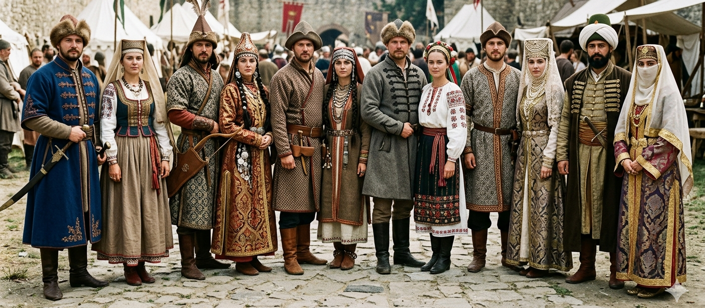
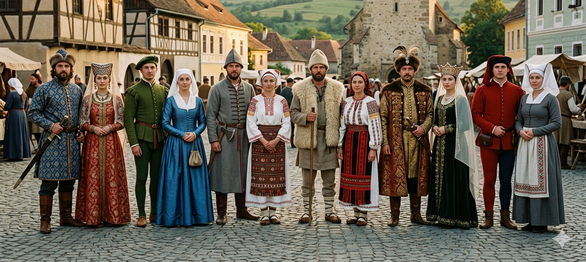
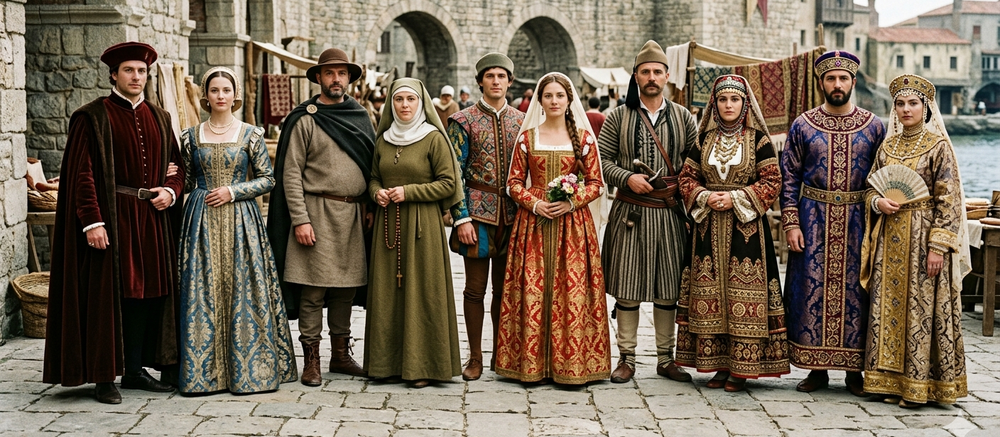

Introduction
Players begun as members of the court of Naples, assisting (from various roles) Prince Charles Robert to claim the Crown of Saint Stephen (King of Hungary and Croatia), inherited through the claim of his grandmother, Queen Maria of Naples, that Pope Boniface approved: Florentine bankers lent the gold and Genoese mercenaries escort the expedition, and the King of Naples will pay both in time.
First stories will be a roadtrip (beginning on a boat, actually) into the Balkans to “secure” the child king’s claim. More players can join the chronicle through introductory stories as it progresses, and players whose characters have “valiantly” perished can return with new ones; see Chronicle Structure for how the stories and sessions are run.
Setting
Nobility & Celebrities
Links to diagrams of the Árpád (downloading the SVG version is recommended) and Capet-Anjou family trees. Each line gives what is known of the person as the chronicle begins in the spring of 1300; ages are as of that spring.
- Main claimants and supporters
- Anjou court of Naples
- King Charles II of Naples (mid-40s): five years a prisoner in Aragon and still unable to win back Sicily, he is generous to the Church and father of fourteen, but distant from his grandson, whose father's line he had set aside in Naples in 1296.
- Queen Maria of Naples (early-40s, half-Árpád, half-Cuman) [image]: the "Golden Witch", who governed Naples through her husband's captivity, claims the crown of Saint Stephen as the sister of László IV, and won the Pope's recognition for her grandson in 1295.
- Prince Charles Robert (12) [image]: son of the late Charles Martel and a Habsburg princess, titular king of Hungary since his father died of plague in 1295, a composed child whose claim rests on his grandmother's blood, his grandfather's money and the Pope.
- Doctor Durante (mid-30s): a Florentine poet and physician exiled since 1293 and mourning his Beatrice, now tutor and chronicler of the prince, absent-minded, asocial and insightful.
- Sir Jean Drugeth (late-20s): a Provençal knight of the queen's household who has trained the prince in arms since 1290 and stands between him and every threat.
- Page Philip Drugeth (early-teens): Jean's brother, raised beside the prince in Naples and Provence, his squire, friend and confidant.
- Queen-dowager Elisabetta of Hungary (late-30s) [image]: sister of King Charles and widow of László IV, who shut her in a convent for three years until Queen Maria freed her in 1289; she claims her dower county of Veszprém and despises the Cumans.
- The Holy See of Rome
- Pope Boniface VIII (early-70s): the Roman noble who proclaimed this Jubilee year, quarrels with the kings of Christendom over the power of the Church, and has backed the Angevin claim to Hungary.
- Cardinal Niccolò Boccasini (early-60s): a Dominican of humble birth from Treviso, master of his order and cardinal since 1298, trusted by the Pope, suspicious of the heathen Cumans and eager to bring the Church of Bosnia back to Rome.
- Republic of Venice
- Doge Pietro Gradenigo (late-40s): Doge since 1289, who closed the Great Council to new families in 1297 and guards Venice's grip on the Adriatic.
- Teutonic Order
- Grandmaster Gottfried von Hohenlohe (mid-30s): a Franconian noble elected Grand Master at Venice in 1297, the first to go to Prussia, struggling to hold an order that lost the Holy Land and its Hungarian lands.
- Anjou court of Naples
- Árpád itinerant court of Hungary
- King András III of Hungary and Croatia (mid-30s): "the Venetian", grandson of András II through a son the main line called a bastard, raised in Venice and crowned in 1290; the last male Árpád, without a son, his reign alienates nobles and clergy and his power barely reaches beyond the Cuman lands.
- Queen Agnes of Austria (late-teens): the Habsburg daughter of King Albrecht, his second wife since 1296, isolated among the Cumans her husband rides with; a cousin of Charles Robert.
- Queen-dowager Tomasina Morosini (in memory): the king's Venetian mother, Duchess of Slavonia from 1292, died in 1296 or 1297.
- Khan Georgi Terter (late-30s): the deposed tsar of the Bulgarians, in exile in Hungary since 1292, riding the Alföld with his Terter warriors beside the king; rude, short-tempered, a legendary duellist and a distant cousin of Queen Maria.
- Morosini court of Dubrovnik
- Ban Albertino Morosini (early-60s): the king's Venetian uncle, once a crusader, podestà of Pisa and Duke of Crete, made Ban of Slavonia and heir in 1299, the most hated man in Croatia.
- Captain Farkas Kačić (early-40s): a Dalmatian noble of a family known for piracy, the king's cupbearer, who holds the southern coast and the mountain paths with Slav and Cuman war-bands.
- Croatian lords and prelates (Croatia, Dalmatia, Istria and western Slavonia)
- Babonić court of Zagreb
- Count Stjepan IV Babonić: lord of the lands between the Vrbas and the Kupa, in rebellion against Morosini's banship of Slavonia and among the first to send envoys to Naples.
- Frankopan court of Krk
- Count Dujam II Frankopan: lord of Krk since 1288, who has backed the house of Anjou since 1290 and visited the court of Naples in 1291.
- Šubić court of Bribir
- Count Pavao Šubić (mid-50s): the most powerful lord of Croatia, Ban of the Croats, master of the coastal cities from Zadar to Split, who mints his own coin and in 1299 proclaimed himself Lord of Bosnia.
- Juraj Šubić (early-30s): Pavao's brother, educated in Florence, diplomatic and well-connected, who carried the Croatian lords' petition to Naples this winter.
- Babonić court of Zagreb
- Western counties (Transdanubia, Lower and Upper Hungary)
- Aba court of Gönc
- Palatine Amadé Aba (mid-40s): lord of the north-eastern counties, seven times palatine, who beat back the Mongols in 1285 and allied himself with András III in 1298.
- Ákos court of Diósgyőr and Székelyudvarhely
- Csák court of Trenčín
- Máté Csák (late-30s): master of the north-west from Trenčín, palatine since 1296 who kept the title by force when his term ended; hates the Cumans and is friendly with the Wittelsbachs of Bavaria.
- Kőszegi court of Kapronca and Sárvár
- Henrik Kőszegi (mid-40s): lord of the lower Slavonian counties, excommunicated in 1288 with his brother Iván for their crimes against the burghers of Esztergom.
- Miklós Kőszegi (15): heir of his grandfather Iván since his father was killed by lightning in 1297.
- Rátót court of Eger
- Archdiocese of Esztergom
- Archbishop-elect Gergely Bicskei (50): elected by the chapter in 1298, refused by the Pope but made apostolic administrator, now the champion of the Angevin cause within Hungary.
- Archdiocese of Kalocsa
- Archbishop János Hont-Pázmány (60): a doctor of canon law of Bologna, archbishop since 1278, who leads the bishops who stand by András III.
- County and Diocese of Veszprém
- Diocese of Székesfehérvár
- Aba court of Gönc
- Eastern counties (Banat, Crișana, Maramureș and Transylvania)
- Borsa court of Adorján
- Ispán Jakab Borsa (40): "the Bald", ispán of Bihar and lord of Adorján, Master of the Horse in 1284 and Ban of Slavonia in 1298, the head of his family since his brother Lóránt fell.
- Kán court of Déva
- Voivode László Kán (early-40s): Voivode of Transylvania since 1295 and a member of the king's council, notoriously brutal, commanding the loyalty of Vlachs, Saxons and Székelys and guarding Hungary from the Golden Horde; he recently laid waste the towns and churches along the Mureș for no stated reason.
- Pok court of Frauenbach
- Ispán Miklós Pok (mid-50s): lord of Szamosköz, who usurps the king's rights there like the other lords of the north-east.
- Teutonic chapterhouse of Marienburg
- Komtur Siward of Burzenland (in legend): the Saxon knight who refused to leave the Burzenland when the order was expelled in 1225, and was killed when the castle fell in 1241.
- Vejtehi court of Mehádia
- Ban Tivadar Vejtehi (?): lord of the Banate of Szörény in all but name since 1291, ruling a remote and rough country and supporting no claimant.
- Borsa court of Adorján
- Southern banates, counties and neighbours
- Csák court of Ilok
- Ispán Ugrin Csák (early-60s): lord of Újlak and Syrmia, who holds the richest river crossings of the Balkans and supported the Croatian prelates' petition to the Pope for Charles Robert.
- Prince Miklós Csák (early-20s): Ugrin's only legitimate son, raised in Mitrovica by his half-brother Bishop Vencel, only now taking political initiative on his father's orders.
- Castellan ????? (early-50s)
- Master-of-Arms Álmos (early-30s): Ugrin's master-of-arms at Ilok, a hard drinker and a hard fighter.
- Master-of-Hunt Stanislav (late-30s): a Serbian huntsman who keeps Ugrin's hounds and the forests of Ilok.
- Kotromanić court of Bobovac
- Ban Stjepan Kotromanić of Bosnia (late-50s): Ban of Bosnia since 1287 and son-in-law of Dragutin, fighting the Bogomil heresy while the Šubić drive him out of his lands; allied with the Csák of Újlak and with Dragutin.
- Banitsa Jelisaveta (late-20s): Dragutin's eldest daughter, married to Stjepan in 1284 as part of a three-way treaty; the bridge that gives the Kotromanić their Nemanjić blood.
- Bogomil heretics of Vrhbosna
- Nemanjić court of Beograd (Banat of Macsó, Mačva and Lower Syrmia)
- Ban (King) Stefan Dragutin of Syrmia (early-50s): who took his father's throne with Hungarian help, gave it to his brother Milutin after a riding accident in 1282, and since 1284 rules Syrmia and Mačva from Beograd as a vassal of Hungary.
- Prince Vladislaus of Bosnia (pre-teen): son of Ban Stjepan of Bosnia, grandson and ward of Dragutin.
- Castellan ?????
- Captain ?????
- Larissa, the belly dancer (late-teens) [image]: the star dancer of a river-galley and the talk of the town; many rumours about her, her "father" and their ties to the court and the merchants.
- The triarchy of Mitrovica
- Prince Vladislav of Syrmia (early-30s): Dragutin's firstborn, who oversaw the worldly affairs of Mitrovica. Killed "accidentally" resisting arrest for questioning about the murders and disappearances in Mitrovica since the death of Urošica.
- Catholic Bishop Vencel of Mitrovica (mid-40s): a son of Ugrin Csák, who has sheltered Katalina and her children since 1282 and oversees the Catholic minority.
- Orthodox Episcope Sava of Mitrovica (late-40s): oversees the Serbian affairs of the town and its surroundings.
- Bana Katalina (mid-40s): eldest daughter of István V and Erzsébet the Cuman, Dragutin's estranged wife, withdrawn to Mitrovica since 1284 and never recovered from her sister's death.
- Princess Urošica (mid-teens): youngest daughter of Dragutin and Katalina, stubborn, curious and fascinated by the occult. Died while exploring the Mausoleum of Probus.
- Mihály, the alchemist (late-50s): a Magyar scholar who studied in Italy, eccentric, fascinated by the lore of the Slavonian marshes; once in the service of the Teutonic brothers of the Burzenland.
- Nemanjić court of Serbia (formerly Ras)
- King Stefan Uroš II Milutin of Serbia (late-40s): Dragutin's younger brother, the conqueror of Skopje and northern Macedonia who in 1299 forced the Roman emperor to give him a child bride; married four times, and a monster to those near him. Murdered by his son Dečanski.
- Queen Erzsebet (mid-40s): youngest daughter of István V, sister of Queen Maria, married to Milutin in 1283 by a rite neither Church accepts; mother of the twins Neda and Zorica. Disposed of by her husband in a disgraceful manner years ago.
- Prince Stefan Uroš III Dečanski (late-20s): Milutin's son by Anđelina, saved from blinding as a child, hostage of the Golden Horde from 1293 and governor of Zeta from 1297; he came back with the Byzantine embassy to depose his father.
- Jelena Duka Anđelina (late-40s): a princess of Thessaly, Milutin's second wife, who fled him in 1283 with Dečanski and came back in 1299 disguised as a handmaiden of the child bride to plot her revenge with her son.
- Queen Simonis Palaiologina (pre-teen): eldest daughter of Emperor Andronikos II by his second wife, given to Milutin in 1299 to buy peace; a tool in the hands of Metochites, Anđelina and Dečanski. Now married to Dečanski.
- Ambassador Theodore Metochites (early-30s): a scholar of humble birth who rose by intellect, led the embassy of 1299 and stays in Serbia as the emperor's ambassador, extremely well-connected across the Balkans.
- Nemanjić court of Shkodër
- Abbess Jelena (late-70s): widow of King Uroš I and mother of Dragutin and Milutin, a French princess who became an Orthodox nun in 1277 and governs the land between the Albanians and the Venetians.
- Sister Brnjača (mid-20s): Jelena's daughter, devoted to the Church, who saved the child Dečanski from mutilation in 1282 and carried the infant twins to safety in 1284; she shelters her nephews and nieces.
- Prince Stefan Konstantin (late-teens) [image]: Milutin's younger son by Anđelina, raised apart from his father among his grandmother's and aunt's southern monasteries; he helped his half-sisters escape and now supports Dečanski from Shkodër.
- Princesses Neda and Zorica (late-teens) [image]: the twin daughters of Milutin and Erzsebet, carried away from their father's wrath as infants and raised near Podgorica; they fled into the Dinaric mountains and failed to complete a ritual of vengeance.
- Port of Ulqin
- Yuri, the librarian (early-70s): a hunchbacked Rusyn dealer of apocryphal manuscripts, and a contact of Metochites.
- Csák court of Ilok
- Beyond the realm of Saint Stephen
- Basarab court of Argeș
- Bellonid court of Barcelona
- Capet court of Paris
- King Philip IV the Fair of France (early-30s): King since 1285, the most formidable ruler of his generation, at war with the Pope over the taxation of the clergy; a cousin of King Charles of Naples.
- Habsburg court of Vienna
- King Albrecht I of the Germans (mid-40s): Duke of Austria, who killed his rival Adolf of Nassau at Göllheim in 1298 to win the German crown; father of Queen Agnes and great-uncle of Charles Robert.
- Palaiologos court of Konstantinoupolis
- Emperor Andronikos II Palaiologos (early-40s): a cultured and pious emperor who disbanded his navy, lost his European lands to Milutin save Thrace, Thessaloniki and the Peloponnese, and gave him his young daughter; widower of Queen Maria's youngest sister, Anna.
- Piast court of Kraków
- Přemyslid court of Prague
- Romanovich court of Lviv
- King Lev I of Galicia (early-70s): the old king of Ruthenia, widower of Constance of Hungary, the aunt of Queen Maria.
- Terter court of Tarnovo
- Queen Ana Terter (early-20s): daughter of Georgi Terter, married to Milutin in 1284 as part of a truce and mistreated at his court for sixteen years. Sacrificed so that the Serbian king could remarry.
- Wittelsbach court of Munich
- Duke Otto III of Lower Bavaria (late-30s): a grandson of Béla IV, named by some barons as a candidate for the crown in 1290; a cousin of Queen Maria.
Titles
King: A Catholic (usually) Christian ruling of a vast domain recognised by the Pope. Addressed as “your majesty”.
Queen Consort: The current wife of a reigning King.
Queen Mother: The mother of any living and deceased King.
Queen Dowager: The widow of a deceased King.
Emperor/Emperess: The title used by the rulers of the Roman (now Eastern) and Holy Roman Empires, instead of King. This title is equivalent, but not the same as the King of the Germans.
Grand Prince/Princess: A ruler of a vast domain, that is neither Catholic nor recognised by the Pope, but only other Kings.
Khan: The title used by rulers of Turkic descent, equivalent to King.
Duke/Duchess, Herzog/Herzogin (in Saxon): Rulers below the Holy Roman Emperor that rule over multiple counties.
Count/Countess, Graf/Graffin (in Saxon, Chakavian, and Slovene), Ispan/Ispana (in Magyar), Zupan/Zupana (in Slavic), Voivod(e)/Voivoda (in Vlach): Rulers of at least one domain, owing their fealty to a King or Duke.
Ban/Banitsa: Counts of borderland domains.
Palatine: The ruler of a royal castle and its surrounding.
Castellan: The ruler of a non-royal castle and its surroundings, serving a Duke, Count, or Ban.
Baron/Baroness: The ruler of a domain within a county that has no castle.
Prelate: A generic term to address landed nobility and clergy.
Prince/Princess: Any legitimate child of a landed noble.
Banner(man): Any noble in the service of another “higher-ranking” one.
Sir: Any noble bestowed with the right to use a sword in the name of a liege lord, in other words a knight.
Lord/Lady: A generic term for all nobles. Addressed as “milord, my lord, your lordship”.
Page: A knight in training serving a specific knight.
A note on addressing clergy below, independent of their noble rank, their ecclesiastical is used, addressing a man of the cloth with their noble title can only imply that whoever does it doesn’t recognise the church, his position in it or is interested in his family and life before taking the vows to serve the Creator.
The Pope, Bishop/King/Patriarch of Rome: The leader of the Catholic Church, elected by the college of Cardinals and infallible as the voice of the Holy Trinity in the material world.
Cardinal: A bishop or minister of the Papal State, directly electing and advising the Pope, holding earthly power in his diocese.
Archbishop: The ultimate authority of multiple Catholic dioceses outside Lazio.
Patriarch: The Orthodox equivalent of the Catholic Archbishops.
Bishop: The ultimate authority of a single Catholic diocese outside Lazio.
Prince-Bishop: As Bishop with additional earthly power over his domain, equivalent to a Duke or Count.
Episcope: The Orthodox equivalent of the Catholic Bishops.
Minister/Pastor/Rector/Vicar: The spiritual leader of a single church and its attendants.
All the above are generically addressed as “father”.
Abbot/Abbess: The leader of a monastery or monastic complex.
Grandmaster, Hochmeister (in Saxon): The leader of the Order of Brothers of the German House of Saint Mary in Jerusalem, better known as Teutonic Knights.
Commander, Komtur (in Saxon): The Teutonic Knight controlling at least one chapterhouse.
Monk/Nun: Anyone who has donated all their material belonging to a monastery and took vows of absolute devotion to the worship of the Creator.
Hermit: Anyone who has abandoned their material belonging and took vows of absolute devotion to the worship of the Creator.
All the above are generically addressed as “brother/sister”.
Church
The orthodox/catholic schism occurred in 1024, the fourth crusade in 1204 aggravated the situation, but the Palaiologan dynasty of Nicea, that retook control of Konstantinoupolis in 1261, tries to reunite the church (and gain the support of the western kings), pivotal to this effort was the 2nd council of Lyon in 1274. The eastern church is split in two camps, the unionists mainly supported by the old nobility of the Balkans, and the separatists mainly supported by the younger warlords.
An excellent 3-hr recap of how things in the church ended up like this is this podcast ;)
- Ecumenical Patriarchate of Konstantinoupolis [wikipedia]
- The Holy See of Rome [wikipedia]
- Archdiocese of Strigoniensis (Esztergom) [wikipedia]
- Archdiocese of Colocensis (Kalocsa) [wikipedia]
- Diocese of Apulum / Transsilvaniensis (Weißenburg / Gyulafehérvár) [wikipedia]
- Diocese of Csanadiensis (Csanád) [wikipedia]
- Diocese of Sopianæ / Quinqueecclesiensis (Pécs) [wikipedia]
- Diocese of Varadiensis (Nagyvárad/Oradea) [wikipedia]
- Diocese of Zagrabiensis (Zagreb) [wikipedia]
- Diocese of Sirmiensis (Mitrovica) [wikipedia]
- Diocese of Bosniensis (Đakovo) [wikipedia], exiled from the pronice below
- Heretical Province of Bosniensis (Vrhbosna/Sarajevo) [wikipedia], crusade/inquisition against the Bogomil heresy
- Archdiocese of Ragusina (Dubrovnik) [wikipedia]
- Archdiocese of Spalatensis (Split) [wikipedia]
- The Dominican Order of Preachers [wikipedia]
- The Franciscan Order of Friars [wikipedia]
- The Order of Brothers of the Teutonic House of Saint Mary in Jerusalem [wikipedia]
- Headquarters in Venezia, will move during the campaign to Malbrok in Prussia
- Chapterhouse of Bari [
wikipedia] - Chapterhouse of Burzenland [¿traitors?], lost contact during the Mongol invasion
For the tithes, estates and incomes of the bishops, chapters, monasteries and friars, see The Church's Economy.
Medieval Universities
In the middle ages higher education was part of the organised church [wikipedia].
- Unrecognised by The Holy See, operating before 1300:
- Recognised by The Holy See before 1300:
- Bologna: Operating since 1088, recognised in 1180s [wikipedia].
- Oxford: Operating Since 1096, recognised in 1214 [wikipedia].
- Campbridge: Founded by dissenting Oxford scholars in 1209, recognised in 1233 [wikipedia].
- Padova: Founded by Bologna doctors in 1222 [wikipedia].
- Napoli: Founded by the Holy Roman Emperor in 1224 [wikipedia].
- Salamanca: Founded by the King of León in 1218, recognised in 1255 [wikipedia].
- Lisbon: Founded in Lisbon in 1290, relocated to Coimbra (1308-38, 1354-77, and permanently in 1537) [wikipedia].
- Operating before 1300, recognised later:
- Founded after 1300:
- Praha: Founded by the Holy Roman Emperor in 1348 [wikipedia].
- Pavia: Founded in 1361, relocated temporarily to Piacenza (1398-1412) [wikipedia].
- Kraków: Founded by the King of Poland-Lithuania in 1364 [wikipedia].
- Wien: Founded by the Duke of Austria in 1365 [wikipedia].
- Heidelberg: Founded by the Elector Palatine in 1385 [wikipedia].
- Torino: Founded in 1404 [wikipedia].
- Leipzig: Founded in 1409 [wikipedia].
- Pisa: Originally founded in 1343, closed in 1360, reopened in the 1400s [wikipedia].
Calendar
Below are the major festivals observed annually. Bogomils, who rejected almost all of the Christian liturgical calendar as the Devil's invention, are noted only where they retained an observance (chiefly the moljenje — prayer days — and the symbolic week-cycle). Pechenegs, almost wholly Tengrist before their absorption into Hungarian, Byzantine, and Bulgarian Christian polities, retained few distinctive feasts after conversion; their pre-Christian solar cycle is noted in passing.
Note that in 1300, the Balkans were observing strictly the “old” Julian calendar. The "new" Gregorian calendar wouldn't arrive for another three centuries, and even then, most of the Balkan populations would reject this "Catholic" calendar for centuries, clinging to the Julian system as a matter of religious identity.
1 January: New Year's Day
Újév (Magyar), Neujahr (Saxon), Mala Bogojavljenska (Slavic), Anul Nou / Plugușorul / Sorcova / Vasilca (Vlach)
Vlachs perform the Plugușorul (Little Plough) [wikipedia] and Sorcova [wikipedia], house-to-house wishing rites with ploughs, bells and decorated sticks; the Vasilca (decorated pig's head) is paraded [blog]. Saxons exchange visits and toast with mulled wine. Magyars and Székely eat lentils for prosperity and pork for "rooting forward”.
6-7 January: Koleda
Koleda (Slavic)
Midwinter caroling rite, originally on the winter solstice (21–24 December), shifted to 6–7 January in Old Calendar regions. Households visited by koliadnyky in costume — bears, goats, horses — singing kolyadki and receiving food and drink. Honors the rebirth of the sun. [wikipedia]
6-7 January: Epiphany / Theophany
Vízkereszt (Magyar), Heilige Drei Könige / Epiphanias / Sternsinger (Saxon), Bogojavljenje (Slavic, 19 January in the Old Calendar), Bobotează (Vlach)
Blessing of waters by throwing a cross into a river or lake; the swimmer who retrieves it is blessed for the year. Saxons begin the Sternsinger (star-singing) child-processions. A direct survival of pre-Christian water cult, christianised through Christ's baptism.
2 February: Candlemas
Gyertyaszentelő Boldogasszony (Magyars), Lichtmess (Saxons), Sretenje (Slavic), Întâmpinarea Domnului (Vlach)
Candles are blessed and kept against thunder, illness, and dying without confession. Weather divination: a sunny Candlemas means six more weeks of winter. [wikipedia]
Late Winter: Carnival
Farsang / Busójárás (Magyar), Fastnacht (Saxon), Pokladi (Slavic), Lăsata Secului (Vlach)
From Epiphany to Ash Wednesday: costume balls, masked plays, processions. The Magyar Busójárás of Mohács — sheep-skinned, horn-masked figures driving Old Man Winter into the Danube — is the most famous [wikipedia]; Croatian Zvončari of Kastav are cognate [UNESCO].
24 February: Feast of Love
Mátyás-nap (Magyar), Dragobete (Vlach)
Young men and women gather flowers in the forest at dawn; a kiss may be stolen from a sweetheart. Birds are said to pair on this day. A pre-Christian spring courtship rite. [wikipedia]
1 March: Mărțișor
Martenitsa / Martinka (Slavic), Mărțișor (Vlach)
The red-and-white cord mărțișor is pinned to clothing; worn until the first stork is sighted, then tied to a fruit tree. [UNESCO, wikipedia]
1-9 March: The "Old Women" Days
Babele / Zilele Babei Dochia (Vlach)
Each person picks a day, and the weather of that day forecasts their year. Personified by Baba Dochia, an old woman climbing the mountain with her sheep, freezing with each shed sheepskin. Pre-Christian. [wikipedia]
21 March: Spring Equinox
Sun-renewal day (Magyars & Cumans/Pechenegs), Jarilo's Day / Vesnyanky (Slavic), Frühlingsanfang (Saxons), Echinocțiul de primăvară (Vlachs)
Welcome to Yarilo [wikipedia], young god of vegetation, returning from the underworld. Songs (vesnyanky [wikipedia]) "call" the spring back. In Tengrist tradition, the equinox marked the renewal of the eternal-blue-sky's strength. In Bogomil reading, the equinox is one of two annual moments of cosmic balance between God and the Adversary.
22 March to 25 April (catholic) and 4 April to 8 May (orthodox): Easter
Húsvét (Magyar), Ostern (Saxon), Vaskrs (Slavic), Paști / Pasca (Vlachs)
Egg-decorating (piros tojás / pisanky / pisanice / ouă încondeiate) [wikipedia]; pasca sweet bread; for Magyars, Easter Monday is Vízbevető hétfő, "throwing-water Monday," when boys douse girls. Bogomils held the Eucharist as a Satanic invention and observed only a private, fasted prayer night. [wikipedia]
23 April: Saint George’s Day
Szent György (Magyar), Sankt Georg (Saxon), Đurđevdan (Slavic), Sfântul Gheorghe (Vlach)
Cattle are first driven to summer pasture; doorposts are greened. Đurđevdan among Slavs is a major spring rite, sung as a feast of awakening. The eve of St. George is one of the most dangerous nights for strigoi, vukodlaci, witches. [wikipedia (catholic/orthodox)]
1 May: May Day
Majális / Májusfa (Magyar), Maibaum (Saxon), Prvomajski uranak (Slavic), Armindeni (Vlach)
Maypoles are erected [wikipedia]; greenery is brought into the house; sweethearts dance. Among Vlachs, an armindeni (a green branch) is fixed to the gate to ward off sickness. [wikipedia]
10 May to 13 June (catholic) and 23 May to 26 June (orthodox): Pentecost / Whitsun
Pünkösd (Magyar), Pfingsten / Kronenfest (Saxon), Trojice / Duhovi / Kraljice (Slavic), Csíksomlyói búcsú (Szekely), Rusalii / Călușari (Vlach)
The Saxons hoist the Krone (a great wheat-and-flower wreath); the Székely make their largest pilgrimage of the year to Csíksomlyó (Șumuleu Ciuc); the Vlachs fear the Rusalii and trust to the Călușari dance fraternity for healing [wikipedia]; the Magyars elect a Pünkösdi királyné (Whitsun queen) and run the king's race [blog]; Slavs send out kraljice girls' processions.
24 June: Midsummer / Saint John’s Eve
Szent Iván éjszakája (Magyar), Johannisnacht (Saxon), Ivanjdan / Ivanje (Slavic), Sânziene / Drăgaica (Vlach)
Bonfires leapt over for purification; sânziană flowers (yellow bedstraw) gathered by Vlachs for healing crowns [wikipedia]; cattle driven through the smoke. The mythical fern-flower is sought by Slavs in the forest and float wreaths on the Sava [wikipedia]. Saxons light hilltop Johannisfeuer. Christianised pagan solstice.
20 July: Prophet Elijah's day
Illés-nap (Magyar), Eliastag (Saxon), Ilinden / Ilijevdan / Perun's Day (Slavic), Sfântul Ilie (Vlach)
In Slavic and Vlach folk usage, Elijah [wikipedia] drives the storm-chariot in place of Perun [wikipedia]; no work is done in the fields. Among the Bogomil, recognised as a true prophet — one of few accepted.
15 August: Dormition / Assumption of the Virgin
Nagyboldogasszony (Magyar), Mariä Himmelfahrt (Saxon), Velika Gospojina / Velika Gospa (Slavic), Adormirea Maicii Domnului / Sfânta Maria Mare (Vlach)
Major pilgrimage feast across all Catholic and Orthodox cultures. The Magyar title "Great Blessed Lady" preserves what was almost certainly the name of a pre-Christian mother goddess. [wikipedia (catholic/orthodox)]
20 August: The Founding King's Day
Szent István-nap (Magyar), Államalapítás ünnepe (Szekely)
Hungarian state feast since 1083. Also "Day of the New Bread": the first loaves of new wheat are blessed and broken. A harvest festival lightly Christianised. Cumans and Pechenegs, after Christianisation, observed it as their patron-king's feast. [blog]
8 September: Nativity of the Virgin / Harvest Festivals
Kisboldogasszony / Szüret (Magyar), Erntedank / Mariä Geburt / Weinlese (Saxon), Berba grožđa / Dożynki / Dozhinki / Mala Gospojina / Mala Gospa / Obzhinki (Slavic), Culesul viilor (Vlach)
Christian celebration of the birth of Mary, mother of Jesus, at the end of the high pasture season; sheep return from the mountains [wikipedia]. Saxon harvest celebrations include folk costume, dance, the great wheat-and-flower-decorated cart, the hoisting of the harvest crown. In Slavic cultures, the last sheaf is plaited into a wreath or doll (the baba or dożynkowy wieniec) and carried to the manor, feasting with music as gratitude to the earth [wikipedia]. In wine producing villages, especially Eger (Hungary), Mediaș and Dealul Mare (Saxon and Vlach), and Fruška Gora (Serbia), the grape harvest is celebrated with folk dance and costumed parades.
22 September: Autumn Equinox
Veles' Day / Tausen (Slavic)
Honour of Veles [wikipedia], master of cattle and the underworld; threshold of the dark half of the year.
14 October: Intercession of the Theotokos
Pokrov / Protection of Our Most Holy Lady Theotokos and Ever-Virgin Mary (Slavic)
The feast celebrates the protection afforded the faithful through the intercessions of the Mother of God, (Theotokos) [wikipedia]. In folk usage, it is the day winter "covers" the land. Marriage season opens.
26 October: Saint Demetrius Day
Dömötör-nap (Magyar), Demetriustag (Saxon), Mitrovdan (Slavic), Sfântul Dumitru / Focul lui Sumedru (Vlach)
The day cattle return from the mountains. Focul lui Sumedru (Vlach autumn hilltop fires) is a probable survival of an old fire-rite. Among Slavs Saint Demetrius [wikipedia] is the slava (patron saint) of many noble houses.
8 November: Saint Michael’s Day
Mihály-nap (Magyar), Michaelistag (Saxon), Sveti Arhangel Mihailo / Aranđelovdan (Slavic), Sfinții Arhangheli (Vlach)
Closes the rural economic year; servants' contracts end, livestock is reckoned. Frequent slava (patron saint) day. [wikipedia]
14 November: Wolves’ Day
Filipi de Toamnă (Vlach)
Wolves rule the woods; livestock is locked in. A taboo day — no woollen work; the iron tools are hidden. A pre-Christian wolf-god feast preserved.
29-30 November: Saint Andrew's Day
Andrejevdan (slavic), Noaptea Sfântului Andrei (Vlach)
The most dangerous night of the calendar year of the Balkans. The strigoi [wikipedia] rise, wolves can speak, doors are rubbed with garlic. Young women perform divinations to glimpse a future husband. Pre-Christian liminal-night belief, lightly Christianised. [wikipedia]
6 December: Saint Nicholas’ Day
Mikulás (Magyar), Sankt Nikolaus / Pelznickel (Saxon), Sveti Nikola (Slavic) Sfântul Nicolae (Vlach)
Children leave out boots overnight to be filled with sweets or twigs. In Hungary, Krampusz [wikipedia] accompanies the saint; in Saxon villages, a fur-clad Pelznickel [wikipedia]. Among Serbs, the slava (patron saint) of more families than any other day. [wikipedia]
13 December: Saint Lucy’s Day
Luca napja (Magyar)
For Magyars it marks the start of a 12-day divination period where spirits and witches are believed to be most active. Crafting the Luca széke (Lucy’s chair) requires adding one wooden chip daily until Christmas, allowing its maker to spot hidden witches during Midnight Mass. Strict prohibitions forbid women from sewing or baking to protect livestock and prevent bad luck, making it a traditional day of rest. Families plant "Lucy’s wheat" to predict the coming year’s harvest, while girls use name-slips to divine the identity of their future husbands. To ward off evil, people rub garlic on doorways and scatter poppy seeds to distract any witches following them home from church.
21 December: Winter Solstice
Koliada / Koročun (Slavic)
Underlies the entire midwinter cycle of all cultures listed; Cuman/Pecheneg Tengrist sun-veneration and the Slavic Koliada both pivot on it. [wikipedia (Koliada / Koročun / Midwinter)]
24-25 December: Christmas
Karácsony (Magyar), Weihnachten / Christbaum (Saxon), Božić / Badnjak / Badnji dan (Slavic), Crăciun / Ajunul Crăciunului / Colindat (Vlach)
The Slavic badnjak (a young oak) burnt on Christmas Eve [wikipedia] and the Vlach colindat (caroling) [wikipedia] are direct survivals of pre-Christian solstice rites. Saxon Christbaum is the ancestor of the modern Christmas tree. In Hungary, nativity plays are performed; in Slavic regions a didukh sheaf is brought into the house as the spirit of ancestors [wikipedia]. Bogomils refused all of it. [wikipedia]
26 December - 7 January: The Twelve Days
Karácsony és újév között (Magyar), Sveta nedjelja / Koleda / Shchedrivky (Slavic), Capra, Ursul, Vasilca, Mascații (Vlach)
Vlach masked midwinter cycle — Goat (Capra), Bear (Ursul), Pig's-head Vasilca, the Mascații — and Slavic koleda and shchedrivky caroling fill these days, when the dead are said to walk. Pre-Christian masked theatre. [wikipedia]
Variable: Slava
The Serbian and Croatian slava — feast of the patron saint of a family or guild, inherited father to son. The single most distinctive South Slavic festival, blending Christian sainthood with pre-Christian ancestral cult. [UNESCO, wikipedia]
Folklore
Unlike Italians and Byzantine Greeks, the rest of the peoples of the Realm of Saint Stephen have been christianised centuries later. Therefore their pagan beliefs are more prominent in their daily lives. Below are some basic beliefs, practices and superstitions of the main groups.
Vlachs
Vlach spirituality was characterized by dualism, while they were devoutly Orthodox, their folklore suggested the world was co-created by Dumnezeu (God) and Dracul (the Devil). In their myths, God provides the soul and the light, but the Devil is responsible for the "heaviness" of matter and the creation of difficult terrain like mountains and marshes. To a peasant, the world was governed by a strict sense of cosmic balance and the constant threat that the dead might not stay dead.
The concept of the "undead" was a genuine everyday “health” concern. For example the Strigoi were troubled souls or people born with certain marks (like a caul), believed to rise from the grave to drain the vitality of relatives, and bring plague. Another example are the spirits of unbaptized children or those who died violent deaths, called Moroi. To prevent a suspected strigoi or moroi from rising, peasants used elaborate rituals involving garlic, incense, or driving a stake through the heart of the deceased if the body showed "signs of life" (like growing hair or nails) during exhumation.
The Vlach wilderness was thick with entities that governed specific domains:
- Solomonar were tall, red-haired wizards who lived in the "Other World" and rode dragons (Balaur) to control the clouds and hail.
- Iele were beautiful, vengeful maidens who danced in circles by moonlight. If a peasant saw them or stepped on their dancing ground, they would be struck with physical paralysis, their minds "taken" by these spirits.
- Muma Pădurii (Mother of the Forest) was an ugly, hunched hag, protecting the woods. She was known to kidnap children, but could be pacified with specific forest offerings.
- Zmeu was a powerful, anthropomorphic being with metallic scales. Unlike the mindless dragons, it had human desires, often kidnapping beautiful maidens and hoarding artifacts.
- Vârcolac was a creature (often a wolf-man) believed to be responsible for eclipses by literally swallowing the moon or sun.
Below are some common beliefs (superstitions):
- The Ursitoare, three female spirits (Fates) believed to visit a newborn on the third night of life to weave its destiny. Parents would leave out "bribes" of bread, wine, and honey to ensure a good fate.
- Tuesday was regarded as a "bad day" ruled by the spirit Marțolea. Women were forbidden from spinning wool or sewing on nights, or they risked being punished by this demonic entity.
- The Călușari was a secret fraternal society of dancers who performed exorcism-like rituals. Their dance was believed to cure those "taken by the Iele" and ensure village fertility.
- The wolf was the most sacred and feared animal. The Vlachs had "Wolf Holidays" (winter periods) where it was forbidden to speak the animal's name or use scissors, lest the wolves attack the folds.
- The Snake of the House (Șarpele Casei) was a benevolent spirit. Almost every peasant home was believed to have a "guardian snake" living in the foundations. Killing it was thought to bring immediate death to the head of the household.
For the peasants, the real "monsters" were the spirits of the restless dead hiding in the ancient, twisted, dense, and misty Carpathian forests.
Slavs
The Slavic world was not governed by one god but by a crowded, contentious pantheon whose borders were never quite settled, theologians argued then as now whether certain names referred to the same deity or to several. At the summit stood Perun, god of lightning, sky, rain and war, the keeper of oaths and the enemy of chaos, represented by oak trees. His great rival was Veles, god of cattle, music and the underworld, a chthonic trickster who stole from the heavens and was forever hurled back to earth by Perun’s thunder. Between them, the storm was not weather but theology. Then came the solar cluster, Dazbog (light and fortune), Svarog (the celestial smith who forged the world), and Svarozic (fire), whether these were three separate gods, aspects of one, or a father and his sons depended entirely on whom you asked and in which valley. Mokosh, the earth goddess of fertility, mud, and fate, spun the threads of human lives alongside her attendants. Morana [wikipedia] and Kostroma [wikipedia] were the paired goddesses of the turning year, called sisters in some valleys and two faces of one goddess in others: Morana (Marzanna, Morena) of winter, darkness and death, Kostroma of spring, light and life. At the vernal equinox the villagers carried a straw effigy of Morana out of the village, set it ablaze and drowned it in the river to drive out the winter; at the end of spring, in the Green Week, the effigy of Kostroma was mourned and buried or drowned in turn, so that each sister made way for the other. The western Slavs kept to their own oracle-god Redigast and the four-headed Sventovit, worshipped with particular fervour in the great temples of Szczecin and the island of Rügen, who oversaw war, harvest and divination alike. An unnamed lunar god haunted the space between them all, never quite named, never quite forgotten.
The Volkhvy (the priestly caste) maintained the wooden temples where the idols of these gods stood, tended the sacred fires, and served as the channel between the divine and human worlds. Even now, after Christianisation has officially swept through the nobility and the towns, the Volkhvy persist in the forests and remote villages, and peasants continue to seek them out in secret.
The Slavic wilderness was populated by entities that required constant negotiation:
- Vile are fey like creatures, like spring/river-nymphs also found in meadows and forest groves
- Vodenjak (south) / Wodnik (west) / Vodyanoy are water-men/goblin inhabiting ponds, wells and swamps
- Rusalki are summoned ghosts of the dead, associated with the Rusali-a/e festival
- Restless dead / ravenants:
- Upyr (vampires) rise from their graves at night terrorising the locals, the only thing that will end their curse is burning their bodies in funeral pyres.
- Striga witch-spirits, sometimes living, sometimes dead, that flew in the night and preyed on infants and sleeping men, drinking blood and draining vitality.
- Vukodlak (wolf-fur) are wolf shapeshifters [wikipedia]. Most are restless dead, but sorcerers can shapeshift into wolves voluntarily with rituals or inflict the shapeshift as curse to the living
For the Slavic peasant, the boundary between the living and the dead was more of a suggestion than a rule:
- The great Rusalii festival at the beginning of the harvest season was a communal effort to keep that boundary respectful. Villagers travelled, drank, and played games at crossroads and gravesites to invoke the ancestor-spirits for protection and guidance. Participants drank mead from horns, wore oaken masks and white gowns (deliberately resembling the Rusalki) to show the dead that the living had not forgotten them.
- Blood sacrifice was the primary language of worship. Cows were slaughtered beneath sacred oaks for Perun’s divination; animals were grilled at midday in honour of Dazbog and Svarog; in the darkest ceremonies, war captives and prisoners had their throats cut, and babies were drowned in rivers to propitiate the water-spirits. Such rites have been formally abolished, but whether they have truly stopped in the deep villages is another matter.
- The dead were cremated and their ashes buried in urns. A warrior’s pyre was expected to include the sacrifice of his wife, burnt alive alongside him. This custom was so pervasive that widows who were not burned sought to drown themselves rather than face the shame and the supernatural danger of surviving their husbands.
- Moon amulets (cast in silver or carved in bone) were worn against the creatures of the night, particularly the Upyr and Striga whose power was understood to wax and wane with the lunar cycle.
The Steppe Peoples
For a peasant, the world was a "thin" place where the physical and spiritual realms constantly overlapped. The Magyars believed in a "World Tree" or Világfa, which connected three distinct realms:
- The Sky, which was the home of the gods and the personified Sun and Moon. The head deity was Arany Atyácska (Golden Father) or Isten; Tengri for the Cumans.
- The realm of humans, shared with supernatural beings and spirits of nature.
- The Underworld of Ördög (who later became the Christian Devil) and the spirits of the deceased. Cumans still burn their dead to spare them from this Christian Hell, ascending their spirits to the Sky.
Peasants believed in Táltos (shamans) were chosen by the gods at birth, often identified by being born with "extra bones" (teeth or a sixth finger). They acted as healers, weather-makers, and spiritual protectors of the villages. In times of drought or storm, a Táltos would go into a trance (rejtezés) to fight the Táltos of a rival village in the form of a bull or a stallion to secure good fortune for their people. Of course now that the word of the True God has reached the peasantry and the ministries are heard every week in his houses, the Táltos live in secrecy, called upon only in dire need and despair.
Peasants live in a world populated by entities that are often more "dangerous" than "evil”, like:
- Turul: A divine giant falcon. While more of a national origin myth, it was seen as a messenger between gods and humans.
- Markoláb: A giant celestial monster believed to be responsible for eclipses by "eating" the Sun or Moon.
- Lidérc: A versatile, often malicious spirit, that could appear as a "magic chicken" that hatched from an egg kept under an armpit, or as a wandering light (ignis fatuus) that led people astray.
- Sárkány: Unlike the Western dragon, the Hungarian version was often a humanoid giant with multiple heads, primarily associated with controlling storms and bad weather.
- Boszorkány: The folklore witch, not always a villain, she was often a cunning woman who knew herbalism but could also cast the "evil eye" on livestock.
- Szépasszony: A seductive but dangerous female spirit who kidnapped infants or danced men to death. If you stepped into a "fairy ring" of grass, it was believed she had been dancing there.
- Tündér: Beautiful, ethereal beings who lived in hidden palaces. They were powerful, fickle, and could be deadly if offended.
For the peasants, the supernatural was practical, for example:
- Much of folk magic involved protecting children and cattle from the "gaze" of others (the evil eye), often using red ribbons or mirrors.
- Animals like stags were sacred, representing divine guidance, while wolves were often feared as a shapeshifter.
Transylvanian Saxons
Although the Saxons have carried the cross for over four centuries — the last of their continental ancestors was baptised under Charlemagne's iron hand — the Christianisation of peasant hearts is a slower business than that of nations. The folk beliefs they brought from the Rhine and Moselle valleys were, if anything, preserved here more perfectly than in the original country, sheltered by the mountains and the distance from the great ecclesiastical centres of the old lands. Their world was not simply the world of the Church. It was older, wilder, and far more crowded.
Above all loomed the memory of Wotan (or Woden), the wandering god — a tall, cloaked figure with a wide-brimmed hat, master of wind, wisdom, and the restless dead. No Saxon would name him openly, but every villager knew that the howling winter storms were his. Beside him stood Frau Holle (known also as Perchta to those from the southern German lands), a white-robed, contradictory figure: kind to the diligent spinners of wool and a terror to the idle. She walked the earth between Yule and Epiphany, inspecting every hearth; the hardworking found gifts left in their shoes come morning, while those who had left their distaff empty were said to wake with their bellies slit open and packed with straw.
The most feared omen in the Saxon world was the Wilde Jagd — the Wild Hunt. The Hunt is older than the Saxons and their Germanic gods: its roots lie with the continental Celts of the Rhine and Moselle, whose lands the Germanic peoples took over together with their legends, and the Saxons carried it east to Transylvania. On winter nights, when the wind rose to a roar through the Carpathian passes, peasants bolted their shutters and refused to look out, for through the darkness rode Wotan himself at the head of a spectral host of the restless dead, thundering across the sky on phantom horses accompanied by howling hounds. To witness the Hunt was to be swept into it; to be called by name from within it was to die before the year was out. Some said that where the Hunt passed, crops rotted in the field and wells ran foul by morning.
The world of the Saxon peasant was thick with spirits both helpful and hostile:
- Kobold is a household spirit who shares the family's hearth. If given daily offerings of porridge or bread left in a corner of the barn, it tended the cattle, kept the granary free of vermin, and warned of disaster. Ignore it, mock it, or forget its offerings, and it would sour the milk, tangle the horses' manes, and torment children in their sleep. Every Saxon farmhouse had its kobold, whether the occupants admitted it or not.
- Alp (also called Drude) is a malevolent night-spirit in the form of a crushing weight. It crept through keyholes and sat upon the chest of sleeping men and women, pressing the breath from them and weaving nightmares into their minds. Against it, the prudent Saxon scratched the Drudenfuß, a five-pointed star, into the doorframe or windowsill. The Alp was compelled to trace every line without lifting its finger and could never complete the figure, and so could never enter.
- Nachzehrer is the Saxon vision of the undead. Unlike the Slavic vampire that stalked the night, the Nachzehrer was a passive horror, a corpse, most often created by suicide or sudden death, that gnawed its own burial shroud from within the grave and silently consumed the life-force of its closest kin. Relatives sickened and died one by one without understanding why. It was identified by a bloated body, an open mouth, and soft flesh that resisted decay. The only remedy was exhumation and decapitation, performed before dawn.
- Bäschmotter (Forest Mother) is a specifically Saxon figure of the Transylvanian woods, a female spirit, neither wholly benevolent nor wholly cruel, presiding over the deep forest and its animals. She was propitiated before logging or hunting with small offerings left at the forest's edge. Those who showed disrespect to the wood found themselves hopelessly lost within it, wandering in circles while she watched from the dark between the trees.
- Broannenfraa (Lady of the Well) is a water-spirit inhabiting the springs and wells that were the lifeblood of every Saxon settlement. She was jealous of the purity of her water; those who tainted a spring were cursed with illness. Drawing from the well before dawn on certain holy days without the proper word of respect risked drawing something other than water.
- Schrat is a wood-demon lurking at the forest's edge that could afflict cattle with a strange paralysis (Schratteldruck) pinning beasts to the ground as if by an invisible weight. Farmers hung iron in their stalls as a ward, iron being the one material spirits universally feared and could not bear to touch.
- Berggeist (Mountain Spirit) is of particular importance to the Saxon miners working the silver and gold deposits of the Transylvanian ranges. The Berggeist appeared deep in the tunnels as a small, ancient man in a miner's coat. A respectful miner who left daily offerings of bread and a lit candle would be led to rich veins of ore and warned before a collapse. A greedy miner who cheated his fellows or wasted what the mountain gave would find the ore running dry, the timbers cracking, and something following him in the dark of the shaft — the Bergmönch, the malicious Miner Monk, who drove men to madness with his whispering.
- Nixie (Nix/night) is a water-spirit inhabiting rivers and mill-ponds, sometimes appearing as a beautiful woman or a man playing a mournful fiddle at the bank. They lured the unwary into the water to drown. A Nixie's music was said to be the most beautiful sound a man could hear and always the last.
- Weiße Frauen (White Women) are pale, luminous female spirits seen at dusk near ruins, old wells, or the edges of fields. They were generally omens rather than active hunters, their appearance foretold death or great calamity in the household before the season was out.
For the Saxon peasant, the supernatural was as practical as the weather:
- The Hausmarken (intricate geometric symbols unique to each family) were etched into the plaster and timbers of the home, the barn, and the granary. They served as protection against envy, lightning, and malicious spirits, and also as a mark of lineage passed from father to son. A house without its mark was an open house.
- Walpurgisnacht (the night of April 30th) was the great witches' sabbath, the most dangerous night of the year. Hexen (witches) were believed to fly on this night to a mountain gathering — in Germany, the Brocken in the Harz; in Transylvania, any high and desolate summit — where they danced with demons and plotted harm for the coming year. Villagers lit great bonfires on hilltops, cracked whips through the air, and rang church bells to drive them off. No sensible Saxon woman would leave milk uncovered or let butter churn after midnight on Walpurgisnacht.
- A Hexe was not merely a figure of story. She was a living woman — most often old, solitary, or sharp-tongued — who could curse through the evil eye (böser Blick), spoil harvests, and cause cattle to give blood instead of milk. Against her, red thread knotted with specific charms was tied around a calf's neck, and horseshoes were nailed iron-side up above every stable door.
- The Lindwurm (a great wingless serpent, cold-blooded and ancient) was spoken of as inhabiting the deepest mountain lakes and caves of the Carpathians. It was not fire but pestilence that surrounded it: its breath turned rivers foul and brought plague to the valleys below. Unlike the knights' dragons of chivalric romance, the Lindwurm could not be slain by a sword thrust. It had to be outwitted.
- When a child died before baptism, its soul (nameless, belonging to neither Heaven nor the Church) was believed to linger near the place of death for forty days, whimpering in the cold. Saxon custom demanded a specific laying-to-rest ritual, for a child left to drift would grow in malice over the years, progressing from a pitiable ghost to something that could no longer be reasoned with.
Universal “beliefs”
- There is no magic or supernatural; superstitions, miracles, curses, oaths, etc. are THE reality
- Personal age is counted in winters one has survived
- Years are counted by the reigning pope (year of our father Boniface, currently 6) or sovereign (year of our king Charles, currently 15)
- An order from a higher ranking noble is nigh impossible to disobey willingly and even if successful the consequences will be dire
- Men avoid to look at their reflection (mirrors, windows, pools, etc.), women do it all the time
- Always beware of your own shadow, it has a mind of its own
- The forests and mountains belong to the beasts, treading the wilderness is suicide (and a sin)
- Roman roads between towns are stalked by bandits, inns and taverns are the only safe havens
- Towns are dangerous from dusk till dawn
- All abandoned/ruined sites are haunted
- Churches are safe havens for the faithful
- Pilgrims are aided by God and His servants en route, not helping a pilgrim will invite His wrath
- Only nobles and clerics can read and write, don’t expect signposts on the roads and buildings
- Sleep is one “step” before death, only by God’s mercy wakes you, escaping Hell to atone for your sins
- Dreams are “real” and nightmares a glimpse of “Hell” to remind all mortals of low and high birth what awaits them outside the grace of the Creator
- Satan tempts men to sin in many forms and when least expected, only faith can save you
- Women are born to tempt men into sin, only by resisting their Satanic nature, they can be saved
- Exile is the most common punishment, administered by the sovereign or his instruments
- Excommunication is a death sentence for anyone but the most corrupt highborn, consulting directly with the devil
- The chivalric code applies to the nobility, peasants are fair game, knights and crusaders are not romantic, rather ruthless and brutal
- Courtly love was also an important concept, popularised by Eleonor of Aquitaine, Queen of France, then England and a crusader, among many other things. [wikipedia, short video, long video]
- “Sciences” of the ancients and infidels from the East brought to the faithful of the West are useful, but need the divine guidance of the Creator and the fortitude of His grace that only faith provides to resist the temptations of Satan they hide, otherwise they will lead to sin and damnation
Cultures

Magyars, Cumans, Pechenegs, Szeklys, Bulgars, and Turks [full size]

Serbians, Dalmatians, Croatians, Vlachs, Moldavans, and Transylvanian Saxons [full size]

Venetians, Western Romans, Neapolitans, Albanians, Eastern Romans [full size]
A lot of historical simplification has taken place here in order to narrow down the number of cultures, as well as introduce some mythological elements into each. Not all sections are for every player, only their own culture is important to read at least once, before character creation. There are no major spoilers here, some misinformation too (they are folk beliefs afterall); but if you want to be completely surprised by a foreign culture, don't read any other culture. The titles are the endonym plurals. The italic exonym at the end of each list is the demotic Greek name (singular masculine/feminine/plural).
On the rules side, recalling legends, customs, cultural faux-pas, or even the most renowned smith and scholar, etc. will be simplified into a culture familiarity roll replacing area knowledge, and even more specialised skills. The groupings above will impose a -6 penalty for cultures with similar origin and a -15 for the others. That is for recalling memories and stories, not for contacts already established and knowledge you have already gained in-character. Beyond that, I am considering giving bonuses on the rolls to questions asked, when your characters reconsider information implied, but not explicitly stated, I do take this into account, but not as modifiers yet.
Magyars
Magyar/Magyarok, written in Latin script; in the Old Hungarian runic script (𐳢𐳀𐳎𐳁𐳤) was used by some literate circles but Latin script dominated administrative and ecclesiastical writing by this period.
Exonyms
- Ungri (Latin — used by all Western European chanceries, clergy, and chronicles)
- Ungarn (Germanic)
- Węgrzy (Poles)
- Uhorci (Bohemians, Moravians & Transcarpathian)
- Ugry (Eastern Slavic)
- Madjarlar (Turkic)
- Hongrois (Gallo-Romance)
- Venger (South Slavic)
- Ungherese (Italic)
- Ougroi (Greek)
- Μαγυάρος/Μαγυάρα/Μαγυάροι
Language
The Hungarian dialects (Alfőldyi, Körösvidékyi, Székely & Transdanubian) were used in everyday life, legal proceedings, and oral literature. The language was written in Latin for all written record-keeping, royal charters, and church documents. The Old Hungarian runic script (rovásírás) persisted in Transylvania and among the Székely; Cyrillic occasionally used near Orthodox-influenced borderlands.
Native: Language (Turko-Mongol > Uralic > Finno-Ugric > Ugric > Hungarian > Alfőldyi), Language (Turko-Mongol > Uralic > Finno-Ugric > Ugric > Hungarian > Körösvidékyi), Language (Turko-Mongol > Uralic > Finno-Ugric > Ugric > Hungarian > Transdanubian), Language (Turko-Mongol > Uralic > Finno-Ugric > Ugric > Hungarian > Székely/Transylvanian)
Common foreign languages: Language (Indo-European > Latin & Romance > Western > Italo-Dalmatian, Italian & Vulgar Latin > Latin > Medieval), Language (Indo-European > Germanic > West > High > Upper > Austro-Bavarian), Language (Indo-European > Balto-Slavic > Slavic > South > Western South > Shtokavian), Language (Turko-Mongol > Turkic > Common Turkic > Kipchak > Western > Cuman), Language (Indo-European > Balto-Slavic > Slavic > West > Czech–Slovak > Transcarpathian)
Population
The Kingdom of Hungary had an estimated total population of 2-3 million with Magyars constituting approximately 50-55% of this, concentrated in the central plains (Alföld), the Danube-Tisza interfluve, and Transdanubia. This figure was significantly higher before the Mongol invasion of 1241-1242 (estimated to have killed 15–20% of Hungary's population), recovering gradually through the late 13th and early 14th centuries under Angevins.
Major urban centres were modest by Western European standards. Buda (the royal capital, combined with Pest across the Danube) had a population of perhaps 10,000-15,000, making it one of the larger cities in Central-Eastern Europe. Esztergom (archiepiscopal seat), Fehérvár (coronation city), Győr, Pécs, and Ödenburg each had populations in the range of 5,000. Pressburg (Bratislava) and Kaschau (Košice) were growing commercial centres. The cities of the kingdom were substantially inhabited by German burghers (hospites Teutonici) rather than ethnic Magyars, who were more prevalent in surrounding agricultural settlements.
Magyars were the majority population around Alföld (Great Plain) between the Danube and Tisza rivers, of Transdanubia (the region west of the Danube, south of Győr), and of the zone between the Dráva and Száva rivers (Slavonia). In Transylvania, Magyars formed a significant minority concentrated in the urban centres and western lowlands, while being numerically outnumbered by Vlachs and Székely in many highland zones. A Magyar-speaking noble class administered the entire kingdom regardless of local ethnic majority.
Politics
Hungary was a feudal kingdom with a powerful nobility (nemesség); the Aranybulla (Golden Bull, 1222) had established noble rights. The palatine (nádor) was the second-highest official. The Kingdom encompassed Croatia-Slavonia, Transylvania (under a voivode appointed by the king), and had feudal ties to Bosnia, Serbia, Wallachia, and Moldavia at various points.
Religion
Roman Catholicism is followed by approximately 95% of Magyars; firmly established since Stephen I (1000 AD). The Hungarian church had archdioceses at Esztergom and Kalocsa. A minority of ethnic Magyars follow Eastern Orthodoxy, more prevalent in southern borderlands. Finally, there exist residual shamanic beliefs (táltos) and traditions, surviving syncretistically within peasant culture.
Origins
The dominant medieval tradition held that the Magyars descended from the Huns through Attila. Chronicles such as the Gesta Hungarorum (c. 1200) and Gesta Hunnorum et Hungarorum (c. 1282–1285) by Simon of Kéza elaborated this Hun-Magyar identity. The Seven chieftains of the Magyars, led by Álmos and his son Árpád, were believed to have descended from the mythical Turul bird (a divine falcon or hawk), which appeared to Emese (Álmos's mother) in a prophetic dream. This origin linked Árpád's line to divine mandate. The Magyars migrated westward through Etelköz (between the Don and Carpathians) before entering the Carpathian Basin in 895-896 AD.
Reputation
- Renowned for goldsmith work, the treasure troves of the Conquest period (sabres, torcs, horse trappings) show sophisticated metalwork blending steppe and Byzantine motifs.
- Architecture under the Angevins, the royal palace at Visegrád and the Cathedral of Pécs were rebuilt in French Gothic style; Hungarian royal patronage brought Italian and French master builders.
- Manuscript illumination, such as the Illuminated Chronicle (Chronica Picta, 1358) is the masterpiece of Hungarian book art from this period.
- Hydraulic engineering and management of the Danube and Tisza flood plains for agricultural canals and mill construction.
- Their cavalry tactics remained famous; the kingdom maintained formidable border defence systems (gyepű) and their light horsemen (könnyűlovas) were feared and respected.
- Seen by Westerners as “former pagans” now champions of Christendom's frontier, guarding against Mongols and Turks.
- Venetians and Italian merchants respected them as valuable trading partners and as a royal market for luxury goods, textiles, and banking.
- Among their subjects, Magyar nobles had a reputation for haughtiness and fierce defence of noble privilege.
Appearance
By the 13th and 14th centuries, the ethnic Magyar population of the Kingdom of Hungary had undergone centuries of admixture with the diverse peoples of the Carpathian Basin (Avars, Slavs, Germans, Cumans, and others) and no single stereotyped appearance dominated. Contemporary chroniclers rarely commented on Magyar physical appearance; the Hungarians were known to their neighbours primarily by culture, language, and military reputation rather than by distinctive looks. That said, popular perception among Western Europeans in this period often imagined Hungarians as remnants of the terrible Huns, a stereotype that implied exotic Asiatic features, though this bore little relation to the actual appearance of most Magyars.
That said they had slightly broader, flatter facial structures, more prominent cheekbones, and darker hair compared to the local Danubian populations they settled among. By the 13th–14th century, three centuries of intermarriage had largely dissolved this distinction in the general population, and most Magyars in Hungary were physically indistinguishable from their Central European neighbours.
The typical Magyar peasant or townsman of 1300 likely had brown to dark-brown hair, brown or hazel eyes, medium skin tone (olive to light), and a face of medium breadth closer to broader Central European and Balkan morphology than to either the tall flaxen-haired German stereotype or the dark-complexioned southern Italian image. Their stature was modest by modern standards with average male heights of approximately 170 cm. Among the elite and border communities that retained stronger steppe-nomadic lineages (some Cuman-Magyar families, Székely border clans), a somewhat broader, higher-cheekboned face with more frequently dark straight hair might appear more often than in the Transdanubian heartland.
Fashion
By the mid-13th century, Magyar noble dress had absorbed steppe influences from Cuman and Pecheneg neighbours alongside Western Romanesque fashion. The characteristic garment was the tight-fitting, ground-length kaftán (from Turkic kaftan), worn with a richly decorated leather or metallic girdle. Under Ladislaus IV (r. 1272–1290), who maintained close ties to the Cumans, nobles adopted a distinctly eastern-inflected style, such as long side-vented coats over tunics, fitted trousers tucked into pointed boots. With the Angevin succession (Charles I, 1301), the court shifted toward Western chivalric fashion, like tailored surcoats, heraldic mantles, and chaperon hoods became fashionable among the magnates. Fur linings (sable, marten, fox) signalled rank. Women of the nobility wore long pleated skirts, embroidered bodices, and linen wimples; by the mid-14th century Angevin court ladies followed Aquitaine-influenced fitted gowns with dagged hems.
Catholic clergy in the Kingdom of Hungary wore standard Roman-rite vestments, like the alb and chasuble for Mass, surplice and cassock for daily wear. Bishops wore mitre, dalmatic, and pectoral cross; abbots carried the crozier. The colour of vestments followed the liturgical calendar (white, red, green, purple, black). Orthodox clergy near the southern borderlands followed the Serb or Greek communities within Hungary, wearing the ryasa (cassock), epitrachelion (stole), and phelonion (chasuble), with the kalimavkion (black cylindrical hat).
Peasants wore undyed or naturally dyed linen shirts and woollen tunics belted with a simple strap, woollen harisnya (leg-coverings similar to chausses), and leather sandals or low boots. In colder months a sheepskin suba (sleeveless coat) or woollen szűr (embroidered shepherd's coat) provided warmth. Women wore linen shifts, woollen aprons, and linen headscarves; wealthier peasant women added embroidered chemises and coloured sashes.
Patterns and colours of a Magyar noble dress in the Angevin era favoured deep jewel tones, such as crimson, cobalt blue, forest green, and gold; often with woven or embroidered geometric borders at hems and cuffs. Heraldic devices and dynastic colours (the Árpád red-and-silver stripes) appeared on noble mantles. Cuman-influenced kaftans sometimes featured repeating roundel motifs borrowed from steppe silk traditions. Commoner dress was naturally dyed in muted ochres, tans, and undyed cream/grey wool; festival clothing was brightened with red madder and weld yellow, particularly on embroidered shirt-collars and aprons.
Entertainment
The Magyar liturgical calendar closely followed the Roman Catholic cycle, with the great feasts of Christmas (Karácsony), Easter (Húsvét), Pentecost (Pünkösd), and the feast of St. Stephen (20 August) as the principal celebrations. St. Stephen's Day was a national holiday of particular importance, combining Christian observance with commemoration of Hungary's founding king. Markets and fairs (sokadalom) were held on major feast days, drawing traders and entertainers from across the kingdom.
Despite Christianisation, pre-Christian seasonal customs survived in peasant life. Spring fertility rites (busójárás-precursor traditions), midsummer bonfires (connected to the feast of St. John the Baptist), and harvest-end celebrations (őszi sokadalmak) retained elements of older Magyar shamanic (táltos) practice. The táltos healer-seer figure persisted in folk memory and occasional practice into the 14th century, despite church prohibition.
The Magyar court music of the Angevin era drew on French and Italian models; troubadour-derived lyric poetry (regős ének) was cultivated by noble patrons. The regős were itinerant singer-poets who performed at festivals and noble courts, preserving oral heroic traditions. Instruments included the koboz (a short-necked lute of Turkic origin), various flutes (furulya, síp), frame drums (dob), and horn-based instruments (kürt, tárogatő). Hungarian folk ensembles used the duda (bagpipe) and citera (zither-type instrument). At the royal court, French-trained musicians performed on lutes, harps, vielles (fiddles), and portative organs.
Hunting (vadászat) was the pre-eminent noble pursuit; royal hunting forests (vadaskert) were maintained around Visegrád and Buda. Falconry was a prestigious activity. Tournaments (lovagi tornák), introduced under Angevin influence, became fashionable in the 14th century. Dice, chess, and card games were popular among educated classes. Folk wrestling (birkózás) and archery competitions were common at peasant festivals. Travelling entertainers—acrobats, puppeteers, bear-leaders, and igric (minstrels)—performed at markets and noble households.
Cuisine
The Magyar kitchen carries the memory of the eastern steppe in every pot. Beef, pork, mutton, and the abundant fish of the Danube and Tisza dominate the diet, supported by millet and rye breads baked on hearthstones or in clay ovens. The cooking is direct and bold: meats are spit-roasted over open fires, braised in iron cauldrons called bogrács, or preserved by smoking and drying for the long Hungarian winters. Lard is the universal fat, and fermented dairy products (soured milk, fresh curd cheeses) appear at every table regardless of wealth. Magyar food has a reputation for vigour and abundance among neighbouring peoples, who describe it as a soldier's cuisine: sustaining, seasonal, and unapologetically rich in animal fat and rendered bone. The great river fisheries make freshwater fish central to fasting days, while the Pannonian plain's grain harvests and pig-fattening season define the late autumn calendar of Magyar domestic life.
- Gulyás (herdsman's meat) Hungarian cattle-herders simmered beef chunks with onion, lard, caraway, and black pepper in a copper cauldron over open fire until the meat was falling-tender and the reduced broth coated every piece. Dried at the end of cooking and rewetted on the trail, gulyás was the quintessential portable herdsman's meal. The absence of paprika (pre-Columbian) left caraway as the dominant spice, producing a darker, earthier flavour than the modern version. Price: 12 𝒮 a plate.
- Halászlé (fisherman's soup) Carpathian river fishermen boiled whole carp, pike, and catfish with abundant onion in river water, then strained the broth, pressed the cooked fish through a sieve to thicken it, and returned fillet pieces for the final minutes. The result was a deep golden fish soup (coloured with saffron on wealthy tables, and with onion skins simmered in the broth on poorer ones), rich and slightly gelatinous from the fish collagen, eaten with flatbread directly from the pot. Price: 6 𝒮 a bowl.
- Töltött Káposzta (stuffed cabbage) Sauerkraut leaves were wrapped around a filling of minced pork and millet, seasoned with dried marjoram and black pepper, packed into a clay pot with smoked ribs and fermented cabbage, then braised for three hours. The sourness of the sauerkraut (both wrapping and braising medium) was the defining Magyar flavour. Served with sour cream stirred in off the heat. Made in large batches that improved with every reheating. Price: 12 𝒮 a plate.
- Tarhonya (toasted egg-pasta pellets) Egg and flour were rubbed together into pea-sized pellets, dried in the sun, then toasted dry in lard until golden. Stored indefinitely, tarhonya was the Hungarian herdsman's pantry staple. To serve, it was cooked in meat broth or simply in lard with onion and simmered until the liquid was absorbed. The toasting produced a distinctive nutty depth impossible to achieve with fresh pasta and made tarhonya the companion to every Magyar braise. Price: 5 𝒮 a bowl.
- Bableves (broad-bean soup) Dried broad beans (or peas and lentils) soaked overnight, simmered for two hours with a smoked ham hock, onion, carrot, parsley root, and dried bay leaf until the beans were soft and the broth was smoky and rich. A rántás (roux of lard and flour) was stirred in to thicken the soup, followed by a splash of wine vinegar for sharpness. It was the winter staple of every farmhouse; cheap, filling, and warming. Price: 6 𝒮 a bowl.
- Hurka (blood and liver sausage) At autumn pig-slaughter, fresh pig's blood mixed with cooked millet, boiled liver, lung, and onion seasoned with black pepper, dried marjoram, and garlic was stuffed into natural casings and poached in simmering water for thirty minutes. Vérés hurka (blood hurka) was dark and iron-rich; májas hurka (liver hurka) was paler and more delicate. Both were eaten immediately, pan-fried in lard until the casing crisped, with mustard and pickles. A dish eaten only once a year at the disznóvágás (pig-killing feast). Price: 7 𝒮 a portion.
- Pörkölt (dry-braised meat stew) It differed from gulyás in technique, no liquid was added. Diced pork or lamb was cooked exclusively in its own released juices with onion and lard, stirred constantly to prevent burning, until the onion caramelized completely and the meat was dark and glossy. Only when the pan was nearly dry was a tiny amount of water added, then allowed to evaporate again, repeated three or four times, each cycle deepening the flavour. Usually served over tarhonya. Price: 12 𝒮 a plate.
- Köleskása (millet porridge) Millet washed, then simmered in milk or water with salt until thick and creamy, served with melted lard and crumbled curd cheese, or with honey and poppy seed on feast days. The daily bread of the Magyar village, older than any wheat loaf. Price: 5 𝒮 a bowl.
- Lebbencsleves (broken-pasta soup) Sheets of egg pasta dried in the sun and broken into pieces, toasted in lard with onion, then boiled with water, smoked bacon and caraway into a thick shepherd's soup. The herdsman's dish of the Alföld, cooked in the bogrács in the open. Price: 6 𝒮 a bowl.
- Túrós Lepény (curd-cheese hearth cake) A flat round of leavened wheat dough spread with sweetened curd cheese, egg and dill, baked on the hearthstone or in the bread oven. The Sunday cake of farmhouses and the gift carried to a newborn's mother. Price: 4 𝒮 a portion.
Drinks
- Mézsör (honey mead) Dissolved honey fermented with barley or simply with wild yeast produced a mildly sweet, lightly alcoholic brew that occupied the space between mead and ale. Hungarian mézsör was lighter and more quenching than pure mead — the honey quantity was modest, producing 3-5% ABV and was the everyday non-wine drink of the Magyar farmhouse. Served cool in clay cups, sometimes infused with dried elderflower or linden blossom. Price: 5 𝒮 a cup.
- Bor (wine) The volcanic and loess soils of the Tokaj foothills, the Eger hills, and the Ödenburg slopes produced wines of recognized quality in the medieval period. Magyar wine was full-bodied and high in alcohol from the continental climate's hot summers. Red and white varieties were both produced; the nobility maintained substantial cellars. Wine was the prestige drink of the Magyar aristocratic feast (lakoma) and the principal trade good in the northern wine routes. Price: 4 𝒮 a cup.
- Sör (ale) Barley ale brewed in Magyar towns and monastery complexes was less prestigious than wine but more affordable for the common population. Magyar ale was an unfiltered, dark ale brewed without hops in the older tradition (bittered with yarrow or wormwood) and consumed young. Hungarian castle towns maintained breweries alongside bakeries as essential provisioning infrastructure. Lower-alcohol "small beer" (gyenge sör) was the everyday drink of servants and agricultural workers. Price: 3 𝒮 a mug.
- Boza is fermented millet or wheat cooked to a soft porridge, cooled, and allowed to ferment for two to three days with a yeast culture produced a pleasantly sour, thick, mildly alcoholic drink sold by bozáros (boza vendors) in market towns. Pale golden, mildly effervescent, and slightly sweet, boza was consumed with roasted chickpeas as a midday market refreshment. The Magyar boza tradition had Central Asian roots, connecting the settled Hungarian population to their nomadic past. Price: 3 𝒮 a mug.
- Forralt Bor (mulled wine) Magyar wine heated with honey, dried cinnamon, cloves, and ginger (all purchased through the Viennese and Bratislava spice merchants) produced the standard winter warming drink of the Magyar noble and merchant table. Served at winter fairs and castle feasts from large copper kettles. The specific Magyar version used more honey and less sugar than French or German mulled wine, reflecting the kingdom’s honey surplus and the relative expense of imported cane sugar in the Carpathian Basin. Price: 5 𝒮 a cup.
Names
Hover over a name for its pronunciation and meaning. Traditional native, pre-Christian or secular; Christian Christian or saint’s name.
Male: Ábel, Ábrahám, Adorján, Ágoston, Ákos, Aladár, Álmos, Ambrus, Andor, András, Antal, Attila, Balázs, Bálint, Barnabás, Bartal, Béla, Bence, Benedek, Bertalan, Bertók, Boldizsár, Bors, Botond, Csaba, Csongor, Dániel, Dávid, Demeter, Dénes, Dezső, Domokos, Domonkos, Dömötör, Donát, Edvárd, Egyed, Elek, Elemér, Előd, Emil, Endre, Ernő, Etele, Fábián, Farkas, Ferenc, Flórián, Fülöp, Gábor, Gál, Gáspár, Gellért, Gergely, Géza, György, Gyula, Hunor, Ignác, Illés, Imre, István, Iván, Izsák, Jakab, János, Jenő, Kálmán, Károly, Kelemen, Konrád, Kornél, Kristóf, Kupán, Lajos, László, Lénárd, Levente, Loránd, Lóránt, Lőrinc, Lukács, Márk, Márton, Máté, Mátyás, Mendel, Mihály, Miklós, Móricz, Nándor, Nimród, Olivér, Orbán, Oszkár, Ottó, Pál, Péter, Pongrác, Rafael, Richárd, Rikárd, Róbert, Roland, Sámuel, Sándor, Sebestyén, Sebők, Simon, Szaniszló, Szilárd, Szilveszter, Tamás, Tibor, Tiborc, Tivadar, Tódor, Ulrik, Vencel, Vendel, Viktor, Vilmos, Vince, Zoltán, Zsigmond, Zsolt
Female: Adél, Adrienn, Aglent, Ágnes, Ágota, Ajándék, Aliz, Amália, Anasztázia, Angyalka, Anikó, Anita, Anna, Apollónia, Aranka, Bársony, Beáta, Beatrix, Benigna, Bernadett, Bianka, Blanka, Borbála, Cecília, Csenge, Csilla, Dalma, Dorottya, Drága, Edina, Edit, Ékes, Emese, Emőke, Enikő, Erika, Erzse, Erzsébet, Eszter, Etelka, Eufémia, Éva, Fanni, Fenenna, Flóra, Fruzsina, Gabriella, Gertrúd, Gizella, Gyöngy, Gyöngyi, Gyöngyvér, Hajna, Hajnalka, Hedvig, Hölgy, Ibolya, Ida, Ildikó, Ilka, Ilona, Irén, Izabella, Jolán, Jolánta, Judit, Júlia, Katalin, Kedves, Kincse, Kinga, Klára, Konstancia, Krisztina, Kunigunda, Luca, Lujza, Magdolna, Margit, Mária, Márta, Melinda, Mónika, Natália, Nóra, Orsolya, Petronella, Piroska, Ráhel, Réka, Rózsa, Sára, Sarolt, Selyem, Skolasztika, Szabina, Szandra, Szépasszony, Tünde, Veronika, Virág, Zsófia, Zsuzsa
Székely
Székely/Székelyek, they are the Magyar-assimilated settlers of the eastern Transylvanian borderland.
Exonyms
- Siculi (Latin — universal in official documents)
- Sekler (Transylvanian Saxons and German-speaking peoples broadly)
- Secui (Vlachs / Vlachs)
- Sicuii (Latin chronicles)
- Σζέκελος/Σζέκελη/Σζέκελοι
Language
Székely speak Hungarian, but with a lot of loanwords from Turkic languages and still use the Old Hungarian runic script (rovásírás). Latin script is used for official documents and Roman Catholic liturgical purposes.
Native: Language (Turko-Mongol > Uralic > Finno-Ugric > Ugric > Hungarian > Székely/Transylvanian)
Common foreign languages: Language (Indo-European > Latin & Romance > Western > Italo-Dalmatian, Italian & Vulgar Latin > Latin > Medieval), Language (Indo-European > Latin & Romance > Eastern > Northern > Vlach & Dialects > Wallachian), Language (Indo-European > Germanic > West > High > Franconian > Transylvanian Saxon), Language (Turko-Mongol > Uralic > Finno-Ugric > Ugric > Hungarian > Alfőldyi)
Population
The Székely population within the Kingdom of Hungary is estimated at approximately 100,000–200,000 individuals, concentrated in the eastern Transylvanian mountain territories (the later Székelyföld or Szeklerland). This represented roughly 5–8% of the kingdom's total population.
The Székelyföld had no large urban centres by 13th–14th century standards. Their principal settlement areas were small market towns (mezőváros): Udvarhely (later Székelyudvarhely), Csíkszereda, Sepsiszentgyörgy, and Marosvásárhely were regional centres, but all were modest settlements of a few hundred to low thousands. The Székely social structure was fundamentally non-urban: freemen (szabad székelyek) lived in scattered village communities.
Politics
The Székelys were legally and geographically concentrated in the Székely Seats (Székely székek) — the seven administrative districts of eastern Transylvania: Udvarhely, Csík, Gyergyó, Kászon, Háromszék, Maros, and Aranyos. They served as royal border guards and enjoyed specific military-fiscal privileges in exchange for this service. Outside the Székely Seats, individual Székely families served as cavalry officers and minor nobility across the kingdom, but the concentrated ethnic zone remained eastern Transylvania.
All free Székelys (primores, primipili, and pixidarii) were exempt from ordinary taxation and provided military service directly to the king. Governed through autonomous seats (székek) with elected officials — a seat judge (bíró) and lieutenant (hadnagy). Overseen by a royal-appointed Count of the Székelys (Székely ispán) from the 1220s onward. They could not have their land granted away by the king — Székely land was communal.
Religion
Roman Catholicism: near-universal; the Székelys were among the most firmly Catholic of all of Transylvania's peoples, but folk-religious traditions (relating to their older warrior culture) persisted in oral tradition.
Origins
Medieval tradition (shared with the Magyars) held that the Székelys were descendants of Attila's Huns who had remained in the Carpathian Basin after the Hun collapse, and who welcomed the arriving Magyar tribes as kinsmen in 895. The Gesta Hunnorum of Simon of Kéza (c. 1282) explicitly stated this.
Another tradition held them to be descendants of a Magyar chieftain named Zuard (Szovárd).
In fact, the Székely were originally a Turkic people (possibly related to the Onogurs or the Avars) who joined the Magyar confederation in the Pontic steppe zone before the 895 migration and subsequently adopted Hungarian language and culture at an early date. Their six-clan, four-branch social structure is identical to Oghuz Turkic organization, strongly suggesting a Turkic origin.
Reputation
- Famous for wood carving decorative gates, furniture, architectural elements in carved oak; a tradition traceable to at least the medieval period.
- Fortress construction in the Székely seats developed a network of defensive towers and hill forts.
- Textile and embroidery traditions with geometric motifs.
- Maintaining the runic script tradition for inscriptions on wood, stone, and leather.
- Light cavalry, archery, border defence. Regarded as fierce and independent warriors who guarded the eastern marches of Hungary against Mongol, Cuman, and later Ottoman incursions.
- Other Hungarians viewed them with a mixture of respect and suspicion; proud of their noble status, stubborn in asserting their ancient privileges, resistant to royal interference.
- Vlachs and Saxons in Transylvania saw them as the military arm of Magyar power.
Appearance
The Székely of Transylvania presented essentially the same physical spectrum as the broader Magyar population, though they lived in more isolated mountain valleys with less admixture from urban German or Italian communities. Medieval sources sometimes describe the Székely as fierce and enduring, but this is a character description rather than a physical one. Contemporary imagination placed them among Hungary's warrior-frontier peoples without attributing distinctive appearance.
The Székely communities of the Háromszék and Csík seats likely averaged slightly darker hair and complexion than the German Saxons of neighbouring Transylvania, with whom they contrasted sharply in dress and language, while being physically similar to other Hungarian groups. Eye colour ranged from brown to mixed hazel; light eyes appeared less frequently than in the Germanic population to the west. Average stature was similar to the broader Hungarian average of approximately 170 cm for men.
Fashion
Székely nobles dress closely paralleled that of the Magyar nobility, reflecting their status as a privileged frontier military community rather than a separate ethnic fashion tradition. The kaftán-style long coat, fur-lined mente (short cavalry jacket), fitted trousers, and pointed leather boots suited their role as mounted border guards. By the 14th century, Székely nobles participating in the royal court adopted Angevin-influenced surcoats and heraldic emblems. Local distinction lay in pronounced folk embroidery (geometric red-and-black patterns on white linen) that survived into the modern era.
Catholic parish priests in Székely territory wore the same Roman-rite vestments as elsewhere in Hungary: cassock, surplice, and liturgical vestments according to season. Franciscan friars, active as missionaries in the region, wore the coarse brown woollen habit with knotted cord. There were no significant Eastern-rite clergy communities in Székely areas during this period.
Székely peasants and free commoners wore the same basic Magyar peasant dress (linen shirt, woollen tunic or szűr, trousers, and sheepskin coat) but with a stronger tradition of folk embroidery on cuffs, collars, and shirt-fronts. The heavily embroidered szűr shepherd's coat, decorated with floral and geometric motifs, is considered one of the most distinctive textile traditions of the Székely region.
Székely embroidery, the most visually distinctive element of Székely dress, used geometric motifs (diamonds, crosses, vine scrolls, and stylised flowers) predominantly in red and black on white linen ground. This high-contrast palette on white linen defined the Székely folk textile tradition. Noble dress used Hungarian court colours (crimson, blue, gold); commoner wool was undyed or in natural browns and greys.
Entertainment
Székely's festive life shared the Hungarian Catholic calendar (Christmas, Easter, St. Stephen's Day) but maintained stronger folk traditions than the Magyar heartland. The spring festival of Balázs-nap (St. Blaise, 3 February) was celebrated with school-children's processions. Mid-summer bonfires on St. John's Eve were particularly strong in Transylvania. Local fair-days (búcsú) associated with parish patron saints were central to community life in the scattered Székely villages.
The tilinkó (endblown flute), duda (bagpipe), koboz (lute), hegedű (fiddle), and gardon (a beaten cello-like instrument unique to Székely tradition) formed the core of Székely folk ensembles. Székely ballads (székelyvariáns) preserved oral heroic narratives about the settlement of Transylvania.
Military skills, such as archery, horsemanship, and wrestling were central to Székely communal identity and were practised and celebrated at communal gatherings (sokadalom). The Székely tradition of the székely mulatság (feast/party) with communal music, dance, and eating was a pillar of village social life. As a frontier community, Székely men also participated in border-watch rotations that had a strongly communal, semi-festive character.
Cuisine
The Székely table closely follows the Magyar pattern but is shaped by the dense forests and mountain pastures of eastern Transylvania, which supply game, foraged mushrooms, and a richer tradition of sheep dairying than the open Hungarian plain permits. Pork is the central meat of feast and daily life alike, smoked and cured in homesteads rather than bought from market, and the smoked flavour penetrates sauces, soups, and pulse dishes in a way that distinguishes Székely cooking from that of western Hungary. Fermented cabbage (prepared in late autumn barrels) appears in dishes from November through April, and the combination of pork and sauerkraut is so characteristic that outsiders use it to identify Székely hospitality instantly. Buckwheat and millet supplements rye in mountain villages. The Székely reputation for fierce, unceremonious cooking matches their reputation as border warriors: food is plentiful, heavily seasoned, and demands no apology.
- Székelykáposzta (Székely cabbage) Pork shoulder braised with sauerkraut, dried caraway, and sour cream in a clay pot for two hours. The Transylvanian technique produced a dish distinct from the Hungarian töltött káposzta: no rolling, no millet filling, just pork and fermented cabbage in slow, wet heat until completely unified. The sour cream stirred in at the end created a creamy, tangy sauce. Named after the Székely people, it is documented from the medieval Transylvanian court records. Price: 5 𝒮 a bowl.
- Kürtőskalács (chimney cake) Sweet yeasted dough was wound in spiral strips around a wooden roller and rotated over charcoal embers, the outside caramelizing as the dough cooked through. The finished tube was glazed with honey and rolled in crushed walnuts while still hot. This spit-cake tradition (producing a crisp, caramelized exterior and soft interior simultaneously) was specific to the Székely lands and Transylvania, a cooking technique deriving from the rotational fire-cooking cultures of the Carpathian basin. Price: 4 𝒮 a piece.
- Puliszka (millet porridge) The Transylvanian Székely millet porridge was coarser and more robustly seasoned than the Wallachian mămăligă: coarsely ground millet simmered in salted water until thick, turned onto a board, and eaten with crumbled bryndza (sheep cheese), rendered pork fat, and sour cream. The clay pot was scraped while still warm to produce puliszka kéreg (puliszka crust) (the caramelized layer adhering to the pot) which was the cook's reward. Eaten twice daily in Székely farmhouses throughout winter. Price: 5 𝒮 a bowl.
- Tepertős Pogácsa (cracklings biscuit) Rendered pork cracklings (tepertő) were worked into a flour-and-lard dough with egg and sour cream, cut into rounds, and baked until golden. The cracklings melted partially into the dough during baking, releasing fat and flavour throughout, producing a savory, flaky biscuit with intermittent crunchy cracklings. Pogácsa was the universal Carpathian travel bread — kept for days, required no accompaniment, provided sufficient calories for field work. Each Transylvanian village maintained slightly different proportions of cracklings to dough. Price: 4 𝒮 a piece.
- Töltött Hagyma (stuffed onions) Large white onions were parboiled and hollowed, the inner layers chopped and mixed with minced pork, millet, dried marjoram and black pepper, then packed back into the shells and braised standing upright in a pot with smoked bones and water until meltingly soft. The onion's sweetness complemented the smoky pork filling. A late-summer and autumn dish of the Transylvanian valley gardens, made when the onion harvest came in and the first smoked meat of the year was ready. Price: 12 𝒮 a plate.
- Küküllő Menti Kenyér (Küküllő valley flatbread with lard and onion) The Székely farmhouse bread tradition produced a dense, round, sourdough rye-and-wheat flatbread baked in the clay oven's residual heat after the main baking. Still warm, the bread was rubbed with raw garlic, spread with rendered lard, and topped with thinly sliced raw onion and coarse salt, the Transylvanian equivalent of the Italian bruschetta, using lard instead of olive oil and the intensely flavoured local garlic of the Székely highlands. Price: 2 𝒮 a loaf.
- Savanyú Leves (sour soup) A sour soup base built from fermented rye bread kvass or sauerkraut brine, combined with pork giblets or offal, dried dill, black pepper, and barley. Thickened with a lard roux and sharpened further with wine vinegar if needed. The Székely preference for extremely sour-tasting soups (more acidic than elsewhere in Hungary) was a defining regional palate preference. Sour cream was always stirred in off the heat as the final enrichment. Price: 6 𝒮 a bowl.
- Füstölt Kásás Hurka (smoked millet-blood sausage) The Székely variation of the Magyar hurka added smoked pork liver to the blood-and-millet mixture and lightly cold-smoked the finished sausages over beech wood for two days after poaching. The smoking extended shelf life and added a distinctive light-wood character. Eaten cold in slices on flatbread, or pan-fried at the morning meal during the winter months. The smoked version was the Székely household's standard breakfast protein from November through February. Price: 7 𝒮 a portion.
- Gyümölcsleves (cold fruit soup) Sour cherries, plums, or wild forest strawberries simmered in water with honey and dried cinnamon, then thickened with a small amount of flour whisked in, cooled, and enriched with sour cream. Served cold in summer as a first course. The Transylvanian cold fruit soup tradition (unique in the Carpathian region) reflected the Székely preference for sour-sweet flavour combinations and the availability of abundant stone fruit from the valley orchards of the Küküllő and Maros rivers. Price: 6 𝒮 a bowl.
- Báránytokány (lamb and mushroom braise) Lamb cut into strips and braised slowly in its own fat with onion, wild mushrooms gathered from the beech forests, sour cream and dill. A spring and autumn dish of the Székely shepherds, eaten with millet porridge. Price: 15 𝒮 a plate.
Drinks
- Égetett Bor (burnt wine, aqua vitae) Wine distilled in the copper alembics of the monastic and town apothecaries produced a clear, fiery water that was sold by the spoonful as a medicine, not drunk for pleasure: against fevers, plague-air, chills, and the weakness of old age. It was rare and costly, and the Székely knew it from the Saxon apothecaries of Brassó and Segesvár. Village stills and fruit brandies belong to a later century; in 1300 the homestead's strong drink is its wine and its fruit wine. Price: 4 𝒮 a measure.
- Erdélyi Bor (wine) The sheltered south-facing valleys of Transylvania — the Târnava-Mare valley and the foothills around Mediaș, produced white wines of clean, mineral character from indigenous varieties. The Transylvanian wine culture was both Székely-managed but Saxon in origin; the two communities maintained adjacent vineyards with different production philosophies. Transylvanian wine was traded northward through the Carpathian passes to Poland and Lithuania as a recognized luxury commodity. Price: 4 𝒮 a cup.
- Aludt Tej (soured milk) Fresh whole milk allowed to set in a flat clay dish for twenty-four hours in a warm kitchen produced a thick, spoonable, mildly sour fermented milk eaten at every meal. Unlike commercial yogurt, aludttej varied daily with temperature and the existing bacterial culture, each household's batch was slightly different. Thinned with cold water it became a refreshing summer drink. The Székely cattle herds of the highland valleys produced abundant milk; none was wasted. Price: 2 𝒮 a cup.
- Gyümölcsbor (fruit wine) Sour cherries, plums, and crabapples fermented in water with a little honey produced the seasonal fruit wines of the Székely homestead. Pear wine (körte bor) and plum wine (szilva bor) were the most common. These wines were low in alcohol, consumed within weeks of fermentation, and regarded as everyday summer refreshment rather than a prestige drink. The autumn fruit surplus drove production: what could not be eaten fresh or dried was fermented. Price: 4 𝒮 a cup.
- Savó (whey) The Transylvanian sheep cheese industry (bryndza, caș, and telemes production) released enormous quantities of fresh whey, consumed immediately by the herding community. Fresh sweet whey, still warm from the cheese press, was the shepherd's reward and practical daily drink during the highland summer cheese-making. Slightly fermented after one day, it became pleasantly sour and mildly fizzy. Cooled in mountain springs, savó was the refreshing drink of the Székely shepherd during the hard summer labour. Price: 2 𝒮 a cup.
Names
Hover over a name for its pronunciation and meaning. Traditional native, pre-Christian or secular; Christian Christian or saint’s name.
Male: Aba, Ábel, Ábrahám, Ábrán, Ádám, Ágoston, Ákos, Álmos, Ambrus, András, Antal, Apor, Árpád, Attila, Balázs, Bálint, Barnabás, Becse, Béla, Bence, Benedek, Bertalan, Bertók, Bodó, Bogát, Bors, Botond, Bulcsú, Csaba, Csák, Csanád, Damján, Dávid, Demeter, Dénes, Dezső, Domokos, Donát, Egyed, Elek, Elemér, Előd, Ernye, Fábián, Farkas, Ferenc, Gál, Gáspár, Gellért, Gergely, György, Gyula, Halom, Hont, Huba, Illés, Imre, István, Izsák, Jakab, János, Jenő, Kálmán, Kelemen, Kond, Koppány, Kozma, Kristóf, Lajos, László, Lél, Lőrinc, Lukács, Márton, Máté, Mátyás, Medgyes, Mihály, Miklós, Mózes, Ond, Orbán, Örs, Pál, Péter, Pongrác, Roland, Sándor, Sebestyén, Sebők, Simon, Szaniszló, Szilveszter, Tamás, Tas, Tétény, Tiborc, Tivadar, Tódor, Ugron, Usubuu, Vata, Vérbulcsú, Vid, Vince, Zoltán, Zombor, Zsigmond, Zsolt
Female: Aglent, Ágnes, Ágota, Ajándék, Alheyd, Aliz, Anasztázia, Anikó, Anna, Annus, Apollónia, Arany, Bársony, Beatrix, Benedikta, Benigna, Blanka, Bora, Borbála, Bori, Cecília, Csenge, Dominika, Dorka, Dorottya, Drága, Ékes, Emese, Emőke, Enikő, Erzse, Erzsébet, Erzsók, Eszter, Etelka, Eufémia, Éva, Felícia, Fenenna, Fruzsina, Gertrúd, Gizella, Gyöngy, Gyöngyi, Gyöngyvér, Hedvig, Helena, Hölgy, Ida, Ildikó, Ilka, Ilona, Ilus, Jakoba, Johanna, Jolánta, Judit, Júlia, Jutka, Kata, Katalin, Kedves, Kincse, Klára, Konstancia, Krisztina, Kunigunda, Luca, Magda, Magdolna, Margaréta, Margit, Mária, Marina, Maris, Márta, Orsolya, Panna, Paula, Perpétua, Petra, Petronella, Piroska, Ráhel, Réka, Rózsa, Sára, Sarolt, Selyem, Skolasztika, Szabina, Szépasszony, Szeréna, Szerencse, Tekla, Teodóra, Tünde, Veronika, Virág, Zsófia, Zsuzsa, Zsuzsánna
Böszörmény
Büsürmän or Müsürmän (Turkic — from Arabic muslimān, "Muslims") was the community's endonym, transmitted into Hungarian as böszörmény. The Hungarian word böszörmény is now recognised as deriving from Old Kipchak/Cuman Turkic büsürmān (itself from Arabic muslimān), the same root that gave Russian басурман / бусурман (basurman / busurman, an archaic Slavic term for a Muslim or foreign infidel). Their ethnic self-designation depended on origin: Xwārazmī ("Khwarezmian") for those from the Khwarezmian empire of Central Asia; Bulğar ("Bulgar") for those of Volga Bulgar descent. The term Böszörmény as an ethnocultural marker is external, but the community would have accepted Büsürmän/Müsürmän as a description of their religious identity.
Exonyms
- Ismaelitae / Saraceni (Latin — Hungarian royal charters and papal letters)
- Káliz / Kálizok (Hungarian — from Khwarezm, for the Khwarezmian minters and toll-farmers)
- Szerecsen (Hungarian — "Saracen", used loosely for any Muslim)
- Bisermini (Latin — in the reports of Franciscan envoys to the Mongols)
- Busurmane / Basurmane (Rusyn and Ruthenian)
- Agarenoi (Greek — "sons of Hagar")
- Μουσουλμάνος/Μουσουλμάνα/Μουσουλμάνοι
Language
By 1300 the Böszörmény spoke Hungarian as their mother tongue; Yaqut al-Hamawi already noted in the early 13th century that the Muslim students from Hungary he met in Aleppo spoke it among themselves. The older families kept a Turkic speech (Volga Bulgar or Khwarezmian-Kipchak) for prayer formulas, trade and the household, and the learned among them read Arabic, the language of the Qur'an and of their contracts. Writing was done in the Arabic script in private and in Latin before Hungarian officials. Their Hungarian was full of trade words that their neighbours borrowed from them: bér (wage), vám (toll) and gyöngy (pearl) are counted among them.
Native: Language (Turko-Mongol > Uralic > Finno-Ugric > Ugric > Hungarian > Alfőldyi), Language (Turko-Mongol > Uralic > Finno-Ugric > Ugric > Hungarian > Körösvidékyi), Language (Turko-Mongol > Uralic > Finno-Ugric > Ugric > Hungarian > Transdanubian)
Common foreign languages: Language (Afro-Asiatic > Semetic > West & Central > … > Arabic > Levantine), Language (Turko-Mongol > Turkic > Common Turkic > Kipchak > Western > Cuman), Language (Indo-European > Latin & Romance > Western > Italo-Dalmatian, Italian & Vulgar Latin > Latin > Medieval), Volga Bulgar (not in the Appendix), Khwarezmian Turkic (not in the Appendix)
Population
At their height in the 12th century the Muslims of Hungary were counted in the tens of thousands: Abu Hamid al-Garnati spoke of thousands of Khwarezmian and Maghrebi families, and Yaqut of some thirty Muslim villages on one frontier alone. After the Mongol invasion (1241–1242) and a century of royal and papal pressure their numbers fell steeply; by 1300 only a few thousand people still lived as Böszörmény, most of them already baptised or half-baptised.
Their settlements lay in Syrmia (Szerém) and the Drava–Danube angle, around Pest, in the Nyírség (the later Hajdúböszörmény and Berekböszörmény), around Nitra and in Bihar. Pest had a Muslim quarter of merchants and money-changers until the 13th century; the place names Böszörmény, Kálaz and Szerecseny across the kingdom mark where the others once stood.
Politics
The Böszörmény were royal people (regales): they lived on the king's land, paid their taxes to the treasury and answered to royal officials rather than to the county lords. For two centuries the crown used their skills as minters, salt-farmers, toll-collectors and treasurers, while the Church demanded their conversion. King Ladislaus I ordered converts who returned to Islam to be resettled; King Coloman required every Muslim village to build a church and to marry its daughters to Christians; the Golden Bull of 1222 and the Oath of Bereg of 1233 forbade Muslims and Jews to hold royal offices and ordered them to wear distinctive dress. The kings broke these laws whenever they needed money, and Ladislaus IV went further than any: his palatine in 1290, Mizse, was a converted Muslim. Under the Angevins the last communities live quietly as royal tenants and lessees, protected by the king and watched by the bishops.
Religion
The Böszörmény are Sunni Muslims of the Hanafi school, the law of the Volga Bulgars and of Khwarezm. Abu Hamid al-Garnati spent three years among them (1150–1153), teaching the Friday prayer and the law, and their young men went to study in Aleppo and Baghdad until the Mongols closed the road. By 1300 most families are outwardly Catholic: they are baptised, attend Mass and build the churches the law demands, but many keep the fast of Ramadan, avoid pork and wine, circumcise their sons and bury their dead facing Mecca. The bishops call this apostasy; the Böszörmény call it survival.
Origins
The oldest Böszörmény families claim descent from the Muslim Khazar and Khwarezmian warriors who rode west with Árpád's seven tribes, and from the Kabars who joined them; later families came from Volga Bulgaria, Khwarezm, the Pecheneg lands and even the Maghreb, recruited by the kings as soldiers, minters and merchants. Their legends tell of a holy man from Bukhara who taught their ancestors the prayer on the bank of the Tisza, and of a Prophet's banner buried somewhere in Syrmia when the first mosque there was turned into a church.
Reputation
- Respected and resented as the best money-men of the kingdom: minters, salt-farmers, toll-keepers and lenders to kings and bishops.
- Admired as horse-archers and frontier soldiers; Hungarian kings sent them against Byzantium in the 12th century.
- Suspected by the clergy of secret Islam: "a Böszörmény's baptism washes only his face" is a Hungarian saying of the time.
- Known for clean houses, careful accounts and a horror of pork, which their Christian neighbours mock and envy in equal measure.
- Famed as physicians and astrologers, consulted quietly by nobles who would never invite them to dinner.
- Muslims abroad regard them as lost brothers, and the occasional traveller from Sarai or Cairo is astonished to find them still praying.
Appearance
Two centuries of intermarriage with Magyars have made most Böszörmény indistinguishable from their neighbours in face and build; the older Khwarezmian and Bulgar families can still show the broader cheekbones, darker eyes and black hair of the steppe and Central Asia. Men wear full beards, trimmed short, rather than the shaved chin and moustache of the Magyar and Cuman fashion; women of the old families keep their hair entirely covered, a habit that sets them apart in a kingdom where Christian girls go bareheaded until marriage.
Fashion
Since the Oath of Bereg the Böszörmény are supposed to wear a distinguishing mark, and in practice they do: a yellow or striped cloth badge or a turban-like wrapped hat in towns where the bishop is watchful, ordinary Hungarian dress where he is not. Prosperous men wear the long Magyar szűr coat and boots over a long linen shirt, with a sash instead of a belt and a close-fitting felt cap. Women wear long-sleeved, ankle-length gowns, a mantle and a headscarf wound to cover hair, ears and neck; for festivals they bring out silks bought from the Ismaelite traders and silver jewellery of Volga Bulgar style. Colours are sober: white, indigo blue and the green that only the most daring wear in public.
Entertainment
The great feasts are the two 'Ids, at the end of Ramadan and at the time of the pilgrimage, kept quietly at home now that the mosques are churches. Families gather for the slaughter of a ram, sweets and visits, and the children receive new clothes. Storytellers recite the deeds of the Prophet's companions and the romance of Layla and Majnun alongside Hungarian tales of Attila and Csaba. Chess and backgammon (nard) are the Böszörmény games of choice, and their merchants taught them to half the noble houses of Pest. Horse-racing and archery contests are shared with their Magyar and Cuman neighbours; music is the koboz lute, the reed flute and the frame drum, played at weddings rather than in prayer.
Cuisine
Böszörmény cooking is the cuisine of the Volga and Khwarezm adapted to the Pannonian plain and to a hostile Church: no pork and no lard, which makes their kitchens instantly recognisable to their neighbours. Mutton, beef, poultry and river fish are cooked in sheep's tail fat, butter or linseed oil; wheat and millet replace the rice of their ancestors; honey, dried fruit and the spices bought from the Ismaelite caravans (cumin, coriander, cinnamon, saffron) give the food its Eastern character. Fasting in Ramadan and feasting at the two 'Ids shape the year, and on Christian fast days, when the priest is watching, a Böszörmény table looks no different from any other.
- Kebap (skewered mutton) Cubes of mutton and tail fat marinated in onion juice and salt, threaded on iron skewers and grilled over vine or oak embers until the fat crisps. Served on flatbread with raw onion and sour milk. The dish the Böszörmény men cook for one another at weddings and on the morning of the 'Id. Price: 15 𝒮 a plate.
- Harisa (wheat-and-meat porridge) Whole wheat soaked overnight and cooked for a day with mutton or chicken until both dissolve into a thick, smooth porridge, beaten with a wooden pestle, then finished with melted butter and cinnamon. The festival food of the Muslim world since the caliphs; in Hungary it is made in a sealed clay pot buried in the embers of the bread oven. Price: 5 𝒮 a bowl.
- Tharid (broth-soaked bread) Day-old flatbread torn into a wide bowl and soaked in the rich broth of mutton boiled with chickpeas and onion, the meat laid on top. The Prophet's own favourite dish, and therefore the first meal after the fast of Ramadan in every Böszörmény house. Price: 6 𝒮 a bowl.
- Sikbaj (vinegar-braised meat) Beef or mutton braised with wine vinegar, honey, onions, carrots and dried figs, spiced with coriander and saffron, until sweet, sour and tender. Brought from Baghdad by way of Khwarezm, it keeps for days and is cooked on Thursdays for the Friday meal. Price: 12 𝒮 a plate.
- Manti (steamed meat dumplings) Thin wheat dough cut into squares, filled with minced mutton, onion and tail fat, pinched into little purses and steamed in a pierced pot over boiling water. Served with sour milk and melted butter. A Khwarezmian and Volga dish carried along every road of the steppe. Price: 12 𝒮 a plate.
- Sambusa (baked meat pastries) Triangles of unleavened dough filled with minced mutton, onion and cumin, baked against the inside wall of the clay oven or fried in butter. The travelling food of the Böszörmény merchant, wrapped in a cloth and eaten cold on the road to the market at Pest. Price: 12 𝒮 a plate.
- Kálizi Kása (Khwarezmian millet pilaf) Millet toasted in butter, then cooked in mutton broth with onions, carrots and raisins until each grain is separate, the meat laid in the middle of the dish. The Hungarian answer to the rice pilaf of Khwarezm, which no Böszörmény family can afford. Price: 5 𝒮 a bowl.
- Savanyú Hal (sour river fish) Carp or pike fried in butter, then laid in a sauce of vinegar, honey, onion and saffron and left overnight to absorb it. The Friday fish of the Böszörmény, and the dish they eat at Christian fasts to show the priest a well-behaved table. Price: 10 𝒮 a plate.
- Qatlama (layered fried flatbread) Wheat dough rolled thin, brushed with butter, folded many times, rolled again and fried on a griddle until it flakes into layers. Eaten hot with honey for breakfast, or with sour milk and herbs at the evening meal. Price: 2 𝒮 a loaf.
- Halva (honey-and-flour sweet) Wheat flour toasted slowly in butter until golden and fragrant, then cooked with honey and water into a firm paste, studded with walnuts and scented with saffron or rose water when the Ismaelites have brought any. Made for the 'Ids, for weddings, and for the fortieth day after a death. Price: 4 𝒮 a piece.
Drinks
- Şerbet (honey and fruit sherbet) Honey dissolved in cold spring water with crushed sour cherries, quince or dried apricots, steeped and strained, sometimes scented with rose water. The drink of hospitality in a house that serves no wine, offered to every guest before anything else. Price: 2 𝒮 a cup.
- Ayran (salted sour milk) Sour sheep's or cow's milk beaten with cold water and a pinch of salt. The everyday drink at every meal, carried in leather flasks to the fields and the market. Price: 2 𝒮 a cup.
- Boza (fermented millet drink) Millet porridge left to ferment for two days into a thick, sourish, barely alcoholic drink, sweetened with honey. Permitted by the Hanafi scholars because it is food as much as drink; sold by Böszörmény vendors in the market towns. Price: 3 𝒮 a mug.
- Arpa Suyu (barley water) Barley boiled in water with a little honey and cinnamon, cooled and strained: the physicians' drink for fevers and the heat of summer, and the drink that breaks the fast in Ramadan. Price: 2 𝒮 a cup.
- Sirkencebin (vinegar-and-honey syrup) Honey and wine vinegar boiled together into a syrup, flavoured with mint, then diluted with cold water. A Persian remedy for heat and indigestion that the Böszörmény physicians also sell to their Christian patients. Price: 2 𝒮 a cup.
Names
Hover over a name for its pronunciation and meaning. Traditional native, pre-Christian or secular; Islamic Arabic or Islamic.
Male: Abbas, Abdullah, Abdurrahman, Abu Bakr, Ahmad, Ali, Alp, Amir, Arslan, Aybek, Ayyub, Bahram, Baraq, Batu, Berdibek, Bilal, Bilgä, Dara, Dawud, Ertan, Fadl, Farrukh, Fath, Ghiyath, Hamid, Hamza, Harun, Hasan, Husain, Ibrahim, Idris, Ilgäm, Ilyas, Inal, Isa, Isfandiyar, Ishaq, Ismail, Jabir, Jafar, Jahan, Jalal, Jamal, Karim, Kaykhusraw, Keykavus, Khalid, Khalil, Khusrow, Kutlubey, Mahmud, Malik, Mansur, Mengli, Mubarak, Muhammad, Murad, Musa, Mustafa, Nasir, Niyaz, Nizam, Nogay, Nuraddin, Omar, Ozbeg, Qasim, Qazan, Qutlugh, Rahim, Rashid, Rustam, Said, Salih, Salim, Sanjar, Sartaq, Saruq, Shams, Siyavash, Sulayman, Tahir, Tash-Temür, Temür, Toqtamış, Tughril, Umar, Urus, Uthman, Vakhsh, Yaghmur, Yahya, Yaqub, Yilmaz, Yunus, Yusuf, Zakariya, Zayd, Ziyad, Zubayr
Female: Aisha, Altın, Altunay, Altunbike, Amat Allah, Amina, Asiya, Asma, Ay Khatun, Aybike, Aysha, Aysulu, Banu, Bibi, Bilqis, Chichek, Dilnoza, Durdana, Fadila, Farangis, Farida, Fatima, Gavhar, Gulandom, Gulbahar, Gulbike, Gulchehra, Gülnar, Gulsum, Habiba, Hafiza, Hafsa, Hajar, Halima, Hamida, Hawwa, Hayat, Hind, Jamila, Kamila, Karima, Khadija, Khatun, Khayzuran, Khurshid, Kulsum, Kunduz, Kutlu Khatun, Laila, Latifa, Lubna, Mahbanu, Mahin, Malak, Malika, Manzura, Mariya, Marjan, Maryam, Maymuna, Mihr, Munira, Nafisa, Najiba, Nargiz, Nasrin, Nilufar, Nura, Nurbanu, Ozoda, Parvin, Qamar, Rabia, Rahima, Rayhana, Raziya, Rukayya, Sabira, Safiya, Safura, Sakina, Saliha, Saljuqa, Salma, Sarai, Sawda, Shirin, Sitora, Sultana, Sultanım, Sumayya, Tahira, Tahmina, Turkan, Umayma, Yulduz, Zahra, Zainab, Zarina, Zubayda, Zuhra, Zulaykha, Zumrad
Cumans
Qïpchaq in their own Turkic language, related to the Codex Cumanicus vocabulary.
Exonyms
- Cumani (Latin — universal in Western European and Hungarian chanceries)
- Polovtsy / Половцы (Rusyn & Ruthenian — from polóv, meaning "straw-yellow/blond")
- Falven / Valwen (German)
- Kun / Kunok (Hungarian — adopted from Cuman self-designation)
- Kıpçak (Mongols, Turks)
- Comani / Comanos (Greek)
- Tatars (by some confused Western writers)
- Κουμάνος/Κουμάνα/Κουμάνοι
Language
They spoke Cuman, a Kipchak Turkic language, closely related to Kazakh and Kyrgyz. The only written evidence is Codex Cumanicus (c. 1303), a trilingual glossary in Latin, Persian, and Cuman compiled for missionary and trading purposes, preserves the language. It used Latin script for Cuman. By the later half of the 14th century Cumans in Hungary were rapidly shifting to Hungarian as their primary language. No native Cuman script is known.
Native: Language (Turko-Mongol > Turkic > Common Turkic > Kipchak > Western > Cuman)
Common foreign languages: Language (Turko-Mongol > Uralic > Finno-Ugric > Ugric > Hungarian > Alfőldyi), Language (Indo-European > Latin & Romance > Western > Italo-Dalmatian, Italian & Vulgar Latin > Latin > Medieval), Language (Turko-Mongol > Mongolic > … > Buryat > Middle Mongol & Modern Mongolian > Golden Horde), Language (Indo-European > Balto-Slavic > Slavic > South > Old Church Slavonic > Bulgarian)
Population
The Cuman population settled in Hungary is estimated at roughly 40,000-80,000 individuals at its peak in the late 13th century. The Kingdom of Hungary created the province of Cumania (Kunság) for their settlement; outside Hungary, the Cuman/Kipchak population of the Pontic steppe was several hundred thousand, though heavily disrupted by Mongol conquest after 1241.
The Cumans were settled primarily in rural szállás (encampment/settlement) communities rather than towns. The Kunság (Cumania) region in central Hungary between the Danube and Tisza had no large Cuman urban centres; the Cumans conducted trade at Hungarian market towns (mezőváros) rather than founding their own.
Politics
Cumans were settled by the Hungarian crown in two main areas: the Nagy-Kunság (Greater Cumania) between the Danube and Tisza, and the Kis-Kunság (Lesser Cumania) southwest of Pest, as well as smaller groups in Transylvania and Slavonia. Their communities were organised into clans (nem) which had autonomous status under their own chieftains (bírók and kapitányok); they retained semi-autonomous status as royal cavalry auxiliaries and were technically under direct royal jurisdiction rather than county administration. By the early 14th century, ongoing intermarriage and conversion pressure were accelerating their cultural assimilation.
King Stephen V of Hungary (r. 1270–72) married the Cuman princess Elizabeth; their son Ladislaus IV "the Cuman" (r. 1272–1290) had Cuman blood and Cuman sympathies, leading to conflict with the papacy and Hungarian nobility. After a difficult period of integration, King Charles I reaffirmed Cuman privileges in 1323.
Cumans owed military service (cavalry) to the Hungarian crown in lieu of taxation.
Religion
Tengrism / Shamanism was the dominant faith among Cumans upon arrival; they practised veneration of sky deity Tengri, ancestral spirits, and the sacred stallion. Roman Catholic conversion progressed through the 13th-14th century; the first Cuman itinerant bishop was established 1228. By c. 1350, most Cumans in Hungary were nominally Catholic, though shamanistic practices persisted among lower strata well into the 15th century. Some Cumans outside Hungary, particularly in Bulgaria and Serbia, converted to Orthodoxy.
Origins
Cumans traced descent from a legendary ancestor called Alp-biy or through genealogies linking them to the great Turkic khaganates. Within Hungary, they embraced the shared Hun–Magyar mythology to a degree, positioning themselves as warriors of the steppe tradition alongside the Hungarians. The Cumans/Kipchaks emerged as a dominant steppe power in the 11th century, displacing the Pechenegs from the Pontic steppe.
Reputation
- The distinctive stone baba (ancestor figure) statues, placed on kurgans, were a Cuman funerary tradition.
- Felt-work and textile arts of their yurts decorated with elaborate felt hangings; horse trappings of leather, silver, and gold.
- The Cumans were the finest horse breeders in medieval Europe; Cuman horses were prized across the continent.
- Their composite bow light cavalry tactics of feigned retreat tactics were influential on Hungarian, Polish, and Mongol armies. The most feared and respected component of the Hungarian royal army was its Cuman cavalry.
- The Codex Cumanicus preserves Cuman riddles, poems, and vocabulary, showing a rich oral literary tradition.
- Seen by Catholic clergy and settled populations as pagan barbarians slow to genuinely convert; several 13th-century popes pressured Hungarian kings to enforce Cuman christianisation.
- Among the Slavic neighbours (Poles, Ruthenians), Cumans retained a fearsome reputation from their pre-Hungarian steppe raids.
- Regarded by Byzantine sources as dangerous but potentially useful allies or mercenaries.
Appearance
The Cumans of Hungary were among the most visually distinctive groups to their contemporaries, and medieval sources are unusually forthcoming about their appearance. Cuman men were stereotyped as tall, powerfully built steppe warriors with long flowing hair, shaved chins, and prominent long moustaches, an appearance deliberately maintained as a mark of ethnic pride and warrior identity. Byzantine and Latin sources of the 12th and 13th century describe Cuman men as broad-shouldered and swarthy, with facial hair worn long on the upper lip but clean-shaved on the chin and cheeks. The distinctive Cuman hairstyle (long, often braided or flowing) contrasted strongly with the short-cropped hair of contemporary Western European men.
In terms of complexion, the Cumans (being a Kipchak Turkic group of steppe origin) presented a range from lighter-skinned with fair or reddish-brown hair to darker-complexioned individuals with black or very dark brown hair and brown eyes. Golden-haired Cumans are mentioned occasionally in Byzantine sources as a notable (presumably rarer) variant; such individuals were called Sary-Quman (Yellow/Blond Cuman) in their own language, a name that may be the etymology of the ethnic designation Cuman itself. Women of the elite wore elaborate multi-strand necklaces and headdress ornaments that made them conspicuous in Hungarian noble society. By the 14th century, many Cuman families had intermarried with Magyar nobles and their physical distinctiveness was fading, though communities in the Kunság maintained cultural and physical markers longer.
Fashion
Cuman nobles' dress followed the steppe kaftan tradition. The principal garment was a long, side-vented topcoat (kaftan) of silk or fine wool, worn over a knee-length tunic and close-fitting trousers tucked into soft leather boots with pointed toes. Wealthy Cuman khans wore silk brocade kaftans, sometimes lined with fur; gold or silver-gilt metal belt plaques and decorative bridle fittings signalled rank. The characteristic male hairstyle paired long hair with a shaved chin and long drooping moustache. Women of the elite wore embroidered silk or brocade kaftan-dresses with elaborate headdresses adorned with gold plaques and pendants, a tradition documented in Cuman burial assemblages and comparable to Pecheneg and Kipchak finds from the Pontic steppe.
The Cumans in Hungary converted to Christianity under papal and Hungarian pressure from the 1220s onward, but the process was slow and uneven. Catholic missionaries (Dominicans) working among the Cumans wore the white tunic and black mantle of their order. Cuman converts attending church services would have worn their customary dress; dedicated Cuman clergy were rare before the later 14th century.
Ordinary Cuman herders and farmers wore the practical steppe ensemble: a linen or woollen undershirt, knee-length tunic, trousers, felt cap or cloth hood, and leather boots. Animal-fat greasing of outer garments provided weather protection. Felt cloaks (aba) were used in winter. Women wore long tunic-dresses with embroidered hems and necklines, and wrapped linen headscarves.
Cuman elite dress favoured the iridescent colours of Silk Road textiles (gold brocade, crimson silk, cobalt blue) on long kaftans. The repeating roundel (tiraz-style) pattern, and geometric lattice weaves, were characteristic of steppe silk textile traditions. Fur linings (sable black, fox red) provided a colour accent at collar and cuff. Commoner dresses were wool in undyed natural tones (grey, brown, cream) with minimal ornamentation.
Entertainment
Cuman religious life in Hungary was in transition during this period, officially Christian but with persistent nomadic shamanistic custom. Christian feasts were observed under clerical pressure, but spring and autumn seasonal gatherings (yig/jiyın—Turkic assembly) retained traditional steppe character: competitive games, feasting, trade, and communal decision-making. The Cuman settlement in the Kunság (Cumania in Hungary) preserved these seasonal assembly traditions alongside growing integration into the Hungarian Catholic calendar.
The Cuman musical tradition belonged to the steppe Turkic family. The koboz (short-necked lute, qobuz in Turkic), dombra (two-stringed plucked instrument), and frame drum (doira/def) were core Cuman instruments. Epic oral poetry (destân) performed by ozan (singer-poet) figures celebrated heroic genealogies and martial feats. Throat-singing traditions, common on the broader steppe, may have been known to Hungarian Cumans though documentation is absent. By the 14th century, Cuman music was increasingly blending with Hungarian folk music, contributing the koboz tradition to Magyar folk culture.
Steppe competitive sports such as horse racing, archery on horseback, wrestling (güreş) were central to Cuman communal gatherings. These were integrated into Hungarian noble culture. Falconry was practised by Cuman elites. As settlement deepened, Cumans participated in Hungarian market fairs and their folk games merged with Magyar traditions.
Cuisine
The Cumans arrived on the Pannonian plain as pastoral nomads from the eastern steppe and their cuisine retains the character of that life even in settlement: sheep and cattle dominate, mare's milk is fermented into a mildly sour, lightly alcoholic drink, and dried meat (pressed flat and carried in saddlebags) remains a practical provision culture decades after sedentarisation. Grain cooking is increasingly adopted from Magyar neighbours, and millet porridge cooked in a pot over open fire has become the daily staple of Cuman households. The Cumans bring little tradition of vegetables or pulse cookery to Hungary and regard them as subsidiary additions to a meal built around meat. Roasting directly over fire (the spit and the open flame) is preferred over boiling. The reputation of Cuman cooking among Magyars is of directness and simplicity: the food of people who understand preservation and the use of the whole animal, with nothing approaching the elaborate preparations of settled court kitchens.
- Beshbarmak (five fingers) Boiled mutton or horse meat (simmered whole in a cauldron until the flesh pulled easily from the bone) was laid over broad hand-torn pasta sheets soaked in the concentrated meat broth. Eaten communally by hand. The Cuman steppe version used fat-tailed sheep whose rendered tail fat was poured over the assembled dish. The host distributed cuts in strict social hierarchy: ribs for guests of honour, backbone for elder men, head for the senior-most. Price: 8 𝒮 a plate.
- Kazy (horse intestine sausage) Fresh horse intestine cleaned and stuffed with seasoned horse meat and internal fat, sealed at both ends and boiled for three hours, then smoked over steppe grass. Kazy was the Cuman prestige preserved meat, sliced cold in thin rounds at feast occasions and offered to honoured guests before any other food. The specific marbling of horse meat and internal fat produced a rich, dark, intensely flavoured sausage with no parallel in agricultural European food cultures. Price: 7 𝒮 a portion.
- Shurpa (mutton broth soup) A simple, direct soup of mutton pieces (bone-in neck and ribs) boiled in water with whole onions, carrot, dried cumin, and black pepper for two hours. Eaten directly from wooden bowls, the broth drunk first, then the meat pulled from the bone by hand. No thickeners, no fats added; the broth's depth came entirely from the long, slow extraction of collagen and marrow. The simplicity of shurpa reflected the practical constraints of steppe cookery. Price: 6 𝒮 a bowl.
- Tutmaç (noodle soup) Thin, hand-cut wheat-flour noodles boiled in sheep broth with onion and salt, then finished with a topping of caramelized onion in rendered tail fat and a spoonful of sour qatyq (fermented milk). The wheat-and-dairy combination bridged the Cuman nomads' borrowed agricultural grain culture with their indigenous sheep-herding. Tutmaç was documented in the eleventh-century Divanü Lügati't-Türk as an ancient Turkic preparation, suggesting its antiquity predated the Cuman migration into the European steppe. Price: 6 𝒮 a bowl.
- Yufka Ekmeği (thin flatbread) Unleavened wheat flour mixed with water and a pinch of salt, rolled paper-thin on a felt-covered board, cooked for sixty seconds per side on a flat iron griddle (sac) heated over a steppe campfire. Stack-stored when dry, yufka kept for weeks. Used as an edible plate under beshbarmak, torn into shreds in shurpa broth, or eaten rolled with qurut or onion. The yufka-making woman of the Cuman camp could produce a hundred sheets in an afternoon. Price: 2 𝒮 a loaf.
- Göce Çorbası (cracked wheat and yogurt soup) Cracked wheat (göce, coarsely broken grain) simmered in water until soft, then combined with thinned qatyq (sour yogurt) poured in cold while the soup was still boiling; the acid of the yogurt and the heat creating a slightly curdled, intensely sour, thick-textured grain soup. Seasoned with dried mint. This cold-dairy-into-hot-grain technique was specifically Turkic and produced a flavour combination quite unlike European grain soups. Eaten winter and summer as the Cuman camp's standard hot meal. Price: 6 𝒮 a bowl.
- Qurut (dried curd balls) Strained sour curd salted, rolled into balls and dried hard on the roof of the yurt in the sun and wind. They keep for a year and are carried in saddlebags, eaten as they are or dissolved in hot water into a sour broth. Price: 4 𝒮 a portion.
- Quyrdaq (fried offal) The liver, heart, kidneys and lungs of a freshly slaughtered sheep cut small and fried in tail fat with onion in a cauldron, eaten immediately at the slaughter feast. The first food of every Cuman feast, shared by the men who did the killing. Price: 12 𝒮 a plate.
- Balyq (dried river fish) Pike, carp and sturgeon split, salted and dried on racks in the wind, then smoked over reeds. A food the Cumans learnt on the great rivers of the steppe and keep on the Tisza, eaten in winter with flatbread. Price: 10 𝒮 a plate.
- Talqan (toasted millet flour) Millet or barley roasted in a dry cauldron, ground to flour and mixed with butter, honey or sour milk. Needs no cooking on the march; a handful in a cup of qymyz makes a meal for a rider. Price: 8 𝒮 a plate.
Drinks
- Qymyz (Koumiss) Fresh mare's milk inoculated with an existing qymyz culture and agitated continuously in a leather bag for forty-eight hours produced a slightly fizzy, mildly sour, 1.5–3% ABV drink that was simultaneously the Cumans' most sacred and most everyday beverage. Spring and summer production was intensive; the fermenting bag hung at the camp entrance and every passerby gave it a ritual shake. Offered to every arriving guest before any food; shared from a communal vessel at ceremonies. The Cuman qymyz is generally considered by steppe peoples to be slightly more sour than the Pecheneg version due to a longer fermentation period before serving. Price: 2 𝒮 a cup.
- Ayran / Qatyq (diluted fermented milk) Thick sheep or goat qatyq (yogurt) whisked with cold water and a pinch of salt until completely smooth produces ayran, the Cuman's universal refreshment. Consumed in large quantities during the hot steppe summer, carried in sealed leather flasks on horseback. The salt replaced electrolytes lost in the heat; the lactic acid was gently energizing. Cold ayran drunk after a hard ride was described by Byzantine travellers as the most restoring drink they encountered among the steppe peoples. Price: 2 𝒮 a cup.
- Boza (fermented millet porridge) is cooked grain cooled, inoculated with active culture, and left to ferment for two to three days, producing the Cumans' warm-season drink of moderate alcohol and thick body. Pale golden, pleasantly sour, mildly sweet, barely sparkling. Drunk in large clay cups, consumed as much for its caloric content as for its mild intoxication. In settled communities of the Hungarian kingdom, commercial bozacı produced and sold boza at markets where Cuman and Hungarian trade overlapped. Price: 3 𝒮 a mug.
- Arqa (distilled koumiss) The distillation of fermented mare's milk (producing a fiery, clear spirit of considerable alcoholic strength) was a steppe technology predating contact with alchemical distillation from the west. Mongolian-era travellers (William of Rubruck, 1253) documented the process among adjacent steppe peoples: fermented koumiss redistilled in a sealed container over a fire, condensed on a cooled surface, and collected. Arqa was reserved for feasts and ceremonies; its production required more milk than most families could spare daily. Price: 4 𝒮 a measure.
- Civanperçemi (Honey Water Wild steppe herbs) is dried wild mint (yabani nane), dried chamomile, gathered during the summer migrations and stored in felt pouches provided hot medicinal infusions through winter. Honey (bal) dissolved in cold spring water (without fermentation) was the simple, non-alcoholic prestige refreshment offered to guests at ceremonies when the intention was sobriety. Both preparations required minimal equipment, ideal for the nomadic lifestyle. Price: 2 𝒮 a cup.
Names
Hover over a name for its pronunciation and meaning. Traditional native, pre-Christian or secular; Christian Christian or saint’s name.
Male: Alpár, Alpra, Altun, Altunopa, Altynbek, Arbuz, Argun, Arslan, Arslanapa, Asaduk, Ayaz, Aybek, Ayepa, Aytamir, Bagubars, Baichu, Barak, Bars, Bayan, Baybars, Bektaş, Benedek, Berke, Bilge, Böjte, Bökény, Bonyak, Bortz, Budak, Buqa, Cheteke, Csertán, Cubur, Elendur, Fedus, Gergely, Güyük, György, Gzak, Ilbegi, Ilik, Ineg, István, Itlar, Jakab, János, Kadan, Kaplan, Kara-Buqa, Karacsa, Karatay, Kemin, Kese, Kitan, Kılıç-Arslan, Kobyak, Kodas, Konchak, Kopcsech, Kotán, Köten, Kul, Kuman, Kunuy, Kurtul, László, Lőrinc, Majláth, Márton, Megtür, Mihály, Miklós, Möngke, Nacsa, Öcs, Ozen, Pál, Péter, Qara, Qïlïch, Qïzïl, Qutluq, Sebestyén, Seydi, Sharukan, Söte, Szala, Tamás, Tarkan, Tatar, Taybuga, Tekfur, Tengiz, Toğrul, Tolon, Toqsaba, Toqtaş, Torun, Tugorkan, Türk, Turultamir, Uzur, Ybarchuk, Yula
Female: Ágnes, Ágota, Ak-Kuğu, Akbike, Alma, Altınay, Altun, Altunbike, Altunchach, Altynbek, Anna, Ay, Aybike, Aydana, Ayım, Ayparcha, Aysulu, Aytolun, Bägu, Bahar, Balbike, Beke, Benigna, Bike, Borbála, Bordi, Boyan, Chichek, Cholpan, Csöge, Dorottya, Erke, Erkebike, Erzsébet, Esen, Eufémia, Fruzsina, Gertrúd, Gülbike, Güljahan, Güzel, Hedvig, Humar, Ilbegi, Ilona, Injü, Ipek, Judit, Kamka, Kata, Katalin, Kaya, Klára, Kökçe, Köke, Kotyanovna, Krisztina, Kumach, Kumru, Kumush, Kün, Künay, Kunduz, Kunigunda, Kunigunde, Kutluk, Kuyash, Kızbike, Kızılgül, Luca, Magdolna, Margit, Mária, Nazbike, Örgün, Orsolya, Petronella, Piroska, Qïzïlbäk, Qubaq, Quyan, Sarïqon, Sarıkız, Saulı, Sevinç, Sün, Tansu, Tölük, Tolunay, Tomris, Torunbike, Toybike, Tümen, Turna, Ülker, Umay, Veronika, Yasıl, Yaz, Yildiz, Zsófia
As-Alan
As (plural Asy in the Rus' chronicles) or Alan, the old names of the Alans of the Caucasus and the Pontic steppe, of whom the Ossetians are the eastern kin; in Hungary they became the Jász.
Exonyms
- Iazones / Jazones (Latin — Hungarian royal charters)
- Philistaei (Latin — the learned charter name, from a false link with the biblical Philistines)
- Jászok (Hungarian — from Slavic Jasy)
- Alani (Latin — older chronicles)
- Yasy (Rusyn and Ruthenian)
- Asud (Mongol)
- Alanoi (Byzantine Greek)
- Ασαλάνος/Ασαλάνα/Ασαλάνοι
Language
The Jász speak a dialect of Alanic, the Eastern Iranian language of the medieval Alans, close kin to Ossetian. It is spoken at home and in the camp; among outsiders they use Cuman, the common tongue of the steppe peoples settled in Hungary, and increasingly Hungarian. Alanic has no written tradition in Hungary: the only scrap of it that will survive is a short Jász–Latin word-list jotted on the back of a charter a century later (c. 1422). Byzantine missionaries once wrote Alanic in Greek letters in the Caucasus, but no Jász in Hungary can read it.
Native: Language (Indo-European > Iranian > Scythian > Alanic > Ossetian > Jassic)
Common foreign languages: Language (Turko-Mongol > Turkic > Common Turkic > Kipchak > Western > Cuman), Language (Turko-Mongol > Uralic > Finno-Ugric > Ugric > Hungarian > Alfőldyi), Language (Indo-European > Latin & Romance > Western > Italo-Dalmatian, Italian & Vulgar Latin > Latin > Medieval)
Population
The Jász who came into Hungary with the Cumans in the mid-13th century were a small people: perhaps 10,000–20,000 souls by 1300, far fewer than the Cumans. They live as herdsmen and farmers in some thirty villages and their outlying farmsteads (szállások) in the valleys of the Zagyva and Tarna, the region that will be called the Jászság. Jászberény (Berény of the Jász) is their chief settlement and market, with Árokszállás, Fényszaru, Jákóhalma, Dózsa and Ladány around it; a scattering of Jász families also lives among the Cumans of the Kiskunság.
Politics
The Jász are royal people like the Cumans: they owe the crown military service as light horsemen and archers instead of taxes, and in return they keep their own law, their own clan leaders and their land free of the county lords. They are organised in seats (székek) under their own captains and judges, and answer to the Palatine of Hungary as their royal judge (later styled comes Jazonum). The disorders under Ladislaus IV, when Jász and Cuman warriors rode with the king against his barons, have left them distrusted by the nobility and courted by every claimant to the throne; Charles Robert, who needs their bows, will confirm their privileges.
Religion
The Alans of the Caucasus were Orthodox Christians from the 10th century, converted by Byzantium, and some of the Jász families still remember the Greek liturgy and the sign of the cross with two fingers. In Hungary they are being drawn into the Catholic Church by the Franciscans, but at the turn of the century much of the people is only lightly Christian. They keep the old Alanic reverence for the sky god and the war god, for the household fire and its iron chain, and for the sacred groves where their elders swear oaths; they bury their dead with weapons, horse gear and mirrors to light the way.
Origins
The Jász descend from the Alans (the As), the horse people who fought Romans, Huns and Goths and held the north Caucasus for a thousand years. Driven from their homeland by the Mongols in the 1230s, part of the people fled west with the Cumans and was admitted to Hungary by King Béla IV. Their own legends are the Nart sagas of the Ossetians: Soslan the steel-bodied, Batraz the smith-born, and Satana the wise mother of heroes. In Hungary they have adopted the Magyar hero Lehel, the leader captured and executed at the Lech in 955, and his ivory horn, which they claim as their own sacred treasure.
Reputation
- Feared archers and lancers; the Hungarian kings place them beside the Cumans at the head of the royal army.
- Proud, quarrelsome and touchy about honour: the blood feud is still their law among themselves.
- Admired as the best smiths of the plain: Jász blades, bridles and stirrups fetch high prices.
- Distrusted by the clergy as half-pagans and by the barons as the king's private army.
- Famous for hospitality: a guest is sacred, and a Jász household will go hungry to feed him.
- Often confused with the Cumans by outsiders, which both peoples resent.
Appearance
The Jász are generally taller and fairer than their Cuman neighbours: Iranian in feature, with long faces, straight or aquiline noses, and hair that ranges from brown to fair and even red among some clans. Their eyes are grey, green or brown. Men wear their hair long and braided at the back and keep a full moustache, often with a short beard; warriors are broad-shouldered and long-armed from the bow. Women are noted for their height and their long braids, which they wear down until marriage and wound under a cap afterwards.
Fashion
Jász dress belongs to the Caucasian and steppe tradition. Men wear a long, close-fitting kaftan of wool or felt, open at the front and belted tightly at the waist with a leather belt hung with a knife, a whetstone and a tinder pouch; under it a linen shirt and wide trousers tucked into soft boots. A tall felt or fur cap and a heavy felt cloak (burka) for winter complete it. Women wear long gowns with tight sleeves, a sleeveless overgown belted with silver plaques, and a tall rounded cap or headdress covered with a veil; their wealth is worn as silver: earrings, temple rings, bracelets, and the bronze or silver mirror hung from the belt that every Jász woman carries. Colours are dark red, black and natural wool, with white linen.
Entertainment
Jász life follows the herdsman's year: the spring move to the pastures, the summer horse fairs and the autumn slaughter, each with its feast. Feasts are long and formal, presided over by the eldest man, who raises the first cup to the sky god and the second to the ancestors; songs and toasts follow in strict order, and no one may leave before the elder. The singers recite the Nart sagas to the sound of the bow-harp and the reed pipe, and the young men compete in horse-racing, archery from horseback, wrestling and the round dance of the warriors. Christian feasts are observed alongside the old ones, and the day of Saint George, the horseman saint, is the greatest of the year.
Cuisine
The Jász table is the Caucasian table brought to the Hungarian plain: meat, cheese and bread above all, and above all bread with cheese. Their women are famous for flat round pies filled with cheese, meat or greens, baked by the three for every feast (three pies for the sun, the earth and the sky). Mutton and beef are boiled or roasted on the spit; the brined white cheese of the Caucasus is made from cow's and sheep's milk in every household; millet and wheat are the grains. Pork is eaten, unlike among the Ismaelites, but the Jász prefer mutton and beef.
- Uælibæx (cheese pie) A round flat pie of soft wheat dough filled with crumbled fresh white cheese and butter, sealed, rolled flat and baked on a hot stone or in the oven until golden, then brushed with butter. Three are baked for every feast and stacked one on another, the top one marked with a cross or a sun. Price: 4 𝒮 a portion.
- Fyddzhyn (meat pie) A large round pie filled with minced beef or mutton, chopped onion, garlic and a little broth, a hole in the centre of the lid to let the steam out. Cut into wedges and eaten hot, the juices running; the food of the Jász feast. Price: 12 𝒮 a plate.
- Tsækharadzhyn (beet-greens and cheese pie) The same round pie filled with chopped beet greens (or nettles, sorrel or spinach) mixed with fresh cheese, eaten in spring when the first greens appear in the gardens. Price: 4 𝒮 a portion.
- Kæbuskadzhyn (cabbage pie) Shredded cabbage cooked in butter with onion and folded into the round pie with a little cheese. The pie of autumn and of fast days, when it is made without the cheese. Price: 4 𝒮 a piece.
- Dzykka (cheese and flour porridge) Fresh cheese melted slowly in a pot with butter and a handful of wheat or millet flour, stirred until the butter separates and the mass becomes smooth and stretchy. Eaten with bread and with the hands; the shepherd's dish of the summer pastures. Price: 5 𝒮 a bowl.
- Fizonæg (spit-roasted mutton) Cuts of mutton or beef salted, rubbed with garlic and onion, threaded on long iron spits and roasted over embers, then laid on bread. The elder distributes the pieces in strict order: the right shoulder to the guest, the head to himself. Price: 15 𝒮 a plate.
- Lyvzha (mutton broth) Mutton on the bone boiled for hours with whole onions, garlic, dried herbs and black pepper until the meat falls from it, the broth drunk from cups and the meat eaten with bread and cheese. The meal of the cold months and of the sick. Price: 6 𝒮 a bowl.
- Tejfölös Hal (river fish in sour cream) Carp or pike from the Zagyva baked whole in a clay dish with sour cream, onion and wild garlic. A dish learnt on the Hungarian plain, where the rivers give more fish than the Caucasus ever did. Price: 10 𝒮 a plate.
- Tejes Kása (millet porridge with milk) Millet simmered in milk until thick, then served with butter and honey or with crumbled cheese. The everyday breakfast of the Jász household and the first food of children. Price: 5 𝒮 a bowl.
- Diós Kalács (honey and walnut cake) Wheat dough enriched with butter and eggs, filled with crushed walnuts and honey, rolled and baked. Made for weddings and for the day of Saint George. Price: 4 𝒮 a piece.
Drinks
- Æluton (barley beer) A dark, thick, unhopped beer brewed from malted barley and wheat in great wooden vats for the feasts, sometimes bittered with wild herbs. The sacred drink of the Alanic feast: the first cup is poured on the ground for the ancestors. Price: 3 𝒮 a mug.
- Rong (mead) Honey fermented with water and spices, the drink of the heroes in the Nart sagas. Stronger and sweeter than beer, it is served at weddings, oaths and the greatest feasts. Price: 5 𝒮 a cup.
- Kumys (fermented mare's milk) Learnt from the Cumans and drunk in summer in the pastures, slightly fizzy and sour. Price: 2 𝒮 a cup.
- Bor (wine) Hungarian wine from the hills of Gyöngyös and Eger, bought at the markets and drunk at feasts by those who can afford it. Price: 4 𝒮 a cup.
- Aludttej (soured milk drink) Sour milk beaten with water, salt and wild mint: the everyday thirst-quencher of the herdsmen. Price: 2 𝒮 a cup.
Names
Hover over a name for its pronunciation and meaning. Traditional native, pre-Christian or secular; Christian Christian or saint’s name.
Male: Ábrahám, Ádám, Alancsar, Aldar, Almas, Ambrus, Anas, Andaz, András, Ardaz, Argun, Arkhon, Arslan, Aslan, Atach, Atagan, Atsamaz, Baki, Balduk, Barlas, Barmas, Batraz, Benedek, Beorgor, Berdi, Berke, Burkan, Candac, Chaban, Chabur, Chalvan, Cherkan, Chori, Chortir, Chur, Dávid, Dénes, Deubal, Dudur, Durgulel, Egyed, Farkas, Gál, Gáspár, Gergely, Goar, György, Ichan, Ilak, Imre, Inak, Ineg, Isbeg, István, Jakab, János, Kan, Karanchar, Karchar, Kasim, Kazar, Kelemen, Kemach, Kemen, Kemin, Khamyts, Kodachur, Kokas, Koken, Kotachur, Koten, Koyar, Kurt, László, Lukács, Már, Mihály, Miklós, Nachar, Nacsar, Nakos, Ochar, Ochas, Oslan, Péter, Rakan, Respendial, Ærtxuron, Sangiban, Saros, Sás, Simon, Sirachar, Soslan, Sozryko, Tamás, Terek, Timas, Urysmag, Üzür, Yak, Zoltán
Female: Ágnes, Ágota, Agunda, Akhsina, Alanyak, Alda, Almas, Anasztázia, Anna, Annus, Apollónia, Arma, Asma, Azma, Beatrix, Benigna, Blanka, Bonvarnon, Bora, Borbála, Borena, Burdukhan, Cecília, Churmak, Dorka, Dorottya, Dzaebaex, Dzerassa, Erzse, Erzsébet, Erzsók, Esma, Eszter, Eufémia, Éva, Felícia, Fruzsina, Gertrúd, Gizella, Güzel, Hedvig, Helena, Ida, Ilka, Ilona, Ilus, Inak, Irén, Jakoba, Johanna, Jolánta, Judit, Júlia, Kata, Katalin, Khanum, Khurzarin, Klára, Konstancia, Kosaer, Krisztina, Kunigunda, Luca, Maesyg, Magda, Magdolna, Margit, Mária, Marina, Maris, Márta, Mas, Michan, Mæjrag, Nana, Orsolya, Panna, Paula, Petra, Petronella, Piroska, Raesugd, Ráhel, Rózsa, Rukhsa, Sána, Sarmas, Satana, Stali, Suna, Szabina, Szeréna, Tamar, Tekla, Teodóra, Veronika, Ævzist, Xénia, Zalina, Zarina, Zsófia, Zsuzsa
Ismaelites
Their self-designation in Arabic or Volga Bulgar Turkish would have been Muslim (Muslimun / مسلمون — "those who submit [to God]") or members of specific tribal or regional groups. In Hungarian royal documents they appear as Izmaeliták (Ismaelitae in Latin — "Ishmaelites"), the standard western medieval Latin term for Muslims, derived from the biblical Ishmael (son of Abraham and Hagar), whom Islamic genealogical tradition identifies as an ancestor of the Arabs. The term was applied loosely to all Muslims regardless of ethnic origin. Their actual ethnic origins were diverse, most were Volga Bulgars and Khwarezmian traders, others are of Pecheneg or other steppe-Turkic Muslim origin, while the rarest come from the Arab, Iranian and Turkic tribes of the Middle East. What distinguishes them from the Böszörmény is that they are not permanently settled, usually traders, diplomats, and explorers of the Muslim faith.
Exonyms
- Ismaelitae (Latin — the usual word in Hungarian and papal documents)
- Saraceni / Agareni (Latin)
- Izmaeliták / Szerecsenek (Hungarian)
- Busurmane / Basurmane (Rusyn, Ruthenian and other Slavs)
- Heiden (German — "heathens")
- Sarakenoi / Agarenoi (Byzantine Greek)
- Tatars (by Westerners who confuse them with the Mongols they serve)
- Ισμαηλίτης/Ισμαηλίτισσα/Ισμαηλίτες
Language
The Ismaelites speak the languages of the Islamic world they come from: Arabic, the language of faith, law and the Mediterranean trade; Persian, the language of courts and poetry from Tabriz to Bukhara; and the Turkic of the Golden Horde, the Volga Bulgars and Khwarezm. Most are at home in two or three of them. In Hungary they get by in Cuman, the common tongue of the steppe peoples, and with interpreters; a few long-resident merchants learn Hungarian. They write in the Arabic script; their letters of credit, contracts and travel journals are in Arabic or Persian.
Native: Language (Afro-Asiatic > Semetic > West & Central > … > Arabic > Levantine), Language (Afro-Asiatic > Semetic > West & Central > … > Arabic > Mesopotamian), Language (Afro-Asiatic > Semetic > West & Central > … > Arabic > Egyptian), Language (Indo-European > Iranian > Western > Southwestern > Persian > Early New Persian)
Common foreign languages: Language (Turko-Mongol > Turkic > Common Turkic > Kipchak > Western > Cuman), Language (Turko-Mongol > Mongolic > … > Buryat > Middle Mongol & Modern Mongolian > Golden Horde), Language (Turko-Mongol > Turkic > Common Turkic > Oghuz > Western > Ottoman Turkish), Language (Indo-European > Graeco-Albanian & Paleo-Balkan > Graeco-Armenian > Hellenic/Greek > Ionic, Attic & Koine (Hellenistic) Greek > Medieval), Language (Indo-European > Latin & Romance > Western > Italo-Dalmatian, Italian & Vulgar Latin > Istro-Dalmatian > Venetian), Khwarezmian Turkic (not in the Appendix)
Population
The Ismaelites are not a settled people in Hungary but travellers: merchants, envoys and adventurers who come and go with the seasons. At any time there are perhaps a few hundred in the kingdom, more in the summer trading season, concentrated in Pest, Esztergom, Buda, Várad and the Danube and Tisza crossings, and along the routes from the Golden Horde through the Carpathian passes. Some winter in the houses of their Böszörmény co-religionists; most return east before the passes close.
Politics
The Ismaelites travel under the protection of the khans of the Golden Horde, whose subjects most of them are, and of the kings of Hungary, who need their silk, spices, furs and silver and who fear the Horde's displeasure. Their safe-conducts are royal letters and Mongol paizas (tablets of authority); their disputes are judged by the royal treasurer, not the county courts. The Church forbids them to hold office, own Christian slaves or live among Christians, and in the towns they lodge in their own inns. Envoys of the Mamluk sultan of Egypt, the Ilkhans of Persia and the Golden Horde also pass through, carrying letters and gifts between the courts.
Religion
They are Muslims, most of them Sunni: Hanafi Turks and Persians from the Golden Horde and Khwarezm, Shafi'i and Maliki Arabs from Egypt, Syria and the Maghreb, and a few Shi'a Persians from the Ilkhanate. In the Golden Horde Islam is rising fast: the khan Uzbek, who will make it the faith of the Horde, comes to the throne in 1313. Travelling Ismaelites pray five times a day wherever they are, carry a small Qur'an and a compass to find the direction of Mecca, and keep the fast of Ramadan on the road when they can. They worship in the houses of the Böszörmény, since the kingdom has no mosques left.
Origins
The Ismaelites have no single origin: they are Volga Bulgars from Bolghar, Khwarezmians from Urgench, Persians from Tabriz and Sultaniyya, Arabs from Cairo, Damascus and Alexandria, Turks from Anatolia and the Crimea. What they share is the tradition of the great trade roads: the Silk Road, the river route of the Volga, and the sea lanes to Konstantinoupolis and Venice. They tell of the prophets and of Ishmael, son of Abraham and Hagar, the father of the Arabs, from whom the Latins took the name they use for all Muslims.
Reputation
- Admired for their wealth and their goods: silks, spices, sugar, steel, horses and slaves pass through their hands.
- Envied as shrewd traders who always know the price of silver in three kingdoms.
- Suspected as spies of the Tatars, which some of them are.
- Respected as physicians, astronomers and mathematicians; their instruments and books astonish the clergy who see them.
- Hated by the preachers as infidels, and protected by the kings as long as they pay.
- Mocked for their strange dress and their refusal of wine and pork, and envied for their baths.
Appearance
The Ismaelites are as varied as the lands they come from: fair-skinned Volga Bulgars with brown or reddish hair, dark-eyed Persians and Khwarezmians, olive-skinned Arabs, broad-faced Turks of the Horde. What unites them is grooming: the men wear full beards, trimmed and often dyed with henna when grey, keep their heads shaved under the turban, and use kohl around the eyes against the sun and the dust; they bathe and perfume themselves with musk and rose water as often as they can.
Fashion
Men wear a long robe (qaba' or jubba) of cotton, wool or silk over loose trousers and a long shirt, belted with a sash, with soft leather boots or slippers. The turban, wound over a cap, is the sign of a Muslim man; its colour and size show his origin and rank. Merchants of the Horde wear the Mongol-style kaftan crossed to the right, with fur trims and the tall hat of the steppe. Travelling in Christian lands, many cover their silks with a plain wool cloak to avoid attention. Women rarely travel; those who do (wives of envoys, slave girls in the caravans) are veiled from head to foot in public.
Entertainment
On the road the Ismaelites amuse themselves with chess, backgammon and the telling of stories: the tales of the Thousand and One Nights, the adventures of Sindbad, the romances of Layla and Majnun and of Khusraw and Shirin, the poems of Firdawsi, Rumi and Sa'di. Music is played on the 'ud, the reed flute (ney) and the frame drum, by slaves or hired musicians, never by the merchants themselves. In the caravanserais and inns they hold long evening gatherings of talk, sweets and sherbet; on the feasts of the end of Ramadan and the Sacrifice they seek out the Böszörmény households, where they are welcomed as honoured guests.
Cuisine
The Ismaelite cuisine is the cuisine of the medieval Islamic world as it travels: the court cooking of Baghdad and Cairo simplified for the road, with the rice, sugar, spices and dried fruit the merchants carry with them. No pork, no wine and no animal not slaughtered with the name of God; sheep and chicken are preferred, and sweet and sour flavours (vinegar with sugar or honey, meat with fruit) characterise the dishes. In the Hungarian towns they cook for themselves in their inns, buying mutton and chickens from the market and keeping their own spice chests.
- Pilav (rice pilaf) Rice brought in sacks from the east, washed, fried in butter and cooked in mutton broth until every grain is separate, then crowned with the boiled meat, chickpeas and fried onions. The dish of honour at every Ismaelite meal, impossible to find anywhere else in the kingdom. Price: 5 𝒮 a bowl.
- Sikbaj (sweet-sour meat stew) Mutton braised with vinegar, sugar or honey, onions, carrots, almonds and dried figs, spiced with coriander, cinnamon and saffron. The most famous dish of Baghdad, eaten by caliphs and merchants alike, and kept for days in a covered pot. Price: 12 𝒮 a plate.
- Harisa (wheat-and-meat porridge) Wheat and mutton cooked overnight into a smooth porridge and finished with butter and cinnamon. Served at the end of Ramadan and to welcome travellers. Price: 5 𝒮 a bowl.
- Mujaddara (lentils and rice) Brown lentils and rice cooked together with cumin and topped with onions fried dark in oil. The poor man's dish of Syria and Egypt, and the travelling merchant's favourite on fast days. Price: 5 𝒮 a bowl.
- Kibba (pounded meat and wheat) Lean mutton pounded in a stone mortar with soaked cracked wheat, onion and spices into a paste, shaped into ovals filled with minced meat and pine nuts, and fried. A Syrian speciality made by Damascene merchants for their guests. Price: 12 𝒮 a plate.
- Sanbusak (stuffed pastries) Triangles of thin dough filled with minced meat, onion, coriander and pine nuts, fried in sesame oil. Carried in a cloth for the road; recorded in the cookery books of Baghdad. Price: 12 𝒮 a plate.
- Ma'muniyya (rice and chicken pudding) Rice pounded to flour and cooked slowly in milk with sugar and shredded chicken breast, scented with rose water and sprinkled with pistachios. A dessert named after the caliph al-Ma'mun; the equivalent of the Frankish blancmange. Price: 5 𝒮 a bowl.
- Zirbaj (chicken in almond sauce) Chicken simmered in vinegar and sugar, thickened with ground almonds and coloured with saffron, finished with rose water. One of the great dishes of the Abbasid court, still cooked by Persian merchants. Price: 12 𝒮 a plate.
- Kebab (grilled meat) Mutton or lamb cut into cubes, marinated with onion and spices, grilled on skewers over charcoal and served with bread and sumac. The simplest and most universal food of the caravan camps. Price: 12 𝒮 a plate.
- Qata'if (stuffed pancakes) Small yeasted pancakes cooked on one side, folded around a filling of walnuts and sugar or soft cheese, then fried and soaked in syrup. The sweet of Ramadan nights, served after the fast is broken. Price: 12 𝒮 a plate.
Drinks
- Sharab (fruit syrup drink) Syrups of rose, violet, pomegranate, lemon or quince boiled with sugar, carried in sealed jars and diluted with cold water. The word for these syrups will give the Christians their "syrup" and "sherbet". Price: 2 𝒮 a cup.
- Sikanjabin (vinegar-and-honey drink) Vinegar and honey or sugar boiled into a syrup with mint, diluted with cold water: the Persian remedy for the heat, and the drink of the caravans in summer. Price: 2 𝒮 a cup.
- Fuqqa' (barley beer) A light, fizzy barley drink fermented only a day so that it does not intoxicate, flavoured with mint, rue or spices; sold in the streets of Cairo and Baghdad and brewed by the merchants' cooks on long stays. Price: 3 𝒮 a mug.
- Laban (sour milk) Sour milk or yogurt beaten with water and salt, drunk with every meal in summer. Price: 2 𝒮 a cup.
- Khushaf (dried-fruit infusion) Dried apricots, raisins and figs steeped overnight in water with rose water, the fruit eaten and the sweet water drunk to break the fast. Price: 2 𝒮 a cup.
Names
Same as Böszörmény above.
Bulgarians
Bălgarin / Bălgari (in Cyrillic: Български). By 1250, this was a fully South Slavic-speaking people retaining their Turkic ethnic name; the written form used Middle Bulgarian (also called Old Church Slavonic). They settled in the southeastern Balkans, have been christianised and assimilated with other southern Slavs to create a unique syncretic cultural identity.
Exonyms
- Bulgari (Latin)
- Bolgárok (Hungarian)
- Bulgaren (German)
- Bugari (Serbs and Croats)
- Bulgaroi / Moesoi (Byzantine Greek — the learned name from the Roman province of Moesia)
- Bulgar (Turkic)
- Βούλγαρος/Βουλγάρα/Βούλγαροι
Language
Bulgarians speak Middle Bulgarian, the South Slavic language that grew out of the language of Cyril and Methodius; its written form, Church Slavonic in the Tărnovo redaction, is the language of the liturgy, the chancery and literature, and is read from Serbia to Moscow. It is written in Cyrillic, and the older Glagolitic survives in a few monasteries. Greek is the language of trade, of the Black Sea towns and of the educated; Cuman and Vlach are spoken along the Danube, and the court at Tărnovo is full of Cuman and Greek speakers.
Native: Language (Indo-European > Balto-Slavic > Slavic > South > Old Church Slavonic > Bulgarian), Language (Indo-European > Balto-Slavic > Slavic > South > Old Church Slavonic > Macedonian)
Common foreign languages: Language (Indo-European > Graeco-Albanian & Paleo-Balkan > Graeco-Armenian > Hellenic/Greek > Ionic, Attic & Koine (Hellenistic) Greek > Medieval), Language (Turko-Mongol > Turkic > Common Turkic > Kipchak > Western > Cuman), Language (Indo-European > Latin & Romance > Eastern > Northern > Vlach & Dialects > Wallachian), Language (Indo-European > Balto-Slavic > Slavic > South > Transitional > Torlakian), Church Slavonic (written) (not in the Appendix)
Population
The Second Bulgarian Empire of 1300 is a shadow of its former greatness, reduced to the lands between the Danube and the Balkan range with part of Thrace and the Black Sea coast. Its population can be estimated at well under a million. Tărnovo, the "Tsarevgrad", the capital on the Yantra with its fortress hills of Tsarevets and Trapezitsa, is the largest city, followed by Vidin, Vratsa, Sofia (Sredets), Nikopol and the Black Sea ports of Varna, Mesembria (Nesebar) and Anchialos, the last two disputed with Byzantium. Most Bulgarians are villagers and herdsmen.
Politics
In 1300 Theodore Svetoslav of the Terter dynasty seizes the throne at Tărnovo after the Tatar puppet Chaka is strangled in prison; he will rule until 1322 and win back much of Thrace from Byzantium. The empire has just emerged from twenty years of Tatar overlordship, civil war and the reign of the swineherd-tsar Ivailo (1277–1280). The great boyars are almost independent: the despots of Vidin, the Shishman family, recognise the tsar only when it suits them, and Cuman and Tatar warlords hold land along the Danube. The tsar rules with the council of boyars (sabor) and the patriarch of Tărnovo.
Religion
The Bulgarians are Orthodox Christians under their own patriarch at Tărnovo, recognised by Konstantinoupolis in 1235. The monasteries of Rila, Bachkovo and the Tărnovo hills are the centres of learning, and the hermit tradition of Saint Ivan of Rila is strong. Bulgaria is also the homeland of the Bogomils, whose dualist heresy was born here in the 10th century and survives among villagers despite councils and burnings; the spiritual movement of Hesychasm will arrive from Mount Athos within a generation. Pagan customs survive in the village calendar: the kukeri masked dancers of winter, the nestinari who dance on embers, the fires of Saint John's Eve.
Origins
Bulgarians remember the Bulgar khans who crossed the Danube under Asparukh in 681 and the Slavs they ruled, who became one people under Boris I, the baptiser (864), and Simeon the Great, who called himself tsar of the Bulgarians and Romans. The legend of their origin tells of Kubrat, khan of Old Great Bulgaria, who on his deathbed showed his five sons a bundle of sticks that could not be broken together. Their second empire was founded by the brothers Peter and Asen in 1185, when they raised the banner of revolt against Byzantium at the church of Saint Demetrius in Tărnovo.
Reputation
- Remembered by the Byzantines as the most dangerous of their neighbours: "the Bulgar-slayer" was the proudest title an emperor could earn.
- Respected as the teachers of the Slavs: the alphabet, the liturgy and the books of Serbia and Rus' came from Bulgaria.
- Notorious in the West as the homeland of heresy; "bougre" (Bulgarian) has become a French insult for a heretic.
- Known as hardy herdsmen and farmers, fond of sour milk and sheep cheese, and as fierce fighters in the mountains.
- Pitied for their misfortunes: invaded by Tatars, Serbs, Hungarians and Byzantines in turn within one lifetime.
- Their boyars are reputed treacherous and their tsars short-lived.
Appearance
Bulgarians are of medium height, with dark hair, brown or hazel eyes and olive to fair skin; the old Bulgar strain shows here and there in broad faces and narrow eyes, and the Cuman blood of the ruling families in fairer hair. Men wear their hair long and their beards full; shaving is a Byzantine affectation of the court. Women wear their hair in two long braids, covered after marriage.
Fashion
The court and the boyars dress like the Byzantine aristocracy: long tunics of silk, purple and gold for the tsar and his family, high domed hats and long robes edged with fur, with the crimson leather shoes the tsar alone may wear. Peasants wear long white linen shirts and trousers, a woollen overcoat (aba) dyed black or brown, sheepskin coats and caps in winter, and leather sandals (tsărvuli) with laces wound up the calf. Women wear a long white embroidered shirt under a sleeveless woollen dress or an apron front and back, a woven belt with large metal buckles, and a headscarf; the embroidery in red and black, different in every region, is a woman's pride.
Entertainment
The Bulgarian year is a chain of feasts: Christmas with its carollers (koledari), the masked kukeri who drive out evil at the start of spring, the martenitsa red-and-white threads on the first of March, the Lazarus-day songs of the girls, Saint George's day with its lambs, and the fire-dance of the nestinari on Saints Constantine and Helen. Dancing is the horo, a ring dance in which the whole village joins hands; music is the bagpipe (gaida), the long shepherd's flute (kaval), the gadulka fiddle and the drum (tapan). Wrestling, horse races and stone-throwing fill the fairs, and the monasteries copy the lives of saints and the apocrypha the people love.
Cuisine
Bulgarian cooking is the cooking of herdsmen and farmers: sheep and goat's milk, cheese and sour milk, wheat bread, lamb, pork and plenty of onions and garlic, flavoured with savory, mint, parsley and black pepper. Meat is cooked slowly in clay pots in the bread oven; vegetables are cabbage, leeks, onions, cucumbers, broad beans, lentils and greens. The Orthodox fasts, nearly half the year, push the kitchen towards pulses, vegetables, walnuts and fish.
- Kavarma (clay-pot meat) Pork or lamb cut small and cooked slowly in a sealed clay pot with onions, leeks, mushrooms, wine and savory until the meat almost melts, then finished with an egg broken on top. Named for the old Turkic word for roasting; the feast dish of every village. Price: 12 𝒮 a plate.
- Kapama (layered meats with sauerkraut) Pork, lamb, chicken and sausage layered in a large clay pot with sauerkraut and barley, sealed with dough and cooked for hours in the bread oven. A winter feast dish of the southwest. Price: 12 𝒮 a plate.
- Banitsa (layered cheese pastry) Thin sheets of wheat dough brushed with butter and layered or rolled around a filling of crumbled white cheese and eggs, baked in a round pan. Made on every holiday; at New Year a coin or charms are baked into it to tell fortunes. Price: 4 𝒮 a portion.
- Tarator (cold sour-milk soup) Sour milk thinned with cold water, poured over chopped cucumber, crushed walnuts, garlic and dill, with a little oil. The summer dish of the harvest fields. Price: 6 𝒮 a bowl.
- Sarmi (stuffed vine leaves) Vine or sauerkraut leaves wrapped around minced pork and cracked wheat seasoned with mint and black pepper, simmered in broth. On fast days the filling is wheat, onions and walnuts. Price: 12 𝒮 a plate.
- Bob Chorba (broad-bean soup) Dried broad beans simmered with onion, carrot, mint and savory, sometimes with a piece of smoked meat. The fast-day soup of the monasteries, and Christmas Eve's dish. Price: 6 𝒮 a bowl.
- Shkembe Chorba (tripe soup) Lamb or beef tripe boiled for hours, cut small and served in its broth with milk, garlic crushed in vinegar and black pepper. Eaten in the morning after a feast to steady the head. Price: 6 𝒮 a bowl.
- Lukanka (dried flat sausage) Minced pork and beef mixed with salt, black pepper and cumin, packed in casings, pressed flat and air-dried for weeks. Sliced thin and eaten with bread and cheese on journeys. Price: 7 𝒮 a portion.
- Kiselo Mlyako (sour milk) Sheep's milk boiled, cooled to blood warmth and set overnight with a spoon of yesterday's batch into a thick, tart sour milk. Eaten at every meal, with bread or honey, and believed to give long life. Price: 3 𝒮 a bowl.
- Kozunak (sweet feast bread) A rich yeast bread of wheat flour, eggs, butter and honey, plaited and baked for Easter and the great feasts, the top marked with a cross and decorated with dyed eggs. Price: 4 𝒮 a piece.
Drinks
- Vino (wine) Red wines from the Melnik and Thracian vineyards (the dark Mavrud and the thick Melnik wine that "can be carried in a handkerchief"), drunk at every feast and exported to Konstantinoupolis. Price: 4 𝒮 a cup.
- Boza (fermented millet drink) Thick, sourish and barely alcoholic, sold in the towns and drunk with banitsa in winter. Price: 3 𝒮 a mug.
- Ayryan (salted sour milk) Sour milk beaten with water and salt; the drink of the herdsmen and of the summer fields. Price: 2 𝒮 a cup.
- Medovina (mead) Honey fermented with water and wild herbs, the drink of the old feasts and of the monasteries' guests. Price: 5 𝒮 a cup.
- Shira (fresh grape must) Unfermented or barely fermented grape juice drunk at the autumn vintage, sweet and cloudy. Price: 2 𝒮 a cup.
Names
Hover over a name for its pronunciation and meaning. Traditional native, pre-Christian or secular; Christian Christian or saint’s name.
Male: Aleksander, Andronik, Asen, Balik, Belaur, Bogdan, Boril, Boris, Borislav, Boyan, Boyko, Bratoslav, Chelmar, Chupan, Cvetko, Dabiživ, Damyan, Dečan, Desislav, Dimitar, Dobromir, Dobrotitsa, Dragan, Dragash, Dragomir, Dragoslav, Evtimiy, Gavril, Georgi, Grigoriy, Grozdan, Hrelyo, Hristofor, Iliya, Ivan, Ivan Asen, Ivanko, Ivaylo, Kaliman, Kaloyan, Kiprian, Kiril, Kliment, Konstantin, Kostadin, Krum, Lazar, Lyubomir, Metodiy, Mihail, Mihal, Milko, Miloslav, Miroslav, Mitko, Mladen, Momchil, Naum, Nedeljko, Nikifor, Nikola, Pavel, Petăr, Prodan, Radoslav, Rayan, Rayko, Rusin, Ruslan, Sashko, Sava, Shishman, Simeon, Simir, Siyan, Slav, Slavko, Smilets, Sratsimir, Stanimir, Stefan, Stoyan, Strahil, Strez, Svetoslav, Teodor, Teodosiy, Terter, Tihomir, Todor, Tsvetan, Vasil, Velko, Vladimir, Vladislav, Yakim, Yoan, Yordan, Yoto, Zahari, Zlatan
Female: Agafiya, Akilina, Ana, Anastasiya, Anisiya, Anka, Bilyana, Bisera, Bogdana, Bozhana, Desa, Desislava, Dobra, Dobrila, Domnika, Dragana, Dragomira, Elena, Evdokiya, Evfimiya, Evfrosina, Evgeniya, Evpraksiya, Fevroniya, Grozda, Hristina, Irena, Irina, Ivanka, Kalina, Kalitsa, Katerina, Kera, Keratsa, Kesariya, Kira, Kiratsa, Kiriaki, Ksinia, Lyubka, Magdalena, Malina, Mara, Maria, Marina, Marta, Matrona, Mila, Milena, Milka, Mira, Miroslava, Momchila, Neda, Nedelya, Nevena, Paraskeva, Pelagiya, Pena, Petka, Petrana, Petritsa, Rada, Radka, Radoslava, Rayna, Rusa, Sara, Slavka, Smilyana, Snezhana, Sofiya, Stana, Stanislava, Stanka, Stoyanka, Stoyna, Tamara, Tekla, Teodora, Teodosiya, Teofana, Todora, Tsveta, Tsvetana, Tsvetanka, Varvara, Vasilena, Vasilisa, Vela, Velislava, Vida, Violeta, Vladimira, Vladislava, Yana, Yoana, Zhivana, Zhivka, Zlata, Zlatka, Zoya
Serbs
Srbin / Srbi (Cyrillic: Срби). The medieval state styled itself first Raška, later Srpsko Carstvo (Serbian Empire). They distinguish themselves from other Bosnians and Croats on a religious basis, while from Bulgarians on origin, customs, and practices.
Exonyms
- Rasci / Rasciani (Latin — from the core Serbian region of Raška)
- Servi / Serviani (Latin — less common)
- Σέρβοι / Servoi (Byzantine Greek)
- Srblji (Slavic neighbours)
- Sirben / Sirpfen (German)
- Serbi (Venetian, Genoese)
- Sırp (Ottoman Turkish)
- Σέρβος/Σερβίδα/Σέρβοι
Language
Serbians exist in the south Slavic linguistic continuum, Kajkavian is used in the lowlands of Drava and Sava, Shtokavian is spoken in the Dinaric highlands, Chakavian in the coastal towns, and Torlakian in the eastern borderlands, but all are written in the Cyrillic script. Old Church Slavonic is used for liturgy and formal writing. In coastal towns many Serbs are bilingual, knowing basic Venetian or a similar dialect, while in the northern lands those living under Hungarian rule learn the basics of the language for everyday use.
Native: Language (Indo-European > Balto-Slavic > Slavic > South > Western South > Shtokavian), Language (Indo-European > Balto-Slavic > Slavic > South > Transitional > Torlakian)
Common foreign languages: Language (Indo-European > Latin & Romance > Western > Italo-Dalmatian, Italian & Vulgar Latin > Istro-Dalmatian > Venetian), Language (Indo-European > Graeco-Albanian & Paleo-Balkan > Graeco-Armenian > Hellenic/Greek > Ionic, Attic & Koine (Hellenistic) Greek > Medieval), Language (Turko-Mongol > Uralic > Finno-Ugric > Ugric > Hungarian > Alfőldyi), Language (Indo-European > Latin & Romance > Western > Italo-Dalmatian, Italian & Vulgar Latin > Istro-Dalmatian > Dalmatian), Language (Indo-European > Balto-Slavic > Slavic > South > Old Church Slavonic > Bulgarian), Church Slavonic (written) (not in the Appendix)
Population
The Serbian empire has a total population estimated at 1-2 million. The ethnic Serbian population predominated in the core territories (Raška/Syrmia, Zeta/Montenegro, Metohja/Kosovo), with Vlach, Greek, and Bulgarian minorities in the highland zones and southern regions. North Macedonia has a sizable Serb minority with communities found all across south of Danube and Sava rivers. These communities were predominantly Orthodox and maintained Serbian religious and cultural identity. Hungarian kings often had political and dynastic relations with the Serbian rulers; Serbian nobles sometimes received estates in Hungary.
Serbian towns were smaller than Bulgarian or Byzantine urban centres. Prizren was one of the largest, perhaps 10,000–15,000 inhabitants and a major trading and ecclesiastical centre. Skoplje (Skopje) grew to similar size in the 14th century. Novo Brdo (mining silver and gold town, growing through the 14th century) reached considerable size by 1400. Niš and Kruševac were important fortified administrative centres. Kotor (Cattaro) was a significant Adriatic coastal town under Serbian control.
Politics
Nemanjić dynasty (1166-1371): Stefan Nemanja founded the dynasty; his descendants produced the greatest rulers of medieval Serbia. The Empire has conquered vast swaths of lands from Bulgarians and Byzantines. A branch of the dynasty rules over the Serbs of eastern Syrmia, while the Montenegrin lowlands are ruled by the Serbian church overseen by the Queen-dowger. The members of the dynasty are well-known for being efficient and ruthless, backstabbing each other for power. They have also very close ties to the church of Serbia and the autonomous monastic communes of Mount Athos.
Religion
Serbian Orthodox Church (\~95%): autocephalous since 1219 (St. Sava established the archbishopric); raised to patriarchate at Peć (1346, extant for the purposes of the chronicle). The church was central to Serbian identity.
There is also a Roman Catholic minority, mainly in the lowlands of Drava/Sava (Syrmia) and coastal areas (Zeta, Hum) and among some nobility influenced by Hungary or Venice, usually conflated with Croats. There is also the residual presence of Bogomilism in rural areas; more prominent in the lands adjacent to Bosnia.
Origins
The Serbs are a South Slavic people who migrated into the Balkans in the 6th and 7th centuries AD. They trace their origins to the "White Serbia" (Bela Srbija), a legendary homeland in the north (possibly reflecting memories of migration from trans-Carpathian regions). The foundational mythology emphasized the sanctity of the Nemanjić lineage, Stefan Nemanja became the monk Simeon and was canonized, creating a dynasty of saints.
Reputation
- The Raška school (13th century) is a Romanesque-Byzantine church architectural synthesis. The churches at Studenica, Žiča, Mileševa. The Morava school (14th and 15th centuries) is renowned for its richly carved floral ornament unique to Serbia.
- Serbian medieval frescoes are among the finest in the Orthodox world; Mileševa (1230), Sopoćani (1265), Gračanica (1320) are masterpieces.
- The Nemanjić court and monasteries produced illuminated manuscripts in the Byzantine tradition.
- Novo Brdo has the most productive silver and gold mines in Europe for much of the 14th century; Dubrovnik merchants and Saxon miners (Sasi) worked these mines.
- Among Venetians and Dubrovnik merchants, Serbs are excellent trading partners, since Serbia exported silver, lead, and furs; Serbian nobles were buyers of Venetian luxury goods.
- Byzantines and Bulgarians respected and feared Serbian military power under the Nemanjić dynasty.
- Hungarians saw Serbia as a rival and vassal state.
Appearance
The Serbians of the Nemanjić era were perceived by contemporaries as a robust, predominantly dark-haired South Slavic people. The remarkable fresco cycle of the Nemanjić monasteries (Mileševa, Sopoćani, Dečani, Gračanica) provides the most direct visual evidence for Serbian appearance in this period, though fresco painting uses stylised Byzantine conventions, the donor portraits and secular figures show dark hair and eyes as the dominant type, with medium-to-olive skin.
Byzantine and Western sources stereotyped the Serbs as fierce, hardy mountain warriors with particular endurance in difficult terrain. Physical descriptions are rare in written sources; the impression gathered from iconography and skeletal evidence is of a tall, dark-haired, brown-eyed population with well-developed musculature, consistent with the active highland-herding lifestyle of much of the Serbian population of an average height of approximately 171 cm. Light hair and eyes were uncommon but not absent, especially in contact with the Germanic populations.
Fashion
The Serbian nobility (župans and royal court) dresses of the Nemanjić era blended Byzantine court fashion with local Balkan tradition. Kings and despots wore long silk divitision or skaramangion robes with heavily embroidered borders, Byzantine-style crowns, and loros-sashes on ceremonial occasions, as depicted in the frescoes at Mileševa, Sopoćani, and Dečani. By the 14th century, Serbian court dress showed increasing Venetian and Gothic influence: doublets, pointed shoes (Schnabelschuhe), and heraldic mantles appear among nobles. Fur linings of sable and fox were prestigious; silk caps and embroidered turbans were worn by magnates.
The Serbian Orthodox Church used Byzantine-derived vestments. Bishops and metropolitans wore the phelonion, sticharion, epitrachelion, and omophorion; the Patriarch wore the sakkos (Byzantine imperial dalmatic). Monks wore the black ryasa, paramand, and koukoulion; hieromonks added the epitrachelion for liturgy. Nemanjić-era frescoes provide detailed iconographic evidence for clerical vestments.
Serbian peasants wore a linen košulja (shirt), woollen potur (baggy trousers), a belted wool tunic, leather opanci (sandals), and a rough woollen gunj (coat). Women wore the linen košulja with an embroidered kecelja (apron), wool sukman, and linen headscarf. Woven geometric embroidery on shirt-collars, cuffs, and apron-hems was characteristic.
Patterns and colours used Byzantine purple, crimson, and gold (with Nemanjić dynasty symbolism in the white double-headed eagle on red ground). Court cloaks featured gold embroidery on deep-coloured grounds. Folk textile traditions used red, black, and white geometric embroidery on linen — the šara (pattern) woven or embroidered on shirts, aprons, and woollen garments. The monastic dress was black throughout.
Entertainment
The Serbian Orthodox festive life was structured around the crkveni kalendar (church calendar) and the distinctive institution of the Slava, the family patron-saint day feast, which is Serbia's most characteristic folk-religious tradition. Each family celebrated the feast of its patron saint with bread-blessing (slavski kolač), wine, and communal feasting; this tradition has documented roots in the medieval Nemanjić period. Christmas (Božić) was celebrated with the badnjak (Yule log) ceremony. Easter (Vaskrs) was the highest feast. St. George's Day (Đurđevdan) marked the start of summer with outdoor celebrations.
The medieval court music drew on Byzantine chant traditions; the Nemanjić-sponsored monasteries (Hilandar, Studenica, Mileševa) cultivated Byzantine liturgical singing (pojanje). Folk music used the gusle (one-string bowed fiddle) as the primary instrument for epic song performance, an art form of exceptional antiquity in the Balkans. The guslar-singer (guslâr) performed heroic epic songs (epske pesme) at courts and village gatherings. Other instruments included the frula (endblown flute), gajde (bagpipe), tapan (large drum), and tamburá (long-necked lute).
Serbian noble entertainment centred on hunting (lov), falconry, and horse racing. Tournaments in Western style were known at the Nemanjić and Lazarević courts. Village kolo (circle dance) was the universal folk entertainment. Wrestling and archery contests were held at fairs and patron-saint celebrations.
Cuisine
Serbian cuisine is built on wheat and rye grown along the Morava valley, on the pork of the Šumadija forests, and on the lamb of the Dinaric mountain pastures that shape the highland half of the country. Roasting on open fire is the dominant feast technique, the whole roasted pig and the lamb turning on the spit define every Serbian celebration, while daily cooking favours long braises in clay pots buried in coals or placed in a communal oven. Smoked meats preserved over beech and cherry wood through the autumn are the bridge between the harvest's abundance and winter's scarcity, and the Serbian reputation for producing fine smoked meats is widespread in the Balkans. Soured dairy, wild mushrooms from the oak and beech forests, and dried plums from the orchards appear throughout the cuisine. The cooking is direct, seasonal, and governed by Orthodox fasting days that eliminate meat and dairy from nearly half the calendar year.
- Pasulj (broad-bean soup) Dried broad beans soaked overnight and simmered for three hours with smoked pork ribs, onion, carrot, dried marjoram, and bay leaf; the beans completely soft, the pork falling from the bones, the broth thick with dissolved bean starch. A zaprška (fried onion, lard and flour roux) was stirred in for additional richness and body. Serbian pasulj was eaten with brown rye bread; leftovers were reheated daily for several days, improving each time. The most consumed dish in medieval Serbian territories, eaten daily by every social class. Price: 6 𝒮 a bowl.
- Pogača (filled bread) is a round, unleavened or slightly yeasted bread flavoured with lard and eggs, baked in the clay oven's residual heat. The pita variant used stretched thin dough sheets filled with spinach and cheese, sauerkraut, or meat, then baked. The Serbian pita tradition preceded Ottoman influence on phyllo technique; the older Serbian method used thicker dough sheets than the Ottoman yufka. Pogača was the essential Serbian hospitality bread, offered with salt to every arriving guest as a blessing ritual. Price: 2 𝒮 a loaf.
- Sarma (stuffed cabbage) Pickled whole cabbage leaves wrapped around a filling of minced pork and barley mixed with dried marjoram and black pepper, placed in a pot with smoked pork knuckle and additional sauerkraut, braised for four to five hours. The Serbian version was larger than the Bulgarian and Vlach sarma, and the smoking of the accompanying pork was more pronounced. At Serbian Orthodox Christmas (Božić), sarma was mandatory. The braising liquid (a mixture of sauerkraut brine and water) was consumed as a soup. Price: 12 𝒮 a plate.
- Gibanica (layered cheese pastry) Rough pieces of phyllo dough scattered loosely in a baking pan, alternating with a mixture of crumbled white cheese (beli sir), beaten eggs, and sour cream, then baked until the pastry was golden and the cheese filling set but creamy. The gibanica technique (deliberately rough and irregular rather than the neat Ottoman börek) produced a lighter, airier result with more cheese-to-pastry ratio. The gibanica was the standard breakfast and festival pastry of the Nemanjić dynasty court and the Serbian monastery tradition. Price: 4 𝒮 a portion.
- Čorba (sour soup) the Serbian meal-soup made with a zapršak base (a roux of lard and flour, browned with onion) combined with any available protein (chicken giblets, lamb offal, dried mushroom) and soured with either wine vinegar or fermented beet juice. Čorba was consumed daily; the leftovers from the previous meal's main course were often incorporated. The sourness was essential, čorba without acid was considered incomplete. Thickened with beaten egg yolk stirred in off the heat. Price: 6 𝒮 a bowl.
- Kajmak (clotted cream) Fresh whole milk slowly heated in flat pans and left to cool in the cold air repeatedly, each time forming a cream skin (kajmak) that was skimmed and layered into a crock with light salting, then pressed and aged for one to eight weeks. Young kajmak was soft and mild; aged kajmak (stari kajmak) was firm, sharply fermented, and pungent. Eaten spread thickly on bread, melted over millet porridge, or stuffed inside pljeskavica. The most characteristically Serbian dairy product. Price: 4 𝒮 a portion.
- Pljeskavica (flat grilled meat patty) A wide, flat patty of coarsely ground pork and lamb mixed together with raw onion, garlic, and black pepper, shaped by hand into a disc far broader and thinner than any northern European meatball, then grilled directly over oak charcoal until the exterior chars and crisps while the interior stays juicy. Served on flatbread with raw onion. The pljeskavica is already the defining street and feast food of the towns, eaten at market days and celebrations without ceremony or utensils. Price: 12 𝒮 a plate.
- Proja (millet bread) Coarsely ground millet (proso) mixed with water, salt, and lard into a stiff batter, poured into a greased clay baking pan and baked until set and golden. The resulting dense, slightly gritty bread (crumbly rather than chewy) was the Serbian equivalent of the Hungarian millet flatbread. Eaten with kajmak, white cheese, or the fat drippings from roasted meat. Proja was the bread of the Serbian rural poor, cheaper than wheat bread, made from locally grown grain, and requiring no yeast. Price: 2 𝒮 a loaf.
- Pečenje (spit-roasted pig or lamb) A whole suckling pig or lamb turned on a spit over embers for hours, basted with fat and salt water until the skin crackles. The centre of every slava and wedding. Price: 15 𝒮 a plate.
- Riblja Čorba (Danube fish soup) Carp, pike, catfish and sterlet from the Danube and Sava boiled with onions in a cauldron, the broth soured with wine vinegar and coloured with saffron on wealthy tables. Price: 6 𝒮 a bowl.
Drinks
- Medovina (mead) Honey from the forest hives of Šumadija and the monastery apiaries, diluted with spring water and fermented in oak casks, sometimes spiced with cloves or flavoured with plums or sour cherries. Medovina was the festive drink of the Serbian countryside: the honey tithe of the great monasteries kept the court and the abbeys supplied, and every household brewed a little for slava (the family saint's day). Stronger and sweeter than ale, offered to every guest as a blessing, and the primary gift between households. Price: 5 𝒮 a cup.
- Žeženo Vino (burnt wine, aqua vitae) Wine distilled in the alembics of the monastery infirmaries (Studenica, Hilandar, Dečani) produced a clear, fiery water used as a medicine: rubbed on wounds, taken by the spoonful against fever and plague-air, and mixed into herbal remedies. It was rare and costly; plum and grape brandies distilled in every village belong to a later century. Price: 4 𝒮 a measure.
- Vino (wine) The medieval Serbian kingdom's wine regions, primarily Fruška Gora in the north, the Morava valley, and the Metohija region around Peć, produced both red and white wines of recognized quality. The Nemanjić dynasty's monasteries maintained extensive vineyards; the Nemanjić charter wines from the Hilandar monastery on Mount Athos were traded throughout the Adriatic. The Serbian court wine was consumed at the great Slava feast where the patron saint's icon was honoured. Price: 4 𝒮 a cup.
- The Serbian boza was produced from wheat or millet in the commercial bozadžinice (boza shops) of Niš, Kruševac, and Belgrade. The Serbian boza culture was shared with the Bulgarian and later Ottoman traditions; the drink was consumed at all social levels, particularly by those who did not drink alcohol regularly. Serbian boza was typically fermented for two days, slightly more sour and more alcoholic than the Bulgarian version. Price: 3 𝒮 a mug.
- Serbian dairy culture, strong in the mountainous Šumadija, Zlatibor, and Kopaonik shepherd communities, produced kiselo mleko (soured whole milk) as the daily table drink. Thick, mildly sour, and clean-tasting, it was consumed at every meal throughout the year. Surutka (buttermilk) from cheese production was the thinner everyday alternative. Serbian kajmak cream and kiselo mleko constituted the Serbian dairy-drink duo, drunk morning to evening by rural communities who produced their own milk year-round. Price: 4 𝒮 a cup.
Names
Hover over a name for its pronunciation and meaning. Traditional native, pre-Christian or secular; Christian Christian or saint’s name.
Male: Aleksandar, Andon, Andrej, Andrija, Bartol, Blagoje, Bogdan, Bogiša, Bogoslav, Boris, Borislav, Borivoj, Borko, Božidar, Branimir, Branislav, Branko, Bratoslav, Cvetko, Dabiživ, Dalibor, Damjan, Danilo, Darko, Dejan, Desimir, Dragan, Drago, Dragoslav, Dražen, Dubravko, Dušan, Emil, Gavrilo, Goran, Grgur, Grigor, Grozdan, Hristofor, Ivan, Ivanis, Javor, Jovan, Julijan, Kaloyan, Kiril, Krešimir, Ladislav, Lazar, Ljubiša, Ljubomir, Luka, Marko, Matej, Matija, Mihailo, Mihajlo, Milan, Milivoj, Milojko, Milorad, Miloš, Miloslav, Milun, Miroslav, Mladen, Momčilo, Nemanja, Nenad, Nikola, Obilić, Obrad, Đorđe, Pavel, Pavle, Petar, Predrag, Prvoslav, Rade, Radič, Radomir, Radoslav, Radovan, Rastko, Relja, Saša, Sava, Srđan, Stanimir, Stanislav, Stefan, Stevan, Stojan, Stoyan, Strahinja, Svetislav, Svetolik, Teodor, Todor, Uglješa, Uroš, Vanja, Vasilije, Vladan, Vladimir, Vladislav, Vlatko, Vojin, Vojislav, Vojko, Vuk, Vukan, Vukašin, Yavor, Yoan, Zoran, Zvonimir
Female: Adrijana, Agata, Albena, Ana, Anastasija, Andrea, Anđelija, Angelina, Ankica, Anna, Bisera, Bjeloslava, Branislava, Branka, Cecilija, Danica, Desislava, Divna, Doroteja, Draga, Dragana, Dragica, Dragomira, Dubravka, Dunja, Ekaterina, Elena, Eva, Gospava, Grozda, Hristina, Irina, Jadranka, Jagoda, Jefimija, Jelena, Jelica, Jelisaveta, Jevdokija, Jevrosima, Julija, Kalina, Katarina, Kosara, Lana, Lea, Lena, Leposava, Ljiljana, Ljubica, Magdalena, Mara, Marica, Marija, Maša, Matea, Mia, Mila, Milica, Milka, Mirjana, Nađa, Nadežda, Natalija, Nevenka, Nikolina, Olivera, Petra, Petronija, Polina, Rada, Radmila, Radojka, Radomira, Radoslava, Rosa, Ruža, Sara, Saša, Simonida, Slava, Slavica, Snežana, Sofija, Stana, Stanislava, Stojna, Suzana, Svetlana, Svjetlana, Tamara, Tatiana, Teodora, Tereza, Toma, Una, Vanja, Vesna, Višnja, Vladislava, Vukosava, Zhenya, Zora, Zorka
Bosnians
Bošnjani (the people of Bosnia, Bośna) or Bošnjaci; the medieval self-identification was primarily territorial/political (people of Bosnia), not ethnically distinct from Serbs or Croats in a modern sense, rather religious, since they are subjects to the Church of Bosnia and its Bogomil teachings (considered heretical by both Catholic and Orthodox christians). The ruling class styled themselves as lords (knezovi, vojvode, bani) of Bosnia.
Exonyms
- Bosnenses (Latin — papal and Ragusan documents)
- Bosnyákok (Hungarian)
- Bosnier (German)
- Bošnjani (Serbs and Croats)
- Patarini (Latin and Italian — a heretic's name, applied by their enemies)
- Bosniakoi (Byzantine Greek)
- Βόσνιος/Βόσνια/Βόσνιοι
Language
Bosnians speak the same Shtokavian Slavic as their Serbian and Croatian neighbours, with the Ikavian and Ijekavian accents of the central Balkans. They write it in their own form of Cyrillic, the bosančica (Bosnian Cyrillic), used for charters, letters to Dubrovnik and the tombstone inscriptions of the stećci; Glagolitic and Latin are used by the Franciscans and the Catholic clergy. Latin and Italian are the languages of the Ragusan merchants who carry their trade.
Native: Language (Indo-European > Balto-Slavic > Slavic > South > Western South > Shtokavian)
Common foreign languages: Language (Indo-European > Latin & Romance > Western > Italo-Dalmatian, Italian & Vulgar Latin > Latin > Medieval), Language (Indo-European > Latin & Romance > Western > Italo-Dalmatian, Italian & Vulgar Latin > Istro-Dalmatian > Venetian), Language (Indo-European > Latin & Romance > Western > Italo-Dalmatian, Italian & Vulgar Latin > Istro-Dalmatian > Dalmatian), Language (Indo-European > Balto-Slavic > Slavic > South > Western South > Chakavian)
Population
Medieval Bosnia is a land of mountains, forests and small valleys, and its population in 1300 is small, perhaps a few hundred thousand. There are no great cities: the people live in scattered villages and hamlets, around the fortresses of the nobles (Bobovac, Visoki, Jajce) and the mining settlements that are beginning to grow at Srebrenica, Olovo and Kreševo, where Saxon miners and Ragusan merchants live together. The heartland is the valley of the Bosna around Visoko; Usora and Soli in the north, the Drina lands in the east and Hum (later Herzegovina) in the south are only loosely joined to it.
Politics
Bosnia is a banate, nominally under the Hungarian crown but in practice ruled by its own ban. In 1300 the Croatian magnate Paul Šubić of Bribir, ban of Croatia and supporter of Charles Robert, has made himself master of Bosnia and installed his brother Mladen as ban; the native Kotromanić family, under Stephen I Kotroman, is pushed aside but not destroyed, and its heir Stephen II will take back the country in the 1320s. Power lies with the great families (Hrvatinić, Pavlović, Kosača) and with the stanak, the assembly of nobles that elects and deposes bans. Hum is disputed with the Serbian kings.
Religion
Bosnia is divided between three churches. The Church of Bosnia (Crkva bosanska), independent of both Rome and Konstantinoupolis, is led by its own bishop (the djed, "grandfather") and its monks, the krstjani (Christians) living in houses (hiže) in the countryside; Rome calls them Patarenes and Bogomils, and accuses them of dualism. Catholicism survives among the nobles of the north and in the mining towns, and the Franciscans will arrive within a generation to fight the heresy; Orthodoxy is the faith of Hum and the Drina lands. Most Bosnians move easily between the three, and the great tombstones (stećci) of the nobles carry the same carvings whichever church they died in.
Origins
The Bosnians descend from the Slavs who settled the valley of the Bosna in the 7th century among the remnants of the Illyrians and Romans; the name of the land comes from the river. Their legends tell of the first ban, Borić, who ruled in the 12th century, and of ban Kulin (1180–1204), whose reign is remembered as the golden age: "since the times of Kulin" means "since time immemorial", and the charter he gave Dubrovnik in 1189 is the oldest document of the Bosnian state.
Reputation
- Known abroad as heretics, the target of papal crusades preached and half-fought by Hungarian kings.
- Admired for their silver and lead mines and the wealth they bring through Dubrovnik.
- Feared as mountain warriors who cannot be conquered in their forests and gorges.
- Famous for their great carved tombstones, the stećci, which stand in thousands across the hills.
- Regarded by Serbs and Croats as kin, and by both as unreliable.
- Their nobles are proud, quarrelsome and jealous of their liberties.
Appearance
Bosnians are tall and strongly built, the mountain people of the Dinaric ranges: long-headed, with dark or chestnut hair, grey, green or brown eyes and fair skin weathered by the mountains. Men wear long hair and moustaches, often with a beard; the krstjani monks are known by their beards and their sober grey or black dress. Women are reputed beautiful and wear their hair long and braided under white linen.
Fashion
The nobles dress in the fashion of the Ragusan merchants and the Hungarian court: long tunics and mantles of imported cloth, red, blue and green, edged with fur, tall hats, and belts of silver plaques; the stećci show them as horsemen with swords, shields and falcons. Peasants wear the Dinaric costume of white homespun wool and linen: long shirts, wide trousers or tight woollen leggings, sleeveless jackets, leather moccasins (opanci) and red caps. Women wear long white linen dresses, woollen aprons woven in red and black, coin necklaces and white headscarves; married women wrap their hair completely.
Entertainment
Bosnian entertainment is that of the mountain village and the noble hall: singing to the one-stringed gusle of the heroic songs of bans and knights, ring-dances (kolo) to the bagpipe and the shepherd's flute, and the silent dance of the mountains danced without music, only to the stamping of feet. The great feasts are Christmas, Saint George's day and the day of each family's patron saint, kept by all three churches. Hunting with hawks and hounds is the passion of the nobles; stone-throwing, wrestling and horse races are those of the villagers.
Cuisine
Bosnian food is mountain food: mutton and lamb, beef dried and smoked in the high villages, sheep's milk cheese, trout from the cold rivers, cabbage, onions and garlic, wheat, barley and millet. Meat and vegetables are cooked slowly in clay pots by the hearth; bread is baked under an iron bell in the embers. The krstjani monks of the Church of Bosnia are said to eat no meat at all, and the long fasts of all three churches make the cooking of beans, greens and fish important.
- Bosanski Lonac (Bosnian pot) Chunks of mutton, beef and pork layered in a tall clay pot with cabbage, onions, carrots, garlic and parsley root, covered with water and wine, and cooked all day in the embers. Every household has its own pot and its own recipe. Price: 8 𝒮 a plate.
- Pita (filled pie) Thick sheets of wheat dough stretched by hand and rolled around a filling of minced meat and onion (mesnica), cheese (sirnica) or greens (zeljanica), coiled in a round pan and baked under the iron bell. The everyday food of the Bosnian table. Price: 4 𝒮 a piece.
- Suho Meso (dried smoked beef) Beef or mutton salted, then smoked for weeks over beech wood in the high villages, sliced thin and eaten with bread and cheese, or cooked with beans. The provision of every mountain household. Price: 7 𝒮 a portion.
- Sir iz Mijeha (cheese aged in sheepskin) Sheep's milk cheese crumbled and packed into a cleaned sheepskin bag, where it ripens for months into a sharp, crumbly cheese. The pride of the high pastures of Hum and central Bosnia. Price: 4 𝒮 a portion.
- Pastrmka (river trout) Trout from the Una, Pliva and Neretva, rubbed with salt and garlic and grilled over embers or baked in a clay dish with butter. A fast-day and summer dish. Price: 10 𝒮 a plate.
- Klepe (meat dumplings) Small dumplings of wheat dough filled with minced mutton and onion, boiled and served with sour milk and garlic. A Bosnian cousin of the steppe manti. Price: 12 𝒮 a plate.
- Tarhana (fermented wheat and sour milk) Cracked wheat cooked with sour milk, left to ferment, then dried in crumbs. Cooked in winter into a sour, thick soup with butter. Price: 8 𝒮 a plate.
- Kupus s Ovčetinom (cabbage with mutton) Fresh or pickled cabbage braised with mutton, onions and black pepper until the meat is tender and the cabbage melting. The dish of the autumn slaughter. Price: 15 𝒮 a plate.
- Ispod Sača (meat under the bell) Lamb, veal or chicken laid in an iron or clay dish with onions and garlic, covered with a domed bell, and buried in embers for hours. The feast dish of the noble houses. Price: 12 𝒮 a plate.
- Uštipci (fried dough) Small pieces of yeasted dough fried in fat until puffed and golden, eaten with cheese and kajmak or with honey. Made for guests and for the slava feast. Price: 8 𝒮 a plate.
Drinks
- Vino (wine) White Žilavka and red Blatina from the vineyards of Hum along the Neretva, and wine imported through Dubrovnik for the nobles. Price: 4 𝒮 a cup.
- Medovina (mead) Honey fermented with water, from the forest hives of central Bosnia; the drink of the feasts. Price: 5 𝒮 a cup.
- Kiselo Mlijeko (sour milk) Sheep's and cow's sour milk drunk with every meal in the mountain villages. Price: 2 𝒮 a cup.
- Boza (fermented grain drink) A thick, sour drink of fermented millet or wheat, brought by the steppe peoples and drunk in summer. Price: 3 𝒮 a mug.
- Šira (grape must) Sweet fresh grape juice drunk at the vintage in Hum. Price: 2 𝒮 a cup.
Names
Same as Serbs above.
Croats
Hrvat / Hrvati; their kingdom styled itself Regnum Croatiae or Regnum Dalmatiae et Croatiae is an integral part of the Crown of Saint Stephen, formally it is the Crown of Hungary and Croatia.
Exonyms
- Croati (Latin)
- Horvátok (Hungarian)
- Krabaten / Kroaten (German)
- Croatini (Venetian and Italian)
- Chrobatoi (Byzantine Greek)
- Hrvati (Serbs and Bosnians)
- Κροάτης/Κροάτισσα/Κροάτες
Language
The Croats speak three dialects of South Slavic: Chakavian on the coast and the islands, Kajkavian in the north around Zagreb and Varaždin, and Shtokavian in the hinterland towards Bosnia. Their own written tradition is unique in Europe: the Glagolitic script and the Slavonic liturgy, permitted by the popes, used by the priests of Istria, Krk and the Kvarner to write missals, charters and the laws of Vinodol (1288). Latin is the language of the kingdom's charters and the coastal towns; Italian (Venetian) and Dalmatian are spoken in the cities of the coast.
Native: Language (Indo-European > Balto-Slavic > Slavic > South > Western South > Chakavian), Language (Indo-European > Balto-Slavic > Slavic > South > Western South > Kajkavian), Language (Indo-European > Balto-Slavic > Slavic > South > Western South > Shtokavian)
Common foreign languages: Language (Indo-European > Latin & Romance > Western > Italo-Dalmatian, Italian & Vulgar Latin > Latin > Medieval), Language (Indo-European > Latin & Romance > Western > Italo-Dalmatian, Italian & Vulgar Latin > Istro-Dalmatian > Venetian), Language (Indo-European > Latin & Romance > Western > Italo-Dalmatian, Italian & Vulgar Latin > Istro-Dalmatian > Dalmatian), Language (Turko-Mongol > Uralic > Finno-Ugric > Ugric > Hungarian > Alfőldyi), Language (Turko-Mongol > Uralic > Finno-Ugric > Ugric > Hungarian > Transdanubian), Church Slavonic (written) (not in the Appendix)
Population
The Kingdom of Croatia and Dalmatia, with Slavonia, has perhaps half a million people in 1300. Its towns are few and small: Zagreb (the bishop's Kaptol and the royal free town of Gradec), Varaždin, Križevci, Knin, Nin, Senj and Bihać; the great coastal cities of Zadar, Šibenik, Trogir and Split are Dalmatian, though many of their people are Croats. Most Croats live in villages and kin-groups (plemena) under their noble clans.
Politics
Croatia has been joined to Hungary since 1102, sharing its king but keeping its own sabor (assembly) and its own ban. In 1300 the true ruler is Paul I Šubić of Bribir, "lord of all Croatia", who holds the bans' title by inheritance, has made his brother ban of Bosnia, and is the strongest supporter of Charles Robert of Anjou: it is Paul who brings the young prince to Split in 1300 and escorts him to Zagreb. The Frankopans of Krk and Vinodol, the Babonić of Slavonia and the Kurjaković are his rivals and allies. Venice holds Zadar and the islands and looks for more.
Religion
The Croats are Catholics, faithful to Rome, with the special privilege of the Slavonic liturgy in Glagolitic among the priests of the coast and the islands. The archbishopric of Split and the bishoprics of Zagreb, Nin, Senj and Knin lead the Church; the Benedictines, Cistercians, Franciscans and Dominicans have houses in every town. The Templars and the Hospitallers hold great estates in Slavonia (Vrana, Glogovnica). In the countryside old customs survive: the bonfires of Saint John, the masked processions of Carnival, the belief in the vile and the mora.
Origins
Croats tell of five brothers (Klukas, Lobel, Kosentzis, Muhlo and Hrvatos) and two sisters (Tuga and Buga) who led the Croats from White Croatia beyond the Carpathians into Dalmatia, as the emperor Constantine Porphyrogenitus recorded. Their kings, from Tomislav (crowned c. 925) to Zvonimir and Petar Krešimir IV, ruled from Knin, Nin and Biograd; when the native line died out, the nobles accepted the Hungarian king Coloman, and the "Pacta conventa" of 1102 remains in their memory as the charter of their liberties.
Reputation
- Respected as soldiers and sailors, and feared as pirates in the Kvarner and the narrow channels of the islands.
- Admired by the papacy for their loyalty and envied by the Slavs for their Slavonic Mass.
- Their nobles, the Šubići and Frankopans, are known as kingmakers of Hungary.
- Known for the endless feuds of their noble clans.
- Regarded by the Venetians as unruly neighbours and by the Hungarians as proud allies.
- Their wine, olive oil, salt and timber feed the trade of the Adriatic.
Appearance
Croats are tall, with long faces, brown or fair hair, and grey, blue or brown eyes; the coastal Croats are darker and the Slavonians fairer. Men wear long hair and moustaches, often with a beard; nobles follow the Hungarian fashion. Women wear long braids, covered after marriage with a white linen headdress.
Fashion
Croatian nobles dress in the Hungarian and Italian fashion: long tunics and mantles of fine cloth, fur-lined, with tall hats and gilded belts and spurs. Peasants wear white linen shirts and trousers, woollen jackets and cloaks, red caps and leather opanci; on the coast the dress is lighter and darker, with long dark mantles. Women wear long white linen dresses embroidered in red, aprons, waistcoats and kerchiefs, with coins and silver ornaments on feast days; each valley and island has its own pattern. Soldiers wear a red scarf knotted at the throat, the forerunner of the cravat.
Entertainment
Croats celebrate the Catholic year with processions, Carnival masks (maškare) and the bonfires of Saint John and Saint Vitus. They dance the kolo and the coastal tanac to the bagpipe (mih), the double flute (dvojnice), and the sopile shawms of Krk and Istria; songs are sung in two voices in the narrow scale of the Adriatic. Knights hold tournaments in the Hungarian fashion; the young men of the coast race boats and the young men of Slavonia race horses. Glagolitic priests copy and recite the lives of saints and the apocryphal tales of Adam and Eve.
Cuisine
Croatian cooking has two faces: the Mediterranean coast, with olive oil, fish, wine, figs and salt, and the continental north, with pork, beef, game, wheat, milk and cheese, close to the Hungarian kitchen. In between, the mountains of Lika and the hinterland live on lamb, sheep's cheese and barley. Fast days are many, and salted and dried fish travel inland from the coast.
- Štrukli (cheese pastry rolls) Thin wheat dough stretched over a table, spread with fresh cheese, eggs and sour cream, rolled, cut and boiled or baked. The feast food of the Zagorje hills north of Zagreb. Price: 4 𝒮 a portion.
- Soparnik (chard pie) A thin round pie of unleavened dough filled with chopped chard, onion and parsley, baked on the hearth under embers, then brushed with olive oil and garlic. The fast-day dish of the Poljica villages above Split, eaten on Good Friday and Christmas Eve. Price: 4 𝒮 a piece.
- Peka (meat under the bell) Lamb, veal or octopus laid in an iron pan with onions, garlic and olive oil, covered with a domed lid and buried in embers for hours. Price: 12 𝒮 a plate.
- Pašticada (wine-braised beef) Beef marinated in wine vinegar, studded with garlic and bacon, and braised slowly with onion, carrot, dried figs, prunes, cloves and red wine. The festive dish of Dalmatian Croat towns, served with homemade pasta. Price: 12 𝒮 a plate.
- Guska s Mlincima (roast goose with pasta flatbread) A goose roasted in the bread oven, its fat poured over mlinci, thin unleavened flatbreads baked dry, broken and soaked in hot water. The Martinmas dish of Slavonia and the Zagorje. Price: 15 𝒮 a plate.
- Arambašići (stuffed sauerkraut rolls) Sauerkraut leaves rolled around minced beef and pork with onion, garlic, cinnamon, cloves and nutmeg, cooked slowly with smoked meat. A dish of the hinterland of Sinj, spiced with what the Venetian ships bring. Price: 12 𝒮 a plate.
- Brudet (fish stew) Fish of several kinds cooked in a wide pot with olive oil, onion, wine vinegar and wine, never stirred, only shaken, and served with bread. The fishermen's stew of every Croatian island. Price: 10 𝒮 a plate.
- Paški Sir (Pag sheep cheese) Hard sheep's milk cheese from the island of Pag, where the sheep graze salt-sprayed herbs; rubbed with olive oil and ash and aged for months. Price: 4 𝒮 a portion.
- Čobanac (shepherd's stew) Mutton, beef and game cut into chunks and stewed for hours in a cauldron over an open fire with onion, garlic, red wine and black pepper. The stew of the Slavonian herdsmen. Price: 12 𝒮 a plate.
- Fritule (fried dough balls) Small balls of yeasted dough with raisins, grated rind of the bitter oranges brought by Venetian ships, and a splash of wine, fried in oil and rolled in honey. The sweet of Carnival and Christmas. Price: 8 𝒮 a plate.
Drinks
- Vino (wine) Red Plavac from the Pelješac and the islands, white Malvazija from Istria, and the light whites of the Zagorje and Slavonia. Price: 4 𝒮 a cup.
- Bevanda (watered wine) Red wine mixed with water at every meal; drinking wine neat is for feasts. Price: 4 𝒮 a cup.
- Medovina (mead) Honey fermented with water, spiced with cloves and pepper, the drink of the northern feasts. Price: 5 𝒮 a cup.
- Gvirc (spiced mead) A mead of the Zagorje flavoured with cloves, cinnamon and nutmeg, made in the monasteries and sold at fairs. Price: 5 𝒮 a cup.
- Kiselo Mlijeko (sour milk) Sour milk drunk in the villages of the continental north and the mountains. Price: 2 𝒮 a cup.
Names
Same as Serbs above.
Rusyn
Rusyn / Rusyni are the people of Subcarpathian Rus' / Carpathian Ruthenia. They also used Rus'ki (of Rus', the Ruthenian people).
Exonyms
- Rutheni (Latin)
- Oroszok (Hungarian — "Russians", for all East Slavs)
- Reußen / Russen (German)
- Rusini (Polish and Slovak)
- Rhōsoi (Byzantine Greek)
- Urus (Turkic and Mongol)
- Ρώσος/Ρωσίδα/Ρώσοι
Language
The Rusyns speak the East Slavic dialects of the Carpathians, close to the language of Galicia and Volhynia but full of words borrowed from Slovak, Hungarian and Vlach. Their written language is Church Slavonic in the Ruthenian redaction, written in Cyrillic: the language of the liturgy, the charters of the princes of Galicia and the chronicles. Most Rusyns cannot read; those who can are priests and monks.
Native: Language (Indo-European > Balto-Slavic > Slavic > East > … > Rusyn)
Common foreign languages: Language (Indo-European > Balto-Slavic > Slavic > East > … > Ruthenian), Language (Indo-European > Balto-Slavic > Slavic > West > Czech–Slovak > Transcarpathian), Language (Turko-Mongol > Uralic > Finno-Ugric > Ugric > Hungarian > Alfőldyi), Language (Indo-European > Latin & Romance > Eastern > Northern > Vlach & Dialects > Maramureș), Church Slavonic (written) (not in the Appendix)
Population
Within Hungary the Rusyns are a small people of the northeastern Carpathians, settled in the valleys of the Uzh, Latorytsia, Borzhava and Tisza: perhaps a few tens of thousands, living in villages under the castles of Ung, Bereg and Máramaros counties, as herdsmen, woodcutters and peasants. Across the mountains lie the Ruthenians of the Principality of Galicia–Volhynia, a much larger population (several hundred thousand), with towns at Lviv, Halych, Przemyśl, Volodymyr and Kholm.
Politics
In Hungary the Rusyns are subjects of the counts of Ung, Bereg and Máramaros and of the castle lords; their villages are led by their own knezi (headmen), who receive land in exchange for settling new villages, like the Vlach knezes. Beyond the Carpathians, the Kingdom of Galicia–Volhynia is ruled by the Romanovich dynasty: Lev I, son of King Daniel, has just died or is about to die (c. 1301), and his son Yuri I will style himself "King of Rus'" and make Lviv his capital. All the Rus' lands owe tribute to the Golden Horde, whose Tatars raid them freely.
Religion
The Rusyns are Orthodox Christians, their bishops under the metropolitan of Kyiv, who is moving to Vladimir and then to Moscow; Galicia will receive its own metropolitan in 1303. Monasteries in the mountains (Hrushevo in Máramaros, Krasnyi Brid, Mukachevo) are the centres of faith and learning. The village calendar is full of older beliefs: the spirits of the forest and the water, the domovyk of the house, the fires of Kupala Night in midsummer and the masked carollers of Christmas.
Origins
The Rusyns believe their ancestors came to the Carpathians with the Magyar conquest, or that they have always lived there, the descendants of the White Croats. Their legends speak of the duke Laborec, who ruled at Uzhhorod before the Magyars came, and of Theodore Koriatovych, a later Lithuanian prince who settled Rusyns in Mukachevo. They share the memory of Kyivan Rus', of Vladimir the Great and of the baptism of 988.
Reputation
- Known as poor, hardy mountain people, herdsmen and woodcutters of the high forests.
- Respected for their piety and their wooden churches.
- Despised by Hungarian lords as backward serfs and feared as rebels when pushed too far.
- Admired for their songs, which carry from valley to valley.
- The Ruthenians beyond the mountains are respected as warriors against the Tatars and the Poles.
- Suspected by Catholics as schismatics.
Appearance
Rusyns are of medium height, sturdy and wiry from mountain life, with fair, brown or dark hair and grey, blue or brown eyes. Men wear their hair long, cut straight across the forehead, and grow moustaches; older men wear beards. Women braid their hair and wear it under a headscarf after marriage.
Fashion
Rusyn dress is the mountain costume of the Carpathians: men wear long white linen shirts belted over white linen trousers, a sleeveless sheepskin jacket (kozhukh), a heavy woollen cloak (huňa or serdak), a wide leather belt with brass fittings, and leather opanky with leg wrappings; a felt or straw hat. Women wear embroidered linen shirts, woollen wrap-around skirts or aprons, sheepskin vests, and many strands of beads and coins; married women cover their heads with white linen. Colours are white linen with red, black and blue embroidery.
Entertainment
Rusyns celebrate the Orthodox calendar with carols (koliadky) at Christmas, the painted eggs of Easter (pysanky), the green branches of Pentecost and the fires and wreaths of Kupala Night. They sing in many voices and dance the kolomyika and the circle dances to the fiddle, the bagpipe (duda), the long mountain horn (trembita) and the flute (sopilka). Weddings last a week; funerals are accompanied by lamenting women. The young men compete in wrestling and leaping over fires.
Cuisine
Rusyn food is the food of poor mountain farmers and herdsmen: oats, barley, millet and buckwheat, cabbage, beets and onions, sheep's cheese, pork fat and mushrooms from the forest. Meat is a feast food; the long Orthodox fasts are kept strictly, and the poor eat porridge, sauerkraut and bread most days of the year.
- Kutia (wheat with honey and poppy seed) Boiled whole wheat mixed with honey, ground poppy seed and walnuts. The first of the twelve dishes of Christmas Eve; a spoonful is thrown at the ceiling to foretell the harvest. Price: 4 𝒮 a piece.
- Borshch (sour hogweed soup) Young shoots of hogweed (borshchivnyk) or beet greens fermented in water into a sour broth, then cooked with beets, cabbage, onion and smoked pork, finished with sour cream. The soup that has given its name to the plant. Price: 6 𝒮 a bowl.
- Holubtsi (stuffed cabbage) Cabbage leaves rolled around millet or buckwheat mixed with fried onion and pork fat, baked slowly in a clay pot with sour cream. Price: 12 𝒮 a plate.
- Varenyky (filled dumplings) Half-moons of wheat dough filled with sheep's cheese, sauerkraut, mushrooms or cherries, boiled and served with butter and sour cream. Price: 7 𝒮 a plate.
- Hrechana Kasha (buckwheat porridge) Buckwheat toasted and cooked in water or milk until fluffy, served with fried onions and pork crackling or with butter and milk. Price: 5 𝒮 a bowl.
- Salo (cured pork fat) Thick slabs of pork back fat salted with garlic and stored in barrels; sliced thin on rye bread with raw onion, the food of the woodcutters. Price: 7 𝒮 a portion.
- Bryndza (sheep's cheese) Fresh sheep's milk cheese crumbled and salted, kneaded and stored in wooden tubs; eaten with bread, porridge and dumplings. Price: 4 𝒮 a portion.
- Kapusniak (sauerkraut soup) Sauerkraut brine and leaves boiled with millet, mushrooms and smoked meat or pork fat into a sour, thick soup; the winter soup of every Rusyn house. Price: 6 𝒮 a bowl.
- Hrybivka (mushroom soup) Dried forest mushrooms boiled with barley, onions and dill, thickened with sour cream; a fast-day favourite. Price: 6 𝒮 a bowl.
- Syrnyky (cheese pancakes) Fresh cheese mixed with eggs and a little flour, shaped into small cakes and fried in butter, served with honey or sour cream. Price: 4 𝒮 a portion.
Drinks
- Kvas (bread drink) Rye bread fermented in water with a little honey into a mildly sour, slightly alcoholic drink, made in every house and drunk at every meal. Price: 3 𝒮 a mug.
- Medovukha (mead) Honey fermented with water and hops, the drink of feasts and of the princes beyond the mountains. Price: 5 𝒮 a cup.
- Uzvar (dried fruit drink) Dried apples, pears and plums boiled in water with honey, drunk on Christmas Eve and in fasts. Price: 2 𝒮 a cup.
- Ryazhanka (baked sour milk) Milk baked slowly in the oven until it browns, then soured; thick and sweetish. Price: 2 𝒮 a cup.
- Pyvo (beer) Barley and oat beer brewed for village feasts and weddings. Price: 3 𝒮 a mug.
Names
Hover over a name for its pronunciation and meaning. Traditional native, pre-Christian or secular; Christian Christian or saint’s name.
Male: Andrii, Antonii, Borys, Branyslav, Danylo, Davyd, Dedko, Demyan, Dmytro, Dobroslav, Fedir, Fedko, Feodosii, Fylyp, Havryil, Hlib, Hnivoslav, Hryhir, Hryhorii, Hrytsko, Ihnat, Ihor, Illia, Ivan, Ivashko, Izyaslav, Khoma, Kindrat, Klym, Kostiantyn, Kuzma, Kyrylo, Lavro, Lev, Levko, Liubart, Lukash, Lyubomyr, Maksym, Marko, Matvii, Mefodii, Mstyslav, Mykhailo, Mykola, Mykyta, Myroslav, Myslav, Nazar, Nestor, Nykyfor, Oleg, Oleksandr, Oleksii, Opanas, Ostap, Ostromyr, Pankratii, Panteleimon, Petro, Prokip, Putiata, Ratybor, Roman, Rostyslav, Rus, Ruslan, Sava, Semen, Semko, Serhii, Shvarno, Stanyslav, Stepan, Sudyslav, Sviatopolk, Svyatoslav, Taras, Terentii, Trokhym, Tykhon, Tymofii, Varfolomii, Vasyl, Vasylko, Vladyslav, Vlas, Volodar, Volodymyr, Volodyslav, Vsevolod, Vyshata, Yakiv, Yaropolk, Yaroslav, Yatsko, Yosyp, Yuriy, Yurko, Zakhar, Zhyroslav
Female: Ahafiia, Ahrypyna, Akylyna, Anastasiia, Anna, Anysiia, Bohdana, Chestyslava, Dariya, Daryna, Dobrava, Dobrodiia, Dobronega, Domna, Domnikiia, Elena, Evdokiya, Fedora, Fekla, Feodosiia, Fevroniia, Fotyniia, Hafiia, Halia, Halyna, Hanna, Hannusia, Hlykeriia, Hordyslava, Horpyna, Iryna, Kalyna, Kateryna, Khrystyna, Kseniya, Kylyna, Lada, Larissa, Liubava, Liubov, Ludmyla, Malanka, Malusha, Marfa, Marina, Mariya, Marta, Marusia, Matrena, Melaniia, Motrona, Mstyslava, Mylostyva, Myroslava, Nadiia, Nastasiya, Nastia, Natalia, Odarka, Oksana, Olena, Olenka, Olha, Olimpiada, Paraska, Paraskeva, Pelaheia, Predslava, Rohnida, Rostyslava, Sofiya, Solomiia, Stanyslava, Sviatoslava, Svitlana, Tekla, Teodora, Tetyana, Ulyana, Ustyna, Varvara, Varvarka, Vasylysa, Verkhuslava, Vira, Volodymyra, Vysheslava, Yanka, Yaroslava, Yavdokha, Yevfimiia, Yevfrosyniia, Yevheniia, Yevpraksiia, Yevstoliia, Yuliia, Yustyniia, Zbyslava, Zinoviia, Zlata, Zoia, Zoriana
Slováci
The western Slavic population of northern Hungary (Felső-Magyarország) who would become Slovaks called themselves Slovjáci or used their regional designations. The term Slovak (Slovak: Slovák) became more common from the 15th century.
Exonyms
- Sclavi (Latin — the word Hungarian documents use for all Slavs)
- Tótok (Hungarian)
- Windische (German — for Slavs in general)
- Slováci / Slovieni (Bohemians and Poles)
- Sklavenoi (Byzantine Greek)
- Σλοβάκος/Σλοβάκα/Σλοβάκοι
Language
The Slováci speak West Slavic dialects close to Czech and Moravian, divided into western, central and eastern groups; there is no written standard. In writing they use Latin, the language of the Hungarian kingdom, and from the 14th century Czech will be used as their literary language. German is spoken in the mining and trading towns, and Hungarian by the nobility and in the southern lowlands.
Native: Language (Indo-European > Balto-Slavic > Slavic > West > Czech–Slovak > Transcarpathian)
Common foreign languages: Language (Indo-European > Latin & Romance > Western > Italo-Dalmatian, Italian & Vulgar Latin > Latin > Medieval), Language (Indo-European > Balto-Slavic > Slavic > West > Czech–Slovak > Bohemian & Moravian), Language (Indo-European > Germanic > West > High > Franconian > Central), Language (Turko-Mongol > Uralic > Finno-Ugric > Ugric > Hungarian > Alfőldyi)
Population
The Slavic people of the northern counties of Hungary (Pozsony, Nyitra, Trencsén, Turóc, Árva, Liptó, Zólyom, Gömör, Szepes and Sáros) may number three to four hundred thousand. They live in villages in the valleys of the Váh, Nitra, Hron and Hornád, and in growing towns: Nitra, the old Slavic princely seat; Tyrnau (Trnava); Pressburg; Altsohl (Zvolen); and the mining towns of Schemnitz (Banská Štiavnica), Kremnitz (Kremnica) and Neusohl (Banská Bystrica), where German miners extract the silver and gold that make Hungary the richest mint of Europe.
Politics
The Slováci are subjects of the Hungarian crown without a political existence of their own. In 1300 most of their land is ruled by Matthew Csák of Trenčín, "lord of the Váh and the Tatras", the greatest of the Hungarian oligarchs, who holds some fifty castles from Pressburg to the Tatras and supports Wenceslaus of Bohemia against Charles Robert; in the east the Aba family rules around Kaschau. The mining towns have royal charters and German law, and the Saxons of Spiš (Szepes) have their own count and privileges.
Religion
The Slováci are Catholics under the archbishopric of Esztergom and the bishoprics of Nitra and Eger. The memory of Saints Cyril and Methodius and of the Great Moravian church survives in the Slavic names of saints and in local legend. Monasteries of Benedictines (Zobor, Hronský Beňadik), Cistercians and Premonstratensians, and the friaries of the Franciscans and Dominicans in the towns, carry the faith. In the mountains the people still believe in the spirits of the forest and the mines and keep the fires of Saint John.
Origins
The Slováci are the descendants of the Slavs of Great Moravia and the principality of Nitra, whose prince Pribina built the first church in Nitra around 828, and whose king Svätopluk ruled from the Danube to the Vistula. The legend of Svätopluk's three rods (a bundle of rods that cannot be broken together, taught to his three sons on his deathbed) is their national parable. When Great Moravia fell to the Magyars around 907, the Slavs of the north became part of Hungary.
Reputation
- Respected as hard-working farmers, shepherds and woodcutters of the northern mountains.
- Known as skilled miners and charcoal-burners, the hands that dig the king's silver.
- Their shepherds' sheep cheeses (bryndza, oštiepok) are famous in the market towns.
- Looked down on by Hungarian nobles as peasants and called "Tót" with contempt.
- Their mountain outlaws, robbers of the Tatra forests, are already the subject of songs.
- Admired as the best tinkers and wire-workers of Hungary.
Appearance
The Slováci are of medium height, sturdy, with light brown to fair hair, round faces and blue, grey or brown eyes. Men wear long hair to the shoulders, sometimes braided at the temples, and moustaches; shepherds wear their hair greased against rain. Women wear long braids; after marriage they cover them with a linen cap (čepiec), put on at the wedding with great ceremony.
Fashion
Men wear a short linen shirt with wide sleeves, tight woollen trousers or wide linen trousers in summer, a wide leather belt (opasok) that shepherds wear as broad as a hand, a sheepskin vest and a heavy woollen cloak (huňa), a felt hat, and leather krpce with leg wraps. Women wear a long linen shirt, a full skirt, several aprons, a waistcoat and embroidered headscarves, with ribbons and beads on feast days; every village has its own colours and embroidery.
Entertainment
The Slováci keep the Catholic year with carollers at Christmas, the drowning of Morena at the end of winter, the maypole (máj) in May, the fires of Saint John and the harvest wreath. Their music is played on the shepherd's long overtone flute (fujara), bagpipes, fiddles and the koncovka flute; their dances are leaping men's dances with axes (odzemok) and couple dances. Shepherds compete in carving, whip-cracking and wrestling; the miners have their own brotherhoods, feasts and songs.
Cuisine
Slovak food is mountain and peasant food: sheep's cheese, cabbage, oats, barley, millet and wheat, pork fat, mushrooms and forest fruits. Dumplings and porridges are the staples; meat is for feasts, and the shepherd's cheeses (bryndza, oštiepok, žinčica whey) are the pride of the Tatras.
- Bryndzové Halušky (flour dumplings with sheep's cheese) Small dumplings of wheat or rye flour and water dropped into boiling water, then tossed with soft bryndza sheep's cheese and topped with crisp pork crackling. The everyday dish of the northern valleys. Price: 7 𝒮 a plate.
- Strapačky (dumplings with sauerkraut) The same dumplings tossed with sauerkraut fried in pork fat with onion. Price: 7 𝒮 a plate.
- Kapustnica (sauerkraut soup) Sauerkraut and its brine simmered with dried mushrooms, smoked pork, sausage and dried plums: the soup of Christmas Eve. Price: 6 𝒮 a bowl.
- Pirohy (filled dumplings) Dough pockets filled with bryndza, sauerkraut or plum jam, boiled and served with butter and crackling. Price: 7 𝒮 a plate.
- Oštiepok (smoked sheep's cheese) Sheep's cheese pressed into carved wooden moulds and smoked over the shepherd's fire; sliced and grilled. Price: 7 𝒮 a portion.
- Posúch (flatbread) A flat round bread of rye or wheat baked on the hearth, spread with pork fat or garlic. Price: 2 𝒮 a loaf.
- Demikát (bryndza soup) A shepherd's soup of bryndza dissolved in hot water with onion, chives and pieces of bread. Price: 6 𝒮 a bowl.
- Šošovicová Polievka (lentil soup) Lentils cooked with onion, garlic, bay leaf and vinegar, sometimes with smoked meat; the fast-day soup. Price: 6 𝒮 a bowl.
- Jaternica (liver sausage) Pork liver, lungs and meat mixed with barley groats, garlic and marjoram, stuffed into casings and baked; made at the winter pig-slaughter. Price: 7 𝒮 a portion.
- Šúľance s Makom (dumplings with poppy seed) Finger-shaped dumplings boiled, then rolled in ground poppy seed, honey and melted butter. Price: 7 𝒮 a plate.
Drinks
- Žinčica (sheep's whey) The sour whey left from making bryndza, drunk fresh by the shepherds and sold in the villages. Price: 2 𝒮 a cup.
- Medovina (mead) Mead from the forest beekeepers, drunk at feasts. Price: 5 𝒮 a cup.
- Víno (wine) Wine from the Small Carpathians around Pezinok and Modra, and from the Tokaj hills in the east. Price: 4 𝒮 a cup.
- Pivo (beer) Beer brewed in the towns under German law and in the monasteries. Price: 3 𝒮 a mug.
- Cmar (buttermilk) The sour liquid left from churning butter, drunk in every farmhouse. Price: 2 𝒮 a cup.
Names
Hover over a name for its pronunciation and meaning. Traditional native, pre-Christian or secular; Christian Christian or saint’s name.
Male: Albrecht, Aleš, Andrej, Anton, Bartolomej, Benedikt, Beneš, Blazej, Bogdan, Bohuslav, Boleslav, Bořivoj, Branislav, Břetislav, Čestmír, Ctibor, Dalibor, Demian, Diviš, Dobrosav, Dominik, Drahomír, Dušan, Egid, Eliáš, Fedor, Filip, Florián, František, Gašpar, Gregor, Havel, Heřman, Hostivít, Hynek, Ivo, Jakub, Ján, Jaromír, Jaroslav, Jeremiáš, Jindřich, Jiří, Jonáš, Juraj, Karel, Karol, Kazimír, Klement, Koloman, Konrád, Kríž, Kuzma, Ladislav, Lazar, Lev, Liboslav, Lukáš, Marcel, Marek, Martin, Matej, Matúš, Matyáš, Michal, Mikuláš, Miroslav, Mojmír, Oldřich, Ondrej, Otakar, Pavel, Pavol, Peter, Petr, Přemysl, Pribina, Prokop, Radoslav, Rastislav, Sebastian, Siegfried, Simeon, Slavibor, Soběslav, Spytihněv, Stanislav, Štefan, Svätopluk, Teodor, Timotej, Tomáš, Urban, Václav, Valentín, Vatroslav, Viktor, Vladimír, Vladislav, Vojtech, Vratislav, Záviš, Zbyněk, Zdeněk, Žigmund
Female: Adléta, Agáta, Alžběta, Anastázia, Anežka, Anka, Anna, Apolónia, Barbora, Benedikta, Bětka, Bibiana, Blanka, Bohdana, Bohumila, Bohuslava, Božena, Cecílie, Dagmar, Dobrava, Dobromila, Dobroslava, Dorota, Dorotka, Doubravka, Drahomíra, Drahuše, Elena, Eliška, Elška, Ema, Eufémie, Eufrozína, Eva, Gertruda, Hedvika, Helena, Hodislava, Jana, Jaroslava, Jitka, Johana, Judita, Juliana, Kačka, Katarína, Kateřina, Kazi, Klára, Kristína, Kunhuta, Kunka, Libuše, Libuška, Ľubica, Lucia, Ludmila, Magdalena, Mandalena, Margita, Mária, Marina, Markéta, Marta, Matylda, Milada, Miluša, Miroslava, Mlada, Monika, Neža, Ofka, Pavla, Petra, Petronela, Přemyslava, Přibyslava, Radoslava, Regina, Rejčka, Sabina, Salomena, Šárka, Scholastika, Sibyla, Slavomíra, Soběslava, Štefánia, Svatava, Tekla, Teta, Uršula, Velislava, Veronika, Viera, Violanda, Vlasta, Vratislava, Zdislava, Žofie, Zuzana
Bohemians and Moravians
Čech (sing.) / Čechové (pl.) — those of Bohemia; Moravan (Morava = Moravia). The kingdom was styled Regnum Bohemiae (Kingdom of Bohemia) or Koruna česká (the Bohemian Crown). Both Bohemians and Moravians spoke the same language and shared a broad cultural identity.
Exonyms
- Bohemi / Moravi (Latin)
- Csehek / Morvák (Hungarian)
- Böhmen / Mährer (German)
- Czesi (Polish)
- Boemi (Italian)
- Tzechoi (Byzantine Greek)
- Βοημός/Βοημή/Βοημοί
Language
Bohemians and Moravians speak Old Czech, a West Slavic language now entering its first literary age: the Czech verse Alexandreis and the chronicle of Dalimil (1310s) will soon be written. It is written in Latin script with spelling borrowed from Latin and German. Latin is the language of the Church and chancery, and German is the language of the court, the towns and the mines, where German settlers form most of the burghers.
Native: Language (Indo-European > Balto-Slavic > Slavic > West > Czech–Slovak > Bohemian & Moravian)
Common foreign languages: Language (Indo-European > Latin & Romance > Western > Italo-Dalmatian, Italian & Vulgar Latin > Latin > Medieval), Language (Indo-European > Germanic > West > High > Franconian > Central), Language (Indo-European > Germanic > West > High > Upper > Austro-Bavarian), Language (Indo-European > Balto-Slavic > Slavic > West > Lechitic > (Lesser) Polish)
Population
The Bohemian Crown (Bohemia and Moravia) has a population of perhaps one and a half million in 1300, swelled by German colonists over the last century. Prague, with the Old Town, the Lesser Town and the castle, is one of the great cities of Central Europe (perhaps 20,000–30,000 people); Kuttenberg, the new silver-mining town, is growing fast; Brno, Olomouc, Jihlava, Znojmo and Plzeň are important towns.
Politics
1300 is the height of Bohemian power. King Wenceslaus II of the Přemyslid dynasty is crowned King of Poland at Gniezno in 1300, and in 1301 his son Wenceslaus III will be elected King of Hungary by the opponents of Charles Robert, uniting three crowns. The Kuttenberg silver mines make him one of the richest kings of Europe; in 1300 he issues the Prague groschen, the great silver coin of Central Europe, and the mining code (Ius regale montanorum). The Přemyslid line will die with Wenceslaus III in 1306.
Religion
Bohemians and Moravians are Catholics under the bishoprics of Prague and Olomouc. Saint Wenceslaus, the martyr-prince, is the patron of the land; Saint Ludmila and Saint Procopius are also venerated. Monasteries (Břevnov, Strahov, Sedlec, Zbraslav) are wealthy and powerful, and the new mendicant orders preach in the towns. Pagan customs survive in the countryside: the drowning of Morena, the Witches' Night fires, and the spirits of the water (vodník) and the household.
Origins
Bohemians tell of Forefather Čech, who led his people to the land and climbed the hill of Říp to look over it; of the judge Krok and his daughter Libuše, the prophetess who foresaw the glory of Prague and chose the ploughman Přemysl as her husband, founding the Přemyslid dynasty. Moravians remember Great Moravia and the mission of Saints Cyril and Methodius.
Reputation
- Envied for their silver: the Prague groschen is the coin of Central Europe.
- Respected as brewers and beer-drinkers.
- Known as skilled miners, smiths and builders of churches.
- Their king is the most powerful man of Central Europe.
- Admired for their chivalry and their tournaments.
- Disliked by Hungarians and Poles as ambitious neighbours.
Appearance
Bohemians and Moravians are of medium to tall height, with light brown to fair hair and blue, grey or brown eyes; the German burghers of the towns are often fairer. Men of rank wear their hair shoulder-length and shave or keep short beards; peasants wear long hair and moustaches. Women wear long braids, covered with a white veil after marriage.
Fashion
The court of Wenceslaus II follows the German and French fashion: long fitted tunics and surcoats of fine cloth, fur-lined mantles, gloves, hoods and caps; noblewomen wear long gowns with trailing sleeves, wimples and gold circlets. Burghers dress in good wool and linen; peasants wear linen shirts, woollen tunics and trousers, hoods, and leather shoes or bast sandals. Colours of the court are scarlet, blue and green; the peasants dress in undyed wool.
Entertainment
The Bohemian court is a centre of chivalry and song: tournaments, minnesingers (King Wenceslaus himself writes German love poems), hunts in the royal forests. The towns have guild feasts, mystery plays and fairs; the countryside the drowning of Morena, maypoles, harvest feasts, and the Christmas carols. Dances are ring-dances and couple dances to bagpipes, fiddles and drums; beer halls are the heart of town life.
Cuisine
Bohemian food is the food of a rich land of grain, pigs, carp ponds and beer: pork, goose and duck, freshwater fish, dumplings, cabbage, peas and lentils, mushrooms, cream and butter, with spices from the trade routes for the rich. Bread and beer are the staples; carp are raised in ponds by the monasteries for the fasts.
- Pečená Kachna se Zelím (roast duck with cabbage) A duck roasted with caraway in the bread oven, served with stewed cabbage and bread dumplings. Price: 15 𝒮 a plate.
- Svíčková na Smetaně (beef in cream sauce) Beef marinated with root vegetables and spices, roasted, then served with a sauce of the vegetables puréed with cream. Price: 12 𝒮 a plate.
- Knedlíky (bread dumplings) Dumplings of flour, eggs and stale bread, boiled in cloths and sliced; served with every meat. Price: 7 𝒮 a plate.
- Kuba (barley and mushrooms) Barley groats baked with dried mushrooms, garlic, marjoram and pork fat; the dish of Christmas Eve. Price: 5 𝒮 a bowl.
- Kapr na Černo (carp in black sauce) Carp simmered in a dark, sweet-sour sauce of beer, honey-cake, prunes, raisins and almonds. Price: 10 𝒮 a plate.
- Česnečka (garlic soup) Broth with garlic, caraway and bread, the remedy for colds and for the morning after. Price: 6 𝒮 a bowl.
- Hrachová Kaše (pea purée) Dried peas boiled and mashed, topped with fried onion and pork crackling. Price: 5 𝒮 a bowl.
- Jelito (blood sausage) Pig's blood with barley groats, marjoram and spices, stuffed and baked at the pig-slaughter. Price: 7 𝒮 a portion.
- Kulajda (mushroom and dill soup) Mushrooms cooked with sour cream, dill and vinegar, finished with an egg. Price: 6 𝒮 a bowl.
- Koláče (filled yeast cakes) Round yeast cakes filled with curd cheese, poppy seed or plum jam, baked for weddings and feasts. Price: 4 𝒮 a piece.
Drinks
- Pivo (beer) Brewed in every town and monastery, the drink of all Bohemians; the hops of Žatec are already famous. Price: 3 𝒮 a mug.
- Medovina (mead) Honey wine, the old drink of the Slavic feasts. Price: 5 𝒮 a cup.
- Víno (wine) Wine from Mělník in Bohemia and the southern Moravian hills. Price: 4 𝒮 a cup.
- Mošt (cider) Fermented apple and pear juice from the orchards. Price: 3 𝒮 a mug.
- Podmáslí (buttermilk) Buttermilk drunk in the villages. Price: 2 𝒮 a cup.
Names
Same as Slováci above.
Poles
Polak / Polacy from pole (field, plain). The kingdom was Regnum Poloniae; Poles also used Lechici (from the legendary progenitor Lech). The state's formal name from 1025: Królestwo Polskie (Kingdom of Poland).
Exonyms
- Poloni (Latin)
- Lengyelek (Hungarian — from Lendians, the tribe of the southeast)
- Polen / Polnische (German)
- Lyakhy (Ruthenian)
- Polonoi (Byzantine Greek)
- Lechici (Latin chronicles)
- Πολωνός/Πολωνή/Πολωνοί
Language
Poles speak Old Polish, a West Slavic language with dialects in Greater Poland, Lesser Poland, Silesia, Mazovia and Pomerania. It is barely written: the oldest Polish sentence was written in 1270 and the first songs (the Bogurodzica hymn) circulate orally. Latin is the language of writing and Church; German is spoken in the towns and in Silesia.
Native: Language (Indo-European > Balto-Slavic > Slavic > West > Lechitic > (Lesser) Polish), Language (Indo-European > Balto-Slavic > Slavic > West > Lechitic > Silesian)
Common foreign languages: Language (Indo-European > Latin & Romance > Western > Italo-Dalmatian, Italian & Vulgar Latin > Latin > Medieval), Language (Indo-European > Germanic > West > High > Franconian > Central), Language (Indo-European > Balto-Slavic > Slavic > East > … > Ruthenian), Language (Indo-European > Balto-Slavic > Slavic > West > Czech–Slovak > Bohemian & Moravian)
Population
The Polish lands have about one and a quarter million people in 1300. Kraków, the capital of Lesser Poland, is the largest city (perhaps 15,000); Wrocław in Silesia is wealthier and German-speaking; Poznań and Gniezno are the centres of Greater Poland; Gdańsk on the Baltic is a growing port. Most Poles live in villages, increasingly reorganised under German law.
Politics
Poland is divided among many dukes of the Piast dynasty. In 1300 Wenceslaus II of Bohemia is crowned King of Poland in Gniezno, driving out Władysław the Elbow-high (Łokietek), who flees into exile and will return after 1306 to reunite the kingdom. The Teutonic Order rules Prussia and covets Pomerania; Silesian dukes look to Bohemia; Lithuanian pagans raid from the east.
Religion
Poles are Catholics under the archbishop of Gniezno. Saint Stanislaus, the martyred bishop of Kraków, and Saint Adalbert are their patrons. Cistercians and Franciscans are spreading; Saint Kinga, the Hungarian-born duchess, has just died (1292). In the countryside the old customs survive: the drowning of Marzanna, the fires of Kupala Night, the Dziady feast of the dead.
Origins
Poles tell of Lech, Czech and Rus, three brothers who parted ways; Lech saw a white eagle on its nest and founded Gniezno ("nest"). They remember Piast the wheelwright, chosen as ruler, and Mieszko I, who was baptised in 966, and Bolesław the Brave, crowned king in 1025.
Reputation
- Brave and quarrelsome knights, devoted to their honour and their lands.
- Pious Catholics, defenders of the Church on the pagan frontier.
- Known for mead, salt from Wieliczka and Bochnia, and grain.
- Their dukes are always at war with one another.
- Hospitable to guests: "guest in the house, God in the house".
- Their Bohemian king is resented and their exiled king waits his time.
Appearance
Poles are of medium to tall height, with fair or light brown hair and blue or grey eyes. Men wear long hair and moustaches; nobles may shave their heads around the crown. Women wear long braids, covered after marriage.
Fashion
Polish knights and nobles dress in the German fashion of the neighbouring courts: long fitted tunics, surcoats and fur-lined mantles, hoods and fur caps, and tall boots for riding; their wealth shows in belts of gilded plaques and in sable and marten furs from the eastern forests. Peasants wear long linen shirts belted over linen trousers, a long coat of undyed wool (sukmana), sheepskin coats (kożuch) and fur caps in winter, and bast or leather shoes. Women wear long linen dresses with woollen skirts and aprons; maidens go bareheaded with a wreath of flowers or ribbons on their braids, and married women cover their hair with a linen cap (czepiec) set on them at the wedding.
Entertainment
Poles celebrate the Catholic year with the carollers and the star-singers of Christmas, the drowning of Marzanna at the end of winter, the Easter egg-painting and the water-throwing of Easter Monday (śmigus-dyngus), the fires and wreaths of Saint John's Eve, and the harvest feast (dożynki) with its crown of grain. Feasts are long, with many toasts of mead and beer; dances are ring-dances and the walking dance of couples (chodzony) to bagpipes (koza), fiddles and horns. Knights hunt bison, aurochs, boar and bear in the great forests and hold tournaments in the German style; the minstrels sing of Bolesław's conquests and of Wanda, who would not marry a German.
Cuisine
Polish food is the food of a land of forests, grain and rivers: rye bread, millet and buckwheat groats, cabbage, beets, peas, mushrooms and forest fruits, pork, game, freshwater fish from the lakes and ponds, honey and beer. The nobles eat game, saffron and pepper in quantity, and a Polish feast is judged by its abundance; the long Catholic fasts are kept with herring from the Baltic, pike and carp, and the sour soups that are the signature of the Polish table.
- Żurek (sour rye soup) Rye flour and bread crusts fermented for days in warm water into a sour starter, then boiled with smoked sausage, garlic and marjoram, served with a boiled egg. The soup of Lent and of Easter morning. Price: 6 𝒮 a bowl.
- Bigos (hunter's stew) Sauerkraut and fresh cabbage stewed for days with pork, game, sausage, dried mushrooms and dried plums, with a cup of wine; reheated every day and better each time. The dish of hunting parties and of winter feasts. Price: 12 𝒮 a plate.
- Pierogi (filled dumplings) Half-moon dumplings of wheat dough filled with curd cheese, sauerkraut and mushrooms, minced meat or forest berries, boiled and served with melted butter and crackling. Price: 7 𝒮 a plate.
- Gołąbki (stuffed cabbage) Cabbage leaves rolled around buckwheat or millet mixed with minced pork and onion, baked slowly in a clay pot with sour cream or a sour broth. Price: 12 𝒮 a plate.
- Flaki (tripe soup) Beef tripe boiled for hours and cut into strips, simmered in broth with root vegetables, marjoram, ginger and black pepper. A favourite of King Władysław, they say, and of every inn on the road to Kraków. Price: 6 𝒮 a bowl.
- Kasza ze Skwarkami (groats with crackling) Buckwheat or millet groats boiled in water or milk until fluffy, then topped with fried pork fat and onion. The daily food of the Polish village. Price: 5 𝒮 a bowl.
- Kiełbasa (sausage) Coarsely chopped pork seasoned with garlic, pepper and juniper, stuffed into casings and smoked over oak or beech; eaten with bread or cooked in soups. Price: 7 𝒮 a portion.
- Barszcz (hogweed soup) Young hogweed shoots or beet greens fermented in water into a sour broth, then cooked with beets, onions and smoked meat; served with sour cream. Price: 6 𝒮 a bowl.
- Oscypek (smoked sheep's cheese) Salted sheep's cheese pressed into carved wooden moulds and smoked in the shepherd's hut; the cheese of the Tatra highlanders, sold in Kraków's market. Price: 7 𝒮 a portion.
- Pierniki (honey cakes) Cakes of rye flour, honey, pepper, ginger and cloves, baked in carved wooden moulds; those of Toruń are already sold across the Baltic. Price: 4 𝒮 a piece.
Drinks
- Miód Pitny (mead) Honey fermented with water and aged for years in oak casks, from the light czwórniak (one part honey to three of water) to the heavy półtorak; the drink of every Polish feast and the gift of kings. Price: 5 𝒮 a cup.
- Piwo (beer) Wheat and barley beer brewed in every town and manor; the beer of Świdnica in Silesia is famous across the kingdom. Price: 3 𝒮 a mug.
- Kwas Chlebowy (bread drink) Rye bread fermented in water with honey, a mildly sour everyday drink. Price: 2 𝒮 a cup.
- Wino (wine) Hungarian wine brought over the Carpathians, and the thin wine of the Kraków and Sandomierz hills, drunk by nobles and clergy. Price: 4 𝒮 a cup.
- Zsiadłe Mleko (soured milk) Milk left to sour into a thick, cool drink, eaten with boiled groats in summer. Price: 2 𝒮 a cup.
Names
Hover over a name for its pronunciation and meaning. Traditional native, pre-Christian or secular; Christian Christian or saint’s name.
Male: Adam, Ambroży, Andrzej, Antoni, Augustyn, Bartłomiej, Bartosz, Benedykt, Bogdan, Boguchwał, Bogumił, Bogusław, Bogusz, Bolesław, Bretysław, Casimir, Chwalimir, Ciesław, Czestmił, Dersław, Dobiegniew, Dobiesław, Dobrogost, Domasław, Dominik, Dzierżykraj, Filip, Florian, Gniewomir, Grzegorz, Henryk, Hieronim, Idzi, Jaksa, Jakub, Jan, Janko, Janusz, Jarogniew, Jarosław, Jaśko, Jerzy, Józef, Kazimierz, Klemens, Klimunt, Konrad, Krzysztof, Lech, Leszek, Lubomir, Lud, Maciej, Marcin, Marek, Mateusz, Michał, Mieczysław, Mieszko, Mikołaj, Mirosław, Mściwój, Mszczuj, Niemir, Pakosław, Paweł, Piast, Piotr, Przemysł, Przybysław, Racibor, Radosław, Radzim, Sambor, Sławomir, Sędziwój, Siemomysł, Sobiesław, Spycigniew, Spytek, Stanisław, Stefan, Sulisław, Świętopełk, Świętosław, Szymon, Tomasz, Łukasz, Wacław, Władysław, Wawrzyniec, Więcesław, Wierzbięta, Wincenty, Wojciech, Wszebor, Zbigniew, Zbylut, Ziemowit, Zygmunt, Żyrosław
Female: Adelajda, Agata, Agnieszka, Aleksandra, Anastazja, Aniela, Anielka, Anka, Anna, Apolonia, Barbara, Benedykta, Bieta, Bogna, Bogumiła, Bolesława, Bronisława, Cecylia, Dąbrówka, Daria, Dobiesława, Dobrava, Dobrogniewa, Dobrosława, Domisława, Dorota, Dorotka, Elżbieta, Eufemia, Eufrozyna, Eugenia, Ewa, Felicja, Fenenna, Gertruda, Gosława, Gosia, Grzymisława, Halina, Hanna, Helena, Jachna, Jadwiga, Jagienka, Jagna, Jana, Jarosława, Joanna, Jolenta, Judyta, Julianna, Jutta, Kachna, Katarzyna, Kinga, Klara, Konstancja, Krystyna, Ludmiła, Magdalena, Małgorzata, Maria, Marta, Mirosława, Mścisława, Odolana, Ofka, Otylia, Pakosława, Pelagia, Petronela, Przybysława, Racisława, Radosława, Regina, Rycheza, Ryksa, Sabina, Salomea, Sławomira, Scholastyka, Sędzisława, Siemisława, Sofia, Stanisława, Sulisława, Świętosława, Tekla, Teodora, Łucja, Urszula, Wanda, Weronika, Wierzchosława, Wisława, Witosława, Wszebora, Wyszesława, Zbysława, Ziemisława, Zofia, Zuzanna
Vlachs
The Vlachs called themselves Rumâni or Români (from Romanus — "Roman"), reflecting their descent from the Romanized Daco-Thracian population. The exonym Vlach (and its variants) was imposed by Slavic and Germanic neighbours. The Principality of Wallachia called itself Țara Românească ("Vlach Land") from its founding.
In these guides the Vlachs are all the Eastern Romance peoples of the Realm and its neighbours: the Vlachs of Transylvania, the Banat, Crișana and Maramureș, the Moldovans and the Wallachians north of the Danube, and the Aromanians and Megleno-Romanians who herd their flocks across the Balkans from Thessaly and Macedonia to the Dinaric mountains. All of them are called Romanians today, the northern groups as the Romanians proper and the southern ones as Aromanians and Megleno-Romanians.
Exonyms
- Vlachi / Blasii (Latin — Hungarian royal documents; Blachs in some sources)
- Vlasi / Vlahi (South Slavic — Serbs, Bulgarians, Croats)
- Oláhok (Hungarian — the standard Magyar term; Oláh = Vlach)
- Valachen / Walachen (German — Transylvanian Saxons, Austrians)
- Βλάχοι / Vlakhoi (Byzantine Greek)
- Morlacchi (Venetian — for Vlachs/Slavs of the Dalmatian hinterland)
- Valaques / Valacos (Latin documents broadly)
- Ρουμάνος/Ρουμάνα/Ρουμάνοι
Language
Vlach is an Eastern Romance language descended from Vulgar Latin, with significant Slavic, Greek, and Turkic loanwords. It has several regional dialects Banat/Hunedoara, Crișana, Maramureș, Moldavian, and
Wallachia. Old Church Slavonic (in Cyrillic script) is used for ministry by Orthodox priest, even in the lands ruled by the Magyars, forcing Vlachs to write their language in it in the few writings produced. Greek and Latin scripts are rare and only of historical value to foreign scholars.
Native: Language (Indo-European > Latin & Romance > Eastern > Northern > Vlach & Dialects > Banat/Hunedoara), Language (Indo-European > Latin & Romance > Eastern > Northern > Vlach & Dialects > Crișana), Language (Indo-European > Latin & Romance > Eastern > Northern > Vlach & Dialects > Maramureș), Language (Indo-European > Latin & Romance > Eastern > Northern > Vlach & Dialects > Moldavian), Language (Indo-European > Latin & Romance > Eastern > Northern > Vlach & Dialects > Wallachian), Language (Indo-European > Latin & Romance > Eastern > Southern > Aromanian & Megleno-Romanian > Aromanian), Language (Indo-European > Latin & Romance > Eastern > Southern > Aromanian & Megleno-Romanian > Megleno-Romanian)
Common foreign languages: Language (Turko-Mongol > Uralic > Finno-Ugric > Ugric > Hungarian > Alfőldyi), Language (Turko-Mongol > Uralic > Finno-Ugric > Ugric > Hungarian > Székely/Transylvanian), Language (Indo-European > Balto-Slavic > Slavic > South > Old Church Slavonic > Bulgarian), Language (Indo-European > Balto-Slavic > Slavic > South > Western South > Shtokavian), Language (Indo-European > Graeco-Albanian & Paleo-Balkan > Graeco-Armenian > Hellenic/Greek > Ionic, Attic & Koine (Hellenistic) Greek > Medieval), Language (Indo-European > Germanic > West > High > Franconian > Transylvanian Saxon), Church Slavonic (written) (not in the Appendix)
Population
The Vlach population is dispersed across a huge geographic area from the Adriatic to the Black Sea littoral and was not a discrete political unit until the emergence of the Wallachian and later Moldavian principalities. Estimates of the total population in c. 1300 range from 500,000 to over 1 million, scattered across the Carpathian-Balkan zone with the majority concentrated in and around the rural southern Carpathian mountain.
Vlachs were primarily a rural and pastoral population with no urban tradition of their own in this period. The embryonic Wallachian principality's first capital was Câmpulung, then Argeș (modern Curtea de Argeș). These were small settlements of a few thousand. Szörény (on the Danube) was a significant crossing point with a mixed population.
Vlachs had a substantial presence within the Kingdom of Hungary, particularly in Transylvania, where they formed a majority of the rural population in the mountain zones east and south of the Saxon and Székely seats. In the Hungarian administrative framework, Vlachs were not recognised as a political nation (unlike the Hungarians, Saxons, and Székelys); they were serfs and free peasants under Hungarian noble lordship, administered through the kenézate system (local Vlach chieftains, kenézek, acting as intermediaries between Hungarian lords and Vlach communities). They also inhabited the upland zones of Slavonia and the southern Carpathian fringe, as well as the southern Balkans in semi-nomadic communes.
Politics
Wallachia (Țara Românească), founded by the Basarab dynasty is in its infancy as an autonomous political entity on the fringes of the Golden Horde and the Second Bulgarian Empire. Vlachs in the Greater Transylvanian region had no separate political entity and were subject to the Hungarian crown. Vlach knezes and voivodes (local leaders) had limited authority. Vlachs in the Balkans were scattered communities under Byzantine/Bulgarian/Serbian suzerainty.
Religion
Eastern Orthodoxy is the dominant faith with the itinerant Metropolitanate of Wallachia organising ministries under the Ecumenical Patriarchate of Konstantinoupolis and the sponsorship of the Bulgarian Patriarch of Tarnovo. Roman Catholicism among some Vlach communities was also present in Transylvania and northwestern regions under Hungarian pressure, especially amongst the urban population.
Origins
Vlachs claimed descent from Roman colonists and soldiers of Dacia (Roman province 106-271 AD) and the pre-Roman Dacians. This "Daco-Roman continuity" was their syncretic foundational identity. Unlike other cultures, Vlachs are people of the land without a political elite to invent mythical origin stories as the nobility of other cultures has, instead they are closer to their folk beliefs than most of the Balkan population undiluted by the nobility and clergy.
Reputation
- Pastoral crafts of wool spinning, weaving of scoarțe (wall rugs), sheepskin processing.
- Woodworking and carved wood architecture with the distinctive style of Wallachian and Transylvanian wooden churches.
- Curtea de Argeș churches of the princely church shows Byzantine-influenced architecture; the later Cathedral is famous for its sculptural decoration.
- Gold and silver mining in Transylvanian territories.
- Magyars see them as free but low-status shepherds; the phrase Walachei had connotations of primitiveness in German.
- The Saxons in Transylvania view them as competitors for land and resources; often in conflict.
- Their Slavic neighbours recognized the Romani (Romans) as distinct in language and custom.
- In Byzantine sources, the Vlachs of Macedonia, Thessaly and Epirus were noted as excellent horsemen and traders.
Appearance
The Vlachs were perceived by their neighbours primarily as shepherds and mountain people rather than as a visually distinctive ethnic group. Serbian, Bulgarian, and Hungarian sources make little comment on their physical appearance; their distinguishing markers were linguistic (Vlach-speaking) and occupational (transhumant herding).
The typical Vlach of this period had dark-brown to black hair, dark-brown or hazel eyes, a medium-to-olive skin tone, and a moderately tall, lean build suited to mountain pastoralism. Regional variation existed: Transylvanian Vlachs had more Germanic (Saxon) admixture in some communities; Wallachian plains populations had more South Slavic admixture.
Fashion
Vlach chieftains’ dress was largely borrowed from surrounding cultures. Voivodes and knezi (local lords) in Serbian, Bulgarian, and Hungarian contexts wore the dress of their overlords. The Wallachian voivodes of the emerging principality adopted Byzantine & Bulgarian court dress for ceremonial occasions, reflecting their Orthodox Christian identity and diplomatic relations with Tarnovo and Konstantinoupolis.
Vlach Orthodox clergy followed Byzantine vestment traditions: phelonion, epitrachelion, and sticharion for priests; black ryasa and kalimavkion for monks.
Vlach commoner dress was practical and pastoral, undyed or naturally dyed wool suman (long coat), linen cămeșă (shirt), loose iţari (trousers), leather opinci (sandals), and sheepskin cojoc (coat). Women wore embroidered linen blouses (ie), wool skirts (fotă or catrință, a wrapped apron-skirt), and woven belts, a dress tradition closely related to modern Vlach folk costume.
Vlach textile tradition used red, black, and blue geometric and floral embroidery on white linen. The ie (embroidered linen blouse) with its elaborate red-and-black geometric patterns, and the fotă wrapped apron-skirt in indigo or red wool, defined the Vlach commoner aesthetic. Wool coats (suman, cojoc) were in natural undyed white or brown sheepskin.
Entertainment
Vlach festive life, both pastoral and rural, observed the Orthodox Christian calendar blended with many pre-Christian seasonal customs tied to the pastoral cycle. The feast of St. George (Sângiorz, 23 April) marked the start of the summer pasturing season: shepherds drove their flocks to the mountain pastures (munte) with communal ceremony. St. Dimitri's Day (Sânmedru, 26 October) marked the return from the mountains. Christmas (Crăciun) featured colinde (carolling songs sung by groups going house to house), a tradition of exceptional antiquity in the Carpathian-Balkan area. Easter (Paști) was the central religious feast.
Vlach folk music used the fluier (endblown flute), cimpoi (bagpipe), cobza (short-necked lute), vioară (fiddle), bucium (alphorn), and tobe (drums). The doina, a free-form lyric song of longing and lament, unique to Vlach tradition, is one of the most distinctive musical forms of the Carpathian world with ancient roots. The colinde carol tradition used specific melodic formulas distinct from standard church music.
The communal hora (circle dance) at village festivals was universal. Wrestling and footraces were common at the gatherings of Sângiorz and Sânmedru. Vlach shepherd culture had its own distinct oral poetry tradition celebrating pastoral life, heroic outlaws (haiduci), and love.
Cuisine
Vlach cooking is the cooking of shepherds and mountain farmers: sheep's milk and its cheeses, mutton and lamb, pork at the winter slaughter, millet, wheat and barley, cabbage, onions, garlic, leeks and wild greens, sour soups made with fermented bran (borș) and the wines of the Carpathian foothills. The porridge that will one day be made of maize is made of millet; the Orthodox fasts, more than half the year, make beans of the broad kind, lentils, mushrooms, fish and walnuts the food of the poor and the pious alike.
- Mămăligă de Mei (millet porridge) Millet boiled in salted water and stirred with a wooden stick until it sets so thick that it can be turned out onto a board and cut with a thread. Eaten with sheep's cheese and sour cream, or with garlic sauce and fish; the daily bread of the Vlach shepherd. Price: 5 𝒮 a bowl.
- Bulz (cheese-filled porridge ball) A handful of millet porridge shaped around a lump of salted sheep's cheese and roasted in the embers of the shepherd's fire until the cheese melts inside. Price: 5 𝒮 a bowl.
- Sarmale (stuffed cabbage rolls) Leaves of pickled cabbage or vine wrapped around minced pork and millet or barley, seasoned with thyme, dill and black pepper, layered with smoked pork in a clay pot and cooked overnight in the oven. The dish of Christmas and of every wedding. Price: 12 𝒮 a plate.
- Ciorbă de Perișoare (sour meatball soup) Little balls of minced pork and millet simmered in a broth of vegetables and lovage, soured with borș (fermented wheat bran), and finished with an egg and sour cream. Price: 6 𝒮 a bowl.
- Ciorbă de Burtă (sour tripe soup) Beef tripe boiled until tender, cut into strips and served in its broth soured with vinegar and enriched with egg yolks, sour cream and crushed garlic. Price: 6 𝒮 a bowl.
- Tochitură (pork pan stew) Pieces of pork, liver and sausage fried in their own fat with garlic and wine, served with millet porridge, a fried egg and sheep's cheese. The dish of the pig-slaughter at Ignat, five days before Christmas. Price: 12 𝒮 a plate.
- Pastramă de Oaie (cured mutton) Mutton salted with garlic, savory and pepper, pressed and dried in the wind, then smoked; grilled over embers in autumn when the flocks come down from the mountains. Price: 15 𝒮 a plate.
- Drob de Miel (lamb offal loaf) The liver, heart and lungs of the Easter lamb chopped with green onions, dill and eggs, wrapped in the caul and baked. Eaten on Easter Sunday after the long Lenten fast. Price: 15 𝒮 a plate.
- Plăcintă (filled flat pie) Thin dough wrapped around sheep's cheese, cabbage, apples or forest fruit and fried on the griddle or baked; a name and a pastry inherited from the Roman placenta. Price: 4 𝒮 a piece.
- Colivă (boiled wheat with honey) Boiled whole wheat mixed with honey and crushed walnuts, shaped on a platter and decorated with a cross. Offered at funerals and memorial days for the souls of the dead. Price: 4 𝒮 a piece.
Drinks
- Vin (wine) The wines of the Carpathian foothills (Cotnari in the north, the Târnave in Transylvania, Dealu Mare and Drăgășani in Wallachia), drunk young from clay jugs at every feast. Price: 4 𝒮 a cup.
- Borș (fermented bran water) Wheat bran fermented in water into a sour, cloudy liquid, drunk cold in summer and used to sour soups. Price: 2 𝒮 a cup.
- Mied (mead) Honey fermented with water, the drink of the old Dacian feasts according to the priests, and still the drink of weddings. Price: 5 𝒮 a cup.
- Socată (elderflower drink) Elderflowers steeped in water with honey and left in the sun for a few days until slightly fizzy; the drink of early summer. Price: 2 𝒮 a cup.
- Zer (sheep's whey) The whey of the shepherd's cheese-making, drunk fresh at the stâna (summer sheepfold). Price: 2 𝒮 a cup.
Names
Hover over a name for its pronunciation and meaning. Traditional native, pre-Christian or secular; Christian Christian or saint’s name.
Male: Adrian, Aldea, Alexandru, Alin, Andrei, Andronicus, Anghel, Anton, Arsenie, Badea, Badu, Bahtea, Barbu, Basarab, Bogdan, Borcea, Bratu, Bucur, Cantemir, Cârstea, Cătălin, Ciprian, Cirtun, Claudiu, Codru, Constantin, Corneliu, Cosmin, Coste, Costea, Crăciun, Cristea, Cristian, Dan, Dănilă, Decebal, Dinu, Dobromir, Dobrotă, Dorin, Doru, Dragoș, Dumitru, Egidiu, Emilian, Eugen, Farcaș, Flaviu, Florescu, Florin, Gavril, Gavrilă, Ghenadie, Gheorghe, Giurgiu, Grigore, Haralamb, Horațiu, Horea, Iancu, Ioan, Ion, Ionuț, Iuliu, Ladislau, Laslău, Lazăr, Liviu, Luca, Lucian, Lupul, Manea, Marica, Marius, Marku, Mihai, Mircea, Moldovan, Mugur, Musat, Nan, Neagoe, Neagu, Neculai, Nedelco, Nicolae, Oprea, Ovidiu, Pârvul, Pavel, Petco, Petre, Petru, Popa, Radu, Răzvan, Roman, Rumân, Samoilă, Sandu, Sas, Sebastian, Silviu, Sorin, Stan, Stancu, Stanimir, Stefan, Stoica, Stoika, Teodor, Tiberiu, Tibor, Traian, Tudor, Tunsul, Valeriu, Vasile, Victor, Viorel, Virgiliu, Vlad, Vladislav, Zaharia
Female: Adela, Adelina, Alexandra, Ana, Anca, Ancuța, Andreea, Antonia, Aurica, Badea, Balacha, Bălașa, Brândușa, Camelia, Cătălina, Catrina, Chira, Corina, Costanda, Crina, Cristina, Daciana, Dana, Daria, Delia, Despina, Diana, Dochia, Doina, Dominica, Elena, Elinca, Emilia, Estera, Flavia, Floarea, Florentina, Frăsina, Georgeta, Georgiana, Ileana, Ilinca, Ioana, Ionela, Irina, Iulia, Lăcrămioara, Larisa, Loredana, Luminița, Magda, Magdalena, Manda, Mara, Marghita, Maria, Mariana, Marica, Marina, Mihaela, Mirela, Miroslava, Monica, Nastasia, Neacșa, Neaga, Nicoleta, Nicolina, Nuța, Oana, Olga, Otilia, Petra, Petronela, Profira, Rada, Raluca, Rodica, Roxana, Ruxanda, Sabina, Safta, Sanda, Simina, Simona, Slava, Sorina, Stana, Stanca, Ștefania, Sultana, Tatiana, Tudora, Uzana, Valentina, Vasilca, Velica, Violeta, Viorica, Vișa, Voica, Zoița
Dalmatians
The Italic urban population of the Dalmatian coast called themselves citizens of their city: Iadertini (Zadar), Spalatini (Split), Ragusini (Dubrovnik), etc. They identified with the western Roman heritage of their cities.
Exonyms
- Latini (used by Slavic neighbours to distinguish Italic/Catholic urbanites from Orthodox Slavs)
- Dalmatinac (South Slavic)
- Δαλματός/Δαλματή/Δαλματοί
Language
Dalmatian is an Istro-Dalmatian dialect, more related to Venetian than the other Italian dialects of the peninsula, most developed in Dubrovnik and on the island of Krk. It was dwindling throughout this period under pressure from Chakavian (rural) and Venetian (urban). The last known speaker of Dalmatian, Antonio Udina, died in 1898 on Krk. The Latin script is used for all official, ecclesiastical, and commercial writing. The urban elite of Dubrovnik were increasingly bilingual learning Chakavian.
Native: Language (Indo-European > Latin & Romance > Western > Italo-Dalmatian, Italian & Vulgar Latin > Istro-Dalmatian > Dalmatian), Language (Indo-European > Latin & Romance > Western > Italo-Dalmatian, Italian & Vulgar Latin > Istro-Dalmatian > Istriot)
Common foreign languages: Language (Indo-European > Latin & Romance > Western > Italo-Dalmatian, Italian & Vulgar Latin > Istro-Dalmatian > Venetian), Language (Indo-European > Latin & Romance > Western > Italo-Dalmatian, Italian & Vulgar Latin > Latin > Medieval), Language (Indo-European > Balto-Slavic > Slavic > South > Western South > Chakavian), Language (Indo-European > Balto-Slavic > Slavic > South > Western South > Shtokavian)
Population
The Italic-origin population of Dalmatian coastal cities was small around 30,000 people in total across all the city-states, forming the urban patriciate above the much larger Slavic hinterland population.
Dubrovnik (Ragusa in Italian) was the most important, with a population of 6,000 in the city (growing to over 10,000 by the end of the 14th century). The Ragusan merchant republic controlled trade across the Adriatic and into the Balkans. Split (Spalato in Italian), Zadar (Zara in Italian), and Trogir (Traù in Italian) were comparable coastal cities of 2,000-5,000.
Ragusan and Dalmatian merchants were the most commercially active foreign trading community in the Kingdom of Hungary. Ragusan merchants had commercial colonies in Buda, Pest, and numerous other Hungarian towns, trading Balkan silver, textiles, and luxury goods. The Dalmatian cities paid customs duties to Hungarian or Venetian overlords depending on the political situation; their merchant networks penetrated deeply into the Hungarian-Croatian-Slavonian commercial zone. The slave market of Dubrovnik is one of last left in Europe.
Politics
Dalmatian city-states were contested between Venetian and Croatian noble families for influence over the old Italic families (like the Gondola/Gundulić, Bona/Bunić, Menze/Menčetić in Dubrovnik) that dominated the patrician councils. These councils were the centre of political intrigue similar to the peninsula’s city-states.
Religion
Roman Catholicism is near universal; the archbishopric of Split has ancient prestige and the archbishopric of Dubrovnik serves in its council.
Origins
Strong tradition of claiming descent from Roman colonists and refugees from the sack of Salona (Roman Dalmatia's capital, sacked by Avars/Slavs c. 614 AD). Split and Zadar citizens traced their founding to Roman Salona refugees. Dubrovnik claimed to have been founded by Roman refugees from Epidaurum (Cavtat). Split in particular hosts the palace of emperor Diocletian (reign 284-305 AD), the only emperor who willingly retired (Sulla was a dictator of the republican era).
Reputation
- Dalmatian merchants are among the most active, skilled and reliable in the Eastern Mediterranean; they traded with Bulgaria, Serbia, Wallachia, Hungary, the Byzantines and the Ottomans.
- The Romanesque-Gothic churches of Split (Cathedral of Saint Domnius in Diocletian's Palace), Trogir (Radovan Portal), and Dubrovnik (many ecclesiastical buildings) represent some of the most sophisticated architecture in the Balkans.
- Dubrovnik's archives are among the most complete medieval municipal archives surviving in Europe.
- In Venice they are respected rivals who had successfully resisted Venetian domination.
- Among the Croatian prelates of the Kingdom of Hungary they are valued commercial partners who managed the export of Serbian silver, Bosnian metals, and slaves.
Appearance
The Dalmatian patriciate and urban population showed the characteristics of the Mediterranean Italian type, consistent with the North Italian populations from which the founding colonists of Dalmatian cities mostly derived. Medieval visual evidence (fresco painting in Dalmatian churches, seals, coins) and later demographic history suggest: dark-brown to black hair, dark-brown or hazel eyes, olive to medium skin tone, and a medium stature (slightly shorter than the Dinaric Slavic hinterland). Italian travellers and merchants would not have distinguished the Dalmatian patricians physically from themselves; the distinction from the Slavic hinterland population was primarily cultural and linguistic.
Fashion
The Italic-origin patrician families of Dalmatian cities followed Italian Gothic fashion closely, especially as Venetian influence expanded. Men wore fitted giornea or cotehardie tunics, heraldic mantles with embroidered devices, and fashionable chaperon hoods. Women wore long fitted gowns of Venetian brocade or Florentine cloth with elaborate headdresses; linen veils and embroidered girdles were fashionable accessories.
The Catholic clergy in these cities followed standard Roman-rite vestments and maintained close ties with Italian ecclesiastical fashion. Dominican and Franciscan friars wore their respective habits; secular canons wore the choir habit (cassock, surplice, and cope).
Dalmatian artisans, merchants, and sailors wore practical Italian-influenced dress: linen shirts, woollen breeches, short tunics, and leather sandals. The proximity to Italy meant imported woollen cloth from Florence and Lombardy was available even to middling citizens. Women wore linen shifts, wool kirtles, and simple veils.
Dresses used Italian colour conventions, such as Venetian crimson (cremisi), brocade patterns of ogival lattice and pomegranate motifs for the elite. Commoner linen was undyed or lightly dyed; folk embroidery on linen used red geometric patterns similar to the Slavic hinterland tradition. Italian-style brocade fabrics were available even to middling citizens through the active Adriatic trade.
Entertainment
City-dwellers followed the Latin Catholic calendar with the rich civic overlay characteristic of Italian urban culture. Dubrovnik celebrated St. Blaise (patron, 3 February) with processions, music, and market, essentially a city fair. Carnival (Karnevar/Carnivale) before Lent featured masking, boat processions in the harbour, and folk theatre. Corpus Christi (established 1264) became a major processional event in the coastal cities by the 14th century.
The urban music tradition paralleled north Italian city music: lute, vielle (fiddle), and harp for secular song (laude, ballate); Latin liturgical plainchant and early polyphony in the churches. Italian troubadour/trovatore tradition influenced educated urban elites.
City patricians enjoyed the Italian courtly entertainments: banquets with music, poetry recitation, chess, and dice. Mercantile celebrations marked the arrival of profitable trading voyages. The harbour was a focal point of urban life—arrivals of ships were themselves public spectacles.
Cuisine
The Dalmatians maintain a cuisine that is functionally Mediterranean in its reliance on olive oil, wine, fish, and grain, but inflected by the specific character of the Adriatic coast: saltier, more preserved in style, and more reliant on dried fish than the fresh-fish traditions of the Italian peninsula's richer markets. Olive oil is produced locally on the island terraces and on the coast between Split and Dubrovnik. Fish from the Adriatic (bream, mullet, mackerel, tuna, sardines) are preserved in salt for trade and winter use, and salt cod arrives through Venetian networks. Wheat bread from the Dalmatian hinterland and the islands is supplemented by the millet and rye of the Slavic interior. The city-states trade extensively through Venice and maintain cosmopolitan culinary connections with the Italian peninsula, introducing refined pasta preparations, olive-based sauces, and Venetian spice-trade products into a coastal cuisine that without those connections would be purely a fisherman's table.
- Orzotto di Mare (seafood barley) Pearl barley from the hinterland cooked with shellfish (mussels, clams, cuttlefish, small crab) in olive oil with onion and garlic, then moistened progressively with fish broth and white wine until each grain was plump and creamy. The cuttlefish-ink version (orzotto nero, the ink dissolved into the pot turning everything jet-black) was the pride of the coastal kitchens. Rice reached the Adriatic only as a costly Venetian import sold by apothecaries, so barley carried the dish. Price: 8 𝒮 a plate.
- Sarde in Saor (sweet-sour marinated sardines) Fresh sardines floured and fried in olive oil, layered in a ceramic vessel with slow-cooked onion, white wine vinegar, raisins, pine nuts, and bay leaf, and left to marinate twenty-four to forty-eight hours. The acid marinade extended the fish's edibility while fundamentally transforming its texture. Consumed cold as an antipasto or kept for several days as a pantry staple. The sweet-sour saor was inherited from the Arab-influenced Italian culinary tradition reaching Dalmatia through Venetian commercial contact. Price: 10 𝒮 a plate.
- Brodetto di Pesce (refined fish stew) Fish cooked in sequence by firmness in a wide shallow clay pot with olive oil, onion, garlic, wine vinegar, and water, never stirred. Saffron dissolved in the broth at the final stage turned it golden. White bread fried in olive oil dissolved into the broth as thickener rather than flour. The Dalmatian brodetto was a more refined preparation than its Slavic equivalent, suited to the merchant and noble tables, where aesthetic presentation was as important as flavour. Price: 10 𝒮 a plate.
- Formaggio Fritto (fried sheep cheese) Fresh white sheep cheese sliced thick, dredged lightly in flour, and pan-fried in olive oil until golden on both sides and warm. Dressed with wild honey and dried thyme while still hot from the pan; the combination of salty-milky cheese with the floral sweetness of Dalmatian honey and the aromatic herb produced a remarkable flavour contrast. A simple preparation, quickly executed, available throughout the year when fresh cheese was produced. Eaten as a light meal or appetizer with dense white bread. Price: 4 𝒮 a portion.
- Insalata di Polpo (octopus salad) Octopus boiled for ninety minutes until completely tender (the Adriatic technique of first beating the raw octopus against rocks to tenderize), cooled, sliced, and dressed with excellent olive oil, wine vinegar, raw garlic, and fresh parsley. The Italian-origin preparation used more vinegar and more parsley than the Slavic version, producing a sharper, more herb-forward salad. Octopus pulled from the nearshore shallow-water rocks was the most reliably available protein for the coastal Italian community. Price: 16 𝒮 a plate.
- Crostini di Tapenade (toasted bread with olive paste) Day-old white bread sliced thin and toasted until crisp, then spread generously with a paste of cured black olives, salt-packed anchovies, capers, and garlic pounded together in a mortar with olive oil. The tapenade (from Provençal; the technique was shared with the Provençal-Italian coastal tradition) provided an intensely saline, pungent spread. Served as a first course or with drinks before the meal. The Dalmatian community's approach to the universal Mediterranean bread-and-preserved-fish combination. Price: 2 𝒮 a loaf.
- Bacalà in Bianco (creamed dried cod) Stockfish beaten soft, soaked for days and simmered with olive oil, garlic and parsley until it falls into white flakes; the Christmas Eve dish of the coastal cities. Price: 10 𝒮 a plate.
- Fritaja de Sparisi (wild asparagus omelette) Wild asparagus gathered on the karst in spring, fried in olive oil and bound with beaten eggs into a thick omelette. Price: 12 𝒮 a plate.
- Agnello del Pago (Pag lamb) Lamb from the salt pastures of Pag roasted on the spit with rosemary and sea salt. Price: 15 𝒮 a plate.
- Rozata (Ragusan custard) A custard of eggs, milk and honey or Cyprian sugar flavoured with rose water, baked in a mould lined with caramelised sugar; the sweet of Dubrovnik's patrician houses. Price: 12 𝒮 a plate.
Drinks
- Istro-Dalmatian Malvazija (white wine) The aromatic golden-white Malvasia wine, named for the Byzantine port of Monemvasia, was the prestige wine of the coastal community, traded by Venetian and Ragusan merchants throughout the Mediterranean. Produced on the Istrian peninsula and Dalmatian vineyards, Malvazija was full-bodied, slightly honeyed, and intensely aromatic. Medieval European wine price records show Malvasia commanding premium prices at London, Bruges, and Genoa, among the most expensive wines available. Price: 4 𝒮 a cup.
- Acquavite (aqua vitae) Wine distilled by the apothecaries and the Franciscan friars of the coastal towns into a clear, fiery water, in this period a medicine rather than a drink: taken by the spoonful against fever, chills and plague-air, rubbed on wounds, and used to draw out the virtues of herbs. The knowledge came from the medical schools of Salerno and Bologna through Venetian and Ragusan trade. It was rare and costly; grape-pomace grappa drunk after meals belongs to a later century. Price: 4 𝒮 a measure.
- Prošek (sweet passito wine) Late-harvest grapes partially dried on straw mats before pressing and fermenting to a rich, concentrated amber wine; the passito tradition. Consumed as an afternoon sweet drink and as a feast-closing digestif. High sugar content (15–18% residual sugar) made it filling as well as pleasant. The specific Dalmatian prošek used indigenous grape varieties grown on the coastal islands; its production was entirely within the Italian-origin community whose winemaking traditions maintained the Italian technical standard. Price: 4 𝒮 a cup.
- Acqua con Aceto (water with wine vinegar) The ancient Roman posca tradition (diluted wine vinegar with honey) maintained by Italian-origin settlers in Dalmatia as both practical drink and cultural identity marker. A spoonful of wine vinegar in cold spring water with a drop of honey produced a refreshing, mildly acidic drink that was bacteriostatic against contaminated water. Field workers and sailors drank posca-style water throughout the working day. The cultural memory of the Roman coastal presence was sustained partly through this daily preparation. Price: 4 𝒮 a cup.
Names
Hover over a name for its pronunciation and meaning. Traditional native, pre-Christian or secular; Christian Christian or saint’s name.
Male: Agostino, Alberto, Ambrogio, Anastasio, Andrea, Angelo, Antonio, Bartolomeo, Benedetto, Bernardo, Biagio, Bogdano, Bonifacio, Cerne, Clemente, Cosma, Crisogono, Cristoforo, Damiano, Daniele, Davide, Desa, Dobre, Doimo, Domenico, Domnio, Donato, Elia, Federico, Felice, Francesco, Frano (Franciscus), Gerolimo, Gervasio, Giacomello, Giacomo, Giorgio, Giovanni, Girolamo, Giulio, Giunio, Giuseppe, Gregorio, Grigor, Grisogono, Guglielmo, Guido, Iacopo, Ilario, Lampredio, Leonardo, Lorenzo, Luca, Lucio, Madio, Marcelino, Marco, Marino, Martino, Matteo, Matteuccio, Michele, Natale, Nicola, Nicoletto, Nicolo, Orso, Paolo, Pasquale, Pellegrino, Pervoslao, Piero, Pietro, Polo, Pribislao, Prodano, Radoslao, Raffaele, Raniero, Ruggero, Sabino, Savin, Sergio, Silvestro, Simeone, Simone, Stanislao, Stefano, Teodoro, Teodosio, Tommaso, Trifon, Ursacio, Valentino, Vincenzo, Vitale, Vito, Volcasso, Zaccaria, Zanino, Zorzi, Zuane
Female: Agata, Agnese, Anastasia, Andreola, Angela, Anna, Antonia, Apollonia, Barbara, Bartolomea, Beatrice, Bella, Benedetta, Benvenuta, Bettina, Bianca, Bice, Bona, Brigida, Caterina, Cecilia, Chiara, Contessa, Costanza, Cristina, Desa, Diamante, Dobra, Dobrosava, Domenica, Dorotea, Draga, Elena, Elisabetta, Eufemia, Eufrasia, Fiora, Fiordalisa, Fiorenza, Flora, Francesca, Franceschina, Gemma, Giacomina, Gioia, Giovanna, Giulia, Giuliana, Grazia, Isabetta, Jacoba, Lena, Lucia, Lugrezia, Maddalena, Madia, Margarita, Margherita, Maria, Marica, Marina, Marta, Marussa, Mattea, Natalia, Nella, Nicoletta, Nicolina, Orsa, Paola, Paolina, Pasqua, Pellegrina, Perla, Pervoslava, Petronilla, Piera, Prodana, Rade, Radoslava, Riccarda, Rosa, Sabina, Simona, Sofia, Speranza, Stana, Stefania, Stella, Susanna, Tecla, Teodora, Tomasina, Tommasa, Ursula, Venera, Viola, Vita, Vittoria, Zanetta, Zorza, Zuana
Venetians
Venezian / Veneziano are the citizens of Venezia (Venice) or la Serenissima (the Most Serene Republic).
Exonyms
- Veneti (Latin)
- Velencések (Hungarian)
- Venediger (German)
- Mletčani (Croats, Serbs and Bosnians — from Mletci, "Venice")
- Venetikoi / Benetikoi (Byzantine Greek)
- Frenk / Firenk (Turkish, for all Latins)
- Βενετσιάνος/Βενετσιάνα/Βενετσιάνοι
Language
Venetians speak Venetian, a Romance language distinct from Tuscan, with its own literature beginning to appear (the Venetian translations of the Gospels and the first chronicles). Latin is the language of the Church, law and the Doge's chancery; French is read as the language of romance (Marco Polo's book, dictated in a Genoese prison in 1298, is written in Franco-Venetian). In the colonies and markets, Venetian merchants speak Greek, Arabic and the lingua franca of the Mediterranean ports.
Native: Language (Indo-European > Latin & Romance > Western > Italo-Dalmatian, Italian & Vulgar Latin > Istro-Dalmatian > Venetian)
Common foreign languages: Language (Indo-European > Latin & Romance > Western > Italo-Dalmatian, Italian & Vulgar Latin > Latin > Medieval), Language (Indo-European > Graeco-Albanian & Paleo-Balkan > Graeco-Armenian > Hellenic/Greek > Ionic, Attic & Koine (Hellenistic) Greek > Medieval), Language (Indo-European > Latin & Romance > Western > Italo-Dalmatian, Italian & Vulgar Latin > Italo-Romance > Tuscan), Language (Indo-European > Latin & Romance > Western > Gallo-Romance > Langues d'oïl > Francien), Language (Afro-Asiatic > Semetic > West & Central > … > Arabic > Levantine), Lingua franca (not in the Appendix)
Population
Venice is one of the greatest cities of Europe in 1300, with perhaps 100,000–120,000 people crowded on the islands of the lagoon, alongside Paris, Milan, Florence and Genoa. Its sixty parishes, each with its church, square and well-head, are connected by bridges and canals; the Rialto is the market and banking centre, San Marco the political and religious heart, and the Arsenal, the great state shipyard, employs thousands. Venetians also live in their colonies: Crete, Negroponte, Modon and Coron, the quarters of Konstantinoupolis and Acre (lost in 1291), and the Dalmatian towns.
Politics
Venice is a republic governed by its nobility. The Doge, Pietro Gradenigo (1289–1311), is elected for life but bound by oath and councils; in 1297 his "Closing of the Great Council" (Serrata del Maggior Consiglio) made membership hereditary, creating a closed patriciate of some 200 families. The Great Council, the Senate and the Council of Forty rule; the Council of Ten will be created after the Tiepolo conspiracy of 1310. Venice has just ended a ruinous war with Genoa (defeat at Korčula, 1298; peace 1299) and rules the Adriatic as "its gulf", claiming the Dalmatian coast against the Hungarian crown.
Religion
Venetians are Catholics with a famously independent Church: the Patriarch of Grado and the bishop of Castello lead the clergy, but the basilica of San Marco is the Doge's private chapel, and the Republic appoints its own clergy and resists papal interference. Saint Mark, whose body Venetian merchants stole from Alexandria in 828 hidden under pork, is the patron of the city, and his lion its symbol. The relics brought from Konstantinoupolis after 1204 fill the churches; the Scuole (confraternities) organise the piety and the charity of the citizens.
Origins
Venetians say their city was founded on 25 March 421 at noon, by refugees from the mainland fleeing the barbarians: first the Huns of Attila, then the Lombards, who took refuge on the islands of the lagoon. The first Doge, Paoluccio Anafesto, was elected in 697. They are proud to have never been conquered, to have led the Fourth Crusade that took Konstantinoupolis (1204), and to have married the sea every year on Ascension Day.
Reputation
- Envied and admired as the richest merchants of Christendom: "First Venetians, then Christians."
- Feared as the masters of the Adriatic and the eastern Mediterranean, and hated for the sack of Konstantinoupolis.
- Respected for their ships, their Arsenal, their glass and their silk.
- Distrusted as cunning negotiators who sell to Muslims what the pope forbids.
- Admired for their order and justice, and their republic is studied abroad.
- Mocked for their love of luxury, their gondolas and their many feasts.
Appearance
Venetians are of medium height, with dark hair and eyes and olive skin, though the old patrician families include fair and red-haired lines descended, they say, from Lombards and Goths. Men of rank are clean-shaven or wear short beards; women dye their hair blonde with saffron and lemon juice, sitting in the sun on the roof terraces (altane) with wide-brimmed crownless hats to bleach it.
Fashion
Patricians wear the long gown (toga) of black or scarlet wool or silk, with wide sleeves, a black cap and a stole; the Doge wears the horned cap (corno ducale) and gold brocade. Rich women wear long gowns of silk and velvet in bright colours, embroidered and trimmed with pearls and furs, with high-soled shoes (zoccoli) to keep their hems above the mud; sumptuary laws limit their jewels. Commoners and sailors wear short tunics, hose and hoods, with a mantle in winter.
Entertainment
Venice is a city of festivals: the Marriage of the Sea at Ascension, the Feast of the Marys, the regattas on the Grand Canal, the bull-chases and the fist-fights on the bridges between the Castellani and Nicolotti factions, and Carnival, already a time of masks and licence. The patricians hunt duck in the lagoon, play chess and dice, and listen to minstrels; the commoners crowd the squares for processions, the trials of strength called the "forces of Hercules", and the arrival of the galleys from the East.
Cuisine
Venetian cooking is the cooking of a lagoon city at the centre of the spice trade: fish and shellfish from the lagoon, wild duck, vegetables from the islands, wheat from the mainland, and more spices (pepper, cinnamon, ginger, cloves, saffron) and sugar from Cyprus than any other city of the West. Sweet-sour sauces, raisins and pine nuts are its signature; the dishes of the rich are spiced and gilded, those of the poor salty and simple.
- Sarde in Saor (sweet-sour sardines) Fried sardines layered with onions cooked slowly in vinegar, raisins and pine nuts, kept for days; the sailor's provision on the galleys. Price: 10 𝒮 a plate.
- Bigoli in Salsa (thick pasta with anchovy sauce) Thick wholewheat strings of pasta pressed through a bronze die, dressed with onions stewed in oil and salted anchovies. The dish of Lent and of Christmas Eve. Price: 10 𝒮 a plate.
- Fegato alla Veneziana (liver with onions) Calf's liver cut into thin strips and cooked quickly with onions softened slowly in oil and butter, finished with vinegar and parsley. Price: 12 𝒮 a plate.
- Sopa Coada (pigeon and bread soup) Layers of toasted bread and boned pigeon cooked in wine, baked slowly in a covered pot with broth until it forms a thick, rich pudding. Price: 6 𝒮 a bowl.
- Bisato in Umido (stewed eel) Eel from the lagoon cut into pieces and stewed with onion, wine, bay leaf and vinegar; the Christmas dish of the lagoon villages. Price: 16 𝒮 a plate.
- Moleche Fritte (fried soft-shell crabs) Lagoon crabs caught during their moult, soaked in beaten egg and fried in oil whole. Price: 8 𝒮 a plate.
- Anara col Pien (stuffed duck) A wild duck from the lagoon stuffed with bread, its liver, cheese and spices, boiled and served with a peppery sauce (peverada) of bread, broth, pepper and spices. Price: 15 𝒮 a plate.
- Polenta de Megio (millet porridge) Millet porridge, the food of the poor, the boatmen and the fishermen, eaten with fish or cheese. Price: 5 𝒮 a bowl.
- Baccalà in Tecia (stewed dried cod) Stockfish soaked for days, then stewed with onions, oil, milk and cinnamon; bought from the northern merchants at the German warehouse (Fondaco dei Tedeschi). Price: 10 𝒮 a plate.
- Frìtole (Carnival fritters) Balls of yeasted dough with raisins and pine nuts, fried in oil and dusted with sugar from Cyprus; sold in the streets during Carnival by the guild of fritter-makers. Price: 4 𝒮 a piece.
Drinks
- Vin (wine) Wines from the Veneto and Friuli (Ribolla, Refosco), and imported wines from the colonies: Malvasia from Crete and the Morea, sweet and strong. Price: 4 𝒮 a cup.
- Ipocrasso (spiced wine) Wine sweetened with sugar or honey and spiced with cinnamon, ginger and cloves, strained through a cloth; served at the end of patrician banquets. Price: 5 𝒮 a cup.
- Acqua de Pozzo (cistern water) Rainwater collected in the cisterns under every square and drawn from the well-heads; precious and guarded. Price: 2 𝒮 a cup.
- Moscato (muscat wine) Sweet muscat wines from Cyprus and Crete, drunk with sweets. Price: 4 𝒮 a cup.
- Sciropi (sugar syrups) Syrups of sugar flavoured with rose, violet, lemon or pomegranate, made by the apothecaries and diluted with water; learned from the East. Price: 2 𝒮 a cup.
Names
Hover over a name for its pronunciation and meaning. Traditional native, pre-Christian or secular; Christian Christian or saint’s name.
Male: Acciaiuolo, Achille, Alberto, Aldo, Alessandro, Alessio, Ambrogio, Amedeo, Andrea, Angelo, Angiolo, Antonio, Bartolomeo, Benedetto, Bernardo, Brando, Bruno, Carlo, Cesare, Claudio, Cosimo, Cristiano, Cristoforo, Damiano, Daniele, Danilo, Dante, Dario, Davide, Decio, Domenico, Duccio, Edoardo, Elio, Emanuele, Emilio, Enea, Enrico, Ettore, Eugenio, Fabio, Fabrizio, Federico, Ferdinando, Filippo, Flavio, Fortunato, Francesco, Franco, Fulvio, Gabriele, Galeotto, Giacomo, Gianni, Gioele, Giorgio, Giovanni, Girolamo, Giuliano, Giulio, Giuseppe, Gregorio, Gualtiero, Guglielmo, Guido, Jacopo, Lapo, Leandro, Leonardo, Leone, Lorenzo, Loriano, Luca, Luciano, Lucio, Ludovico, Luigi, Manfredi, Marcello, Marco, Mario, Martino, Massimiliano, Massimo, Matteo, Mattia, Maurizio, Mauro, Michelangelo, Michele, Milo, Mirco, Neri, Niccolò, Nico, Nicola, Olmo, Orazio, Orlando, Ottavio, Paolo, Paride, Piero, Pietro, Raffaello, Rainaldo, Ranieri, Riccardo, Roberto, Ruggero, Samuele, Sandro, Silvio, Simone, Stefano, Tancredi, Teodoro, Tiberio, Tito, Tiziano, Tobia, Tommaso, Ugo, Umberto, Valentino, Valerio, Vieri, Vincenzo, Vittorio, Zeno
Female: Ada, Adelaide, Adele, Adriana, Agata, Agnese, Alba, Alessandra, Alessia, Allegra, Alma, Amanda, Ambra, Amelia, Angela, Angelica, Anita, Anna, Antonella, Arianna, Aurelia, Aurora, Azzurra, Beatrice, Benedetta, Bianca, Camilla, Carla, Carlotta, Carola, Carolina, Caterina, Catia, Cecilia, Chiara, Cinzia, Clara, Clarissa, Clelia, Clizia, Cloe, Cora, Corinna, Costanza, Cristiana, Cristina, Daniela, Delia, Diana, Domitilla, Elena, Eleonora, Elettra, Elisa, Elisabetta, Emanuela, Emilia, Emma, Erica, Eugenia, Eva, Federica, Fiora, Fiorella, Flaminia, Flavia, Francesca, Fulvia, Gabriella, Gaia, Giada, Gianna, Ginevra, Giorgia, Giovanna, Giuditta, Giulia, Giuliana, Greta, Ilaria, Iolanda, Iole, Irene, Isabella, Iva, Lara, Larissa, Laura, Lavinia, Letizia, Libera, Lidia, Liliana, Linda, Lisa, Livia, Luce, Lucia, Lucrezia, Ludovica, Luisa, Maddalena, Manuela, Mara, Marcella, Margherita, Maria, Marianna, Marina, Marta, Martina, Marzia, Matilde, Michela, Mina, Monica, Nadia, Nicoletta, Noemi, Nora, Ofelia, Olivia, Orsa, Ottavia, Paola, Patrizia, Rachele, Raffaella, Rebecca, Rita, Roberta, Rosa, Rosaria, Sabrina, Sandra, Sara, Serena, Silvia, Sofia, Sole, Sonia, Stefania, Stella, Susanna, Sveva, Tatiana, Teodora, Teresa, Ursula, Valentina, Valeria, Vanessa, Veronica, Violante, Virginia, Virna, Vittoria, Viviana, Zoe
Romans (west/old)
Romano (sing.) / Romani (pl.) — citizens or inhabitants of Rome and the surrounding Lazio (Latium) region. The city's governing class styled themselves Romani with great pride in the classical inheritance. The rest of the population of the Papal State usually self-identified by their city or region.
Exonyms
- Romani (Latin)
- Rómaiak (Hungarian)
- Römer (German)
- Romains (French)
- Latinoi / Rhomaioi tēs Rhōmēs (Byzantine Greek — the Byzantines call themselves the true Romans)
- Rimljani (South Slavs)
- Ρωμαίος/Ρωμαία/Ρωμαίοι
Language
Romans speak Romanesco, the medieval dialect of Rome, closer then to the dialects of the south (Naples, Campania) than to Tuscan. Latin is the language of the Curia, the Church and the learned; Roman nobles also speak French and Provençal, the languages of chivalry and of the Angevins. The city is full of pilgrims and clerics speaking every tongue of Christendom.
Native: Language (Indo-European > Latin & Romance > Western > Italo-Dalmatian, Italian & Vulgar Latin > Italo-Romance > Laziale/Romanesco & Umbrian)
Common foreign languages: Language (Indo-European > Latin & Romance > Western > Italo-Dalmatian, Italian & Vulgar Latin > Latin > Medieval), Language (Indo-European > Latin & Romance > Western > Italo-Dalmatian, Italian & Vulgar Latin > Italo-Romance > Tuscan), Language (Indo-European > Latin & Romance > Western > Gallo-Romance > Langues d'oïl > Francien), Language (Indo-European > Latin & Romance > Western > Gallo-Romance > Occitano-Romance > Provençal), Language (Indo-European > Latin & Romance > Western > Italo-Dalmatian, Italian & Vulgar Latin > Italo-Romance > Neapolitan)
Population
Rome in 1300 has perhaps 25,000–35,000 people, a small population scattered among the ruins of a city built for a million. They live mostly in the bend of the Tiber, in Trastevere, around the Campo Marzio and the Vatican; the hills are covered with vineyards, gardens, ruins and the fortress-towers of the barons. In 1300, the Jubilee proclaimed by Boniface VIII brings tens of thousands of pilgrims to the city, perhaps 200,000 over the year.
Politics
Rome is ruled by the pope, its lord, but in practice by its baronial families: the Orsini and the Colonna, bitter enemies, and the Caetani of Pope Boniface VIII (1294–1303), who has destroyed the Colonna fortress of Palestrina and excommunicated their cardinals. The city has its own Senate (one or two senators, usually barons), its own council and its own militia. Boniface's struggle with King Philip IV of France will end with his humiliation at Anagni (1303), and the papacy will move to Avignon in 1309.
Religion
Romans live at the heart of Catholic Christendom: the tombs of Saints Peter and Paul, the Lateran (the pope's cathedral), and hundreds of churches and relics draw pilgrims from all Europe. The Jubilee of 1300, the first ever proclaimed, grants a plenary indulgence to those who visit the basilicas of Peter and Paul. Popular religion is full of processions, the cult of the Veronica (the veil with the face of Christ), and the legends of the Mirabilia, the guidebook of the marvels of Rome.
Origins
Romans trace their origins to Romulus and Remus, nursed by the she-wolf, and to Aeneas and the Trojans; their nobles claim descent from the families of the ancient Republic (the Colonna from the Julii, the Massimi from Fabius Maximus). The ruins of the Forum, the Colosseum and the baths remind them daily of their greatness; the Mirabilia tell of the statues that rang bells when a province rebelled and of Virgil the magician.
Reputation
- Seen as proud, idle and greedy by the pilgrims they exploit.
- Respected for their antiquity: Rome is the "head of the world".
- Their barons are famous for violence and vendettas.
- Their women are said to be the most beautiful and the most pious of Italy.
- They are known for their sharp wit and their satirical "talking statues".
- The papal court is notorious for corruption and simony.
Appearance
Romans are of medium height, with dark hair and eyes, olive skin and strong features. Nobles shave or keep short beards; women wear their hair braided and covered with veils in church.
Fashion
Roman nobles dress in the Italian and French fashion: long tunics and mantles of silk and fine wool in scarlet and green, fur-lined, with hoods or caps; the clergy, of every rank, fill the streets in their black, white, violet and scarlet. Commoners wear tunics and hose of wool and linen; pilgrims are recognised by their staff, scrip and hat with badges.
Entertainment
Romans enjoy the games of Carnival on the Testaccio hill and in Piazza Navona: races of horses, buffaloes and donkeys, bull-baiting, and the carts full of live pigs sent rolling down the hill of Testaccio for the crowd to catch. Processions, the Jubilee, and the papal ceremonies are spectacles; the barons hold tournaments and hunts in the Campagna.
Cuisine
Roman cooking is the cooking of a pastoral countryside and a pilgrim city: lamb, pork and offal, sheep's cheese (pecorino), wheat, broad beans and chicory, wine of the Castelli Romani. Offal (the "fifth quarter") is the food of the people; spices and sugar are for the Curia.
- Porchetta (roast stuffed pig) A whole pig boned and stuffed with its liver, wild fennel, garlic, rosemary and pepper, roasted in a wood oven; sold in slices on bread at fairs and pilgrim roads. Price: 15 𝒮 a plate.
- Abbacchio alla Cacciatora (hunter's lamb) Milk-fed lamb from the Campagna cut into pieces, browned in lard and braised with garlic, rosemary, salted anchovies and vinegar; the Easter dish of every Roman house. Price: 15 𝒮 a plate.
- Cacio e Pepe (pasta with cheese and pepper) Dried pasta tossed with grated pecorino, a ladle of its cooking water and plenty of black pepper until creamy: the shepherd's dish of the Campagna, made from what fits in a saddlebag. Price: 7 𝒮 a plate.
- Pasta alla Gricia (pasta with guanciale and pecorino) Pasta with crisp fried pork cheek (guanciale) and pecorino; named, they say, after the grisciani, the bread-sellers of the city. Price: 7 𝒮 a plate.
- Coda alla Vaccinara (oxtail stew) Oxtail stewed for hours with onion, celery, wine and cloves, finished with pine nuts and raisins; the dish of the butchers of the slaughterhouse, paid partly in offal. Price: 10 𝒮 a plate.
- Trippa con la Mentuccia (tripe with mint) Tripe boiled tender and stewed with onion, wild mint (mentuccia) and wine, served under a snow of pecorino; the Saturday dish of the Roman taverns. Price: 12 𝒮 a plate.
- Saltimbocca (veal with ham and sage) Thin slices of veal topped with cured ham and a sage leaf, cooked quickly in butter and wine: so good it "jumps into the mouth". Price: 15 𝒮 a plate.
- Fave e Pecorino (broad beans and sheep's cheese) Fresh broad beans eaten raw from the pod with young pecorino and bread on the first of May, in picnics on the meadows outside the walls. Price: 4 𝒮 a portion.
- Puntarelle (chicory salad) The crisp shoots of a winter chicory, split and curled in cold water, dressed with pounded anchovy, garlic and vinegar. Price: 5 𝒮 a bowl.
- Pangiallo (golden fruit cake) A dense cake of honey, nuts, raisins, dried figs and spices, gilded with saffron to recall the returning sun; made for the winter solstice and Christmas since the time of the emperors. Price: 4 𝒮 a piece.
Drinks
- Vino dei Castelli (wine of the Alban Hills) White wines of Frascati, Marino and the Castelli Romani, carried into the city by cart and sold young in every tavern and pilgrim hostel. Price: 4 𝒮 a cup.
- Vino Greco (sweet wine) Sweet, strong wines from Campania, Crete and the Greek islands, bought by the Curia and the barons. Price: 4 𝒮 a cup.
- Acqua Acetosa (mineral water) Water from the sour mineral spring on the Tiber north of the city, carried in jugs and believed to cure the liver and the stones. Price: 2 𝒮 a cup.
- Ipocrasso (spiced wine) Wine spiced with cinnamon, ginger and sugar, served at the end of the banquets of the cardinals. Price: 5 𝒮 a cup.
- Mosto (grape must) Fresh grape must drunk at the vintage in the vineyards on the hills inside the walls. Price: 2 𝒮 a cup.
Names
Same as Venetian above.
Neapolitans
Napoletano / Napoletani are the citizens of Napoli (Naples) and the Kingdom of Naples (Regnum Neapolitanum). Like most inhabitants of the Italian peninsula, citizens of the kingdom, but not from Naples, self-identified by their city or region.
Exonyms
- Neapolitani (Latin)
- Napolitaner (German)
- Napolitains (French — Angevins were French)
- Neapolesi (Venetian, Genoese)
- Napoli (South Slavic, when referring to the city)
- Ναπολιτάνος/Ναπολιτάνα/Ναπολιτάνοι
Language
Neapolitan (Napoletano) is a southern Italo-Romance dialect used by the majority across the Kingdom, written in Latin (official, ecclesiastical, legal). The langue d'oïl Norman dialect was the court language of the Angevin kings; while the northern Italo-Romance Tuscan and Occitano-Romance Provençal dialects were used in literature and other scholarly circles.
Native: Language (Indo-European > Latin & Romance > Western > Italo-Dalmatian, Italian & Vulgar Latin > Italo-Romance > Neapolitan), Language (Indo-European > Latin & Romance > Western > Italo-Dalmatian, Italian & Vulgar Latin > Italo-Romance > Apulian, Calabrian & Sicilian)
Common foreign languages: Language (Indo-European > Latin & Romance > Western > Italo-Dalmatian, Italian & Vulgar Latin > Latin > Medieval), Language (Indo-European > Latin & Romance > Western > Gallo-Romance > Langues d'oïl > Francien), Language (Indo-European > Latin & Romance > Western > Gallo-Romance > Langues d'oïl > Norman), Language (Indo-European > Latin & Romance > Western > Gallo-Romance > Occitano-Romance > Provençal), Language (Indo-European > Latin & Romance > Western > Italo-Dalmatian, Italian & Vulgar Latin > Italo-Romance > Tuscan), Language (Indo-European > Graeco-Albanian & Paleo-Balkan > Graeco-Armenian > Hellenic/Greek > Doric > Italiot)
Population
The Kingdom of Naples had a total population of around 3 million. Naples city itself had 60,000 inhabitants, making it one of southern Europe's largest cities. Naples dominated the kingdom. Salerno (the famous medical school city) had over 15,000. Bari, Brindisi, Taranto, and Lecce were significant Apulian ports of 10,000. Benevento was an important inland centre.
The Angevin connection between Naples and Hungary was crucial. Charles I of Hungary came from the Neapolitan Angevin branch; his court in Buda had Neapolitan officials, clergymen, and artists. Neapolitan Franciscans were important in the Hungarian church. Dynastic marriages and political alliances kept Hungary and Naples closely connected since the 13th century, with regular diplomatic traffic and movement of people between the two kingdoms.
Apulia and Calabria have ancient Greek communities, bolstered in numbers recently by refugees from the slowly collapsing Byzantine empire, offering cheap and skilled labour to the crown and nobility.
Politics
Ruled by the Capetian House of Anjou (Angevin, not to be confused with the Norman dynasty ruling England) from 1266 by Charles I of Anjou, who established the Angevin rule after defeating the Hohenstaufen, and succeeded by his son Charles II in 1285. Naples was a centre of royal court culture patronizing French-style Gothic art, Occitan chivalric tradition, and Tuscan literary activity. Its politics were constantly defined by the allegiance to the Papacy, struggle with the Aragonese over Sicily, the competition with the Venetians over the Adriatic trade, and support of the French crown.
Religion
Roman Catholicism was universal; Naples hosted important ecclesiastical institutions; the Angevins were strong papal supporters. The Franciscan and Dominican orders were prominent. The kingdom hosted chapterhouses of the Templar, Hospitaller, and Teutonic crusading orders.
Origins
Naples claimed an ancient Greek foundation, the city's Greek name was Neápolis (New City), founded by Greek colonists from Cumae; the legend of the siren Parthenope (the old name of Naples) was central to Neapolitan identity.
Greek colonial foundation (c. 6th century BC), Romanization, Lombard and Byzantine overlay, Norman conquest (11th century), Hohenstaufen, then Angevin rule — a layered cultural history.
Reputation
- Castel Nuovo (Maschio Angioino): built 1279–82 under Charles I is the defining monument of Angevin Naples.
- The University of Naples (founded 1224 by Frederick II) is one of the oldest in the world and famous for its judicial curriculum.
- Calabrian silk and luxury textiles were famous, exported all over Europe.
- Naples was seen as a great Mediterranean court, cosmopolitan, wealthy (for the aristocracy), with a vibrant cultural life.
- The Neapolitan people (the lazzaroni = urban poor in later usage, though not yet in this period) had a reputation for liveliness, loudness, and street culture.
- The Angevin connection made Naples closely linked to both France and Hungary in political alliances.
- There is an ancient and extensive network of tunnels underneath the city of Naples, partly populated.
Appearance
The Neapolitan population of the Kingdom of Sicily (including Campania, Puglia, Basilicata, and Calabria) presented the most classically Mediterranean southern Italian type: predominantly black or very dark-brown hair, dark-brown or nearly black eyes, warm olive to medium-dark skin, and a somewhat shorter stature than northern Italians with average male height around at 167cm. Arabic (9th–11th century) and Norman ancestry had left contributions; the Norman ruling house, by the 13th century replaced by the Angevins, had introduced a French and German noble elite, but the mass of the southern Italian population was unchanged from its pre-Norman demographic. French Angevin nobles and officials in Naples were visually distinctive (taller, lighter-haired, and lighter-eyed) from the local Neapolitan population they governed.
Fashion
The Kingdom of Naples under the Angevins (from 1266) maintained one of the most brilliantly outfitted royal courts of 13th–14th century Europe. Charles I and his successors brought French Gothic fashion southward: fitted surcoats, heraldic mantles, chaperons, and elaborate embroidery. The Angevin court kept a guardaroba (wardrobe) with detailed accounts of silk, brocade, and embroidered robes. Women wore long fitted gowns with embroidered borders; hair was dressed in jewelled cauls (hairnets).
The Archbishop of Naples and the southern Italian church hierarchy wore standard Roman-rite vestments. The Franciscan order had a special relationship with the Angevin court; Franciscan embroidered vestments of Angevin patronage are documented. Benedictine abbeys at Monte Cassino and Cava maintained their ancient vestment traditions.
Neapolitan and southern Italian peasants wore linen camicia and short wool saio (tunics), simple sandals, and cloth caps. In the warmer south, linen was more prevalent than wool compared to northern Italy. Women wore linen shifts, wool kirtles, and linen headscarves.
Neapolitan Angevin court dress used French Gothic colour fashions, like bright reds, blues, and gold with heraldic embroidery (Angevin fleur-de-lis on gold and azure ground). Popular southern Italian dress was in muted tones (undyed wool or naturally dyed in ochres and muted reds) with minimal patterning for commoners. Coral and amulet-based decoration (reflecting the southern Italian apotropaic tradition) was common even in ordinary dress.
Entertainment
Neapolitan festive life under the Angevins combined French Gothic chivalric culture with southern Italian and Byzantine-influenced traditions. San Gennaro (patron of Naples, feast 19 September) was the city's most important civic-religious celebration, including the liquefaction miracle of the saint's blood. The Angevin court in Naples hosted elaborate chivalric festivals (fêtes chevaleresques), jousting tournaments, and music-laden banquets in the French manner. Carnival was celebrated with street performances and masking.
The Angevin Naples court was a significant centre of trecento music, attracting Frankish, Norman and Provençal musicians southward. The laudesi devotional confraternity tradition flourished in southern Italy as in Tuscany. Neapolitan popular music had a distinct southern Italian character; the tarantella dance tradition (associated with the supposed bite of the tarantula spider) is first documented in southern Italy in this period.
Angevin court entertainment included tournaments, hunting, chess, and elaborate French-style banquets with music. Popular street entertainment in Naples was vibrant: acrobats, storytellers, and the puppet theatre tradition (Pulcinella has 14th-century roots in the Campanian commedia tradition).
Cuisine
Naples has already established itself, in this period, as the pasta city of the Italian peninsula; dried durum wheat pasta made in the mills above the Bay of Naples and sold through the streets of the lower city is consumed by every social class and at every meal, giving Neapolitan cooking its single most distinctive characteristic. The durum wheat of the Campanian plain produces a pasta of exceptional quality and structural integrity that dries well for winter storage and cooks perfectly in the heavily salted water of the Neapolitan fire. Seafood from the bay (clams, mussels, squid, mullet, and the occasional tuna from the Tyrrhenian crossing lanes) provides the daily protein of the lower city, cooked in olive oil with garlic and herbs without tomato, which has not yet arrived. Lard and olive oil share cooking duties according to price and tradition. The Neapolitan kitchen has a reputation for noise, generosity, and a kind of street-level genius, the ability to create satisfying food quickly and cheaply from preserved staples and whatever the morning boats have brought in.
- Maccheroni al Sugo (pasta in meat sauce) Dried durum wheat pasta (Naples is already among the first cities to dry pasta in quantity) tossed in a long-simmered sauce of braised pork or lamb with onion and a handful of dried herbs. No tomato exists here yet, so the sauce is wine-dark and meaty, almost black where the meat has caramelized. Neapolitan street vendors carry baskets of cooked pasta through the lower city and eat it with their hands, and pasta is already the unmistakable food of the Neapolitan populace. Price: 12 𝒮 a plate.
- Pasta e Fagioli (pasta and beans) A thick, near-solid soup of cowpeas (fagioli dall'occhio, the only fagioli Europe knows) and short broken pasta, flavoured with pork rind, garlic, rosemary, and a slick of good olive oil stirred in at the end. The beans dissolve partially into the broth, creating a dense, starchy consistency that is simultaneously soup and porridge. In Naples every family, regardless of means, eats pasta e fagioli at least twice weekly, and the city's identity as a place where pasta feeds the poor is already forming clearly in this period. The Tuscan kitchen produces a related bean and bread preparation called ribollita (cowpeas with bread and greens re-boiled the following day) which achieves a similar thick, starchy consistency by different means; where the Neapolitan version uses dried pasta to add substance, the Tuscan version uses day-old bread, reflecting the relative priorities of the two kitchen traditions. Price: 7 𝒮 a plate.
- Spaghetti con le Vongole (pasta with clams) Long, fine pasta cooked until almost done, then finished in a wide pan with fresh carpet-shell clams (vongole veraci) opened in white wine with garlic, parsley, and black pepper; the steam from the clams finishing the pasta and the clam juice reducing into an intensely savoury broth that coats every strand. Neapolitan fishing families eat this on any day the boats return with clams, which is most days. No cheese is served with it, the Neapolitan rule against cheese on seafood pasta is already firm. Price: 7 𝒮 a plate.
- Pesce all'Acqua Pazza (fish in “crazy” water) Whole sea bream or sea bass placed in a wide clay pot with olive oil, garlic, parsley, and enough salted seawater, poured straight from the sea in the old Neapolitan manner, to cover the fish halfway, then simmered covered until the fish is cooked through and the broth has reduced to a thin, intensely flavoured liquid. The fishermen's method of cooking a fish immediately on the boat with seawater is elevated at shore by the addition of garlic and oil. Price: 10 𝒮 a plate.
- Soffritto Napoletano (spiced pig offal stew) Pig heart, lung, and liver cut into small pieces and braised in lard with white wine, rosemary, and laurel until very tender, then finished with a generous dose of black pepper and long pepper and served on bread. The soffritto of Naples is sharper and more intensely spiced than similar dishes elsewhere, reflecting the Neapolitan preference for bold flavour even in poverty. Sold from terracotta pots at street corners near the port by vendors who keep the fire burning all day. Price: 12 𝒮 a plate.
- Migliaccio (millet porridge cake) Millet flour cooked into a thick porridge with water and salt, cooled, then mixed with ricotta, pecorino, black pepper, and parsley before being poured into an oiled baking pan and baked firm. Eaten warm or cold as a substantial breakfast or field worker's lunch. The migliaccio is Naples's millet cake; before wheat pasta dominated completely, millet porridge was the common starch of the Campanian countryside and still feeds those who cannot afford the price of durum wheat pasta. Price: 5 𝒮 a bowl.
- Panzarotti (fried stuffed dough pockets) Small envelopes of yeasted wheat dough filled with a mixture of fresh ricotta, Pecorino Romano, and cooked egg, then sealed and fried in deep lard until golden and blistered. The pocket puffs in the hot fat. Eaten immediately, the cheese inside must still be molten. Panzarotti sellers fry them to order in wide iron pans balanced on portable braziers at street markets, and the smell of frying dough and melting cheese defines the sensory landscape of any Neapolitan market day. Price: 12 𝒮 a plate.
- Minestra Maritata (married soup) Greens (chicory, borage, cabbage) "married" with pork, sausage and cheese rinds in a long-cooked broth; the Christmas soup of Naples. Price: 6 𝒮 a bowl.
- Pastiera (Easter wheat and ricotta pie) A shortcrust pie filled with boiled wheat, ricotta, eggs, sugar and orange-blossom water; baked by the nuns of Naples for Easter. Price: 4 𝒮 a portion.
- Casatiello (Easter cheese bread) A ring of yeasted bread enriched with lard, pecorino, salami and pepper, with whole eggs set in the crust held by crosses of dough. Price: 4 𝒮 a portion.
Drinks
- Greco di Tufo (white wine) A dry, full-bodied white wine pressed from ancient Greco grapes on the volcanic tufa soils of the Avellino hills inland from Naples. Slightly floral and persistently minerally, it is the prestige white wine of the Kingdom of Naples and appears on the tables of Angevin nobles alongside fish and white meats. Neapolitan tavern keepers offer it at a premium. Exported through the port of Naples to Sicilian and papal markets, where it is recognised as among the finest whites of southern Italy. Price: 4 𝒮 a cup.
- Aglianico dei Campi Flegrei (red wine) A dark, tannic, high-acid red wine pressed from Aglianico grapes on the volcanic Campanian hills and the Campi Flegrei around Pozzuoli. Consumed at least three years after pressing, as its fierce tannins need time to soften. Wealthy Neapolitan households lay it in caves cut into the volcanic tufa hillside below their villas. The wine is considered medicinal and strengthening and is prescribed to recovering patients mixed with meat broth by Salerno physicians. Price: 4 𝒮 a cup.
- Lacryma Christi (Tears of Christ / wine) A pale, slightly honeyed wine pressed from grapes growing directly on the rocky lava fields of Mount Vesuvius, produced in small quantities by a handful of families who inherited terraces no sane farmer would choose. The volcanic soil gives the wine a smoky, mineral quality unlike anything produced on ordinary clay. Legend holds that Christ wept over the fallen beauty of the Gulf of Naples and his tears nourished the vine. Whether red or white, the wine commands extraordinary prices from collectors and the devout. Price: 4 𝒮 a cup.
- Acqua di Cedro (citron liqueur) Fresh citron rind steeped in cold spring water for several hours, sweetened with a spoon of honey, and strained clear. Citrons, large, thick-skinned citrus arriving through Arab trade in Sicily and up the coast to Naples, are among the most prized summer ingredients, and their aromatic rind perfumes water without the sharp sourness of lemon. Served to guests, to children, and at the tables of the infirm. Neapolitan apothecaries sell preserved citron rind in sugar for those who wish to make the drink in winter. Price: 2 𝒮 a cup.
Names
Same as Venetian above.
Walloons
Walon (pl. Walons, Walloon language) are the speakers of the Walloon dialect-cluster of Old French/Oïl, from what is now southern Belgium and northern France east of Picardy. The term derives from the Germanic root walh / walaz ("foreigner", "Roman/Celtic-speaker"), the same root as Welsh, Vlach, and Welche. In the Kingdom of Hungary, Walloon and other western Romance-language settlers were recorded in Latin documents as Latini ("Latins") or Galli ("Gauls/Franks"), not by the ethnic term Walloon; that term was in use in the Low Countries but seldom appears in Hungarian documentation. By 1250 the distinct Walloon settler identity in Hungary had largely fused with that of the German-speaking urban bourgeoisie, and the community is historical rather than living.
Exonyms
- Latini / Gallici (Latin — in Hungary)
- Olaszok (Hungarian — "Latins", the same word later used for Italians)
- Walen / Welsche (German)
- Wallons (French)
- Frankoi (Byzantine Greek)
- Vlasi / Latini (South Slavs)
- Βαλλώνος/Βαλλώνη/Βαλλώνοι
Language
Walloons speak the Walloon dialects of the langue d'oïl, the northern French spoken from Liège and Namur to the Ardennes, closely related to Picard to the west and to the speech of Lorraine and Champagne to the south. Their written language is a regional form of Old French, the "Picard-Walloon" scripta of the charters of Liège, Namur and Hainaut, in which the chronicler Jean d'Outremeuse and the poets of the Liège court will write; Latin remains the language of the Church, the schools and most law. Walloon towns lie on the frontier with Dutch (Flemish and Brabantine) and German (Limburg, Luxembourg), and many burghers are bilingual. In Hungary, the descendants of the "Latin" settlers of the 11th–13th centuries have almost entirely shifted to Hungarian; they keep French family and saints' names, a few words of the old tongue in their vineyards and crafts, and the name of their quarters (Olaszi, Olaszliszka).
Native: Language (Indo-European > Latin & Romance > Western > Gallo-Romance > Langues d'oïl > Walloon)
Common foreign languages: Language (Indo-European > Latin & Romance > Western > Italo-Dalmatian, Italian & Vulgar Latin > Latin > Medieval), Language (Indo-European > Latin & Romance > Western > Gallo-Romance > Langues d'oïl > Francien), Language (Indo-European > Germanic > West > High > Franconian > Low), Language (Indo-European > Germanic > West > High > Franconian > Central), Language (Turko-Mongol > Uralic > Finno-Ugric > Ugric > Hungarian > Alfőldyi), Picard (not in the Appendix), Dutch (Flemish, Brabantine) (not in the Appendix)
Population
The Walloon homeland (the prince-bishopric of Liège, the counties of Namur and Hainaut, the Romance-speaking south of Brabant and the Ardennes lands of Luxembourg) has perhaps half a million people in 1300, one of the most densely settled and urbanised regions north of the Alps. Liège, the "Athens of the North" with its cathedral of Saint Lambert, its schools and its dozen collegiate churches, has perhaps 20,000–25,000 inhabitants; Huy, Dinant, Namur, Mons, Nivelles, Tournai and Valenciennes are thriving towns of cloth, metal and stone. The Meuse valley is lined with mills, forges, quarries, vineyards and abbeys.
In Hungary, Walloon, Lotharingian and northern Italian settlers ("Latini", Hungarian olaszok) were invited from the 11th century onwards as royal guests (hospites): they settled in the quarters of Esztergom and Székesfehérvár, at Eger, in the Olaszi quarter of Várad, at Sárospatak and in the Tokaj–Hegyalja villages of Olaszliszka and Bodrogolaszi, and after the Mongol invasion of 1241 King Béla IV called new settlers to rebuild the towns. By 1300 they number only a few thousand and are merging with the Magyars, but their quarters still have their own judges, privileges and churches.
Politics
The Walloon lands are fiefs of the Empire, divided among several princes. The prince-bishop of Liège, Hugh of Chalon (1295–1301), rules a principality of the Church where the cathedral chapter, the nobles and the towns compete for power; the great towns of Liège, Huy and Dinant fight their bishop and their patricians for their liberties, and the struggle of the craft guilds (métiers) against the patrician families (the "Grands") will end in the Peace of Fexhe (1316), which binds the prince to govern with the country's consent. The county of Hainaut belongs to John II of Avesnes, who has inherited Holland and Zeeland as well (1299) and leans towards France; Namur is ruled by the counts of the house of Dampierre, kin of the count of Flanders; Brabant by duke John II. The great quarrel of the day is the war of Philip IV of France against Flanders, into which every Walloon prince is drawn; the Flemish victory at Courtrai (1302) is two years away.
In Hungary, the Latin settlers are free royal guests: they elect their own judge and priest, pay their dues directly to the king or the bishop of their town, and are judged by their own law. Their privileges, granted by the Árpád kings and confirmed after the Mongol invasion, are envied by the Magyar townsmen and protected by the Church.
Religion
The Walloons are devout Catholics, and the diocese of Liège is one of the great religious centres of Europe. The feast of Corpus Christi was born there in 1246 from the visions of Saint Juliana of Cornillon, and was extended to the whole Church by Pope Urban IV, a former archdeacon of Liège; it is celebrated with processions of the Host through every Walloon town. The béguines, laywomen living in communities without vows, are more numerous in the Walloon and Brabant towns than anywhere else, as are the hospitals, leper-houses and recluses. Saint Lambert, the martyred bishop, is the patron of Liège; Saint Hubert, the hunter converted by a stag with a cross between its antlers, is the patron of the Ardennes and of hunters, and his abbey is a place of pilgrimage for those bitten by mad dogs; Saint Gertrude of Nivelles protects travellers and against rats. In Hungary, the Latin settlers keep their own patrons (Saint Lambert, Saint Remigius, Saint Martin) and the feast of Corpus Christi, which they introduced.
Origins
The Walloons descend from the Belgae of Roman Gaul, whom Caesar called the bravest of the Gauls, Romanised in the cities of Tongres, Tournai and Bavay, and from the Franks who settled among them and took their language. They are proud that Charlemagne was born, as they claim, at Herstal or Jupille near Liège, and that his court and his palace at Aachen were their neighbours; their saints (Lambert, Hubert, Remaclus, Gertrude) are among the oldest of the Frankish Church. Their legends tell of the four sons of Aymon riding the magical horse Bayard through the Ardennes, of Ogier the Dane, and of the giants who walk in their processions.
The Walloons of Hungary tell of their ancestors who came with Queen Gisela's knights, with the monks of the Cistercian and Premonstratensian abbeys, and above all at the call of Kings Géza II and Béla IV, bringing with them the vine, the craft of stone-building, and the art of weaving fine cloth. The legend of the Tokaj villages says the Latins found the hills bare and left them covered with vineyards.
Reputation
- Known across Europe as skilled craftsmen: the brass and copperwork of Dinant (dinanderie) is sold from London to Novgorod, the stone of the Meuse builds churches, and the armourers and smiths of Liège are famous.
- In Hungary, credited (rightly or wrongly) with planting the vineyards of Tokaj, Eger and the Hegyalja and with teaching the Magyars stone-building.
- Respected as hard-working burghers, stubborn defenders of their town liberties and their guilds.
- Their wars between bishop, patricians and craftsmen are notorious for their violence: the "Mal Saint-Martin" of 1312 will burn the patricians alive in their church.
- Seen as French by the Germans and as Germans by the French, and as Latins by the Hungarians.
- Known for their piety, their processions, their love of feasts, and their good beer.
- Their mercenaries and crossbowmen fight in the armies of France and the Empire.
Appearance
Walloons are of medium height and sturdy build, with brown or chestnut hair, brown, grey or blue eyes, round faces and ruddy complexions from the wind and the beer; the Ardennes folk are darker and leaner, the townsmen paler. Men of the towns are clean-shaven or wear short beards, with their hair cut to the neck in a bowl; peasants and craftsmen keep moustaches. Women wear their hair braided and pinned under a white coif or veil, and the béguines are known by their grey habits. In Hungary, generations of intermarriage have made the Latin families look like any Magyar, though the old families still point to their fair children and their French names.
Fashion
Walloons dress in the northern French fashion of the Low Countries, where the finest cloth of Europe is woven. Men wear a linen shirt, a fitted woollen tunic (cotte) to the knee, a sleeveless or wide-sleeved surcoat, coloured hose and pointed leather shoes, with a hood (chaperon) whose long tail (liripipe) can be wound around the head; burghers prefer cloth of blue, green, scarlet and the parti-coloured garments of their guild liveries, with fur linings for the rich. Women wear a long gown laced at the sides, a surcoat, a mantle, and a white linen wimple and veil; maidens wear their hair loose under a chaplet. Craftsmen wear leather aprons and hoods; miners and quarrymen wear rough wool and leather. The Latin settlers of Hungary dress like Hungarian burghers, with a few fine pieces of Walloon cloth for feast days.
Entertainment
The Walloon year is a procession of festivals: the giants of Ath and Namur, wicker figures carried through the streets; the Doudou of Mons, where Saint George fights the dragon in the square at Trinity; the feast of Corpus Christi; the carnivals before Lent, with masks and the burning of straw men; and the kermesse, the parish fair, with its market, games, archery contests and dancing. The towns have guilds of crossbowmen and archers that hold shooting matches at the popinjay, and the burghers stage mystery plays and the processions of the Holy Blood and the Host. Minstrels play the vielle, the bagpipe, the hurdy-gurdy, the shawm and the drum for ring-dances (carols) and couples' dances; puppet shows and jugglers tour the fairs; dice, tables and chess fill the taverns. In Hungary, the Latin settlers keep the procession of Corpus Christi and the harvest festivals of their vineyards.
Cuisine
Walloon food is northern food: pork, beef, rabbit, game from the Ardennes, river fish, bread, butter, cheese, beer and the wine of the Meuse valley, with apple and pear syrup for sweetness. In Hungary, the descendants of the settlers keep a few dishes and the art of the vineyard.
- Boulets à la Liégeoise (meatballs in syrup sauce) Large meatballs of minced pork and beef with bread and onion, browned in butter and simmered in a sweet-sour sauce of onions, beer, vinegar and the dark apple-and-pear syrup of the Liège orchards. Price: 12 𝒮 a plate.
- Carbonnade (beef stewed in beer) Beef braised slowly with onions and brown beer, thickened with a slice of bread spread with mustard and spiced with cloves and bay; the Sunday dish of the burghers. Price: 12 𝒮 a plate.
- Lapin à la Bière (rabbit in beer) Rabbit cut up, browned in lard and stewed in brown beer with onions, dried plums and thyme until it falls from the bone. Price: 8 𝒮 a plate.
- Tarte al Djote (chard and cheese tart) An open tart of bread dough filled with chopped chard, onions, eggs and the strong soft cheese of Nivelles, baked in great numbers for the procession and fair of Saint Gertrude. Price: 4 𝒮 a portion.
- Escavèche (fish in vinegar) Eel or trout from the Semois and the Meuse fried, then preserved in a jelly of vinegar, onions and herbs; eaten cold in summer. Price: 10 𝒮 a plate.
- Hochepot (mixed meat stew) Pig's ears and trotters, beef, mutton and sausage boiled together for hours with cabbage, leeks, carrots and turnips; the winter pot of the Walloon farm. Price: 12 𝒮 a plate.
- Boudin Blanc (white sausage) A delicate sausage of pork, milk, bread, onion and nutmeg, poached and browned in butter; eaten on Christmas night after Mass. Price: 7 𝒮 a portion.
- Fromage de Herve (washed-rind cheese) A pungent washed-rind cow's cheese of the Herve plateau, eaten on rye bread spread with the apple-and-pear syrup. Price: 4 𝒮 a portion.
- Gaufres (waffles) Wafers of batter cooked between hot carved irons, sold by the wafer-makers at fairs and church doors on feast days, sweetened with honey. Price: 8 𝒮 a plate.
- Pâté Gaumais (pork pie) Pork marinated in white wine, shallots and herbs, baked in a crust of pastry; the feast pie of the Gaume in the south. Price: 12 𝒮 a plate.
Drinks
- Bière (beer) Beer flavoured with gruit (bog myrtle, yarrow and rosemary, the bishop's monopoly), brewed in the towns and abbeys; the everyday drink of every Walloon. Price: 3 𝒮 a mug.
- Vin de Meuse (Meuse wine) A sharp white wine from the steep vineyards of Huy and the Meuse valley, drunk young. Price: 4 𝒮 a cup.
- Hydromel (mead) Honey fermented with water and herbs, the festive drink of the countryside. Price: 5 𝒮 a cup.
- Cidre (cider) Cider and perry from the orchards of the Pays de Herve. Price: 3 𝒮 a mug.
- Vin de Tokaj (Tokaj wine) In Hungary, the wine of the vineyards the Latin settlers tend in the Tokaj and Eger hills, which they claim to have planted. Price: 4 𝒮 a cup.
Names
Hover over a name for its pronunciation and meaning. Traditional native, pre-Christian or secular; Christian Christian or saint’s name.
Male: Adam, Adenot, Alard, Aldric, Amoul (Arnulf), Andrieu, Anseau, Anselme, Arnould, Aubert, Baudet, Baudouin, Baudri, Bernier, Bertrand, Bouchard, Colart (Nicolas), Colin, Conrart, Coppin, Danieau, Ernoul, Eustache, Évrard, Fastré, Fouques, Gautier, Gérard, Gilles, Gillion, Gillot, Gobert, Godard, Godefroi, Godin, Gossart, Gossuin, Guillaume, Guiot, Hardouin, Hellin, Hennequin, Henri, Hérant, Huart, Hubert, Hugues, Jacot, Jacquemart, Jacquemin, Jakemes, Jakemon, Jehan (Jean), Jehanin, Jossé, Lambequin, Lambert, Lambin, Leonart, Liétard, Luca, Martin, Massart, Mathelin, Mathieu, Michiels, Nicolas, Ogier, Olivier, Ostes, Pasquier, Perrin, Phelippe, Pierart, Pirart, Pirot, Quentin, Raoul, Remacle, Renaud, Renier, Richard, Robert, Robin, Roger, Sanson, Servais, Sohier, Stassart, Tassin, Thibaut, Thierry, Thomas, Thony (Antoine), Vincent, Waleran, Wauthier (Gautier/Walter), Willeaume, Willemet, Wistace (Eustace), Yves
Female: Ade, Adeline, Aelis, Aeliz (Alice), Agnes, Agnesot, Aldegonde, Alète, Alienor, Alis, Alix, Amalberge, Amée, Ameline, Amelot, Aude, Avelot, Béatrice, Beatris, Beatrix, Begge, Belle, Berthe, Blanche, Bonne, Cateline, Cécile, Christine, Clarisse, Clemence, Colette, Contesse, Denise, Emmeline, Eremburge, Ermelinde, Ermengarde, Ermentrude, Ermesinde, Ermine, Eustacie, Gertrude, Gillette, Gisle, Gudule, Guiborc, Hawide, Heluis, Helwide, Hersent, Hodierne, Ide (Ida), Isabeau, Isabel, Ivette, Jacqueline, Jakemine, Jehanne, Johanne, Jolente (Yolande), Juette, Juliane, Katheline, Katherine, Lisette, Lore (Laure), Lucie, Mabile, Mahaut (Mathilde), Margot, Marguerite, Marie, Marion, Maroie, Marote, Martine, Mechtild, Mehaut, Mengette, Nicolette, Ode, Odile, Pasque, Pentecoste, Peronne, Perrette, Perrine, Philippa, Reinelde, Richilde, Roise (Rose), Sainte, Sarre, Sibille, Stéphanie, Thomasse, Tiphaine, Waudru, Wauthière, Wiborc, Yde, Ysabiau
Romans (east/new)
Rhomaios / Romaioi ("Romans" in Greek). The Byzantine Greeks did not call themselves "Greeks" (Hellenes) as a primary identity, since that term carried pagan connotations and was used negatively. However, "Hellenic" was increasingly reclaimed as an intellectual and ethnic identity by the late Byzantine period.
Exonyms
- Graeci (Latin — the word Westerners use, which the Romaioi resent)
- Görögök (Hungarian)
- Griechen (German)
- Grci (South Slavs)
- Rum (Turkish and Arabic — "Romans")
- Greci (Italian and Venetian)
- Ρωμιός/Ρωμιά/Ρωμιοί
Language
The Romaioi speak Greek in two registers: the spoken demotic of the streets, markets and songs, already close to the Greek of later centuries, and the learned Atticising Greek of the court, the Church and the scholars, who imitate the ancients and despise the speech of the people. Writing is in the Greek alphabet; Konstantinoupolis is still the greatest centre of books in Christendom, with copyists, scholars and libraries (the monk Maximos Planoudes is translating Latin authors into Greek, and Theodore Metochites is restoring the Chora monastery). Many Romaioi also speak Italian, Turkish or Slavonic in the markets and on the frontiers.
Native: Language (Indo-European > Graeco-Albanian & Paleo-Balkan > Graeco-Armenian > Hellenic/Greek > Ionic, Attic & Koine (Hellenistic) Greek > Medieval)
Common foreign languages: Language (Indo-European > Latin & Romance > Western > Italo-Dalmatian, Italian & Vulgar Latin > Istro-Dalmatian > Venetian), Language (Indo-European > Latin & Romance > Western > Italo-Dalmatian, Italian & Vulgar Latin > Italo-Romance > Ligurian), Language (Turko-Mongol > Turkic > Common Turkic > Oghuz > Western > Ottoman Turkish), Language (Indo-European > Balto-Slavic > Slavic > South > Old Church Slavonic > Bulgarian), Language (Indo-European > Latin & Romance > Western > Italo-Dalmatian, Italian & Vulgar Latin > Latin > Medieval)
Population
The Roman Empire of 1300 is reduced to the western fringe of Asia Minor (crumbling before the Turks), Thrace, Macedonia, Thessalonica, part of the Morea around Mistra and a few islands: perhaps two to three million people. Konstantinoupolis, the Queen of Cities, is still the largest city of Christendom with 70,000–100,000 people, though half-empty within its giant walls, its gardens and fields between the quarters. Thessalonica (perhaps 40,000), Adrianople, Mistra, Philadelphia and Nicaea follow. Many Romaioi live under foreign rule: in the Latin principalities of Greece, in Venetian Crete and Lusignan Cyprus, in the Turkish emirates of Anatolia, and in the separate Empire of Trebizond.
Politics
The emperor Andronikos II Palaiologos (1282–1328), pious and learned, rules with his son and co-emperor Michael IX from the Blachernae palace. The empire is bankrupt: Andronikos has disbanded the fleet to save money and cut the army, and in Bithynia the emirate of Osman is growing; the battle of Bapheus (1302) will open the road to Nicaea, and the mercenary Catalan Company, hired in 1303, will turn against its masters and ravage Thrace. Genoa, settled at Pera across the Golden Horn, and Venice control the trade and the customs. Power is shared, uneasily, with the great families (Kantakouzenos, Laskaris, Doukas, Choumnos, Metochites) and the Church.
Religion
The Romaioi are Orthodox Christians under the Ecumenical Patriarch of Konstantinoupolis, who claims the primacy of the East; the patriarch Athanasios I, a severe monk, wages war on luxury, idleness and clerical corruption and is hated by the rich. The Church is still recovering from the Union of Lyon (1274), imposed by Michael VIII and rejected by the people; the Arsenite schism divides the faithful; the monasteries of Mount Athos are the spiritual heart of Orthodoxy, and the hesychasts there are beginning to teach the prayer of the heart. Icons, relics and processions (above all the icon of the Hodegetria carried through the city every Tuesday) fill daily life.
Origins
The Romaioi are the Romans: their empire was founded by Augustus, and New Rome by Constantine the Great in 330. They see themselves as the only lawful empire of the world, heirs of Rome and of the Christian emperors, chosen by God, and everyone else as barbarians. The sack of Konstantinoupolis by the Latins in 1204 and its recovery by Michael VIII in 1261 are the wound and the pride of living memory; the people tell that the Virgin herself defends the walls, as she did against the Avars and the Arabs.
Reputation
- Admired as the most civilised people of the world: their city, churches, books and silks are the wonder of all who see them.
- Distrusted in the West as deceitful, effeminate schismatics; "Greek faith" is a Latin proverb for broken promises.
- Respected as diplomats who buy with gold what they cannot win with arms.
- Pitied as a fallen empire, dependent on Italian merchants and foreign mercenaries.
- Their physicians, lawyers and scholars are sought by every court from Sarai to Naples.
- Their emperors are known for palace intrigue, blinding and usurpation.
Appearance
The Romaioi are of medium height, with dark hair and eyes and olive skin; the aristocratic families, long mixed with Latins, Georgians, Armenians and Slavs, show every colouring. Men wear full, carefully groomed beards and shoulder-length hair; clean-shaven faces are for eunuchs, boys and Latins. Women of rank hide their hair under veils and jewelled headdresses and paint their faces with white lead, rouge and kohl, to the disgust of the preachers.
Fashion
The court dresses in silk: long tunics (kabbadion) and mantles of brocade with gold borders, and the tall hats (skiadion) whose colour and shape mark each office; the emperor wears the purple, the jewelled collar and the crown with pendants. Noblewomen wear long silk gowns with wide sleeves, jewelled belts and veils. Townsmen wear knee-length tunics over trousers, boots and caps; monks are in black from head to foot. Purple is the emperor's, silk is the empire's pride, and the sumptuary rules of the court are as strict as its ceremonies.
Entertainment
The great spectacle is still the Hippodrome, where horse races, games and the emperor's ceremonies take place on feast days; the processions of the Church and the court ceremonies, with their organs, acclamations and mechanical marvels, are another. Romaioi play chess, dice and tzykanion (polo on horseback); they love the public baths, the taverns and the songs of the frontier heroes, Digenis Akritis above all. Learned men gather to read and debate in the houses of patrons; the people crowd the fairs of the saints, the mimes and the acrobats.
Cuisine
Roman cooking is the heir of Greek and Roman cuisine enriched by the Near East: wheat bread, olive oil, wine, fish and shellfish, salt pork, cheese, vegetables and fruit, with pepper, cinnamon and cloves for the rich, and the fish sauce garos, though less used than in antiquity. The many fasts of the Church make fish, pulses, caviar and botargo the food of half the year, and the Black Sea sends sturgeon and salted fish to every table.
- Monokythron (one-pot stew) Salt fish, cabbage, fresh cheese, eggs, herbs and a little garos cooked together in one pot with oil and pepper; the beloved dish of the poet Ptochoprodromos, who begged the emperor for it. Price: 12 𝒮 a plate.
- Kakkavia (fishermen's soup) Small rock fish boiled with onions, oil, wild fennel and herbs in a pot (kakkavi) on the shore, eaten with bread dipped in the broth. Price: 6 𝒮 a bowl.
- Sphoungaton (herb omelette) Eggs beaten with fresh cheese, mint and dill and cooked slowly in oil until spongy; the dish of the monastery refectory on days without fast. Price: 5 𝒮 a bowl.
- Plakous (layered cheese pie) Layers of thin dough brushed with oil and fresh cheese, drizzled with honey and baked; the ancestor of every Balkan pie. Price: 4 𝒮 a portion.
- Loukanika (spiced sausages) Pork sausages seasoned with pepper, cumin, savory and leek, grilled over charcoal; sold hot in the streets of Konstantinoupolis. Price: 7 𝒮 a portion.
- Avgotaracho (botargo) The roe of grey mullet salted, pressed and dried, then sealed in wax; sliced thin and eaten with bread in Lent. Price: 8 𝒮 a plate.
- Kaviari (caviar) Sturgeon roe from the Black Sea and the Sea of Azov, salted and eaten with bread and onion on fast days; cheap in Konstantinoupolis, a luxury in the West. Price: 16 𝒮 a plate.
- Kitron Glykon (candied citron) Citron peel boiled in honey until translucent, kept in jars; served to guests with a glass of cold water. Price: 4 𝒮 a piece.
- Kollyba (boiled wheat for the dead) Boiled wheat with honey, walnuts, sesame and pomegranate seeds, decorated with a cross and blessed at the memorial services for the dead. Price: 8 𝒮 a plate.
- Teganitai (honey pancakes) Batter fried in oil and drizzled with honey and sesame seeds, eaten for breakfast or at fairs. Price: 4 𝒮 a piece.
Drinks
- Oinos (wine) Wines of Monemvasia, Crete, Chios, Thrace and Bithynia, usually mixed with water; the resinated wine of the countryside surprises Latin visitors. Price: 4 𝒮 a cup.
- Konditon (spiced wine) Wine with honey, pepper, cinnamon and spikenard, served at banquets and to the emperor. Price: 5 𝒮 a cup.
- Mastichaton (mastic wine) Wine flavoured with the mastic resin of Chios, said to aid digestion. Price: 4 𝒮 a cup.
- Phouska (vinegar water) Water with vinegar and a little honey, the old Roman posca, drunk by soldiers, sailors and labourers. Price: 2 𝒮 a cup.
- Eukraton (spiced hot water) Hot water with pepper, cumin and anise, drunk by monks and by the sick, and in the cold mornings of the city. Price: 2 𝒮 a cup.
Names
Hover over a name for its pronunciation and meaning. Traditional native, pre-Christian or secular; Christian Christian or saint’s name.
Male: Akindynos, Alexios, Anastasios, Andreas, Andronikos, Angelos, Antonios, Arsenios, Athanasios, Bardas, Barlaam, Basileios, Bessarion, Christodoulos, Christos, Chrysoberges, Daniel, Dauid, Demetrios, Dositheos, Doukas, Emmanuel, Eugenios, Eustathios, Euthymios, Gabriel, Gennadios, Georgios, Gerasimos, Germanos, Gregoras, Gregorios, Hilarion, Hyakinthos, Iakobos, Ignatios, Ioannes, Ioannikios, Iosaph, Ioseph, Isaakios, Isidoros, Johannes, Kabasilas, Kallinikos, Kallistos, Kantakouzenos, Konstantinos, Konstantios, Konstas, Kosmas, Kydones, Kyrillos, Laskaris, Lavrentios, Leon, Leontios, Loukas, Makarios, Manuel, Markos, Matthaios, Maximos, Meletios, Methodios, Metrophanes, Michael, Neilos, Nikephoros, Niketas, Nikodemos, Nikolaos, Nikon, Pachomios, Palaiologos, Pantoleon, Paulos, Petros, Philippos, Philotheos, Photios, Plethon, Prokopios, Raoul, Romanos, Sabbas, Sergios, Sophronios, Spyridon, Stephanos, Symeon, Syrgiannes, Theodoros, Theodosios, Theodoulos, Theoktistos, Theoleptos, Theophanes, Theophylaktos, Thomas, Timotheos, Tryphon, Zacharias
Female: Agathe, Agathonike, Agnes, Aikaterine, Akylina, Anastasia, Angelina, Anna, Anthousa, Antonia, Arete, Argyre, Asanina, Athanasia, Barbara, Basilissa, Branaina, Choumnaina, Christina, Chrysa, Despoina, Domnika, Dorothea, Doukaina, Elisabet, Euanthia, Eudokia, Eudoxia, Eugenia, Eulogia, Euphemia, Euphrosyne, Eupraxia, Euthymia, Febronia, Glykeria, Gregoria, Hagne, Helena, Hypomone, Ioanna, Ioulia, Ioulitta, Irene, Kale, Kallinike, Kalliope, Kallo, Kalomaria, Kantakouzene, Kassia, Kerasia, Komnene, Konstantina, Kyprianē, Kyranna, Kyratza, Kyriake, Laskarina, Lukia, Magdalene, Makrina, Margarita, Maria, Mariam, Marina, Martha, Matrona, Melania, Natalia, Nikephora, Nonna, Olympias, Palaiologina, Paraskeue, Pelagia, Petronia, Philanthropene, Philippa, Photeine, Pulcheria, Raoulaina, Rhodope, Sarra, Simonis, Sophia, Stephanis, Susanna, Symeonissa, Tarchaneiotissa, Tatiane, Thekla, Theodora, Theodossia, Theodote, Theodoule, Theoktiste, Theophano, Theophila, Thomais, Xene, Zoe
Albanians
Arbën / Arbënorë or Arbëreshë is the medieval Albanian self-designation. The territory was Arbëria or Arbanon.
Exonyms
- Albanenses / Arbanenses (Latin)
- Albánok (Hungarian)
- Albanier (German)
- Arbanasi (South Slavs)
- Albanoi / Arvanitai (Byzantine Greek)
- Albanesi (Italian and Venetian)
- Αλβανός/Αλβανή/Αλβανοί
Language
The Albanians speak Albanian, an Indo-European language of its own, divided into the Gheg dialects of the north and the Tosk of the south, with the river Shkumbin between them. It is not written: the earliest surviving sentence in Albanian, a baptismal formula, will be written only in 1462. For writing they use Latin in the Catholic north and the coastal towns, Greek in the Orthodox south and Slavonic in the lands of the Serbian king; many Albanians are bilingual in Greek, Slavic or Vlach, and the nobles in Italian.
Native: Language (Indo-European > Graeco-Albanian & Paleo-Balkan > Daco-Thracian & Thraco-Illyrian > Illyrian > Albanoid > Albanian)
Common foreign languages: Language (Indo-European > Graeco-Albanian & Paleo-Balkan > Graeco-Armenian > Hellenic/Greek > Ionic, Attic & Koine (Hellenistic) Greek > Medieval), Language (Indo-European > Latin & Romance > Western > Italo-Dalmatian, Italian & Vulgar Latin > Latin > Medieval), Language (Indo-European > Balto-Slavic > Slavic > South > Western South > Shtokavian), Language (Indo-European > Latin & Romance > Western > Italo-Dalmatian, Italian & Vulgar Latin > Istro-Dalmatian > Venetian), Language (Indo-European > Latin & Romance > Eastern > Southern > Aromanian & Megleno-Romanian > Aromanian)
Population
The Albanians live in the mountains and valleys between Zeta and Epirus, around Shkodër, Durrës (Durazzo), Kruja, Berat, Elbasan and Valona: perhaps two or three hundred thousand people. Most live in villages of herdsmen and farmers, organised in clans (fis) and tribes under their elders, moving their flocks between the coastal plains in winter and the high pastures in summer; the towns of the coast are mixed, with Latins, Greeks, Slavs and Jews.
Politics
Albania is divided among three powers. The Angevin Kingdom of Albania (Regnum Albaniae), founded by Charles I of Anjou in 1272, is held by Charles II of Naples and will pass to his son Philip of Taranto; it is reduced to Durrës and its hinterland. The Serbian king Milutin holds the north, Shkodër and the Drin valley; the Byzantines hold the south (Berat, Valona, Kanina). The Albanian nobles (Thopia, Muzaka, Arianiti, Matarango, Dukagjini) bear Latin, Greek and Serbian titles in turn and switch allegiance as it suits them; in the mountains the tribes obey only their own elders and their own law.
Religion
The Albanians are Christians: Catholic in the north under the archbishops of Antivari and Durrës, Orthodox in the south under the archbishop of Ohrid, and the two churches compete for every valley. In the mountains Christian practice mixes with much older customs: the besa (the sacred oath), the cult of the hearth and the dead, the reverence for the sun and the snake, and the blood feud governed by an unwritten customary law (later known as the Kanun of Lekë Dukagjini).
Origins
The Albanians believe they descend from the ancient Illyrians, the people of Queen Teuta who fought the Romans, and they call themselves the sons of the eagle. Their legends tell of the castle of Rozafa at Shkodër, which would not stand until the youngest of three brothers' wives was walled into its foundations, leaving one breast free to nurse her baby; and of the zana and ora, the mountain spirits who guard the brave.
Reputation
- Feared as fierce warriors and mercenaries, hired by Byzantines, Angevins and Serbs alike.
- Known for their oath (besa): an Albanian's word given is never broken.
- Admired for hospitality: a guest is protected even from his host's blood-enemy.
- Notorious for the blood feud that can wipe out whole families.
- Regarded as rough herdsmen by the Greeks and Latins of the towns.
- Their horsemen, the stratiotai, are prized in every Balkan army.
Appearance
The Albanians are tall and spare, with dark or chestnut hair, brown, grey or green eyes, fair skin and long faces with aquiline noses. Men shave the front of their heads and wear the rest long, with drooping moustaches; women wear long braids, covered with a white kerchief after marriage.
Fashion
Men of the south wear the white woollen fustanella kilt over leggings; men of the north tight woollen trousers with black braid. Over a long white shirt they wear a short embroidered woollen jacket, a heavy goat-hair cloak (xhurdi) in winter, a white felt skullcap (qeleshe), a wide sash holding knife and short sword, and leather opinga. Women wear long white shirts, dark woollen aprons and sashes, embroidered jackets, headscarves, and silver coins, chains and filigree on feast days. Nobles dress in the Byzantine and Italian fashion.
Entertainment
Albanians sing the heroic songs of the north to the lahuta (a one-stringed fiddle), and the polyphonic songs of the south in many voices over a drone; they dance in long lines, holding handkerchiefs, to the drum (lodra) and the double flute. The great feasts are Christmas, Saint George's day (when the flocks go up to the mountains), the summer pilgrimages to the mountain-top shrines, and the weddings that last a week. Men compete in shooting at marks, stone-throwing, wrestling and horse races.
Cuisine
Albanian cooking is mountain and pastoral cooking: lamb and goat, sheep's and goat's cheese, yogurt and butter, wheat and barley, wild herbs and greens, walnuts, cornel cherries and figs, with olive oil and fish in the south and on the coast. Pies baked slowly under an iron lid covered with embers are the pride of every household.
- Tavë Kosi (baked lamb with yogurt) Pieces of lamb browned in butter, then baked in a clay dish under a thick custard of yogurt, eggs and flour until golden; the Sunday dish of Elbasan. Price: 15 𝒮 a plate.
- Flija (layered batter pie) Thin layers of batter spread one by one in a round pan and cooked under a heated iron lid (saç) over embers, each layer brushed with cream, for hours; a dish for a whole family gathering. Price: 4 𝒮 a piece.
- Byrek (filled pie) Thin sheets of hand-stretched pastry layered with sheep's cheese and eggs, nettles or leeks, or minced meat, baked in a round tray. Price: 4 𝒮 a piece.
- Lakror (covered greens pie) A pie of greens, onions and cheese between two thick sheets of dough, baked under the iron lid; the pie of Korça. Price: 4 𝒮 a piece.
- Qofte (grilled meatballs) Minced lamb with onion, mint and bread crumbs, shaped into ovals and grilled over embers. Price: 12 𝒮 a plate.
- Paçe (head soup) A lamb's head boiled for hours, the meat picked off and returned to the broth with garlic, vinegar and a flour-and-butter thickening; eaten at dawn. Price: 6 𝒮 a bowl.
- Kukurec (stuffed intestines) Lamb intestines wound around a filling of liver, heart and lungs with herbs, roasted on a spit. Price: 12 𝒮 a plate.
- Japrak (stuffed vine leaves) Vine leaves rolled around minced lamb and cracked wheat with mint and onion, simmered in broth and served with yogurt. Price: 12 𝒮 a plate.
- Trahana (fermented wheat soup) Crumbs of wheat and sour milk fermented and dried in summer, cooked in winter into a sour, warming soup with butter. Price: 6 𝒮 a bowl.
- Petulla (fried dough) Pieces of yeasted dough fried until puffed, eaten with honey, cheese or yogurt; made for births, weddings and guests. Price: 8 𝒮 a plate.
Drinks
- Dhallë (salted yogurt drink) Yogurt beaten with cold water and salt, drunk at every meal in summer. Price: 2 𝒮 a cup.
- Verë (wine) Red and white wines of the coastal hills of Durrës and Berat, and the dark wine of the Shkodër plain. Price: 4 𝒮 a cup.
- Boza (fermented grain drink) Millet or wheat fermented into a thick, sweet-sour drink. Price: 3 𝒮 a mug.
- Musht (grape must) Fresh grape must drunk at the vintage, sweet and cloudy. Price: 2 𝒮 a cup.
- Çaj Mali (mountain tea) An infusion of the ironwort that grows on the high pastures, drunk hot with honey against colds. Price: 2 𝒮 a cup.
Names
Hover over a name for its pronunciation and meaning. Traditional native, pre-Christian or secular; Christian Christian or saint’s name.
Male: Agron, Aleksander, Andrea, Andres, Aranit, Arbën, Arbër, Balsha, Bardh, Bardhyl, Bogdan, Bua, Bujar, Dardan, Ded, Deda, Dedë, Dhimitër, Dode, Donat, Drini, Dukagjin, Dushman, Engjëll, Genti, Gjeç, Gjelosh, Gjergj, Gjergjash, Gjin, Gjokë, Gjon, Gjonimë, Gjorgj, Glauk, Golem, Guri, Hamza, Ilir, Ivanj, Jakë, Karl, Kastriot, Klement, Koka, Kol, Kolë, Komnen, Konstandin, Kostë, Kruja, Lal, Lazër, Leke, Lekë, Leonard, Lesh, Llazar, Llesh, Lukë, Marin, Mark, Martin, Matrënga, Mbret, Mëhill, Mikel, Mirash, Moisi, Muzaka, Ndoc, Ndrekë, Ndue, Nik, Nikë, Niketa, Nikoll, Pal, Pashk, Pirro, Pjetër, Pleurat, Preng, Prenk, Progon, Shpata, Shtjefën, Simon, Spano, Stefan, Tanas, Tanush, Thimë, Todër, Tomë, Topia, Vasilj, Vlash, Vrana, Zaharia, Zef, Zenebish
Female: Agnesa, Ana, Andronika, Angela, Angjelina, Arta, Barbara, Bardha, Bora, Bukura, Dashuria, Despina, Diella, Dila, Dode, Dorothea, Drenusha, Drita, Elena, Elisabeta, Eufemia, Filja, Fjala, Flutura, Gjela, Gjergjina, Gjeta, Gjon, Gjyle, Gjyste, Gjystina, Gojka, Gonxhe, Helena, Hëna, Ilirja, Irena, Jelena, Jella, Kalina, Katarina, Katerina, Kola, Komita, Komnena, Kristina, Kumrija, Kyriaki, Lena, Likë, Lucia, Lukja, Lule, Lumja, Magdalena, Mamica, Mara, Marë, Margarita, Maria, Marigo, Marija, Marta, Mëhilla, Mira, Mirdita, Mrika, Nevenka, Nika, Niketa, Paraskevi, Pashka, Pëllumbe, Pjetra, Prena, Prenda, Rina, Rozafa, Rusha, Sava, Shega, Shpresa, Shqipe, Sofia, Sosa, Teodora, Tereza, Teuta, Tona, Ursula, Valmira, Varvara, Vasilika, Vida, Vita, Vjollca, Vojsava, Yllka, Zana, Zoe, Zoja
Armenians
Hay / Hayer (Armenian: Հայեր) is their endonym and called their homeland Hayastan (Armenia).
Exonyms
- Armeni (Latin)
- Örmények (Hungarian)
- Armenier (German)
- Jermeni (South Slavs and Ruthenians)
- Armenioi (Byzantine Greek)
- Ermeni (Turkish)
- Αρμένιος/Αρμένια/Αρμένιοι
Language
Armenians speak Armenian, an Indo-European language with its own alphabet, created by Saint Mesrop Mashtots around 405. Classical Armenian (grabar) is the language of the Church, theology and history; Middle Armenian is spoken and written in Cilicia, the language of the court, the law code of Mkhitar Gosh and the medical books. Armenian merchants also speak Greek, Turkish, Persian, Arabic, Kipchak and Italian, and serve as interpreters between Christians and Mongols.
Native: Language (Indo-European > Graeco-Albanian & Paleo-Balkan > Graeco-Armenian > … > Armenian > Cilician), Language (Indo-European > Graeco-Albanian & Paleo-Balkan > Graeco-Armenian > … > Armenian > Caucasian)
Common foreign languages: Language (Indo-European > Graeco-Albanian & Paleo-Balkan > Graeco-Armenian > Hellenic/Greek > Ionic, Attic & Koine (Hellenistic) Greek > Medieval), Language (Indo-European > Iranian > Western > Southwestern > Persian > Early New Persian), Language (Afro-Asiatic > Semetic > West & Central > … > Arabic > Levantine), Language (Turko-Mongol > Turkic > Common Turkic > Kipchak > Western > Cuman), Language (Turko-Mongol > Mongolic > … > Buryat > Middle Mongol & Modern Mongolian > Golden Horde), Language (Indo-European > Latin & Romance > Western > Italo-Dalmatian, Italian & Vulgar Latin > Istro-Dalmatian > Venetian), Classical Armenian (written) (not in the Appendix)
Population
Armenians live in two homelands: Greater Armenia, around Lake Van, Ani, Yerevan and Mount Ararat, under the rule of the Mongol Ilkhans; and the Kingdom of Cilician Armenia on the Mediterranean coast, with its capital at Sis and its port at Ayas, perhaps half a million people between them in the kingdom. Large communities live in Konstantinoupolis, the Crimea (Kaffa, Solkhat), Tabriz and Jerusalem; small merchant colonies are found in Lviv, along the Danube and in the Golden Horde.
Politics
The Kingdom of Cilicia is ruled by the Hethumid dynasty: King Hethum II, who repeatedly abdicates to become a Franciscan friar and returns to rule, and his young nephew Leo III. The kingdom is the vassal and ally of the Mongol Ilkhans (Ghazan) against the Mamluks of Egypt, who raid it almost every year; in 1299–1300 Armenian knights ride with Ghazan to Damascus. In Greater Armenia, the noble families (Orbelian, Zakarian) rule under Mongol overlords and taxes.
Religion
Armenians belong to the Armenian Apostolic Church, the first national church of the world (since 301, when Saint Gregory the Illuminator converted King Tiridates), miaphysite in doctrine and independent of Rome and Konstantinoupolis. The Catholicos resides at Hromkla and Sis in Cilicia. Under Latin influence, the Cilician court leans towards union with Rome, which much of the clergy of Greater Armenia rejects. The great monasteries (Tatev, Haghpat, Geghard, Skevra) are the centres of learning and of manuscript illumination.
Origins
Armenians trace their descent from Hayk, the great archer who killed the tyrant Bel and led his people to the land around Ararat, where Noah's ark came to rest. They remember King Tigran the Great, whose empire reached the Mediterranean, the conversion by Saint Gregory, the battle of Avarayr (451) where Vardan Mamikonian died for the faith, and the kingdom of the Bagratids at Ani.
Reputation
- Respected as merchants, bankers and craftsmen across the East and in Konstantinoupolis.
- Admired as builders of stone churches and as illuminators of manuscripts.
- Seen as heretics by both Latins and Greeks, and as allies by both.
- Known as brave soldiers in Byzantine, Crusader and Mongol armies.
- Valued as interpreters and envoys between the Christians and the Mongols.
- Their kingdom is pitied as the last Christian state of the Levant.
Appearance
Armenians are of medium height and strong build, with dark hair and eyes, olive skin, thick eyebrows and prominent noses; men wear full beards and long hair. Women wear their hair in braids under a veil, with silver ornaments on the forehead.
Fashion
Armenian nobles in Cilicia dress like the Crusader barons, with Byzantine silks: long tunics, surcoats and mantles, and the crown and robes of the Hethumid kings are modelled on those of the Franks. In Greater Armenia men wear the Persian and Mongol kaftan, wide trousers and boots; women wear long dresses, embroidered aprons and belts of silver, and veils. Priests wear the pointed hood of the Armenian clergy.
Entertainment
Armenians celebrate Vardavar, the water festival of the Transfiguration, when everyone splashes one another; Trndez at Candlemas, when couples jump over fires; the blessing of the grapes at the Assumption; and weddings with dances to the apricot-wood duduk, the zurna and the drum. The minstrels (gusans) sing of David of Sassoun and the old heroes; the nobles hunt and play chess.
Cuisine
Armenian food is the food of the highlands and the Silk Road: wheat, lamb and beef, yogurt and cheese, herbs, apricots, grapes, walnuts and pomegranates, cooked in the clay oven sunk into the floor (the tonir), which also bakes the bread.
- Harissa (wheat and meat porridge) Whole wheat and chicken or lamb cooked overnight in the tonir, then beaten into a smooth porridge with butter; according to legend, the dish Saint Gregory served to the poor. Price: 5 𝒮 a bowl.
- Khash (cow's feet soup) Cow's feet boiled all night until the broth turns white and thick, eaten at dawn in winter with crushed garlic, salt and dried lavash crumbled into it. Price: 6 𝒮 a bowl.
- Tolma (stuffed vine leaves) Vine leaves rolled around minced lamb, cracked wheat and herbs, simmered and served with garlic yogurt. Price: 12 𝒮 a plate.
- Lavash (thin flatbread) Paper-thin bread slapped onto the wall of the tonir, baked in seconds and dried for storage; softened with water when needed. Price: 2 𝒮 a loaf.
- Basturma (cured beef) Beef salted, pressed and coated in a paste of fenugreek, garlic and pepper, then air-dried for weeks. Price: 7 𝒮 a portion.
- Sujukh (dried sausage) Spiced beef packed into casings and hung to dry; sliced thin for the road. Price: 7 𝒮 a portion.
- Khorovats (grilled meat) Lamb or pork marinated in onion and pepper, grilled on skewers over vine embers at every feast. Price: 12 𝒮 a plate.
- Spas (yogurt and wheat soup) Yogurt soup thickened with hulled wheat and egg, flavoured with dried mint and butter. Price: 6 𝒮 a bowl.
- Gata (sweet bread) A round sweet bread with a filling of butter, flour and honey, decorated and baked for feasts. Price: 4 𝒮 a piece.
- Anoushabour (wheat pudding) Hulled wheat boiled with dried apricots, raisins and walnuts, sweetened with honey and scented with rose water; the dish of New Year and Christmas. Price: 4 𝒮 a piece.
Drinks
- Gini (wine) Wine of the Ararat valley and Cilicia, among the oldest wine lands of the world. Price: 4 𝒮 a cup.
- Tan (yogurt drink) Yogurt beaten with water and salt, drunk cold in summer. Price: 2 𝒮 a cup.
- Garejur (barley beer) Barley beer drunk through straws from great jars, as Xenophon saw it drunk in Armenian villages. Price: 3 𝒮 a mug.
- Sherbet (fruit syrup drink) Syrups of mulberry, pomegranate and apricot diluted with snow water. Price: 2 𝒮 a cup.
- Urtsi Jur (thyme infusion) An infusion of wild mountain thyme, drunk hot with honey. Price: 2 𝒮 a cup.
Names
Hover over a name for its pronunciation and meaning. Traditional native, pre-Christian or secular; Christian Christian or saint’s name.
Male: Abgar, Aghek, Aghprik, Alexios, Ananias, Andeas, Aplgharib, Ara, Aram, Aristakes, Arshak, Arshavir, Artashes, Arusakh, Asdvadzadur, Ashot, Avag, Avetik, Baghdasar, Bagrat, Barsegh, Davit, Demetre, Drtad, Esayi, Gagik, Gevorg, Ghazaros, Ghevond, Grigor, Grigoris, Gurgen, Gvidon, Hakob, Hamam, Hamazasp, Harutyun, Hayk, Hetum, Hmayak, Hovhannes, Hovhannisyan, Hovsep, Hovsian, Ishkhan, Ivane, Karapet, Khachatur, Khoren, Kirakos, Komitas, Konstantin, Koriun, Lazaros, Levon, Lusik, Mamikon, Mesrop, Mikayel, Mkhitar, Mkrtich, Mleh, Movses, Naapet, Nersès, Nerso, Norayr, Ohannes, Oshin, Petros, Poghos, Ruben, Sahak, Sargis, Sempad, Shahan, Shapuh, Simeon, Smbat, Stepanos, Tadevos, Tatul, Thoros, Tigran, Toros, Vachagan, Vache, Vahagn, Vahan, Vahe, Vahram, Varazdat, Vardan, Vasak, Vasil, Vrtanes, Xach'ik, Yeghishe, Yeprem, Zakare, Zareh, Zaven
Female: Alis, Almast, Anahit, Ani, Anna, Antaram, Anush, Arax, Arev, Armenouhi, Arpine, Arshaluys, Arusik, Arusyak, Ashkhen, Astghik, Astghine, Dzaghik, Dzovig, Dzovinar, Elisa, Fimi, Gayane, Gohar, Gyulnar, Hamest, Hasmik, Haykanush, Heghine, Hranush, Hripsik, Hripsime, Isabel, Karine, Katarine, Katranide, Keran, Khanum, Khosrovanuysh, Knar, Koharik, Lilit, Lusabats, Lusine, Lusntag, Manan, Mane, Margarit, Maria, Mariam, Mariamik, Mariamne, Mariun, Marjan, Mlke, Nane, Nazeli, Negar, Nune, Nushik, Nvard, Ovsanna, Parantzem, Payltsar, Rita, Ruzan, Sanduxt, Satenik, Shahandukht, Shakeh, Shamiram, Shogher, Shushan, Shushanik, Siranush, Sirun, Sirvard, Sofia, Sona, Srbuhi, Stepanne, Tagui, Takuhi, Tamar, Tamta, Tigranouhi, Tikin, Tsaghkanush, Vardanush, Varduhi, Varsenik, Vartiter, Vergine, Yeghisabet, Yepraksia, Yeranuhi, Zabel, Zarine, Zarmandukht, Zaruhi, Zepyur, Zvart
(Transylvanian) Saxons
Sachsen / Sachs in their own Middle High German dialect; Siebenbürger Sachsen (Transylvanian Saxons) as a collective. They called their territory Siebenbürgen (German for "seven castles"). Their dialect was called Sächsisch (Saxon). They originate from the lower Rhine valley (modern Westphalia, Flanders, and Holland), they are unrelated to historical Saxony along the valley of Elbe.
Exonyms
- Saxones (Latin — universally in Hungarian royal documents)
- Szászok (Hungarian)
- Saşi (Vlach)
- Sasi (Serbian — used in Serbian medieval documents for Saxon miners in Serbia)
- Sachsen (German neighbours — same self-designation)
- Σάξονας/Σάξονισσα/Σάξονες
Language
Transylvanian Saxon (Siebenbürgisch-Sächsisch) is a distinctive Middle Franconian dialect of Middle High German with significant archaic features preserved through geographic isolation. Related to Franconian dialects of the Rhineland-Moselle area. Latin is used for official and ecclesiastical business, while Transylvanian Saxon for local records and correspondence; the Saxon dialect began developing a local writing tradition reintroducing runic characters in the standard Latin script.
Native: Language (Indo-European > Germanic > West > High > Franconian > Transylvanian Saxon)
Common foreign languages: Language (Indo-European > Latin & Romance > Western > Italo-Dalmatian, Italian & Vulgar Latin > Latin > Medieval), Language (Turko-Mongol > Uralic > Finno-Ugric > Ugric > Hungarian > Székely/Transylvanian), Language (Indo-European > Latin & Romance > Eastern > Northern > Vlach & Dialects > Wallachian), Language (Indo-European > Germanic > West > High > Franconian > Central)
Population
The Transylvanian Saxon community is estimated at approximately 150,000 individuals settled across the seven Sächsische Stühle (Saxon seats) of southern and northern Transylvania. They were never the majority population of Transylvania overall (Vlachs outnumbered them), but they dominated the urban and commercial life of the Saxon seats.
Hermannstadt (Sibiu in Vlach) was the largest Saxon town, with perhaps 5,000-10,000 inhabitants. Kronstadt (Brașov in Vlach) was of comparable size and growing rapidly as a Transylvanian commercial gateway to Wallachia. Klausenburg (Cluj in Vlach) had a mixed Saxon-Hungarian population of 6,000. Schässburg (Sighișoara in Vlach) and Mediasch (Mediaș in Vlach) were smaller Saxon towns.
The Saxons were concentrated in the Fundus Regius (Royal Land) — the area defined by the Andreanum charter of 1224 in southern Transylvania and in the Nösnerland (Bistritz/Bistrița area) in northern Transylvania. They held their land directly from the crown with collective self-governance rights through the Sächsische Nationsuniversität. Beyond Transylvania, Zipser Saxons (Zipserdeutschen), a related but distinct German settler community, lived in the Szepes (Zips, modern Spiš) region of Upper Hungary (Slovakia), with cities like Leutschau (Levoča) and Késmárk (Kežmarok). Finally, an even smaller group is scattered in the Novo Brdo area of the Serbian empire.
Politics
The Saxons had extensive collective privileges granted by the Diploma Andreanum (the 1224 "Golden Charter of the Saxons"), confirmed and expanded over the following centuries. These privileges included: self-government within their own district, free election of priests, exemption from certain royal taxes in exchange for a fixed annual tribute (census regius of 500 silver marks), free use of forests and waters. Governed by their own courts and assemblies (comes = count of the Saxons was a royal appointee, but local administration was self-managed).
Religion
Roman Catholicism is universal in this period. Unlike the rest of Transylvanian Catholics that are under the see of the Bishop of Alba Iulia, the Saxon Catholics maintained their own ecclesiastical organization directly under the protection of the Archbishop of Esztergom. Their fortified churches (Kirchenburgen) served dual religious and defensive purposes.
Origins
The Saxons maintained memory of their migration from the Rhineland-Moselle region (terra Flandrensis in early documents, suggesting some were actually from Flanders); they called their homeland of origin Sachsenland. No elaborate mythological system; identity was defined by their legal privileges and German language/culture.
Invited by King Géza II of Hungary (reigned 1141-1162) to settle and defend the southern Transylvanian frontier (along with the Teutonic Knights). The settlers came from the broader Rhineland-Moselle-Flanders region in the Ostsiedlung (German eastward colonization movement) of the 12th-13th centuries. After King Andrew II of Hungary (reigned 1205-1235) expelled the Teutonic order in 1205, he allowed the settlers to remain, confirming their rights and privileges with the Diploma Andreanum (see politics above).
Reputation
- There are about 300 fortified churches (Kirchenburgen) in Transylvania. Their unique architecture of a stone church surrounded by defensive walls, storage rooms, and towers is very unique and offered protection and control of the villages that grew around them.
- Hermannstadt and Kronstadt were significant craft centres of textiles, leather goods, metalwork; their guild system was one of the most developed in Eastern Europe.
- Saxon merchants exported Transylvanian cloth east and south; Kronstadt was the leading entrepôt for trade with Wallachia.
- The Saxon archives in Hermannstadt are among the best-preserved medieval municipal archives in Eastern Europe, providing extraordinary detail on medieval urban life.
- The most skilled craftsmen and most organized urbanists in the Kingdom of Hungary east of the Danube.
- The mines around Klausenburg provided the bulk of salt to the kingdom.
- Considered by the Hungarians as loyal and productive subjects, they defended the frontier against the Mongols (partially withstood the 1241 invasion and repelled their 1280s raids).
- Vlachs view them as neighbours with whom they traded but also competed for land and resources, feeling subverted by their recognised status.
- Among other Germans, they are considered remarkable for maintaining their language and culture in an isolated island surrounded by Hungarian, Vlach, and Slavic speakers.
Appearance
The Transylvanian Saxons were a German-settler population who had migrated from the Rhine-Moselle region (and secondarily from the Low Countries and Franconia) in the 12th-13th centuries. In terms of physical appearance, they represented the stereotypical West-Central Germanic type: on average taller than the surrounding Hungarian and Vlach population at 172 cm, with a higher proportion of light-brown, chestnut, or fair hair, a higher frequency of blue or grey eyes, and fair to medium skin. This distinctive appearance relative to the darker Vlach and Hungarian neighbours was noted by medieval Hungarian sources, who described the Saxons as hospes teutonici (German guests), and the physical contrast reinforced the cultural and linguistic distinction.
By the 14th century, Saxons in Transylvanian cities had some admixture with Hungarian and Vlach servants and tradespeople, but the core Saxon community retained its Germanic physical profile more consistently than the cosmopolitan urban populations of western Hungary.
Fashion
The Transylvanian Saxon nobility and town patricians dressed according to German Gothic fashion. Urban patricians of Hermannstadt, Kronstadt, and Klausenburg wore fitted wool doublets, heraldic mantles, fur-lined cloaks, and chaperon hoods following Bavarian and Austrian peers. Patrician women wore long fitted gowns of Flemish or local wool with linen wimples, and elaborate headdresses.
The clergy belonged to the Roman rite (of the Royal Archdiocese of Esztergom) following the extravagance of their clergy. Dominican and Franciscan friars wore their respective habits in the Saxon towns.
Settler commoners wore standard German-style dress: linen Hemd (shirt), woollen Cotte (tunic), Hosen (leg-coverings), leather shoes, and Gugel (hood-cape). The Saxons' craft-guild organisation meant artisan clothing showed professional embellishments. Women wore linen blouses, wool skirts, embroidered aprons, and linen headdresses. Saxon folk embroidery traditions with geometric patterns in red are attested from this period.
A typical Transylvanian Saxon dress used German Gothic colour conventions of dark blue, deep green, and dark red for patricians with silver or pewter clasps; natural undyed wool for commoners. Saxon folk embroidery tradition used red geometric patterns on white linen, a motif shared with both the German homeland and the surrounding Vlach/Hungarian populations, suggesting cross-cultural textile exchange. Saxon guild liveries used specific colours for each craft guild.
Entertainment
The Transylvanian Saxon festive life followed the German Catholic calendar Key festivals were Christmas (Weihnachten) with carol-singing (Weihnachtslieder), Easter (Ostern) with decorated eggs, Kirchweih (parish feast/church dedication anniversary); the most characteristic Saxon village festival, involving communal dancing, feasting, and a procession. The Saxon guilds (Zünfte) had their own patron-saint days with guild marches and collective meals.
Their music drew directly on the south German/Austrian folk and church tradition. Church music was Latin plainchant and developing polyphony in the parish schools; folk music used the Dudelsack (bagpipe), Geige (fiddle), Zither, and various brass instruments. The Saxon choral tradition (later famously developed under Lutheran influence) had roots in the medieval parish school singing tradition.
Guild-based entertainment was central; the craftsmen's guilds (Zünfte) organised collective games, shooting contests (Schützenfest), and athletic competitions. The Kirchenburg (fortified church) was not only a defence structure but a communal gathering place. Chess and dice were popular among educated townsmen; target shooting and crossbow competitions were guild sports.
Cuisine
Smoked pork, caraway-seasoned sausages, rye bread leavened with sourdough culture, and fermented sauerkraut are the pillars of the Saxon table, produced domestically rather than purchased, since the Saxon towns function as near-self-sufficient agricultural units as much as trading centres. The pig slaughter (Schlachttag) in November is the community's most important annual food event, producing smoked ham, blood sausage, lard, and fresh sausage simultaneously. Wine from Saxon vineyards on the Târnave hills supplements a daily ale culture; the resulting dual-drink tradition is equally German. The Saxon table's reputation among Vlach, and Hungarian neighbours is for cleanliness, precision, and an insistence on the value of preserved provision over fresh improvisation.
- Siebenbürger Wurst (Transylvanian sausage) Coarsely ground pork shoulder mixed with caraway seeds, garlic, marjoram, black pepper, and a careful measure of salt, then packed into natural casings and hung for three days over a cold beech-wood smoke until the casing turns deep amber and the interior takes on an assertive, warm savouriness. Price: 7 𝒮 a portion.
- Krautsuppe mit Speck (cabbage soup with smoked bacon) Savoy or white cabbage shredded and simmered for an hour with a smoked pork knuckle or bacon end, caraway seeds, a bay leaf, and enough cold water to cover well, finished with a spoon of sour cream stirred in off the heat. The soup thickens as the cabbage gives its starch to the broth. In Transylvania this soup appears on every Saxon table through the cold months from October to March. It is the dish that distinguishes the Saxon household from its Hungarian or Vlach neighbours in the same town. Price: 6 𝒮 a bowl.
- Graupensuppe (pearl barley and smoked pork soup) Pearl barley simmered with diced smoked pork belly, sliced carrot, parsnip, and celery root for two hours until the barley grains are swollen and the broth has thickened to a near-porridge consistency. Dried wild mushrooms gathered from the Transylvanian forests dissolve into the broth, lending an earthy depth. Served with dark rye bread. Saxon farmers consider barley the most satisfying of all grain soups because it sustains field labour through cold afternoons without the heaviness of a meat-only meal. Price: 6 𝒮 a bowl.
- Schweinsbraten mit Kümmel (caraway-crusted roast pork) A whole pork shoulder or leg scored deeply, rubbed with coarse salt, caraway seeds, crushed garlic, and lard, set on a bed of sliced onions in a clay roasting pot, and cooked in a wood-fired oven for several hours with intermittent basting in its own rendered fat. The caraway crust caramelizes to a dark, fragrant crust while the interior remains moist and falling from the bone. Served at Easter, Christmas, and the biannual pig-slaughter feast that defines the Saxon agricultural calendar. Price: 15 𝒮 a plate.
- Räucherschinken (air-cured smoked ham) The hind leg of a pig salted for three weeks in a wooden trough packed with coarse salt, juniper berries, and bay leaves, then hung for two days in cold wood smoke before being transferred to a cool, airy barn loft for four to six months of air-curing. The resulting ham (firm, dark rose within and amber without) is shaved thin and eaten with rye bread, sauerkraut, and strong mustard. Saxon villages take considerable pride in their ham, and the techniques differ subtly. Price: 7 𝒮 a portion.
- Blutwurst mit Kräutern (blood sausage with spices) Fresh pig's blood cooked with chopped lard, oats, marjoram, cloves, black pepper, and onion until thick, then packed into the pig's intestine and poached gently until set. The sausage is eaten warm on slaughter day alongside fried lard cracklings, or cold the following week with bread and sauerkraut. Related blood sausage preparations appear among the Normans as boudin noir aux pommes (distinguished by apple and cream additions) and among the Walloons as the boudin de Liège (distinguished by raisins and pine nuts); the Saxon Blutwurst differs from both in its use of oats and caraway as the primary additions, reflecting the continental Germanic rather than Atlantic French tradition. Price: 7 𝒮 a portion.
- Saure Gurken (fermented pickled cucumbers) Small cucumbers packed tightly in wooden barrels with dill fronds, garlic cloves, horseradish root, and enough cool brine of salt and spring water to submerge them, then weighted with a stone and left to lacto-ferment for two to four weeks in the cool of the cellar. The cucumbers turn from bright green to olive-yellow and develop a pronounced sour, garlicky flavour. Eaten alongside rich roast meats and blood sausage, sour pickles cut the fat and are considered a digestive necessity rather than a condiment. Every Saxon household puts up several barrels each autumn. Price: 5 𝒮 a bowl.
- Schmalzgebackenes (lard-fried pastry) Wheat and rye dough enriched with lard, rolled thin, cut into irregular shapes (squares, diamonds, twisted strips) and fried directly in a deep pan of rendered lard over strong heat until puffed, golden, and crisp. Scattered with coarse salt or, for sweeter versions, drizzled with honey and served warm. Made for feast days, pig-slaughter celebrations, and the Christmas period when the Saxon household renders fresh lard and the cook has both fuel and fat in abundance. Not a year-round food but one that marks particular moments of communal festivity. Price: 7 𝒮 a portion.
- Teltower Rübchen (glazed baby turnips) Young turnips from the kitchen garden pulled before they grow tough, boiled briefly in salted water until just tender, then glazed in a pan with butter, honey, and caraway seeds until the natural sugars caramelize on the cut surfaces. The bitterness of the turnip and the sweetness of the honey glaze balance precisely. Saxon cooks consider glazed turnips both a side dish for feast meats and a remedy for winter vitamin deficiency, and they appear on Saxon tables from October through February when the turnip cellars are full. Price: 12 𝒮 a plate.
- Hanklich (Saxon sour-cream cake) A broad flat cake of yeast dough spread with a custard of sour cream, eggs, honey and raisins, baked in the communal oven for Sundays, harvest feasts and the church consecration day; the cake by which every Saxon village judges its women. Price: 4 𝒮 a piece.
Drinks
- Sachsenwein (wine) Red and white wines pressed from vineyards planted by Saxon settlers on the southern-facing hillsides of the Sibiu basin and the Târnave river valley. The wines are modest in comparison to Italian or Rhenish productions (the climate is harsher and the growing season shorter) but they supply the Saxon towns with enough wine for daily use at the table and for the Eucharist. The white Feteasca grape produces a fragrant, medium-dry wine that Saxon families drink young and fresh through the following spring. Price: 4 𝒮 a cup.
- Roggenbier (rye ale) Home-brewed ale produced from a mash of malted rye and barley, bittered with yarrow, mugwort, and sweet gale gathered from river meadows before hops become the universal bittering agent. The ale is amber, slightly cloudy, and gently sour from the rye malt. Each Saxon household brews its own in autumn after the grain harvest, and the quality varies enormously from house to house. Monasteries at Bistritz and Hermannstadt produce more consistent quantities for sale, and their ale is considered superior to domestic versions. Price: 3 𝒮 a mug.
- Apfelmost (apple must) Fresh-pressed apple juice from Transylvanian orchard apples allowed to ferment lightly in wooden barrels for two to three weeks until mildly alcoholic and pleasantly tart. Consumed freely by both adults and children during the harvest period and stored in cool cellars through winter in sealed barrels. Saxon orchards in the Sibiu basin produce abundant apples of mixed varieties, and pressing the surplus into must is the most efficient way to preserve their nutritional value through the cold months when fresh fruit disappears entirely. Price: 2 𝒮 a cup.
- Kräutertee (medicinal herb tea) Dried chamomile flowers, linden blossoms, mint, and elderflower gathered from hillside meadows and dried in bundles hung from Saxon farmhouse ceiling beams, then steeped in hot water for several minutes until the infusion turns pale gold. Sweetened lightly with honey. Saxon midwives, healers, and the monastic pharmacies attached to the churches of Sibiu maintain extensive herb-drying practices and prescribe specific infusions for colds, fevers, digestive troubles, and insomnia. The herb tea is as culturally embedded as the rye bread. Price: 2 𝒮 a cup.
- Birkenschaftssaft (birch sap) Raw sap tapped from birch trees in March at the first signs of spring warmth, when rising sap flows freely from a small bore-hole for several days before the leaves emerge. The fresh sap is sweet, very lightly flavoured, and completely clear. Consumed fresh or after light fermentation of three to five days into a mildly alcoholic, slightly effervescent spring tonic. Saxon families consider birch sap the first fresh drink after a long winter of ale, wine, and boiled water, and value it both for its refreshing quality and its reputed purifying effect on winter-thick blood. Price: 2 𝒮 a cup.
Names
Hover over a name for its pronunciation and meaning. Traditional native, pre-Christian or secular; Christian Christian or saint’s name.
Male: Adalbern, Adalbert, Adalbreht, Adalfuns, Adalhard, Adalwin, Adalwolf, Adelmar, Adhelm, Adolf, Agilulf, Agimar, Ago, Aimeric, Aistulf, Alard, Alberic, Albert, Alboin, Aldebrand, Aldegar, Aldhard, Aldo, Aldric, Aldwin, Alfbern, Alfhard, Alfher, Alfwin, Alibrand, Alwin, Amalbert, Amalrich, Amthelm, Andebert, Angilbert, Ansbert, Ansegar, Ansehelm, Anselm, Ansgar, Anso, Ansoald, Anzo, Archembald, Arnifried, Arnoald, Arnolf, Arnulf, Ascelin, Asco, Audagar, Audamar, Audo, Audowin, Autchar, Badulf, Badurad, Balderich, Baldewin, Baldilo, Baldo, Baldomar, Baldwin, Barulf, Baugulf, Berahard, Berahthraban, Berahthram, Berard, Berengar, Berenhard, Berhtoald, Bernhard, Bertilo, Bertram, Bertrand, Blanchard, Bodo, Brando, Burchard, Burkhard, Burkhart, Carlman, Carloman, Charibert, Childebert, Childeric, Chilperic, Chlodochar, Chlodomer, Chlodulf, Chlothar, Colobert, Conrad, Dagobert, Eberhard, Eberwin, Egilhard, Egill, Egilmar, Egino, Ekkebert, Ekkehard, Ellanher, Emmerich, Engel, Engelhard, Engliram, Ercanbald, Erhard, Erminigild, Erwald, Erwin, Faramund, Faro, Faroald, Firibert, Folcmar, Franko, Fridenot, Fridolin, Fridu, Fridubert, Friduhelm, Friduman, Fridumar, Friduric, Fridwald, Fulbert, Fulchard, Fulcher, Fulco, Garibald, Gasto, Gaufrid, Gautbert, Gautfrid, Gautselin, Gautwin, Gebahard, Gebhard, Gerbald, Gerbern, Gerbod, Gerfrid, Gerhard, Gerlach, Germund, Gernot, Gero, Geroald, Gerold, Gerulf, Gilbert, Giltbert, Gisbert, Giselbert, Giselher, Giselmund, Gisilbert, Gisilfrid, Gislin, Gismund, Godabert, Godefrid, Godehard, Godeleib, Godescalc, Gozzo, Grimbald, Grimwald, Gumarich, Gundahar, Gundhram, Hadubert, Hagano, Haimo, Hardeic, Hardman, Hardmod, Hardwin, Haribert, Hariman, Hariwald, Hariwini, Hartmut, Hartwig, Hartwin, Hasso, Heidrich, Heilfrid, Heimirich, Heinrich, Helmfrid, Helmo, Helmold, Helmut, Herman, Herwig, Hildebrand, Hildefons, Hilderic, Hildiberht, Hildimar, Hilperic, Hlothar, Hludolf, Hludwig, Hraban, Hrabert, Hrodebert, Hroderich, Hrodger, Hrodland, Hrodperht, Hrodulf, Hruodnand, Hugbald, Hughard, Hugo, Hugubert, Huguo, Hulderic, Humbert, Hunberht, Hunfrid, Ingo, Ingomar, Ingram, Ingulf, Isa, Isbrand, Ivo, Karl, Kunibert, Kuno, Lambert, Lamprecht, Landebert, Landric, Landulf, Lanzo, Leobwin, Leonard, Leudbald, Leudoberct, Leutbert, Leutgar, Leuthar, Leutwin, Liupold, Liutpold, Lothar, Ludolf, Mahali, Managold, Manegold, Manfred, Manno, Meginfrid, Meginhard, Meginrat, Meinhard, Meino, Meinrad, Milo, Norman, Odalgar, Odalric, Odilo, Odo, Ortrud, Ortrun, Ortwin, Otgar, Othmar, Otmar, Pepin, Philibert, Pipin, Pippin, Raban, Radbod, Radobod, Radulf, Ragemprand, Raginald, Raginbert, Raginhard, Raginheri, Raginmar, Raginmund, Raginolf, Raimund, Rainard, Rainer, Rainulf, Rambert, Randulf, Ratamar, Regin, Reginald, Reiner, Reinhard, Reinhold, Rembert, Richard, Ricohard, Rigobert, Robert, Rocco, Romuld, Sigebert, Sigiberhtaz, Sigibert, Sigifrid, Sigihard, Sigihei, Sigimar, Sigimund, Sigismund, Sigiwald, Sigiward, Siward, Tancmar, Tancrat, Theobald, Theodard, Theoderich, Theodoar, Theodoard, Theot, Theothelm, Theotleib, Theotman, Theudebald, Theudemar, Theudemer, Theudhar, Theudofrid, Thiemo, Thietmar, Ulrich, Walahfrid, Walaric, Waldebert, Waldemar, Waldhar, Waldo, Waldomar, Walhbrecht, Walherich, Walter, Walther, Waltheri, Wandal, Wandalin, Waramunt, Warin, Warinheri, Wazo, Wendelin, Wenilo, Werdheri, Wernher, Widald, Wido, Widogast, Widukind, Wig, Wigand, Wigberht, Wigbrand, Wigburg, Wighard, Wigmar, Wilhelm, Willehad, Willehelm, Willibald, Willibert, Willifrid, Willihard, Willimar, Williric, Winifrid, Wolf, Wolfgang, Wulfgang, Wulfhard, Wulfhram, Wulfram
Female: Ada, Adalgard, Adalgund, Adalhaid, Adallina, Adaltrud, Adela, Adelheid, Agnes, Alba, Alda, Aldegund, Alia, Amalberga, Auda, Audovera, Ava, Avelina, Aveza, Avila, Baduhilt, Baldechild, Baldehild, Balthild, Barbara, Berhta, Bertha, Berthild, Brunhild, Brunhilde, Chlodechilda, Christina, Cunigund, Elisabeth, Elsbeth, Emma, Engel, Ermelinde, Ermendrud, Ermengard, Ermengarde, Ermentrud, Ermentrude, Erminhilt, Erminlinda, Farahild, Frida, Gerhild, Gerlind, Gertrud, Gisela, Gisila, Goda, Grimhilt, Gunda, Guta, Hadewig, Heilwic, Heilwig, Herlinde, Hilda, Hildegard, Hildegund, Hilditrut, Hrodohaidis, Hrotsuitha, Hruodsuind, Ida, Ima, Inga, Irma, Irmgard, Judda, Katharina, Klara, Kunigunde, Leutgard, Linda, Linza, Liugard, Liutgard, Margarete, Mechthild, Oda, Odila, Petrissa, Raginhild, Richardis, Rosmunda, Rothaid, Roza, Rumhilt, Sahsa, Saxa, Sigihild, Sigilina, Sigilind, Swanahilda, Theodelinda, Theodoar, Theodora, Theudelinda, Waldeburg, Walpurga, Willidrud, Willifrid, Wina
Bavarians
Bayer / Bayern are the inhabitants of the Duchy of Bavaria (Herzogtum Bayern).
Exonyms
- Bavari / Baioarii (Latin)
- Bajorok (Hungarian)
- Bavarois (French)
- Bavoři (Bohemians)
- Bavaroi (Byzantine Greek)
- Βαυαρός/Βαυαρή/Βαυαροί
Language
Bavarians speak Bavarian, the Upper German dialects of Middle High German spoken from the Lech to the Enns and up into the Alpine valleys; it is the German of the great court poets (the Nibelungenlied was written down on the Danube a century ago). Latin remains the written language of the Church and of most charters, but German charters are spreading in the ducal chancery and the towns, and the Bavarian law-books are being written in German.
Native: Language (Indo-European > Germanic > West > High > Upper > Austro-Bavarian)
Common foreign languages: Language (Indo-European > Latin & Romance > Western > Italo-Dalmatian, Italian & Vulgar Latin > Latin > Medieval), Language (Indo-European > Balto-Slavic > Slavic > West > Czech–Slovak > Bohemian & Moravian), Language (Indo-European > Germanic > West > High > Franconian > Central), Alemannic (not in the Appendix)
Population
The duchy of Bavaria has perhaps 600,000–800,000 people. Its largest town is Regensburg, an imperial free city on the Danube with perhaps 15,000–20,000 people, the greatest trading town of southern Germany, with its stone bridge, its cathedral and its merchant towers; Munich, Landshut, Straubing, Ingolstadt, Burghausen and Landsberg are the ducal towns, and Passau and Freising the bishops' seats. Most Bavarians live in villages and hamlets of farmers, under the abbeys and the nobles.
Politics
Bavaria has been divided since 1255 between two branches of the Wittelsbach family. Upper Bavaria (Munich), with the Rhenish Palatinate, is ruled by duke Rudolf I and his younger brother Louis, the future emperor Louis IV, who quarrel constantly. Lower Bavaria (Landshut) is ruled by duke Otto III, grandson of King Béla IV of Hungary through his mother: in 1305 he will claim the Hungarian crown, be crowned as Béla V, and be captured in Transylvania by voivode Ladislaus Kán. The bishops of Regensburg, Passau and Freising and the archbishop of Salzburg are princes in their own right; the free city of Regensburg answers only to the king.
Religion
Bavarians are devout Catholics under the archbishop of Salzburg and the bishops of Regensburg, Passau, Freising and Augsburg. The great abbeys (Tegernsee, Benediktbeuern, Wessobrunn, Niederalteich, Sankt Emmeram) own much of the land and the forests; pilgrimages to Altötting and the relics of Saint Emmeram, Saint Wolfgang and Saint Corbinian are popular. The Danube towns have Jewish communities under the duke's protection, and old beliefs survive in the Alpine valleys: the Perchta who rides in the Twelve Nights, the wild huntsman and the spirits of the mountains.
Origins
The Bavarians descend from the Baiuvarii, who appeared between the Danube and the Alps in the 6th century, "the men from Bohemia" according to their name, and from the Roman provincials they absorbed. They honour the Agilolfing dukes, the last of whom, Tassilo III, was deposed by Charlemagne; Saint Rupert, Saint Emmeram and Saint Boniface who brought the faith; and the dukes who defended the eastern march against the Magyars until the victory on the Lech in 955.
Reputation
- Known as hearty eaters and drinkers, loud at their feasts and slow to forgive.
- Pious, conservative and loyal to the Church.
- Their dukes are the rivals of the Habsburgs and claimants to the crowns of Germany and Hungary.
- The merchants of Regensburg trade with Venice, Prague, Kyiv and the Hungarian towns.
- Their salt from Reichenhall and the Danube trade make their dukes rich.
- Seen by Swabians and Franconians as stubborn and by Austrians as cousins.
Appearance
Bavarians are sturdy and broad, with brown or fair hair, blue or grey eyes and ruddy faces; the Alpine folk are darker. Men wear their hair to the shoulders and are clean-shaven or wear short beards; peasants wear moustaches. Women wear long braids pinned around the head, covered with a linen veil after marriage.
Fashion
Nobles and burghers wear the German fashion: fitted tunics and surcoats of good wool, fur-lined mantles, hoods and hats, hose and pointed shoes, and the women long gowns with laced bodices and wimples. Peasants wear tunics and hose of undyed wool or linen, leather breeches for work, a hooded cape, a felt hat and heavy shoes; women wear a bodice laced over a linen shirt, a full skirt, an apron and a headscarf, the plain ancestor of the later dirndl.
Entertainment
Bavarians celebrate Carnival (Fasching) with masks and processions, Easter with its fires, May with maypoles and dances on the green, and the church fair (Kirchweih) of each village with three days of eating, drinking, dancing and fighting. Wrestling, stone-lifting, archery and the finger-pulling contest are the sports of the inns; music is the bagpipe, the fiddle, the hurdy-gurdy and the drum. Pilgrimages and processions on horseback (the Leonhardiritt) bless the horses.
Cuisine
Bavarian food is the food of a rich land of grain, pigs, cattle and forests: pork in every form, beef and veal, dumplings, bread, sauerkraut and turnips, freshwater fish from the lakes and the Danube, cheese and butter from the Alpine pastures, and beer, which is beginning to rival the wine of the Danube valley. Monasteries brew and bake for the whole country.
- Schweinsbraten (roast pork) A shoulder of pork scored, rubbed with salt, caraway and garlic, and roasted in the bread oven with beer and onions until the rind crackles; served with dumplings and sauerkraut on Sundays. Price: 15 𝒮 a plate.
- Leberknödel (liver dumplings) Dumplings of minced beef liver, bread, onion, eggs and marjoram, simmered in a clear beef broth; the soup of the Bavarian feast. Price: 12 𝒮 a plate.
- Semmelknödel (bread dumplings) Stale bread rolls soaked in milk, mixed with eggs, onion and parsley, shaped into balls and boiled; served with every roast and sauce. Price: 7 𝒮 a plate.
- Brezen (pretzels) Knots of wheat dough dipped in lye, sprinkled with salt and baked; made by the monastery bakers since ancient times and sold at fairs. Price: 8 𝒮 a plate.
- Regensburger Wurst (Regensburg sausage) Short, thick pork sausages grilled over beech wood and served with sauerkraut and sweet mustard at the cook-shop beside the Stone Bridge of Regensburg, where the builders of the bridge were fed in the 12th century. Price: 7 𝒮 a portion.
- Schweinshaxe (roast pork knuckle) Pork knuckles boiled, then roasted until the skin is crisp; eaten with bread dumplings and beer at the inns. Price: 15 𝒮 a plate.
- Steckerlfisch (fish grilled on sticks) Whole whitefish or char from the lakes, salted, spiced, skewered on sticks and grilled over embers at fairs and on the lakeshore. Price: 10 𝒮 a plate.
- Dampfnudeln (steamed yeast buns) Balls of yeast dough steamed in a covered pan with milk and butter until their bottoms caramelise; eaten with plum sauce or a honey custard on fast days. Price: 4 𝒮 a piece.
- Kässpatzn (cheese noodles) Hand-scraped egg noodles layered with the strong mountain cheese of the Allgäu and fried onions; the dish of the Alpine dairymen. Price: 7 𝒮 a plate.
- Auszogne (pulled pastries) Rounds of yeast dough pulled thin in the middle over the knee and fried in lard, dusted with sugar or honey; the pastry of the Kirchweih. Price: 8 𝒮 a plate.
Drinks
- Bier (beer) Brown barley beer brewed in the monasteries and towns, often with hops; the Weihenstephan abbey near Freising has brewed since the 11th century. Price: 3 𝒮 a mug.
- Wein (wine) Thin, sour wine from the Danube valley around Regensburg and Landshut, still the everyday drink of many towns. Price: 4 𝒮 a cup.
- Met (mead) Honey wine, the festive drink of the old Bavarian feasts. Price: 5 𝒮 a cup.
- Most (cider) Fermented apple and pear juice from the farm orchards. Price: 3 𝒮 a mug.
- Buttermilch (buttermilk) Sour buttermilk from the Alpine dairies, drunk at haymaking. Price: 2 𝒮 a cup.
Names
Same as Saxons above.
Austrians
The population of the Habsburg duchies called themselves by regional identity: Kärnter (Carinthia), Österreicher (Lower and Upper Austria), Steirer (Styria), Salzburger (Bishopric of Salzburg), und Tiroler (Tyrol). The collective Habsburg domain was called Österreich (Eastern realm) from Ostarrichi (attested 996).
Exonyms
- Austrii / Austriaci (Latin)
- Osztrákok (Hungarian)
- Rakušané (Bohemians — from the castle of Raabs)
- Austrichiens (French)
- Avstrijci (South Slavs)
- Austrioi (Byzantine Greek)
- Αυστριακός/Αυστριακή/Αυστριακοί
Language
Austrians speak the Bavarian dialects of Middle High German, the same as their western neighbours, with Alemannic in Vorarlberg and Slovene spoken by the peasants of southern Carinthia and Carniola. Vienna was the home of the great minnesingers (Walther von der Vogelweide sang at the Babenberg court); Latin is the written language, but German charters are spreading. Many Austrians on the eastern border speak Hungarian.
Native: Language (Indo-European > Germanic > West > High > Upper > Austro-Bavarian)
Common foreign languages: Language (Indo-European > Latin & Romance > Western > Italo-Dalmatian, Italian & Vulgar Latin > Latin > Medieval), Language (Turko-Mongol > Uralic > Finno-Ugric > Ugric > Hungarian > Transdanubian), Language (Indo-European > Balto-Slavic > Slavic > South > Western South > Slovene), Language (Indo-European > Balto-Slavic > Slavic > West > Czech–Slovak > Bohemian & Moravian), Alemannic (not in the Appendix)
Population
The duchies of Austria and Styria have perhaps 600,000–800,000 people; with Carinthia, Carniola, Tyrol and Salzburg perhaps a million. Vienna, on the Danube, has 20,000–30,000 people, the greatest city of the southeast of the Empire; Wiener Neustadt, Graz, Linz, Enns, Krems, Steyr and Salzburg follow.
Politics
The Austrian lands belong to the Habsburgs since Rudolf I defeated Ottokar of Bohemia at the Marchfeld in 1278. In 1300 Albert I of Habsburg is King of the Romans (1298–1308), having overthrown Adolf of Nassau; his son Rudolf III rules Austria and Styria as duke. Albert supports Charles Robert in Hungary against Wenceslaus. Carinthia, Carniola and Tyrol are ruled by the Meinhardiner dukes of Gorizia-Tyrol, related by marriage to the Habsburgs; Salzburg belongs to its archbishop. The Austrian and Styrian nobles resent the Swabian Habsburgs and have rebelled against them.
Religion
Austrians are Catholics under the archbishop of Salzburg and the bishop of Passau (Vienna has no bishop yet). The great abbeys of Melk, Klosterneuburg, Heiligenkreuz, Zwettl and Admont are rich and learned; Saint Leopold, the Babenberg margrave, is venerated at Klosterneuburg. Vienna has a large and old Jewish community. In the Alps the Perchta, the wild hunt and the Krampus companions of Saint Nicholas frighten children in winter.
Origins
Austrians trace their land to the eastern march (Ostarrichi) founded by the Bavarian dukes and the emperors against the Magyars, and to the Babenberg margraves and dukes who ruled it for three centuries, until the last, Frederick the Quarrelsome, fell fighting the Hungarians in 1246. The Nibelungenlied, written on their Danube, tells of Rüdiger of Pöchlarn and of Kriemhild's journey to Etzel's court.
Reputation
- Known for their wine and their love of feasts and music.
- Their duke is the King of the Romans, and their nobility is proud and rebellious.
- Neighbours and old rivals of the Hungarians, raiding and counter-raiding across the Leitha.
- Vienna is admired for its trade, its churches and its staple right on the Danube.
- Their Alpine valleys produce iron (Styrian ore) and salt (Hallstatt, Aussee).
- Seen by Bavarians as cousins and by Bohemians as enemies.
Appearance
Austrians are of medium height, with brown or fair hair and blue, grey or brown eyes; the Alpine people are sturdy and weathered. Men are clean-shaven or wear short beards; women wear braids and veils.
Fashion
The nobility and the Viennese burghers follow the German fashion: tunics and surcoats in bright colours, fur-lined mantles, hoods and caps, and long gowns, wimples and veils for women; Vienna's merchants import cloth from Flanders and silks from Venice. The Alpine peasants wear loden (felted wool) jackets and capes, leather breeches, woollen stockings and hats; women wear bodices, skirts, aprons and headscarves.
Entertainment
Austrians celebrate Carnival, the maypole, the church fairs and the vintage; the new wine is drunk in the vineyards of Vienna's hills. The court of Vienna keeps minstrels and holds tournaments; the towns have guild feasts and mystery plays. In the Alps the men wrestle, throw stones and yodel from peak to peak; dances are the slow Ländler-like turning dances and the ring-dances, to fiddles, pipes and drums.
Cuisine
Austrian food is close to the Bavarian, with stronger influences from Hungary, Bohemia and Italy: beef and pork, poultry, dumplings and noodles, cabbage, curd cheese and cream, freshwater fish, honey cakes and the wines of the Danube. Vienna's markets bring spices from Venice and cattle from Hungary.
- Tafelspitz (boiled beef) A cut of beef simmered for hours with root vegetables, served with its broth, apple-and-horseradish sauce and chives; the favourite dish of the Viennese. Price: 15 𝒮 a plate.
- Backhendl (fried chicken) Pieces of young chicken dipped in egg and breadcrumbs and fried in lard; a dish of the Viennese inns. Price: 12 𝒮 a plate.
- Krautfleckerl (cabbage pasta) Square egg noodles tossed with cabbage fried in lard with onion and caraway. Price: 7 𝒮 a plate.
- Kärntner Kasnudeln (Carinthian cheese dumplings) Half-moon dumplings filled with curd cheese, mint and chervil, crimped by hand and served with brown butter. Price: 7 𝒮 a plate.
- Leberknödelsuppe (liver dumpling soup) Liver dumplings in a clear beef broth. Price: 6 𝒮 a bowl.
- Frittatensuppe (pancake soup) Thin pancakes cut into strips and served in beef broth. Price: 6 𝒮 a bowl.
- Kaiserschmarrn (shredded pancake) A thick egg pancake torn into pieces in the pan with raisins, sprinkled with honey or sugar and served with plum compote. Price: 4 𝒮 a piece.
- Germknödel (yeast dumpling) A large yeast dumpling filled with plum jam, steamed and covered with melted butter and ground poppy seed and honey. Price: 7 𝒮 a plate.
- Grammelknödel (crackling dumplings) Dumplings of flour or bread filled with pork crackling, boiled and served with sauerkraut. Price: 7 𝒮 a plate.
- Lebkuchen (honey cake) Honey cakes with pepper, ginger and cloves, sold at the fairs of Mariazell and Vienna. Price: 12 𝒮 a plate.
Drinks
- Wein (wine) White wine from the Wachau, Krems and the hills around Vienna, sold by the growers in their own houses when the green bush hangs over the door. Price: 4 𝒮 a cup.
- Sturm (fermenting must) Half-fermented grape must, cloudy, sweet and fizzy, drunk in autumn in the vineyards. Price: 2 𝒮 a cup.
- Most (cider) Cider and perry from the Mostviertel orchards. Price: 3 𝒮 a mug.
- Bier (beer) Brown beer from the towns and abbeys. Price: 3 𝒮 a mug.
- Met (mead) Mead from the honey of the Alpine valleys. Price: 5 𝒮 a cup.
Names
Same as Saxons above.
Jews
Yehudi / Yehudim (in Hebrew: יהודים).
Exonyms
- Iudaei / Hebraei (Latin)
- Zsidók (Hungarian)
- Juden (German)
- Židé / Żydzi / Židovi (Slavs)
- Ioudaioi / Hebraioi (Byzantine Greek)
- Yahud (Arabic and Turkish)
- Εβραίος/Εβραία/Εβραίοι
Language
The Jews of Hungary and its neighbours speak the languages of the lands they come from: most are Ashkenazim from Austria, Bohemia and Germany who speak Judeo-German (the early Yiddish) at home, written in Hebrew letters; others are Romaniote Jews from Byzantium who speak Judeo-Greek, or Sephardim who speak Judeo-Spanish and Arabic. Hebrew is the holy tongue of prayer, study and contract, and Aramaic the language of the Talmud; with their Christian neighbours they speak Hungarian, German, Czech or Greek.
Native: Language (Afro-Asiatic > Semetic > West & Central > … > Canaanite > Biblical & Medieval Hebrew)
Common foreign languages: Language (Indo-European > Germanic > West > High > Upper > Austro-Bavarian), Language (Indo-European > Germanic > West > High > Franconian > Central), Language (Turko-Mongol > Uralic > Finno-Ugric > Ugric > Hungarian > Alfőldyi), Language (Indo-European > Balto-Slavic > Slavic > West > Czech–Slovak > Bohemian & Moravian), Language (Indo-European > Graeco-Albanian & Paleo-Balkan > Graeco-Armenian > Hellenic/Greek > Ionic, Attic & Koine (Hellenistic) Greek > Medieval), Language (Afro-Asiatic > Semetic > West & Central > … > Aramaic > …), Judeo-German (early Yiddish, the vernacular of most) (not in the Appendix), Judeo-Greek (not in the Appendix), Judeo-Spanish (not in the Appendix)
Population
The Jewish communities of Hungary in 1300 are small, a few thousand people in all, settled in the royal towns under the king's protection: Buda, Esztergom, Székesfehérvár, Pressburg, Ödenburg, Tyrnau and Pest. Larger communities live in Vienna, Prague, Regensburg, Kraków and Konstantinoupolis. Each community (kehillah) lives in its own street or quarter around its synagogue, ritual bath (mikveh) and cemetery.
Politics
The Jews are the king's "servants of the chamber" (servi camerae): under the charter of Béla IV (1251), modelled on the Austrian privilege of 1244, they are protected by the king, judged by a royal Judge of the Jews, and taxed directly by the royal treasury. They are allowed to lend money at interest, trade and own their houses, but excluded from offices (by the Golden Bull of 1222 and the Oath of Bereg of 1233) and required by the Church to wear a distinguishing mark. Each community governs itself through its elders and rabbis. Elsewhere the times are darkening: England expelled its Jews in 1290, the Rindfleisch massacres swept Franconia in 1298, and France will expel its Jews in 1306.
Religion
The Jews practise rabbinic Judaism: the daily prayers, the Sabbath, the dietary laws (kashrut), the festivals of Passover, Shavuot, Sukkot, Rosh Hashanah and Yom Kippur, and the study of the Torah and the Talmud with the commentaries of Rashi and the Tosafists. The great authority of the Ashkenazim, Rabbi Meir of Rothenburg, has just died in the emperor's prison (1293). In Spain the mystical book of the Zohar is spreading the Kabbalah; in the German lands the pietists (Hasidei Ashkenaz) teach penance and wonder-working names.
Origins
The Jews trace their descent from Abraham, Isaac and Jacob, from the twelve tribes of Israel and the kingdom of David and Solomon, and remember the destruction of the Temple in Jerusalem by the Romans (70) and the exile that scattered them across the world. Jews were in Pannonia in Roman times; the Khazar Jews who joined the Magyars are a legend among them, and most of the present communities came from Germany, Bohemia and Byzantium in the 11th–13th centuries.
Reputation
- Respected as physicians, scholars and money-lenders, consulted by kings and bishops.
- Resented as usurers and tax-farmers, envied for their wealth.
- Feared and slandered by preachers who accuse them of ritual murder and the desecration of the host.
- Admired for their learning, their charity to one another and their family life.
- Protected by the kings as long as they pay, and abandoned when they do not.
- Their trade links reach from Spain to Kyiv and from Venice to Baghdad.
Appearance
The Jews look much like their neighbours, varied in colouring; men wear full beards and do not cut the corners of their hair, women of the community cover their hair after marriage. The Church requires a distinguishing mark: in the German lands and Hungary the pointed Jewish hat (Judenhut) and, increasingly, a badge on the cloak.
Fashion
Men wear long tunics and mantles of wool, the fringed prayer shawl (tallit) for prayer and the small fringed garment under their clothes, and the pointed or funnel-shaped hat; scholars and physicians dress in dark, sober colours. Women wear long gowns, mantles and veils or caps covering their hair; for the Sabbath and festivals the best clothes are brought out, with jewellery of silver and gold. The sumptuary rules of the community restrain luxury to avoid envy.
Entertainment
The Jewish year is rich in festivals: Purim with its masquerades, plays and gifts; Passover with the family Seder; Sukkot with its booths; Hanukkah with its lights and games; Simchat Torah with dancing around the scrolls. Weddings are celebrated for a week with musicians and jesters (badchanim). Chess, riddles and the study of the Talmud in pairs are the pastimes of the learned; the community's dance house (Tanzhaus) hosts weddings and festivals.
Cuisine
Jewish cooking follows the dietary laws: no pork or shellfish, no mixing of meat and milk, meat slaughtered by the shochet, and goose fat (schmaltz) instead of lard or butter with meat. Ashkenazi cooking is the cooking of the German lands adapted to these laws; the Sabbath rule against cooking on Saturday gives birth to dishes that cook overnight.
- Cholent (Sabbath stew) Broad beans, barley, a piece of fatty beef and onions with goose fat and an egg in its shell, sealed in a pot on Friday afternoon and left in the baker's oven until the Sabbath noon meal, when the children fetch it home through the streets. Price: 12 𝒮 a plate.
- Challah (Sabbath bread) Braided loaves of white wheat bread enriched with eggs, two for every Sabbath table in memory of the double manna; a piece of the dough is set aside and burnt, as the law commands. Price: 2 𝒮 a loaf.
- Gefilte Fish (stuffed fish) Pike or carp minced with onion, eggs and bread, stuffed back into the skin and poached in a broth with onions; eaten cold on the Sabbath, since picking bones from fish is work forbidden on the holy day. Price: 10 𝒮 a plate.
- Kugel (baked pudding) Noodles or bread baked in a covered pot with eggs and goose fat, sweet with raisins and cinnamon or savoury with onion; cooked overnight beside the cholent. Price: 4 𝒮 a piece.
- Matzah (unleavened bread) Flat unleavened wheat bread mixed, rolled and baked within eighteen minutes under the eyes of the rabbi for Passover; the Christians whisper absurd slanders about it. Price: 2 𝒮 a loaf.
- Haroset (fruit and nut paste) Apples, walnuts and dried figs pounded with wine and cinnamon into a brown paste recalling the mortar of the Hebrew slaves in Egypt; eaten at the Seder with bitter herbs. Price: 4 𝒮 a piece.
- Gänseschmalz mit Grieben (goose fat with cracklings) Goose fat rendered with onion and apple, with the crisp cracklings of the skin, spread on rye bread; the winter supply of every Ashkenazi household, made when the geese are fattened in autumn. Price: 15 𝒮 a plate.
- Kreplach (filled dumplings) Small triangular dumplings filled with minced beef and onion, served in soup on the eve of Yom Kippur, on Purim and on Hoshana Rabbah. Price: 7 𝒮 a plate.
- Lokshen Soup (chicken noodle soup) A clear chicken broth with fine egg noodles and the yolks of unlaid eggs, the first course of the Friday night meal and the remedy for every illness. Price: 6 𝒮 a bowl.
- Mohntaschen (poppy-seed pastries) Triangular pastries filled with poppy seed and honey, baked for Purim and sent as gifts between neighbours. Price: 12 𝒮 a plate.
Drinks
- Yayin (kosher wine) Wine pressed and handled only by Jews, so that it may be used for the blessing (Kiddush) of the Sabbath and festivals; bought from Jewish vintners or made from raisins steeped in water where no kosher wine is to be had. Price: 4 𝒮 a cup.
- Met (mead) Mead brewed at home from honey and water, drunk at weddings and on Purim. Price: 5 𝒮 a cup.
- Bier (beer) Barley beer, permitted when bought from Christians, and the everyday drink of many communities in the beer lands of Bohemia and Bavaria. Price: 3 𝒮 a mug.
- Sheker (date or fruit wine) Wine of raisins, dates or figs, made for Passover when grape wine is scarce. Price: 4 𝒮 a cup.
- Epfelwein (apple cider) Cider pressed from autumn apples and made under the community's supervision, drunk when kosher wine is scarce. Price: 4 𝒮 a cup.
Names
Hover over a name for its pronunciation and meaning. Traditional native, pre-Christian or secular; Hebrew Hebrew or biblical.
Male: Aaron, Abigdor, Abraham, Adam, Akiva, Amram, Anshel, Asher, Baruch, Bendit, Benjamin, Ber, Berekhiah, Bunim, Caleb, Daniel, David, Dov, Elazar, Elchanan, Eli, Eliezer, Elijah, Elyakim, Ephraim, Ezekiel, Ezra, Falk, Feivel, Fishel, Gad, Gamaliel, Gedaliah, Gershom, Getzl, Gumprecht, Hayyim, Hezekiah, Hillel, Hirsch, Huna, Isaac, Isaiah, Israel, Isserl, Jacob, Joel, Jonathan, Joseph, Joshua, Josiah, Judah, Kalman, Kalonymus, Leib, Levi, Lipman, Malachi, Mattathias, Meir, Menachem, Mendel, Meshullam, Mordecai, Moses, Nachman, Naftali, Nathan, Natronai, Netanel, Nissim, Noah, Ovadiah, Peretz, Pinchas, Raphael, Reuben, Salmon, Saul, Seligman, Shabbetai, Shealtiel, Shemaryah, Shimshon, Shlomo, Shmuel, Simcha, Simeon, Susmann, Susskind, Tanchum, Tobias, Uri, Uria, Vives, Wolf, Yechiel, Yedidiah, Yekutiel, Yom Tov, Yona, Zalman, Zechariah, Zelig, Zerach, Zimri, Zvi
Female: Adina, Antera, Avigayil, Ayala, Batsheva, Bela, Belah, Belaset, Belet, Bellette, Bilhah, Bluma, Bonna, Bracha, Brayna, Bruna, Chaya, Chera, Comitissa, Dina, Dulcia, Dvorah, Elisheva, Elka, Esther, Faigel, Floria, Freyde, Fruma, Frumet, Gentil, Gitl, Glikl, Gnena, Gnendel, Golda, Gutta, Hadassah, Hana, Hendlin, Hinda, Hodes, Hulda, Joia, Jutta, Keyla, Krayne, Kreindl, Leah, Libe, Licoricia, Liebel, Maita, Malka, Michal, Mindel, Minna, Mirabel, Miriam, Mirl, Muriel, Naomi, Nechama, Orah, Peninah, Perl, Perla, Pessel, Pessia, Pucelle, Rachel, Raizel, Rebecca, Rechel, Reine, Reyna, Richenza, Rikel, Rosa, Ruth, Sara, Serach, Shayne, Sheindel, Shifra, Shoshanah, Shprintze, Shulamit, Sorl, Tamar, Tolza, Tova, Tsirl, Tsvia, Tzippora, Yachet, Yael, Yenta, Yentl, Yocheved, Yudis, Zelda, Zilpa, Zlata
Demographics
In the high middle ages, the vast majority of the population were families of farmers living in small villages scattered around the land. In particular, the Realm of Saint Stephan was severely depopulated by the Mongol invasion of the 1240s with many villages and towns being wiped out of the map; the invasion of 1241–1242 killed perhaps 15–20 % of its people, and many more villages were abandoned or merged in the decades after. Around 1300 the Kingdom (roughly modern Hungary, Slovakia, Croatia, Bosnia, Vojvodina and (Greater) Transylvania) has about 2 million souls in almost 400,000 km², a density of 5 souls / km²; it will grow to about 3 million under the Angevins, is spared the worst of the Black Death, and still has nearly 3 million in the 1490s.
The settlement types below describe the Realm of Saint Stephen, and their population ranges are the Realm's; the same types are used for settlements beyond it, but the great cities of Italy, France, the Empire and the Roman East are far larger than anything in the Realm (Paris, Milan, Venice, Florence and Konstantinoupolis have 100,000 souls or more).
The kingdom's population cannot be counted: the only sources are the papal tithe registers of the 1330s (which record the incomes of parishes, not people) and royal tax accounts of the 1490s (nearly 2.9 million souls by then). What is certain is that the Mongol invasion was followed by large-scale immigration in the second half of the 13th century, continuing into the early 14th: Germans, Walloons, Italians and other westerners settled as royal or seigneurial "guests" (hospites) on privileged terms, and Cumans came from the steppe. By the middle of the 14th century the kingdom has recovered, its population is growing steadily, and peasants live better than before: their houses are larger, with two or three rooms and better stoves.
Many abandoned villages of the period were not destroyed but absorbed: in the late 13th and early 14th centuries small scattered hamlets merge into larger nucleated villages and growing towns. The densest settlement is in the west and south-west of the kingdom, with many markets, churches and castles; the north and parts of Transylvania grow fast around the new mines; the Great Plain, thinly settled since the Mongols and partly given to the Cumans, produces far more meat than it can eat.
Each people has its niche: the Saxons of the Zips and of Transylvania bring a regulated village layout, heavy ploughs, mining and town crafts (every leading town has a German community); the "Latins" (olaszok: Walloons, French and Italians) have their own quarters with their own law in almost every town of the centre, and villages in the Bodrog valley, and are credited with the best vineyards; the Jews live in their own streets in a few dozen towns, without walls around them, trading and lending; the Cumans keep their great herds and their own law on the Plain, slowly settling into villages.
Hearths
Households came in a few varieties:
- New couples below 25 with up to 5 children, mainly at home (25% of households).
- Parents 25-45 with 5-15 children, half of them working with their parents (50% of households).
- Elderly couples 45+ with their unmarried children (25% of households).
These give an average of 5 souls per household.
The main occupations of these tenant peasants (who may leave their lord once they have paid their dues and settled their debts) are:
- Seeding, tending and harvesting crops
- Lumberjacking
- Maintaining domesticated animals, like cattle, chickens, goats, pigs & sheep
- Occasionally hunt for small prey, especially in winter
In the century after the Mongol invasion the many grades of unfree and half-free peasants merge into one status, the jobbágy (Latin iobagio), a tenant who holds a plot (sessio) from a lord and owes him rent, but is personally free; he may leave his lord, under conditions, and his right to move is confirmed by the diet of 1351. A typical 14th-century village has its houses in a row along a street around the church and the lord's manor house, each with a long plot behind it holding the barn, the stalls and the kitchen garden; the ground-level houses of two or three rooms built in the first half of the century set the type of village house for six hundred years. Beyond lie the open fields, the lord's demesne, and the common meadows, pastures and woods.
Semi-Nomadic Camps (Szállás)
Population: 25-60 (5-12 hearths, 150-200 in the Realm)
Known: None
Professions: Clergy: Hermit; Warriors: Archer; Freemen: Midwife; Commoners: Clan Chief, Gatherer, Herdsman, Hunter, Seer, Village Elder
Accommodation: Hospitality: Felt tent
This was the basic unit of the still semi-nomadic Cuman and As-Alan clans settled on the Alföld (the land between Danube and Tisza) after the first Mongol invasion in the 1240s by Béla IV. Rather than a fixed village of timber houses, it was a loose cluster of felt tents (yurts) and shallow pit-dwellings belonging to one extended clan (had), moved seasonally between winter river-groves and summer grazing grounds. By 1300 some camps were beginning to acquire permanent huts and a shared chapel, but most still lacked church, mill, or hide-based landholding, and were not yet reckoned into the parish network. Their wealth lay in horses and cattle rather than grain. Christian conversion was nominal and incomplete; older shamanistic and ancestor-cult practices persisted alongside it, a fact that worried bishops and provoked repeated royal decrees.
A Typical Day
Before dawn, boys and young men drove horses and cattle to pasture while women milked mares and cows, processing the surplus into cheese and fermented mare's milk. Midday brought repair work (saddles, bows, felt covers for the tents) done by clan members skilled in each craft, since no resident artisans served the camp. Elders settled disputes and planned the next move of the herd. Food centred on meat, dairy, and millet rather than bread. Evenings gathered the whole had around a central fire for shared food, music, and storytelling, reinforcing clan identity in the absence of any village institution.
Calendar
- Spring
- Foals and calves are born; the camp moves to fresh river-meadow pasture.
- The thawing ground lets the clan strike camp and migrate toward summer grazing ranges.
- Horse-breaking and branding occupy young men; first riding tests are held publicly.
- Summer
- The shearing of any sheep kept alongside horses supplies wool for felt-making.
- Long-distance grazing migration crosses the Plain.
- Some camps trade horses at riverside fairs.
- Autumn
- The mare's milk yield peaks, driving the heaviest kumis fermentation of the year.
- Livestock are culled and salted ahead of the lean winter months approaching.
- Surplus horses and cattle are sold to Hungarian and Saxon merchants for coin.
- The clan captains meet to confirm grazing boundaries before herds are driven south.
- Felt-making intensifies as women prepare fresh tent covers for the cold.
- Winter
- The camp contracts into sheltered river-groves.
- Weaker animals are kept near camp and hand-fed while the main herd ranges further.
Relations
The Cumans and As-Alans were themselves the "minority" within the kingdom, Turkic- and Iranic-speaking newcomers granted an autonomy charter (1279) protecting their customs and land in exchange for military service as light cavalry. Relations with neighbouring Hungarian and Slavic villagers were uneasy: cattle raids, grazing disputes, and mutual suspicion of "pagan" practices were common, though intermarriage slowly increased. Hungarian and Italian horse-merchants travelled into Cuman territory to buy mounts, generally welcomed since trade was a rare source of coin. Catholic missionaries (often Franciscans) made periodic visits but resident clergy were almost absent. No Jewish or German settlement existed in these camps; their isolation was geographic and cultural rather than urban.
Administration
Each clan (had) answered to a clan captain (kapitány), and camps were loosely grouped into larger territorial "seats" (szék) that bypassed the normal county (comitatus) structure entirely. After 1290 the Palatine of Hungary held special jurisdiction over the Cumans and As-Alans on the king's behalf, a unique arrangement that placed them directly under the crown rather than under a local ispán (count) or noble lord, in principle making every Cuman and Sa-Alan free, though in practice clan chiefs exercised real power. There was no parish priest, hide-tax, or manorial lord; royal officials extracted tribute mainly as cavalry levies rather than coin or grain.
Buildings, Communal Areas, and Services
- Felt tent (yurt): the primary dwelling, portable, used by most families through the 1200s.
- Pit-house: semi-subterranean winter shelter increasingly used alongside tents by 1300s.
- Communal corral: fenced enclosure for valuable horses and breeding stock kept overnight.
- Open-air shrine or fire altar: site of clan rituals blending Christian and older practices.
- Itinerant smith: travelling craftsman who shoes horses and mends iron tools seasonally.
- Saddler/leatherworker: clan member producing tack, harness, and felt tent-covers as needed.
- Drying frame: simple open rack used for curing meat and hides in steppe air.
- Milking enclosure: separate fenced area where mares and cows are gathered twice daily.
- Felt-making ground: open space where women beat and press wool into tent covering.
- Horse-training paddock: cleared ground used to break and accustom young horses to riders.
- Clan assembly fire: the closest thing to a "town hall," where disputes are heard.
- Itinerant Franciscan mission station: temporary post for periodic, rather than resident, instruction.
Vlach Transhumant Hamlets (Katun)
Population: 30-80 (6-16 hearths, 300-500 in the Realm)
Known: The Fox Wood (in Crișana), The Katun Meadow (in Transylvania)
Professions: Clergy: Hermit; Freemen: Midwife; Commoners: Clan Chief, Gatherer, Herdsman, Hunter, Seer, Village Elder
Accommodation: Hospitality: Shepherds’ hut
In the Carpathian highlands, Vlach-speaking (Vlach) shepherd communities organised themselves into katune, seasonal hamlets of a few related households practising transhumant sheep- and cattle-herding under customary "Vlach law" (Ius Vlachorum), which Hungarian kings recognised in exchange for a sheep-tax (quinquagesima) rather than the hide-based dues of Hungarian villages. Houses were simple log or wattle huts clustered loosely below a cnez (hereditary local headman), without church, mill, or fixed field-boundary in the early period. Some katune were fully mobile between winter lowland folds and summer alpine pasture; others, on richer valley land, were beginning to settle permanently by the 1300s. Arable farming was secondary to livestock and dairying.
A Typical Day
Shepherds left before sunrise to drive flocks to higher pasture, returning sheep to the fold at dusk for milking and protection from wolves and bears. Women and older children processed milk into cheese (notably the brined brânză) and butter, the hamlet's principal tradeable surplus. Men also felled timber, tended a handful of garden plots with oats or barley, and maintained drystone folds and wooden pens. The cnez mediated disputes over grazing rights and represented the katun to outside authority. Evenings were spent around the hearth-fire, often in the open-air, with little distinction between communal and private space given the hamlet's small size.
Calendar
- Spring
- Flocks are driven up from winter lowland folds to fresh mountain pasture.
- New lambs are separated from ewes kept for milking.
- Ewes' milk yield peaks, diverting most household labour into cheese-making.
- Summer
- Highest alpine pastures come into use; men camp apart from the main hamlet.
- Wool from the spring shearing is spun and woven during pasture watch.
- Surplus young rams are selected and fattened for the autumn livestock fairs.
- Autumn
- Flocks are driven back down toward the hamlet's winter folds.
- The quinquagesima sheep-tithe is assessed and paid to the royal or noble collector.
- Surplus cheese, wool, and live animals are traded at lowland fairs for grain.
- Winter
- Timber is felled and stacked to last through the coming mountain winter.
- The hamlet shelters in valley folds; pig slaughter supplements the dairy-heavy diet.
- Cheese stocks are inventoried and rationed carefully until spring pasture reopens.
Relations
The Vlachs were not a legally recognised minority, but voivodes usually allowed them to apply by their own customary law and practise their Orthodox religion within a kingdom whose crown and nobility were Catholic. This difference did not normally prevent their coexistence with neighbouring Hungarian, Saxon, and Székely communities, who often shared pasture-rights or traded dairy for grain. Vlach cnezi could be ennobled for military service, creating a path into the wider Hungarian nobility. Travelling merchants buying wool, cheese, and livestock passed through regularly; resident outsiders were rare given the hamlet's remoteness. Tension arose chiefly over royal and noble efforts to convert customary Vlach grazing rights into taxed, hide-based tenure as colonisation advanced.
Administration
Authority rested with the hereditary cnez (knez), who collected the sheep-tithe and represented the katun before royal or comital officials, and above him, in some districts, a regional voivode overseeing several katune. Vlach districts answered nominally to the county ispán or to a royal castellan, but day-to-day governance ran through customary Vlach law rather than the hide/porta system used for Hungarian villages. There was no resident priest in most katune in this period; Orthodox monks based at distant monasteries served scattered communities. This separate legal status placed Vlach hamlets in a distinct, semi-autonomous tier of the kingdom's hierarchy, below royal authority but outside ordinary comital administration.
Buildings, Communal Areas, and Services
- Log or wattle hut: simple one-room dwelling, often seasonal, housing one family.
- Sheepfold (stâna): central enclosure where milking and cheese-making is organised daily.
- Cheese hut: small structure where curds are pressed, salted, and left to mature.
- Drystone or timber pen: night enclosure protecting flocks from wolves and bears.
- Open hearth-fire: communal gathering point in the absence of any larger public building.
- Itinerant Orthodox priest or monk: visits periodically; no resident clergy is normally present.
- Smokehouse: small structure for curing surplus meat ahead of the lean winter months.
- Drying rack for wool: open frame where sheared fleece is dried before spinning.
- Timber store: stacked fuel-wood supply essential to surviving the highland winter.
- Boundary cairn or marker tree: informal sign delimiting one hamlet's customary grazing rights.
- Cnez's house: marginally larger dwelling of the hereditary headman, used for hearing disputes.
- Salt-lick enclosure: fenced area where purchased salt is set out for the flocks.
- Shepherd: drives the flock to summer and winter pasture, the hamlet's central economic role.
Fishing Hamlets
Population: 50-600 (10-120 hearths, 150-250 in the Realm)
Known: The Fishing Village of Vis (in Dalmatia), Ragusa Vecchia (in Hum)
Professions: Clergy: Hermit; Freemen: Midwife, River Pilot, Sailor; Crafters: Shipwright; Commoners: Fisherman, Gatherer, Village Elder
Accommodation: Hospitality: Peasant house, Ferry or toll house
Strung along the Danube, Tisza, Sava, Drava, Maros, and the Adriatic lagoons, fishing villages combined a modest arable base with valuable fishing rights (piscatura) often held directly from the king, a bishop, or a monastery, since freshwater sturgeon, pike, and carp were prized goods (sturgeon especially reserved for royal and ecclesiastical tables). Houses clustered near a landing or weir, with drying racks and net-stores as prominent as the small fields. Many such villages on royal rivers had a special legal status as "fishermen's villages" (halászfalu) owing fish-tribute rather than ordinary hide-dues. Adriatic fishing hamlets, by contrast, served nearby coastal towns with both fish and salt, and used boats rather than weirs.
A Typical Day
Before dawn, men checked weirs, fish-traps, and nets set the previous evening, while others rowed out with line or spear for larger fish such as sturgeon and pike. Women and children gutted, salted, smoked, or dried the catch on racks for sale and winter storage, and tended a small kitchen garden and any livestock. Boat and net repair occupied slack hours, alongside basket-weaving (in osier) for traps. A portion of the catch was set aside for the fishing-tithe owed to king, lord, or monastery. Trade in fresh or preserved fish to nearby market towns and monasteries was the village's main cash income, supplementing modest grain harvests.
Calendar
- Spring
- Spawning runs bring the richest catches of the year; weirs are reset constantly.
- The prized sturgeon catch is partly reserved for the royal or episcopal table.
- Traps are rebuilt after meltwater damage before the main fishing season begins.
- Summer
- Lower, clearer water favours line and net fishing over weir-trapping.
- Surplus catch is dried and salted in quantity for sale and winter storage.
- The small arable plots are weeded between fishing duties on calm days.
- Autumn
- The modest grain harvest is brought in alongside the autumn fish run.
- Nets and traps are mended and re-tarred before the onset of winter ice.
- The last open-water catch is taken before the river or lagoon freezes.
- Winter
- Ice-fishing through cut holes continues; smoked stock is sold at nearby markets.
- Boat and net repair fill the months of reduced river or sea activity.
- Baskets and traps are rewoven from stored willow osier for the coming season.
Relations
Fishing villages were generally culturally uniform Hungarian, South Slav, or (on the coast) Croatian, Italian-speaking (Dalmatian) communities, but their riverside or coastal position made them frequent stops for merchants, monastic agents collecting tithe-fish, and royal officials inspecting fishing rights. Jewish traders occasionally bought preserved fish for resale in towns. Because fishing rights were valuable and often contested, disputes between villages, monasteries, and nobles over weir placement were common and sometimes brought royal courts into contact with otherwise obscure communities. Social structure remained simple and relatively egalitarian by village standards, since fishing rights, rather than land alone, defined status, and skilled fishermen could rise in local standing regardless of landholding.
Administration
A village headman (villicus/bíró) administered daily affairs and allocated weir and net sites among households, while the fishing rights themselves usually belonged to a higher authority (the king, a bishopric, or a monastery) to whom a fixed tribute in fish (sometimes alongside a hide-tax) was owed. The village fell within the local county's jurisdiction for ordinary justice but its economic relationship ran directly to its fishing-right holder. Where a monastery held the rights, a lay steward (officialis) periodically inspected catches and collected the tithe. This dual subjection (comital justice alongside seigneurial fishing-tribute) was characteristic of the type and distinguished it from ordinary grain-villages.
Buildings, Communal Areas, and Services
- Fish-weir and trap-line: communal river structure maintained jointly by several households.
- Drying/smoking rack: open-air structure for preserving the catch for sale and winter.
- Boathouse or landing stage: simple wooden shelter for punts and rowing boats.
- Net-loft: storage and repair space for nets, lines, and woven willow traps.
- Small wooden chapel: shared with a neighbouring village; no resident priest in most cases.
- Cooper or basket-weaver: part-time craftsman producing barrels and traps from local osier.
- Ice-house or cellar pit: insulated pit used to keep part of the catch cold.
- Tarring shed: small structure where boat hulls and net cordage are waterproofed.
- Common landing beach: shared shoreline where boats are drawn up and catches sorted.
- Salting trough: stone or wood trough used to cure fish in brine for storage.
- Toll-collector's post (on royal rivers): where a portion of the catch is tithed.
- Willow coppice: managed stand of osier supplying material for traps and baskets.
- Fishermen's confraternity: informal body of household heads coordinating weir rights and shared gear.
- Ferryman: operates a small punt or raft ferry where the village sits at a crossing point.
Manorial Hamlets (Curia)
Population: 80-150 (16-30 hearths, 2,000-3,000 in the Realm)
Known: The Haupt Manor (in Crișana), The Raven's Vineyard (in Transylvania), The Vejtehi manor on the balta (in the Principality of Wallachia)
Professions: Nobility: Child, Squire, Knight, Lord, Noblewoman, Steward; Clergy: Priest, Military Brother; Warriors: Bannerman, Man-at-Arms, Forester; Crafters: Miller, Cook; Entertainers: Bard, Skald, Minstrel; Commoners: Farmer, Hunter, Servant, Slave
Accommodation: Hospitality: Manor house, Peasant house
The manorial hamlet was the smallest unit of ordinary lesser-noble landholding: a single petty noble's wooden curia (manor house, rarely stone before the 14th century) with its own chapel or shared parish, surrounded by the houses of a handful of serf households working a few dozen hides. Such hamlets were extremely numerous because Hungary's lesser nobility (the "one-curia" or egytelkes nobles) was unusually large relative to other European kingdoms, many holding only a single hamlet or part of one. The lord resided locally, farmed alongside his serfs to a degree unusual for nobility elsewhere in Europe, and exercised personal jurisdiction over his tenants, making this the most immediate and intimate form of seigneurial lordship in the kingdom.
A Typical Day
The lord or his bailiff allocated daily tasks: ploughing, sowing, or harvesting on the demesne strips, alongside the serfs' own plots worked in remaining hours. Women managed the household, dairy, and garden, often working directly under the lady of the curia. The noble household itself differed little materially from its tenants (modest timber buildings, simple diet) though it held judicial authority over them and exemption from the ordinary hide-tax. Disputes, minor crimes, and allocation of communal pasture were settled by the lord himself rather than any village official. A priest, where one existed, served both curia and hamlet, often at the lord's direct invitation and expense.
Calendar
- Spring
- Demesne and tenant strips are ploughed together under the lord's direction.
- Seed grain is allocated between the lord's store and each tenant household.
- Haymaking on the shared meadow; the lord's own household works alongside tenants.
- Summer
- Sheep-shearing, where flocks are kept, supplies wool for the hamlet's own weaving.
- The grain harvest is divided between the demesne store and tenants' portions.
- Pig and poultry are slaughtered; rents in kind are delivered to the curia.
- Autumn
- A local court day is held by the lord to settle debts and disputes.
- The parish priest, where one exists, collects the tithe owed from both lord and tenants.
- Flax and hemp are retted and prepared for the winter's spinning.
- Winter
- Threshing and milling occupy most days; the lord arranges sale of any surplus.
- Tools and the curia's timber buildings are repaired during the slacker season.
- The lord's household and tenants alike mark feast days together in the small chapel.
Relations
Manorial hamlets were typically ethnically uniform and rarely attracted foreign settlers, since their small scale offered little economic opportunity; the lord himself, however, might be of varied origin (Hungarian, German, Slavic, or Cuman-descended) reflecting the kingdom's mixed nobility. Travelling clergy, royal tax-assessors, and itinerant peddlers were the chief outside visitors. Social interaction between lord and serf was close and personal compared with larger estates (both attended the same small chapel and often the same table on feast days) but legal status remained sharply unequal, with the lord holding judicial power that larger, more distant landholders delegated to officials. Marriage and movement of serfs required the lord's consent.
Administration
The resident petty noble held direct judicial and economic lordship, subject above him only to the county ispán for matters of royal justice, military levy, and major crime, and ultimately to the king as supreme overlord of all nobility. Because such nobles were too poor to maintain castles or large retinues, their hamlets sat at the very base of the noble hierarchy, just above the unfree peasantry itself, and many one-curia nobles personally ploughed land alongside their serfs; a position that blurred, in practice, the line between noble and free peasant household. No separate communal village government existed; the curia was both home and town hall.
Buildings, Communal Areas, and Services
- Timber curia: the lord's manor house, modest and rarely larger than a tenant's home.
- Small chapel: shared by lord and tenants, sometimes served only periodically by a visiting priest.
- Threshing floor and granary: shared facility for processing and storing the demesne and tenant grain.
- Communal well: central water source serving both manor house and tenant dwellings.
- Smithy (part-time): a tenant blacksmith maintaining tools for the whole hamlet.
- Mill (where a stream allowed): often jointly used with a neighbouring hamlet.
- Bailiff's storehouse: where rents in kind are collected and held before onward sale.
- Orchard plot: small fruit garden attached to the curia, supplementing the lord's table.
- Stockyard: enclosure for the lord's and tenants' cattle, sheep, and draught oxen.
- Bake-oven: shared communal oven used in rotation by the hamlet's households.
- Court-assembly ground: open space before the curia where the lord hears local disputes.
- Beehives: small apiary maintained for honey and wax, common to many noble hamlets.
- Weaver: household-based loom work turning the hamlet's flax and wool into homespun cloth.
- Steward (seneschal): manages the curia's estate and accounts in the lord's absence.
- Falconer: cares for and flies the lord's hunting birds, a mark of gentry status.
- Huntsman: manages the hounds and conducts the hunt across the lord's hamlet lands.
Farming Villages (Villas)
Population: 100-600 (20-120 hearths, 8,000-12,000 in the Realm)
Known: Rohonc (in Transdanubia), Várhely, The village of the Blajini (in the Banat), Cârța, Kendrafalva (in Transylvania), Königsfelden Monastery (in the Duchy of Austria)
Professions: Clergy: Priest, Monk; Warriors: Forester; Freemen: Midwife; Crafters: Carpenter, Miller, Potter, Smith; Commoners: Carter, Farmer, Gatherer, Herdsman, Hunter, Seer, Village Elder
Accommodation: Paid: Tavern; Charity: Church house; Hospitality: Peasant house, Mill
This was the ordinary, overwhelmingly dominant settlement of the kingdom: a nucleated village of peasant households each holding a hide (mansus/sessio) of roughly 0.4 km² including common rights, grouped (typically two to three villages) into a parish averaging around 100 hides. Houses were timber or wattle-and-daub, single-roomed, often semi-sunken, arranged loosely around a green, well, or small wooden church. Land was farmed under a simple two- or three-field rotation, supplemented by common pasture, woodland, and a kitchen garden per household. Most villages owed dues (labour, kind, or modest coin) to a lay lord, the king, or a monastery, but retained a degree of internal self-government through an elected or lord-appointed headman. This was the type from which virtually every other rural settlement (market town, mining colony, fortified village) ultimately grew.
A Typical Day
The day began at dawn with livestock turned onto common pasture and the household's strips worked according to season, ploughing, weeding, or harvesting under the headman's informal coordination of shared tasks like fencing and path upkeep. Women managed the household, garden, poultry, and textile work (spinning, weaving), while also assisting at harvest. Bread, porridge, and vegetable pottage formed the staple diet, supplemented by limited meat. Disputes and minor business were settled by the village headman, with more serious matters reserved for the lord's court. Evening brought communal repair work (fences, the mill-race, paths) and, on Sundays and feast days, gathering at the small village church, often the only stone or part-stone building present.
Calendar
- Spring
- Grain (oats, barley) is sown once the ground is workable.
- Commons are formally opened for grazing once the worst mud has dried.
- Hay is cut and stored; sheep-shearing is held communally across the village.
- Summer
- The fields are weeded by hand during the gap before harvest begins.
- The main grain harvest (wheat, rye) mobilises the entire village to reap.
- Ploughing for the winter grain crop follows immediately after the main harvest.
- Autumn
- Pig slaughter and salting begin in earnest as the weather cools.
- The village, or a nearby market town, holds its autumn fair for trade.
- Flax and hemp are retted in preparation for winter spinning and weaving.
- Winter
- Grain is threshed and milled steadily through the coldest months.
- House, fence, and tool repair fill the days when fieldwork is impossible.
- Wool and flax processing occupies the household once outdoor work is done.
Relations
Most farming villages were ethnically and religiously homogeneous, though western "hospes" settlers were periodically invited by lords onto under-populated land, sometimes founding entirely new villages under favourable terms (fixed rent, internal self-government) that became a model copied even in older villages. Travelling peddlers, beggars, pilgrims, and the lord's officials were the main outside visitors; permanent outsiders were rare given limited economic opportunity. Relations between villagers and the resident or absentee lord ranged from routine and stable to occasionally tense over dues, labour service, or encroachment on common land, but open conflict was uncommon in this period of relative land abundance.
Administration
A village headman (villicus, Hungarian bíró) (elected by the community or appointed by the lord) managed daily affairs, allocated communal labour, and represented the village before the lord's bailiff or the county ispán. The village itself belonged to a lay noble, the king, a bishopric, or a monastery, who held the manorial court for serious disputes and collected dues, while the county administration handled royal justice, military levy, and order above the village level. The parish priest, serving this and one or two neighbouring villages, formed a parallel ecclesiastical authority responsible for tithe collection and pastoral care, answering to an archdeacon and ultimately a bishop. This three-tier structure (headman, lord, county/church) was the basic administrative template repeated, with variations, across nearly the whole kingdom.
Buildings, Communal Areas, and Services
- Small wooden or part-stone parish church: spiritual and frequently the only communal stone building.
- Village green or open common: site of assemblies, livestock gathering, and seasonal festivities.
- Communal well: shared water source, often the literal centre of the settlement's layout.
- Water mill or shared access to one: essential for grinding the grain harvest.
- Smithy: part-time blacksmith repairing ploughs, tools, and horseshoes for the whole village.
- Threshing floor and communal granary: used jointly by several households after harvest.
- Bake-oven: shared oven used by several households in turn to bake bread.
- Pound or pinfold: enclosure for holding stray livestock until claimed by their owners.
- Ford or footbridge: simple river crossing maintained by communal labour obligation.
- Cemetery: consecrated ground beside the church, the village's other permanent stone-marked space.
- Cooper/wheelwright (part-time): villager maintaining carts, barrels, and wooden tool-handles for neighbours.
- Weaver's corner: household-based loom work producing the village's homespun cloth.
- Tanner: part-time leatherworker curing hides from village livestock for local use.
- Potter: villager producing simple low-fired cooking and storage vessels for household sale.
- Franklin: free landholder of substantial means, ranking just below the petty nobility.
- Miller: operates the village's water mill, grinding grain for a customary share of the flour.
- Swineherd: drives the village's pigs into the woods to forage on acorns each autumn.
- Hayward: watches over the hay meadows and ripening crops against straying livestock.
- Reeve: peasant elected by fellow villagers to oversee the lord's manorial work obligations.
- Sexton: tends the parish church, digs graves, and rings the bells marking the village day.
- Monk: resident or visiting brother from a nearby monastic house holding land in the village.
Vineyard Villages
Population: 200-350 (40-70 hearths, 300-500 in the Realm)
Known: None
Professions: Clergy: Priest; Freemen: Midwife; Crafters: Carpenter, Miller, Potter; Commoners: Farmer, Village Elder
Accommodation: Paid: Tavern; Charity: Church house; Hospitality: Peasant house
Vineyard villages developed on the sunnier hill slopes of wine regions (the Tokaj hills, the Ödenburg and Pécs districts, Srem (Szerémség), and parts of Dalmatia) where viticulture, rather than grain, was the dominant cash activity, often under a distinctive, lighter form of tenure (the "hill-due," hegyvám) paid in wine rather than the standard hide-tax. Houses clustered at the foot of terraced or strip-planted slopes, with deep wine-cellars cut into loess or rock as the village's most distinctive built feature. Many such villages enjoyed unusual personal freedom for their inhabitants (free movement and disposal of their plots) because lords and the crown alike wanted to encourage wine production for both consumption and lucrative export, particularly toward German lands and Poland.
A Typical Day
Daily work followed the vine's calendar far more than the grain calendar: pruning, tying, weeding between rows, and constant vigilance against frost, hail, and disease occupied most of the working year, alongside a smaller arable plot for household grain. Coopers and cellars tended barrels and the slow fermentation process in cool rock-cut cellars, while carters hauled the finished wine toward river ports or town markets. Women managed household plots, poultry, and food preservation as in any village, but also assisted at the demanding harvest. Evening conversation in the village often turned on wine prices and the condition of the current vintage, reflecting the settlement's unusually commercial orientation for a rural community.
Calendar
- Spring
- Vines are pruned and tied before the new season's growth begins.
- New shoots are watched closely and protected against any late frost.
- Vine rows are tilled and weeded as growth accelerates with warmer weather.
- Summer
- Vines are tied up again as shoots lengthen along the support poles.
- Vines are dusted or treated against mildew and pests through the growing season.
- Ripening grapes are checked regularly to judge the right harvest moment.
- Autumn
- The grape harvest (szüret), the village's main festival, brings communal pressing and feasting.
- New wine is pressed and racked into cellars to begin fermentation.
- The hill-due (hegyvám) is paid to the lord in measures of new wine.
- Winter
- The first racking removes the wine from its heaviest sediment.
- The wine is racked again, clarified, and prepared for sale or export.
- Cellar inspection and barrel repair fill the slower midwinter weeks.
Relations
Wine country attracted a wider mix of settlers than ordinary farming villages (German "hospes" vine-dressers in Ödenburg and the Szepesség, Walloon-descended vintners in some western villages, and South Slav or Croatian growers in Dalmatian and Srem hill villages) drawn by the favourable, often money-rent-only tenure. Merchants, especially German and Austrian wine-buyers, were frequent and welcome visitors, integrating these villages unusually closely into long-distance trade networks compared with grain villages. This commercial contact brought a degree of cosmopolitanism and relative prosperity, though also exposure to price fluctuations and occasional disputes with lords over the hill-due rate.
Administration
Vineyard villages were usually held by a lay lord, the king, or (especially around Tokaj and Pécs) the Church, and governed by a headman often called a hegybíró ("hill judge") with specific authority over vineyard boundaries, the harvest date, and disputes over plots, a specialised office layered atop the ordinary village headman where the two were not the same person. The hill-due replaced or supplemented the standard hide-tax, reflecting the crown's and lords' interest in maximising wine output. Above the village, the same county and ecclesiastical hierarchy applied as for ordinary villages, but royal charters sometimes granted vineyard villages additional privileges (freedom of movement, fixed rents) to attract and retain skilled vine-dressers.
Buildings, Communal Areas, and Services
- Rock-cut or timber-lined wine cellar: the village's most valuable communal and private structure.
- Communal wine-press house: shared mechanical press used in rotation during the harvest.
- Cooper's workshop: craftsman producing and repairing the barrels essential to wine storage.
- Small parish church: often unusually well-funded thanks to tithe income from wine sales.
- Carter's yard: base for the ox-carts hauling wine to river ports and markets.
- Hill-court assembly site: where the hegybíró and elders judge vineyard disputes.
- Vine-stake store: supply yard for the wooden poles supporting each row of vines.
- Drying loft: space for curing the grape skins and lees left after pressing.
- Barrel-yard: open area where empty and full barrels are sorted before transport.
- Boundary stone or marker: stone delimiting one household's vineyard plot from its neighbour.
- Tasting room (informal): space within the largest cellar where buyers sample the new vintage.
- Weighbridge or measure-house: where casks of wine are checked before the hill-due is paid.
- Vintners' confraternity: customary association of growers regulating the harvest date and shared presses.
- Monk: resident or visiting brother from a nearby monastic house holding vineyard land in the village.
Mining Colonies (Bányatelep)
Population: 400-3,500 (80-700 hearths, 18 in the Realm)
Known: Fojnica, Kreševo, Olovo, Srebrenica (in Bosnia), Rudabánya, Telkibánya (in Lower Hungary), Göllnitz, Joß, Neuendorf, Rosenau, Schmöllnitz (in Upper Hungary), Frauenbach (in Maramureș), Abrud, Altenburg, Altrodenau, Baia de Arieș, Roșia Montană, Zlatna (in Transylvania)
Professions: Clergy: Priest; Freemen: Midwife; Crafters: Carpenter, Charcoal-Burner, Smith; Commoners: Carter, Miner
Accommodation: Paid: Tavern; Hospitality: Peasant house
Smaller and unchartered, these are younger settlements clustered around a newly opened silver, copper, or iron seam in the hills of Maramureș, Transcarpathia, and Transylvania, founded mainly through the "hospes" invitation of German (often Saxon or Bavarian) miners and smelters from the time of Béla IV onward. Unlike farming villages, their economy centred entirely on extraction and basic smelting rather than the hide system, and they depended on surrounding villages for grain, exchanging ore, refined metal, or coin for food. Houses spread along a stream used for ore-washing and water-power, with smelting hearths and slag heaps a constant visual feature. Many such colonies would, within a generation or two, either grow into chartered mining towns or fail as a seam was exhausted.
A Typical Day
Miners descended into shallow shafts or worked open surface cuts from early morning, breaking and hauling ore by basket and windlass, while above ground smelters tended charcoal-fired hearths to extract metal, a smoky, labour-intensive process needing constant fuel supply from nearby woodcutters. Women and children sorted and washed ore, prepared food, and managed any small household garden. A resident or visiting assayer periodically tested ore quality and metal purity, particularly for any silver destined for the royal mint. Trade in metal for grain, brought in by cart from nearby farming villages, was a constant daily concern, since the colony could not feed itself. Safety was poor and cave-ins or flooding a recognised hazard.
Calendar
- Spring
- meltwater floods the lowest shafts; drainage channels need urgent repair.
- Timber shoring is checked and replaced after winter frost loosens the surrounding ground.
- Woodcutting resumes at pace to rebuild the charcoal-burners' depleted stockpile.
- Summer
- Peak charcoal production from the surrounding woodland feeds the smelting hearths.
- Ore-washing in the stream runs continuously while water levels remain high.
- Grain is bought in bulk from harvest-time markets to stockpile for winter.
- Autumn
- Ore output is assessed and the royal or seigneurial share calculated and delivered.
- The assayer tests the season's silver for purity before any sale or minting.
- Surface stockpiles of ore and charcoal are sheltered against the coming snow.
- Winter
- Underground work continues regardless of weather, though surface smelting slows with cold.
- Woodcutters strain to supply the charcoal-burners; fuel shortage is the season's main risk.
- Frozen streams halt ore-washing, forcing temporary stockpiling of unprocessed ore.
Relations
Mining colonies were unusually multi-ethnic for rural settlements: German-speaking "hospes" miners and smelters mixed with Hungarian and Slováci (or Rusyn/Vlach) labourers and carters, under royal charters guaranteeing the German settlers self-governance, their own law, and tax privileges to attract scarce technical skill. Itinerant ore-buyers, royal assayers, and the chamber-count's agents were frequent visitors given the crown's direct fiscal interest in precious metals (the urburа, a royal mining tax). Relations between German settlers and surrounding Hungarian, Slováci, Rusyn, and Vlach villages were generally cooperative (the colony needed their grain, the villages needed the colony's coin) though legal and linguistic separation kept full assimilation slow for generations.
Administration
A royally appointed or seigneurial mining official, sometimes already styled comes or chamber-official, oversaw the urbura mining tax and adjudicated disputes over claims, while day-to-day governance among the German settlers often followed Saxon or other "hospes" customary mining law (an early form of the more elaborate mining-law later codified at the chartered towns). The colony sat under the jurisdiction of the local ispán for ordinary justice but answered directly to the royal treasury for its metal output, since precious-metal mining was a crown regalian right regardless of who owned the surface land. Successful colonies petitioned for town charter and greater self-government, the path by which several later became full chartered mining towns.
Buildings, Communal Areas, and Services
- Shaft-head and windlass: simple wooden hoist structure marking each active mine entrance.
- Smelting hearth: charcoal-fired furnace where ore is reduced to workable metal.
- Ore-washing trough: stream-side structure for separating valuable ore from waste rock.
- Assayer's bench: where ore and metal purity are tested, especially silver for the mint.
- Charcoal-burner's clearing: woodland site supplying fuel essential to the smelting process.
- Small chapel: often dedicated to Saint Barbara, patroness of miners, shared with workers.
- Slag heap: growing mound of smelting waste, a permanent feature of the colony's edge.
- Ore-store shed: covered structure protecting sorted ore from rain before smelting.
- Carter's yard: staging point for the grain-for-metal trade with surrounding farming villages.
- Timber-shoring stack: stored beams ready for urgent shaft repair after flooding or collapse.
- Foreman's house: marginally larger dwelling of the senior miner overseeing daily work allocation.
- Stream sluice: small water-management channel feeding the ore-washing troughs reliably.
- Smith: maintains picks, windlass fittings, and other iron tools needed for extraction.
- Miners' brotherhood: customary, bergmeister-led association enforcing claim rights ahead of any formal guild charter.
- Miner: digs the ore-bearing rock from the colony's shafts, the settlement's entire reason for being.
Saxon Fortified Churches (Kirchenburg)
Population: 300-700 (60-140 hearths, 130 in the Realm)
Known: Marienburg (in Transylvania)
Professions: Clergy: Priest; Courtiers: Judge; Warriors: Archer, Watchman; Freemen: Midwife; Crafters: Brewer, Mason, Miller, Potter, Smith; Commoners: Farmer, Village Elder
Accommodation: Charity: Church house; Hospitality: Peasant house
Settled chiefly in the twelfth and thirteenth centuries by German "Saxon" hospes colonists in southern and northern Transylvania (the Bârsa/Burzenland and the Sibiu/Mediaș districts especially), these were larger, more prosperous, and more uniformly planned villages than ordinary villages of the Realm, laid out in regular rows or circles around a central, often part-fortified parish church that doubled as a refuge from raids, a necessity given recurring Tatar and Cuman incursions. Settlers held unusually favourable royal privileges (collectively confirmed in the 1224 Andreanum): personal freedom, fixed and moderate dues, free election of priests and judges, and exemption from ordinary comital jurisdiction. Houses were sturdier and more uniform than typical Hungarian peasant dwellings, reflecting both planned settlement and relative wealth.
A Typical Day
Farming followed familiar grain and pastoral rhythms, but with notably larger, more regular fields than in older Hungarian villages, reflecting planned colonisation, and with a stronger craft component; many Saxon villages supported part-time weavers, tanners, and smiths beyond the minimum needed for agriculture alone. The elected village judge (Dorfrichter/Hungarian bíró) and a small council of elders managed communal affairs, fines, and the upkeep of the fortified church complex, an unusually heavy communal building obligation compared with ordinary villages. Women's textile work, especially wool and linen weaving, was more commercially oriented than elsewhere, feeding local and regional cloth trade. Sunday worship at the fortified church was both religious and civic, often the moment for announcing communal decisions.
Calendar
- Spring
- Fields are ploughed under a more regular three-field rotation than older villages.
- Communal labour begins the year's round of repairs to the fortification's walls.
- Hay is cut from the larger, more regular meadows of planned colonisation.
- Summer
- Communal labour maintains the fortified church's towers and storage chambers.
- Weavers and tanners increase output ahead of the autumn cloth markets.
- Autumn
- The harvest and a Kirchweih-style parish festival mark the agricultural year's peak.
- Grain and provisions are stored inside the fortified church's chambers against raids.
- The elected judge and council review the year's communal fines and accounts.
- Winter
- Weaving and craft work intensify; cloth is sold at regional Saxon markets.
- Schoolroom instruction, where established, runs its main indoor teaching term.
- Whenever threatened, the bell rings and villagers shelter livestock within the fortified precinct.
- Periodically, the Saxon "seat" assembly meets to settle disputes between neighbouring villages.
Relations
The Saxons were themselves a privileged ethnic and legal minority within the kingdom, living alongside Hungarian, Székely, and Vlach neighbours under separate legal systems; a genuinely plural Transylvanian landscape in which the three "nations" (Saxon, Hungarian/Székely, and later-recognised Vlach) intersected through trade, shared pasture, and occasional friction over land, but rarely full assimilation. Travelling merchants moved relatively freely along established Saxon trade routes toward Wallachia. The difference was ethnic, legal, and linguistic (German versus Hungarian and Vlach) rather than confessional, since all were Catholic, alongside Orthodox Vlach neighbours. Saxon self-government bred a strong, durable communal identity distinct from the surrounding Hungarian noble world.
Administration
The village's elected judge and council managed local justice and finances under the umbrella of the wider Saxon "seat" (Stuhl) administration, itself part of the privileged "Saxon Land" (fundus regius, royal land) answering directly to the king's appointed Voivode of Transylvania; a structurally unique position among Hungarian rural settlements, placing the village outside the standard noble-manorial hierarchy entirely. The parish priest, freely elected by the community per the Andreanum, served the fortified church and answered to the archbishop of Esztergom's jurisdiction for purely spiritual matters. This combination of royal land status, ethnic self-rule, and elected leadership made these villages markedly more autonomous than ordinary Hungarian or Croatian settlements of comparable size.
Buildings, Communal Areas, and Services
- Fortified church precinct: stone walls, towers, and storage rooms doubling as refuge and granary.
- Village judge's house (Dorfrichter): seat of local civil administration and minor justice.
- Communal granary chambers within the fortification: shared emergency grain storage for siege conditions.
- Weaver's and tanner's workshops: part-time craft production feeding regional Saxon cloth trade.
- Schoolroom: early parish-linked instruction, unusually advanced for a rural settlement.
- Communal well and bake-house: shared facilities within or near the fortified precinct.
- Dance square (Tanzplatz): open ground beside the church where social life gravitates.
- Defensive tower(s): added storeys or freestanding towers reinforcing the church's refuge function.
- Storage cells within the wall: family-assigned chambers for grain and valuables during sieges.
- Smithy: part-time blacksmith, more fully resident here than in ordinary Hungarian villages.
- Tannery yard: dedicated outdoor space for processing hides, common to Saxon village economies.
- Dyer: treats home-woven wool and linen cloth, feeding the wider Saxon textile trade.
- Village archive chest: kept by the judge, recording communal decisions and fines.
- Master carpenter: builds and maintains the heavy timber roof structures of the fortified church.
- Woodcutters fell timber from the surrounding hills for building and the village's winter fuel.
Salt-Mining Settlements
Population: 300-3,500 (60-700 hearths, 10 in the Realm)
Known: Pag (in Dalmatia), Soli (in Bosnia), Slankamen (in Syrmia), Preschau (in Upper Hungary), Aknasugatag, Rónaszék (in Maramureș), Dés, Kolozs, Szék, Torda, Vízakna (in Transylvania)
Professions: Clergy: Priest; Courtiers: Clerk, Royal Official; Freemen: Merchant, Midwife, River Pilot; Crafters: Salt-Worker; Commoners: Carter, Miner
Accommodation: Paid: Tavern; Hospitality: Peasant house
Salt was a royal regalian monopoly of exceptional importance to crown finance, and the handful of settlements sitting atop Transylvania's and Máramaros's rock-salt deposits (strategically vital since salt could not legally be mined or sold without royal licence) grew larger and more administratively distinct than ordinary mining colonies. A royal salt chamber (camera salis) with its resident chamber-count (comes camerae) dominated the settlement both physically and economically, overseeing extraction, storage, and the dispatch of salt blocks by ox-cart and river-raft toward the rest of the kingdom. Housing for miners and chamber officials clustered near the shaft-heads and the fortified or semi-fortified chamber-house itself, which doubled as treasury, residence, and occasional royal lodging.
A Typical Day
Miners cut and hauled rock-salt blocks from shallow shafts or open workings using simple iron tools, a physically brutal task supervised by chamber officials who weighed and recorded every block against the royal account. Carters and raftsmen organised the despatch of salt toward river landings for distribution across the kingdom, a logistics operation as important to daily life as the extraction itself. The chamber-count's clerks kept written tallies; these salt settlements produced unusually good documentation by medieval Hungarian standards, since royal revenue depended on accurate accounting. Food, mostly bought in rather than grown locally, arrived by the same cart routes that carried salt outward, making the settlement unusually dependent on external supply.
Calendar
- Year-round
- Year-round the weighing hall operates daily whenever any extraction or shipment occurs.
- Spring
- Floods complicate cart transport; salt is stockpiled awaiting drier roads.
- Shaft drainage takes priority as meltwater seeps into the lower galleries.
- Summer
- Peak extraction season begins as roads dry and cart traffic resumes fully.
- Maximum number of carts are dispatched toward river landings for onward transport.
- Raftsmen organise the season's heaviest salt shipments downriver before autumn rains.
- Autumn
- The annual accounting between chamber-count and royal treasury reconciles the year's output.
- Grain is bought in bulk from surrounding districts before winter transport difficulties begin.
- Cart routes are inspected and repaired before snow makes travel difficult.
- Winter
- Underground extraction continues steadily; surface transport slows with snow and ice.
- The chamber-house serves as secure storage for both salt and tax silver.
- Smuggling attempts increase as demand rises faster than the slowed transport can meet.
Relations
These settlements drew a mixed population of Hungarian, Vlach, and occasionally German labourers and officials, with the chamber-count and senior clerks often educated, sometimes foreign-trained, administrators distinct in status from the ordinary salt-cutters. Royal tax officials, merchants buying salt for resale across the kingdom and into neighbouring Serbia, Wallachia, Moldavia, Ruthenia, and occasional royal visitors inspecting the chamber's accounts made these unusually well-connected settlements for their modest size. Because salt was a strategic royal good, security was tighter than in an ordinary village, and unauthorised private salt trade (smuggling) was a serious offence vigorously policed by the chamber's own officials, creating a more regulated social atmosphere than most rural settlements.
Administration
The royal chamber-count (comes camerae salis) held both economic and a degree of judicial authority over the settlement on the king's direct behalf, making this one of the few rural settlement types governed primarily by a fiscal-royal official rather than a noble lord, monastery, or elected village headman. At Torda specifically, the chamber-count held seniority over the counts of the other Transylvanian salt chambers, reflecting Torda's primacy in the salt administration. Ordinary justice for non-salt matters still ran through the local ispán or voivode of Transylvania, but the chamber-count's authority over extraction, weighing, and taxation was effectively supreme within the settlement's core economic life, answerable only to the royal treasury in Buda.
Buildings, Communal Areas, and Services
- Salt chamber-house: combined treasury, residence, and storage building, the settlement's administrative core.
- Shaft-heads and salt-cutting galleries: the physical mining works, often visible across the settlement.
- Weighing and accounting hall: where every block of extracted salt is recorded against royal tally.
- Cart-yard and stable: staging point for the ox-carts hauling salt to river landings.
- Garrison or guard post: protects against salt theft and smuggling, a serious royal offence.
- Parish church: serving the salt-workers and officials, usually modest relative to the chamber-house.
- Raft landing: riverside staging point where salt blocks are loaded for downstream transport.
- Salt-store warehouse: separate from the chamber-house, holding stock awaiting cart or raft.
- Clerk's office: where the chamber-count's literate staff keep the settlement's detailed tallies.
- Stable block: housing for the substantial number of draught oxen needed for cart haulage.
- Salt-raftsmen: organised crews who pole and steer salt-laden rafts downriver to market.
- Salt-cutter (salter): cuts and boils the brine into blocks at the salt chamber's working face.
Citadels (Várallya)
Population: 100-3,000 (20-600 hearths, 443 in the Realm)
Known: Güssing, Sárvár (in Transdanubia), Koprivnica (in Croatia), Bribir (in Dalmatia), Bobovac (in Bosnia), Diósgyőr, Gönc (in Lower Hungary), Nevytske Castle, Ungvár (in Maramureș), Kovin, Mehádia, Temesvár (in the Banat), Déva, Hunyad, The Village under the Hill (in Transylvania), Argeș, Szörény (in the Principality of Wallachia)
Professions: Nobility: Child, Squire, Knight, Lord, Noblewoman, Steward; Clergy: Military Brother; Courtiers: Castellan, Constable, Courtier, Herald, Marshal; Warriors: Bannerman, Man-at-Arms, Archer, Watchman, Mercenary, Forester, Spy; Freemen: Courier; Crafters: Arrowsmith, Mason, Smith, Cook; Entertainers: Bard, Skald, Jester, Minstrel, Troubadour; Commoners: Labourer, Servant
Accommodation: Paid: Tavern; Hospitality: Castle, Peasant house
Wherever a royal, comital, or great noble castle (castrum) stood, a service settlement (várallya, literally "below the castle") typically grew at its foot, housing the artisans, provisioners, and lesser retainers needed to sustain the garrison and its lord, alongside the castle's own administrative role as a county's military and judicial centre. These settlements often combined a more military and craft character than ordinary farming villages, armourers, fletchers, and victuallers were disproportionately represented, and benefited from the protection of the castle's garrison and castellan. Many such settlements, particularly at county-seat castles, eventually grew into the kingdom's market towns or even free royal towns, but in the early 14th century most remained modest, dependent settlements legally and economically subordinate to the castle's lord or castellan.
A Typical Day
The settlement's rhythm followed both agricultural necessity and the castle's needs: farmers worked nearby fields while artisans (smiths, armourers, leatherworkers, and victuallers) supplied the garrison with tools, weapons, and food on a continuing basis, often under direct obligation rather than free market exchange. The count’s or his castellan's officials inspected deliveries and labour-service owed by the settlement's households, which frequently included a fixed quota of carting, building-maintenance, or guard-watch duty alongside ordinary farm work. Market activity, where permitted, served both the garrison and travellers passing the castle on regional roads. Evening brought the closing of the castle gates, after which the settlement below continued its own, less restricted communal life around hearths and the local well.
Calendar
- Spring
- Castle fortifications are inspected for winter frost damage before full repair begins.
- Repairs proceed using the settlement's obligatory labour service to the castellan.
- Summer
- Fields are worked alongside the first of the season's provisioning deliveries.
- Harvest work is combined with continued provisioning duties toward the garrison's stores.
- Surplus produce is assessed for sale at any permitted regional fair.
- Autumn
- The settlement's annual labour and produce dues to the castellan are formally reckoned.
- A regional fair, where permitted, draws traders from nearby villages and roads.
- Firewood-cutting intensifies to meet the garrison's winter fuel obligation.
- Winter
- The garrison's firewood and food stockpiles are topped up by settlement obligation.
- Indoor craft work (armoury repair, leatherwork) continues despite the cold.
- Whenever needed, the settlement musters carts and labour for any nearby military campaign.
- Whenever the castellan changes, obligations are renegotiated and formally reconfirmed.
Relations
Castle towns saw a wider cross-section of travellers than ordinary villages (royal officials, messengers, soldiers, and merchants using the regional road network the castle guarded) making them more cosmopolitan, if modestly so, than farming villages of similar size. Garrison composition occasionally included foreign mercenaries or retainers, adding linguistic variety. Jewish moneylenders and traders sometimes operated where the castle's lord found this useful for credit and provisioning. Relations between the settlement and castle garrison could be uneasy, given the settlement's exposed obligation to feed and supply armed men who, in times of weak lordship or civil conflict (notably during the unstable final Árpád years and the early Angevin succession struggles), sometimes extracted more than custom allowed.
Administration
A royal or seigneurial castellan (várnagy) commanded the garrison and held direct authority over the settlement's labour and supply obligations, while the castle itself, if a county seat, doubled as the residence and court of the ispán (count), making the castle town a node where royal, comital, and purely military authority overlapped more visibly than anywhere else in the rural hierarchy. The settlement's own headman handled routine civil matters, but final authority over disputes, defence, and major obligations rested with the castellan or ispán. This placed castle towns in an intermediate position, more tightly governed and more militarily burdened than ordinary villages, but with greater access to royal attention and, often, the eventual prospect of market or town privileges.
Buildings, Communal Areas, and Services
- The castle itself: stone or timber fortress dominating the settlement, seat of garrison and lord.
- Armoury and smithy: dedicated to maintaining the garrison's weapons, armour, and horseshoes.
- Provisioning storehouses: granaries and larders supplying the castle's garrison on a continuing basis.
- Castellan's court hall: where disputes and obligations involving the settlement are formally judged.
- Stables and cart-yard: supporting both garrison cavalry and the settlement's transport obligations.
- Small market square (where chartered): periodic trading point serving garrison and travellers alike.
- Watchtower or gatehouse: outer defensive point controlling access to the castle's approach road.
- Fletcher's workshop: dedicated craftsman supplying arrows and bolts for the garrison.
- Well-house: protected water source serving both castle and settlement during any siege.
- Chapel: serving the garrison and settlement, sometimes within the castle walls itself.
- Prison/holding cell: attached to the castellan's court for those awaiting judgment.
- Beacon point: high ground used to signal warning of approaching danger along the road.
- Mason: maintains and repairs the castle's stone walls, towers, and gatehouse fabric.
- Bridge-keeper/toll-collector: oversees the river crossing the castle guards and gathers its passage toll.
- Sheriff (county reeve): royal officer enforcing law across the county the castle town seats.
- Master carpenter: maintains the castle's timber roofs, floors, and palisade fortifications.
- Armorer: forges and repairs the plate and mail armour of the castle's garrison.
- Bowyer: crafts the bows and crossbows issued to the castle's garrison archers.
- Saddler: makes and repairs the tack and harness for the garrison's cavalry mounts.
- Forester (verderer): guards the lord's forest and game under the castle's jurisdiction.
- Quarryman: cuts the building stone needed for the castle's continuing fortification work.
- Executioner: carries out the castellan's court's capital sentences, housed near the prison cell.
Cuman/As-alan Permanent Townships
Population: 600-1,800 (120-360 hearths, 7 in the Realm)
Known: Jászberény, Kecskemét (in the Alföld)
Professions: Clergy: Priest; Courtiers: Judge, Interpreter; Warriors: Archer; Crafters: Arrowsmith, Smith, Tanner; Commoners: Clan Chief, Farmer, Herdsman, Slave, Village Elder
Accommodation: Hospitality: Felt tent, Peasant house
When the Cumans and the Jász were settled on the Danube–Tisza plain after the Mongol invasion, their wandering camps slowly hardened into permanent townships: a cluster of houses, sheds and winter stables around a church or the chief's court, surrounded by wide pastures and the scattered summer farmsteads (szállások) of each clan. These townships are the seats of the Cuman and Jász seats (székek) and their captains, judges and markets; they keep the steppe's horses, cattle and sheep at the centre of their economy, and the clan, not the parish, at the centre of their society. By 1300 they are half-way between the yurt and the Hungarian market town: Catholic chapels stand beside the burial mounds, and Magyar settlers and traders live among the clans.
A Typical Day
The township wakes with the herds: boys and young men drive the horses, cattle and sheep out to the common pastures at dawn, where the herdsmen of each clan watch them all day on horseback. Women milk the mares and ewes, churn butter, make the sour milk and cheese, weave felt and tend the gardens and the few fields of millet and barley around the houses. The men of rank ride out to the outlying farmsteads, judge disputes at the captain's court or train with the bow, as their service to the king requires. The market place fills on market days with horse-dealers, Magyar and Saxon traders and the women selling cheese and felt. At dusk the herds return, the fires are lit, and the elders gather to drink kumys and talk.
Calendar
- Spring
- The herds are driven out to the spring pastures and the foals are counted and branded.
- The clans assemble before the captain to settle the year's grazing and disputes.
- Millet and barley are sown in the small fields around the township.
- Summer
- The families move out to the summer farmsteads on the plain.
- Horse fairs bring buyers from all over the kingdom.
- Hay is cut and stacked against the winter.
- Autumn
- The king's call to arms is answered with mounted archers and spare horses.
- Surplus animals are slaughtered, the meat dried and smoked.
- The herds return to the winter stables at the township.
- Winter
- Felt-making, leatherwork and horse-gear repair fill the short days.
- Weddings and the great feasts are held while the herds are penned.
- The captain's court sits to judge the year's quarrels and feuds.
Relations
The townships live in uneasy partnership with their Magyar neighbours: the Cumans and Jász are the king's privileged warriors, exempt from the county lords and the bishop's tithe for a time, and the nobles resent both their freedom and their raids on neighbouring villages, which were frequent under Ladislaus IV. The Church presses for conversion, settled life and the abandonment of pagan customs; Franciscan and Dominican friars live among them. Magyar peasants, Saxon merchants and Jewish and Böszörmény traders come to their markets for horses and leather. Intermarriage with Magyars is accelerating, and within a generation many townships will speak more Hungarian than Cuman or Alanic.
Administration
Each township is the seat of a Cuman or Jász seat (szék), governed by its captain (kapitány) and judge (bíró), chosen from the leading clan families and confirmed by the king. The clans (nemzetségek) and their chiefs keep authority over grazing, feuds and family matters. Above them stands the Palatine of Hungary as the royal judge of the Cumans and Jász. They owe the crown military service as light cavalry instead of taxes, and their privileges were confirmed by the Cuman laws of 1279; their land is the king's and cannot be granted to the county nobility.
Buildings, Communal Areas, and Services
- The captain's court: a timber hall and yard where the seat is governed and judged.
- Winter stables and cattle-pens: long sheds where the herds are kept through the cold months.
- The church: often a small Catholic church of timber or brick, newly built by the friars.
- The burial mounds (kurgans): the old pagan graves of the clans at the edge of the pastures.
- Market place: horse-market and fairground, the busiest place in the township on fair days.
- Horse-traders' yards: corrals where the herds are shown and sold.
- Saddler and bowyer: craftsmen making the gear of the mounted archers.
- Felt-makers' sheds: where the women beat wool into felt for coats, rugs and yurts.
- Smithy: forging bits, stirrups, arrowheads and tools.
- Wells and watering troughs: on the plain, the most precious places of all.
- Summer farmsteads (szállások): scattered huts and pens on the outlying pastures.
- Yurts: still pitched beside the houses by the older families in summer.
- The inn and tavern: where travellers lodge and kumys and wine are drunk.
- Archery ground: where the men practise mounted archery.
- Hay-stacks and fodder-yards: winter feed for the herds.
Market Towns (Mezőváros / Oppidum)
Population: 600-3,500 (120-700 hearths, 53 in the Realm)
Known: Földvár, Kőszeg (in Transdanubia), Visoko (in Bosnia), Požega (in Syrmia), Kaschau (in Upper Hungary), Debrecen, Gyula, Solymos (in Crișana), Hațeg, Székelyudvarhely (in Transylvania), Suceava (in the Principality of Moldavia), Crépy-en-Valois (in the Kingdom of France)
Professions: Clergy: Priest, Friar; Courtiers: Clerk, Judge, Interpreter; Warriors: Watchman; Freemen: Innkeeper, Merchant, Barber-Surgeon, Midwife; Crafters: Arrowsmith, Brewer, Carpenter, Clothworker, Miller, Potter, Smith, Tailor, Tanner, Baker, Butcher, Chandler; Entertainers: Acrobat, Mummer, Minstrel; Commoners: Carter, Farmer, Porter, Thief, Prostitute, Gravedigger
Accommodation: Paid: Inn, Tavern; Charity: Church house; Hospitality: Peasant house
A market town (mezőváros, Latin oppidum) is a large village that has received from its lord or the king the right to hold weekly markets and annual fairs, and usually some freedoms for its people: a fixed annual rent instead of labour service, the right to elect their own judge and priest, and the freedom to move. Most belong to a lord, a bishop or an abbey rather than to the king, and most of their people are still farmers, vine-growers and herdsmen; but around the market square cluster the craftsmen, innkeepers and merchants who serve the surrounding villages. They have no walls, or only a ditch and palisade, and they grow wealthy on cattle, wine and grain. They are the most common kind of town in the Realm.In the real world, civitas and oppidum are only sharply distinguished after the law of 1351, which frees the burghers of walled towns from the ninth: a civitas is then a walled royal or episcopal town, an oppidum an unwalled town under a lord.
In the words of a modern historian, "market towns in the fourteenth century were places whose economic, administrative and, to a limited extent, judicial functions had an urban character, but fell short of real towns in all of these respects". Until 1351 civitas and oppidum are used loosely; after the law of that year, which frees the burghers of walled towns from the ninth, a civitas is a walled royal or episcopal town and an oppidum an unwalled town under a lord. The Hungarian mezőváros means an "open town", one without walls, not a "field town". The crafts of a market town serve the town and its villages; its trade, in wine, cattle, hides and coarse woollen cloth, reaches much further, and many hold annual fairs as well as weekly markets and are free of tolls in their county or the whole kingdom. Vineyards and pastures, held outside the peasant holdings, are the wealth of these towns, and they lease or simply seize more land around them. From the 14th century the towns of the Plain keep the lands of abandoned villages as common pasture for their herds. There are only about two and a half dozen royal towns in the kingdom, but several hundred market towns; contemporaries already count them as towns.
A Typical Day
On ordinary days the market town lives like a large village: farmers go out to their fields and vineyards, herdsmen drive the cattle to the common pasture, women tend gardens and households. But the craftsmen open their shops around the square early: the smith, the potter, the cobbler, the furrier, the butcher and the baker serve the townsfolk and the villages around. On market day (usually one fixed day each week) the square fills with peasants selling grain, livestock, cheese and eggs, and merchants selling salt, cloth, iron goods and spices; the town judge and his jurors keep order, collect the market toll and settle quarrels over weights and measures. Evenings bring drinking in the inns, where travellers and drovers lodge.
Calendar
- Spring
- The spring fair (often on Saint George's Day) opens the trading year.
- Vineyards are pruned and dug, and the fields are sown.
- The new judge and jurors are elected by the householders.
- Summer
- Weekly markets are busiest, with fruit, vegetables and wool.
- The harvest calls everyone to the fields, craftsmen included.
- Drovers arrive with cattle herds bound for the western markets.
- Autumn
- The great annual fair, on the town's patron saint's day, draws merchants from far away.
- The grape harvest and pressing fill the town with wine.
- The rent due to the lord is paid at Martinmas.
- Winter
- Craftsmen work indoors through the long evenings.
- The pig slaughter supplies the butchers and the households.
- Christmas and Carnival are celebrated in the inns and the square.
Relations
Market towns are the meeting points of the countryside: peasants from a dozen villages around come to buy and sell, and the town's craftsmen and merchants depend on them. Hospites (German, Walloon or Slav settlers) often form a quarter of their own; Jewish and Böszörmény traders, Armenian and Ragusan merchants pass through. Relations with the lord are the great question of every market town: the townsfolk want lower rents, freedom from labour service, and the right to judge themselves; the lord wants his revenues and his authority. Disputes are often fought in the royal courts, and the most prosperous market towns try to buy the status of free royal towns.
Administration
The market town is governed by its judge (bíró) and a council of jurors (esküdtek), elected yearly by the householders and confirmed by the lord. They collect the rent owed to the lord as a lump sum, keep order on market days, judge minor cases and represent the town before the lord's steward. The lord keeps the right to judge serious crimes, to receive appeals and to collect tolls, and his officials (steward, castellan or bailiff) watch over the town's obligations. The parish priest is often chosen by the townsfolk themselves, a privilege they guard jealously.
Buildings, Communal Areas, and Services
- Market square: the heart of the town, with its well, stalls and market cross.
- Parish church: usually the only stone building, with its cemetery around it.
- The judge's house: where the council meets and the town's charter is kept.
- Inns and taverns: lodging drovers, merchants and travellers on the main roads.
- Craftsmen's workshops: smith, potter, cobbler, furrier, saddler and weaver.
- Butchers' and bakers' stalls: the market's food trade.
- Cattle market: an open field at the edge of town for livestock sales.
- Toll-house: where the lord's market and road tolls are collected.
- Mill: often on a stream at the edge of town, owned by the lord.
- Wine cellars: dug under the houses and on the hillside vineyards.
- Bath-house: in the larger market towns, a place of washing and gossip.
- Friary: Franciscans or Dominicans settle in the wealthier market towns.
- Ditch and palisade: the town's only defences, if any.
- Pillory and stocks: on the square, for punishment of cheats and drunkards.
- Common pasture and gardens: surrounding the houses and the fields.
River Port Towns
Population: 300-3,000 (60-600 hearths, 22 in the Realm)
Known: Visegrád (in Transdanubia), Tokaj (in Lower Hungary), Komárom (in Upper Hungary), Arad, Tiszafüred (in Crișana), Orșova (in the Banat), Bordeaux (in the Kingdom of France)
Professions: Clergy: Priest, Friar; Courtiers: Royal Official, Interpreter; Warriors: Watchman, Mercenary, Spy; Freemen: Courier, Innkeeper, Merchant, Barber-Surgeon, River Pilot, Sailor; Crafters: Carpenter, Shipwright, Smith, Tanner, Butcher; Commoners: Carter, Fisherman, Porter, Thief, Prostitute
Accommodation: Paid: Inn, Tavern; Charity: Hospital; Hospitality: Ferry or toll house
River port towns stand on the great rivers of the Realm (the Danube, the Tisza, the Sava, the Drava and the Maros) where a ford, a ferry or a landing makes it possible to load and unload goods. They live from the river: from tolls on boats and rafts, from the ferry and its fees, from the storage and transhipment of salt, grain, wine, timber and cattle, and from fishing. Many grew up below a royal castle guarding the crossing. Their population is mixed and transient: boatmen, pilots, ferrymen, fishermen, porters, merchants, toll-collectors and soldiers. They range from small landing-places of a few hundred people to busy towns of several thousand.
A Typical Day
The river port's day begins with the boats: at dawn the ferry starts crossing, the fishermen bring in their catch, and boats and rafts moored overnight are loaded and unloaded by porters under the eyes of the toll-collectors. Salt barges from the Tisza and the Maros, grain and wine boats, timber rafts from the mountains and merchant ships from Belgrade and Buda must all pay their tolls before passing. Merchants bargain in the warehouses and taverns along the bank; the shipwrights repair hulls on the slipways; carters wait to take goods inland. Evening brings sailors and boatmen to the taverns, where news from up and down the river is traded with the drink.
Calendar
- Spring
- The ice breaks up and the river floods; the first boats set out when the waters fall.
- Boats and ferries are repaired and caulked on the slipways.
- Fishermen prepare their nets and weirs for the spring spawning runs.
- Summer
- The river trade is at its height: salt, grain and wine move downriver.
- Low water in late summer forces boats to unload at the shallows.
- Fishing for sturgeon, carp and pike fills the fish markets.
- Autumn
- The wine and grain harvests are shipped before the rivers freeze.
- Cattle are ferried across on their way to the western markets.
- The toll accounts are reckoned with the royal chamber.
- Winter
- The river freezes and traffic stops; goods cross the ice on sledges.
- Shipwrights build new boats in the sheds for the spring.
- Fishermen cut holes in the ice to fish through the winter.
Relations
River ports are among the most cosmopolitan places in the Realm: boatmen and merchants from Buda, Vienna, Belgrade and Dubrovnik, Saxon salt-carriers, Serbian and Vlach boatmen, Jewish and Armenian traders pass through, and the population changes with the seasons. They have a reputation for drunkenness, brawling, smuggling and crime, and for news and rumour from all along the river. The royal toll officials and the castellan of the nearby castle are often in conflict with the merchants and boatmen over the tolls. In times of war, river ports are the first to be raided and the first to be fortified.
Administration
River port towns are usually under the authority of a royal castellan or a lord who owns the right of the toll and the ferry; the larger ones have their own judge and council, elected by the householders, like the market towns. The royal toll-collectors (tributarii) and salt-chamber officials have their own offices on the riverbank and answer to the royal treasury. Disputes between boatmen, merchants and toll-collectors are judged by the castellan or the town judge; disputes involving foreign merchants may be taken to the royal court.
Buildings, Communal Areas, and Services
- The landing stage and quays: where boats and rafts are moored and unloaded.
- The ferry and ferry-house: the crossing and its keeper's house.
- Toll-house: where the royal tolls on goods and boats are collected.
- Warehouses and salt-stores: where goods are kept between boat and cart.
- Shipwrights' slipways: for building and repairing boats.
- Fish market: on the bank, where the catch is sold fresh or salted.
- Rope-walk: where ropes and nets are made and repaired.
- Taverns and inns: crowded with boatmen, merchants and travellers.
- The castle or watchtower: guarding the crossing.
- Church of Saint Nicholas: the patron of boatmen, often on the riverbank.
- Market square: for goods coming off the river.
- Porters' guild-house: where the porters gather for hire.
- Pilots' houses: of the men who guide boats through the dangerous stretches.
- Fish weirs and ponds: in the shallows near the town.
- Brothel and bath-house: near the waterfront, frequented by boatmen.
Chartered Mining Towns (Bányaváros)
Population: 500-3,000 (100-600 hearths, 6 in the Realm)
Known: Briesen, Bugganz, Dilln, Kremnitz, Königsberg, Libethen (in Upper Hungary), Kuttenberg (in the Kingdom of Bohemia), Novo Brdo (in the Serbian Empire)
Professions: Clergy: Priest, Friar; Courtiers: Clerk, Royal Official; Warriors: Watchman; Freemen: Alchemist, Banker, Innkeeper, Merchant, Barber-Surgeon; Crafters: Charcoal-Burner, Goldsmith, Smith; Commoners: Carter, Miner
Accommodation: Paid: Inn, Tavern; Charity: Hospital, Church house
Chartered mining towns (bányavárosok) are the towns that have grown up around the richest silver, gold and copper mines of Upper Hungary and have received royal charters under German mining law: Schemnitz (Selmecbánya) and Kremnitz (Körmöcbánya) are the most famous, and around them stand the lesser towns of Bugganz, Dilln, Briesen, Libethen and Königsberg. They are inhabited mostly by German (Saxon) miners, smelters and burghers, and are governed by their own judges and councils under the king's mining law. They are walled or fortified, with their mine-shafts, smelting works, mint (at Kremnitz) and the houses of the rich mining burghers. They supply the gold and silver of the Hungarian kingdom, the richest in Europe.
A Typical Day
The mining town's day is divided into shifts: before dawn the miners descend the shafts with their lamps, picks and wedges, and work underground for eight hours, while others haul ore to the surface, crush it in the stamping mills, wash it and carry it to the smelting furnaces. Charcoal-burners bring charcoal from the forests; carters bring food and timber from the villages. The mine owners and the royal mining officials (the urburarius) weigh the ore and silver and record the king's share. At noon the bells ring for the shift change. The town's craftsmen, merchants and innkeepers serve the miners; the evening brings drinking, songs and the guild meetings of the miners' brotherhoods.
Calendar
- Spring
- The snow melts and floods the lower shafts; pumping and drainage work begins.
- New shafts are opened and the mine leases are renewed.
- Charcoal-burners return to the forests to build their kilns.
- Summer
- Mining and smelting are at their busiest in the long days.
- Ore carts travel to the smelting works and the mint.
- The miners' brotherhoods hold their feast on Saint Anne's day.
- Autumn
- The royal share of the year's silver and gold is reckoned and paid.
- Food and fuel are stockpiled for the winter.
- The town council is elected on the feast of Saint Michael.
- Winter
- Mining continues underground, though work on the surface slows.
- Christmas plays and processions of the miners in their dress uniform.
- Saint Barbara's day (4 December), the miners' patron, is the great feast of the year.
Relations
The mining towns are islands of German speech and law in the Slovak-speaking mountains: the burghers and miners are mostly Saxons, the labourers, carters and charcoal-burners are Slovaks, and the nobles of the surrounding counties are Magyars. Relations between the towns and the nobles are often hostile: the nobles claim the land and the mines, the towns claim the king's mining law; oligarchs like Matthew Csák seize mines when the king is weak. The towns are rich, proud and jealous of their privileges, and they compete fiercely with one another for workers and markets. Merchants from Vienna, Kraków, Venice and Florence come to buy their silver and gold.
Administration
Each mining town is governed by its judge (Richter) and council of jurors, elected by the burghers, under the royal mining law, which the towns have codified in their own mining codes (that of Schemnitz is the model for the others). The king's chamber-count and his officials (the urburarius, who collects the royal tenth or urbura, and the mint-masters) oversee mining and the delivery of precious metals. Mining disputes are judged by the mining court; the towns can appeal to the king, and they form a league to defend their common interests.
Buildings, Communal Areas, and Services
- The mine-shafts and adits: dug into the mountainside, with their winding gear and spoil heaps.
- Stamping mills: water-powered hammers crushing the ore.
- Smelting works: furnaces and bellows separating the silver and gold.
- The mint: at Kremnitz, where the royal coins are struck.
- The chamber house: the office of the royal mining officials.
- Town hall: where the judge and council meet and the mining code is kept.
- Parish church of Saint Catherine or Saint Nicholas: often fortified.
- Miners' brotherhood house: where the miners' guild meets and cares for the sick.
- Hospital: for injured and sick miners.
- Burghers' houses: stone houses of the rich mining families.
- Market square: where food and supplies from the villages are sold.
- Charcoal stores: supplying the furnaces.
- Water channels and reservoirs: powering the mills and draining the mines.
- Town walls and gates: protecting the town and its treasure.
- Inns and taverns: where miners spend their wages.
Episcopal Seats
Population: 200-5,000 (40-1,000 hearths, 14 in the Realm)
Known: Győr, Pécs (in Transdanubia), Duvno, Knin (in Dalmatia), Trebinje (in Hum), Vrhbosna (in Bosnia), Kalocsa (in the Alföld), Eger, Vác (in Lower Hungary), Nitra (in Upper Hungary), Nagyvárad (in Crișana), Csanád (in the Banat), Weißenburg (in Transylvania), Kyiv (in the Grand Principality of Ruthenia), Philippopolis, Sredets (in the Bulgarian Empire), Prousa (in the Ottoman Empire), Adrianoupolis (in the Roman Empire), Niš, Ohrid, Peć (in the Serbian Empire), Aversa (in the Kingdom of Naples), Toulouse, Vienne (in the Kingdom of France), Assisi, Roma (in the Italian City States)
Professions: Nobility: Steward; Clergy: Prelate, Priest, Monk, Nun, Friar, Scholar; Courtiers: Chancellor, Clerk, Judge; Warriors: Watchman, Executioner; Freemen: Alchemist, Courier, Illuminator, Innkeeper, Master Builder, Physician, Apothecary, Notary, Pilgrim; Crafters: Clockmaker, Mason, Baker, Butcher, Cook, Chandler; Commoners: Labourer, Servant, Gravedigger
Accommodation: Paid: Inn, Tavern; Charity: Hospital, Church house
Episcopal seats are the towns where a bishop or archbishop has his cathedral, his palace and his chapter of canons. They are the religious, educational and often administrative centres of their regions: the cathedral school trains clerks for the Church and the royal chancery, the chapter acts as a locus credibilis (a place of authentication) where charters are issued and witnessed, and the bishop's court judges marriages, wills and clerical matters. The town around the cathedral is often divided into the bishop's castle or close and the lay town of craftsmen and merchants below. Pilgrims come to venerate the relics, and the bishop's estates bring in the tithes and rents of hundreds of villages.
A Typical Day
The day in the episcopal seat is ruled by the bells of the cathedral: the canons gather for the hours of prayer from before dawn until compline, and the great Mass is sung at mid-morning. Between the hours the canons work in the chapter house and the scriptorium, issuing and copying charters, hearing cases and teaching in the school. The bishop receives visitors, petitioners and officials in his palace, and rides out to visit his parishes and estates. Below the cathedral, the town's craftsmen and merchants work for the clergy and the pilgrims: candle-makers, parchment-makers, goldsmiths, innkeepers and sellers of pilgrim badges. On feast days, processions wind through the streets.
Calendar
- Spring
- Lent and Easter, with the bishop's great ceremonies and the blessing of the holy oils on Maundy Thursday.
- Ordinations of new priests at the Ember days.
- The diocesan synod gathers the parish clergy.
- Summer
- The feast of the cathedral's patron saint draws pilgrims and a great fair.
- Corpus Christi procession through the town.
- The bishop makes visitations of his parishes.
- Autumn
- The tithes are collected from the diocese and stored in the bishop's barns.
- The cathedral school begins its new year.
- The feast of All Saints and All Souls is celebrated with processions.
- Winter
- Advent and Christmas with midnight Mass and the plays of the Nativity.
- The chapter meets to elect new canons and settle accounts.
- The bishop attends the king's court or the national assembly.
Relations
The episcopal seat is dominated by the clergy, who are often the largest landholders and the richest people of the town; the canons are learned men, often educated in Bologna or Paris, of noble or burgher origin, and some are foreigners. Relations with the townspeople are often tense over taxes, rents and jurisdiction, as the bishop claims lordship over the town. The bishop is also a great lord of the realm, with his own soldiers (the banderium) and a seat on the royal council; his relations with the king and the oligarchs shape the region's politics. Pilgrims, scholars and petitioners come from far away.
Administration
The bishop is the lord of the town and its surroundings, with his own officials: the provost and the canons of the chapter, the archdeacons for each district of the diocese, the castellan of his castle, and the steward of his estates. The chapter has its own lands and rights, and the lay town may have a judge and council under the bishop's authority. The bishop's court judges ecclesiastical cases and the cases of his tenants; appeals go to the archbishop and to Rome. The chapter's role as a locus credibilis makes it the notary of the region, where all important charters are issued.
Buildings, Communal Areas, and Services
- The cathedral: the largest building of the region, with its towers, crypt and relics.
- The bishop's palace: residence, court and treasury of the bishop.
- The chapter house: meeting place of the canons and seat of the locus credibilis.
- The canons' houses: around the cathedral close.
- Cathedral school: where clerks, priests and royal officials are trained.
- Scriptorium and library: where charters and books are copied and kept.
- Bishop's castle or walled close: protecting the cathedral and palace.
- Hospital and almshouse: run by the chapter for the poor and pilgrims.
- Pilgrims' hostel: lodging the faithful who come to the relics.
- Tithe barns: storing the grain and wine collected from the diocese.
- Friaries: Franciscans and Dominicans in the lay town.
- Market square: in the lay town below the cathedral.
- Workshops of parchment-makers, candle-makers and goldsmiths: serving the clergy.
- The bishop's prison: for clerics and those judged by the Church courts.
- Cemetery and charnel house: around the cathedral.
Deep Sea Ports (Adriatic Civitas)
Population: 500-5,000 (100-1,000 hearths, 15 in the Realm)
Known: Krk, Rab, Senj (in Croatia), Hvar, Makarska, Nin, Omiš, Skradin, Split, Trogir, Zadar, Šibenik (in Dalmatia), Dubrovnik, The Dubrovnik of the Dead, Korčula, Ston (in Hum), Thessaloniki (in the Roman Empire), Durrës, Kotor (in the Serbian Empire), Bari, Salerno (in the Kingdom of Naples), Barcelona, Mallorca (in the Kingdom of Aragon), Genova, Venezia (in the Italian City States)
Professions: Clergy: Priest, Nun, Friar, Scholar; Courtiers: Clerk, Judge, Interpreter; Warriors: Watchman, Mercenary, Assassin, Spy, Executioner; Freemen: Banker, Courier, Innkeeper, Master Builder, Merchant, Physician, Barber-Surgeon, Apothecary, Notary, Sailor, Pilgrim; Crafters: Armourer, Carpenter, Clothworker, Glassblower, Goldsmith, Shipwright, Tailor, Baker, Butcher, Chandler; Entertainers: Acrobat, Troubadour, Courtesan; Commoners: Fisherman, Labourer, Porter, Slave, Thief, Prostitute
Accommodation: Paid: Inn, Tavern, Merchants’ house; Charity: Hospital, Church house
The deep-sea ports of the Adriatic (the Latin civitates of Dalmatia and the Croatian coast) are the old Roman and Byzantine cities of the coast: Zadar, Split, Trogir, Šibenik, Dubrovnik and their smaller neighbours. They are walled cities built on peninsulas or islands, each with its harbour, its cathedral and its bishop, governed by a patrician commune on the Italian model, and living from the sea: trade with Venice, Ancona, Apulia and the Levant, fishing, salt, wine and the caravan trade with the Bosnian and Serbian interior. Their people are a mixture of the old Latin-Dalmatian patricians, Croatian craftsmen and peasants, and Italian merchants. They are claimed by both Venice and the Hungarian crown, and each defends its liberties against both.
A Typical Day
The harbour wakes before dawn: fishermen set out in their boats, merchant ships are loaded with salt, wine, oil and goods from the interior, and the arrival of a galley from Venice or Ancona brings crowds to the quay. In the narrow stone streets, craftsmen open their shops on the ground floors of the tall houses; women fetch water from the cisterns; notaries draw up contracts in the loggia; the patricians meet in the council hall to discuss the city's affairs. Caravans arrive from the interior with silver, lead, wax, hides and slaves; the customs officials weigh and tax them. In the evening the citizens stroll on the main street and the square, and the city gates are closed.
Calendar
- Spring
- Ships prepare for the sailing season, which opens after Easter.
- The city's patron saint's day (Saint Anastasia at Zadar, Saint Domnius at Split, Saint Blaise at Dubrovnik) with processions and festivities.
- The commune elects its rector or count and officers.
- Summer
- The trading season at its height: convoys sail to Venice, Apulia and the Levant.
- The salt pans are harvested in the summer heat.
- Caravans travel to and from the Bosnian and Serbian mines.
- Autumn
- The grape harvest and the olive harvest begin.
- The last convoys return before the winter storms.
- The tuna and sardine fishing is at its peak.
- Winter
- Ships are laid up; sailors and shipwrights repair them.
- Carnival with masks and dances before Lent.
- The great council meets to settle the accounts and laws of the year.
Relations
The coastal cities are the most cosmopolitan places of the Croatian and Dalmatian lands: Venetian, Anconitan, Florentine and Apulian merchants, Jewish traders, Greek sailors, and the Slavic and Vlach caravan-men from the interior fill their streets. Relations with Venice are a constant tension between trade and domination; relations with the Hungarian crown and the Croatian nobles (the Šubići of Bribir above all) between protection and interference. The patricians rule; the commoners sometimes rise against them. Each city competes with the others, and with Venice, for the trade of the interior.
Administration
Each city is a self-governing commune under the nominal lordship of the Hungarian king or of Venice: it is ruled by a count or rector (chosen by the city, imposed by Venice, or granted to a Croatian magnate), a great council of the patrician families, a smaller council and the judges, with written statutes that regulate everything from the harbour to the vineyards. The archbishop or bishop is a power in his own right. The citizens elect their own officials and keep their Roman law and customs; foreign merchants have their own consuls.
Buildings, Communal Areas, and Services
- The harbour and quays: with the customs house and the arsenal.
- The city walls and towers: enclosing the old Roman town.
- The cathedral: often built on a Roman temple or mausoleum, with its campanile.
- The rector's palace: seat of the count and council.
- The loggia: where the notaries and judges work and the citizens meet.
- Cisterns and fountains: the city's water supply.
- Salt pans and warehouses: storing the salt for the caravans.
- Shipyards: where galleys and merchant ships are built.
- Monasteries and convents: Benedictines, Franciscans, Dominicans and the Poor Clares.
- The customs house: where goods from the sea and the interior are taxed.
- The square and the main street (the Stradun at Dubrovnik): for markets and processions.
- Hospitals and quarantine houses: for sailors and travellers.
- Patrician houses: tall stone houses with Gothic windows.
- The fish market: on the quay.
- Suburbs of the Croatian craftsmen and peasants: outside the walls.
Saxon Chartered Towns
Population: 1,000-5,000 (200-1,000 hearths, 13 in the Realm)
Known: Agnetheln, Bistritz, Broos, Heltau, Hermannstadt, Klausenburg, Kronstadt, Mediasch, Mühlbach, Reps, Reussmarkt, Schäßburg (in Transylvania)
Professions: Clergy: Priest, Nun, Friar; Courtiers: Clerk, Constable, Judge; Warriors: Watchman, Executioner; Freemen: Banker, Innkeeper, Master Builder, Merchant, Physician, Barber-Surgeon, Apothecary; Crafters: Armourer, Bladesmith, Brewer, Carpenter, Clothworker, Goldsmith, Mason, Tailor, Tanner, Baker, Butcher, Chandler; Entertainers: Mummer; Commoners: Labourer, Gravedigger
Accommodation: Paid: Inn, Tavern; Charity: Hospital, Church house
The Saxon chartered towns of Transylvania are the towns of the German settlers invited by the Hungarian kings in the 12th and 13th centuries: Hermannstadt, Kronstadt, Bistritz, Schäßburg, Mediasch, Klausenburg and their smaller neighbours. Under the Andreanum of 1224, the "golden charter" of King Andrew II, the Saxons of the Hermannstadt province are one free people under their own count, with their own law, their own judges and their own priests, owing the king only taxes and military service. Their towns are walled or fortified, with market squares, stone churches, guild halls and the houses of the burghers, and they are the centres of craft and trade of Transylvania, trading with Wallachia, Moldavia and the whole kingdom.In the real world, the first Hungarian guilds are formed only around the middle of the 14th century (some trades had looser associations in the 13th); Louis I issues a general guild decree for the seven Saxon seats in 1376, and the butchers, bakers and shoemakers of Pressburg receive their privileges the same year. In 1300 the crafts are organised in religious brotherhoods and by the town council.
A Typical Day
The Saxon town begins its day with the church bells: the craftsmen of the guilds open their workshops in their own streets (weavers, smiths, potters, tanners, goldsmiths, furriers), each guild with its own rules and inspectors. Merchants prepare their wagons for the roads to Wallachia, Moldavia and Buda. The farmers of the town go out to their fields and vineyards outside the walls. The town council meets in the town hall to judge cases and regulate the market; the guild masters inspect the quality of goods. In the evening the gates are closed and the watch walks the walls, while the burghers gather in their guild halls and taverns.In the real world, the first Hungarian guilds are formed only around the middle of the 14th century (some trades had looser associations in the 13th); Louis I issues a general guild decree for the seven Saxon seats in 1376, and the butchers, bakers and shoemakers of Pressburg receive their privileges the same year. In 1300 the crafts are organised in religious brotherhoods and by the town council.
Calendar
- Spring
- The town elects its judge (Richter) and council at Easter.
- Merchants set out for the markets of Wallachia and Moldavia.
- Fields and vineyards are worked outside the walls.
- Summer
- The great fair attracts merchants from all over Transylvania and beyond.
- The guilds hold their annual feasts and processions.In the real world, the first Hungarian guilds are formed only around the middle of the 14th century (some trades had looser associations in the 13th); Louis I issues a general guild decree for the seven Saxon seats in 1376, and the butchers, bakers and shoemakers of Pressburg receive their privileges the same year. In 1300 the crafts are organised in religious brotherhoods and by the town council.
- The harvest calls the farmers and many craftsmen to the fields.
- Autumn
- The wine harvest in the vineyards around the town.
- The taxes to the king are collected and paid by the Saxon University.
- The Saxons' general assembly meets in Hermannstadt.
- Winter
- The pig slaughter and winter provisioning.
- Christmas plays and the guild feasts of the winter.
- Repair of the walls and towers, each guild responsible for its own tower.
Relations
The Saxons are proud, prosperous and jealous of their liberties: they defend their charter against the Hungarian nobles of the counties and the Székelys, who covet their lands, and against the bishops, who covet their tithes. They live alongside Vlach villages in the hills and Magyar nobles in the castles, and do not marry outside their community. They trade with Vlach shepherds, Wallachian boyars, Moldavian merchants and Hungarian towns. The great Mongol invasion of 1241 and the raids of the Cumans have made them build walls and fortified churches; they are known for their discipline and their organisation.
Administration
Each Saxon town is governed by its judge (Richter or Königsrichter, the king's judge) and its council of jurors, elected by the burghers, under the Saxon law of the Andreanum. The towns and their seats form the Saxon University (Universitas Saxonum), under the count of Hermannstadt, which governs the whole Saxon land, collects the taxes and raises the military contingents. The Saxon priests elect their own deans and are exempt from the bishop of Transylvania, answering directly to the archbishop of Esztergom. Appeals go from the town courts to the Saxon University and then to the king.
Buildings, Communal Areas, and Services
- Town walls and towers: each tower defended by a guild.In the real world, the first Hungarian guilds are formed only around the middle of the 14th century (some trades had looser associations in the 13th); Louis I issues a general guild decree for the seven Saxon seats in 1376, and the butchers, bakers and shoemakers of Pressburg receive their privileges the same year. In 1300 the crafts are organised in religious brotherhoods and by the town council.
- Town hall: where the judge and council meet.
- The main church: a large stone church, often fortified, in the centre of the town.
- Market square (Großer Ring): with the market stalls and the pillory.
- Guild halls: where the guilds meet and store their banners and treasures.
- Craftsmen's streets: each craft in its own street.
- The school: run by the parish, teaching Latin and German.
- Hospital and leper house: outside the walls.
- Mills and fulling mills: on the streams.
- Burghers' houses: stone houses with steep roofs and cellars.
- The weigh-house: where goods are weighed and taxed.
- Monasteries: Dominicans and Franciscans in the larger towns.
- The watch-tower and alarm bell: warning of fire and raiders.
- Vineyards and gardens: outside the walls.
- The bath-house: for the burghers' hygiene and social life.
Free Royal Towns (Szabad Királyi Város)
Population: 1,000-5,000 (200-1,000 hearths, 11 in the Realm)
Known: Pest, Ödenburg (in Transdanubia), Zagreb (in Croatia), Altsohl, Karpfen, Leutschau, Neusohl, Pressburg, Schemnitz, Trenčín, Tyrnau (in Upper Hungary), Szeged (in the Banat), Firenze, Milano (in the Italian City States)
Professions: Clergy: Priest, Nun, Friar, Scholar; Courtiers: Clerk, Constable, Judge, Royal Official; Warriors: Man-at-Arms, Watchman, Assassin, Spy, Executioner; Freemen: Alchemist, Banker, Courier, Innkeeper, Master Builder, Merchant, Physician, Barber-Surgeon, Apothecary, Notary; Crafters: Armourer, Bladesmith, Brewer, Carpenter, Clothworker, Glassblower, Goldsmith, Mason, Tailor, Tanner, Baker, Butcher, Chandler; Entertainers: Acrobat, Mummer, Minstrel, Courtesan; Commoners: Labourer, Porter, Servant, Thief, Prostitute, Gravedigger
Accommodation: Paid: Inn, Tavern, Merchants’ house; Charity: Hospital, Church house
Free royal towns (szabad királyi városok) are the towns that belong directly to the king and have received royal charters granting them the widest liberties in the Realm: the right to elect their own judge and council, to be judged by their own law, to hold markets and fairs, to be free from the authority of the county nobles, and often staple rights forcing passing merchants to offer their goods for sale. They are walled, governed by their burghers, and usually dominated by German merchants and craftsmen, with Magyar, Slav and Latin communities. They pay the king a fixed annual tax and provide soldiers in war. Pressburg, Ödenburg, Pest, Szeged, Zagreb and the royal towns of Upper Hungary are among them.
A town charter is a contract between the king and the burghers. It grants weekly markets and annual fairs on fixed days, freedom from tolls throughout the kingdom, often the staple right and compulsory routes through the town, and a rule that outsiders may sell only wholesale. It gives the town and its fields, pastures and woods to the burgher community, so that houses, gardens and vineyards can be bought and sold under the council's watch, and frees the burghers from labour services. In return the town pays the king a yearly tax in cash (its chief duty), sends men to his army and lodges him and his court when he comes. The town is an entrepreneur in its own right: it runs manors, woods, vineyards, fishponds, mills and lime and brick kilns, and keeps accounts of its taxes, tolls, fines, loans and sales on one side and of the royal tax, the repair of walls, roads and bridges, the wages of its servants, the banquets for great visitors and the gifts to the king on the other. The walls are the heaviest charge after the royal tax; by the law of Buda (confirmed in 1276, and the model for the whole kingdom) and of Kaschau (1347), the goods of those who die without a will go one-third to the poor and two-thirds to the walls. The town also chooses and pays its own priest, a rare freedom in Europe. Most of what a town earns flows to the royal treasury and army, and many towns live in debt, borrowing from their own burghers, from Christians and from Jews.
A Typical Day
The free royal town's day is regulated by its bells and its statutes: at dawn the gates are opened and the market begins, with peasants bringing produce and merchants opening their shops and warehouses. The guild masters work in their shops, the council meets in the town hall, the judge hears cases, and the town's officials inspect weights, measures, bread and meat. Foreign merchants, forced by the staple right to offer their goods, bargain with the burghers. The parish church, the friaries and the hospitals fill with the faithful. In the evening the watch takes its rounds, the gates are closed, and the burghers gather in their homes and taverns.In the real world, the first Hungarian guilds are formed only around the middle of the 14th century (some trades had looser associations in the 13th); Louis I issues a general guild decree for the seven Saxon seats in 1376, and the butchers, bakers and shoemakers of Pressburg receive their privileges the same year. In 1300 the crafts are organised in religious brotherhoods and by the town council.
Calendar
- Spring
- The new judge and council are elected by the burghers.
- Spring fairs and the opening of the trading season.
- Merchants set out with goods to Vienna, Kraków and Venice.
- Summer
- The great annual fair, granted by royal charter, draws merchants from abroad.
- Corpus Christi procession of the guilds.In the real world, the first Hungarian guilds are formed only around the middle of the 14th century (some trades had looser associations in the 13th); Louis I issues a general guild decree for the seven Saxon seats in 1376, and the butchers, bakers and shoemakers of Pressburg receive their privileges the same year. In 1300 the crafts are organised in religious brotherhoods and by the town council.
- The harvest of the town's own fields and vineyards.
- Autumn
- The wine harvest and the cattle drives to the western markets.
- The royal tax is collected and paid to the treasury.
- Martinmas fairs and the settling of debts.
- Winter
- Guild feasts and Christmas celebrations.
- Repairs to walls and gates.
- The town's envoys attend the king's court to defend their privileges.
Relations
The free royal towns are islands of burgher freedom in a kingdom of nobles: the nobles resent their privileges and their wealth, and in troubled times (like the oligarchs' wars after 1301) towns are besieged, burned or forced to submit to the great lords. The burghers, often German, are distinct in language and law from the Magyar nobility and the Slav or Vlach peasantry around them. Jewish communities live under the king's protection in many of them. Trade connects them with Vienna, Prague, Kraków, Venice and the whole of central Europe; their merchants are among the richest people of the kingdom.
Administration
The free royal town is governed by its judge and council (usually twelve jurors), elected yearly by the burghers, under its royal charter, which often follows the law of a model town (Fehérvár's, Buda's or Magdeburg's). The town is subject only to the king and to the royal treasurer (tárnokmester), to whom appeals go; the county nobles and the bishop have no authority over it. The town has its own seal, its own statutes and its own militia, and controls the parish church and often the right to appoint the priest.
Buildings, Communal Areas, and Services
- Town walls and gates: stone walls with towers and gatehouses.
- Town hall: council chamber, court and archive.
- Parish church: large stone church in the main square.
- Market square: with the market stalls, the well and the pillory.
- Merchants' warehouses and the staple house: where foreign merchants must offer their goods.
- Guild halls: meeting places of the craft guilds.In the real world, the first Hungarian guilds are formed only around the middle of the 14th century (some trades had looser associations in the 13th); Louis I issues a general guild decree for the seven Saxon seats in 1376, and the butchers, bakers and shoemakers of Pressburg receive their privileges the same year. In 1300 the crafts are organised in religious brotherhoods and by the town council.
- Friaries and convents: Franciscans, Dominicans, Poor Clares.
- Hospital of the Holy Spirit: caring for the sick and poor.
- Jewish quarter and synagogue: under the king's protection.
- Bath-houses: for washing and leisure.
- Inns and taverns: for merchants and travellers.
- Mint or exchange office: in some towns.
- The weigh-house: for the official weighing of goods.
- The prison and the gallows: for the town's justice.
- Burghers' stone houses: with cellars and shops.
Crown Capitals
Population: 2,000-15,000 (400-3,000 hearths, 4 (5) in the Realm)
Known: Buda (including Óbuda), Esztergom, Fehérvár, Veszprém (in Transdanubia), München (in the Duchy of Bavaria), Wien (in the Duchy of Austria), Praha (in the Kingdom of Bohemia), Kraków (in the Kingdom of Poland), Tarnovo (in the Bulgarian Empire), Konstantinoupolis (in the Roman Empire), Skopje (in the Serbian Empire), Napoli (in the Kingdom of Naples), Palermo (in the Kingdom of Aragon), Paris (in the Kingdom of France)
Professions: Nobility: Child, Squire, Knight, Lord, Noblewoman, Steward; Clergy: Prelate, Priest, Monk, Nun, Friar, Military Brother, Scholar; Courtiers: Castellan, Chancellor, Clerk, Constable, Courtier, Herald, Judge, Marshal, Royal Official, Interpreter; Warriors: Bannerman, Man-at-Arms, Watchman, Mercenary, Assassin, Spy, Executioner; Freemen: Alchemist, Banker, Courier, Illuminator, Innkeeper, Master Builder, Merchant, Physician, Barber-Surgeon, Apothecary, Notary, Pilgrim; Crafters: Armourer, Bladesmith, Brewer, Carpenter, Clockmaker, Clothworker, Glassblower, Goldsmith, Mason, Tailor, Baker, Butcher, Cook, Chandler; Entertainers: Acrobat, Mummer, Bard, Skald, Jester, Minstrel, Troubadour, Courtesan; Commoners: Labourer, Porter, Servant, Slave, Thief, Prostitute, Gravedigger
Accommodation: Paid: Inn, Tavern, Merchants’ house; Charity: Hospital, Church house; Hospitality: King’s lodging
The crown capitals are the royal seats of the Realm: Buda, the new royal town on Castle Hill founded after the Mongol invasion and now the largest town of the kingdom; Esztergom, the old royal seat and the see of the archbishop-primate; Fehérvár, where the kings are crowned and buried; and Veszprém, the city of the queens. They hold the royal palaces, the treasury, the chancery and the courts, and they are where the nobles of the realm come to the king's court and assemblies. Each is also a great ecclesiastical centre, with cathedrals, provostries and monasteries, and a town of craftsmen and merchants. In 1300 their loyalty is contested between the claimants to the throne.
Buda's markets. The street names of Buda map its trades: Merchants' Street (Kalmár utca), Apothecaries' Row, the bakers' stalls, the shambles, the live-fish row, the poulterers' row, Shearers' Street and Milk Street; the suburbs hold the Wheat Street and the Hay Row; the slaughterhouse stands by the Danube and the warehouses by the harbour. Weekly markets are held on Saturdays and Tuesdays (1320), fairs on the feast of the Virgin at Szentpétermártír beside the castle and at Whitsun in Felhévíz. Most of Buda's first settlers came from Regensburg, and its council is German; the minting chamber of the Angevins draws Italians to the town.
A Typical Day
The crown capital's day revolves around the court when the king is present: nobles, envoys, clerics and petitioners crowd the palace; the chancery issues charters; the royal courts hear cases; the treasury receives the revenues of the kingdom. Outside the palace, the town lives like a free royal town: markets, guilds, merchants and craftsmen serve the court and its visitors, and the luxury trades (goldsmiths, silk merchants, armourers, furriers) flourish. The cathedrals and churches celebrate the great liturgies; scholars and clerks fill the schools. When the king is away, the capital is quieter, but the officials and the archbishop or provost remain.In the real world, the first Hungarian guilds are formed only around the middle of the 14th century (some trades had looser associations in the 13th); Louis I issues a general guild decree for the seven Saxon seats in 1376, and the butchers, bakers and shoemakers of Pressburg receive their privileges the same year. In 1300 the crafts are organised in religious brotherhoods and by the town council.
Calendar
- Spring
- The royal court celebrates Easter with great ceremony and feasts.
- The diets and assemblies of the nobles are called.
- Envoys and merchants arrive from foreign courts.
- Summer
- Saint Stephen's day (20 August) at Fehérvár: the royal law-day when the king hears petitions and the nobles assemble.
- Royal hunts in the forests of Pilis and Bakony.
- Tournaments and knightings at court.
- Autumn
- The royal revenues are collected and accounted.
- The court moves between the capitals and the royal castles.
- Coronations, when they occur, are held at Fehérvár.
- Winter
- Christmas at court with feasts, gifts and the knighting of young nobles.
- The royal council meets to plan the year.
- Embassies are received and marriages negotiated.
Relations
The crown capitals are the most cosmopolitan towns of the Realm: German burghers dominate Buda's council, Italian and Walloon merchants and clerics live in Esztergom and Fehérvár, Jewish communities serve the treasury and the court, and nobles, envoys and pilgrims come from all over Europe. They are also the most politically charged: whoever holds Buda and the crown holds the kingdom, and in 1300 the burghers of Buda support Wenceslaus while the archbishop of Esztergom supports Charles Robert; the parish priest of Buda will excommunicate the pope himself. Relations between the royal court, the archbishop and the burghers are tangled and often hostile.
Administration
Each crown capital is governed by the king's officials and by its own town government. Buda has a judge (Richter) and a council of German burghers under the Buda law, the model for many towns; Esztergom and Veszprém are under their archbishop or bishop as well as the king; Fehérvár's provostry holds the royal regalia and the royal burial church, and its town law is the oldest in the kingdom. The royal court (the palatine, the judge royal, the treasurer, the chancellor) sits in the capitals, and the royal palaces have their own castellans and guards.
Buildings, Communal Areas, and Services
- The royal palace: residence of the king and queen, with its halls, chapels and treasury.
- The cathedral or basilica: Esztergom's primatial cathedral, Fehérvár's coronation basilica.
- Royal chancery and treasury: where the kingdom's charters and revenues are kept.
- Town walls and gates: enclosing the castle hill or the town.
- Market squares and halls: for the town's trade and the court's needs.
- Town hall and council chamber: of the burghers' government.
- Monasteries and friaries: Dominicans, Franciscans, Augustinians and Poor Clares.
- The archbishop's or provost's palace.
- Mansions of the great nobles: town houses of the barons.
- Jewish quarter and synagogue.
- Royal mint and exchange.
- Hospitals and almshouses.
- Inns and hostels for envoys and pilgrims.
- Craftsmen's quarters: goldsmiths, armourers, furriers, tailors.
- The royal hunting forests and parks nearby.
Land and Climate
The Carpathian Basin is generous to every kind of medieval economy. The wide plains at its centre suit grain, herds and vines; the ring of the Carpathians around it is rich in timber, salt and metals, some of them mined since prehistory. Foreign travellers always praise the fertility and wealth of the land, even when they find its people and towns poorer than those of the West; in farming technique and natural conditions the kingdom is no worse off than Western Europe. The most productive lands are the lowlands and the foothills around the rim of the Great Plain.
Relief, Soils and Woods
The real landscape is more varied than the simple picture of plain and mountain. The Carpathians hold dozens of small basins; the Great and Little Hungarian Plains are not everywhere fit for the plough, because large parts of them lie under water for much of the year. The low centre of the kingdom and its lower hills grow the best bread wheat, while the continental fringes (eastern Transylvania and the northern highlands) are limited to the hardier rye, barley, oats and millet. The high mountains of the north and east are pasture only.
Woods cover a far larger share of the Basin than they will in modern times, perhaps a quarter to a third of the kingdom, and much more in the border counties: Ung County in the north-east is three-quarters forest around 1300, with "the great wood until the border of the Ruthenians". Western Transdanubia (Zala, Veszprém, Vas) is heavily wooded, while the fertile counties where the Great Plain meets the hills (Komárom, Pest, Heves, Szabolcs) have less than a fifth of their land under trees. The woods of the Plain and of Transdanubia have been shrinking since the 13th century, and in the 13th and 14th centuries clearing speeds up as new villages push the plough uphill into the mid-height hills of the north and of Transdanubia.
The dry puszta and the sand ridges of the Nyírség and of the land between the Danube and the Tisza are not yet empty: in 1300 they still carry a dense net of farming villages, and the bare, sparsely peopled steppe of later centuries does not yet exist.
Waters and Floodplains
Beside the great rivers lie floodplains four to five kilometres wide, and where rivers meet (Tisza–Körös, Tisza–Maros, Danube–Tisza) the spring floods can spread a sheet of water ten to fifteen kilometres across. The second flood wave of late spring often comes too late for any grain sown afterwards to ripen, so these lands are left to fishing, grazing and hay. Marshlands such as the Sárvíz and the Little Balaton feed many people with almost no ploughland at all. The transition zones between water and dry land are favourite places to settle, because they offer fish, reeds, pasture and fields together, but they are also the first to suffer when the waters rise.
From the late Middle Ages the water levels of the Basin are rising. The lakes Balaton and Fertő (Neusiedl) and many smaller lakes of the Plain are creeping up; villages of the Árpád age on the low southern shore of the Balaton are being abandoned, and a charter of 1335 from Zalavár shows how far the water stands. On the Plain, settlements on low ground are flooded or cut off when the roads go under water, and their people move to the high, wide levees and to small plateaus with good soil. There, from the second half of the Angevin period, fast-growing market towns arise, and the fields of the abandoned villages become pasture for their cattle.
Climate in the 14th Century
The century sits on the turn from the warm Medieval Climate Anomaly [wikipedia] to the Little Ice Age [wikipedia]. Western and Central Europe suffer many extreme seasons, and rising floods are recorded from the Atlantic coast and the Thames to the Danube and the Volga. Hungary feels them too, but much less harshly:
- The 1310s, the years of the Great Famine in the West [wikipedia], bring hard weather to the Basin, but few sources speak of food shortage.
- In 1342 many rivers flood in spring and summer, snow falls in September and floods follow again; floods are recorded in 1343 and nearly every year in the later 1340s.
- The Black Death of 1347–1351 [wikipedia] seems to take far fewer lives in Hungary than in the West: the kingdom has no busy seaport, lies off the great trade routes, and has a thin population and small towns.
The 14th-century crisis of the West is hardly felt here: there are no great famines, and the population keeps growing. Climate is only one of the forces at work: the sinking of some lowlands, and the soil washed down from new fields and mines in the hills, silt up the rivers and lower their levees, so that floods reach further every decade.
Economy
The Realm lives from the land: the three-field rotation and the heavy plough spread across its grain lands, beside the vineyards, the herds driven on the hoof, the fishponds, the forests and the hunt (see Agriculture). Under its hills lie the gold, silver, copper, iron and salt that make it rich, worked in open pits and deep shafts under the royal monopolies (see Mining). Most of what the Realm produces is eaten, drunk or worn close to where it was made; the rest moves through weekly markets, two-week fairs and the daily markets of the great towns, under tolls at every road, bridge, ferry and gate and the staple rights that force passing merchants to stop and sell. There is no single market but a patchwork of regions, and only Buda, Fehérvár and Várad draw buyers from the whole kingdom. The kingdom pays for its broadcloth, spices, blades and glass with silver, gold, copper, cattle and wine, through Venetian, south German, Florentine, Genoese and Jewish merchants (see Trade). In 1300 the only Hungarian coin is the small silver denar, renewed every year to the king’s profit, while foreign coins pass beside it; from 1323 the reform of Charles I brings coins of stable value, the gold florin and the silver groat, struck by ten minting chambers leased to entrepreneurs (see Coinage and the Chambers). The crown, its old estates lost to the barons, lives from its regalia: salt, precious metals, coinage, tolls and customs, the thirtieth and the taxes of its privileged communities (see Royal Revenues), while the peasant household pays its lord the census, renders, labour and from 1351 the ninth, by the holding it farms, in ordinary years no more than a tenth of its income (see Seigneurial Dues). The Church lives from the tithe, its estates, tolls and fees, its bishops like barons and its monasteries and friars each in their own way (see The Church’s Economy). Nearly every village and market town belongs to a castle estate, run by castellans and stewards whose income goes mostly on the garrison and the household (see Castle Estates). And slaves are still bought and sold, above all on the Adriatic at Dubrovnik (see Slavery).
- In general the exchange rate of coins for the setting’s purposes are:
- 1 gold bar = 100 gold rods = 10,000 𝒢
- 1 gold rod = 100 𝒢
- 𝒢, the gold coin = 100 𝒮 = 10,000 𝒞
- 𝒮, the silver coin = 100 𝒞; a silver coin is worth about what €1 buys today, and every price in the guides is given in silver coins
- 𝒞, the copper coin = a hundredth of a 𝒮
- On average weight of one coin is:
- 1.3 gr/𝒞
- 1.4 gr/𝒮
- 3.5 gr/𝒢, 350 gr/rod, and 35 kg/bar
- The diameter of a pouch, D(N, e, d, t), for with N coins of t height and d diameter is:
(3 * math.sqrt(3) / math.pi * (N / e) * d**2 * t) ** (1 / 3) + math.pi * d / 4
For common coins (d = 28 mm, t = 0.65 mm), optimally packed (e = 1.0) a pouch of diameter:- 6.58 cm will hold 100 coins
- 7.72 cm will hold 200 coins
- 9.70 cm will hold 500 coins
- 11.65 cm will hold 1,000 coins
- Forgery and counterfeiting were common practices by both minters and merchants.
Agriculture
The three-field rotation system [wikipedia] is becoming the dominant regime across most of Central and Northern Europe and represents a decisive improvement over the older two-field system, which left half the land unproductive in any given year. Under the three-field arrangement, one field grew a winter-sown cereal (wheat or rye, planted October), a second grew a spring-sown crop (oats, barley, peas, or beans, planted April), and a third lay fallow for livestock to graze, their dung naturally fertilising the soil. The rotation shifted annually. The practical gain was significant with only one-third of land being idle at any time rather than one-half, and the spring legume crop both replenished soil nitrogen and diversified the diet beyond grain alone.
The heavy moldboard plough (carruca), which is fitted with an iron coulter to cut vertically and a curved board to invert the soil, could work the dense, wet clay soils. It typically requires six to eight draft animals. The harrow, a spiked frame dragged across the broken soil, followed ploughing to break clods and cover seed. At harvest, the sickle cut grain stalks close to the ground (slow, stooped work requiring large seasonal labour gangs), while the longer-bladed scythe (faster but requiring more skill) was used increasingly for hay. Threshing (separating grain from stalk) was done by flail on barn floors through autumn and winter. Winnowing (separating grain from chaff) used wind and flat baskets. The horse collar (padded to bear load on the shoulders rather than the throat [wikipedia]) had made horses viable draft animals for ploughing and haulage. Horses were faster than oxen (though more expensive to feed), shortening ploughing time and allowing more land to be turned per season. Oxen persisted in poorer or more conservative regions.
Regional variation was pronounced. In the Pannonian Plain, arable crops dominated with cattle, pigs, and poultry common. In the Adriatic and Balkans, the two-field system remained more prevalent, vineyards and olive groves occupied the hillslopes, and goats and sheep outnumbered pigs and cattle. Household vegetable and herb gardens near dwellings were universal across all regions, supplying onions, garlic, cabbage, turnips, and legumes for direct consumption.
Working conditions are defined by feudal obligation, tenant peasants (jobbágyok) owe their lord a cash rent, some renders in kind and at most two or three days of labour a year, mostly mowing and carting. Seasonal peaks (ploughing, harvest) demanded total community mobilisation, with entire settlements working communally under manorial supervision. Long-term health effects are severe and cumulative. Stooped sickle-harvesting caused chronic back and joint damage. Famine is very rare, because meat and fish make up for poor grain years, and the bones of the dead show a well-fed people; hunger strikes only in extreme years such as the Mongol invasion. Exposure to wet, cold conditions during ploughing and harvest generated high rates of respiratory disease. Ergotism caused by the Claviceps purpurea fungus on rye produced convulsions, hallucinations, and gangrenous limb loss in communities dependent on rye bread during damp harvest years.
The heavy, asymmetric plough with an iron coulter and a mouldboard that turns the soil came to the kingdom with the western settlers in the 13th century, together with long, unfenced strip fields that must be ploughed and grazed on a common rotation; on slopes these strips are laid out as terraces. In Hungary two- and three-field rotations are known from the 13th century but only spread widely in the 14th, favouring wheat over millet. The Hungarian word for a rotation field, nyomás, means "trampled": land that the herds have trampled and manured into fitness for the plough. Hay grows in importance, and the straight scythe is used for mowing, while grain is still cut with the sickle. Outside the open fields lie the forest clearings, where stumps rot for decades before the land can be ploughed and the stones are piled at the field's edge; many villages whose names end in -laka, -háza, -telke or -földje ("the house, plot or land of…") began as such lonely farmsteads. In the villages of the one-plot nobles, holdings are divided and joined so often that no regular rotation is possible.
Benedictine and Cistercian estates introduced new crops, herbs, gardens and vineyards; Cistercian monks came straight from Burgundy and brought French viticulture. Harvest failures that threaten famine are very rare, because meat and fish make up for poor grain years, and the bones of the dead show a well-fed people.
Wheat
The prestige bread grain, consumed primarily by nobility, clergy, and wealthier burghers. White wheat loaves were a marker of social status. Grown mainly in the Pannonian Plain lowlands and along river valleys. Surplus stored in royal and manorial granaries; exported via river routes to Austrian, Bohemian, and Italian markets. Used in unleavened communion wafers (hosts) by the Church.
Rye
The dominant bread grain of the peasant majority across the kingdom. Hardier than wheat and tolerant of poorer soils; widespread in northern and upland zones (Upper Hungary, Transylvania). Black rye bread was the daily staple of serfs, free peasants, and urban working populations. Also used in brewing low-alcohol fermented drinks (kvas-type beverages) where hops and barley were scarce. Grown for home consumption and the local markets; grain is not one of the kingdom's exports (the list of goods landed at Bruges names only wax, gold and silver from Hungary).
Oats
Primary fodder grain for the kingdom's expanding horse population. As horse collars spread and horses replaced oxen as draft animals, oat cultivation became directly tied to agricultural productivity. Also consumed by peasants as porridge. Significant internal demand; not a major export.
Barley
Brewed into ale and beer, the standard everyday drink for all social classes, since water sources were frequently unsafe. Malted barley was processed in breweries attached to monasteries, noble estates, and town guilds. Also used as fodder. Some export to Bohemian and Austrian brewing regions.
Millet
Particularly common in Syrmia and the southern and eastern lowlands. Fast-growing and drought-tolerant. Used as porridge and flatbread by the rural poor, and as fodder. It was one of the dominant cereals in Bosnia, Croatia, and Bosnia too.
Legumes (peas, beans, lentils)
Critical both agronomically (nitrogen fixation in the three-field rotation) and nutritionally (protein source supplementing grain-heavy diets). Consumed primarily by the peasant population as pottage, a thick stew that was the most common meal across all seasons. Dried legumes stored well and provided winter protein. Not a significant export commodity; overwhelmingly consumed locally.
Grapes
A major commercial and prestige commodity. The kingdom had established viticulture zones: the Tokaj-Hegyalja region in northeastern Lower Hungary (Borsod-Zemplén) produced wines that would later become world-famous; Eger, Ödenburg, Pécs, Szekszárd, and Syrmia (Fruška Gora region) all had established vineyards. Wine was essential for the Mass (sacramental use), a daily drink for nobility and clergy, a trade commodity exported above all to Poland, and also to Bohemia and Austria, and a significant source of tithe income for the Church. Great landowners (nobility and monasteries) controlled the major vineyards; peasants maintained small household plots. Dalmatian coastal towns (Split, Trogir, Šibenik) traded Dalmatian wine into the Adriatic network. The wine trade contributed directly to the commercial growth of several Hungarian towns.
Nearly every village outside the highlands has its "vine slope", and most wine is drunk before the next vintage. The best wine of the kingdom, served at the royal table, is that of Syrmia (Marchia in the customs tariffs); good wines for long-distance trade come from the Buda hills, the Hegyalja and the hills of Sopron and Pressburg; the Latin settlers are credited with the finest vineyards, and burghers own vineyards worked by hired men. The wines of the northern hills are exported mainly to Poland. In Buda the vineyard year runs from the spring work through the summer hoeing to the autumn picking.
Olive oil
Cultivated on the islands and coastal areas of Dalmatia. Used for cooking, lamp oil, and Church liturgical use (chrism, lamps). Traded through Dubrovnik and Venetian commercial networks. Production was small-scale and confined to the Adriatic coast; the inland parts of the kingdom had no olive cultivation.
Vegetables and herbs
Onions, garlic, cabbage, turnips, parsnips, leeks, and a range of culinary and medicinal herbs (parsley, fennel, dill, wormwood, hyssop) maintained in croft gardens near all rural dwellings. Consumed entirely within the household; not a traded commodity except at local weekly markets. Cabbage was particularly important for winter nutrition, fermented into a sauerkraut-like preparation.
Cattle
The most important livestock commodity in the kingdom and a major export. The export of cattle on the hoof to Austria, southern Germany, Moravia and Italy begins in the 14th century and will only peak in the 15th; the tens of thousands of beasts driven west every year belong to the 16th century. Domestically, cattle provided draught power, dairy (milk, butter, cheese), and eventually beef. Hides were the main raw material for the leather industry — shoes, harness, belt, and book-binding. Cattle were the principal vehicle by which Transylvanian and Wallachian surpluses entered the Hungarian and Central European trade networks.
The hardy cattle of the Great Plain, which can be driven for weeks without losing condition, begin to be exported in the 14th century to the meat-hungry towns of southern Germany, Austria, Moravia and Italy; the trade will peak in the 15th century, with Vác on one of the main droving routes. The long-horned grey cattle of later centuries are not yet the main breed. In the towns, beef makes up most of the meat eaten (cattle bones are on average 70 % of town kitchen refuse), while swine are kept in the villages.
Sheep
Ubiquitous across all regions, particularly the Great Plain, Transylvania, and the Croatian and Dalmatian highlands. Primary products were wool (raw and woven into coarse cloth), sheep's milk and cheese, and eventually meat from older animals. Hungarian wool is coarse and cannot compete with English wool (the Cistercians of Klostermarienberg failed to make it pay), so it is woven at home into blankets and peasant cloth rather than exported; farms specialised in sheep appear only in the 16th century. Sheepskin was used for parchment and winter clothing.
Sheep are three or four times as common as goats. The Székelys and the Vlachs pay their taxes to the king in sheep and cattle: the Vlach "fiftieth" (quinquagesima) is one beast in fifty.
Pigs
Kept in all agricultural communities but particularly important in the forested zones (Syrmia, northern Croatia, the Carpathian foothills) where pannage (forest acorn feeding) produced excellent meat at low cost. Pork was the primary meat source for the peasantry. Rendered lard was the dominant cooking fat across the kingdom's non-Mediterranean regions. Not a significant export; consumed domestically.
Semi-wild pigs are driven into the oak and beech woods in autumn to fatten on acorns (pannage [wikipedia]); they also forage in the floodplains, and interbreed with the wild boar. In the villages pig bones can be half of all kitchen refuse, in the craft towns only a tenth or a fifth. The western settlers of the 13th century brought a more pork-based diet; horse meat is not forbidden by the Church in Hungary, but it is eaten less and less.
Poultry
Maintained by virtually every household. Eggs were a critical protein source and a standard unit of payment of small dues in kind. Geese were particularly valued with goose fat being an important cooking medium, and feathers were used for bedding and quill pens. Ducks were kept near watercourses. Poultry largely absent from formal trade records, consumed and traded at the household and village level only.
The hen is the chief fowl of every village; geese are kept (the 13th-century sources speak of choosing geese by colour) but ducks are rare. Lords and townsmen also keep peacocks, swans and cranes in their parks, and crested hens as curiosities.
Horses
Progressively replacing oxen as draft animals on arable land, and also the primary transport and military animal. Bred commercially on the Great Plain (the puszta was already a horse-breeding landscape by this period). Horses were exported, valued in Austrian, Bohemian, and Polish markets. Military demand from the kingdom's noble cavalry (banderia) was significant and constant. Horse-raising was a mark of wealth; the nobility maintained large herds for status, travel, and warfare.
Donkeys carry water and light loads; mules and hinnies are high-status mounts. Horse skins and bones are used (horse-bone runners serve as skates and sledge runners in the steppe tradition), and a horse's skull is sometimes buried in a village as a charm.
Dairy (milk, butter, cheese)
Produced from cattle, sheep, and goats at a household and estate level. Sheep's cheese (juhtúró) was important in the Transylvanian and Carpathian pastoral economy. Butter and lard were the primary cooking fats. Not transported over long distances due to perishability; traded locally at weekly markets.
Honey and beeswax
Honey was the only widespread sweetener. Used in mead (fermented honey wine), medicinal preparations, food preservation, and cooking. Beeswax was critical for candles (the only light source in churches and monasteries) and for sealing documents and vessels. Both were listed among Hungary's documented export commodities in Austrian customs records. Monasteries were the primary large-scale producers.
Fish
Medieval Catholic fasting regulations forbade meat on Fridays, Saturdays, Advent, and Lent (amounting to over a third of the calendar year) making fish a structural necessity rather than a luxury. The kingdom maintained extensive fishpond networks (particularly in the lowlands and around monasteries) producing carp, pike, perch, and tench. River fish (Danubian sturgeon, catfish, salmon) were traded fresh along the Danube and Tisza corridors. Dried and salted fish were imported from Baltic and Adriatic sources to supplement inland supply; the Adriatic coastal towns of Croatia traded salted Adriatic fish into the interior. Freshwater fish was a major manorial and monastic revenue source.
Fish is the other great source of protein beside meat. The most prized are the sturgeons of the Danube: the great sturgeon (Huso, the beluga [wikipedia]), which can weigh several hundred kilograms, and its smaller kin, which swim up from the Black Sea to spawn between January and June and return between October and December. A toll list of Zsolca on the Sajó in 1329 charges two denars for a great sturgeon and one for another sturgeon, the same as for a horse, an ox or a cow. Great sturgeon are cut up and salted where they are caught, or tied to a pole and towed alive behind a boat to the markets of Buda and Vienna; the butchers sell them on their blocks. Caviar is eaten at the tables of the great. Other fish of the markets are the sterlet [wikipedia], the wels catfish [wikipedia], pike, carp, burbot and pikeperch.
The commonest gear on the oxbow lakes of the Tisza is the gyalom, a seine net; on the rivers, fixed fish weirs (szégye) catch mostly sturgeon, the dearest of fish. The lord usually takes a half or a quarter of what his fisheries earn, mostly in money, and charges for the use of weirs and boats; salt must be bought to preserve the catch. Baltic herring comes from the Hanseatic towns through Poland and Kaschau, in barrels.
The rules of fasting are kept in letter more than in spirit by the great: coots and great crested grebes, which live on the water, and the otter and the beaver (whose tail has scales) count as fish in Lent. Jews may not eat sturgeon, caviar or catfish, which have no true scales.
Timber and forest products
Though not strictly agricultural, the forest economy was inseparable from peasant life. Managed woodlands provided fuel, construction timber, charcoal (essential for smithing and metallurgy), barrel staves (for wine and salt transport), wood ash (for lye, a component of soap and textile processing), and pannage for pigs. The kingdom's eastern and northern forested zones (Transylvania, Upper Hungary, Slavonia) exported timber and charcoal commercially, particularly to fuel the mining industry.
By the late Middle Ages the woods of the kingdom are a limited resource, carefully managed. Most broadleaved trees grow back from the stump when cut, and woods are cut on short rotations (as little as seven years) for firewood, with taller standard trees left for timber. Legal valuations (estimatio, Hungarian becsü), which first appear in the 14th century, give every kind of land a fixed price per royal plough-land (aratrum) and show what kinds of woods exist:
- Common wood (silva communis): a wood used by the villagers, paying no pig-tithe or dues; valued like ploughland, at 3 marks.
- Coppice (silva permissionalis, Hungarian eresztvény, "that which is made to grow"): a wood cut regularly and protected by ditches, banks and fences so that new shoots can grow from the stools; worth more than three times as much as ploughland, divided carefully between heirs, and the only wood fit for supplying the charcoal of the mines. The same word, tőke, is used for a coppice stool and a vine stock.
- Timber, mast and hunting wood (silva dolabrosa, glandinosa et sub venatione): a wood of tall oaks, the only building timber of the age, and of acorns; worth 50 marks, seventeen times as much as ploughland, because the right to send pigs to the acorns (and to take the pig-tithe for it) belongs to the lord. Good acorn years come only every six to eight years.
- Shrub and wood-pasture (rubetum, virgultum): bushy grazing land, kept open by the herds; valued like ploughland.
- Grove (nemus, Hungarian berek): wet riverside woods where cattle graze and shelter through the winter, typical of the Great Plain.
Mining towns use whole forests for their props, charcoal and smelters, and quarrel bitterly with the lords to whom the king grants his "forest counties".
Game, Fowling and Falconry
The kingdom teems with game, as every foreign traveller says, and the kings hold great hunts; yet game is never a staple food. In the villages it makes up no more than a fiftieth of the bones (red and roe deer, wild boar and hare; antlers are often simply picked up in the forest). At castles and palaces it counts for more, because hunting is the sport, the military training and the reserve larder of the nobility; the wisent is hunted only by the great, and bear, wolf and beaver are taken for their furs.
Partridge is the commonest wild bird on the table, followed by geese and ducks, black grouse, hazel hen, quail, pheasant, coot, crane, great bustard, godwit, woodcock, wood pigeon, hoopoe, starling and the winter thrushes (mistle thrush and fieldfare) eaten at the palace of Visegrád; jackdaws, rooks and crows are eaten by the poor. Herons, egrets, ibises and swans appear at noble feasts. Swans, peacocks and cranes are kept as ornaments in castle parks, and the plumes of grebes, peacocks, cranes and bustards adorn clothes: commoners wear the feathers of goose, duck or cock in their hats, the great those of ostrich, egret or crane, held in jewelled plume-holders that are pawned when money runs short.
Falconry [wikipedia] is an aristocratic art of Asian origin; the lanner falcon is an expensive import, while lesser men hunt with goshawks and sparrowhawks. Storks, house martins and swallows are welcome as birds of faithfulness and enemies of vermin; crows and magpies are vermin, though magpies and jays are tamed as pets. Dogs are not eaten: the court and the nobles breed hunting dogs and lap dogs, the villagers big herding dogs.
Bone, Antler and Horn
Butchers and tanners sell the long bones of cattle and horses to the bone-carvers of the towns. In the 12th and 13th centuries bone was worked at home; in the 14th, town workshops (Buda, Visegrád, Diósgyőr, Pressburg, Neusohl, Kaschau, Preschau) turn out bone goods in series: rosary beads (spread by the Dominicans), dice (forbidden by Church and town alike), knife handles fitted by the cutlers, belt studs and combs. The workshop at Visegrád, in the last third of the century, drills beads and dice on a lathe with a three-pointed bit. Antler, tougher than bone, covers tool handles and makes the nuts and props of crossbows found in every castle. Villagers use cattle bones as anvils for re-toothing their serrated sickles. Walrus ivory reaches the kingdom from the North, and the skins of leopards, with the skull and teeth left on, are worn as the fur cape (kacagány) of high-born officers.
Water Management
Water is the kingdom's second field. Its management has four branches: drinking water for towns and villages, fisheries, regulation of floods and irrigation, and water power for mills.
Floodplain Farming and the Fok
On the floodplains of the Danube, the Tisza and the Drava, the farmers do not try to keep the floods out but to use them. Breaks cut through the natural levees, called fok (Latin ostium or brachium in the charters), partly natural and partly dug and maintained by hand, let the flood water into the floodplain, filling it from the lowest ground upwards, and drain it back when the river falls. They tame the floods, keep the oxbow lakes (morotva) full of water and fish, and water the pastures and fields around them.
In the Rábaköz of north-western Transdanubia a wide network of channels drains the land, prevents floods and supplies fresh water to fisheries and fields; it was probably dug in the 11th–13th centuries by the organised servants of the royal castles, and with that organisation gone, it is falling into disrepair in the 14th century, though local irrigation still goes on, and neighbours go to law when one floods the other's land. Syrmia may still use drainage channels left by the Romans.
Fishponds
Charters speak of "large" and "small" ponds, of natural oxbow lakes (piscina seu morotva, or a curved Kengyel, "stirrup") and of dug ponds (Ásvány, Ásványtó, "dug lake"); the word vivarium covers both breeding and storage ponds. The farming manual of Pietro de' Crescenzi [wikipedia], popular in the 14th century, values ponds by size and by whether they have a constant water supply: small ponds must be walled with stones, branches or planks against otters and dug as deep as possible, and stocked with chub, rudd, barbel and other small fish. Monasteries build chains of ponds with stepped weirs across a valley, to separate young and old fish and to drain and dry the pond beds by turns; the Pauline friaries dam small ponds beside their houses to store fish and water.
Mills
Water mills with vertical wheels [wikipedia] have turned in Hungary since the early 11th century, at first on the great Benedictine and episcopal estates; since the 13th century mills also drive industrial work. One mill serves about 250 people (30–40 families); there may be five or six thousand in the kingdom. In the 14th century a mill customarily pays its owner a rent of one florin a year, at a time when a florin buys three or four cubuli of wheat, and it costs much to keep: millstones, iron fittings and tools wear out, and timberwork and dams need constant repair. Most are let to tenants, often well-off peasants or townsmen.
A mill stands beside almost every castle at the head of an estate and beside every monastery. The Cistercian estates have five to ten mills, Pannonhalma twenty or thirty, the Premonstratensian priory of Csorna fifteen to seventeen (it grows grain and ships it to Vienna on its own Danube boat); the friars of the towns have few. More mills appear in the growing market towns; along fifteen kilometres of the warm Tapolca at Pápa there are fifteen to twenty, and the hot springs of Buda (Alhévíz, Felhévíz, Óbuda) turn the mills of the Hospitallers and the Poor Clares of Óbuda, the Cistercians of Pilis, the Premonstratensians of Margaret Island and the burghers of Óbuda. Water rights belong to the king; unlike in the West, town councils do not buy up the mills, but archbishops and chapters gather and let out as many as they can. In spring the salt boats need the rivers clear, and mill dams on the Maros are pulled down and new mills forbidden.
Mining
[medievalware, wikipedia]
Two extraction modes coexisted:
- Open-cast and surface working used for shallow deposits, salt quarries, and alluvial gold. It required little infrastructure but was limited by deposit depth.
- Underground shaft and adit mining dominated precious and base metal extraction, though in the 14th century much gold still lies at or just below the surface; only from the early 15th century are the rich near-surface ores worked out, forcing miners deeper and making drainage the defining problem.
Extraction methods:
- Fire-setting involved lighting fires against the rock face, then quenching with water or vinegar to fracture it through thermal shock. Effective for massive ore bodies, it was also the most dangerous method: enclosed shafts filled with carbon monoxide, sulfur dioxide, and particulate smoke.
- For vein ore, miners used iron picks, hammers, chisels, and wooden wedges driven into cracks. Ore was sorted underground, loaded into leather sacks or wooden tubs, and hoisted to the surface by windlass or water-powered machinery (where investment justified). Stamping mills (water-powered) crushed ore for further processing.
Working conditions were brutal by any measure. Miners worked by tallow candle or oil lamp, in shafts with minimal ventilation, knee-deep in water for which pumping was chronically inadequate. Roof collapse, flooding, and gas pockets were constant hazards. Hours were long and the work physically destructive.
Long-term health effects were profound and entirely unrecognised mechanistically. Silicosis (fine quartz dust scarring the lungs irreversibly) was endemic in hard-rock mines; miners typically died of respiratory failure decades before any modern diagnosis was possible. Lead poisoning caused nerve damage, abdominal pain, cognitive decline, and infertility. Fire-setting in closed workings produced acute carbon monoxide poisoning. A productive miner could rarely expect to work beyond his mid-forties.
After the Mongol invasion the Hungarian kings invited German miners and gave them the freedoms of royal guests: to elect their own judge and priest, to pay lower taxes, to be free of tolls and to move as they pleased; the richest mining villages became free royal towns, the lesser ones market towns. Within a hundred years every ore field of the kingdom had been found. The mines belong to the king by the mining regale [wikipedia], taken from the Empire in the 13th century: where gold, silver or copper were found, the king took the land from its lord in exchange for other land. The second half of the 13th century was the first golden age of Hungarian mining, mostly of silver for the denars; the wars after 1301 have brought it almost to a halt, and the mining regions are in the hands of oligarchs in 1300.
Charles I, master of the mining regions by about 1320, transforms the industry. From 1325 he strikes a gold florin, and gold mining overtakes silver. His laws let the townsmen of the royal mining towns prospect anywhere in the kingdom; a lord on whose land a mine is opened keeps his land and receives a third of the royal rent (urbura: a tenth of the gold and an eighth of the silver and other metals). All gold and silver must be sold to the royal chambers, which pay for it in coin worth 40 % less; trading or exporting raw precious metal is forbidden. Since the gold still lies near the surface, mining pays handsomely even so. Kremnitz, a forest estate, receives its town charter in 1328. From the 1330s to the end of the century Hungary produces at least a third of the world's known gold and four-fifths of Europe's, some 2,500 kg of gold and 10,000 kg of silver a year, second only to Bohemia in silver. The gold Louis I spends on his Italian campaign of 1347–1348 lowers the price of gold in Italy.
Water-driven ore crushers and bellows, built by western millwrights, appear in the first half of the 14th century, and water-driven wheels to lift water from the shafts towards its end; the water to drive them is often brought from kilometres away in wooden channels. Lodes are seldom more than two spans thick, sometimes a few fingers, so the tunnels are narrow: hewers crouch at the face with chisel, hammer and pick, and labourers drag the baskets of ore out on their backs or wind them up by rope; in the larger mines horse whims and treadwheels raise ore and water, and ventilation shafts draw off the bad air. Glassware made in local workshops is needed to part gold from silver. Water is the great enemy: a flooded pit may stand idle for decades until someone pays for a drainage adit beneath it, and in 1385 the town book of Schemnitz orders that a mine abandoned to the water must be handed to whoever will drain it. Most miners also farm, because a worked-out or flooded mine leaves them without income for years. Mining society is divided between the mine-owning metal merchants in the town centre, a middle rank of working partners, and the hired diggers of the suburbs.
Gold
Gold placers were washed through sluice-boxes; vein gold was crushed and recovered by mercury amalgamation, with gold dissolved in mercury and then driven off by heating. Mercury amalgamation in gold mining exposed workers to mercury vapour, causing neurological damage.
Quarries: Fojnica (in Bosnia), Telki (in Lower Hungary), Bugganz, Dilln, Briesen, Göllnitz, Kremnitz, Rosenau, Königsberg (Upper Hungary), Abrud, Frauenbach, Altrodenau, Zlatna (in Transylvania)
Hungary produces 80–90 % of Europe's gold in the 14th century and at least a third of the known world's, some 2,500 kg a year. Primary uses: royal prestige and international exchange. In 1300 gold and silver still leave the kingdom as bars or dust for the mints and banks of Venice, Florence and Dubrovnik; but from the 1320s Charles I makes them a royal monopoly: all gold and silver must be sold to the royal chambers, which pay in coin worth 40 % less, and the trade in or export of raw precious metal is forbidden, so that gold leaves the country as Hungarian florins. Church decoration: gilded reliquaries, altarpieces, manuscript illumination (gold leaf), chalice gilding. Jewelry and regalia for the royal court and high nobility. Gold was overwhelmingly an export and prestige good; almost none was consumed locally in raw form.
Silver
Silver was almost always bonded to lead in galena ore; cupellation (melting the combined ore in a bone-ash hearth open to an air blast) oxidised and absorbed the lead while leaving a silver bead.
Quarries: Fojnica, Kreševo, Olovo, Srebrenica (in Bosnia), Telki (in Lower Hungary), Bugganz, Dilln, Briesen, Dobsina, Göllnitz, Neuendorf, Kremnitz, Libethen, Rosenau, Schmöllnitz, Königsberg (Upper Hungary), Abrud, Frauenbach, Altrodenau, Zlatna (in Transylvania)
The second most important precious metal and the foundation of the kingdom's monetary system. The silver denarius was the standard coin of everyday commercial exchange across the entire kingdom. Church plate was the highest-prestige domestic use: chalices, patens, pyxes, reliquaries, crucifixes, and censers; the wave of church construction across the 13th and early 14th centuries generated continuous demand. Jewelry, seals, and decorative mounts for the nobility. Royal and episcopal seals. Payment of feudal dues and diplomatic tribute. Hungarian silver was a major European commodity, moved primarily through Ragusan and Venetian merchant networks southward to Adriatic ports and thence to the Mediterranean silver markets. Venice in particular was a key destination. The silver-mining towns of Upper Hungary (the Heptaminium) and Bosnia (Srebrenica) fed directly into this export stream.
Iron
Iron was reduced in bloomery shaft furnaces using charcoal and bellows.
Quarries: Fojnica, Kreševo (in Bosnia), Ruda (in Lower Hungary), Briesen, Dobsina, Göllnitz, Neuendorf, Joß, Rosenau, Schmöllnitz (Upper Hungary)
The most widely consumed metal in the kingdom, but also the least prestigious and the least traded over long distances. Agricultural tools (plowshares, hoes, sickles, scythes) were the dominant end-use across the vast rural population. Military equipment: swords, daggers, arrowheads, crossbow bolts, horseshoes, spurs, chain mail, plate armour fittings. Construction hardware: nails, hinges, brackets, door furniture, portcullis chains. Domestic equipment: kitchen hooks, spits, pots, fire-irons. Church fittings: locks, hinges, candle-holders. Predominantly consumed domestically; iron was not a significant export commodity relative to the precious metals, though local blacksmiths operated in virtually every market town across the kingdom.
After the mid-13th century German miners and water power move the iron industry from the shallow bog ores of the western border and the two Vasvárs to the deep ores of the Slovak Ore Mountains (Štítnik, Rosenau, Dobsina, Medzev, Göllnitz); lesser ironworks lie in the Hron valley, the Fekete-Körös valley of Bihar and, from the early 14th century, at Torockó in Transylvania. Iron is sent to the smiths in rods and rails; old iron is melted down again because ore is dear.
Copper
Copper required multi-stage smelting and was technically more demanding than iron.
Quarries: Fojnica, Kreševo (in Bosnia), Dobsina, Göllnitz, Neuendorf, Libethen, Rosenau, Schmöllnitz (Upper Hungary)
Cast into church bells, which were being commissioned at a rapid rate as parish churches proliferated across the kingdom. Used in bronze alloys (with tin) for ceremonial and liturgical vessels — chalices, censers, candlesticks, altar furniture. Used in brass alloys (with zinc) for small fittings, buckles, and decorative mounts. Roofing material for major ecclesiastical and royal buildings. Coin alloy component in lower-denomination billon coinage. Hungarian copper goes to Austria, Venice and as far as England, mostly unrefined; at the end of the century Florentine and Nuremberg companies market it.
Neusohl, chartered in 1255 as a silver and gold town, becomes the centre of Hungarian copper mining in the 14th century, with Libethen and Briesen nearby; copper is mostly sold unrefined (as "black copper") and exported to Austria, Venice and even England. Between 1385 and 1387 the Florentine Vieri di Cambio de' Medici and his partners found a company to market Hungarian copper, lending money to small local producers and taking their copper in return.
Sulfur
Sulfur was collected at surface outcrops or as a by-product of pyrite roasting.
Quarries: Schmöllnitz (Upper Hungary)
Primary uses were medicinal, sulfur compounds applied to skin conditions (scabies, fungal infections), and fumigation, where burning sulfur was used to disinfect spaces, clear insect pests, and preserve wine barrels. Sulfur dioxide fumes whitened wool and linen (textile bleaching). Gunpowder (charcoal–sulfur–saltpeter) is just beginning to enter European military use; demand from the kingdom is minimal and cannons are not yet a significant factor in Hungarian warfare. No meaningful sulfur export trade existed at this date.
Lead
Almost always a co-product of silver smelting through cupellation, which produced lead litharge as waste; some lead was also tapped directly from galena smelting.
Quarries: Kreševo, Olovo, Srebrenica (in Bosnia), Gölnic (Upper Hungary)
Lead is used for roofing and guttering sheets for cathedrals, monasteries, royal palaces, and castles (the kingdom was in the midst of intensive ecclesiastical construction), water pipes and cisterns. Window leading, the lead cames holding stained glass in place in the churches being built. It is also used for weights and measures for trade, Seals impressed into lead (bulla) for royal charters, papal correspondence, and episcopal documents. Crossbow projectiles and hunting shot. Exported primarily to Venetian and Italian building trades though as a secondary product to silver.
Salt
Salt mining was entirely distinct from metalwork. Horizontal galleries were cut into rock-salt formations, or brine springs were evaporated in lead or iron pans.
Quarries: Soli (in Bosnia), Preschau (Upper Hungary), Dej, Cojocna, Ocna Sibiului, Ocna Șugatag, Rona de Sus, Sic, Turda (in Transylvania)
A royal monopoly and one of the most economically critical commodities in the kingdom. Salt was a primary source of royal revenue (approximately 10% of the Hungarian Crown's income) and was administered through a system of royal salt chambers and controlled river transshipment routes. It is used for food preservation, e.g. salting meat (pork, beef, game) and fish (essential for Lenten fasting compliance across the Christian population), dairy products (cheese, butter), and vegetables for winter storage. Other uses are livestock salt licks, and leather tanning. The kingdom's salt moved outward along three main river arteries, through Mureș and Someș from Transylvania and from Maramureș through Tisza; Hungarian salt is exported to the Balkans; to the west and north it cannot compete with Austrian and Polish salt, and Polish salt from Wieliczka and Bochnia is even sold in the northern counties of the kingdom. Salt taxation funded fortifications, administrative infrastructure, and the royal court.
The salt mines have been royal property since the foundation of the kingdom. Before 1241 the salt went by cart over the Meseș Pass to the royal salt house of Szalacs, and by boat down the Maros, and the great churches were paid in salt for carrying and storing it; the Golden Bull of 1222 allowed royal salt depots only at Szeged, Szalacs and on the borders. After the Mongol invasion Béla IV revived the mines and settled Germans in the salt towns, whose free miners may cut salt for themselves for seven or eight days a year. Two kinds of miners worked them: the salt-diggers (salifossores) and the hired salt-cutters (salium incisores), paid by the hundred blocks. A description of the early 14th century says that "in Transylvania there are huge mountains of salt, and salt is dug out of them like stone." In the royal mines two or three vertical shafts are sunk: one with a horse whim for the rope that raises salt, rock, earth and water, one with ladders for the miners, and sometimes a third for air; the shafts are lined with buffalo hide or wood against water, and where they reach the salt the mine opens into a great bell-shaped chamber, worked from its floor. The salt is cut into blocks of different sizes for wagons and for boats.
Charles I completes the royal monopoly in the first third of the 14th century: all private mines close except Solivar near Preschau, where brine is boiled; no mine may be opened without royal licence and no salt traded without a royal permit. Under the Angevins all salt mines and salt houses ("chambers") are run by the salt count of Transylvania, who is often also the count of the thirtieth customs, so that the ban on foreign salt can be enforced; in the second half of the century some salt counts are Italians. Maramureș salt has been mined only since the late 13th century. The salt boats sail down the Maros and the Szamos from Transylvania and down the Tisza from Maramureș when the rivers are in spate in March and April, and are broken up at their destination, because timber is precious on the treeless Plain; the main salt ports are Szatmár, Tokaj, Poroszló, Szolnok and Szeged, which owes its wealth to salt. Each chamber controls a district of two or three miles (16–19 km, a day's return journey), where its officers may search anyone. Hungarian salt is exported to the Balkans, but in the west and north Austrian and Polish salt are cheaper: Polish salt reaches the northern counties, Austrian sea salt (approved by the king in the mid-14th century) the west, and the lands south of the Sava use Adriatic salt. The Székely Lands, with salt near the surface, are outside the chamber system and trade their salt freely. A grown man eats eight to ten kilograms a year, and the herds need much more.
Stone
The governing principle across the entire kingdom was proximity. Stone is heavy and land transport in this period was slow and expensive, a wheeled cart could move stone only a few miles economically before costs became prohibitive. River transport was far cheaper, allowing heavier loads to travel further, but only downstream.
Quarries: Except for Alföld, stone could be quarried easily almost everywhere else in the Kingdom.
Extraction methods were open-cast by default. Quarrymen drove iron wedges along natural bedding planes using mallets, split blocks free with crowbars and levers, then roughly squared them (a process called scabbling) at the quarry face before transport. Underground quarrying occurred where surface deposits were exhausted or when building directly into a hillside, the room-and-pillar technique left stone columns intact to support the roof. Blocks were dressed further at the building site by masons.
Trade
Most of what the kingdom produces is eaten, drunk or worn close to where it was made; a smaller part goes to the local and regional markets, and only the smallest part abroad. Yet nobody is wholly self-sufficient: taxes, dues and even the tithe are increasingly paid in money, and a peasant can only get money by selling. Lord, burgher and peasant alike buy and sell, and trade is open to anybody; many retailers are tenant peasants, and merchants often farm too.
In the countryside goods are still often bartered alongside coins, while merchants and the nobility deal strictly in coin. Every coin is valued by its metal and its weight rather than by its face, so scales and the king’s money-changers go wherever money changes hands, and clipped, worn or forged coins are weighed and refused.
Markets and Fairs
Markets grow up at the seats of counties and estates, at crossings and fords (such as Osijek on the Drava, on the army and pilgrim road to Jerusalem), and where hill meets plain (such as Pásztó); the day of the county court is often the market day of its town. Only the king may grant a market; by the principle of the age there should be only one market on any day within twelve Hungarian miles.
- Weekly markets (forum ebdomadale, or forum comprovinciale, the "county market"): mostly of farm produce, with some manufactures. The markets moved from Sunday to Saturday in the 11th century and may be held on any weekday by 1300; places named after a weekday (Szombathely, "Saturday-place"; Csütörtök, "Thursday") keep the memory of their market day. Charters begin to grant Sunday markets again in the mid-14th century. Goods to be auctioned for debt must be offered at three successive county markets.
- Annual fairs (nundinae seu forum annuale, congregatio, feria): held on a church feast and usually lasting two weeks, drawing merchants from far away. In 1377 Louis I grants Simontornya a fifteen-day fair on the model of Buda, free from the jurisdiction of any magnate, noble or county, free of fair tax and with no arrests for debt, and with safe conduct for every merchant and traveller; the liberty of the fair is proclaimed by ringing a bell. A "free" fair (forum liberum) is one where the king waives his tolls and jurisdiction, and whose visitors travel under his protection.
- Daily markets (forum cottidianum): the wholesale markets of the great towns.
The weekly market of Csütörtök on the Csallóköz in 1333 shows what is sold: stalls for cattle and horses, furs, skins, linen, broadcloth and other durable wares, and food; stalls of coarse-cloth weavers, butchers, bakers, cloth-shearers and shoemakers; wine sellers; carts selling grain, firewood, timber, cartwheels, carts, crates and chests; and bean sellers. The weavers stand at one end and the butchers at the other. Markets are not safe from the mighty: in 1390 a peasant is robbed of two casks of wine and eight horses at the Saturday market of Nyírbátor, and in 1398 another of three bolts of Bohemian and fine cloth on his way to the fair of Michalovce.
The market toll guarantees the peace of the market and that nothing sold is stolen. At first a flat sum is charged on each cart and packhorse, then a tariff for each kind of goods (by the item, bolt, bushel, barrel or bundle), and finally a share of the value. In Esztergom the toll is charged per item; in Buda and Göllnitz buyer and seller both pay. Traders bring their own weights and measures but must have them checked at the market, and the town law of Schemnitz punishes false liquid and dry measures, yardsticks, scales and weights severely. The king's money-changers come to the market too. Fair-going is a family affair: whole households of Pest go by boat to the Whitsun fair of Felhévíz, and wives often run the business.
Merchants
The town laws (above all the law book of Buda) divide the traders of a town into ranks:
- Merchants (Kaufleute): the wholesalers, who keep a vaulted shop (Gewölbe; the Hungarian word for a shop, bolt, means "vault") in their own house; in Buda these "shop-lords" may sell only silk retail.
- Cloth-shearers (Gewandschneider, pannicidae): who hold the right to sell cloth by the ell, from storerooms.
- Retailers (Kramer, institores; Hungarian kalmár, "stall-man"): who sell spices and small, cheap goods, only from stalls and never from their houses; in Sopron they stand beside the Franciscan church on the main square. Below them come the small retailers and grocers (Ladner). Stallholders form guilds in the larger towns.
- Apothecaries (apotecarius, aromatarius, "spice-sellers"): who sell spices, medicines, candles and much else; Óbuda has a "house of the apothecaries", a market hall.
- Linen sellers, fishmongers, fodder and grain dealers, oil sellers, rag-and-bone men, and the craftsmen who sell what they make.
Retail trade and shopkeeping are reserved for the burghers of the town; outsiders and traders without a speciality may sell only wholesale, except at markets and fairs. Hungarian merchants keep simple accounts but do not use the double-entry bookkeeping of Italy, nor bills of exchange. Peasant carters haul the goods of town merchants and sell on their own account too. There is no single national market but a patchwork of regions; only Buda, Fehérvár and Várad draw buyers from the whole kingdom.
Tolls, Staples and Routes
The tolls (tributum) of the kingdom are many:
- On the roads: road toll (tributum viae), bridge toll (tributum pontis), ferry toll (tributum portus), shipping toll on boats going up and down the rivers (tributum navigii), anchorage, a toll on the ferryman's fare, a toll on floated timber (tributum lignorum) and on salt carriers (tributum salinarum).
- At the market: market toll (tributum fori), paid by buyer and seller; stallage; the tavern excise on wine and other drinks; and the gate toll (tributum portae) paid at the town or castle gate.
- At the border: customs at the border gates, such as Samobor towards Carniola and Ždiar in the Zips on the road to Poland. Merchants entering at Holíč pay an "eightieth" of their goods (1336), besides the thirtieth and the inland tolls.
Two-thirds of a toll belongs to the king and one third to the ispán of the county (a quarter, for exports), unless the king has granted it away; many tolls are now held by churches and lords, who are bound to keep their bridges and ferries in repair. The kings have repeatedly abolished the tolls set up without right (1284, 1289, 1290, 1298), with little effect; Louis I will forbid all tolls on land and river except where a bridge or ferry is actually used. On the king's highways (via regis), and from the 14th century on the "free roads" (via libera), travellers and their goods are under royal protection, and merchants going to and from a free fair are under the king's special defence; yet the charters are full of travellers stopped, beaten and robbed by lords on these very roads.
Towns with the staple right force passing merchants to stop and offer their goods for sale to the burghers, and the king may prescribe the roads merchants must take so that they cannot avoid those towns. Pest received the right in 1244: every boat and ferry on the river must stop, unload and hold a market; Buda inherited it and keeps it. Vienna's staple right, fully enforced from 1312, forces Hungarian goods bound for the West through Viennese hands, and Charles I spends much diplomacy on getting round it.
The great routes of the 14th century run north-west to Silesia through Žilina and to Bohemia and Moravia through Tyrnau and Holíč; north to Kraków through Kaschau and the Zips; south-west along the "Italians' road" (Via Latinorum) through Körmend; south through Baranya; and south-east through Transylvania, the land route to the Levant. Inland, the old wine roads carry the wines of Syrmia and the Balaton north to Esztergom and Upper Hungary, the salt roads carry the salt of Transylvania and (since the early 14th century) of Maramureș west to Buda and Transdanubia, and drove roads lead the herds to market.
Exports
- Precious metals: silver, and from the early 14th century gold, the kingdom's chief export; from the 1320s it leaves the country only as coin, because raw gold and silver must be sold to the royal chambers. A list of goods landed at Bruges at the end of the 13th century names wax, gold and unminted silver from Hungary. When Queen Elizabeth goes to Italy in 1343 she takes more than 6.5 tons of silver and 5 tons of gold with her.
- Copper: to Venice, Austria and as far as England.
- Cattle: driven on the hoof to Venice, the south German towns, Austria, Moravia and Silesia from the 14th century, and fattened again before slaughter.
- Horses, oxen and pigs to the German lands (already in the tariffs of Varaždin and Virovitica).
- Wine: to Poland, Bohemia and Austria.
- Salt: to the Balkans.
- Wax, honey, hides and furs.
- The crafts of the Transylvanian Saxon towns, broadcloth and fine metalwork to Wallachia and Moldavia, in exchange for spices.
Imports
The trade balance is probably negative: the kingdom pays for imports with its metals and cattle. Since the mid-13th century the mining boom has let ordinary people buy cheap imports, not only the court luxuries.
- Broadcloth and textiles, the most valuable imports: Flemish cloth of Ghent, Ypres, Tournai and Bruges, and of Huy on the Maas (Ypres cloth passes the customs of Alsózsolca in 1329; Ypres, Tournai and Huy cloth that of Tileagd on its way to Transylvania in 1312); scarlet, fustian (linen and wool), German broadcloth and canvas; Italian silks (14th-century Italian silk hangings have been found in a well of the royal palace of Buda). Hungarian cloth is coarse, fit for blankets and peasant wear.
- Spices: pepper and the spices of the Levant, through Venice and, overland, through Kronstadt and Hermannstadt from the Black Sea, where the Genoese trade.
- Metal goods: knives and blades by the hundred thousand from Steyr in Austria, Vienna and Nuremberg, cheap enough that hardly any are made at home; some sickles, scythes, axes and horseshoes; pewter jugs, plates and bowls for town households.
- Glass: since the mid-13th century the towns import glass on a large scale, first from the Byzantine lands, then from Italy and by 1300 mostly from Murano near Venice: bottles with goitred necks, double-cone bottles for brandy (a drink growing in favour), prunted beakers, enamelled cups with coats of arms, brought in by Muslim and later by Ragusan merchants; German glass comes with the merchants of Regensburg and Vienna. In the 14th century the wealthier burghers and nobles buy fine Venetian glass (mould-blown, scalloped and twisted-thread glasses, wine bottles), some made especially for Hungary; Hungarian glassworks make mostly window panes.
- Pottery: German stoneware cups for the tables of the court, nobles and burghers, widespread in the 14th century (Hungarian potters cannot make stoneware yet); salt-glazed pots from Loštice in Moravia; Austrian graphite cooking pots and crucibles for every household, even the village poor; and rare Spanish and Italian lustreware, Middle Eastern faience and even Chinese porcelain, often as the jars (albarelli) of spices, medicines and sweets.
- Furs from Russia, brought by wagon; herring from the Baltic; gems, pearls and silk from Venice; and luxury goldwork and bronze for the churches.
Foreign Merchants and Financiers
In the Árpád age the kingdom traded with Kyiv and Constantinople as much as with the West, through Vienna and Regensburg; Walloons and Lombards were "almost the lords" of Esztergom before 1241. In 1300 the picture is changing:
- Venetians: Venice is the kingdom's greatest trading partner and needs Hungarian silver, copper and later gold for its Levant trade. Since 1217 Venetian merchants pay a low duty and none on silk, spices, gems, pearls and gold; their goods came first through Austria and then through Senj, Slavonia, Zadar and Zagreb. After the death of Andrew III "the Venetian" (1301), their direct trade breaks off rather suddenly, and under the Angevins Venetians are seldom seen inland: the kings quarrel with Venice over Dalmatia, forbid the export of bullion, and Venice prefers to let foreign merchants bring the metals to its Fondaco dei Tedeschi [wikipedia] and buys Serbian silver through Dubrovnik. Charles I grants free passage to Venetian retailers crossing the Sava in 1316, and Venetian goods and Hungarian metals still change hands through middlemen.
- South Germans and Viennese: Viennese merchants receive free passage in 1318; from the mid-14th century Nuremberg merchants become the great middlemen between Hungary, Venice and the West. Merchants of Cologne, the Rhineland and Huy obtain in 1344 that they pay no more than the Bohemians and Moravians. Charles I, John of Bohemia and Casimir III of Poland meet at Visegrád in 1335 [wikipedia] and agree a trade route that avoids Vienna; its course is fixed in 1336 on the word of the burghers of Tyrnau and Brno.
- Florentines: the bankers of Siena and Florence (Alfani, Acciaiuoli, Bardi, Mozzi, Frescobaldi) collect the papal taxes of Central Europe and send them to Venice as bullion. A few Florentines become counts of mining and minting chambers under the Angevins, but they come in numbers only from the 1370s, after the treaties of Zadar (1358) [wikipedia] and Turin (1381) reopen the Adriatic routes; they lease the royal revenues, market copper, and sell luxury cloth. By the end of the century Buda has an "Italians' Street" (Platea Italicorum), though most of its residents are Hungarians.
- Genoese: they bring Levantine goods from their Black Sea colonies through Transylvania.
- Jews: in a few dozen towns, trading and lending to burghers, towns and lords alike.
Coinage and the Chambers
Hungarian coinage falls into two ages: the age of the denar, from Saint Stephen to the extinction of the Árpáds (and the brief reigns of Wenceslas and Otto), and the age of the groat and the florin, which begins with Charles I. In 1300 the only coin of the kingdom is the small silver denar.
The Denar and the Chamber's Profit
Minting is a royal right. The king profits by striking more coins from a pound of silver than the pound is reckoned at (300 or 360 denars struck, 240 counted), and above all by the yearly renewal of the coinage (renovatio monetae): every year the old coins lose their value and must be exchanged for new ones at the royal money-changers (nummularii, monetarii), who keep back the "chamber's profit" (lucrum camerae). The exchange is held at fairs, usually in the six weeks from Palm Sunday to Saint George's Day. Because foreign coins and unminted silver also circulate, the king obliges each county to change a fixed sum: under Andrew III the coins are issued through four good men of every county together with the ispán, and in 1330 a royal order to Ung County still has a body elected by the county assembly fix what each must pay. The lucrum camerae is turning into a tax on every household.
The 13th-century denars bear royal portraits, buildings, church symbols, beasts real and fabulous, the barry shield and the double cross, many in imitation of the Friesach pennies of Carinthia, which circulate widely in the kingdom together with the Vienna pennies and are copied and forged here. Some 13th-century Hungarian coins carry Hebrew letters, perhaps the marks of Jewish mint-masters or of mints. The archbishop of Esztergom has the right (pisetum) to oversee the minting against fraud and receives one coin in forty-eight for keeping the dies. The bans of Slavonia have struck their own denar (banovac) at Zagreb since the mid-13th century.
The Angevin Reform
Charles I rebuilds the money of the kingdom. In January 1323 he orders new coins of stable value; in 1325 he strikes the first Hungarian gold florin, "in the manner of the Florentine florin, of fine gold, but somewhat heavier", equal in value to the florin of Florence and the ducat of Venice, which is not subject to the yearly exchange; silver groats (grossi) follow. He divides the kingdom among ten minting chambers, which also collect the mining rent: at each chamber seat raw gold and silver are assayed, weighed and paid for in coin, refined and struck into denars, groats and florins. At the head of each chamber stands a count of the chamber (comes camerae), usually not an official but a rich entrepreneur who leases the chamber for a fixed rent, takes its revenues and judges its officials, mines and miners; leases survive for Kremnitz (1335), Transylvania (1336), Schmöllnitz and Kremnitz (1338), Pécs–Syrmia (1342 and 1345) and the ban's mint of Zagreb (1344). The yearly renewal of the denar is replaced by a fixed tax, the "chamber's profit", collected by households.
Louis I keeps his father's system but brings more royal officials into the chambers in the second half of the century. His florins change their image: first the Florentine lily and Saint John the Baptist, then the Hungarian-Angevin shield with Saint John, and then the shield with Saint Ladislas holding his battle-axe. Italian merchants' handbooks know that the "Hungarian florins of the lily" are of 23¾ carats but those "of the axe and the shield" only 23¼, and value them accordingly; Louis's last florins and those of Queen Mary are fine gold again. Louis also strikes lasting small coins and, for a time, groats; in his reign Buda issues coins of its own, and in the last decades of the century the Florentine Francesco di Bernardo and the Szerecsen family run the mints. Kremnitz becomes the greatest mint of the kingdom.
Coins in Use
In the Kingdom of Hungary the coins struck are the silver denars of the king, the only coin of the kingdom in 1300, a royal right struck at the royal mints and renewed every year; the silver denars of the bans of Slavonia (banovac), struck at Zagreb; and, from 1325, the gold florins and silver groats (grossi) of Charles I, struck by ten royal minting chambers. There are no copper coins in the kingdom: the copper coin (𝒞) of the guides stands for the small change of halved and quartered denars and the base pennies of foreign mints.
In the Kingdom of Croatia and on the Adriatic Sea many coins are in use:
Florin (gold) from Tuscany [wikipedia] — struck since 1252 with the city's lily on one side and Saint John the Baptist on the other, about 3.5 gr of fine gold; the first gold coin of Europe since the 7th century struck in quantity, used for dowries, taxes and international trade, while the lira is used for wages and food. The Hungarian florin of 1325 is modelled on it.
Ducat (gold) from Veneto [wikipedia] — introduced in 1284 and named after the doge (dux) who kneels before Saint Mark on it; it will keep its design for five hundred years (and be renamed zecchino in 1543) and is the most prestigious gold coin of the Mediterranean markets. A Hungarian florin is worth a Venetian ducat.
Grosso (silver) from Veneto [wikipedia] — the "big penny" introduced around 1193 by Doge Enrico Dandolo, 2.2 gr of silver 98.5 % pure, also called matapan after the seated Christ on its reverse; worth 26 denari at first, pegged at 4 soldini (48 denari) from 1332. The Serbian kings imitate it.
Lira (a unit of account, not a coin) from Veneto [wikipedia] — the Venetian pound of 20 soldi of 12 denari each, inherited from the Carolingian system; by 1300 the old penny (piccolo) holds only a twentieth of its original silver.
Genovino (gold), denaro, grosso (silver) from Liguria, reckoned in lire of account [wikipedia] — Genoa strikes a silver denaro (1138), a grosso of 4 denari (1172) and since 1252 the gold genovino of 3.5 gr, worth half a lira.
Florin (gold) from Lazio [wikipedia] — struck only from the pontificate of John XXII (1316–1334), on the Florentine standard; its weight varies until Gregory XI (1370–1378) restores it. In 1300 the popes have no gold coin of their own.
Soldo (silver) from Lombardy [wikipedia] — first struck at Milan by Emperor Henry VI in the late 12th century and named after the Roman solidus; soon copied in Genoa, Bologna and many other cities. In 14th-century Florence a soldo is a twentieth of a lira and 12 denari.
Gigliato (silver) from Naples (from 1303) & Provence (from 1330) [wikipedia] — the gigliato or carlino, a coin of 4 gr of nearly pure silver with lilies around a cross, introduced by Charles II of Anjou at Naples in 1303 and in Provence from 1330, and widely copied in the eastern Mediterranean.
Bolognino (silver) from Emilia [wikipedia] — Bologna has struck a silver denaro since 1191; the bigger bolognino grosso of 1236 is copied by Ravenna, Rimini, Lucca, Rome and the Marche.
Pierreale (silver) from Sicily [wikipedia] — the "reale of Peter", struck since Peter of Aragon took Sicily (1282) with the Staufer eagle and the arms of Aragon, equal in weight and fineness to the Neapolitan carlino.
More uncommon are these:
Prague groschen (silver), minted in Bohemia from 1300 by Wenceslas II from the silver of Kutná Hora [[wikipedia]]
Regensburg pennies (silver), minted in Bavaria
Vienna pennies (silver), minted in Austria; with the Friesach pennies of Carinthia, the commonest foreign coins in Hungary
Dinar (silver), minted in the Kingdom of Serbia from the silver of Brskovo, Rudnik and the mines of modern Kosovo [wikipedia] — modelled on the Venetian grosso, so closely that Venice bans it as a forgery, and Dante puts King Milutin among the false coiners ("quel di Rascia")
Basilikon (silver), minted in the Roman Empire from 1304 [wikipedia] — a copy of the Venetian ducat, struck by Andronikos II at 12 to the gold hyperpyron and circulating for fifty years
Royal Revenues
The Árpád kings lived from their estates, from the food-renders of their servants, and from the rights of the crown; by the 13th century money taxes had overtaken food-renders, and the king's fiscal income (shared one-third with the ispán of each county) was distinguished from what he drew as a landlord. In 1300 the royal estates have mostly passed to the barons and the oligarchs, and the revenues of the crown rest on its regalia, its tolls and its taxes on privileged communities. Charles I rebuilds them on the monopolies of salt, precious metals and coinage.
- Salt: a royal monopoly, made complete by Charles I (see Salt).
- Precious metals: the mining rent (urbura) and the profit of the chambers that buy all gold and silver (see Mining).
- Coinage: the chamber's profit (see Coinage and the Chambers).
- Tolls and customs: two-thirds of the market and road tolls not yet granted away, and the border customs (see Tolls, Staples and Routes).
- The thirtieth (tricesima): a duty of one-thirtieth of the value of goods (3⅓ %), first recorded under Andrew II as the queen's revenue and collected not at the border but at inland stations on the great routes: Győr and Esztergom on the western road, Galgóc and Kaschau on the northern roads, Zagreb and Dubica on the southern. Under Charles I it becomes the crown's customs on foreign trade, first on exports and then on imports too.
- The king's share of the tithe: by the law of the "holy kings", confirmed by Charles I in 1319, a twentieth and a hundredth part of every church tithe are due to the king; barons and ispáns may hold them by grant or by custom of their office.
- Taxes of privileged communities (census, terragium, collecta), paid straight to the treasury by the community itself, without the ispán's share: the Transylvanian Saxons pay 500 marks a year by the Andreanum of 1224 [wikipedia]; the Saxons of the Zips 300 marks of silver at Martinmas by their charter of 1271, and nothing else; the royal guests (hospites) a land tax; the Székelys and Vlachs pay in sheep and cattle (the Vlach "fiftieth"). The collecta, an occasional levy on the whole kingdom or a region, may not be demanded from the nobles (since the Golden Bull of 1222 [wikipedia]) nor, since 1298, from the people of the church estates.
- Slavonia: beyond the Drava each household (mansio) once gave its lord the pelt of a beech marten a year (marturina, Hungarian nyest); it is now paid as 12 Friesach denars, with a pondus of 7 denars and a seven-denar collecta levied as chamber's profit since 1264. These dues were mostly granted to the landowners with their estates; in the 14th century those still owed to the king belong to the honour of the ban.
- Older dues, mostly passed to the lords by 1300: the freemen's pennies (8 denars, "smoke money"), the pondus (5–6 denars), the bucket-tax on vineyards (chybriones), the pig-tithe for grazing pigs in the royal forests and the ox-tax.
- Extraordinary taxes: at the end of the century Sigismund levies a "seventh" of every income (1387) for his war against the Horvátis; the market town of Gönc pays 1,000 florins and fifty barrels of wine.
Seigneurial Dues
Historians long believed that the lords bled the peasants white; the sources show many well-off tenant peasants and relatively high wages for day labour, and suggest that in ordinary years the dues of a peasant household took no more than a tenth of its income. A peasant pays not for the use of the land but for protection: a charter of 1275 settling royal guests at Bogdán in Veszprém County has them hope to be "protected and defended in all things" by their new lord and pay their dues "for living on the land".
The Peasant Holding
Dues are reckoned by the peasant holding (sessio, Hungarian telek): a house plot in the village with its share of the arable fields around it. The system began with the royal guests, became general in the 13th century and reaches the furthest corners of the kingdom under the Angevins (1308–1382). Dues are fixed sometimes by contract, mostly by local custom, and differ from county to county and even between neighbouring villages, because the size of a holding differs too. Vineyards and forest clearings lie outside the holding and are held more freely. Below the holders stand the cottars (inquilini), who have a house but no holding; they are not necessarily poor, since they can rent land and work for wages.
Census, Renders and Labour
- Census: the main burden, paid in cash, from a few denars to two or three florins a year, about a gold florin on average; usually in two instalments, in spring on Saint George's Day (24 April) and in autumn on Saint Michael's Day (29 September) or Martinmas (11 November).
- Renders in kind (munera): produce owed at fixed seasons; far less important than in the Árpád age and often redeemed for money. The fattened ox that a village gives jointly for its grazing rights may be paid as two or three denars a family, the price of a hen.
- Labour service: slight; at most two or three days a year from each family, mostly mowing and carting, and on many estates not even that. Often the village's labour goes into works of its own, such as repairing its bridge or clearing the mill race.
- The church tithe, a tenth of the grain, wine, lambs and beehives (see The Church's Economy), and the royal taxes.
The Ninth
At the diet of 1351 Louis I orders every lord to take a ninth (nona, Hungarian kilenced) of his peasants' grain and wine, so that lords cannot lure peasants away from one another by lower dues; the same law confirms the peasants' freedom to move. The burghers of walled towns (civitates) are exempt, and from then on civitas means a walled royal or episcopal town and oppidum an unwalled town under a lord. In practice the ninth is never collected everywhere: some places pay it in full, others in a token amount that might better be called a "hundredth", and many not at all.
Extraordinary Dues
Besides the regular dues, a lord may levy an extraordinary tax (taxa extraordinaria; German Steuer, Hungarian ostoradó, "scourge-tax"), proportional not to the holding but to the peasant's wealth, and as often as he pleases: it is already recorded with a mortgage in 1371, and becomes widespread in Sigismund's reign. Where it is levied, it works as an income tax of about a tenth, light on the poor and heavy on the rich; the bitterest complaints of peasants are not of the tax itself but of a lord who levies it in full without their consent, or who adds frequent carting, closes the woods or takes away a pasture. Strong market towns pay their dues in cash, often as one lump sum agreed with the lord, and many have broad self-government; peasants are eager to move to them.
The Church's Economy
The Church condemns usury but not business: monasteries plan their estates with care, and around 1300 Franciscan scholars are writing the first theories of economics. No new church, monastery or parish is founded without a secure income. For the hierarchy itself, see Church.
Tithes
By the law of Saint Stephen [wikipedia], "any man to whom God has given ten parts in a year shall give one part to God": every Christian, the king and the clergy included, owes a tenth of his grain, wine, lambs and beehives, and in places of pigs and beer. At first the bishops collected all of it; the chapters later received fixed shares (in the diocese of Eger, part of the wine tithe), and the rich wine tithes are fought over in court (between the bishop and chapter of Eger, and between the bishop of Veszprém and the parish priests of Buda and Pest). The tithe may be paid in money since 1290, but most is still paid in kind; in the 14th century bishops begin to lease out its collection for cash. A twentieth and a hundredth part of the tithe belong to the king. The parish priest receives the whole tithe of his parish only in privileged churches; most get a quarter of it, some only a sixteenth.
The papal tithe registers of 1332–1337 list 4,066 parishes and their dues: an average parish priest pays about 14 groats in the diocese of Várad and only about 7 in that of Esztergom. Town priests, and those of some market towns, are as rich as canons; most parish priests, chaplains and the lower clergy live modestly.
Bishops and Chapters
The bishops live from three sources: the tithe, by far the largest; the dues of their estates (after 1351, the ninth); and the occasional subsidies and salaries of the king. The archbishop of Esztergom holds dozens of villages, twelve of them in Esztergom County alone; the bishop of Eger has 71 villages (1261); in Transylvania the cathedral chapter is richer than its bishop. The bishops' estates change little after 1300, but the chapters' keep growing through purchases and bequests. Bishops also own mills, fishponds, vineyards, town houses and plots; hold tolls; and since the 12th century have shared in the salt trade. Chapters and convents earn fees as places of authentication (loca credibilia), issuing and copying charters. The archbishop of Esztergom receives one coin in forty-eight of all the kingdom's coinage (pisetum) for keeping the minting dies.
The papal tax-collectors' account of 1375 shows the relative wealth of the sees (in florins): Esztergom 3,678; Transylvania 2,395; Pécs 1,825; Zagreb 751; Kalocsa 650; Veszprém 518; Várad 503; Eger 454; Csanád 432; Győr 365; Vác 248; Nyitra 81. The province of Esztergom holds about three-fifths of the Church's wealth, that of Kalocsa two-fifths. Hungarian prelates live like barons, though their revenues are only about the European average. The missionary sees of the south (Syrmia, Belgrade, Bosnia) are losing their lands and becoming titular.
Monasteries
Monastic estates are inalienable in principle, but patrons and neighbouring lords meddle in them constantly, and the Benedictines, who have no central organisation, suffer most. Many Benedictine abbeys of the Árpád age close in the 14th century; those that survive are well run and stable, each in its own way (Garamszentbenedek leases out half its lands, Kolozsmonostor runs all of them itself and takes its vineyard dues in kind), and the abbeys that remain places of authentication under Louis I are those with large estates. Since the Mongol invasion the abbeys have turned the services of their vanished servant villages into money dues. Abbeys have fostered markets, and market towns have grown at their gates (Pécsvárad, Báta).
The Cistercians came straight from Burgundy at the call of Béla III: Igriș from Pontigny, Zirc from Clairvaux, Pilis from Acey, Szentgotthárd from Troisfontaines, Pásztó from Pilis, Topusko from Clairvaux, Klostermarienberg from Heiligenkreuz. Their Hungarian houses have few granges and few lay brothers and draw much of their income in cash from tolls, customs and salt. Their wool cannot compete with England's and their ore with Styria's, but their vineyards prosper. Pilis, in the royal forest, makes glass at its grange and works iron beside the abbey, with fishponds, mills and a quarry; in 1356 its wine tithe and mills bring it only 40 of its 700 florins a year. Topusko sells its wine at market, Pilis through its house in Pressburg, Pétervárad through its house in Buda.
Friars, Hermits and Nuns
The Pauline hermits, confirmed by the pope in 1308, attract the gifts of barons and a salt allowance from the kings; from the end of the century they live from town houses, mills, tolls, customs and the wine trade, and from the pilgrims to the grave of Saint Paul the Hermit at Budaszentlőrinc near Buda. Their friars are mostly of noble birth, but townsmen of Sopron, Pressburg, Zagreb, Dubica and Zadar support them. The Dominicans and Franciscans live on alms and bequests; a dying man often leaves them land with a price at which his heirs may buy it back. By about 1400 the friaries hold vineyards, orchards, small farms and fishponds for their own needs, and the Franciscan friaries of Nyitra and Sopron own mills; their affairs are handled by lay procurators. The Augustinian hermits hold sizeable estates. Nunneries are few, but two are among the greatest landowners of the Church: the Dominican nuns of Margaret Island (founded by Béla IV in 1252) and the Poor Clares of Óbuda (founded by Queen Elizabeth in 1331). Small groups of Beguines live from their own work and the gifts of townspeople.
Castle Estates
In the 13th and 14th centuries the possession of castles becomes the key to power. A castle is more than a fortress: its lord commands the estate around it, with judicial and seigneurial power over its people, and the rank of a prelate, a baron, even of the king and queen, is measured by the castles and estates they hold. Nearly every village and market town belongs to some castle estate; only the free royal towns and the privileged peoples and regions stand outside them. Some castles (the border forts) have no estate, and some estates no castle.
- The castellan (castellanus, Hungarian várnagy): the lord's retainer at the head of castle and estate, who at first also runs its economy and judges the villagers in petty cases (larger fines go to the lord).
- The steward (comes curiae, iudex curiae; Hungarian udvarbíró, "court judge"): at the lord's residence, his deputy as judge; from the late 14th century the steward also takes charge of the estate's finances and provisioning, keeping accounts and receipts, running the manors and the woods, and keeping the castle stocked with food.
- The officers (officiales): the toll-collectors, under-stewards, foresters, and the village ispáns.
A magnate with many estates runs them in person from his chief residence, with the advice of his castellans and stewards. The estate's income comes in money (the census, the extraordinary taxes, tolls, sales of wine and grain, the sheep-dues of Vlach shepherds, leased church tithes) and in kind (wheat, rye, oats, barley, spelt, wine, pigs and sheep), and on well-endowed estates the produce can be worth as much as the cash. Most of it is spent on the garrison, the castellans and the household; a baron, however large his estates, can never be sure his income will cover the cost of living as a baron.
Slavery
Slavery has never stopped in Europe, but it has become rarer with Christianity, which forbids the enslavement of people of the same faith. The rule cuts both ways: Christians and Muslims each refuse to enslave their own but accept the enslavement of those of other faiths, and of heretics and schismatics too, so that a Catholic may buy an Orthodox Christian, an Orthodox a Catholic, and either a Bogomil, a pagan or a Muslim [wikipedia]. Pope Innocent IV rebuked the Italian merchants who sold Greek, Bulgarian and Ruthenian Christians to the Muslims, and every bishop calls the trade in Christians a sin; but the Church owns slaves of its own in the south, and its courts free only those who can prove that they were baptised.
In the Kingdom of Hungary the slaves of the Árpád age (servi and ancillae), bought, sold and inherited by their lords, have mostly become serfs by 1300: freed as libertini, settled on holdings and owing dues and labour rather than their bodies [wikipedia]. Yet the word servus still means a slave in the charters, criminals and debtors are still condemned to bondage, and war brings captives: Tatars and Cumans taken in the border wars, and the "patarenes" of Bosnia carried off by the crusading armies of the kings. Many nobles of the Realm keep slaves in their households, as grooms, cooks, maids and concubines, and more lords than will admit it allow the slave caravans to cross their lands for a toll on every head, however illegal it is and however great a sin in the eyes of the Church. A slave stands at −3 in Rank/Status and at −5 in Wealth; see the Slave profession and the Slave Mentality trait.
With the collapse of the Crusader states, the sources of slaves in the 1300s are three:
- Iberia and the islands: Jews and Muslims of Iberia and of the conquered Balearics, trafficked by the Aragonese and the Catalans, who also buy the Greek and Balkan slaves brought west through Sicily and Crete.
- The Black Sea: Tatar, Circassian, Russian and Cuman captives of the steppe wars, children sold by their parents and peasants sold by the Mongols for unpaid tribute, bought at Caffa in the Crimea, held by Genoa [wikipedia], and at Tana on the Don, held by Venice [wikipedia]. Most go to the Mamluk sultans of Egypt, who buy some two thousand a year, mostly boys to be raised as slave soldiers; the girls go to Italy and Spain as household servants.
- The Balkans: Bosnians above all, whom the Catholics count as heretics (patarini) and the Orthodox too, but also Serbs, Bulgarians, Vlachs and Ruthenians, and Albanian children (anime) sold through Durrës as bond servants [wikipedia]. They are taken in raids and feuds, sold for debt, sold by their own kin in a hungry year, or sell themselves; Vlach caravaneers, royal customs officers and the Bosnian nobles themselves bring them down to the market of Drijeva on the Neretva and to Dubrovnik, the largest slave market of the Mediterranean in this chronicle, where they are bought mainly by Venetians for the Aegean, Apulia, Sicily, Catalonia and Egypt [wikipedia].
Most of the slaves sold at Dubrovnik are women and girls between fourteen and twenty-five, and children; the men are sold far away, where they cannot run home. Each sale is a contract before a notary of the Commune, naming the slave, the seller, the buyer and the price. A young woman fetches 8 to 15 𝒢, a mother with a small child about as much, a child half of it, and a strong captive man or a boy fit for the Mamluks up to 25 𝒢; in Barcelona or Palermo the same slave sells for twice the price. A slave who can prove that he was baptised a Catholic may sue for his freedom before the courts of the Commune, and the owners of slaves decide the fate of their slaves’ children. In history, Dubrovnik will ban the trade in its port only in 1416, with six months in prison and 25 perpers for every person sold, though its citizens may still buy slaves for their own use; in this chronicle the trade thrives, and the Commune taxes every head that passes through it.
Travel
The table below deals with averages. Species, attributes & skills affect these values a lot individually. Also taking frequent short breaks would significantly increase the total time one can travel; rest refers to the time one will need to sleep in order to be able to continue travelling the next day. In all cases, extended travel can lead to chronic wounds. It also assumes a light load, 10% or less of body mass.
| Mode | Speed | Duration before rest | Total Distance |
|---|---|---|---|
| On foot, walk | 4.5 km/h | 8 hrs | 40 km |
| On foot, jog | 6.5 km/h | 3 hrs | 20 km |
| On foot, sprint | 10 km/h | 30 min | 5 km |
| Horseback, walk | 6 km/h | 10 hrs | 60 km |
| Horseback, trot | 12-15 km/h | 3 hrs | 36 km |
| Horseback, canter | 20-25 km/h | 30 min | 12 km |
| Horseback, gallop | 40-50 km/h | 2-5 min | 4 km |
| 2-wheel cart with 1 donkey/mule | 3-4 km/h | 7-8 hrs | 25 km |
| 4-wheel wagon with 2 horses | 4-5 km/h | 7-8 hrs | 30-35 km |
| 4-wheel wagon with 2-4 oxen | 2-3 km/h | 6-8 hrs | 15-20 km |
| Pack train (horses or mules) | 3-4 km/h | 6-8 hrs | 20-25 km |
| Rowboat or river boat, downstream | 4-6 km/h (rowing plus current) | 10-12 hrs (daylight) | 50-80 km |
| River boat, upstream (rowed, poled or towed from the bank) | 1-2 km/h | 10-12 hrs (daylight) | 10-20 km |
| Sailing ship or galley, Adriatic coast | 7-11 km/h (4-6 knots) | 12 hrs (putting into port at night) or 24 hrs on the open sea | 80-150 km by day, up to 200 km non-stop |
| Horse-Relay, networks of heralds riding non-stop at full speed to transfer messages and/or small artefacts from rider to riderIn the real world, there is no standing relay system in the Realm or anywhere in Christian Europe: a royal or merchant's courier rides 60-100 km a day with fresh horses bought or requisitioned on the way, and one who must cover 150-200 km in a day kills his horses. Only the Mongol empire keeps post-stations (yam) [wikipedia], where relays of riders can carry a message 300-400 km a day; the postal relays of Europe come only in the late 15th century. | 17 km/h | 24 hrs | 400 km |
| Messenger Pigeons, carrying short written messages among the locations they have been trained to travel (two endpoints for a single pigeon)In the real world, messenger pigeons are not used in the Realm. The only pigeon post of the age is that of the Mamluk sultans of Egypt and Syria [wikipedia]; a trained pigeon flies at about 80 km/h and can carry a slip of paper back to its home loft over several hundred kilometres (rarely 1,000 km in a day), and only one way, to the loft it was raised in. | 100 km/h | 12 hrs (the other half day they spend sleeping and eating) | 1200 km |
A note on riding (including carts and wagons), it is not hard only on the mounts, but the riders too, but less so. There are no passenger carriages in 1300: the great lords, their ladies and the sick travel on horseback, in a horse litter or in a covered wagon. The light, sprung passenger coach (kocsi) will only be invented in the 15th century at the village of Kocs in Hungary, and give the word "coach" to all Europe [wikipedia].
Crossing & Cruising Rivers
The rivers are the cheapest roads of the Realm for heavy goods (salt, wine, grain, timber, stone), but mostly downstream: going upstream boats are rowed, poled or hauled by men and horses from the bank. The upper Vág, Garam and Szamos are fit only for rafts and floated timber. Floods in spring and early summer and ice in winter close the rivers for weeks.
Below are the navigable rivers ordered by tributaries; in brackets are the confluences with their distance from their mouths (deltas or other confluences).
- Danube (Black Sea)
- Drava (Đakovo @ 1,382 km)
- Garam (Esztergom @ 1,716 km)
- Morava / March (Pressburg @ 1,880 km)
- Leitha and Rába, by the Mosoni-Duna (Győr @ 1,791 km)
- Sava (Beograd @ 1,170 km)
- Drina (Rača, upstream of Mitrovica @ 178 km)
- Kupa (Sisak, downstream of Zagreb @ 594 km)
- Tisza (Slankamen @ 1,215 km)
- Bodrog (Tokaj @ 543 km)
- Criș / Körös (Csongrád, between Kecskemét and Szeged @ 243 km)
- Mureș / Maros (Szeged @ 174 km)
- Sajó (below Diósgyőr @ 492 km)
- Hornád (below Diósgyőr @ c. 35 km)
- Someș / Szamos (Vásárosnamény, south of Ungvár @ 686 km)
- Vág (Komárom @ 1,766 km)
- Great Morava (Kovin @ 1,105 km)
Bridges, ferries and fords. Most bridges are of timber, cheap and quickly built (and as quickly burnt in war); there are some stone bridges, remembered in names such as Kőhíd ("stone bridge"). Bridges were the king's, but many now belong to churches and lords: villages named Péterhida ("Peter's bridge"), Apáthida ("the abbot's bridge") or Úrhida ("the lord's bridge") record who built or owns them. The bridges on the old frontier lines are fortified and guarded. Ferries (portus, Hungarian rév) cross the deep rivers and even the lakes: on the Fertő between Rákos and Illmitz, on the Balaton at Burul near Zalavár; names such as Lórév ("horse ferry", where the royal studs of Csepel Island were shipped), Kőrév ("stony ferry", at the meeting of the Bodrog and the Tisza near Tokaj), Homokrév ("sandy ferry") and Laposrév ("marshy ferry") describe them. Shallow streams are waded at fords (vadum), some paved with heaps of stone; in flood, a ford becomes a ferry. River-crossings are the knots of the road network, and a new bridge or ferry can redraw the roads of a whole district. In early spring the rivers must be cleared of fallen trunks and mill dams so that the salt boats can pass; the Maros needs a channel at least 40 metres wide.
Roads & Paths
In medieval Hungary, the only thing close to a road are the remnants of Roman Vias, good enough for carriages to travel on without having to be repaired every other hour. Most roads used are made of dirt and gravel, but their maintenance is very patchy, slowing down travel. Travelling without vehicles in less treaded paths is possible, but one must fight against the overgrown vegetation in the summer and the snow in winter.In the real world, the kingdom has a whole network of roads: the king's highways under royal protection, the wine and salt roads that cross the kingdom, the market and drove roads around every town, and the local tracks (see below).
The roads of the kingdom form a hierarchy. The oldest long-distance roads are the army roads (via exercitus, Hungarian hadút), running straight across country from castle to castle and avoiding villages, some on the line of the Roman roads, such as the road along the Danube frontier that is also the pilgrims' road to Jerusalem; the foreign trade routes follow the Danube west and south, while the old road from Buda over the Verecke Pass to Kyiv has been dead since 1240. The provincial roads carry wine and salt: the wine roads (borhordó út) run from Syrmia and the Balaton hills north to Esztergom and Upper Hungary, the kingdom's main north–south route, and the salt roads (via salifera, sóút) from the mines of Transylvania and, since the early 14th century, of Maramureș, west to Buda and Transdanubia, its main east–west axis. Around every market a star of market roads (vásárút) leads in from the villages; drove roads (csordaút, ménesút) lead cattle and horses to market and to the seasonal pastures; stone-carting roads (kőhordó út) lead from quarry to building site. Last come the local tracks: hay roads, wood roads, mill roads (malomút), church paths, and the corpse roads (halotthordó út) along which the dead are carried to the churchyard.
The king's highways (via regis, királyút) are under royal protection and jurisdiction even when the land around them has been given away, and from the 14th century the charters speak of "free roads" (via libera) open to all under the king's safeguard. Tolls are owed on roads, bridges and ferries; those who hold them must keep the bridges and ferries in repair.
Travelling is not only for the desperate. Peasants may leave their village if they meet their obligations; guild masters send their apprentices to other towns to learn; students go abroad to Paris, Oxford, Bologna and Padua (the kingdom has no university until Pécs in 1367); and in the 14th century more and more pilgrims go to Rome, Aachen, Santiago and Jerusalem. Every village is within a few hours' walk of a parish church.
Lodging
There is no network of inns along the roads of the Realm. A traveller plans each night: with kin or friends, at a church house, at an inn in a town, at a peasant's hearth, or under the sky. Hospitality is a Christian duty, and a stranger is under the protection of the king's peace, but it is never free for long; an unknown traveller arriving at dusk is also a suspect.
In Towns
- Inns (Latin hospitium, German Herberge, Hungarian szállás): burghers' houses that take paying guests, with a common room, beds shared by two or three strangers, straw for the servants and stabling and fodder for the horses; the host answers to the town council for his guests and their goods, and foreign merchants are often obliged to lodge with a burgher who watches their trade. Merchants of the same nation keep their own houses in the great towns.
- Taverns (Hungarian korcsma, from Slavic krčma): drinking houses selling the wine of their lord or town, where a traveller may eat and sometimes sleep on a bench.
- Hospitals: the hospitals of the Holy Spirit and of Saint Elizabeth, run by brotherhoods or the town, shelter poor pilgrims and the sick for a night or three, usually outside the walls or at a gate.
- The king's lodging (descensus): when the king, the queen or a great officer comes, towns and estates must lodge and feed him and his train, a burden many charters limit or buy off.
Church Hospitality
- Monasteries keep a guesthouse by the gate, as the Rule of Saint Benedict requires: the noble guest dines with the abbot, the poor are fed at the gate, and all may stay a few nights; many abbeys stand on the great roads and river crossings for this reason.
- Hospices for pilgrims: the Knights Hospitaller [wikipedia] and the Crosiers of Saint Stephen (the Stephanites, a Hungarian hospital order founded at Esztergom in the 12th century) keep houses on the roads to the Holy Land and Rome; friaries shelter travelling friars and clerics.
- Parish priests and bishops' courts lodge travelling clergy, envoys and those who carry letters of recommendation.
In Villages and Manors
- Peasant houses: a traveller who asks may sleep on straw in the main room by the stove, in the barn or in the hayloft, for a few coins, a gift or his share of the work; the village judge or the lord's officer must be told of strangers.
- Manor houses and castles: a noble traveller expects to be received by his peers, and a lesser man by the castellan, in the hall or the gatehouse; letters from a lord open doors that coin cannot.
- Ferry and toll houses, and mills: the ferryman, the toll-keeper and the miller often keep a room or a shed for those waiting to cross or stranded by a flood.
- Shepherds' and herdsmen's huts: the summer huts of the Vlach shepherds in the mountains and the reed shelters of the herdsmen on the Plain take in lost travellers; the felt tents of the Cumans' camps (szállás) are open to guests by steppe custom.
Camping in the Wild
Armies, merchants' caravans, herdsmen and hunters often sleep in the open, and anyone may be caught between settlements by nightfall, weather or a flood.
- Tents (Hungarian sátor): the great carry pavilions of linen or felt on their wagons, the steppe peoples their felt yurts; poorer folk rig a cloth or a hide over branches or a cart.
- Shelters: a lean-to of branches and bark or reeds against the wind, a dry cave or an overhang in the mountains, the ruins of a Roman fort or an abandoned village, a haystack or a charcoal-burner's hut.
- Bedding: a cloak, a blanket or a sheepskin, with saddle or pack for a pillow; on the Plain the herdsmen sleep in their great sheepskin cloaks.
- Fire: struck with flint and steel onto tinder (dried fungus, charred linen); kept going all night against cold and wolves, but a fire can also be seen by robbers, and in the dry Plain it can set the grass alight.
- Water and food: travellers carry water skins, bread, cheese, bacon and dried meat; running water is safer than standing water in the marshes, and wine or ale safer still.
- Watch: a group keeps watch in turns, tethers its horses close, and camps away from the road and on high, dry ground in the floodplains.
Risks
- Getting lost is by far the biggest danger away from civilization: there are no road maps (only the world maps of the scholars, and the portolan charts of the Adriatic and Mediterranean sailors), and travellers go by written itineraries, local guides and asking the way; they can be stranded and disoriented for days even in the plains, the marshes and the floodplains.
- Exposure for example heatstroke in the shadeless Great Plains and frostbite in the Carpathians’ winter.
- Accidents… on a 20 km hike in the wild, should you even twist your ankle can be deadly, short term by not reaching shelter in time and long term from not healing properly disabling you forever.
- Wildlife, like bears, boars, and wolves. Normally avoid humans, but given an opportunity or forced by necessity they will attack.
- Tatars… The second Mongol invasion ended in 1286, but raiding parties of the Golden Horde still cross the eastern passes into Transylvania and Maramureș from time to time (until Andrew Lackfi defeats them in 1345), and the Cumans of the Plain, half pagan and restless, are feared by their settled neighbours.
- Bandits and the mighty: outlaws haunt the forests and the mining roads, but in 1300, with the oligarchs at war, the greater danger is the lords themselves; the charters are full of travellers stopped, beaten, robbed of their horses and goods, or held for ransom by a lord's retainers, even on the king's highways, and of illegal tolls. A merchant may also be seized for the debts of his countrymen (reprisal).
- Piracy on the other hand on the Dalmatian coast is a constant problem, especially for smaller trade vessels: the corsairs of Omiš under the Kačić family, checked by Venice in the 1280s but not gone, and the raiders of the Neretva mouth and the Albanian coast; fishermen also invite the wrath of cruel and frustrated pirates.
- Floods, ice and fords: rivers rise without warning in spring and early summer, fords turn into ferries, and ferrymen overcharge or drown their passengers; in winter travellers cross on the ice at their peril.
- Disease: crowded inns, pilgrim hospices and army camps spread fevers and dysentery.
OK, but who would travel in their right mind?
No one would, but many professions and social standing forces the following to:
- Campaigning armies & marauding hordes, and…
- … their auxiliaries/detachments/mercenaries pillaging long after the campaigns have ended
- Craftsmen from regional centres to market towns’ fairs, and journeymen sent by their masters to learn in other towns
- Merchants
- Outlaws (bandits & exiles)
- Pilgrims, since God requires the believer to suffer in life for their soul to gain eternal salvation
- Rangers, employed by the landlords to “protect their birthright” from the “abuse of greedy freemen, serfs and slaves” or the rich as guides and guards
- Peasants from their villages/colonies to sell their goods in market towns, and those moving to a new lord
- Tax/tithe-collectors, money-changers of the chamber, and the judges and ispáns holding court
- Students going abroad to Paris, Bologna, Padua or Vienna
- The king and his court, who move from residence to residence and must be lodged and fed by the places they visit
- Thrill-seeking adventurers, not fitting in medieval society
- Women to be married, along with their families and friends carrying their dowries
Chronicle’s Map

The background colours show the cultures and languages of the inhabitants: magenta for Neapolitans and Dalmatians, orange for Vlachs, purplish for Magyars, teal for the steppe peoples, greenish for the Slavs, and yellow for Saxons.
Characters
Creation
- Choose culture/language (can be mixed), as well as a name for your character.
- Choose a role/function in the court from the list below. For players joining during/after the intro, the role is something to discuss, possibilities are from current NPCs to ghosts to domesticated animals, depending on the reading and interest of the players.
- Based on the requirements specify or diversify skills and knowledges (comprehensive list here)
- Supernatural attributes, 1/2 and 3/4 below are usually in opposition:
- Awareness (understanding of the natural world)
- Faith (strength of faith to the Creator and his worldly agents, aka catholic priests)
- Heritage (proximity to the ancient bloodlines and their mythical/mystical powers)
- Nobility (ancestral and marital proximity to the great kings of old)
- Suggested starting budget: the eight core attributes adding up to zero, and the point costs of the traits adding up to zero too; skills with modifiers totalling +30, none above +5 (on average about 90 weeks of training: 51 weeks as six skills at +5, 158 as thirty at +1); and one supernatural attribute at 2 and another at 1.
- Optionally start from one of the Professions templates and adjust it; take the supernatural attribute, Rank/Status and Wealth it suggests.
Roles available to players
All should know at least basic horse riding and one Romance language. The smaller number of skills (and traits), the more efficient/powerful they will be.
Retinues of the Claim
Each entry gives, in bold, the role or the name of a non-player character; in brackets, how many companions of that kind the journey can use (or NPC, for a character played by the storyteller), followed by who may take it: men, women, women only, or rarely women where history records women in it only as an exception; after the semicolon, what the role does for the mission; and in square brackets, the profession templates to base the character on. Many roles can be combined, and skills from other roles are not exclusive to the sex the role is open to.
Queen Maria's companions
Queen Maria and the dowager queen Elisabetta travel in secret, disguised as nuns, so the party must stay small.
- Queen Dowager Elisabetta (NPC, woman); The widow of King Ladislaus IV and Maria's sister-in-law, who travels with her disguised as a nun and knows the Hungarian court from within. [ask the storyteller]
- Attendant (0-2, women only); A lady-in-waiting or maid who dresses, guards and keeps the secrets of the queens, in a nun's habit like them. [Noblewoman, Nun, Servant]
- Boatman (0-1, men); Handles the boats of the crossing and of the rivers, when the party must go by water. [Sailor, River Pilot]
- Bodyguard (1-3, men); Guards the two queens day and night, on board, on the road and in the inns, without looking like the household troops of a royal house. [Man-at-Arms, Knight, Squire, Mercenary]
- Brother (0-1, men); A knight or sergeant of a military order whose habit and cross give the party the protection and the open doors of the order's houses. [Military Brother]
- Chaplain (0-1, men); Says Mass, hears the queens' confessions and keeps up the guise of a pilgrimage of nuns. [Priest, Friar, Monk]
- Engineer (0-1, men); Judges the walls and castles of the Serbian lands as an ally's strength or an enemy's, and handles black powder. [Master Builder, Mason]
- Envoy (0-1, men, women); Speaks for the queen with the households of her sisters and the local lords, judging who will be an ally or an enemy of her grandson. [Courtier, Herald, Lord]
- Groom (0-1, men); Keeps the horses, mules and carriage of the party sound, shod and fed. [Carter, Herdsman, Smith]
- Guide (0-1 per region, men, women); Knows the roads, the people, their customs and their faith in one region of the journey. [Forester, Herdsman, Pilgrim, Merchant]
- Healer (0-1, men, women); Treats the wounds, fevers and fluxes of the road, so that the party need not trust a stranger. [Barber-Surgeon, Physician, Apothecary, Midwife]
- Interpreter (0-1, men, women); Speaks Serbian, Greek or Albanian for the queens and reads the Cyrillic and Greek letters of the southern courts. [Interpreter, Clerk]
- Messenger (0-1, men); Carries the queen's letters back to Naples or ahead to her grandson's allies. [Courier, Herald]
- Purser (0-1, men, women); Carries the queen's purse and pays the inns, tolls, guides and bribes, without showing a royal fortune. [Steward, Banker, Merchant]
- Scholar (0-1, men, rarely women); Knows heraldry, protocol, history and the old writings of the lands they cross, and reads what others cannot. [Scholar, Clerk, Illuminator]
- Scout (0-2, men); Rides ahead to find the way, the fords, the inns and the ambushes, and hunts for the table in the wild. [Forester, Hunter, Archer]
- Secretary (0-1, men, rarely women); Writes, seals and copies the queen's letters, and keeps the record of what is promised. [Clerk, Notary, Chancellor]
- Servant (0-2, men, women); Cooks, carries, pitches camp and keeps watch at night, unnoticed by anyone. [Servant, Cook, Porter]
- Spy (0-1, men, women); Gathers what the courts and taverns say of the sisters and the succession, and watches the watchers. [Spy, Courtier, Courtesan]
- Taster (0-1, men, women); Tests the queens' food and drink and knows the poisons and their antidotes. [Alchemist, Apothecary]
Charles Robert's companions
In the summer of 1300 the twelve-year-old Charles Robert sails from Naples to Split and rides through Croatia to Zagreb, at the head of an expedition paid for with Florentine money.
- Jean Drugeth (NPC, man); A knight of a family long in Angevin service, the prince's master-at-arms, who leads the troop of Neapolitan and Provençal knights. [ask the storyteller]
- Philip Drugeth (NPC, man); Jean's younger brother, the prince's age and his closest companion since childhood. [ask the storyteller]
- Ottone Grimaldi (NPC, man); A Genoese captain whose company of eighty crossbowmen escorts the expedition for pay. [ask the storyteller]
- Bartolomeo di Bardi (NPC, man); The factor of the Florentine Bardi company, who pays out the loan that finances the expedition. [ask the storyteller]
- Durante degli Alighieri (NPC, man); The prince's tutor, who comes from Provence to join the expedition at Split or on the road. [ask the storyteller]
- Boatman (0-1, men); Handles the galleys of the crossing to Split. [Sailor, Shipwright]
- Bodyguard (1-6, men); Guards the prince day and night, in camp, on the road and among lords whose loyalty is not yet sworn. [Man-at-Arms, Knight, Squire]
- Chaplain (0-1, men); Says Mass for the prince, hears his confession and blesses the oaths of the lords. [Priest, Friar, Monk]
- Crossbowman (0-4, men); Marches with the hired crossbowmen who guard the van and the camps of the column. [Mercenary, Archer]
- Engineer (0-1, men); Judges the castles and walls that the prince must one day take or hold. [Master Builder, Mason]
- Entertainer (0-1, men, women); Entertains the prince and his guests at the receptions and feasts of the lords who receive him. [Minstrel, Troubadour, Jester]
- Envoy (0-2, men); Rides ahead to the lords of Croatia, Slavonia and Hungary with letters and gifts to win their oaths. [Courtier, Herald, Lord]
- Groom (0-2, men); Keeps the horses, mules and wagons of the prince's household sound and fed. [Carter, Herdsman, Smith]
- Guide (0-1 per region, men, women); Knows the roads, the lords and the customs of one region of the march. [Forester, Herdsman, Merchant, Pilgrim]
- Healer (0-1, men, women); Treats the prince and his men for the wounds, fevers and fluxes of the march. [Barber-Surgeon, Physician, Apothecary]
- Herald (0-1, men); Proclaims the prince's claim, carries his banner and knows the arms of every lord who comes to swear. [Herald, Bannerman]
- Interpreter (0-1, men); Speaks Croatian, Hungarian or German for a prince who has only Italian, French and Latin. [Interpreter, Clerk]
- Knight (0-4, men); Rides in the troop of Neapolitan and Provençal knights that gives the column its cavalry and its chivalric standing. [Knight, Squire, Bannerman]
- Laundress (0-2, women only); Washes and mends the linen of the prince's household, one of the few women allowed to follow an army on the march. [Servant, Carter]
- Messenger (0-2, men); Carries letters between the prince, Naples, the Pope and his allies in the kingdom. [Courier, Herald]
- Page (0-2, men); A boy of the prince's age who serves him at table and in his chamber and learns beside him. [Child, Squire, Servant]
- Quartermaster (0-1, men); Finds the lodgings, food and fodder of the column and sets out its camps. [Marshal, Steward]
- Scout (0-2, men); Rides ahead to find the way, the fords and the ambushes through the Dalmatian hinterland and the Croatian hills. [Forester, Hunter, Archer]
- Secretary (0-2, men); Writes and seals the prince's letters and charters, and records the oaths and the grants promised for them. [Clerk, Notary, Chancellor]
- Servant (0-4, men, women); Cooks, carries, pitches the tents and keeps watch at night. [Servant, Cook, Porter]
- Smith (0-1, men); Keeps the arms, armour and horseshoes of the column in repair. [Armourer, Smith, Bladesmith]
- Spy (0-1, men, women); Learns which lords will swear, which are waiting and which are in the pay of Venice, Bohemia or the Kőszegis. [Spy, Courtier, Courtesan]
- Taster (0-1, men); Tests the prince's food and drink and knows the poisons and their antidotes. [Alchemist, Apothecary]
- Treasurer (0-1, men); Helps the Bardi factor keep the expedition chest and its accounts, and pays the escorts, fees and gifts of the road. [Banker, Merchant, Clerk]
- Tutor (0-1, men); Keeps up the prince's lessons in Latin, law and kingship on the road. [Scholar, Priest, Friar]
Chronicle Structure
The chronicle follows Prince Charles Robert’s quest to be crowned King of Hungary and Croatia, beginning in 1300. Some events beyond the player characters' control happen in a set order and at set times; they introduce the NPCs, places, folklore and supernatural elements whose hooks the characters can follow. Around these fixed points the storyteller runs four kinds of story, each with its own kind of session:
- Main stories carry the plot of the chronicle and involve most of the group. They are the more structured sessions, of about 6 hr roughly once a month; a story can take several of them.
- Side-stories are smaller stories for one or a few characters, of 2 to 8 hr (half a session to two sessions), grown from the hooks of the main stories or from the players’ own plans. Two side-stories can run in parallel for different players.
- Prequels are played before or alongside the chronicle to flesh out a character’s background.
- Dreams and visions: characters with the right abilities can have short dream or vision quests, between sessions or during a main story while the rest of the group plays on.
Between the stories, chronicle time passes in downtime: weeks or months in which the characters recover, travel, serve their lords and pursue their own aims. Players arrange it with the storyteller in short planning sessions of 2 to 3 hr, in or out of character, in which they explore places they have heard about, seek out NPCs they know or have heard of, pursue their own agendas (an oath to fulfil, a grudge to settle), and develop their characters (see Character Development). What happens in downtime can grow into a side-story or change the next main story.
New players join through introductory stories, and so does a player whose character has died, with a new character.
Historicity and Realism
The chronicle is built on the real history of the kingdom of Hungary and its neighbours in the 14th century: its kings, prelates and lords, its wars and coronations, its towns, roads and prices. How closely that history is followed is up to the storyteller. A storyteller may keep every documented event to its place and date, so that the characters live through history without being able to undo it: Charles Robert is crowned when and where the chronicles say he was, and a lord dies in the year his tomb records. Or a storyteller may treat history as a starting point that the chronicle can bend away from. The storyteller should tell the players at the start which of these they intend, and how far between them.
That choice also decides how much control the players have over the great events. Where history is fixed, the characters can shape how an event happens, who witnesses it and what it costs, but not whether it happens at all. A plot against the king can be exposed or helped along, but the king survives or falls as he did. Where history is open, the characters’ deeds can change its course: an oligarch can be won over, a battle lost, a claimant crowned before his time. The storyteller then works out what follows from the changed event. A middle course is common: the turning points of the realm stay fixed, while everything around them is left to the players.
The level of the supernatural is equally at the storyteller’s discretion. Their high-level powers are unmistakable, but the low and middle levels can almost always be explained away as part of the ordinary medieval world. When a noble commands a commoner and is obeyed without question, it may be the power of Nobility bending the commoner’s will, or simply what everyone expects of a lord and his peasant. In the same way, a priest’s blessing that seems to heal may be prayer answered or a fever that broke on its own. A herbwife’s salve may be witchcraft or good herb-lore, and a scholar’s uncanny insight may be Awareness or plain learning. The storyteller may make the supernatural plain and present, or keep it in the shadows, where neither the characters nor the players can be sure whether what they saw was more than chance, custom and belief.
Attributes
These eight core traits that measure a character's fundamental, innate capacities, as distinct from learned/trained skills. Each attribute represents the underlying raw capability a skill draws on to be used at all; it sets the base for skill rolls, actions, and reactions, and is what a character falls back on when attempting something without formal training. Every action and reaction in the system is anchored to exactly one attribute, identifying which basic human capacity is truly being tested beneath the specific skill being used. At character creation it is suggested that they add up to zero (see Creation).
Physical
Agility
Bodily nimbleness, coordination, and dexterity; the ability to move precisely and quickly. Governs combat maneuvers (strikes, parries, dodges), fine motor work (lockpicking, sleight of hand, sewing), and any task won by quick, controlled physical movement rather than raw power or clever thought. The second-largest attribute, reflecting how combat- and craft-heavy this dataset is.
Actions: 117 · Reactions: 18 · Abilities: 10
Appearance
How objectively pleasing or striking a character's physical presence is on its own, independent of charm, wit, or effort. The rarest attribute, deliberately narrow, it covers moments where looks alone do the work, distinct from Charisma's active persuasion. Yet first impressions, based on looks alone, with no reputation to provide context can be crucial.
Actions: 6 · Reactions: 0 · Abilities: 2
Health
Physical resistance and stamina; the body's capacity to endure exertion, strain, or damage over time, as well as the capacity of the immune system to resist and endure disease, poison, etc. Governs running, swimming, breath-holding, and vocal projection.
Actions: 11 · Reactions: 1 · Abilities: 22
Strength
Raw physical power; the capacity to exert force, lift, break, or overpower. Measures muscle mass, bone density, etc. The narrowest physical attribute, reserved for tasks decided by physical force alone, distinct from Agility's finesse and Health's endurance.
Actions: 20 · Reactions: 1 · Abilities: 8
Mental
Charisma
Personal magnetism used actively to influence others; persuading, commanding, intimidating, or charming through presence, words, and social skill. Distinct from Appearance in that it's about deliberate social effect, not looks alone. Governs leadership, diplomacy, deception of others, and etiquette-based dealings across every social class.
Actions: 55 · Reactions: 1 · Abilities: 25
Perception
Awareness through the natural senses; noticing, discerning, and correctly interpreting what's in the environment or in another person's behavior. Governs detection, observation, tracking, and reading people, as opposed to Reason's slower deliberate analysis.
Actions: 32 · Reactions: 6 · Abilities: 31
Reason
The capacity to draw sound conclusions through logic, knowledge, and inference rather than instinct or force. Governs planning, analysis, diagnosis, calculation, research, craft technique, and any task solved by thinking it through rather than doing it physically. The largest attribute in the system, covering everything from reading a document to designing a siege charge.
Actions: 161 · Reactions: 3 · Abilities: 24
Willpower
The capacity to control one's own actions, emotions, and impulses under pressure; resisting coercion, fear, pain, temptation, or the urge to give up. Overwhelmingly a reactive attribute, since it most naturally governs holding firm against something being done to you rather than initiating an action.
Actions: 6 · Reactions: 9 · Abilities: 62
Supernatural
Unlike the eight core attributes, which measure ordinary human capability, these four measure a character's standing before forces beyond the mundane world. Each is strictly positive; a character either has none of a given one or possesses it as a growing degree of attunement. They come in two opposed pairs:
- Awareness and Faith both claim dominion over the spiritual, and
- Heritage and Nobility both claim a birthright over others
Together they govern any roll where reality itself bends, rather than merely being understood or acted upon. All four modify related special abilities characters possess in addition to attributes and skills: a character with a rating of N in one of them can use its abilities of levels 1 to N, as they are discovered in play.
Awareness
The attunement of a character to the unseen, the Otherworld: the capacity to extend the mental attributes to perceive, understand and manipulate the spiritual world, and to use it to change reality. Scholars, alchemists, artisans, physicians and criminals are its masters; it is opposed to Faith, understanding where Faith believes.
Actions: 0 · Reactions: 0 · Abilities: 59
Faith
How close a character stands to the Creator and his host, or to the Antagonist and his: the attribute that governs any prayer or ritual that bends the laws of reality. Its levels go with the offices of the Church (and of other faiths), and unredeemed sin can lower them; it is opposed to Awareness.
Actions: 0 · Reactions: 0 · Abilities: 35
Heritage
How close a character is to the natural world and the old blood: it empowers pagan ritual, witchcraft and the arts of the blood and the alembic, and it is inherited and awakened rather than learned. It is opposed to Nobility, claiming the land where the lord claims the people.
Actions: 0 · Reactions: 0 · Abilities: 71
Nobility
The birthright of the select few to rule the many, given by birth, inheritance and marriage and rarely by conquest: the suggestion, even the presence, of the highborn compels their subjects, willingly or not. Its levels follow a character's place among lords and vassals; it is opposed to Heritage.
Actions: 0 · Reactions: 0 · Abilities: 25
Skills
Skills are what a character has learned, as distinct from the attributes they were born with: a craft, a trade, a weapon, a science or an art of the court. Each skill belongs to a group, introduced below with the callings and the ranks it is common among, and to one of four classes, whose number is its default: the penalty for using it untrained, from Everyday Trade & Practical Skills (−3) and Specialized Professional Skills (−6) to Learned & Elite Skills (−10) and Esoteric & Exceptional Skills (−15). A character’s skill modifier replaces the default once trained, and can rise without limit or fall below zero when neglected (see During Downtime); some skills, such as Language, Games or Theology, are learned by specialty, each its own skill (see Skill Specialties).
A skill is used through its actions and reactions. Each entry lists them with the attribute each relies on: to perform one, the character rolls as in Determining the outcomes of actions and adds that attribute, the skill and the modifiers listed under the skill and the situation; contested actions are resisted by the target’s reaction. The full rules of every action and reaction, with their times and results, are in Actions, Contested Actions and Reactions. Traits add to or subtract from many skills, as noted in their modifiers.
Academics
Skills of the learned: forging documents, the study of languages, research in libraries and archives, rapid reading and teaching. They belong to the literate few: clergy, courtiers, and the scholars and notaries among the freemen (Rank/Status +1 to +5, Wealth +1 to +4).
Forgery
Esoteric & Exceptional Skills (-15)
This is the ability to create falsified documents. It is not taught except by intelligence agencies and the underworld, although you can always study it on your own. The time required to create a forgery ranges from days to weeks.
Actions: Forge a Letter of Passage (Agility), Forge a Merchant's Signature (Agility)
Reactions: None
Modifiers:
-5: if you did not have a sample to copy.
-3: Document will be scrutinised by an expert (herald, notary, etc).
-2: Poor quality writing materials
+3: if you merely altered a genuine document
+5: a routine border check
Linguistics
Learned & Elite Skills (-10)
This is the study of the principles upon which languages are based.
Actions: Identify a Language Family (Reason), Decipher a Dead Language's Grammar (Reason)
Reactions: None
Modifiers:
-5: the language belongs to a family the character knows nothing of
-3: only a few short inscriptions survive
+2: a bilingual text (as a Latin and Greek charter) is available
+3: the character speaks a language of the same group
Research
Specialized Professional Skills (-6)
This is the ability to do library and file research. Roll against skill to find a useful piece of data in an appropriate place of research... if the information is there to be found and can be comprehended.
Actions: Research in a Monastery Library (Reason), Cross-Reference Conflicting Chronicles (Reason)
Reactions: None
Modifiers:
-3: Topic is obscure or records are sparse
-2: Extensive library or archive available
-2: Records are in a foreign language or damaged
+2: Time Spent bonuses apply for extended research
Speed-Reading
Learned & Elite Skills (-10)
This is the ability to read much faster than normal.
Actions: Skim a Document for Key Information (Reason), Scan a Crowd's Wanted Notices for a Face (Reason)
Reactions: None
Modifiers:
-3: unfamiliar script or hand (Glagolitic, Cyrillic, Hebrew letters for a Latin reader)
-2: poor light, faded ink or a damaged page
-1 per page beyond ten read in one sitting
+2: the character knows what to look for (a name, a date, a sum)
Teaching
Specialized Professional Skills (-6)
This is the ability to instruct others; its rules for training a student in downtime, with one roll per training and its effect on the weeks it takes, are in During Downtime.
Actions: Instruct a Student in a Skill (Charisma), Encourage a Struggling Student (Charisma)
Reactions: None
Modifiers:
-3: for Callous
-2: Student is motivated and talented
-2: Student lacks prerequisite knowledge
-2: Teaching more than one student simultaneously
-1 to -4: for Shyness, applying to both the teacher and the student
Athletics
Skills originating in ancient games, relying on physical strength, agility and health: acrobatics, brawling, climbing, forcing doors, jumping, lifting, running and sprinting. They are common among commoners, warriors, labouring freemen and entertainers, mostly of modest standing (Rank/Status -1 to +3, Wealth -2 to +3).
Acrobatics
Specialized Professional Skills (-6)
This is the ability to perform gymnastic stunts, roll, take falls, etc. This can be handy on an adventure, as tightrope walking, human pyramids, and trapeze swinging all have useful applications. Each trick requires a separate skill roll.
Actions: Break Fall (Agility), Tumble Through Gap (Agility), Tightrope Walk (Agility)
Reactions: Acrobatic Dodge (Agility)
Modifiers:
-5: unconscious or stunned when falling
-3: defending against a flail
-1 to -5: uneven or slippery ground
-1 to -5: Encumbrance penalties
-1 to -3: armour mobility penalty
Brawling
Common Knowledge (-1)
This is the skill of unarmed combat, such as punching, kicking, grappling, pinning, etc.
Actions: Bite (Agility), Charge! (Agility), Grapple and Pin (Agility), Slam and Tackle (Agility), Punch (Agility), Kick (Agility), Peck (Agility), Rend (Agility), Rake (Agility)
Reactions: Dodge (Agility), Maintain Grapple/Pin (Strength), Unarmed Block (Agility)
Modifiers:
-9: attacking one of the defender’s eyes
-8: attacking the hand of a defender holding a shield
-7: attacking the defender’s skull
-5: attacker is lying down
-5: attacking the defender’s face
-5: attacking the defender’s neck
-4: attacker is crawling
-4: attacking one of the defender’s hands or legs
-4: attacking the defender’s vitals
-3: attacker is kneeling
-3: attacker is sitting
-3: attacking the defender’s groin
-3: defending against a flail
-2: attacker is using their weak hand
-2: attacking one of the defender’s arms or legs
-2: defending with your weak hand
-2: defending with either leg
-1 to -5: uneven or slippery ground
-1 to -4: attacking the defender’s weapon (penalty is equal to the weapon’s reach rounded up to the closest integer)
-1: defending against a two-handed attack with one hand
+1: attacking or defending from high ground, including horseback
+1: defending against a one-handed attack with both hands
+2: attacker is on either flanks of the defender
+3: attacking an unaware/surprised defender
+5: attacker is on rear of the defender
+6: attacking an immobilised (grappled, pinned, etc.) defender
Climbing
Common Knowledge (-1)
This is the ability to climb mountains, rock walls, trees, the sides of buildings, etc.
Actions: Scale a Castle Wall (Agility), Climb a Tree (Agility), Descend a Cliff on Rope (Agility)
Reactions: None
Modifiers:
-5: Completely smooth vertical surface with no handholds
-2: Wet or icy surface
-2: Rope, handholds, or ladder available
-1 to -5: Encumbrance penalties
+1 for Perfect Balance
+2 for Brachiator
+3 for Flexibility
+5 for Double-Jointed
Forced Entry
Everyday Trade & Practical Skills (-3)
This is the ability to kick in doors and break windows, or demolish them with a crowbar, ram, or sledgehammer, without necessarily being adept at melee combat.
Actions: Kick Down a Door (Strength), Breach a Shutter (Strength)
Reactions: None
Modifiers:
-2: Reinforced door or heavy bar on the other side
-2: Door is already weakened or poorly fitted
-4: Iron-bound or stone door
Jumping
Common Knowledge (-1)
This skill represents trained jumping ability.
Actions: Leap a Wide Gap (Strength)
Reactions: None
Modifiers:
-3: No running start (standing jump)
-2: Slippery or uneven take-off surface
-1 to -5: Encumbrance penalties
Lifting
Common Knowledge (-1)
This is the trained ability to use your strength to its best advantage when you lift.
Actions: Lift a Heavy Object (Strength)
Reactions: None
Modifiers:
-2: Awkward object with no good grip
-2: Wet or slippery surface underfoot
Running
Common Knowledge (-1)
This skill represents training in long-distance running. Note that you must have legs and be capable of land movement to learn this skill.
Actions: Run (Health), Pursue on Foot (Health)
Reactions: Escape from a Pursuer on Foot (Health)
Modifiers:
-5 to 5: Surface
-5 to 5: Weather
-1 to -5: Encumbrance penalties
Sprinting
Common Knowledge (-1)
This skill represents training in sprints (rapidly accelerating your speed). Note that you must have legs and be capable of land movement to learn this skill.
Actions: Sprint (Strength)
Reactions: None
Modifiers:
-5 to 5: Surface
-5 to 5: Weather
-1 to -5: Encumbrance penalties
Coercion
Skills of getting one’s way by fear and pain: interrogation, intimidation and torture. Used by the officials of the court and the law, by warriors, and by lords who rule by force (Rank/Status -1 to +5, Wealth -2 to +5).
Interrogation
Specialized Professional Skills (-6)
This is the ability to question a prisoner. Only intelligence agencies, police and prison services, the military, and the underworld teach this skill.
Actions: Psychologically Break a Prisoner (Charisma), Question a Reluctant Witness (Charisma)
Reactions: None
Modifiers:
-5: if the prisoner’s loyalty to his leader or cause is “Very Good” or “Excellent”
-3: for Low Empathy
-2: Subject is fanatical or has strong ideological motivation
+1: for Callous
+2: Subject is already frightened or isolated
+2: for a lengthy interrogation (over two hours)
+3: if you use severe threats
+6: if you successfully use torture
Intimidation
Everyday Trade & Practical Skills (-3)
This is the skill of hostile persuasion. The essence of Intimidation is to convince the subject that you are able and willing, perhaps even eager, to do something awful to him.
Actions: Cow a Person into Compliance (Charisma), Silence a Rowdy Tavern with a Glare (Charisma), Heckle a Speaker (Charisma), Display a Grisly Warning (Charisma)
Reactions: None
Modifiers:
-5 to +5: for appropriate Reputation
-5 to +5: for difference in Rank
-2: target has companions nearby who could aid them
-1: for Oblivious
-1 to -5: for Fearlessness
-1 to -4: for Shyness
+1 to +5: for displays of strength, bloodthirstiness, or supernatural powers
+1: for Callous
+1 to +5: for negative Appearance
+1 to +5: for Strength
+2: character is visibly armed and the target is not
Torture
Specialized Professional Skills (-6)
This is the ability to use and improvise torture devices and practices to inflict pain and humiliation to a victim. Additionally, you can control the damage each instrument would normally inflict to prolong the torture. The victims must either willingly submit or be violently subdued to exercise this skill.
Actions: Extract Confession Under Duress (Strength), Threaten Further Pain Without Inflicting It (Charisma)
Reactions: None
Modifiers:
-3: Subject is a trained soldier or fanatic
+2: Subject is already weakened by deprivation or prior sessions
Communication
Skills of speech and persuasion: acting, diplomacy, fast talk, performance, politics, propaganda and public speaking. The tools of courtiers, entertainers, preachers and the clergy, and of anyone who must win others over, at every level of society (Rank/Status -2 to +8, Wealth -2 to +8).
Acting
Specialized Professional Skills (-6)
This is the ability to express and/or counterfeit moods, emotions, as well as to lie convincingly over a period of time. Note that Acting is not the same as Fast-Talk (the art of the “quick con”) or Performance (the skill of screen and stage acting).
Actions: Display Emotion (Charisma), Impersonate a Person (Charisma), Sustain a Lie (Charisma), Maintain a False Identity Under Suspicion (Willpower)
Reactions: None
Modifiers:
-5: for Truthfulness, but only if you are trying to deceive someone
-3: for Low Empathy
-1 to -4: for Shyness
+3: when being honest and truthful
Diplomacy
Learned & Elite Skills (-10)
This is the skill of negotiating, compromising, and getting along with others.
Actions: Negotiate a Treaty (Charisma), Defuse a Tense Confrontation (Charisma), Request an Audience with a Noble (Charisma), Provoke a Rival at the Negotiating Table (Charisma)
Reactions: Refuse to Be Provoked at the Negotiating Table (Willpower)
Modifiers:
-5 to +5: Character holds higher social Rank than opponent
-3: Previous hostile incident with this party
-3: for Low Empathy
-2 for Stuttering
-1 to -4: for Shyness
-1: for Oblivious
+1: Offering a genuine concession or gift
+2: for Voice
Fast-Talk
Everyday Trade & Practical Skills (-3)
This is the skill for misdirecting conversation, redrawing attention, and in general talking others into doing things against their better judgment. You study it by working as a salesman, confidence man, lawyer, etc. In general, Fast-Talk is used to get someone to make a snap decision in your favor, while Acting is used for long-term dissimulation.
Actions: Talk Past a Guard (Charisma), Escape an Accusation (Charisma), Spin a Plausible Cover Story on the Spot (Reason)
Reactions: None
Modifiers:
-3: for Low Empathy
-3: Target is inherently suspicious (guard, inquisitor, torturer, etc).
-2 for Stuttering
-1 to -4: for Shyness
-1: for Oblivious
+2: for Voice
+3: Plausible and largely true cover story
Performance
Specialized Professional Skills (-6)
This is the ability to act on the stage or screen. It is different from Acting in that you are trying to impress and entertain people – not deceive them. If you studied this skill formally, it includes the knowledge expected of a professional actor from your culture and tech level (stage directions, actor-agent-producer relations, etc.).
Actions: Stage a Dramatic Monologue (Charisma), Command a Room the Moment You Enter (Appearance)
Reactions: Play Dead (Charisma)
Modifiers:
-2 for Stuttering
-2: Performing in an unfamiliar language or dialect
-2: Performing a well-rehearsed piece to a receptive audience
-2: Hostile or unruly audience
-1 to -4: for Shyness
+1 to +10: Character is visibly wounded and bleeding (for 'Play Dead')
+2: for Voice
Politics
Learned & Elite Skills (-10)
This is the ability to get into office and get along with other politicians and bureaucrats. It has nothing to do with Administration! You can only learn Politics in office or by working for someone in office.
Actions: Predict a Political Outcome (Reason), Build a Political Alliance (Charisma), Withstand Political Pressure to Change a Vote (Willpower)
Reactions: None
Modifiers:
-3: Rapidly changing political situation with incomplete information
-3: for Low Empathy
-2: Dealing with a foreign court with different customs
-1 to -4: for Shyness
+2: Character has extensive local contacts and information
+2: for Voice
Propaganda
Learned & Elite Skills (-10)
This is the skill of indirect persuasion by proxy (spreading rumours through vassals, town criers, sermons, rituals, etc). It is used for psychological warfare by intelligence and military organizations, and for advertising and marketing in the civilian world. Propaganda works on groups, not individuals.
Actions: Spread a Rumour (Charisma), Write a Broadsheet Libel (Reason)
Reactions: None
Modifiers:
-3: the message contradicts what the audience has seen with its own eyes
-2: the audience distrusts the source (a foreign lord, a heretic, a Jew)
+2: the message flatters the audience or confirms its fears
+2: it is spread from the pulpit, at a fair or by a herald
+1 per week of repetition, up to +3
Public Speaking
Everyday Trade & Practical Skills (-3)
This is general talent with the spoken word and feeling your audience to “speak in their language”.
Actions: Address a Town Meeting (Charisma)
Reactions: Stay Composed While Heckled (Willpower)
Modifiers:
-5 to +5: Character has a well-known positive Reputation
-3: Hostile audience or topic is deeply unpopular
-2 for Stuttering
-2: Audience is sympathetic and shares the speaker's goals
-2: Speaking in a non-native language
-1 to -4: for Shyness
+2: for Voice
Deception Detection
Skills of reading people: body language and detecting lies. Kept sharp by courtiers, officials, watchmen, thieves and entertainers, wherever people deceive each other (Rank/Status -2 to +6, Wealth -2 to +5).
Body Language
Everyday Trade & Practical Skills (-3)
This is the ability to interpret a person’s facial expressions and body posture in order to gauge his feelings.
Actions: None
Reactions: Identify Deception (Perception), Read Mood (Perception), Detect Hidden Weapon (Perception)
Modifiers:
-5: subject wears a mask (and makes it impossible to use this skill if you cannot see the rest of the body!).
-3: Subject is of a very different culture
-2 to -4: subject carries a shield
-2: viewing from distance or in poor light
-2: subject is wearing a bulky cloak or robe
-1: subject wear baggy clothing
-1: subject is deliberately controlling their expression
+1: extended observation of more than a minute
+2: character is actively suspicious of the subject
+4: if your subject is Easy to Read
Detect Lies
Specialized Professional Skills (-6)
This is the ability to tell when someone is lying to you. It is not the same as Interrogation; Detect Lies works in a casual or social situation.
Actions: None
Reactions: Spot a Deceptive Answer (Perception), Assess Witness Credibility (Perception)
Modifiers:
-3 for Low Empathy
-2: Witness is calm and experienced at deception
+1 for Sensitive
+1: Observer knows the subject personally
+1: Observer has prior knowledge of the events described
+2: Extended questioning session (10+ minutes)
+3 for Empathy
+4: if your subject is Easy to Read
Earth Sciences
Knowledge of the ground and what lies in it: geology, mining and prospecting. Found among miners, smiths and the craftsmen and freemen of the mining towns (Rank/Status +1 to +4, Wealth 0 to +5).
Geology
Learned & Elite Skills (-10)
This is the science dealing with the structure of earth, its crust, mantle, and core. A geologist knows about minerals, oil, ores; about earthquakes and volcanoes; and about fossils.
Actions: Identify Ore Deposits (Reason), Assess Ground Stability (Reason)
Reactions: None
Modifiers:
-2: Unfamiliar rock type or region
-2: Access to survey tools and samples for testing
Mining
Learned & Elite Skills (-10)
This is the ability to design underground structures.
Actions: Plan a Mine Shaft (Reason), Shore Up a Tunnel (Reason)
Reactions: None
Modifiers:
-3: water in the workings or bad air
-2: rock that is hard to work (granite, basalt)
-2: working by poor light or without proper props
+2: an experienced crew of miners
+2: the vein is already opened and followed
Prospecting
Specialized Professional Skills (-6)
This is the skill of finding valuable minerals.
Actions: Pan for Gold (Perception), Identify a Promising Vein by Surface Signs (Perception)
Reactions: None
Modifiers:
-1: in a new area of a familiar type
-2: or more in an unfamiliar type of area, until you have been there for at least a month.
Etiquette
The knowledge of the unwritten rules and contacts of a specific social sphere, legitimate or criminal: the aristocracy, the guilds, mercenaries, servants and the watch. Almost everyone knows the one that matches their place in society, from servants and labourers to the high nobility (Rank/Status -3 to +8, Wealth -5 to +8).
Aristocracy
Specialized Professional Skills (-6)
The manners of those of "good" birth and breeding; the etiquette, precedence, and protocol of a noble court. It lets a character behave correctly among the highborn without giving offense or exposing themselves as an impostor, and a strong enough bearing can make a striking first impression on entering a gathering before a word is even spoken.
Actions: Behave Correctly at Court (Charisma), Make a Striking First Impression at Court (Appearance)
Reactions: None
Modifiers:
-4: for Clueless
-4 to +4: for the difference in Rank than those you are trying to impress
-3: for Low Empathy
-2: Character is noble-born or has extensive court experience, see Nobility
-2: Foreign court with different protocols
-1 to -4: for Shyness
-1: for Oblivious
+2: if you seem to have important friends.
Guildsman
Everyday Trade & Practical Skills (-3)
This is the skill of knowing the closed world of the trade guilds; their codes of silence, their signs and passwords, and the deference owed to senior "made" members.
Actions: Gain Access to a Guild Meeting (Charisma), Settle a Dispute Between Guild Members (Charisma)
Reactions: None
Modifiers:
-4: for Clueless
-4 to +4: for the difference in Rank than those you are trying to impress
-3: for Low Empathy
-2: Guild from an unfamiliar city or trade tradition
-1 to -4: for Shyness
-1: for Oblivious
+2: if you seem to have important friends.
Mercenary
Everyday Trade & Practical Skills (-3)
This is the skill of knowing the customs of soldiers for hire, like camp etiquette, the unwritten expectations of a free company, and how contracts and grievances are actually settled outside of what's written down.
Actions: Negotiate with Mercenary Captain (Charisma), Rally Mercenaries Whose Pay Is Late (Charisma)
Reactions: None
Modifiers:
-4: for Clueless
-4 to +4: for the difference in Rank than those you are trying to impress
-2: Company is from a foreign tradition or culture
-2: Character has a Reputation as a fighter or commander
-3: for Low Empathy
-1 to -4: for Shyness
-1: for Oblivious
+2: if you seem to have important friends.
Servitude
Everyday Trade & Practical Skills (-3)
This is the skill of knowing how to serve, and how to manage those who serve, like issuing instructions to household staff with the right tone and authority, and navigating the rivalries and pecking order among servants below stairs to get something done, without giving offense or exposing an unfamiliarity with proper household procedure.
Actions: Direct Household Staff (Charisma), Navigate Below-Stairs Politics (Charisma)
Reactions: None
Modifiers:
-4: for Clueless
-4 to +4: for the difference in Rank than those you are trying to impress
-2: Company is from a foreign tradition or culture
-2: Character is the recognised head of household or their agent, see Reputation
-3: for Low Empathy
-1 to -4: for Shyness
-1: for Oblivious
+2: if you seem to have important friends.
Watchman
Everyday Trade & Practical Skills (-3)
This is the skill of knowing the customs and chain of command of public-serving guards accountable to a formal authority. It confers no knowledge of law and legal procedure.
Actions: Cooperate with City Guards (Charisma), Vouch for a Suspect to the Watch (Charisma)
Reactions: None
Modifiers:
-4: for Clueless
-4 to +4: for the difference in Rank than those you are trying to impress
-3: for Low Empathy
-3: Guard has reason to be suspicious of the character
-2: Guard from an unfamiliar city or trade tradition
-1 to -4: for Shyness
-1: for Oblivious
+2: if you seem to have important friends.
Finance & Trade
Skills of money and goods: economics, games of chance, trade and smuggling. The business of crafters, merchants, bankers and the officials of the treasury, with gamblers and smugglers on its fringes (Rank/Status -1 to +7, Wealth -2 to +7).
Economics
Esoteric & Exceptional Skills (-15)
This is the study of the theory of money, markets, and financial systems. On a practical level it also helps with managing money.
Actions: Assess Market Conditions (Reason), Estimate the Value of an Estate (Reason), Predict a Coming Grain Shortage (Reason)
Reactions: None
Modifiers:
-3: Market is artificially manipulated or information is scarce
-2: Unfamiliar market or commodity type
Games
Everyday Trade & Practical Skills (-3)
Skill at a tabletop game of strategy or chance played for entertainment and/or money.
Actions: Win a Match of Chess (Reason), Best a Rival at Tables (Reason), Win at Cards or Dice (Reason), Spot a Cheat (Perception)
Reactions: Keep a Straight Face on a Bad Hand (Willpower)
Modifiers:
-5 to +5: for familiarity with the game being played
-4: Opponent is cheating and character is unaware
-3: for Killjoy, since you don’t care if you win or lose.
-2: Unfamiliar game variant or house rules
-2: Playing a game the character has trained specifically for
-1 to -5: if the game is rigged against you
Specialties:
- Chess entered Europe around the 10th and 11th centuries, and by 1300 AD was well established among nobility and clergy as a mark of refined leisure. It had not yet acquired its modern piece movement rules (the queen and bishop still moved short distances; the more familiar "mad queen" rules emerged later, around 1475).
- Tables, similar to backgammon, played on a folding board with dice, was even more widespread than chess, popular across every social class from peasants to kings. Dice games generally were everywhere and often condemned by clergy for the gambling and quarreling they encouraged, hazard was a well-known one, an ancestor of modern craps.
- Merels (nine men's morris) was a simple board game scratched into stone benches, cloister floors, and tavern tables all over Europe, cheap enough for anyone to play. Draughts-like games existed in a simpler form called alquerque, which checkers/draughts as we know it gradually grew out of later in the period.
Merchant
Specialized Professional Skills (-6)
This is the skill of buying, selling, and trading retail and wholesale goods. It involves bargaining, salesmanship, and an understanding of trade practices. With this skill you can also predict the short-term behaviour of bond, stock, and currency markets, usually in order to make money.
Actions: Negotiate a Sale (Charisma), Assess the Worth of Trade Goods (Reason), Negotiate a Price Without Flinching at a Loss (Willpower)
Reactions: None
Modifiers:
-3: for Gullibility
-3: for Low Empathy
-3: for illegal goods
-3: Negotiating with a professional guild merchant on their own goods
-2: in an unfamiliar area, until you have had time to familiarize yourself with local market conditions
-2: Unfamiliar commodity or trade goods type
-1 to -4: for Shyness
Smuggling
Specialized Professional Skills (-6)
This is the ability to conceal items in baggage and vehicles. You can also use it to hide an object in a room or a building.
Actions: Move Contraband Through a Checkpoint (Reason)
Reactions: Keep Your Nerve During a Search (Willpower)
Modifiers:
-3: Checkpoint is specifically alert for this type of contraband
-2: Contraband is bulky or unusually heavy
+2: Route and timing have been carefully scouted in advance
Household Chores
The work of the house: brewing, cleaning, cooking, hosting and sewing. Kept by servants, wives, innkeepers, cooks and brewers, and by the monasteries (Rank/Status -3 to +5, Wealth -5 to +5).
Brewing
Everyday Trade & Practical Skills (-3)
The ability to produce ale, mead, wine, etc. through malting/fermentation, Cooking's liquid counterpart.
Actions: Brew a Batch of Ale (Reason), Ferment a Vintage of Wine (Reason)
Reactions: None
Modifiers:
-3: poor or wet grain, sour water
-2: an untended fire or a cold cellar
-2: a new recipe or unfamiliar ingredients
+2: a monastery brewhouse or a guild brewery with good vats
+1: a good year for barley or grapes
Cleaning
Common Knowledge (-1)
This is the ability to clean, organise and manage a household. It covers both home economics and domestic chores. The main use of the skill is to qualify for the job of “homemaker,” but it can come in handy on adventures; for instance, to clean up evidence!
Actions: Prepare a Noble's Chambers (Reason), Manage a Household's Provisions (Reason)
Reactions: None
Modifiers:
-3: a great household (castle or bishop’s palace) with many servants to direct
-2: a hurried task (a guest arriving within the hour)
-2: after a feast, a siege or a sickness
+2: a well-trained staff and good supplies (lye, sand, rushes, lavender)
Cooking
Everyday Trade & Practical Skills (-3)
This is the skill of being a chef, you do not need it to heat water and open boxes, or to cook rat-on-a-stick over your campfire.
Actions: Prepare a Meal from Limited Ingredients (Reason), Prepare a Formal Banquet (Reason), Identify Spoiled Food (Perception)
Reactions: None
Modifiers:
-3: Cooking in field conditions without proper equipment
-2: Unfamiliar cuisine or ingredients
-2: Full kitchen, quality ingredients, ample time
Hosting
Everyday Trade & Practical Skills (-3)
The ability to accommodate guests, including strangers, useful to run a tavern or inn's nightly business, such as managing stock, staff, and paying (or troublesome) guests, as distinct from Housekeeping's private-household focus.
Actions: Manage a Tavern's Nightly Trade (Reason), Vet a Suspicious Guest (Perception)
Reactions: None
Modifiers:
-3: a full house during a fair or a royal visit
-2: guests of mixed ranks who must be kept apart
-2: drunken or armed guests
+2: well-stocked cellar and larder
+2: the guests are regulars known to the host
Sewing
Common Knowledge (-1)
This is the ability to work with fabric using the tools. Someone knows this skill in almost every household.
Actions: Repair Torn Clothing (Agility), Create a Disguise Costume (Agility)
Reactions: None
Modifiers:
-3 to -15: for Ham-Fisted
-2: Working without proper needles and thread
-2: Working in poor light
+1 to +5: for High Manual Dexterity
+2: Quality materials and full sewing kit
Illustrative Arts
Skills of image and ornament: body art, calligraphy, illumination, interior decoration, painting, sculpting and sketching. The arts of illuminators, scribes, masons and craftsmen, often in the service of the Church (Rank/Status +1 to +4, Wealth -1 to +4).
Body Art
Everyday Trade & Practical Skills (-3)
This skill represents talent at a visual art by tattooing, piercing, and scarification.
Actions: Apply Decorative Tattoo (Agility), Apply Ritual Body Paint (Agility)
Reactions: None
Modifiers:
-2 if the medium is unfamiliar
-5 if the medium is difficult
Calligraphy
Specialized Professional Skills (-6)
This skill represents talent at beautiful and decorative handwriting. You need not be literate!
Actions: Copy a Document in Fine Script (Agility)
Reactions: None
Modifiers:
-2 if the medium is unfamiliar
-5 if the medium is difficult
Illumination
Specialized Professional Skills (-6)
This skill represents talent at decorating written text with miniature paintings and pictures.
Actions: Illuminate a Manuscript Page (Agility), Design an Illuminated Initial Letter (Reason), Illuminate a Letter (Agility)
Reactions: None
Modifiers:
-2 if the medium is unfamiliar
-5 if the medium is difficult
Interior Decorating
Learned & Elite Skills (-10)
This skill represents talent at creating pleasing building interiors by selecting appropriate paints, fixtures, and furniture.
Actions: Decorate a Noble's Hall (Reason), Design a Wedding Canopy Display (Reason), Design a Theatrical Stage (Reason), Build a Trick Prop for a Miracle Play (Agility)
Reactions: None
Modifiers:
-2 if the medium is unfamiliar
-5 if the medium is difficult
Painting
Specialized Professional Skills (-6)
This skill represents talent at all forms of painting, whether on parchment, canvas, or a wall, and whether with tempera, oil-based paint, or something more exotic (like blood).
Actions: Paint a Commissioned Portrait (Agility), Paint Religious Iconography (Agility)
Reactions: None
Modifiers:
-2 if the medium is unfamiliar
-5 if the medium is difficult
Sculpting
Specialized Professional Skills (-6)
This skill represents talent at creating three-dimensional art from ivory, metal, stone, wood, etc.
Actions: Carve a Statue (Agility), Carve a Funerary Effigy (Agility), Carve Decorative Panels (Agility), Craft an Ornate Choir Screen (Agility)
Reactions: None
Modifiers:
-2 if the medium is unfamiliar
-5 if the medium is difficult
Sketching
Specialized Professional Skills (-6)
This skill represents talent at a visual art using all forms of charcoal, ink, pastel, and pencil work.
Actions: Sketch a Portrait (Agility), Draw a Technical Diagram (Agility)
Reactions: None
Modifiers:
-2 if the medium is unfamiliar
-5 if the medium is difficult
Larceny
Skills of breaking in: lockpicking and traps. The trade of thieves, and of those who guard against them, at the bottom of society (Rank/Status -1 to +1, Wealth -2 to +1).
Lockpicking
Specialized Professional Skills (-6)
This is the ability to open locks without the key or combination.
Actions: Pick a Simple Padlock (Agility), Open a Complex Mechanism Lock (Agility)
Reactions: None
Modifiers:
-3 to -15: for Ham-Fisted
-2: Working in darkness
-2: Improvised picks rather than proper tools
+1 to +5: for High Manual Dexterity
+2: Lock has been previously picked by this character
+3: High-quality lock (fine or very fine quality)
Traps
Everyday Trade & Practical Skills (-3)
This is the skill of building and disarming traps.
Actions: Set a Snare (Agility), Detect and Disarm a Trap (Perception), Construct a Pit Trap (Reason)
Reactions: None
Modifiers:
+1 to +5: Acute Touch, and/or Acute Vision; as appropriate apply to rolls to detect traps (only).
-2: Setting or disarming in darkness or poor light
-2: Improvised materials rather than purpose-made components
+2: Ample time and all appropriate materials available
Metalworks
Skills of the forge: armoury, bladesmithing, counterfeiting, jewellery and smithing. Held by smiths, armourers and goldsmiths, the better-off crafters of the towns (Rank/Status +1 to +4, Wealth +1 to +5).
Armoury
Specialized Professional Skills (-6)
This is the ability to build, modify, and repair any kind of metal and composite personal armour and barding.
Actions: Repair Damaged Armour (Reason), Fit Armour to a New Wearer (Reason), Appraise Armour Quality (Reason)
Reactions: None
Modifiers:
-2: Working without a proper forge or tools-3: Repairing an unfamiliar armour type or foreign make
-2: Full workshop with all appropriate tools
Bladesmith
Specialized Professional Skills (-6)
This is the ability to build, modify, and repair any type of sword.
Actions: Sharpen a Blade (Reason)
Reactions: None
Modifiers:
-3: Repairing a foreign or exotic weapon type
-2: for an unfamiliar item within your specialty
-2: Working without a proper forge or appropriate tools
+2: Full smithy with all tools and materials
Counterfeiting
Esoteric & Exceptional Skills (-15)
This is the art of duplicating coins. It is only taught by the underworld. Time required varies from days to weeks.
Actions: Forge a Coin (Agility), Copy an Official Seal (Agility), Age a Forged Coin to Look Circulated (Agility)
Reactions: None
Modifiers:
-3: No genuine example to copy from
-2: Poor tools or materials
-2: Target audience includes trained assayers or heralds
+2: High-quality materials and a genuine original to copy
Jeweler
Learned & Elite Skills (-10)
This is the ability to work with precious metals, make jewelry, decorate weapons, etc
Actions: Appraise a Gem (Perception), Set a Stone in a Mount (Agility)
Reactions: None
Modifiers:
-3: Unfamiliar gem type or foreign cutting style
-2: Working in poor light
+2: Access to loupe, scales, and reference stones
Smithing
Specialized Professional Skills (-6)
This is the ability to smelt and work with copper (including brass and bronze), iron (including steel), lead, and tin to craft tools and weapons.
Actions: Cast a Copper Vessel (Reason), Repair a Cracked Copper Kettle (Reason), Shoe a Horse (Strength), Cast Lead Bullets or Pellets (Reason), Cast a Pewter Tableware Set (Reason), Repair Broken Weapon (Reason), Craft a Simple Weapon (Reason)
Reactions: None
Modifiers:
-3: Attempting to replicate an unfamiliar technique or style
-2: Working without proper casting equipment
-2: Working with poor quality metal stock
-1: Worn or damaged moulds
+2: Proper foundry tools and quality copper available
+2: Quality metals, full forge, and sufficient charcoal
+2: New, well-fitted moulds and clean metal stock
Medical Arts
Skills of healing: diagnostics, first aid, medicine, physic and surgery. Practised by physicians, barber-surgeons, apothecaries and midwives, by monks and nuns, and in rough form by soldiers (Rank/Status -1 to +4, Wealth -2 to +4).
Diagnostics
Learned & Elite Skills (-10)
This is the ability to tell what is wrong with a sick or injured person, or what killed a dead person. No Diagnosis roll is required for obvious things, like open wounds and missing limbs!
Actions: Identify an Illness (Reason), Determine Cause of Death (Reason), Predict How an Illness Will Progress (Reason)
Modifiers:
-5: for internal injuries
-3: Unusual or exotic disease/condition
-2: Examining without proper tools or light
+2: Another physician assisting with diagnosis
First Aid
Common Knowledge (-1)
This is the ability to patch up an injury in the field. Unusual problems must be identified using Diagnostics skill first.
Actions: Bind a Wound (Agility), Reset a Dislocated Bone (Reason), Stabilise an Unconscious Patient (Agility), Splint a Broken Limb (Reason), Suppress Bleeding (Agility)
Modifiers:
-1 to -10: Wound severity
-1 to -3: Working in poor visibility and/or weather
-1 to -3: Patient is struggling and panicking
+1 to +3: First aid kit
Medicine
Esoteric & Exceptional Skills (-15)
This skill represents practical knowledge of crafting drugs, medication, poisons, antidotes, as well as identifying their ingredients.
Actions: Brew Healing Unguent (Reason),Prepare Elixir (Reason), Prepare a Paralytic Poison (Reason), Identify a Poison in Food or Drink (Perception)
Reactions: None
Modifiers:
-3: Preparing an unfamiliar poison type
-2: Laboratory conditions with all necessary reagents
-2: Working in field conditions without proper equipment
Physician
Learned & Elite Skills (-10)
This is the ability to aid long-term the sick and the injured back to recovery by prescribing drugs, and care, etc.
Actions: Treat Fever and Infection (Reason), Prescribe a Convalescent Regimen (Reason)
Reactions: None
Modifiers:
-3: Exotic or unfamiliar disease
-2: Working without medical supplies
+2: Full medical kit and clean, controlled environment
Surgery
Specialized Professional Skills (-6)
This is skill at using invasive medical techniques to treat sickness or injury. Roll once per operation. On a success, the operation proceeded without complications. On a failure, the patient took damage – 2d for a simple amputation, 3d for other procedures. Surgery rolls can also facilitate recovery from wounds; see Surgery. This skill represents general surgical expertise, which is relatively rare in real life. Most surgeons have an optional specialty in a certain part of the body (brain, heart, etc.) or a specif- ic type of surgery (cosmetic surgery, microsurgery, transplant surgery, etc.).
Actions: Remove an Embedded Arrow (Agility), Amputate a Gangrenous Limb (Agility)
Modifiers:
-5: Patient is conscious and in pain, no anaesthetic available
-5: for undiagnosed problems
-3: if the area or equipment cannot be properly cleaned and sterilized
-3: for head or chest surgery
-3: Operating under combat conditions
-2: Working without a surgery kit or clean environment
-2: Another physician assisting
Military Campaign
Skills of leading men at war: intelligence, leadership, strategy and tactics. The concern of lords, marshals, castellans and captains, and of veteran soldiers (Rank/Status +1 to +7, Wealth -2 to +8).
Intelligence Analysis
Learned & Elite Skills (-10)
This is the ability to analyze and interpret intelligence data. It allows you to deduce enemy plans and capabilities, evaluate the accuracy of information, rate the reliability of sources, etc. This skill has nothing to do with gathering intelligence.
Actions: Interpret a Spy's Report (Reason), Identify a Double Agent from Conflicting Reports (Reason)
Reactions: None
Modifiers:
-3: if all your information comes from a single source
-3: for intelligence concerning an arcane scientific or bureaucratic principle, unless you have skill in that area
-1 to -5: for incomplete information
Leadership
Specialized Professional Skills (-6)
This is the ability to coordinate a group. A group can have only one leader, however! If multiple people attempt transip rolls, no one gets a bonus.
Actions: Inspire Troops Before Battle (Charisma), Rally Routing Troops (Charisma)
Reactions: Hold Your Own Position in a Rout (Willpower)
Modifiers:
-5: if the NPCs have never been in action with you
-5: if you are sending them into danger but not going yourself
-3: for Low Empathy
-3: Troops are in full rout and not just wavering
-2: Character has established Reputation and Rank
-2: Troops are of a different culture or language
-1 to -4: for Shyness
-1: Character is visibly wounded
+5: if their loyalty to you is “Good”
+10: if their loyalty is “Very Good.” If their loyalty is “Excellent,” you do not have to roll!
Strategy
Learned & Elite Skills (-10)
This is the ability to plan long-term military actions (marching routes, supply logistics, etc.) and predict the actions of the enemy.
Actions: Devise a Campaign Plan (Reason), Anticipate Enemy Movement (Reason)
Reactions: None
Modifiers:
-3: Operating with incomplete or unreliable intelligence
-2: Access to detailed maps and reliable scouts
-2: Planning for a foreign or unfamiliar theatre of war
Tactics
Specialized Professional Skills (-6)
This is the ability to outguess and outmanoeuvre the enemy in small-unit or personal combat.
Actions: Coordinate a Small Unit Attack (Reason), Set an Ambush (Reason)
Reactions: None
Modifiers:
-3: Troops are of different nationalities or cannot communicate
-2: Operating with incomplete or delayed information
+2: Reconnaissance has been completed and terrain is known
Mimicry
Skills of imitation: animal sounds, bird calls, human speech and ventriloquism. No profession template requires them; they are the tricks of entertainers, hunters and spies.
Animal Sounds
Specialized Professional Skills (-6)
Lets you emulate a lion’s roar, a wolf’s howl, a frog’s croak, etc. You can only imitate animals that have distinctive sounds.
Actions: Lure Animals with Calls (Charisma), Mimic a Predator's Call to Scatter Livestock (Charisma)
Reactions: None
Modifiers:
+2: Calling in ideal conditions (correct season, correct habitat)
+3: Species not previously studied by the character
Bird Calls
Specialized Professional Skills (-6)
Allows you to reproduce the whistles, chirps, and other sounds made by birds.
Actions: Use Bird Calls as Signals (Charisma), Mask a Verbal Signal as Birdsong (Charisma)
Reactions: None
Modifiers:
-2: Calling a species not native to this region
+2: Common local species being called
Human Speech
Learned & Elite Skills (-10)
Enables you to imitate vocal sounds. This does not allow you to converse in a foreign language, but if you have heard it, you can reproduce the sound of it.
Actions: Imitate a Specific Voice (Charisma), Recite a Password Overheard Once (Reason)
Reactions: None
Modifiers:
-5: Listener knows the real person very well
+2: Listener has only heard the person once or twice
+3: Imitating a person whose voice is not well-known to the character
Ventriloquism
Esoteric & Exceptional Skills (-15)
This is the ability to disguise and “throw” your voice a short distance.
Actions: Throw Voice to Deceive (Charisma), Convince a Guard No One Else Is Present (Charisma)
Reactions: None
Modifiers:
-3 if the audience has reason to be suspicious.
-3: Listener is focused and specifically listening for the voice source
-2: Target direction is more than 45 degrees from voice projection
+2: Background noise covering the slight unnaturalness of the throw
+5 if you have a dummy or confederate to distract your audience (it’s easier to “see” a face talk than it is to believe the voice comes from an immobile object)
Outdoors
Skills of the wild: hiking, natural lore, survival and tracking. Kept by herdsmen, hunters, foresters, pilgrims and hermits, mostly of humble standing (Rank/Status -1 to +3, Wealth -2 to +4).
Hiking
Common Knowledge (-1)
This skill represents training for endurance walking, hiking, and marching. It includes knowledge of how to pace yourself in different conditions, and how best to carry a pack.
Actions: Maintain Pace on a Long March (Health), Navigate Difficult Terrain (Health)
Modifiers:
-2: Extreme heat or cold
-1 to -5: Encumbrance penalties
+2: Well-maintained road and good weather
Naturalist
Learned & Elite Skills (-10)
This skill represents medieval practical and scientific knowledge of nature in its many forms. It includes just enough biology to tell dangerous plants and animals from benign ones; just enough geology to locate a cave to shelter in; and just enough meteorology to know when to take shelter.
Actions: Identify a Wild Plant (Reason), Track Animal Movement Patterns (Perception), Identify a Migrating Bird Flock's Species (Perception)
Reactions: None
Modifiers:
-3: Examining a species from an unfamiliar region
-2: Specimen is in excellent condition and easily examined
-2: Working from memory rather than direct examination
Survival
Everyday Trade & Practical Skills (-3)
This is the ability to “live off the land,” find safe food and water, avoid hazards, build shelter, etc. You may look after up to 10 other people.
Notes: No specialty, all the stories take place in the same climate.
Actions: Find Food and Water in the Wild (Perception), Build an Emergency Shelter (Reason), Start a Fire Without Tools (Agility)
Reactions: None
Modifiers:
-3: Unfamiliar terrain type
-2: Poor weather conditions
-1 to -5 for extreme weather conditions
+2: Familiar terrain type with ample seasonal resources
Tracking
Everyday Trade & Practical Skills (-3)
This is the ability to follow a man or an animal by their tracks.
Actions: Follow Tracks Through Forest (Perception), Age a Track (Perception)
Reactions: None
Modifiers:
-10 if the trail is more than a week old
-5: if the trail is more than a day old
-2: Rain, wind, or other weather degrading sign
-3: Quarry is actively attempting to conceal their trail
+1 to +5: for Acute Vision
+2: Soft ground (mud, fresh snow) holding clear prints
+2: Multiple overlapping sets of tracks
+3 if you are following a man
+4: Discriminatory Smell
+6: if following a group of men
Pathfinding
Skills of finding the way: astronomy, cartography, weather lore and orientation. Used by pilots, sailors, merchants and couriers, and studied by scholars (Rank/Status +1 to +5, Wealth 0 to +4).
Astronomy
Learned & Elite Skills (-10)
This is the study of stars and other celestial objects. An astronomer could answer questions about the Sun, the planets of the solar system, etc.
Actions: Assess the passage of time (Reason), Create an Astronomical Calendar (Reason), Navigate by Celestial Bodies (Reason), Predict a Celestial Event (Reason)
Reactions: None
Modifiers:
-3 to +3: Weather
-2: Working without reference tables or instruments
+2: Access to accurate star charts
Cartography
Specialized Professional Skills (-6)
This is the ability to create and interpret maps and charts.
Actions: Draft a Regional Map (Reason), Interpret an Existing Map (Reason), Correct a Flawed Existing Map (Reason)
Reactions: None
Modifiers:
-3: Mapping from memory rather than direct survey
-2: Unfamiliar terrain conventions or projection
+2: Access to reliable prior surveys and reference points
Meteorology
Everyday Trade & Practical Skills (-3)
This is the study of the weather, and the ability to predict it.
Actions: Predict Tomorrow's Weather (Reason), Identify Approaching Storm (Perception)
Reactions: None
Modifiers:
-15: for the next month
-10: for the week
-6: for 5 days
-4: for 4 days
-3: Unfamiliar climate or geographical region
-2: for 3 days
-1: for 2 days
±0: There is no modifier to predict tomorrow’s weather
+1: for the next half-day
+2: Access to long-term observations record for the region
Orienteering
Everyday Trade & Practical Skills (-3)
This is the ability to find your position through careful observation of your surroundings and the use of instrumentation. A successful roll tells you where you are or lets you plot a course. Navigation using landmarks, including indoors and underground.
Actions: Navigate Without Landmarks (Reason), Estimate Distance Traveled by Dead Reckoning (Reason)
Reactions: None
Modifiers:
-3: Overcast sky with no sun or stars visible (from action 'Navigate Without Landmarks')
-2: Featureless terrain (deep forest, fog, snow plain)
-1 to -10: for being in an unfamiliar area
+1 to +10: for being in a familiar area
+2: Map or compass available
Peasantry
The work of the land: animal handling, fishing, farming and gardening. The life of peasants, herdsmen and fishermen, and of the monks, millers and crafters who keep animals and gardens (Rank/Status -3 to +7, Wealth -5 to +6).
Animal Handling
Everyday Trade & Practical Skills (-3)
This is the ability to train and work with animals of the type you specialise in.
Actions: Train an Animal (Reason), Calm a Frightened Animal (Reason), Direct a Working Animal (Reason), Treat Animal Injury (Reason)
Reactions: None
Modifiers:
-10: Animal is a man-eater or man-killer
-5: Animal is wild or very frightened
-5: Animal is unfamiliar with the handler
-5: Circumstances are stressful to the animal
-3: Task is complex or multi-step
Specialties: see Appendix
Fishing
Common Knowledge (-1)
This is the ability to catch fish with a net, hook and line, or whatever method is used in your culture.
Notes: None.
Actions: Fish with a Line (Perception), Set a Fish Trap (Reason)
Reactions: None
Modifiers:
-2: Poor season or overfished water
-2: Improvised tackle rather than proper equipment
+2: Abundant fish and ideal conditions
Farming
Common Knowledge (-1)
This is the skill of growing things. It is usually used to earn a living, but you can also use it to answer theoretical questions about or solve problems related to agriculture.
Actions: Judge the Soil for Planting (Reason), Harvest Crops Efficiently (Strength), Manage an Irrigation Channel (Reason)
Reactions: None
Modifiers:
-4: Drought, flood, or pest infestation
-3: Poor soil, exhausted of nutrients
-2: Unusual crop or unfamiliar soil type
+3: Ideal seasonal conditions
Gardening
Common Knowledge (-1)
This is the ability to care for plants on a small scale. (For large-scale crops, use Farming skill). A skill roll lets you grow food, medicinal herbs, attractive flowers and trees, etc.
Actions: Cultivate a Herb Garden (Reason), Force an Out-of-Season Bloom (Reason)
Reactions: None
Modifiers:
-2 to -4: for an unfamiliar method (e.g., hydroponics or bonsai when you’re used to your back yard), crop (herbs, trees, and vegetables all differ), or geographical region. These three penalties are cumulative!
Religion
Skills of faith: ritual and theology. The province of the clergy of every faith, of pilgrims and seers, and of the pious among the laity (Rank/Status 0 to +8, Wealth -2 to +8).
Ritual
Learned & Elite Skills (-10)
This is the ability to perform religious rites, such as masses, funerals, weddings, blessings, curses, exorcisms, etc. You must specialise by religion. This skill includes detailed knowledge of the ritual motions, prayers, and trappings of the faith, as well as the ability to capture and hold the attention of worshipers. Note that this skill confers the ability to successfully identify, aid/observe, prepare and perform rituals, but it does not offer any knowledge of what rituals exist and why/how they work, those are the domain of the Theology skill.
Actions: Perform a Religious Ceremony (Reason), Bless a Venture (Reason)
Reactions: None
Modifiers:
-3: Missing required liturgical objects (vestments, incense, texts)
-3: Rite is for a sect or variant the character has not specifically studied
-2: Fully equipped sanctuary with congregation
-2: Performing the rite in an inappropriate location
Specialties: see Appendix
Theology
MCCC ruling: the GURPS skills Hidden Lore and Occultism are specialties of Theology here: forbidden and occult lore (Hermeticism, Gnosticism, the old faiths) is studied as Theology with the matching specialty, for example Theology (Abrahamic > Gnosticism > Hermeticism).
Learned & Elite Skills (-10)
This is the study of a religion's gods, cosmology, doctrines, and scriptures; the specific tradition studied depends on your specialty. To be a priest or holy man, you must have both Theology and Ritual skill for your religion. You do not necessarily believe in the religion you study, faith comes from within, not from books!
Actions: Counsel a Troubled Soul (Charisma), Identify a Heretical Practice (Reason)
Reactions: None
Modifiers:
-3: Dealing with a sect or denomination outside the character's training
-2: Access to religious texts and a suitable sacred space
-2: Audience is of a different faith or is hostile to the character's
Specialties: see Appendix
Seamanship
Skills of the water: breath control, crewing, knots, rowing, sailing, shiphandling and swimming. Found among sailors, boatmen, fishermen, shipwrights and river pilots (Rank/Status -1 to +3, Wealth 0 to +3).
Breath Control
Specialized Professional Skills (-6)
This is the ability to breathe at maximum efficiency.
Actions: Hold Breath Underwater (Health), Suppress the Urge to Gasp (Willpower)
Reactions: None
Modifiers:
-2: Character prepared in advance
-3: Character is surprised or panicking
Crewing
Everyday Trade & Practical Skills (-3)
This is the ability to serve as crew aboard a seaborn vessel.
Actions: Reef the Sails (Agility), Throw and Set an Anchor (Strength)
Reactions: None
Modifiers:
-2: Storm or gale conditions
-1: Unfamiliar vessel or rigging type
+2: Calm conditions and well-maintained vessel
Knot-Tying
Everyday Trade & Practical Skills (-3)
This is the ability to tie a wide variety of knots quickly and efficiently.
Actions: Bind a Prisoner Securely (Agility), Rig a Climbing Line (Agility)
Reactions: None
Modifiers:
-3 to -15: for Ham-Fisted
-2: Using purpose-made restraint cord rather than improvised rope
-2: Prisoner is actively resisting
-2: Wet or slippery rope
-2: Target is unconscious or fully cooperative
+1 to +5: for High Manual Dexterity
Rowing
Common Knowledge (-1)
This is the ability to handle any small watercraft that relies on muscle power, whether it is paddled, rowed, or poled. Includes canoes, rowboats, rafts, even Viking longboats.
Actions: Row Across a River (Strength), Pole a Raft Through Shallow Water (Strength)
Reactions: None
Modifiers:
-5 to +5: for weather
-5 to +5: for currents or rapids
-5 to +5: cargo load above or below the capacity of the vessel
Sailing
Everyday Trade & Practical Skills (-3)
This is the ability to handle any small watercraft moving under sail. For large vessels that require multiple crewmen on a “bridge”, use Crewing and Shiphandling.
Actions: Tack Against the Wind (Agility), Navigate River Rapids (Agility), Make Port in a Storm (Agility)
Reactions: None
Modifiers:
-5 to +5: for weather
-5 to +5: for currents or rapids
-5 to +5: cargo load above or below the capacity of the vessel
Shiphandling
Learned & Elite Skills (-10)
This is the ability to act as the captain of a vessel with a crew manning it.
Actions: Manoeuvre a Cog in Harbour (Agility)
Reactions: None
Modifiers:
-2 for an unfamiliar crew
-2 or more for a vehicle in bad repair.
Swimming
Everyday Trade & Practical Skills (-3)
This is the skill of swimming (whether on purpose or to keep afloat in emergencies) and lifesaving.
Actions: Cross a Swiftly Flowing River (Health), Swim in Armour (Health)
Reactions: None
Modifiers:
-3: Strong current, rough water, or cold temperature
-2: Calm, warm water with no current
-1 to -5: Encumbrance penalties
Siege Warfare
Skills of large-scale ordnance and fortification warfare: artillery, demolition, forward observation, gunfounding, handgonnes and military engineering. They are rare, the knowledge of master builders, gunners and military engineers, and of the lords who command sieges (Rank/Status +4, Wealth +3 to +4).
Artillery
Learned & Elite Skills (-10)
This is the ability to design, repair, and command the operation of ballistas, catapults, trebuchets, and similar artillery.
Actions: Lay and Aim a Trebuchet (Reason), Operate a Ballista (Reason), Adjust a Trebuchet's Counterweight for Range (Reason), Design a Siege Engine (Reason)
Reactions: None
Modifiers:
-2: for an unfamiliar aiming system, mount, or for an unfamiliar weapon of a known type
Demolution
Esoteric & Exceptional Skills (-15)
This is the ability to prepare and set explosives in order to blow things up, design gunpowder weapons and war machines that use them, such as a bombard, crapaudeau or veuglaire, for indirect fire – that is, to put fire onto a target area via a high ballistic arc or similar path.
Actions: Set a Powder Mine (Reason), Calculate a Safe Charge for a Given Structure (Reason), Prepare Greek Fire Mixture (Reason), Time a Greek Fire Launch for Maximum Effect (Reason), Breach a Gate with Powder (Reason), Set a Timed Fuse Under Pressure (Agility)
Reactions: None
Modifiers:
-2: for an unfamiliar fire-control system (e.g., map coordinates when you’re used to forward observers) or mount (e.g., a naval turret when you’re used to emplaced ground mounts), or for an unfamiliar weapon of a known type (e.g., crapaudeau versus veuglaire)
-1 to -5: for distractions (e.g., enemy fire or swarms of biting ants) or physical motion (e.g., a rocking boat or speeding bus).
Forward Observer
Learned & Elite Skills (-10)
This is the skill of being a “spotter” for siege engines.
Actions: Spot and Range Artillery Targets (Perception), Call a Corrected Shot onto a Moving Target (Reason)
Reactions: None
Modifiers:
-2: if you are unfamiliar with the artillery
-3 per 500 meters between you and the target
Gunfounding
Esoteric & Exceptional Skills (-15)
This is the ability to build, modify, and repair cannons and handgonnes.
Actions: Prepare Powder Charge (Reason), Service Handgonne (Reason)
Reactions: None
Modifiers:
-3: Damp or degraded powder stock (from action 'Prepare Powder Charge', action 'Service Handgonne')
-2: for an unfamiliar item within your specialty
-2: Working under fire or in stressful field conditions
+2: Full workshop with measurement tools
Handgonnes
Learned & Elite Skills (-10)
This is the ability to use a hand-held handgonne or arquebus.
Actions: Load a Projectile (Agility), Shoot a Projectile (Agility)
Reactions: None
Modifiers:
-4: or more for a weapon in bad repair
-2: for an unfamiliar action, grip, or for an unfamiliar weapon of a known type
Military Engineering
Learned & Elite Skills (-10)
This is the ability to design, command the build, repair, and destroy fortifications, trenches, etc.
Actions: Construct Field Fortifications (Reason), Demolish a Wall Section (Reason)
Reactions: None
Modifiers:
-3: working under fire or within bowshot of the enemy
-2: frozen or rocky ground
-2: without skilled carpenters or sappers
+2: ample timber, earth and labour
+3: an existing work (a ditch, a wall) to build on
Surveillance
Skills of watching unseen: observation, shadowing and stealth. The craft of scouts, spies, watchmen, hunters and thieves (Rank/Status -1 to +2, Wealth -2 to +3).
Observation
Everyday Trade & Practical Skills (-3)
This is the talent of observing dangerous or “interesting” situations without letting others know that you are watching. Use this skill to monitor a location, a group of people, or your immediate surroundings for concealed or tactically significant details. This is not the same as gathering clues or making a hands-on search, use Search instead; you always use Observation from a distance.
Actions: Scan for Ambush Positions (Perception), Notice a Hidden Detail (Perception)
Reactions: Detect an Ambusher (Perception)
Modifiers:
-4: darkness
-3: gibbous or full moon
-2: poor light (dusk, torchlight, heavy shade)
-2: distracted and/or fatigued observer
+1 to +5: for Acute Hearing, Acute Taste and Smell, and/or Acute Vision; as appropriate
+2: distracted and/or fatigued target
+2: deliberately focused search with ample time
+3: target uses a source of illumination in near darkness
Shadowing
Specialized Professional Skills (-6)
This is the ability to follow another person without being noticed.
Actions: Follow a Subject Through a Town (Agility)
Reactions: None
Modifiers:
-3: Target is specifically looking for a tail
-3: if the subject knows you
-2: Open terrain with few people and/or obstacles (easy to spot a tail)
+2: Dense crowd, busy marketplace, and/or thick vegetation (many distractions)
+3: Shadowing a group
Stealth
Everyday Trade & Practical Skills (-3)
This is the ability to hide and to move silently. You want to move beyond walking speed and remain hidden, for this purpose use Shadowing.
Actions: Move Silently Through a Guard Post (Agility), Approach an Unaware Target (Agility)
Reactions: None
Modifiers:
-6: to hide in an area without “natural” hiding places
-5: to move silently if you are moving faster than a metre per second
-5: to fool those with Discriminatory Smell (e.g. dogs)
-2: hard flooring (stone, wood) that amplifies sound
+2: soft ground, carpet, or heavy rain muffling sound
+3: if there are many hiding places
Townfolk
Skills of town life: knowing an area, scrounging, streetwise and urban survival. Common among the freemen, crafters, labourers and soldiers of the towns (Rank/Status -2 to +5, Wealth -2 to +6).
Area Knowledge
Specialized Professional Skills (-6)
This skill represents familiarity with the people, places, and politics of a given region by assimilating quickly whatever qualifies as “news” in that area, and to recall it as needed. The GM should not require Area Knowledge rolls for ordinary situations; e.g., to find the blacksmith, tavern, or your own home. But he could require a roll to locate a smith to shoe your horse at 3 a.m., or to find the best ambush spot along a stretch of road. “Secret” or obscure information might give a penalty or simply be unavailable. The information covered by Area Knowledge often overlaps with Streetwise, the difference is that Area Knowledge works for a single area.
Actions: Navigate Local Terrain (Reason), Recall Local Contacts (Reason), Identify Local Danger (Reason)
Reactions: None
Modifiers:
-5: Events have changed significantly since last visit
-3: Information about a sub-region not personally visited
-3: adjacent geographical area in a different political area
+2: Character lived in the area for many years
Specialties: see Appendix
Scrounging
Common Knowledge (-1)
This is the ability to find, salvage, or improvise useful items that others can’t locate. You do not necessarily steal your booty; you just locate it – somehow – and then acquire it by any means necessary. Note that if you find something that is “nailed down,” you must decide how to try to get it (which might require a roll on another skill).
Actions: Find Useful Materials in a Ruined Building (Perception), Find a Hidden Cache in Enemy-Held Ground (Perception)
Reactions: None
Modifiers:
-2: Area has been recently picked over
-2: Searching quickly under time pressure
+2: Rich site (abandoned camp, ruined building)
Streetwise
Everyday Trade & Practical Skills (-3)
This is the skill of getting along in rough company. It lets you know (among other things) where any sort of illegal “action” is; which bureaucrats can be bought, and for how much; and how to contact the local underworld. Note that you might also be able to get this information by asking a Contact. This skill is a measure of your ability to make new connections as needed. Finally, a successful skill roll allows you to find and interpret clues, guess how criminals might behave, etc.
Actions: Find a Fence for Stolen Goods (Charisma), Gather Criminal Intelligence (Charisma), Examine a Crime Scene (Perception)
Reactions: None
Modifiers:
-4 to +4: for the difference in Rank than those you are trying to impress
-3: for Low Empathy
-3 if you are obviously a stranger in the area
-3: Scene has been disturbed or cleaned
-2: Working in poor light or bad weather
-2: Scene is fresh and undisturbed
-2: Character has existing Contacts in this city's underworld
-2: Character has a known Reputation as an informant or outsider
-1 to -4: for Shyness
+3 if you have a tough Reputation
Urban Survival
Everyday Trade & Practical Skills (-3)
This talent covers the physical part of staying alive in a city environment, whether it’s overpopulated or empty, in contrast to the social problems of city survival that are covered by Streetwise skill.
Actions: Find Safe Lodging Without Money (Charisma), Evade Pursuit in a City (Agility)
Reactions: None
Modifiers:
-3: Unfamiliar city or drastically different culture
-2: Character has local contacts and knows the city well
-2: Actively hunted by organised forces (e.g. town watch)
Travelling (over land)
Skills of moving people and goods: freight handling, packing, riding and driving teams. Riding marks the nobility, knights and couriers; carters, porters and pack-drivers do the rest (Rank/Status -3 to +7, Wealth -5 to +8).
Freight Handling
Everyday Trade & Practical Skills (-3)
This is the skill of supervising the loading and unloading of vehicles (laborers do not require this skill – just their foreman).
Actions: Load a Cart Efficiently (Strength), Identify Contraband in Cargo (Perception)
Reactions: None
Modifiers:
-3: fragile goods (glass, wine casks, pottery)
-2: a rocking boat or a crowded quay
-2: working at night or in the rain
+2: a crane, a winch or a gang of porters
+2: standard goods (salt blocks, grain sacks, timber)
Packing
Everyday Trade & Practical Skills (-3)
This is the ability to get loads on and off of pack animals quickly and efficiently.
Actions: Pack a Load for Efficient Carrying (Reason), Repack a Damaged Load Mid-Journey (Reason)
Reactions: None
Modifiers:
-3: a mixed load of awkward shapes
-2: a skittish or untrained beast
-1: per level of the load above a light one
+2: proper pack saddles, ropes and panniers
+1: a load packed before, of the same goods
Riding
Specialized Professional Skills (-6)
This is the ability to ride a particular kind of mount.
Actions: Ride at Full Gallop Over Rough Ground (Agility), Control a Panicked Warhorse (Agility), Make a Mounted Charge (Agility)
Reactions: None
Modifiers:
-10 if the animal has not been trained for riding.
-3: Mount is panicked or untrained
-2: Unfamiliar mount or breed
-2: Difficult terrain
+2: good conditions
+5: if the animal knows and likes you
Teamster
Everyday Trade & Practical Skills (-3)
This is the skill of driving a team of animals pulling a wagon, chariot, etc.
Actions: Drive a Loaded Wagon Over Poor Road (Agility), Calm a Team Startled by Battle Noise (Agility)
Reactions: None
Modifiers:
-2: for more than four animals
-2: for a team of unfamiliar animals
-1 to -5: for bad terrain.
Trickery
Skills of the quick hand: filching, hiding objects, picking pockets and sleight of hand. The craft of thieves, jugglers and other entertainers (Rank/Status -1 to +1, Wealth -2 to +3).
Filch
Specialized Professional Skills (-6)
This skill lets you steal objects that are sitting in plain sight… without being spotted.
Actions: Steal an Item from a Person (Agility), Palm a Dropped Item (Agility)
Reactions: None
Modifiers:
-3: Item is worn close to body or secured
-2: Target is alert or has reason to be suspicious
+2: Crowd or distraction drawing the target's attention elsewhere
+3: if the light is dim
+3: if you have a confederate to actively distract the target’s attention
Holdout
Specialized Professional Skills (-6)
This is the skill of concealing items on your person or on other people (usually with their cooperation). An item’s size and shape govern its concealability.
Actions: Conceal a Weapon on One's Person (Agility), Palm an Object During a Pat-Down (Agility)
Reactions: None
Modifiers:
-4: Thorough strip search by a trained guard
-2: Item is large (knife rather than small vial)
-2: Wearing tight-fitting or light clothing
+2: Loose, voluminous clothing
Pickpocket
Specialized Professional Skills (-6)
This is the ability to steal a purse, knife, etc., from someone’s person, as well as to “plant” something on them.
Actions: Steal a Purse in a Crowd (Agility), Lift a Key Without the Wearer Noticing (Agility)
Reactions: None
Modifiers:
-10: for a ring, necklace, or similar jewelry worn
-3: Target is alert or suspicious
-3: Purse is secured or worn against the body
-1 to -5: for goods in an inner pocket
+2: Crowd provides cover and distraction
+5: if the victim is distracted
+10: if he is asleep or drunk
Sleight of Hand
Specialized Professional Skills (-6)
This is the ability to “palm” small objects, do coin and card tricks, etc.
Actions: Produce a Hidden Item (Agility), Switch Objects Undetected (Agility)
Reactions: None
Modifiers:
+3: if the light is dim
+3: if you have a confederate to distract attention
+5: if you have prepared in advance (cards up your sleeve, etc.)
-3: if the person you want to fool knows Sleight of Hand himself
+1 to +5: for High Manual Dexterity
-3 to -15: for Ham-Fisted
-2: Target is watching closely and is suspicious
+2: Crowd provides cover and distraction
-3: Switching large or heavy objects (from action 'Produce a Hidden Item', action 'Switch Objects Undetected')
Ungrouped Arts & Sciences
Learned and specialised knowledge, from administration, alchemy, architecture, heraldry, history, languages and law to theology’s neighbours. Spread across courtiers, the clergy, the learned freemen and the nobility, and in part every character through their languages (Rank/Status -3 to +8, Wealth -5 to +8). These skills grant no defaults to each other.
Administration
Specialized Professional Skills (-6)
This is the skill of running a large organization. It is often a prerequisite for high Rank.
Actions: Navigate Bureaucracy (Reason), Organise a Supply Chain (Reason), Audit Financial Records (Reason)
Reactions: None
Modifiers:
-2: Bureaucracy is corrupt or hostile
-3: Records are in poor condition or incomplete
Alchemy
Esoteric & Exceptional Skills (-15)
This is the study of the properties, transformations and transmutations of matter. An alchemist would be able to identify elements and simple compounds (but not necessarily drugs, magical substances, etc.), and even prepare them from suitable ingredients given the proper equipment.
Actions: Identify Unknown Substance (Reason), Refine Metal Ore (Reason)
Reactions: None
Modifiers:
-5: Preparing an unfamiliar formula for the first time
-3: Missing key equipment or working in field conditions
-2: Substituting ingredients with inferior alternatives
-2: High-quality laboratory with all required apparatus
Architecture
Learned & Elite Skills (-10)
This is the ability to design buildings, and to deduce the design of buildings from their function (and vice versa). It is based on study of the properties of space that are related with distance, shape, size, and relative position of figures. It is exclusively devoted to Euclidean geometry, which includes the notions of point, line, plane, distance, angle, surface, and curve, as fundamental concepts.
Actions: Assess Building Integrity (Reason), Design a Fortification (Reason), Plan a Building (Reason), Find a Hidden Passage (Reason), Survey a Plot of Land (Reason), Calculate the Height of a Tower by Its Shadow (Reason)
Reactions: None
Modifiers:
-3: Working from memory rather than direct inspection
-2: if the building is of a strange type
-2: Unfamiliar local building style or materials
+2: Access to detailed plans or prior survey data
Cryptography
Esoteric & Exceptional Skills (-15)
This is the ability to create and defeat encryption systems, codes, and ciphers. It is of use in wartime, espionage, and even business dealings. It covers all the techniques ranging from unsophisticated substitution ciphers to state-of-the- art tactical encryption schemes. Knowledge of a specific system, code, or cipher depends on your Rank and allegiances (national, administrative, or both). Some level of Rank is a prerequisite to learning this skill at all.
Actions: Encode a Message (Reason), Decode an Intercepted Message (Reason), Crack a Simple Substitution Cipher (Reason)
Reactions: None
Modifiers:
-3: Cipher is of unknown type or very complex
-2: Working without reference materials
-2: Access to crib text (known plaintext fragment)
-2: Extra time spent (Time Spent modifiers apply)
Heraldry
Learned & Elite Skills (-10)
This is the skill of recognising and designing coats of arms, crests, flags, tartans, and other emblems.
Actions: Identify a Coat of Arms (Reason), Compose Valid Heraldic Arms (Reason), Recognize a Noble House's Colors at a Distance (Perception)
Reactions: None
Modifiers:
-5 to +5: the Reputation of the owner of the pattern/symbol
-3: pattern/symbol is from an unfamiliar region or nation
-3: pattern/symbol si from a newly ascended house
+3: for access to a heraldic roll or reference
History
Learned & Elite Skills (-10)
This is the study of the recorded past within the era you specialise in. A successful skill roll lets you answer questions about history, and might (at the GM's option) allow you to remember a useful parallel: “Ah, yes. Hannibal faced a situation like this once, and here's what he did...”
Actions: Recall Historical Precedent (Reason), Authenticate a Historical Artefact (Reason)
Reactions: None
Modifiers:
-3: Event is obscure or from a foreign tradition
-2: Access to a relevant library or written records
-2: Recalling details under stress or time pressure
Specialties:
- Bronze Age: 3300 BCE to 1200 BCE
- Archaic Period: 1200 BCE to 6th century BCE
- Classical Antiquity: 5th century BCE to 27 BCE
- Roman Empire: 27 BCE to 476 CE
- Dark Ages: 476 CE to 793 CE
- Viking Age: 793 CE to 1066 CE
- Early Middle Ages: 1066 CE to now (1300 CE)
Language
Esoteric & Exceptional Skills (-15)
The ability to understand and use a particular language: to speak it and follow it when it is spoken, and to read and write it. You specialise in a dialect, which sets how you speak; the specialties reduce the default penalty by how close the language you know is to the one in use. Reading and writing are harder than speaking: they need at least +3 in the language, and every written action takes −3. In the Middle Ages spelling was not standardised and varied wildly from writer to writer. You can always read your own writing.
Actions: Expressing (Reason); Read an Official Document, Write a Formal Letter, Write a Persuasive Letter, Write a Spy's Report (Reason, −3)
Reactions: Comprehending (Reason)
Modifiers, spoken and written:
-3: for abstract concepts, metaphors, humour, and sarcasm
-2: when translating at the same time to others
+2: if the context of the conversation or document is already known / there is a known agenda
+3: simple and standard sentences
Modifiers, spoken only:
-1: per misunderstood exchange (see outcomes below)
+1: when asking for clarifications and/or repeating in other words the exchange
+1: per successful conversation between the speakers within the last month (max +6)
+1: per 5 minutes of discussion after the first successful exchange (max +6)
Modifiers, written only (at least +3 needed):
-3: for reading or writing
-2: poor writing materials
-2: damaged, faded, or poorly written document
+2: clear, formal/standardised script
+2: ample time and high quality materials
Specialties: see the Appendix; you choose a dialect, and you read and write the language whatever dialect you speak.
Law
Learned & Elite Skills (-10)
This skill represents knowledge of Corpus Juris Civilis [wikipedia], which is still in use in church matters, and mostly by the nobility. Customary law is included in Language skill. Law enforcers rarely have any points in Law skill, relying on their liege's orders and cultural familiarity to identify crimes.
Actions: Argue a Case Before a Court (Charisma), Draft a Legal Contract (Reason), Find a Loophole in a Contract (Reason)
Reactions: None
Modifiers:
-3: Case involves a foreign legal tradition
-2: Judge is hostile or corrupt
+2: Access to written legal texts and precedents
Literature
Learned & Elite Skills (-10)
This is the study of the great writings. A student of literature would be knowledgeable in the realms of old poetry, dusty tomes, criticism, etc. This can be useful for finding clues to hidden treasure, sunken lands, Ancient Secrets, and the like. The work in question must be available in a language you read.
Actions: Compose an Epic Poem (Reason), Critique a Rival's Verse (Reason), Compose a Verse of Praise (Reason), Compose a Satirical Verse (Reason)
Reactions: None
Modifiers:
-5: if you cannot read the language (see Language) and are relying on oral tradition, save in pre-literate cultures, where this is the norm.
Philosophy
Esoteric & Exceptional Skills (-15)
This is the study of a system of principles to live by. When confronted with someone who subscribes to this philosophy, a successful Philosophy roll might provide insights into his behavior. You do not necessarily believe in the ideals of the philosophy you study. Ifyoudo,youmayasktheGMto make a secret roll against your Philosophy skill when you are faced with a moral dilemma. On a success, the GM will “enlighten” you and pro- vide a hint as to which course of action “feels” right given your beliefs.
Actions: Win a Formal Debate (Reason), Refute a Heretical Argument on Its Own Terms (Reason)
Reactions: None
Modifiers:
+3 if you know the subject well
+3 if the subject is of a known deviant personality type
+1 for Sensitive or +3 for Empathy, or -3 for Low Empathy, if diagnosing a subject in your presence
-3 for Callous, unless specifically rolling to deduce someone’s weaknesses so you can exploit them.
Physics
Esoteric & Exceptional Skills (-15)
This is the science dealing with the properties and interactions of matter and energy. It is exclusively based on Aristotelian physics concerned with the establishment of general principles of change that govern all natural bodies, both living and inanimate, celestial and terrestrial.
Actions: Calculate Projectile Range (Reason), Explain Why a Structure Failed (Reason)
Reactions: None
Modifiers:
-3: a structure or machine of a new kind
-2: without measuring tools (rule, plumb line, astrolabe)
+2: the character has seen the structure built or the machine work
+2: written authorities (Euclid, Archimedes, Vitruvius) at hand
Ungrouped Crafts & Trades
The individual crafts and performing arts, from bowyery, carpentry and masonry to dancing, music and directing. The livelihood of crafters and entertainers, and of the freemen who practise a trade (Rank/Status -2 to +7, Wealth -2 to +7). These skills grant no defaults to each other.
Algebra
Learned & Elite Skills (-10)
The knowledge of manipulating abstract mathematical symbols to solve abstract problems like some polynomial equations, systems of linear equations, manipulating matrices, and elementary series. It is essential to keep books of account, to examine the condition of a business, etc.
Actions: Calculate Tax Ledger (Reason), Estimate Structural Load (Reason), Detect Fraudulent Accounts (Reason)
Reactions: None
Modifiers:
-3: Complex multi-step problem under time pressure
-2: Working without writing materials
+2: for Mathematical Ability
+2: for Business Acumen
Bower/Fletching
Specialized Professional Skills (-6)
This is the ability to build, modify, and repair bows and arrows.
Actions: Fletch Arrows (Reason), String a Bow (Reason)
Reactions: None
Modifiers:
-2 for an unfamiliar item within your specialty (e.g. plate armor when you’re used to mail)
-2: Using substandard materials (poor feathers, warped wood)
-2: Quality materials and proper tools available
Camouflage
Everyday Trade & Practical Skills (-3)
This is the ability to use natural materials, special fabrics and paints, etc. to hide yourself, your position, or your equipment.
Actions: Conceal a Camp or Position (Reason), Camouflage a Person (Reason), Hide an Object in Plain Sight (Reason)
Reactions: None
Modifiers:
-2: Materials available are poor match for the terrain
+2: Ideal natural materials available and ample time
Carpentry
Everyday Trade & Practical Skills (-3)
This is the ability to build things out of wood.
Actions: Build a Sturdy Door (Reason), Repair a Damaged Roof (Reason), Construct a Palisade Section (Reason), Build a Cart Wheel (Agility), True a Warped Wheel (Agility)
Reactions: None
Modifiers:
-2: Working without proper tools
-2: Using green or unseasoned timber
-2: Quality seasoned wood and full tool kit
Concentration
Specialized Professional Skills (-6)
This is the ability to calm the emotions, control the mind, and relax the body.
Actions: Maintain Focus Under Distraction (Reason)
Reactions: Resist Interrogation (Willpower), Suppress Pain Response (Willpower), Resist a Terrifying Sight Without Freezing (Willpower)
Modifiers:
-3: Physical pain (injured)
-3: Character is sleep-deprived or starved
-2: Loud noise or active combat nearby
-2: Physical torture accompanies the interrogation
+1: Character has been trained to endure pain
+2: Quiet, controlled environment
+2: Character has prepared mental mantras in advance
Conducting
Learned & Elite Skills (-10)
The ability to coordinate a group of musicians. Choirs, swing bands, symphony orchestras, etc. are different familiarities.
Actions: Lead a Choir or Ensemble (Charisma), Adapt a Score for the Musicians on Hand (Reason)
Reactions: None
Modifiers:
-3: musicians who have never played together
-2: an open-air performance, in wind or a crowd
-2: musicians of mixed traditions (court, church, folk)
+2: a well-rehearsed choir or ensemble
+1 per rehearsal, up to +3
Dancing
Common Knowledge (-1)
This is the ability to perform dances appropriate to your own culture, and to learn new dances quickly. Note that certain physical handicaps make this skill effectively impossible! Exotic dances abound in fiction and history: blade dancing, bull dancing, fire dancing, snake dancing, etc. It also allows you to instruct and/or lead a group of dancers.
Actions: Perform a Courtly Dance (Agility), Lead a Partner in an Unfamiliar Dance (Agility), Move with Effortless Elegance at a Formal Ball (Appearance), Design a Court Dance (Reason), Teach a Formation Dance to Novices (Charisma)
Reactions: None
Modifiers:
-5 if the dance is unfamiliar (a dance is familiar once you have successfully performed it three times).
-2: Unfamiliar dance style or regional variation
-1: Encumbrance (carrying anything)
+2: Familiar music being played at correct tempo
Directing
Learned & Elite Skills (-10)
The ability to direct a group of actors. Opera and theater are different familiarities.
Actions: Stage a Public Performance (Charisma), Block a Scene for Maximum Dramatic Effect (Reason)
Reactions: None
Modifiers:
-3: untrained players (townsfolk, guild members)
-2: an outdoor stage, a cart or a church porch
-2: fewer than a day of rehearsal
+2: experienced players and good props
+1 per day of rehearsal, up to +3
Disguise
Specialized Professional Skills (-6)
This is the art of altering your appearance using clothing, makeup, and prosthetics. You do not need this skill to don a quick disguise, for example to put on a lab coat when you enter a laboratory, but such disguises only fool the inattentive!
Actions: Disguise as a Different Social Class (Reason), Alter Appearance to Evade Pursuit (Reason), Disguise a Scar or Blemish (Agility)
Reactions: None
Modifiers:
-2: Disguising as a different sex or race
-2: Plenty of time and good quality materials
-3: Hasty disguise under time pressure
-5: Disguising as a specific known individual
-5: Being observed by close acquaintances of the impersonated person
Dreaming
Esoteric & Exceptional Skills (-15)
This is the skill of controlling and remembering your dreams.
Actions: Lucid Dream for Problem Solving (Reason), Resist a Nightmare's Grip (Willpower)
Reactions: None
Modifiers:
-3: sleeping in a strange or haunted place
-2: hunger, pain, cold or a troubled conscience
-2: the dream is sent by another (a witch, a mora, a saint)
+2: a quiet bed and a familiar place
+2: a question fixed in the mind before sleep, or an incubation rite at a shrine
Dyeing
Everyday Trade & Practical Skills (-3)
The ability to prepare and apply dyestuffs to turn plain cloth or thread into a specific, even, colourfast hue, including mordanting and matching a commissioned shade.
Actions: Dye a Batch of Cloth (Agility), Match a Specific Hue (Perception)
Reactions: None
Modifiers:
-3: an expensive or difficult colour (scarlet from kermes, purple)
-2: hard water or poor mordant (alum)
-2: a batch larger than the vat
+2: a guild workshop with proper vats
+1: a colour the character has dyed before
Escape
Specialized Professional Skills (-6)
This is the ability to slip out of ropes, handcuffs, and similar restraints.
Actions: Break Free from Grapple/Pin (Strength)
Reactions: Slip Rope Bonds (Agility), Escape from Confinement (Agility)
Modifiers:
-4: Room is specifically designed as a cell
-2: Hands bound behind back
-2: Hands are also bound
+1 to +5: for Slippery.
+2: Wet rope
+2: Character has an improvised tool
+3: for Flexibility
+4: Character prepared by flexing muscles during binding
+5: for Double-Jointed
Erotic Art
Everyday Trade & Practical Skills (-3)
This represents knowledge and practice of mundane and advanced sexual technique.
Actions: Infer what your partner(s) enjoy during sex (Perception), Lead your partner(s) to an orgasm (Agility), Fake orgasm (Charisma)
Reactions: Resist finishing (Willpower)
Modifiers:
-3: for Killjoy
-3: employing a technique your partner(s) dislikes
+3: entertaining your partner(s) vices
+3: for Flexibility
+5: for Double-Jointed
Glassblowing
Learned & Elite Skills (-10)
The ability to shape molten glass, by blowing and tooling, into vessels, windowpanes, or decorative objects.
Actions: Blow a Glass Vessel (Agility), Cut a Pane of Window Glass (Agility)
Reactions: None
Modifiers:
-3: a vessel of a new or intricate shape
-2: an uneven furnace fire or poor sand and ash
-2: coloured or enamelled glass
+2: an experienced assistant at the furnace
+1: a familiar shape made many times before
Gesture
Common Knowledge (-1)
This is the ability to communicate through improvised hand signals.
Actions: Communicate Silently with Allies (Charisma), Read Silent Battlefield Signals (Perception)
Reactions: None
Modifiers:
-3: complex messages beyond the agreed signals
-2: poor visibility (smoke, dust, dusk) or a great distance
-2: signals of another company or tongue
+2: signals agreed and drilled before the fight
+1: using banners or a raised weapon at a distance
Leatherworking
Everyday Trade & Practical Skills (-3)
This is the ability to work with leather to make belts, saddles, armours, parchments, etc.
Actions: Make Leather Armour (Agility), Repair Worn Leather Gear (Agility), Prepare a Hide into Parchment (Agility), Scrape and Stretch a Vellum Sheet (Agility), Bind a Manuscript into a Volume (Agility), Repair a Damaged Spine (Agility)
Reactions: None
Modifiers:
+1 to +5: for High Manual Dexterity
-3 to -15: for Ham-Fisted
-2: Working without proper tools or workshop
-2: Using poor-quality hides
+2: Quality leather
+2: Complete tool set
Lip Reading
Esoteric & Exceptional Skills (-15)
This is the ability to see what others are saying. You must be within seven yards, or have some means of bringing your point of view this close.
Actions: Read a Distant Conversation (Perception)
Reactions: None
Modifiers:
-3: Speaker has a beard or moustache obscuring lips
-3: Unfamiliar dialect or language
-2: Distance greater than 10 metres
+2: Good lighting and clear line of sight
Masonry
Everyday Trade & Practical Skills (-3)
This is the ability to build things out of brick or stone.
Actions: Lay a Dressed Stone Wall (Strength), Identify a Hidden Door in Masonry (Perception)
Reactions: None
Modifiers:
-2: Working with irregular rubble rather than dressed stone
-2: Quality materials and full set of mason's tools
-2: Working in rain or freezing conditions
+3: for simple engineering (erecting scaffolding, moving large blocks of stone, etc.)
Mechanic
Specialized Professional Skills (-6)
This is the skill of making and modifying mechanical parts and tools (including crossbows), including diagnosing and fixing problems.
Actions: Repair a Watermill Mechanism (Reason), Diagnose a Fault in a Siege Engine (Reason), Repair a Crossbow (Reason)
Reactions: None
Modifiers:
-2: for an unfamiliar item within your specialty, or for an unfamiliar implementation
Musical Composition
Learned & Elite Skills (-10)
This is the ability to compose a piece of music.
Actions: Compose a Celebratory Song (Reason), Compose a Requiem for a Fallen Lord (Reason)
Reactions: None
Modifiers:
-3: a form the character has never written (a mass, a motet)
-2: hurried work (less than a week)
+2: a familiar form (a dance, a song, a hymn)
+2: a fine instrument or a choir at hand to try it
Musical Instrument
Specialized Professional Skills (-6)
This is the ability to play a musical instrument.
Actions: Perform at a Feast (Agility), Play to Soothe a Crowd (Agility)
Reactions: None
Modifiers:
-2: Instrument is in poor repair or poorly tuned
-2: Performing an unfamiliar piece without rehearsal
-2: Performing a well-rehearsed piece on a quality instrument
Specialties: see Appendix
Panhandling
Common Knowledge (-1)
This is the art of effective begging; who to approach, how to approach them, and how to avoid legal entanglements.
Actions: Beg Alms from Passersby (Charisma), Play on a Passerby's Sympathy with a Sob Story (Charisma)
Reactions: None
Modifiers:
-1 to -4: for Shyness
+3: for Pitiable
Pottery
Everyday Trade & Practical Skills (-3)
This skill represents talent at working with various sorts of ceramics, especially clay, to craft plates, cups, jars, urns, tiles, etc.
Actions: Throw a Vessel (Agility), Glaze and Fire a Batch of Pottery (Reason)
Reactions: None
Modifiers:
-2: if the medium is unfamiliar
-5: if the medium is difficult
Search
Everyday Trade & Practical Skills (-3)
This is the ability to search people, baggage, vehicles, and rooms for items (and people) of interest and/or hidden.
Actions: Search a Person for Concealed Items (Perception), Search a Room for Hidden Objects (Perception)
Reactions: None
Modifiers:
-2: Poor light or obstructed area
+1: for a “pat-down” of an unresisting person (takes one minute)
+1 to +5: Acute Hearing, Acute Taste and Smell, Acute Touch, and/or Acute Vision; as appropriate
+2: Methodical search with ample time
+3: for a thorough “skin search” of a person’s hair and clothing (takes three minutes)
+5 for a complete search, including body cavities (takes five minutes)
Singing
Common Knowledge (-1)
This is the ability to sing in a pleasing fashion.
Actions: Perform a Ballad at a Gathering (Health), Lead a Hymn in a Cathedral (Health)
Reactions: None
Modifiers:
-2: if the audience does not understand the language
-2: for Stuttering
-2: Character is ill or voice is strained
-2: Performing in noisy or unfavourable acoustic conditions
+2: Performing a well-known, rehearsed piece
+2: for Voice
Tanning
Everyday Trade & Practical Skills (-3)
The ability to cure a raw animal hide into workable leather through scraping, soaking, and tanning, the step that precedes Leatherworking.
Actions: Tan a Hide into Leather (Agility), Cure a Fresh Pelt (Agility)
Reactions: None
Modifiers:
-3: hides of poor quality, damaged or old
-2: cold weather that slows the tanning
-2: lack of bark, galls or lime
+2: a tannery on running water with proper pits
+1: hides of animals the character has worked before
Weaving
Common Knowledge (-1)
The ability to operate a loom and turn spun thread or yarn into finished bolts of cloth, including choosing weave patterns appropriate to the material and its intended use.
Actions: Weave a Bolt of Cloth (Agility), Repair a Damaged Loom (Reason)
Reactions: None
Modifiers:
-3: a complex pattern (damask, tapestry)
-2: poor yarn, uneven or knotted
-2: a loom out of true
+2: a well-kept loom and good yarn
+1: a familiar cloth woven many times before
Ungrouped Weapons
Weapon skills with their own rules for granting defaults: axes, hammers and picks, clubs and maces, flails, sickles and scythes, javelins, pikes, polearms, staves and the rest. Warriors wield them first, but so do the commoners, crafters and nobles who carry arms (Rank/Status -1 to +7, Wealth -2 to +8).
Axes-Hammers-Picks
Everyday Trade & Practical Skills (-3)
This group of weapons include any rigid, unbalanced weapon with most of its mass concentrated in a protruding head, like a blade, hammer, or spike. Such a weapon cannot parry if you have already attacked with it on your turn.
Actions: Hurl a Thrown Weapon (Agility), Swing / Thrust a Melee Weapon (Agility), Charge! (Agility)
Reactions: Parry with an Unbalanced Weapon (Agility)
Modifiers: see individual Actions and Reactions
Grants: Clubs-Maces, Flails, Polearms, Sickles-Scythes
Clubs-Maces
Everyday Trade & Practical Skills (-3)
This group of weapons include any rigid, unbalanced weapon with most of its mass concentrated in the blunt head.
Actions: Swing / Thrust a Melee Weapon (Agility), Charge! (Agility)
Reactions: Parry with an Unbalanced Weapon (Agility)
Modifiers: see individual Actions and Reactions
Grants: Axes-Hammers-Picks, Flails, Sickles-Scythes
Flails
Everyday Trade & Practical Skills (-3)
A flail is any flexible, unbalanced weapon with its mass concentrated in the head.
Actions: Swing / Thrust a Melee Weapon (Agility), Charge! (Agility)
Reactions: Parry with an Unbalanced Weapon (Agility)
Modifiers: see individual Actions and Reactions
Grants: Axes-Hammers-Picks, Clubs-Maces, Sickles-Scythes
Sickles-Scythes
Everyday Trade & Practical Skills (-3)
A flail is any flexible, unbalanced weapon with its mass concentrated in the head. Such a weapon cannot parry if you have already attacked with it on your turn. Because flails tend to wrap around the target’s shield or weapon, attempts to block them are at -2 and attempts to parry them are at -4. Fencing weapons and knives cannot parry them at all! An unarmed fighter can parry a flail, but at -4 in addition to any penalty for parrying unarmed.
Actions: Swing / Thrust a Melee Weapon (Agility), Charge! (Agility)
Reactions: Parry with an Unbalanced Weapon (Agility)
Modifiers: see individual Actions and Reactions
Grants: Axes-Hammers-Picks, Clubs-Maces, Polearms
Javelins
Common Knowledge (-1)
Any thrown long, balanced pole weapon with a thrusting point, including javelins, and pilums.
Actions: Hurl a Thrown Weapon (Agility), Swing / Thrust a Melee Weapon (Agility), Charge! (Agility)
Reactions: Parry with a Balanced Weapon (Agility)
Modifiers: see individual Actions and Reactions
Grants: Pikes
Pikes
Common Knowledge (-1)
Any melee (one and two handed) long, balanced pole weapon with a thrusting point, including spears, tridents, and fixed bayonets.
Actions: Swing / Thrust a Melee Weapon (Agility), Charge! (Agility)
Reactions: Parry with a Balanced Weapon (Agility), Counter-charge (Agility)
Modifiers: see individual Actions and Reactions
Grants: Javelins, Polearms
Polearms
Specialized Professional Skills (-6)
Any very long (at least 2 yards), unbalanced pole weapon with a heavy striking head, including the glaive, halberd, poleaxe, and countless others. Polearms become unready after an attack, but not after a parry.
Actions: Swing / Thrust a Melee Weapon (Agility), Charge! (Agility)
Reactions: Parry with an Unbalanced Weapon (Agility), Counter-charge (Agility)
Modifiers: see individual Actions and Reactions
Grants: Axes-Hammers-Picks, Curved Swords, Pikes, Sickles-Scythes, Staves
Staves
Common Knowledge (-1)
Any long, balanced pole without a striking head. This skill makes good use of the staff’s extensive parrying surface when defending, giving +2 to your Parry score.
Actions: Swing / Thrust a Melee Weapon (Agility), Charge! (Agility)
Reactions: Parry with a Balanced Weapon (Agility)
Modifiers: see individual Actions and Reactions
Grants: Pikes, Polearms
Curved Swords
Specialized Professional Skills (-6)
Machettes, falchion/scimitars, hunting/skinning knives, cutlasses and sabres.
Actions: Hurl a Thrown Weapon (Agility), Swing / Thrust a Melee Weapon (Agility), Charge! (Agility)
Reactions: Parry with a Balanced Weapon (Agility)
Modifiers: see individual Actions and Reactions
Grants: Fencing Swords, Long Swords, Small Swords
Fencing Swords
Learned & Elite Skills (-10)
Main-gauche/stilettos, estoc/rapiers, hunting/skinning knives, cutlasses and sabres.
Actions: Hurl a Thrown Weapon (Agility), Swing / Thrust a Melee Weapon (Agility), Charge! (Agility)
Reactions: Parry with a Fencing Weapon (Agility)
Modifiers: see individual Actions and Reactions
Grants: Curved Swords, Small Swords
Long Swords
Specialized Professional Skills (-6)
Bastard and great swords.
Actions: Swing / Thrust a Melee Weapon (Agility), Charge! (Agility)
Reactions: None
Modifiers: see individual Actions and Reactions
Grants: Curved Swords, Fencing Swords
Small Swords
Everyday Trade & Practical Skills (-3)
Daggers and short swords
Actions: Hurl a Thrown Weapon (Agility), Swing / Thrust a Melee Weapon (Agility), Charge! (Agility)
Reactions: Parry with a Balanced Weapon (Agility)
Modifiers: see individual Actions and Reactions
Bows
Everyday Trade & Practical Skills (-3)
This is the ability to use the longbow, short bow, and all similar bows.
Actions: Load a Projectile (Agility), Shoot a Projectile (Agility)
Reactions: None
Modifiers:
-3: for each point of Strength below the bow’s Strength
-2: shooting from a moving horse, cart or boat
-2: shooting in wind or rain
+1 per second of aiming, up to +3 (see Aim and Shoot)
+1: bracing the shot (see Aim and Shoot)
Crossbows
Everyday Trade & Practical Skills (-3)
This is the ability to use all types of crossbows, including the pistol crossbow, prodd (which fires pellets or stones), repeating crossbow, and high-tech compound crossbow.
Actions: Load a Projectile (Agility), Shoot a Projectile (Agility)
Reactions: None
Modifiers:
-3: for each point of Strength below the crossbow’s Strength when spanning it
-2: shooting from a moving horse, cart or boat
-1: shooting in wind or rain
+1 per second of aiming, up to +3 (see Aim and Shoot)
+1: bracing the shot on a wall or a pavise
Shields
Everyday Trade & Practical Skills (-3)
This is the ability to use a shield, in order to cover from incoming missiles, block attacks and to attack with it.
Actions: Charge! (Agility)
Reactions: Parry with a Balanced Weapon (Agility)
Modifiers:
-3: blocking with a shield too heavy for the character’s Strength
-2: blocking an attack from the off side or from behind
-2: blocking a missile at close range
+1: a large shield (kite shield or targe)
+2: setting the shield on the ground and kneeling behind it
Cloaks
Learned & Elite Skills (-10)
This is the skill of using a cloak or a cape as a weapon. It covers the use of two types of cloak: the waist-length “light cloak” (any cloak, cape, or coat weighing less than 5 lbs.) and the full length “heavy cloak” (any cloak weigh- ing 5 lbs. or more).
Actions: Entangle an Opponent with Cloak or Net (Agility)
Reactions: None
Modifiers:
-3: a cloak not wrapped around the arm beforehand
-2: a long or heavy cloak in a tight space
+2: the opponent has not fought a cloak before
+1: a thick wool or fur cloak
Grants: Nets
Nets
Learned & Elite Skills (-10)
This is the ability to use a net as a thrown or melee weapon.
Actions: Entangle an Opponent with Cloak or Net (Agility)
Reactions: None
Modifiers:
-3: throwing a net at a target more than 5 metres away
-2: a net not folded and readied before the fight
-2: a target with a long weapon or a large shield
+2: a weighted net
+2: a target that is surprised or does not see the net coming
Grants: Cloaks
Traits
Traits are advantages, with a positive cost, and disadvantages, with a negative one. Every trait has a cost in weeks, given with its GURPS point value from which it follows by the formula in During Downtime. For a trait marked Trainable, the cost is the number of weeks of downtime it takes to gain the trait or to lose a disadvantage, and the weeks a character gains by taking a disadvantage or losing an advantage. For a trait marked Not trainable, the cost is there only for balance: it weighs what the trait is worth when a character is created with it, or gains or loses it through the stories (a wound, a curse, a patron won or lost), so that characters stay comparable; no downtime buys or removes it. Most physical and mental traits can be trained; those that come from a lost or ruined part of the body (Blindness, One Arm, One Eye, One Hand, Paraplegic) cannot, nor can social traits, which change only through the stories, or the inhuman traits of beasts.
Mental
Alcoholism
Trainable. Cost: −8 weeks (-15 GURPS points). Needs drink every day; without it −2 to all actions after a day, and a Willpower roll to refuse a drink when one is offered. Long years of it cost Health.
Amnesia
Trainable. Cost: −7 weeks (-10 GURPS points). Remembers nothing before a certain day: no knowledge of past acquaintances, places or debts, though skills remain. The storyteller knows the truth.
Bad Temper
Trainable. Cost: −7 weeks (-10 GURPS points). In any stressful or insulting situation, a Willpower roll or lose one’s temper and act rashly; −2 to Influence rolls while angry.
Berserk
Trainable. Cost: −7 weeks (-10 GURPS points). When wounded or enraged, a Willpower roll or fall into a rage: +2 to melee attacks and to resist shock penalties, no reactions other than attacking, until no foe stands or a Willpower roll succeeds after the fight.
Bestial
Trainable. Cost: −7 weeks (-10 GURPS points). Thinks like a beast: no understanding of laws, customs or property, and reacts to everything as prey, rival or threat.
Bloodlust
Trainable. Cost: −7 weeks (-10 GURPS points). Wants enemies dead, not beaten: a Willpower roll to accept a surrender, take a prisoner or stop striking a fallen foe.
Bully
Trainable. Cost: −7 weeks (-10 GURPS points). Picks on the weak whenever possible; a Willpower roll to resist; −2 to Influence rolls with those who have seen it.
Callous
Trainable. Cost: −5 weeks (-5 GURPS points). Does not care how others feel: −3 to Influence rolls that need sympathy, and to Teaching and Diagnostics of the mind; +1 to Interrogation and Intimidation.
Clueless
Trainable. Cost: −7 weeks (-10 GURPS points). Misses social cues and double meanings: −4 to Deception Detection and to Influence rolls that need tact, and others’ jokes pass unnoticed.
Code of Honor
Trainable. Cost: −7 weeks (-10 GURPS points). Follows the code of an estate (a knight’s, a guild’s, an outlaw’s) even at great cost; breaking it needs a Willpower roll and costs Reputation among one’s peers.
Compulsive Behavior
Trainable. Cost: −7 weeks (-10 GURPS points). A habit (gambling, cruelty, haggling, collecting) the character indulges whenever possible; a Willpower roll to resist when the chance comes.
Compulsive Lying
Trainable. Cost: −8 weeks (-15 GURPS points). Lies without need, even to friends; a Willpower roll to tell the plain truth under any pressure.
Cowardice
Trainable. Cost: −7 weeks (-10 GURPS points). A Willpower roll to face any physical danger, at −5 if death is likely; −2 to fright checks.
Delusion
Trainable. Cost: −7 weeks (-10 GURPS points). Firmly believes something false (that one is of royal blood, that the miller is a witch); acts on it, and −2 to Influence rolls with those who know.
Easy to Read
Trainable. Cost: −7 weeks (-10 GURPS points). Feelings and intentions show on one’s face: others get +4 to Body Language and Detect Lies against the character, and −4 to the character’s Acting and Fast-Talk.
Empathy
Trainable. Cost: +8 weeks (+15 GURPS points). A sure sense of people: +3 to Body Language, Detect Lies, Diagnostics of the mind and Teaching, and to see through an Influence roll aimed at oneself.
Fanaticism
Trainable. Cost: −8 weeks (-15 GURPS points). Lives for one cause (the Church, a lord, a heresy); will do anything for it, and a Willpower roll to act against it.
Fearfulness
Trainable. Cost: −3 weeks for the first level (-2 GURPS points per level). Easily frightened: −1 per level to fright, horror and madness checks.
Fearlessness
Trainable. Cost: +3 weeks for the first level (+2 GURPS points per level). Hard to frighten: +1 per level to fright, horror and madness checks and against Intimidation.
Gluttony
Trainable. Cost: −5 weeks (-5 GURPS points). Overeats when food is at hand; a Willpower roll to pass up a meal or a delicacy, at −5 if hungry.
Greed
Trainable. Cost: −8 weeks (-15 GURPS points). Wants money above all: a Willpower roll to refuse an offer of gain, at −5 if it is large; acts dishonestly for it if the risk seems small.
Gullibility
Trainable. Cost: −7 weeks (-10 GURPS points). Believes what one is told: −3 to resist Fast-Talk and other deceptions, and to Detect Lies.
Honesty
Trainable. Cost: −7 weeks (-10 GURPS points). Obeys the law and expects others to: a Willpower roll to break a law or a rule, and −2 to Larceny, Smuggling and Fast-Talk.
Jealousy
Trainable. Cost: −7 weeks (-10 GURPS points). Resents anyone who seems richer, better or more loved: −2 to Influence rolls with them, and a Willpower roll not to undermine them.
Killjoy
Trainable. Cost: −8 weeks (-15 GURPS points). Takes no pleasure in food, song, love or company: −3 to Carousing and Sex Appeal, and no comfort from rest among friends when recovering Stability.
Lecherousness
Trainable. Cost: −8 weeks (-15 GURPS points). Pursues anyone attractive whenever possible; a Willpower roll to resist, at −5 for the very handsome.
Low Empathy
Trainable. Cost: −9 weeks (-20 GURPS points). Cannot understand feelings at all: −3 to all Influence rolls except Intimidation, and to Body Language, Detect Lies and Teaching.
Megalomania
Trainable. Cost: −7 weeks (-10 GURPS points). Believes oneself destined for greatness: never refuses a chance at power, and −2 to Influence rolls with equals and superiors.
Oblivious
Trainable. Cost: −5 weeks (-5 GURPS points). Misses others’ motives: −1 to Detect Lies, Body Language and Politics, and to notice manipulation.
Obsession
Trainable. Cost: −7 weeks (-10 GURPS points). Pursues one goal (revenge, a lost relic, a woman) above all else; a Willpower roll to act otherwise when the chance comes.
Overconfidence
Trainable. Cost: −5 weeks (-5 GURPS points). Believes oneself able to handle anything: a Willpower roll to retreat, ask for help or refuse a challenge.
Pacifism
Trainable. Cost: −7 weeks (-10 GURPS points). Will not harm the innocent, or will not kill (the player chooses when taking it); a Willpower roll and lasting guilt otherwise.
Paranoia
Trainable. Cost: −7 weeks (-10 GURPS points). Trusts no one: −2 to Influence rolls, and a Willpower roll to accept help or a gift.
Phobia
Trainable. Cost: −7 weeks (-10 GURPS points). Fears one thing (the dead, water, crowds, blood): a fright check at −3 whenever facing it; flees or freezes on failure.
Sadism
Trainable. Cost: −8 weeks (-15 GURPS points). Enjoys others’ pain: a Willpower roll to pass up the chance to inflict it; −3 to Influence rolls with those who know.
Selfish
Trainable. Cost: −5 weeks (-5 GURPS points). Puts oneself first: −1 to Influence rolls with peers, and a Willpower roll to share or to wait one’s turn.
Sense of Duty
Trainable. Cost: −7 weeks (-10 GURPS points). Will not let down a group (one’s kin, the brethren, the poor, the crew); a Willpower roll to abandon them in danger.
Sensitive
Trainable. Cost: +5 weeks (+5 GURPS points). Notices how others feel: +1 to Body Language, Detect Lies and Teaching.
Shyness
Trainable. Cost: −5 weeks for the first level (-5 GURPS points per level). Uneasy with strangers: −1 per level to Influence rolls, Performance and Public Speaking (up to −3).
Slave Mentality
Trainable. Cost: −10 weeks (-40 GURPS points). Cannot act without orders: a Willpower roll at −4 to take any initiative or to disobey whoever commands.
Split Personality
Trainable. Cost: −8 weeks (-15 GURPS points). Two personalities with their own aims share the body; under stress a Willpower roll or the other takes over.
Stubbornness
Trainable. Cost: −5 weeks (-5 GURPS points). Never gives in: −2 to Influence rolls with those one argues with, and a Willpower roll to change one’s mind.
Truthfulness
Trainable. Cost: −5 weeks (-5 GURPS points). Hates to lie: a Willpower roll to tell a lie, and −5 to Acting and Fast-Talk.
Vow
Trainable. Cost: −7 weeks (-10 GURPS points). A solemn vow (chastity, poverty, silence, vengeance, never to retreat) kept at any cost; breaking it costs Faith or Reputation.
Physical
Acute Hearing
Trainable. Cost: +3 weeks for the first level (+2 GURPS points per level). +1 per level to Perception rolls that use hearing.
Acute Taste and Smell
Trainable. Cost: +3 weeks for the first level (+2 GURPS points per level). +1 per level to Perception rolls that use taste or smell, including detecting poisons.
Acute Touch
Trainable. Cost: +3 weeks for the first level (+2 GURPS points per level). +1 per level to Perception rolls that use touch, and to Lockpicking and Sleight of Hand.
Acute Vision
Trainable. Cost: +3 weeks for the first level (+2 GURPS points per level). +1 per level to Perception rolls that use sight.
Bad Grip
Trainable. Cost: −5 weeks for the first level (-5 GURPS points per level). You have a penalty on tasks that require a firm grip, giving -6 to such tasks. Affected tasks include melee weapon use, climbing, catching things, and anything else the GM deems requires a firm grip (e.g., an Acrobatics roll to catch a trapeze).
Bad Sight
Trainable. Cost: −9 weeks (-25 GURPS points). Near- or far-sighted: −6 to Perception rolls by sight beyond (or within) arm’s reach, and −2 to ranged attacks or to reading.
Bad Smell
Trainable. Cost: −7 weeks (-10 GURPS points). A stench that does not wash off: −2 to Influence rolls in close company; animals and enemies smell one coming.
Blindness
Not trainable. Cost: −11 weeks (-50 GURPS points). Cannot see: −6 to all actions that need sight in combat, −10 to those that depend on it entirely; no reading.
Cannot Speak
Trainable. Cost: −8 weeks (-15 GURPS points). Can make sounds but not words: communicates only by gesture or writing.
Chronic Pain
Trainable. Cost: −7 weeks (-10 GURPS points). Pain that comes back for hours each day: −2 to all actions while it lasts.
Crippled Legs
Trainable. Cost: −7 weeks (-10 GURPS points). A lame leg or a clubfoot: −3 to base move and to actions that need balance or running.
Deafness
Trainable. Cost: −9 weeks (-20 GURPS points). Cannot hear: no hearing-based Perception rolls; understands speech only by lip-reading.
Double-Jointed
Trainable. Cost: +8 weeks (+15 GURPS points). +3 to Climbing and to escape bonds or a grapple, and to crafts in tight spaces.
Epilepsy
Trainable. Cost: −10 weeks (-30 GURPS points). In any stressful situation, a Health roll or a seizure: helpless for minutes equal to the margin of failure, losing that many stamina points.
Fit
Trainable. Cost: +5 weeks (+5 GURPS points). Recovers stamina twice as fast, and +1 to Health rolls against exhaustion and disease.
Flexibility
Trainable. Cost: +5 weeks (+5 GURPS points). +3 to Climbing and to escape bonds or a grapple.
Ham-Fisted
Trainable. Cost: −5 weeks for the first level (-5 GURPS points per level). Clumsy hands: −3 per level to actions that need a fine touch (crafts, Lockpicking, Sleight of Hand, Surgery).
Hard of Hearing
Trainable. Cost: −7 weeks (-10 GURPS points). −4 to Perception rolls by hearing and to understand speech.
Hard to Kill
Trainable. Cost: +3 weeks for the first level (+2 GURPS points per level). +1 per level to Health rolls to stay alive after a critical wound.
Hemophilia
Trainable. Cost: −10 weeks (-30 GURPS points). Bleeds without stopping: any wound that bleeds costs a stamina point every minute until a successful First Aid roll at −3.
High Manual Dexterity
Trainable. Cost: +5 weeks for the first level (+5 GURPS points per level). +1 per level to actions that need a fine touch.
High Pain Threshold
Trainable. Cost: +7 weeks (+10 GURPS points). Halves the shock penalties of wounds (rounded down), and +3 to resist torture.
Low Pain Threshold
Trainable. Cost: −7 weeks (-10 GURPS points). Doubles the shock penalties of wounds, and −4 to resist torture or Intimidation by pain.
Mute
Trainable. Cost: −9 weeks (-25 GURPS points). Cannot make any vocal sound; communicates only by gesture or writing.
Night Vision
Trainable. Cost: +2 weeks for the first level (+1 GURPS points per level). Ignores −1 per level of darkness penalties to sight, up to −9.
One Arm
Not trainable. Cost: −9 weeks (-20 GURPS points). Missing an arm: no two-handed weapons or tasks, −4 to tasks that normally need two hands.
One Eye
Not trainable. Cost: −8 weeks (-15 GURPS points). −1 to Perception by sight, and −3 to ranged attacks and to judge distances.
One Hand
Not trainable. Cost: −8 weeks (-15 GURPS points). Missing a hand: −4 to tasks that normally need two hands; a hook can hold a shield.
Paraplegic
Not trainable. Cost: −10 weeks (-30 GURPS points). Cannot use the legs: moves only by crawling or being carried; no actions that need standing.
Perfect Balance
Trainable. Cost: +8 weeks (+15 GURPS points). Never falls on a narrow or unsteady footing in normal conditions; +1 to Climbing, Acrobatics and to stay standing in combat.
Rapid Healing
Trainable. Cost: +5 weeks (+5 GURPS points). +5 to Health rolls to recover from wounds and diseases.
Resistant to Disease
Trainable. Cost: +5 weeks (+5 GURPS points). +3 to Health rolls to resist catching or worsening a disease.
Resistant to Poison
Trainable. Cost: +5 weeks (+5 GURPS points). +3 to Health rolls to resist poisons.
Stuttering
Trainable. Cost: −7 weeks (-10 GURPS points). −2 to Influence rolls and to all actions that need speaking quickly or clearly.
Unfit
Trainable. Cost: −5 weeks (-5 GURPS points). Recovers stamina at half the rate, and −1 to Health rolls against exhaustion.
Very Fit
Trainable. Cost: +8 weeks (+15 GURPS points). Recovers stamina three times as fast, and +2 to Health rolls against exhaustion and disease.
Voice
Trainable. Cost: +7 weeks (+10 GURPS points). A rich, pleasing voice: +2 to Influence rolls by speech, Performance, Public Speaking and Singing.
Inhuman
Brachiator
Not trainable. Cost: +5 weeks (+5 GURPS points). Swings from branch to branch: moves through trees at half its base move, and +2 to Climbing.
Claws
Not trainable. Cost: +5 weeks (+5 GURPS points). Sharp claws: unarmed attacks deal slashing damage with +1.
Cold-Blooded
Not trainable. Cost: −5 weeks (-5 GURPS points). Slows in the cold: −2 to all actions below freezing, and sluggish until warmed by the sun.
Discriminatory Smell
Not trainable. Cost: +8 weeks (+15 GURPS points). Tells people and animals apart by scent and follows a trail: +4 to Tracking, and recognises a smell once met.
Domestic Animal
Not trainable. Cost: −10 weeks (-30 GURPS points). A tame beast: understands only simple commands from its keepers, and cannot use tools, skills of the mind or speech.
Enhanced Move
Not trainable. Cost: +9 weeks for the first level (+20 GURPS points per level). Runs, swims or flies far faster than a man: doubles base move per level in its element.
Flight
Not trainable. Cost: +10 weeks (+30 GURPS points). Flies on wings: base move doubled in the air; cannot fly with injured wings or in a narrow space.
Horizontal
Not trainable. Cost: −7 weeks (-10 GURPS points). Walks on four legs: cannot stand upright for long, −2 to reach high objects, and can carry a rider.
No Fine Manipulators
Not trainable. Cost: −10 weeks (-30 GURPS points). Has paws, hooves or wings instead of hands: cannot use tools or weapons, open doors or write.
Peripheral Vision
Not trainable. Cost: +8 weeks (+15 GURPS points). Sees almost all round: attacks from the side gain no bonus against it, and +2 to notice anything at the edge of sight.
Sharp Teeth
Not trainable. Cost: +2 weeks (+1 GURPS points). Bites for piercing damage with +1.
Silence
Not trainable. Cost: +5 weeks for the first level (+5 GURPS points per level). Moves without a sound: +2 per level to Stealth.
Slippery
Not trainable. Cost: +3 weeks for the first level (+2 GURPS points per level). +1 per level to escape bonds or a grapple.
Tough Hide
Not trainable. Cost: +4 weeks (+3 GURPS points). Thick skin, fur or feathers: damage reduction 1 against all attacks, on every location.
Venom
Not trainable. Cost: +7 weeks (+10 GURPS points). A venomous bite or sting: a successful bite that wounds also forces a Health roll against its venom (see Poisons).
Wild Animal
Not trainable. Cost: −10 weeks (-30 GURPS points). A wild beast: acts on instinct, cannot be reasoned with, and flees or attacks when threatened; it can be tamed only with Animal Handling over months.
Development
A character’s statistics change in two ways: through what happens in the stories, and through what the character does in downtime. Equipment can be crafted, bought and sold at any time. Every change is agreed with the storyteller.
Through the Stories
- Wounds, illness, ageing and curses can lower an attribute (Strength after a maiming, Appearance after a burn) or leave a trait (One Eye, Crippled Legs, Blindness, Epilepsy); so can a curse, a bite or a bargain with what lies beyond. See Damage and Wounds.
- Experience: facing horror can bring Fearlessness, living among strangers can end Shyness, betrayal can make a character Callous. The storyteller judges.
- Office, marriage and grants: being knighted, appointed, ordained, married into a higher house or granted land raises Rank/Status, and usually Nobility or Faith; when the new property crosses into a higher level of the Wealth table, it raises Wealth too. Outlawry, excommunication, disinheritance or the loss of an office lower them again. Reputation follows deeds that become known, and Contacts are made and lost in play.
- The supernatural attributes: Faith is lowered by unredeemed sin until the character is reconciled; Heritage wakes or grows through blood, rites, curses or the Otherworld; Awareness can leap with a true dream or a vision. With each new level, the abilities of that level become available as they are discovered in play. These are rare occurance, and usually the ultimate result of main stories that take multiple sessions.
- Artefacts: finding, inheriting or being given an artefact can grant new powers, or a curse. Owning one reveals nothing of its history or powers, unless that is one of its properties.
- Transformation: the skin-change, undeath or a faerie bargain can add Inhuman traits and change attributes wholesale.
During Downtime
In downtime a character can train the eight core attributes, skills and the traits marked as trainable in the trait list, and can neglect attributes and skills (lower them), take negative traits or lose or reduce positive ones, to gain weeks of training for the rest. Neglect gains exactly the weeks that the reverse change would cost. All the changes of a downtime must happen within it: weeks gained cannot be kept for a later one, and there is no limit on how much can be neglected.
The weeks a change takes come from the chance of success at a modifier x, Φ(x) = ½·erfc(−x / (σ√2)) with σ = √(35/4) ≈ 2.958 (the spread of 3d6), always rounded up:
- Attributes: W = ⌈ nA · [Φ(A′) − Φ(A)] / 0.1 ⌉, where nA is the number of actions, reactions and abilities that use the attribute, given in its description: Reason 186, Agility 117, Charisma 80, Willpower 75, Perception 67, Health 34, Strength 22, Appearance 8. Raising Strength from ±0 to +1 takes 30 weeks.
- Skills: W = ⌈ Σs [Φ(T′s) − Φ(Ts)] / 0.1 ⌉, summed over every skill whose total changes, from Ts to T′s. Each specialty is a skill of its own, trained on its own; specialties only share how they work. A skill’s total is its default plus its trained points plus any bonus from related skills (its group, or skills whose grants name it), so raising a skill that lifts others costs their gain too. Raising a skill from +0 to +2 takes 3 weeks, from its default to +0 at most 5.
- Traits: W = ⌈ 2.64 · | ln(1 + |P′|) − ln(1 + |P|) | ⌉, where P is the trait’s point cost at its current level (0 without it) and P′ at the new one. Measured against GURPS point costs, the weeks a skill takes grow with the logarithm of the points it would cost (about 2.64 · ln(1 + points) weeks), and traits follow the same curve: Voice (10 points) takes 7 weeks, Perfect Balance (15) 8.
Teachers. A teacher must have at least the modifier the students are training for. He makes one Instruct a Student in a Skill (Charisma + Teaching) roll for the whole training, which counts for all the students he teaches at the same time. A success shortens the training of each student by as many weeks as its margin, and a success of 6 or more also raises the teacher’s Teaching by one; a failure lengthens it by as many weeks as its margin, and a failure of 6 or more wastes the time spent. A teacher cannot train while he is teaching.
Activities. The player must choose activities that fit what is trained, and the storyteller may ask for them to be played out. Raising Strength means spending the time exercising; learning a language needs books and people who already speak it; getting rid of scars or a badly set limb needs a surgeon.
The calculator below gives the weeks for one change at a time: search for an attribute, skill or trait, enter its current modifier (or level), and move the slider to the new one. It counts only the skill itself, not the related skills it lifts; for a whole character sheet use the skills editor. For neglect, enter the lower value as the current one: the weeks shown are the weeks gained.
Equipment, at Any Time
- Crafting: weapons and armour are crafted with the time formula, customisation modifiers and repair rules in Gear; other gear takes the time the storyteller sets for the craft. There is no general rule for magical equipment: the items that can be crafted have their own rules, with the skills, actions and gear they need.
- Buying: mundane goods at the prices in Economy and Gear. Magical goods are rare, costly and dangerous to deal in, for the Church hunts their makers and sellers; they are found only through Contacts and side-stories, at a price the storyteller sets.
- Selling: goods sell for about half their price, more with a successful Merchant action.
- Income: a character’s Wealth level gives the passive and active profit of each week.
- Artefacts are unique: they can be found, won, inherited, given, sold or stolen in the stories, but not made or bought in a market.
Rules
Actions, Reactions, and Rolls
Determining the outcomes of actions
To measure the margin of success (and failure) of non-trivial actions:
- The acting character rolls three six-sided dice summing them and subtracting 10.5.
- Then apply the action-relevant attribute and skill modifiers.
- If the action is a supernatural ability, the supernatural attribute relevant to the action is applied too.
- Depending on the situation there might be more modifiers listed in the skill, action and ability.
- Some actions can be resisted with reactions, in which case the target follows steps 1-3 modifying the final result.
A positive outcome implies a successful action, while a non-positive is a failure.
Actions
Actions that nothing resists but the difficulty of the task itself: the character rolls, applies the attribute, skill and situation modifiers, and the result falls in one of the four bands of its Results. The Mean is how long the action usually takes and the Offset how much that time varies, as in Determining the outcomes of actions; the Attribute and Skills link to their entries.
Adapt a Score for the Musicians on Hand
Attribute: Reason
Skills: Conducting
Mean: 30 minutes
Offset: 15 minutes
The character reworks a piece of music to suit whichever instruments and singers happen to be available.
Results:
-∞ to -10: The adaptation is unplayable as written, forcing an embarrassing improvisation mid-performance.
-10 to ±0: The adaptation is workable but loses much of the original's impact.
±0 to +10: The adaptation preserves the piece's character despite the altered instrumentation.
+10 to +∞: The adaptation is judged an improvement on the original by discerning listeners.
Address a Town Meeting
Attribute: Charisma
Skills: Public Speaking
Mean: 20 minutes
Offset: 10 minutes
The character addresses a gathered crowd on a matter of community concern, seeking their support.
Results:
-∞ to -10: The speech turns the crowd hostile; heckling or worse follows.
-10 to ±0: The crowd is unmoved; opposition is not overcome.
±0 to +10: The majority of the audience is persuaded or at least sympathetic.
+10 to +∞: The speech is inspired; the crowd is enthusiastic and ready to act in support.
Adjust a Trebuchet's Counterweight for Range
Attribute: Reason
Skills: Artillery
Mean: 2 minutes
Offset: 1 minute
The character calculates and adjusts a trebuchet's counterweight to hit a specific distant target.
Results:
-∞ to -10: The adjustment is badly wrong, risking damage to the trebuchet itself under the new load.
-10 to ±0: The adjustment is off; the next shot will fall short or long.
±0 to +10: The next shot lands on or very near the target.
+10 to +∞: The adjustment is exact on the first try, saving valuable time and ammunition.
Age a Forged Coin to Look Circulated
Attribute: Agility
Skills: Counterfeiting
Mean: 30 minutes
Offset: 15 minutes
The character wears and tarnishes a freshly minted forgery so it passes for a coin long in circulation.
Results:
-∞ to -10: The aging process damages the coin's design, making the forgery obvious.
-10 to ±0: The coin still looks suspiciously new.
±0 to +10: The coin passes as genuinely worn currency.
+10 to +∞: The aging is flawless, fooling even an expert money changer.
Age a Track
Attribute: Perception
Skills: Tracking
Mean: 1 minute
Offset: 30 sec
The character examines a footprint or sign to estimate how long ago it was made.
Results:
-∞ to -10: The character badly misjudges the age; fresh tracks are called old or vice versa.
-10 to ±0: The character cannot determine the track's age.
±0 to +10: The character correctly estimates the age of the track within a reasonable margin.
+10 to +∞: The character estimates the age precisely and also determines the number of individuals and their loads.
Alter Appearance to Evade Pursuit
Attribute: Reason
Skills: Disguise
Mean: 10 minutes
Offset: 5 minutes
The character quickly changes clothing and/or alters hair to escape identification by pursuers.
Results:
-∞ to -10: The hurried disguise makes the character more memorable, not less, drawing extra attention.
-10 to ±0: The disguise is too superficial; the character is still recognisable.
±0 to +10: Descriptions given to pursuers no longer match the character's current appearance; they pass searches.
+10 to +∞: The character is so effectively transformed that even people who know them do not immediately recognise them.
Amputate a Gangrenous Limb
Attribute: Agility
Skills: Surgery
Mean: 30 minutes
Offset: 15 minutes
The character performs an emergency amputation to prevent a life-threatening infection from spreading.
Results:
-∞ to -10: A serious error during the surgery — wrong level, uncontrolled bleeding — kills or fatally worsens the patient.
-10 to ±0: The surgery is rough; the patient suffers additional shock and has a lower chance of survival.
±0 to +10: The amputation is clean and the stump properly cauterised; the patient has a good chance of survival.
+10 to +∞: The procedure is so swift and precise the patient loses minimal blood and recovers faster than expected.
Anticipate Enemy Movement
Attribute: Reason
Skills: Strategy
Mean: 1 hr
Offset: 30 minutes
The character analyses available intelligence and strategic principles to predict where the enemy will move.
Results:
-∞ to -10: Forces are positioned exactly where the enemy intended them to be; they are ambushed or cut off.
-10 to ±0: The prediction is off; forces are out of position.
±0 to +10: The prediction is broadly correct; friendly forces are positioned advantageously.
+10 to +∞: The prediction is precise; friendly forces are perfectly placed to intercept or avoid the enemy.
Apply Decorative Tattoo
Attribute: Agility
Skills: Body Art
Mean: 2 hr
Offset: 1 hr
The character uses needles and pigment to permanently mark a design on the subject's skin.
Results:
-∞ to -10: The technique is so rough it causes unnecessary scarring or infection risk.
-10 to ±0: The lines are uneven or blurry; the result is aesthetically poor.
±0 to +10: The tattoo is clear, properly healed, and faithful to the intended design.
+10 to +∞: The tattoo is a work of art that provokes admiration and may serve as a social asset.
Apply Ritual Body Paint
Attribute: Agility
Skills: Body Art
Mean: 30 minutes
Offset: 10 minutes
The character paints traditional symbols or clan markings on a person's face or body for ceremony.
Results:
-∞ to -10: The symbols are applied wrongly; the result may be considered offensive or inauspicious.
-10 to ±0: The symbols are imprecise; knowledgeable observers may consider it disrespectful.
±0 to +10: The paint is applied correctly; the subject is appropriately prepared for the ritual or ceremony.
+10 to +∞: The body paint is stunning and considered a blessing; reaction bonus for the ceremony.
Appraise a Gem
Attribute: Perception
Skills: Jeweler
Mean: 5 minutes
Offset: 2 minutes 30 sec
The character examines a precious stone for cut, clarity, and size to determine its market value.
Results:
-∞ to -10: The character mistakes a glass fake for a genuine stone or vice versa.
-10 to ±0: The estimate is off; the gem is over- or under-valued.
±0 to +10: The character gives an accurate value estimate.
+10 to +∞: The character identifies the gem's precise quality and origin, providing an expert certificate of value.
Appraise Armour Quality
Attribute: Reason
Skills: Armoury
Mean: 5 minutes
Offset: 2 minutes
The armourer examines a piece of armour to assess its quality, origin, and true protective value.
Results:
-∞ to -10: The character badly misjudges the armour, potentially leading to a dangerous purchase or sale.
-10 to ±0: The character gives only a rough estimate and may over- or under-value the piece.
±0 to +10: The character accurately identifies the armour's DR, quality, and approximate value.
+10 to +∞: The character identifies the armour's maker, region of origin, and any hidden flaws or exceptional craftsmanship.
Argue a Case Before a Court
Attribute: Charisma
Skills: Law
Mean: 4 hr
Offset: 2 hr
The character presents legal arguments on behalf of a client in a formal tribunal or lord's court.
Results:
-∞ to -15: The argument contains a critical error that alienates the judge; the outcome is far worse than expected.
-15 to -10: The argument contains a critical error that alienates the judge; the outcome is far worse than expected.
-10 to -6: The argument is weak or poorly delivered; the outcome is unfavourable.
-6 to -3: The argument is weak or poorly delivered; the outcome is unfavourable.
-3 to -1: The argument is weak or poorly delivered; the outcome is unfavourable.
-1 to ±0: The argument is weak or poorly delivered; the outcome is unfavourable.
±0 to +1: The argument is sound and persuasive; the outcome favours the client.
+1 to +3: The argument is sound and persuasive; the outcome favours the client.
+3 to +6: The argument is sound and persuasive; the outcome favours the client.
+6 to +10: The argument is sound and persuasive; the outcome favours the client.
+10 to +15: The character's argument is brilliant; the client is exonerated or awarded maximum damages.
+15 to +∞: The character's argument is brilliant; the client is exonerated or awarded maximum damages.
Assess Building Integrity
Attribute: Reason
Skills: Architecture
Mean: 30 minutes
Offset: 15 minutes
The character examines a structure to determine its soundness, identifying cracks, weak foundations, or deterioration.
Results:
-∞ to -15: The character declares a dangerously unsound building to be safe, or vice versa.
-15 to -10: The character declares a dangerously unsound building to be safe, or vice versa.
-10 to -6: The character finds nothing or misses a critical flaw.
-6 to -3: The character finds nothing or misses a critical flaw.
-3 to -1: The character finds nothing or misses a critical flaw.
-1 to ±0: The character finds nothing or misses a critical flaw.
±0 to +1: The character accurately identifies the structural weaknesses and can recommend repairs.
+1 to +3: The character accurately identifies the structural weaknesses and can recommend repairs.
+3 to +6: The character accurately identifies the structural weaknesses and can recommend repairs.
+6 to +10: The character accurately identifies the structural weaknesses and can recommend repairs.
+10 to +15: The character identifies all weaknesses, estimates the time before failure, and proposes cost-effective repairs.
+15 to +∞: The character identifies all weaknesses, estimates the time before failure, and proposes cost-effective repairs.
Assess Ground Stability
Attribute: Reason
Skills: Geology
Mean: 30 minutes
Offset: 15 minutes
The character evaluates the ground conditions at a proposed building or mining site for stability.
Results:
-∞ to -15: The ground is declared sound when it is not; structures or tunnels fail dangerously.
-15 to -10: The ground is declared sound when it is not; structures or tunnels fail dangerously.
-10 to -6: Key instabilities are missed; minor problems arise.
-6 to -3: Key instabilities are missed; minor problems arise.
-3 to -1: Key instabilities are missed; minor problems arise.
-1 to ±0: Key instabilities are missed; minor problems arise.
±0 to +1: The assessment is accurate; safe construction or excavation can proceed.
+1 to +3: The assessment is accurate; safe construction or excavation can proceed.
+3 to +6: The assessment is accurate; safe construction or excavation can proceed.
+6 to +10: The assessment is accurate; safe construction or excavation can proceed.
+10 to +15: The assessment is thorough; all risks are identified and mitigations suggested.
+15 to +∞: The assessment is thorough; all risks are identified and mitigations suggested.
Assess Market Conditions
Attribute: Reason
Skills: Economics
Mean: 1 hr
Offset: 30 minutes
The character analyses prices, supply, and demand in a local market to determine whether goods are over- or under-priced.
Results:
-∞ to -15: The character misreads the market badly, leading to a costly purchase or poor sale decision.
-15 to -10: The character misreads the market badly, leading to a costly purchase or poor sale decision.
-10 to -6: The assessment is off; no particularly useful insight is gained.
-6 to -3: The assessment is off; no particularly useful insight is gained.
-3 to -1: The assessment is off; no particularly useful insight is gained.
-1 to ±0: The assessment is off; no particularly useful insight is gained.
±0 to +1: The character correctly identifies advantageous trading opportunities.
+1 to +3: The character correctly identifies advantageous trading opportunities.
+3 to +6: The character correctly identifies advantageous trading opportunities.
+6 to +10: The character correctly identifies advantageous trading opportunities.
+10 to +15: The character identifies a market anomaly that could be exploited for significant profit.
+15 to +∞: The character identifies a market anomaly that could be exploited for significant profit.
Assess the passage of time
Attribute: Reason
Skills: Astronomy
Mean: 1 minute
Offset: 30 sec
By observing the position of the sun and/or shadows on the ground you can estimate what time it is and how much time has passed between observations.
Results:
-∞ to -15: You miscalculate.
-15 to -10: You miscalculate.
-10 to -6: You fail to estimate accurately enough.
-6 to -3: You fail to estimate accurately enough.
-3 to -1: You fail to estimate accurately enough.
-1 to ±0: You fail to estimate accurately enough.
±0 to +1: Your estimation is accurate within a range of hours.
+1 to +3: Your estimation is accurate within a range of hours.
+3 to +6: Your estimation is accurate within a range of hours.
+6 to +10: Your estimation is accurate within a range of hours.
+10 to +15: Your estimation is accurate within the range of minutes.
+15 to +∞: Your estimation is accurate within the range of minutes.
Assess the Worth of Trade Goods
Attribute: Reason
Skills: Merchant
Mean: 5 minutes
Offset: 2 minutes 30 sec
The character examines a lot of goods — spices, cloth, metals — to determine their quality and fair value.
Results:
-∞ to -15: The character badly misjudges quality, leading to a very poor transaction.
-15 to -10: The character badly misjudges quality, leading to a very poor transaction.
-10 to -6: The estimate is off by more than 20%.
-6 to -3: The estimate is off by more than 20%.
-3 to -1: The estimate is off by more than 20%.
-1 to ±0: The estimate is off by more than 20%.
±0 to +1: The character gives an accurate valuation within 10%.
+1 to +3: The character gives an accurate valuation within 10%.
+3 to +6: The character gives an accurate valuation within 10%.
+6 to +10: The character gives an accurate valuation within 10%.
+10 to +15: The character's valuation is precise and they spot a rare superior item hidden in the lot.
+15 to +∞: The character's valuation is precise and they spot a rare superior item hidden in the lot.
Audit Financial Records
Attribute: Reason
Skills: Administration
Mean: 2 hr
Offset: 1 hr
The character reviews ledgers and accounts to determine if finances are in order or if fraud has occurred.
Results:
-∞ to -15: The character declares fraudulent books clean, or accuses an innocent party of wrongdoing.
-15 to -10: The character declares fraudulent books clean, or accuses an innocent party of wrongdoing.
-10 to -6: The character misses important discrepancies and declares the records clean.
-6 to -3: The character misses important discrepancies and declares the records clean.
-3 to -1: The character misses important discrepancies and declares the records clean.
-1 to ±0: The character misses important discrepancies and declares the records clean.
±0 to +1: The character identifies whether the books are honest and spots any obvious irregularities.
+1 to +3: The character identifies whether the books are honest and spots any obvious irregularities.
+3 to +6: The character identifies whether the books are honest and spots any obvious irregularities.
+6 to +10: The character identifies whether the books are honest and spots any obvious irregularities.
+10 to +15: The character finds hidden embezzlement or fraud, along with enough evidence to prove it.
+15 to +∞: The character finds hidden embezzlement or fraud, along with enough evidence to prove it.
Authenticate a Historical Artefact
Attribute: Reason
Skills: History
Mean: 1 hr
Offset: 30 minutes
The character examines an object claimed to be of historical significance to assess its authenticity.
Results:
-∞ to -15: The character certifies a fake as genuine or dismisses an authentic artefact.
-15 to -10: The character certifies a fake as genuine or dismisses an authentic artefact.
-10 to -6: The character cannot determine authenticity.
-6 to -3: The character cannot determine authenticity.
-3 to -1: The character cannot determine authenticity.
-1 to ±0: The character cannot determine authenticity.
±0 to +1: The character correctly determines whether the object is genuine or fake.
+1 to +3: The character correctly determines whether the object is genuine or fake.
+3 to +6: The character correctly determines whether the object is genuine or fake.
+6 to +10: The character correctly determines whether the object is genuine or fake.
+10 to +15: The character correctly authenticates the object and provides a detailed account of its likely provenance.
+15 to +∞: The character correctly authenticates the object and provides a detailed account of its likely provenance.
Beg Alms from Passersby
Attribute: Charisma
Skills: Panhandling
Mean: 1 hr
Offset: 30 minutes
The character solicits charitable donations from people in a marketplace or at a church door.
Results:
-∞ to -15: The character is driven off by a guard or hostile merchant for causing a nuisance.
-15 to -10: The character is driven off by a guard or hostile merchant for causing a nuisance.
-10 to -6: Little interest is shown; almost nothing is given.
-6 to -3: Little interest is shown; almost nothing is given.
-3 to -1: Little interest is shown; almost nothing is given.
-1 to ±0: Little interest is shown; almost nothing is given.
±0 to +1: A modest amount of coin is collected.
+1 to +3: A modest amount of coin is collected.
+3 to +6: A modest amount of coin is collected.
+6 to +10: A modest amount of coin is collected.
+10 to +15: The character's appeal is compelling; a generous donor gives significantly.
+15 to +∞: The character's appeal is compelling; a generous donor gives significantly.
Behave Correctly at Court
Attribute: Charisma
Skills: Aristocracy
Mean: 1 hr
Offset: 30 minutes
The character navigates the complex etiquette, precedence, and protocols of a noble court.
Results:
-∞ to -15: A serious breach of protocol is committed; the character is humiliated or ejected from the gathering.
-15 to -10: A serious breach of protocol is committed; the character is humiliated or ejected from the gathering.
-10 to -6: A minor breach of etiquette is noticed; the character is slightly embarrassed.
-6 to -3: A minor breach of etiquette is noticed; the character is slightly embarrassed.
-3 to -1: A minor breach of etiquette is noticed; the character is slightly embarrassed.
-1 to ±0: A minor breach of etiquette is noticed; the character is slightly embarrassed.
±0 to +1: The character conducts themselves correctly; no social errors are committed.
+1 to +3: The character conducts themselves correctly; no social errors are committed.
+3 to +6: The character conducts themselves correctly; no social errors are committed.
+6 to +10: The character conducts themselves correctly; no social errors are committed.
+10 to +15: The character's conduct is impressive; nobles take positive note and their social position rises.
+15 to +∞: The character's conduct is impressive; nobles take positive note and their social position rises.
Best a Rival at Tables
Attribute: Reason
Skills: Games
Mean: 20 minutes
Offset: 10 minutes
Gear: Tables board and dice
Target: An opposing player
The character plays a game of tables (an ancestor of backgammon) against a rival, racing to bear off their pieces first.
Results:
-∞ to -15: The character is beaten badly and loses heavily on any wager.
-15 to -10: The character is beaten badly and loses heavily on any wager.
-10 to -6: The character loses the game.
-6 to -3: The character loses the game.
-3 to -1: The character loses the game.
-1 to ±0: The character loses the game.
±0 to +1: The character wins the game.
+1 to +3: The character wins the game.
+3 to +6: The character wins the game.
+6 to +10: The character wins the game.
+10 to +15: The character wins by a landslide margin.
+15 to +∞: The character wins by a landslide margin.
Bind a Manuscript into a Volume
Attribute: Agility
Skills: Leatherworking
Mean: 1 day 0 sec
Offset: 12 hr
Gear: Binding thread and needle, wooden boards, leather cover
The character sews together gathered leaves and secures them between covers to bind a finished manuscript.
Results:
-∞ to -15: The pages are bound out of order or torn, ruining the volume.
-15 to -10: The pages are bound out of order or torn, ruining the volume.
-10 to -6: The binding is loose or crooked.
-6 to -3: The binding is loose or crooked.
-3 to -1: The binding is loose or crooked.
-1 to ±0: The binding is loose or crooked.
±0 to +1: A sound, well-bound volume is produced.
+1 to +3: A sound, well-bound volume is produced.
+3 to +6: A sound, well-bound volume is produced.
+6 to +10: A sound, well-bound volume is produced.
+10 to +15: The binding is exceptionally sturdy and handsome.
+15 to +∞: The binding is exceptionally sturdy and handsome.
Bind a Prisoner Securely
Attribute: Agility
Skills: Knot-Tying
Mean: 1 minute
Offset: 30 sec
The character ties a captive's wrists and ankles with knots that resist escape attempts.
Results:
-∞ to -15: The character uses a slipping knot; the captive escapes almost immediately.
-15 to -10: The character uses a slipping knot; the captive escapes almost immediately.
-10 to -6: The knots are inadequate; the captive can work free easily.
-6 to -3: The knots are inadequate; the captive can work free easily.
-3 to -1: The knots are inadequate; the captive can work free easily.
-1 to ±0: The knots are inadequate; the captive can work free easily.
±0 to +1: The captive is securely bound; escape requires a successful Escape roll at -2.
+1 to +3: The captive is securely bound; escape requires a successful Escape roll at -2.
+3 to +6: The captive is securely bound; escape requires a successful Escape roll at -2.
+6 to +10: The captive is securely bound; escape requires a successful Escape roll at -2.
+10 to +15: The bindings are masterfully applied; escape is extremely difficult and will take a very long time.
+15 to +∞: The bindings are masterfully applied; escape is extremely difficult and will take a very long time.
Bind a Wound
Attribute: Agility
Skills: First Aid
Mean: 1 minute
Offset: 30 sec
Target: Character
The character applies a bandage and pressure to stop the bleeding from one wound.
Results:
-∞ to -15: The bandage is applied incorrectly and the wound is made worse, doubling the amount of bleeding.
-15 to -10: The bandage is applied incorrectly and the wound is made worse, doubling the amount of bleeding.
-10 to -6: The bandage fails to stop bleeding; the patient continues to lose blood as before.
-6 to -3: The bandage fails to stop bleeding; the patient continues to lose blood as before.
-3 to -1: The bandage fails to stop bleeding; the patient continues to lose blood as before.
-1 to ±0: The bandage fails to stop bleeding; the patient continues to lose blood as before.
±0 to +1: Bleeding is stopped, as long as the target doesn't use that part.
+1 to +3: Bleeding is stopped, as long as the target doesn't use that part.
+3 to +6: Bleeding is stopped, as long as the target doesn't use that part.
+6 to +10: Bleeding is stopped, as long as the target doesn't use that part.
+10 to +15: The wound is expertly bound; the patient immediately use it without the danger of bleeding from it.
+15 to +∞: The wound is expertly bound; the patient immediately use it without the danger of bleeding from it.
Bless a Venture
Attribute: Reason
Skills: Ritual
Mean: 10 minutes
Offset: 5 minutes
The character invokes divine favour over an expedition, harvest, or undertaking using appropriate liturgical form.
Results:
-∞ to -15: The blessing is considered ill-omened by observers; morale is hurt rather than helped.
-15 to -10: The blessing is considered ill-omened by observers; morale is hurt rather than helped.
-10 to -6: The blessing is performed but uninspiring; no particular morale benefit.
-6 to -3: The blessing is performed but uninspiring; no particular morale benefit.
-3 to -1: The blessing is performed but uninspiring; no particular morale benefit.
-1 to ±0: The blessing is performed but uninspiring; no particular morale benefit.
±0 to +1: The blessing is correctly performed; those present feel reassured and morale improves.
+1 to +3: The blessing is correctly performed; those present feel reassured and morale improves.
+3 to +6: The blessing is correctly performed; those present feel reassured and morale improves.
+6 to +10: The blessing is correctly performed; those present feel reassured and morale improves.
+10 to +15: The blessing is powerful and sincere; morale improves significantly and participants act with extra confidence.
+15 to +∞: The blessing is powerful and sincere; morale improves significantly and participants act with extra confidence.
Block a Scene for Maximum Dramatic Effect
Attribute: Reason
Skills: Directing
Mean: 30 minutes
Offset: 15 minutes
The character plans actor movement and staging to heighten the impact of a key dramatic moment.
Results:
-∞ to -15: Actors collide or are left out of sightlines, ruining the moment.
-15 to -10: Actors collide or are left out of sightlines, ruining the moment.
-10 to -6: The blocking is confusing or flat, undercutting the scene.
-6 to -3: The blocking is confusing or flat, undercutting the scene.
-3 to -1: The blocking is confusing or flat, undercutting the scene.
-1 to ±0: The blocking is confusing or flat, undercutting the scene.
±0 to +1: The blocking clearly conveys the intended emotional beat to the audience.
+1 to +3: The blocking clearly conveys the intended emotional beat to the audience.
+3 to +6: The blocking clearly conveys the intended emotional beat to the audience.
+6 to +10: The blocking clearly conveys the intended emotional beat to the audience.
+10 to +15: The staging becomes the most talked-about moment of the whole production.
+15 to +∞: The staging becomes the most talked-about moment of the whole production.
Blow a Glass Vessel
Attribute: Agility
Skills: Glassblowing
Mean: 1 hr
Offset: 30 minutes
Gear: Blowpipe, furnace
The character gathers molten glass on a blowpipe and shapes it by blowing and tooling into a finished vessel.
Results:
-∞ to -15: The molten glass collapses or shatters, ruining the piece.
-15 to -10: The molten glass collapses or shatters, ruining the piece.
-10 to -6: The vessel comes out lopsided, thin-walled, or cracked.
-6 to -3: The vessel comes out lopsided, thin-walled, or cracked.
-3 to -1: The vessel comes out lopsided, thin-walled, or cracked.
-1 to ±0: The vessel comes out lopsided, thin-walled, or cracked.
±0 to +1: A sound, usable vessel is produced.
+1 to +3: A sound, usable vessel is produced.
+3 to +6: A sound, usable vessel is produced.
+6 to +10: A sound, usable vessel is produced.
+10 to +15: The vessel is beautifully proportioned and clear.
+15 to +∞: The vessel is beautifully proportioned and clear.
Breach a Gate with Powder
Attribute: Reason
Skills: Demolution
Mean: 30 minutes
Offset: 15 minutes
The character places a measured powder charge against a fortified gate to blow it open.
Results:
-∞ to -15: The charge detonates prematurely or wildly, injuring the character and companions.
-15 to -10: The charge detonates prematurely or wildly, injuring the character and companions.
-10 to -6: The charge is insufficient; the gate is damaged but holds.
-6 to -3: The charge is insufficient; the gate is damaged but holds.
-3 to -1: The charge is insufficient; the gate is damaged but holds.
-1 to ±0: The charge is insufficient; the gate is damaged but holds.
±0 to +1: The gate is breached; an assault party can enter.
+1 to +3: The gate is breached; an assault party can enter.
+3 to +6: The gate is breached; an assault party can enter.
+6 to +10: The gate is breached; an assault party can enter.
+10 to +15: The gate is completely destroyed; no obstacle remains.
+15 to +∞: The gate is completely destroyed; no obstacle remains.
Breach a Shutter
Attribute: Strength
Skills: Forced Entry
Mean: 30 sec
Offset: 15 sec
The character forces open a window shutter or narrow opening for entry.
Results:
-∞ to -15: The noise of the failed breach alerts those inside or nearby.
-15 to -10: The noise of the failed breach alerts those inside or nearby.
-10 to -6: The shutter is too strong or the latch holds.
-6 to -3: The shutter is too strong or the latch holds.
-3 to -1: The shutter is too strong or the latch holds.
-1 to ±0: The shutter is too strong or the latch holds.
±0 to +1: The shutter yields; a small person can squeeze through.
+1 to +3: The shutter yields; a small person can squeeze through.
+3 to +6: The shutter yields; a small person can squeeze through.
+6 to +10: The shutter yields; a small person can squeeze through.
+10 to +15: The shutter tears completely free, leaving a wide and accessible opening.
+15 to +∞: The shutter tears completely free, leaving a wide and accessible opening.
Break Fall
Attribute: Agility
Skills: Acrobatics
Mean: 1 sec
Offset: 2 sec
When falling or being knocked down, the character uses trained technique to absorb impact and recover quickly.
Results:
-∞ to -15: The character lands at a terrible angle, taking full damage plus a minor wound and possibly spraining a limb.
-15 to -10: The character lands at a terrible angle, taking full damage plus a minor wound and possibly spraining a limb.
-10 to -6: The character takes full falling damage and lands prone.
-6 to -3: The character takes full falling damage and lands prone.
-3 to -1: The character takes full falling damage and lands prone.
-1 to ±0: The character takes full falling damage and lands prone.
±0 to +1: Effective falling distance is reduced by 5 metres for damage purposes; the character rolls upright and can act normally.
+1 to +3: Effective falling distance is reduced by 5 metres for damage purposes; the character rolls upright and can act normally.
+3 to +6: Effective falling distance is reduced by 5 metres for damage purposes; the character rolls upright and can act normally.
+6 to +10: Effective falling distance is reduced by 5 metres for damage purposes; the character rolls upright and can act normally.
+10 to +15: The character takes no damage whatsoever and lands standing, unperturbed.
+15 to +∞: The character takes no damage whatsoever and lands standing, unperturbed.
Brew a Batch of Ale
Attribute: Reason
Skills: Brewing
Mean: 1 day 0 sec
Offset: 12 hr
Gear: Mash tun, fermenting vessel
The character mashes, boils, and ferments a batch of ale from grain and water.
Results:
-∞ to -15: The batch spoils or turns undrinkable.
-15 to -10: The batch spoils or turns undrinkable.
-10 to -6: The batch is weak, flat, or off-tasting.
-6 to -3: The batch is weak, flat, or off-tasting.
-3 to -1: The batch is weak, flat, or off-tasting.
-1 to ±0: The batch is weak, flat, or off-tasting.
±0 to +1: A sound, drinkable batch of ale results.
+1 to +3: A sound, drinkable batch of ale results.
+3 to +6: A sound, drinkable batch of ale results.
+6 to +10: A sound, drinkable batch of ale results.
+10 to +15: The ale is exceptionally fine, worth selling at a premium.
+15 to +∞: The ale is exceptionally fine, worth selling at a premium.
Brew Healing Unguent
Attribute: Reason
Skills: Medicine
Mean: 4 hr
Offset: 2 hr
The character prepares a medicinal salve or poultice from herbs and alchemical compounds to aid recovery.
Results:
-∞ to -15: The mixture is tainted; applying it causes skin irritation or mild poisoning.
-15 to -10: The mixture is tainted; applying it causes skin irritation or mild poisoning.
-10 to -6: The mixture is inert and provides no benefit.
-6 to -3: The mixture is inert and provides no benefit.
-3 to -1: The mixture is inert and provides no benefit.
-1 to ±0: The mixture is inert and provides no benefit.
±0 to +1: The unguent is correctly formulated; when applied, it provides a bonus to healing rolls.
+1 to +3: The unguent is correctly formulated; when applied, it provides a bonus to healing rolls.
+3 to +6: The unguent is correctly formulated; when applied, it provides a bonus to healing rolls.
+6 to +10: The unguent is correctly formulated; when applied, it provides a bonus to healing rolls.
+10 to +15: The preparation is unusually potent, providing a significant healing bonus and reducing recovery time.
+15 to +∞: The preparation is unusually potent, providing a significant healing bonus and reducing recovery time.
Build a Cart Wheel
Attribute: Agility
Skills: Carpentry
Mean: 4 hr
Offset: 2 hr
Gear: Carpentry tools, seasoned wood
The character builds a complete wooden cart wheel -- hub, spokes, and rim -- from raw timber.
Results:
-∞ to -15: The wheel splits and is ruined.
-15 to -10: The wheel splits and is ruined.
-10 to -6: The wheel is misshapen or weak.
-6 to -3: The wheel is misshapen or weak.
-3 to -1: The wheel is misshapen or weak.
-1 to ±0: The wheel is misshapen or weak.
±0 to +1: A sound, usable wheel is produced.
+1 to +3: A sound, usable wheel is produced.
+3 to +6: A sound, usable wheel is produced.
+6 to +10: A sound, usable wheel is produced.
+10 to +15: The wheel is exceptionally strong and well-balanced.
+15 to +∞: The wheel is exceptionally strong and well-balanced.
Build a Political Alliance
Attribute: Charisma
Skills: Politics
Mean: 1 day 0 sec
Offset: 12 hr
The character spends time cultivating relationships with various factions to form a coalition around a shared goal.
Results:
-∞ to -15: The character's manoeuvring backfires; rival factions unite against the character's side.
-15 to -10: The character's manoeuvring backfires; rival factions unite against the character's side.
-10 to -6: Parties remain too suspicious; no real alliance forms.
-6 to -3: Parties remain too suspicious; no real alliance forms.
-3 to -1: Parties remain too suspicious; no real alliance forms.
-1 to ±0: Parties remain too suspicious; no real alliance forms.
±0 to +1: The alliance holds; parties cooperate toward the shared objective.
+1 to +3: The alliance holds; parties cooperate toward the shared objective.
+3 to +6: The alliance holds; parties cooperate toward the shared objective.
+6 to +10: The alliance holds; parties cooperate toward the shared objective.
+10 to +15: The alliance is unusually cohesive; participants commit genuine resources and loyalty.
+15 to +∞: The alliance is unusually cohesive; participants commit genuine resources and loyalty.
Build a Sturdy Door
Attribute: Reason
Skills: Carpentry
Mean: 4 hr
Offset: 2 hr
The character cuts, shapes, and fits wooden planks to create a functional and solid door.
Results:
-∞ to -15: The door is so poorly constructed it falls off its hinges or splits on first use.
-15 to -10: The door is so poorly constructed it falls off its hinges or splits on first use.
-10 to -6: The door warps or fits poorly; it sticks or provides reduced DR.
-6 to -3: The door warps or fits poorly; it sticks or provides reduced DR.
-3 to -1: The door warps or fits poorly; it sticks or provides reduced DR.
-1 to ±0: The door warps or fits poorly; it sticks or provides reduced DR.
±0 to +1: The door is well-fitted and sturdy; it provides normal DR and durability.
+1 to +3: The door is well-fitted and sturdy; it provides normal DR and durability.
+3 to +6: The door is well-fitted and sturdy; it provides normal DR and durability.
+6 to +10: The door is well-fitted and sturdy; it provides normal DR and durability.
+10 to +15: The door is exceptionally well-made; its durability is above average and it fits perfectly.
+15 to +∞: The door is exceptionally well-made; its durability is above average and it fits perfectly.
Build a Trick Prop for a Miracle Play
Attribute: Agility
Skills: Interior Decorating
Mean: 2 hr
Offset: 1 hr
The character constructs a hidden mechanism prop, such as a 'bleeding' wound or a collapsing wall, for dramatic effect.
Results:
-∞ to -15: The prop fails or triggers at the wrong moment, injuring a performer or ruining the scene.
-15 to -10: The prop fails or triggers at the wrong moment, injuring a performer or ruining the scene.
-10 to -6: The prop is unconvincing or unreliable, undercutting the scene.
-6 to -3: The prop is unconvincing or unreliable, undercutting the scene.
-3 to -1: The prop is unconvincing or unreliable, undercutting the scene.
-1 to ±0: The prop is unconvincing or unreliable, undercutting the scene.
±0 to +1: The prop functions convincingly on cue during the performance.
+1 to +3: The prop functions convincingly on cue during the performance.
+3 to +6: The prop functions convincingly on cue during the performance.
+6 to +10: The prop functions convincingly on cue during the performance.
+10 to +15: The prop draws gasps from the audience and is remembered long after the performance.
+15 to +∞: The prop draws gasps from the audience and is remembered long after the performance.
Build an Emergency Shelter
Attribute: Reason
Skills: Survival
Mean: 1 hr
Offset: 30 minutes
The character constructs a simple but effective shelter from available materials to protect against weather.
Results:
-∞ to -15: The shelter collapses or is placed in a dangerous location such as a flood path.
-15 to -10: The shelter collapses or is placed in a dangerous location such as a flood path.
-10 to -6: The shelter is inadequate; occupants are partially exposed to the elements.
-6 to -3: The shelter is inadequate; occupants are partially exposed to the elements.
-3 to -1: The shelter is inadequate; occupants are partially exposed to the elements.
-1 to ±0: The shelter is inadequate; occupants are partially exposed to the elements.
±0 to +1: The shelter keeps occupants dry and provides insulation against cold.
+1 to +3: The shelter keeps occupants dry and provides insulation against cold.
+3 to +6: The shelter keeps occupants dry and provides insulation against cold.
+6 to +10: The shelter keeps occupants dry and provides insulation against cold.
+10 to +15: The shelter is surprisingly comfortable and completely weatherproof.
+15 to +∞: The shelter is surprisingly comfortable and completely weatherproof.
Calculate a Safe Charge for a Given Structure
Attribute: Reason
Skills: Demolution
Mean: 30 minutes
Offset: 15 minutes
The character estimates how much powder is needed to bring down a wall or gate without over- or under-charging it.
Results:
-∞ to -15: The calculation is badly wrong, risking a charge that fails entirely or destroys far more than intended.
-15 to -10: The calculation is badly wrong, risking a charge that fails entirely or destroys far more than intended.
-10 to -6: The estimate is off; the charge will be noticeably too weak or dangerously excessive.
-6 to -3: The estimate is off; the charge will be noticeably too weak or dangerously excessive.
-3 to -1: The estimate is off; the charge will be noticeably too weak or dangerously excessive.
-1 to ±0: The estimate is off; the charge will be noticeably too weak or dangerously excessive.
±0 to +1: The calculated charge is correct for the structure.
+1 to +3: The calculated charge is correct for the structure.
+3 to +6: The calculated charge is correct for the structure.
+6 to +10: The calculated charge is correct for the structure.
+10 to +15: The calculation is exact, using the minimum powder needed for total effect.
+15 to +∞: The calculation is exact, using the minimum powder needed for total effect.
Calculate Projectile Range
Attribute: Reason
Skills: Physics
Mean: 5 minutes
Offset: 2 minutes 30 sec
Using principles of motion and trajectory, the character estimates how far a siege engine or thrown object will travel.
Results:
-∞ to -15: The calculation is grossly wrong; the projectile goes in a completely unexpected direction.
-15 to -10: The calculation is grossly wrong; the projectile goes in a completely unexpected direction.
-10 to -6: The calculation is off; the first shot is well off target.
-6 to -3: The calculation is off; the first shot is well off target.
-3 to -1: The calculation is off; the first shot is well off target.
-1 to ±0: The calculation is off; the first shot is well off target.
±0 to +1: The calculation is accurate enough to aim effectively.
+1 to +3: The calculation is accurate enough to aim effectively.
+3 to +6: The calculation is accurate enough to aim effectively.
+6 to +10: The calculation is accurate enough to aim effectively.
+10 to +15: The calculation is precise; the first shot hits target.
+15 to +∞: The calculation is precise; the first shot hits target.
Calculate Tax Ledger
Attribute: Reason
Skills: Algebra
Mean: 2 hr
Offset: 1 hr
The character works through a lord's or merchant's financial accounts to determine income, expenditure, and tax owed.
Results:
-∞ to -15: A serious error causes the accounts to be wildly wrong, potentially leading to underpayment of taxes or false accusations.
-15 to -10: A serious error causes the accounts to be wildly wrong, potentially leading to underpayment of taxes or false accusations.
-10 to -6: The character makes a significant arithmetic error that goes unnoticed.
-6 to -3: The character makes a significant arithmetic error that goes unnoticed.
-3 to -1: The character makes a significant arithmetic error that goes unnoticed.
-1 to ±0: The character makes a significant arithmetic error that goes unnoticed.
±0 to +1: The ledger is correctly calculated; totals are accurate and any errors found.
+1 to +3: The ledger is correctly calculated; totals are accurate and any errors found.
+3 to +6: The ledger is correctly calculated; totals are accurate and any errors found.
+6 to +10: The ledger is correctly calculated; totals are accurate and any errors found.
+10 to +15: The calculation is flawless and reveals opportunities for financial savings or hidden income.
+15 to +∞: The calculation is flawless and reveals opportunities for financial savings or hidden income.
Calculate the Height of a Tower by Its Shadow
Attribute: Reason
Skills: Architecture
Mean: 10 minutes
Offset: 5 minutes
The character uses shadow-length and geometric ratios to estimate an inaccessible structure's height.
Results:
-∞ to -15: The character's error leads to a costly miscalculation in a related plan.
-15 to -10: The character's error leads to a costly miscalculation in a related plan.
-10 to -6: The estimate is noticeably off.
-6 to -3: The estimate is noticeably off.
-3 to -1: The estimate is noticeably off.
-1 to ±0: The estimate is noticeably off.
±0 to +1: The character produces an accurate estimate of the structure's height.
+1 to +3: The character produces an accurate estimate of the structure's height.
+3 to +6: The character produces an accurate estimate of the structure's height.
+6 to +10: The character produces an accurate estimate of the structure's height.
+10 to +15: The estimate is precisely correct, to the surprise of onlookers.
+15 to +∞: The estimate is precisely correct, to the surprise of onlookers.
Call a Corrected Shot onto a Moving Target
Attribute: Reason
Skills: Forward Observer
Mean: 10 sec
Offset: 5 sec
The character adjusts aiming instructions for a siege crew as a target shifts position.
Results:
-∞ to -15: The correction sends the next shot toward friendly troops or a protected structure.
-15 to -10: The correction sends the next shot toward friendly troops or a protected structure.
-10 to -6: The correction is off; the next shot will still miss.
-6 to -3: The correction is off; the next shot will still miss.
-3 to -1: The correction is off; the next shot will still miss.
-1 to ±0: The correction is off; the next shot will still miss.
±0 to +1: The correction is accurate; the next shot is properly adjusted.
+1 to +3: The correction is accurate; the next shot is properly adjusted.
+3 to +6: The correction is accurate; the next shot is properly adjusted.
+6 to +10: The correction is accurate; the next shot is properly adjusted.
+10 to +15: The correction is perfect, walking the next shot directly onto the target.
+15 to +∞: The correction is perfect, walking the next shot directly onto the target.
Calm a Frightened Animal
Attribute: Reason
Skills: Animal Handling
Mean: 1 minute
Offset: 30 sec
The handler uses voice, posture, and knowledge of animal behaviour to soothe a distressed or panicking creature.
Results:
-∞ to -15: The attempt panics the animal further; it attacks, bolts, or bites.
-15 to -10: The attempt panics the animal further; it attacks, bolts, or bites.
-10 to -6: The animal remains distressed and unresponsive to the handler's efforts.
-6 to -3: The animal remains distressed and unresponsive to the handler's efforts.
-3 to -1: The animal remains distressed and unresponsive to the handler's efforts.
-1 to ±0: The animal remains distressed and unresponsive to the handler's efforts.
±0 to +1: The animal calms down, ceases frantic behaviour, and becomes manageable.
+1 to +3: The animal calms down, ceases frantic behaviour, and becomes manageable.
+3 to +6: The animal calms down, ceases frantic behaviour, and becomes manageable.
+6 to +10: The animal calms down, ceases frantic behaviour, and becomes manageable.
+10 to +15: The animal calms instantly and becomes unusually trusting toward the handler.
+15 to +∞: The animal calms instantly and becomes unusually trusting toward the handler.
Calm a Team Startled by Battle Noise
Attribute: Agility
Skills: Teamster
Mean: 3 sec
Offset: 2 sec
The character uses rein and voice to keep a wagon team from bolting when combat erupts nearby.
Results:
-∞ to -15: The team bolts violently, overturning the wagon.
-15 to -10: The team bolts violently, overturning the wagon.
-10 to -6: The team bolts, endangering the wagon and its contents.
-6 to -3: The team bolts, endangering the wagon and its contents.
-3 to -1: The team bolts, endangering the wagon and its contents.
-1 to ±0: The team bolts, endangering the wagon and its contents.
±0 to +1: The team is kept under control.
+1 to +3: The team is kept under control.
+3 to +6: The team is kept under control.
+6 to +10: The team is kept under control.
+10 to +15: The team is calmed so thoroughly they can be used productively despite the chaos.
+15 to +∞: The team is calmed so thoroughly they can be used productively despite the chaos.
Camouflage a Person
Attribute: Reason
Skills: Camouflage
Mean: 10 minutes
Offset: 5 minutes
The character covers a person with foliage, mud, and appropriate colours to blend into the terrain.
Results:
-∞ to -15: The camouflage uses plants or materials that are distinctive or cause irritation, drawing notice or causing discomfort.
-15 to -10: The camouflage uses plants or materials that are distinctive or cause irritation, drawing notice or causing discomfort.
-10 to -6: The camouflage is too inconsistent to be effective.
-6 to -3: The camouflage is too inconsistent to be effective.
-3 to -1: The camouflage is too inconsistent to be effective.
-1 to ±0: The camouflage is too inconsistent to be effective.
±0 to +1: The person gains a significant bonus to Stealth checks in that terrain.
+1 to +3: The person gains a significant bonus to Stealth checks in that terrain.
+3 to +6: The person gains a significant bonus to Stealth checks in that terrain.
+6 to +10: The person gains a significant bonus to Stealth checks in that terrain.
+10 to +15: The person is so well concealed that even careful observers pass within arm's reach without seeing them.
+15 to +∞: The person is so well concealed that even careful observers pass within arm's reach without seeing them.
Captivate an Audience with Physical Grace
Attribute: Appearance
Skills: Sex Appeal
Mean: 10 minutes
Offset: 5 minutes
The character's mere presence and beauty hold a room's attention, independent of any specific performance.
Results:
-∞ to -15: The display is judged inappropriate or gauche for the setting, causing embarrassment.
-15 to -10: The display is judged inappropriate or gauche for the setting, causing embarrassment.
-10 to -6: The audience is unmoved.
-6 to -3: The audience is unmoved.
-3 to -1: The audience is unmoved.
-1 to ±0: The audience is unmoved.
±0 to +1: The audience is visibly captivated and attentive.
+1 to +3: The audience is visibly captivated and attentive.
+3 to +6: The audience is visibly captivated and attentive.
+6 to +10: The audience is visibly captivated and attentive.
+10 to +15: The audience is utterly enthralled, talking of little else afterward.
+15 to +∞: The audience is utterly enthralled, talking of little else afterward.
Carve a Funerary Effigy
Attribute: Agility
Skills: Sculpting
Mean: 1 day 0 sec
Offset: 12 hr
The character carves a lifelike recumbent effigy for a noble's tomb.
Results:
-∞ to -15: The stone or wood cracks partway through, or the likeness gives offense to the family.
-15 to -10: The stone or wood cracks partway through, or the likeness gives offense to the family.
-10 to -6: The likeness is passable but unremarkable.
-6 to -3: The likeness is passable but unremarkable.
-3 to -1: The likeness is passable but unremarkable.
-1 to ±0: The likeness is passable but unremarkable.
±0 to +1: The effigy is a fitting, dignified likeness.
+1 to +3: The effigy is a fitting, dignified likeness.
+3 to +6: The effigy is a fitting, dignified likeness.
+6 to +10: The effigy is a fitting, dignified likeness.
+10 to +15: The effigy is so lifelike that mourners are visibly moved by it.
+15 to +∞: The effigy is so lifelike that mourners are visibly moved by it.
Carve a Statue
Attribute: Agility
Skills: Sculpting
Mean: 2 days 0 sec
Offset: 1 day 0 sec
The character carves a figure from stone or wood for decorative or religious purposes.
Results:
-∞ to -15: A chisel slip ruins the stone or wood; the material is wasted and must be replaced.
-15 to -10: A chisel slip ruins the stone or wood; the material is wasted and must be replaced.
-10 to -6: The statue is crude and does not meet the patron's expectations.
-6 to -3: The statue is crude and does not meet the patron's expectations.
-3 to -1: The statue is crude and does not meet the patron's expectations.
-1 to ±0: The statue is crude and does not meet the patron's expectations.
±0 to +1: The statue is recognisable, well-proportioned, and suitable for its purpose.
+1 to +3: The statue is recognisable, well-proportioned, and suitable for its purpose.
+3 to +6: The statue is recognisable, well-proportioned, and suitable for its purpose.
+6 to +10: The statue is recognisable, well-proportioned, and suitable for its purpose.
+10 to +15: The statue is a fine work; it is considered excellent craftsmanship and commands a high price.
+15 to +∞: The statue is a fine work; it is considered excellent craftsmanship and commands a high price.
Carve Decorative Panels
Attribute: Agility
Skills: Sculpting
Mean: 4 hr
Offset: 2 hr
The character carves intricate patterns or scenes into wood panels for furniture, church interiors, or chests.
Results:
-∞ to -15: A miscut splits the panel; the material is ruined.
-15 to -10: A miscut splits the panel; the material is ruined.
-10 to -6: The carvings are rough and unimpressive.
-6 to -3: The carvings are rough and unimpressive.
-3 to -1: The carvings are rough and unimpressive.
-1 to ±0: The carvings are rough and unimpressive.
±0 to +1: The carvings are clean and attractive; the item's value and beauty are enhanced.
+1 to +3: The carvings are clean and attractive; the item's value and beauty are enhanced.
+3 to +6: The carvings are clean and attractive; the item's value and beauty are enhanced.
+6 to +10: The carvings are clean and attractive; the item's value and beauty are enhanced.
+10 to +15: The carvings are of exceptional quality; the item is considered a work of fine craftsmanship.
+15 to +∞: The carvings are of exceptional quality; the item is considered a work of fine craftsmanship.
Cast a Copper Vessel
Attribute: Reason
Skills: Smithing
Mean: 2 hr
Offset: 1 hr
The character melts and casts copper into a mould to produce a pot, bowl, or decorative item.
Results:
-∞ to -15: A mould failure splashes molten metal; the smith is burned and the piece ruined.
-15 to -10: A mould failure splashes molten metal; the smith is burned and the piece ruined.
-10 to -6: The casting has voids or cracks; it must be remade.
-6 to -3: The casting has voids or cracks; it must be remade.
-3 to -1: The casting has voids or cracks; it must be remade.
-1 to ±0: The casting has voids or cracks; it must be remade.
±0 to +1: The piece is correctly formed and free of major defects.
+1 to +3: The piece is correctly formed and free of major defects.
+3 to +6: The piece is correctly formed and free of major defects.
+6 to +10: The piece is correctly formed and free of major defects.
+10 to +15: The piece is of exceptional smoothness and detail, commanding a premium price.
+15 to +∞: The piece is of exceptional smoothness and detail, commanding a premium price.
Cast a Pewter Tableware Set
Attribute: Reason
Skills: Smithing
Mean: 4 hr
Offset: 2 hr
The character alloys tin and lead in the right proportion and casts a matched set of plates or cups.
Results:
-∞ to -15: The alloy proportion is wrong, producing brittle or discolored pieces.
-15 to -10: The alloy proportion is wrong, producing brittle or discolored pieces.
-10 to -6: The set is usable but has visible flaws or mismatched pieces.
-6 to -3: The set is usable but has visible flaws or mismatched pieces.
-3 to -1: The set is usable but has visible flaws or mismatched pieces.
-1 to ±0: The set is usable but has visible flaws or mismatched pieces.
±0 to +1: The set is sound, matched, and free of flaws.
+1 to +3: The set is sound, matched, and free of flaws.
+3 to +6: The set is sound, matched, and free of flaws.
+6 to +10: The set is sound, matched, and free of flaws.
+10 to +15: The set is of exceptional quality, fit for a noble table.
+15 to +∞: The set is of exceptional quality, fit for a noble table.
Cast Lead Bullets or Pellets
Attribute: Reason
Skills: Smithing
Mean: 30 minutes
Offset: 10 minutes
The character melts lead and casts it into moulds to produce sling bullets or handgonne projectiles.
Results:
-∞ to -15: The moulds crack or the lead spills; material is lost and production must restart.
-15 to -10: The moulds crack or the lead spills; material is lost and production must restart.
-10 to -6: Many projectiles have voids or deformities; they will fly inaccurately.
-6 to -3: Many projectiles have voids or deformities; they will fly inaccurately.
-3 to -1: Many projectiles have voids or deformities; they will fly inaccurately.
-1 to ±0: Many projectiles have voids or deformities; they will fly inaccurately.
±0 to +1: Consistent, properly formed projectiles are produced in adequate quantity.
+1 to +3: Consistent, properly formed projectiles are produced in adequate quantity.
+3 to +6: Consistent, properly formed projectiles are produced in adequate quantity.
+6 to +10: Consistent, properly formed projectiles are produced in adequate quantity.
+10 to +15: The projectiles are of exceptional consistency; they fly more accurately than normal.
+15 to +∞: The projectiles are of exceptional consistency; they fly more accurately than normal.
Charm an NPC for Information
Attribute: Appearance
Skills: Sex Appeal
Mean: 30 minutes
Offset: 15 minutes
The character uses personal magnetism and attraction to put a target at ease and elicit useful information.
Results:
-∞ to -15: The attempt is seen through; the target becomes defensive or alerts companions.
-15 to -10: The attempt is seen through; the target becomes defensive or alerts companions.
-10 to -6: The target is unmoved; no special information is shared.
-6 to -3: The target is unmoved; no special information is shared.
-3 to -1: The target is unmoved; no special information is shared.
-1 to ±0: The target is unmoved; no special information is shared.
±0 to +1: The target is charmed and willingly shares information they might otherwise withhold.
+1 to +3: The target is charmed and willingly shares information they might otherwise withhold.
+3 to +6: The target is charmed and willingly shares information they might otherwise withhold.
+6 to +10: The target is charmed and willingly shares information they might otherwise withhold.
+10 to +15: The target is completely disarmed; they share sensitive information and may become an ally.
+15 to +∞: The target is completely disarmed; they share sensitive information and may become an ally.
Climb a Tree
Attribute: Agility
Skills: Climbing
Mean: 1 minute
Offset: 30 sec
The character uses branches and trunk to ascend a large tree for concealment, reconnaissance, or retrieval.
Results:
-∞ to -15: A branch snaps; the character falls for significant damage.
-15 to -10: A branch snaps; the character falls for significant damage.
-10 to -6: The character struggles and makes slow progress.
-6 to -3: The character struggles and makes slow progress.
-3 to -1: The character struggles and makes slow progress.
-1 to ±0: The character struggles and makes slow progress.
±0 to +1: The character reaches the desired height safely.
+1 to +3: The character reaches the desired height safely.
+3 to +6: The character reaches the desired height safely.
+6 to +10: The character reaches the desired height safely.
+10 to +15: The character ascends swiftly and with great agility, reaching a high vantage point quickly.
+15 to +∞: The character ascends swiftly and with great agility, reaching a high vantage point quickly.
Command a Room the Moment You Enter
Attribute: Appearance
Skills: Performance
Mean: 3 sec
Offset: 2 sec
The character's bearing and looks alone draw every eye before a word is spoken.
Results:
-∞ to -15: The entrance draws attention for the wrong reason, such as a wardrobe mishap.
-15 to -10: The entrance draws attention for the wrong reason, such as a wardrobe mishap.
-10 to -6: The entrance goes unnoticed.
-6 to -3: The entrance goes unnoticed.
-3 to -1: The entrance goes unnoticed.
-1 to ±0: The entrance goes unnoticed.
±0 to +1: The room's attention turns to the character on entry.
+1 to +3: The room's attention turns to the character on entry.
+3 to +6: The room's attention turns to the character on entry.
+6 to +10: The room's attention turns to the character on entry.
+10 to +15: The entrance draws gasps or hushed conversation, setting the tone for what follows.
+15 to +∞: The entrance draws gasps or hushed conversation, setting the tone for what follows.
Communicate Silently with Allies
Attribute: Charisma
Skills: Gesture
Mean: 10 sec
Offset: 5 sec
The character uses agreed-upon hand and body signals to convey tactical or simple information without sound.
Results:
-∞ to -15: The gesture is badly misinterpreted, leading to a dangerous mistake.
-15 to -10: The gesture is badly misinterpreted, leading to a dangerous mistake.
-10 to -6: The gesture is misunderstood; wrong action is taken.
-6 to -3: The gesture is misunderstood; wrong action is taken.
-3 to -1: The gesture is misunderstood; wrong action is taken.
-1 to ±0: The gesture is misunderstood; wrong action is taken.
±0 to +1: The message is clearly understood by the intended recipient.
+1 to +3: The message is clearly understood by the intended recipient.
+3 to +6: The message is clearly understood by the intended recipient.
+6 to +10: The message is clearly understood by the intended recipient.
+10 to +15: The entire message is conveyed with perfect clarity and speed.
+15 to +∞: The entire message is conveyed with perfect clarity and speed.
Compose a Celebratory Song
Attribute: Reason
Skills: Musical Composition
Mean: 4 hr
Offset: 2 hr
The character writes a new song for a specific occasion such as a wedding, coronation, or victory.
Results:
-∞ to -15: The composition is embarrassingly bad or offensive; the patron refuses it and the character's reputation suffers.
-15 to -10: The composition is embarrassingly bad or offensive; the patron refuses it and the character's reputation suffers.
-10 to -6: The composition is mediocre; the patron is underwhelmed.
-6 to -3: The composition is mediocre; the patron is underwhelmed.
-3 to -1: The composition is mediocre; the patron is underwhelmed.
-1 to ±0: The composition is mediocre; the patron is underwhelmed.
±0 to +1: The composition is pleasing and appropriate; the patron accepts it.
+1 to +3: The composition is pleasing and appropriate; the patron accepts it.
+3 to +6: The composition is pleasing and appropriate; the patron accepts it.
+6 to +10: The composition is pleasing and appropriate; the patron accepts it.
+10 to +15: The composition is inspired and catches on quickly; people hum it for months.
+15 to +∞: The composition is inspired and catches on quickly; people hum it for months.
Compose a Requiem for a Fallen Lord
Attribute: Reason
Skills: Musical Composition
Mean: 8 hr
Offset: 4 hr
The character writes a solemn liturgical piece befitting a noble's funeral.
Results:
-∞ to -15: The requiem contains an accidental irreverence or error that scandalizes the clergy.
-15 to -10: The requiem contains an accidental irreverence or error that scandalizes the clergy.
-10 to -6: The requiem is competent but forgettable.
-6 to -3: The requiem is competent but forgettable.
-3 to -1: The requiem is competent but forgettable.
-1 to ±0: The requiem is competent but forgettable.
±0 to +1: The requiem is fitting and moves the mourners.
+1 to +3: The requiem is fitting and moves the mourners.
+3 to +6: The requiem is fitting and moves the mourners.
+6 to +10: The requiem is fitting and moves the mourners.
+10 to +15: The requiem becomes a piece performed at funerals for generations after.
+15 to +∞: The requiem becomes a piece performed at funerals for generations after.
Compose a Satirical Verse
Attribute: Reason
Skills: Literature
Mean: 30 minutes
Offset: 15 minutes
The character writes a short, cutting poem mocking a rival or unpopular figure.
Results:
-∞ to -15: The verse is traced back to the character, provoking retaliation.
-15 to -10: The verse is traced back to the character, provoking retaliation.
-10 to -6: The verse falls flat.
-6 to -3: The verse falls flat.
-3 to -1: The verse falls flat.
-1 to ±0: The verse falls flat.
±0 to +1: The verse is sharp and spreads quickly.
+1 to +3: The verse is sharp and spreads quickly.
+3 to +6: The verse is sharp and spreads quickly.
+6 to +10: The verse is sharp and spreads quickly.
+10 to +15: The verse becomes a popular refrain that follows its target for years.
+15 to +∞: The verse becomes a popular refrain that follows its target for years.
Compose a Verse of Praise
Attribute: Reason
Skills: Literature
Mean: 30 minutes
Offset: 15 minutes
The character composes a short flattering poem for a patron, knight, or lord on demand.
Results:
-∞ to -15: The verse is offensive or embarrassing; the recipient takes it as an insult.
-15 to -10: The verse is offensive or embarrassing; the recipient takes it as an insult.
-10 to -6: The verse is unremarkable; no particular impression is made.
-6 to -3: The verse is unremarkable; no particular impression is made.
-3 to -1: The verse is unremarkable; no particular impression is made.
-1 to ±0: The verse is unremarkable; no particular impression is made.
±0 to +1: The verse is pleasing and appropriate; the recipient is satisfied.
+1 to +3: The verse is pleasing and appropriate; the recipient is satisfied.
+3 to +6: The verse is pleasing and appropriate; the recipient is satisfied.
+6 to +10: The verse is pleasing and appropriate; the recipient is satisfied.
+10 to +15: The verse is clever and memorable; the recipient is genuinely moved and may offer a gift.
+15 to +∞: The verse is clever and memorable; the recipient is genuinely moved and may offer a gift.
Compose an Epic Poem
Attribute: Reason
Skills: Literature
Mean: 1 day 0 sec
Offset: 12 hr
The character writes a long narrative poem celebrating a heroic deed or patron's lineage.
Results:
-∞ to -15: The poem contains embarrassing errors or insults; the patron is angered and refuses to pay.
-15 to -10: The poem contains embarrassing errors or insults; the patron is angered and refuses to pay.
-10 to -6: The poem is mediocre; it fails to impress and the patron is lukewarm.
-6 to -3: The poem is mediocre; it fails to impress and the patron is lukewarm.
-3 to -1: The poem is mediocre; it fails to impress and the patron is lukewarm.
-1 to ±0: The poem is mediocre; it fails to impress and the patron is lukewarm.
±0 to +1: The poem is competent and pleasing; the patron is satisfied and pays the agreed fee.
+1 to +3: The poem is competent and pleasing; the patron is satisfied and pays the agreed fee.
+3 to +6: The poem is competent and pleasing; the patron is satisfied and pays the agreed fee.
+6 to +10: The poem is competent and pleasing; the patron is satisfied and pays the agreed fee.
+10 to +15: The poem is a masterwork that spreads the patron's fame widely and is memorised by bards.
+15 to +∞: The poem is a masterwork that spreads the patron's fame widely and is memorised by bards.
Compose Valid Heraldic Arms
Attribute: Reason
Skills: Heraldry
Mean: 1 hr
Offset: 30 minutes
The character designs a new coat of arms for a newly ennobled individual that follows heraldic rules.
Results:
-∞ to -15: The arms duplicate an existing house's design, causing a serious dispute.
-15 to -10: The arms duplicate an existing house's design, causing a serious dispute.
-10 to -6: The arms violate a heraldic convention and require revision.
-6 to -3: The arms violate a heraldic convention and require revision.
-3 to -1: The arms violate a heraldic convention and require revision.
-1 to ±0: The arms violate a heraldic convention and require revision.
±0 to +1: The arms are valid and distinctive; they will be accepted by heralds.
+1 to +3: The arms are valid and distinctive; they will be accepted by heralds.
+3 to +6: The arms are valid and distinctive; they will be accepted by heralds.
+6 to +10: The arms are valid and distinctive; they will be accepted by heralds.
+10 to +15: The arms are not only valid but elegant and memorable, rapidly becoming associated with their bearer.
+15 to +∞: The arms are not only valid but elegant and memorable, rapidly becoming associated with their bearer.
Conceal a Camp or Position
Attribute: Reason
Skills: Camouflage
Mean: 30 minutes
Offset: 15 minutes
The character disguises shelters, fires, and signs of occupation using natural materials.
Results:
-∞ to -15: The camouflage effort leaves obvious disturbance; it actually draws attention to the position.
-15 to -10: The camouflage effort leaves obvious disturbance; it actually draws attention to the position.
-10 to -6: The camouflage is inadequate; trained observers may notice the camp.
-6 to -3: The camouflage is inadequate; trained observers may notice the camp.
-3 to -1: The camouflage is inadequate; trained observers may notice the camp.
-1 to ±0: The camouflage is inadequate; trained observers may notice the camp.
±0 to +1: The position is difficult to spot from normal observation distance; -4 to searches from afar.
+1 to +3: The position is difficult to spot from normal observation distance; -4 to searches from afar.
+3 to +6: The position is difficult to spot from normal observation distance; -4 to searches from afar.
+6 to +10: The position is difficult to spot from normal observation distance; -4 to searches from afar.
+10 to +15: The position is nearly invisible even to experienced trackers at close range.
+15 to +∞: The position is nearly invisible even to experienced trackers at close range.
Conceal a Weapon on One's Person
Attribute: Agility
Skills: Holdout
Mean: 1 minute
Offset: 30 sec
The character secretes a knife, vial, or other item on their body to pass a search.
Results:
-∞ to -15: The item is obvious immediately; the character is caught in the attempt.
-15 to -10: The item is obvious immediately; the character is caught in the attempt.
-10 to -6: The concealment is inadequate; a thorough search will find it.
-6 to -3: The concealment is inadequate; a thorough search will find it.
-3 to -1: The concealment is inadequate; a thorough search will find it.
-1 to ±0: The concealment is inadequate; a thorough search will find it.
±0 to +1: The item is concealed; a casual search finds nothing.
+1 to +3: The item is concealed; a casual search finds nothing.
+3 to +6: The item is concealed; a casual search finds nothing.
+6 to +10: The item is concealed; a casual search finds nothing.
+10 to +15: The item is so well hidden that even a thorough body search fails to find it.
+15 to +∞: The item is so well hidden that even a thorough body search fails to find it.
Construct a Palisade Section
Attribute: Reason
Skills: Carpentry
Mean: 8 hr
Offset: 4 hr
The character cuts and drives sharpened stakes to create a section of defensive palisade.
Results:
-∞ to -15: The stakes are set too shallowly and topple under modest pressure.
-15 to -10: The stakes are set too shallowly and topple under modest pressure.
-10 to -6: The stakes are uneven or poorly set; the section provides reduced defensive value.
-6 to -3: The stakes are uneven or poorly set; the section provides reduced defensive value.
-3 to -1: The stakes are uneven or poorly set; the section provides reduced defensive value.
-1 to ±0: The stakes are uneven or poorly set; the section provides reduced defensive value.
±0 to +1: The palisade section is firm, even, and defensible.
+1 to +3: The palisade section is firm, even, and defensible.
+3 to +6: The palisade section is firm, even, and defensible.
+6 to +10: The palisade section is firm, even, and defensible.
+10 to +15: The section is so sturdily built it is equivalent to a light wooden wall for defence purposes.
+15 to +∞: The section is so sturdily built it is equivalent to a light wooden wall for defence purposes.
Construct a Pit Trap
Attribute: Reason
Skills: Traps
Mean: 4 hr
Offset: 2 hr
The character digs and conceals a deep pit on a path to capture or injure those who walk into it.
Results:
-∞ to -15: The pit collapses during construction or the covering fails immediately.
-15 to -10: The pit collapses during construction or the covering fails immediately.
-10 to -6: The concealment is poor; the pit is visible to any observant person.
-6 to -3: The concealment is poor; the pit is visible to any observant person.
-3 to -1: The concealment is poor; the pit is visible to any observant person.
-1 to ±0: The concealment is poor; the pit is visible to any observant person.
±0 to +1: The pit is well-concealed and will not be noticed until someone falls in.
+1 to +3: The pit is well-concealed and will not be noticed until someone falls in.
+3 to +6: The pit is well-concealed and will not be noticed until someone falls in.
+6 to +10: The pit is well-concealed and will not be noticed until someone falls in.
+10 to +15: The trap is perfect; even a searching character would need an exceptional roll to find it.
+15 to +∞: The trap is perfect; even a searching character would need an exceptional roll to find it.
Construct Field Fortifications
Attribute: Reason
Skills: Military Engineering
Mean: 4 hr
Offset: 2 hr
The character organises the digging of ditches, raising of earthworks, and placement of abatis for a defensive position.
Results:
-∞ to -15: The fortifications are placed badly or structurally unsound; they hinder the defenders instead.
-15 to -10: The fortifications are placed badly or structurally unsound; they hinder the defenders instead.
-10 to -6: The fortifications are hasty and inadequate; they provide minimal benefit.
-6 to -3: The fortifications are hasty and inadequate; they provide minimal benefit.
-3 to -1: The fortifications are hasty and inadequate; they provide minimal benefit.
-1 to ±0: The fortifications are hasty and inadequate; they provide minimal benefit.
±0 to +1: The fortifications are solid and provide meaningful cover and obstacle benefit.
+1 to +3: The fortifications are solid and provide meaningful cover and obstacle benefit.
+3 to +6: The fortifications are solid and provide meaningful cover and obstacle benefit.
+6 to +10: The fortifications are solid and provide meaningful cover and obstacle benefit.
+10 to +15: The position is strongly fortified; attackers suffer significant penalties to assault.
+15 to +∞: The position is strongly fortified; attackers suffer significant penalties to assault.
Control a Panicked Warhorse
Attribute: Agility
Skills: Riding
Mean: 30 sec
Offset: 15 sec
The character uses rein, leg, and voice to calm a horse that has been spooked in combat.
Results:
-∞ to -15: The rider is thrown; the horse bolts and is difficult to recover.
-15 to -10: The rider is thrown; the horse bolts and is difficult to recover.
-10 to -6: The horse continues to panic; the rider may be thrown.
-6 to -3: The horse continues to panic; the rider may be thrown.
-3 to -1: The horse continues to panic; the rider may be thrown.
-1 to ±0: The horse continues to panic; the rider may be thrown.
±0 to +1: The horse is brought under control; normal riding resumes.
+1 to +3: The horse is brought under control; normal riding resumes.
+3 to +6: The horse is brought under control; normal riding resumes.
+6 to +10: The horse is brought under control; normal riding resumes.
+10 to +15: The horse is calmed immediately and may be put back into action this turn.
+15 to +∞: The horse is calmed immediately and may be put back into action this turn.
Convince a Guard No One Else Is Present
Attribute: Charisma
Skills: Ventriloquism
Mean: 5 sec
Offset: 3 sec
The character throws their voice to make a hidden companion's presence go undetected during a search.
Results:
-∞ to -15: The thrown voice sounds obviously unnatural, immediately giving away the deception.
-15 to -10: The thrown voice sounds obviously unnatural, immediately giving away the deception.
-10 to -6: The guard remains suspicious and searches further.
-6 to -3: The guard remains suspicious and searches further.
-3 to -1: The guard remains suspicious and searches further.
-1 to ±0: The guard remains suspicious and searches further.
±0 to +1: The guard is convinced the room or space is empty of anyone else.
+1 to +3: The guard is convinced the room or space is empty of anyone else.
+3 to +6: The guard is convinced the room or space is empty of anyone else.
+6 to +10: The guard is convinced the room or space is empty of anyone else.
+10 to +15: The guard is completely fooled and stops searching altogether.
+15 to +∞: The guard is completely fooled and stops searching altogether.
Cooperate with City Guards
Attribute: Charisma
Skills: Watchman
Mean: 5 minutes
Offset: 2 minutes 30 sec
The character interacts with the town watch using knowledge of their customs and chain of command.
Results:
-∞ to -15: The character inadvertently insults or defies protocol; the guards become hostile.
-15 to -10: The character inadvertently insults or defies protocol; the guards become hostile.
-10 to -6: The guards are unhelpful or suspicious.
-6 to -3: The guards are unhelpful or suspicious.
-3 to -1: The guards are unhelpful or suspicious.
-1 to ±0: The guards are unhelpful or suspicious.
±0 to +1: The guards are helpful and cooperative; information or assistance is provided.
+1 to +3: The guards are helpful and cooperative; information or assistance is provided.
+3 to +6: The guards are helpful and cooperative; information or assistance is provided.
+6 to +10: The guards are helpful and cooperative; information or assistance is provided.
+10 to +15: The character gains not just cooperation but active assistance and an escort.
+15 to +∞: The character gains not just cooperation but active assistance and an escort.
Coordinate a Small Unit Attack
Attribute: Reason
Skills: Tactics
Mean: 2 minutes
Offset: 1 minute
The character assigns roles and timing for a small group's attack on a position.
Results:
-∞ to -15: Miscommunication causes friendly interference; members hinder each other.
-15 to -10: Miscommunication causes friendly interference; members hinder each other.
-10 to -6: The plan breaks down; members act independently and lose the advantage.
-6 to -3: The plan breaks down; members act independently and lose the advantage.
-3 to -1: The plan breaks down; members act independently and lose the advantage.
-1 to ±0: The plan breaks down; members act independently and lose the advantage.
±0 to +1: The unit attacks effectively; each member acts in coordination, gaining positional advantage.
+1 to +3: The unit attacks effectively; each member acts in coordination, gaining positional advantage.
+3 to +6: The unit attacks effectively; each member acts in coordination, gaining positional advantage.
+6 to +10: The unit attacks effectively; each member acts in coordination, gaining positional advantage.
+10 to +15: The attack is so well-coordinated the enemy is caught completely off guard; each attacker gets a bonus.
+15 to +∞: The attack is so well-coordinated the enemy is caught completely off guard; each attacker gets a bonus.
Copy a Document in Fine Script
Attribute: Agility
Skills: Calligraphy
Mean: 1 hr
Offset: 30 minutes
The character transcribes a letter, charter, or manuscript in careful, beautiful handwriting.
Results:
-∞ to -15: The character makes a transcription error that changes the meaning of the text.
-15 to -10: The character makes a transcription error that changes the meaning of the text.
-10 to -6: The script is messy or contains errors; it may need to be redone.
-6 to -3: The script is messy or contains errors; it may need to be redone.
-3 to -1: The script is messy or contains errors; it may need to be redone.
-1 to ±0: The script is messy or contains errors; it may need to be redone.
±0 to +1: The copy is legible, attractive, and commands respect as a formal document.
+1 to +3: The copy is legible, attractive, and commands respect as a formal document.
+3 to +6: The copy is legible, attractive, and commands respect as a formal document.
+6 to +10: The copy is legible, attractive, and commands respect as a formal document.
+10 to +15: The calligraphy is exquisite; the document impresses recipients and gains credibility.
+15 to +∞: The calligraphy is exquisite; the document impresses recipients and gains credibility.
Copy an Official Seal
Attribute: Agility
Skills: Counterfeiting
Mean: 2 hr
Offset: 1 hr
The character creates a duplicate of a wax or metal seal for use on forged documents.
Results:
-∞ to -15: The seal copy is obviously wrong; documents bearing it are immediately flagged as forged.
-15 to -10: The seal copy is obviously wrong; documents bearing it are immediately flagged as forged.
-10 to -6: The copy has imperfections that a trained official would spot.
-6 to -3: The copy has imperfections that a trained official would spot.
-3 to -1: The copy has imperfections that a trained official would spot.
-1 to ±0: The copy has imperfections that a trained official would spot.
±0 to +1: The copy is good enough to pass casual inspection.
+1 to +3: The copy is good enough to pass casual inspection.
+3 to +6: The copy is good enough to pass casual inspection.
+6 to +10: The copy is good enough to pass casual inspection.
+10 to +15: The copy is so exact even the seal's owner might not recognise it as a forgery.
+15 to +∞: The copy is so exact even the seal's owner might not recognise it as a forgery.
Correct a Flawed Existing Map
Attribute: Reason
Skills: Cartography
Mean: 1 hr
Offset: 30 minutes
The character compares an existing map against direct observation to correct its errors.
Results:
-∞ to -15: The character introduces a new error while attempting to correct an old one.
-15 to -10: The character introduces a new error while attempting to correct an old one.
-10 to -6: Some errors are missed.
-6 to -3: Some errors are missed.
-3 to -1: Some errors are missed.
-1 to ±0: Some errors are missed.
±0 to +1: The map's significant errors are identified and corrected.
+1 to +3: The map's significant errors are identified and corrected.
+3 to +6: The map's significant errors are identified and corrected.
+6 to +10: The map's significant errors are identified and corrected.
+10 to +15: The corrected map is judged the best available for the region.
+15 to +∞: The corrected map is judged the best available for the region.
Counsel a Troubled Soul
Attribute: Charisma
Skills: Theology
Mean: 1 hr
Offset: 30 minutes
The character applies theological knowledge and pastoral skill to comfort a spiritually distressed individual.
Results:
-∞ to -15: The counsel is perceived as cold or wrong; the person's distress deepens or they reject the faith.
-15 to -10: The counsel is perceived as cold or wrong; the person's distress deepens or they reject the faith.
-10 to -6: The counsel is insufficient; the person remains troubled.
-6 to -3: The counsel is insufficient; the person remains troubled.
-3 to -1: The counsel is insufficient; the person remains troubled.
-1 to ±0: The counsel is insufficient; the person remains troubled.
±0 to +1: The person is comforted; their resolve and morale are restored.
+1 to +3: The person is comforted; their resolve and morale are restored.
+3 to +6: The person is comforted; their resolve and morale are restored.
+6 to +10: The person is comforted; their resolve and morale are restored.
+10 to +15: The counsel is profoundly helpful; the person's faith is strengthened and they become a committed ally.
+15 to +∞: The counsel is profoundly helpful; the person's faith is strengthened and they become a committed ally.
Cow a Person into Compliance
Attribute: Charisma
Skills: Intimidation
Mean: 30 sec
Offset: 15 sec
The character uses threats, menacing posture, and tone to force someone to comply with a demand.
Results:
-∞ to -15: The intimidation provokes defiance or violence; the person calls for help or attacks.
-15 to -10: The intimidation provokes defiance or violence; the person calls for help or attacks.
-10 to -6: The person is unimpressed or too frightened to comply but does not capitulate.
-6 to -3: The person is unimpressed or too frightened to comply but does not capitulate.
-3 to -1: The person is unimpressed or too frightened to comply but does not capitulate.
-1 to ±0: The person is unimpressed or too frightened to comply but does not capitulate.
±0 to +1: The person backs down and does as demanded.
+1 to +3: The person backs down and does as demanded.
+3 to +6: The person backs down and does as demanded.
+6 to +10: The person backs down and does as demanded.
+10 to +15: The person is so thoroughly cowed they comply and become servile for the remainder of the interaction.
+15 to +∞: The person is so thoroughly cowed they comply and become servile for the remainder of the interaction.
Crack a Simple Substitution Cipher
Attribute: Reason
Skills: Cryptography
Mean: 30 minutes
Offset: 15 minutes
The character analyses a coded message to work out its underlying substitution pattern.
Results:
-∞ to -15: The character produces a confident but wrong decryption.
-15 to -10: The character produces a confident but wrong decryption.
-10 to -6: The cipher resists the attempt.
-6 to -3: The cipher resists the attempt.
-3 to -1: The cipher resists the attempt.
-1 to ±0: The cipher resists the attempt.
±0 to +1: The cipher is broken and the message read.
+1 to +3: The cipher is broken and the message read.
+3 to +6: The cipher is broken and the message read.
+6 to +10: The cipher is broken and the message read.
+10 to +15: The cipher is broken quickly, and the character also identifies the method for future messages.
+15 to +∞: The cipher is broken quickly, and the character also identifies the method for future messages.
Craft a Simple Weapon
Attribute: Reason
Skills: Smithing
Mean: 4 hr
Offset: 2 hr
The character forges or fashions a basic weapon such as a knife, spear, or axe from available materials.
Results:
-∞ to -15: The weapon is fundamentally flawed and will break on first serious use.
-15 to -10: The weapon is fundamentally flawed and will break on first serious use.
-10 to -6: The weapon is poorly made; it has -1 to damage or is fragile.
-6 to -3: The weapon is poorly made; it has -1 to damage or is fragile.
-3 to -1: The weapon is poorly made; it has -1 to damage or is fragile.
-1 to ±0: The weapon is poorly made; it has -1 to damage or is fragile.
±0 to +1: The weapon is functional and of average quality; it performs as a normal weapon of its type.
+1 to +3: The weapon is functional and of average quality; it performs as a normal weapon of its type.
+3 to +6: The weapon is functional and of average quality; it performs as a normal weapon of its type.
+6 to +10: The weapon is functional and of average quality; it performs as a normal weapon of its type.
+10 to +15: The weapon is of fine quality; it gains +1 damage or a DR bonus against breakage.
+15 to +∞: The weapon is of fine quality; it gains +1 damage or a DR bonus against breakage.
Craft an Ornate Choir Screen
Attribute: Agility
Skills: Sculpting
Mean: 1 day 0 sec
Offset: 12 hr
The character carves and assembles a decorative wooden screen for a church choir.
Results:
-∞ to -15: A structural flaw in the carving weakens the screen, or the imagery is deemed inappropriate.
-15 to -10: A structural flaw in the carving weakens the screen, or the imagery is deemed inappropriate.
-10 to -6: The screen is functional but plain.
-6 to -3: The screen is functional but plain.
-3 to -1: The screen is functional but plain.
-1 to ±0: The screen is functional but plain.
±0 to +1: The screen is sturdy and handsomely carved.
+1 to +3: The screen is sturdy and handsomely carved.
+3 to +6: The screen is sturdy and handsomely carved.
+6 to +10: The screen is sturdy and handsomely carved.
+10 to +15: The screen becomes a celebrated feature of the church, drawing pilgrims to view it.
+15 to +∞: The screen becomes a celebrated feature of the church, drawing pilgrims to view it.
Create a Disguise Costume
Attribute: Agility
Skills: Sewing
Mean: 2 hr
Offset: 1 hr
The character fashions clothing appropriate to a different social class or occupation for use in a disguise.
Results:
-∞ to -15: The costume is so obviously artificial that wearing it actually draws attention.
-15 to -10: The costume is so obviously artificial that wearing it actually draws attention.
-10 to -6: The costume looks homemade; it provides no bonus to Disguise.
-6 to -3: The costume looks homemade; it provides no bonus to Disguise.
-3 to -1: The costume looks homemade; it provides no bonus to Disguise.
-1 to ±0: The costume looks homemade; it provides no bonus to Disguise.
±0 to +1: The costume is convincing at a glance and provides a bonus to Disguise.
+1 to +3: The costume is convincing at a glance and provides a bonus to Disguise.
+3 to +6: The costume is convincing at a glance and provides a bonus to Disguise.
+6 to +10: The costume is convincing at a glance and provides a bonus to Disguise.
+10 to +15: The costume is indistinguishable from genuine professional attire; it grants a significant Disguise bonus.
+15 to +∞: The costume is indistinguishable from genuine professional attire; it grants a significant Disguise bonus.
Create an Astronomical Calendar
Attribute: Reason
Skills: Astronomy
Mean: 1 day 0 sec
Offset: 12 hr
The character compiles observations into a yearly table of celestial events for agricultural or religious use.
Results:
-∞ to -15: A fundamental calculation error propagates through the whole calendar, making it unreliable.
-15 to -10: A fundamental calculation error propagates through the whole calendar, making it unreliable.
-10 to -6: The calendar has errors that cause minor misalignments with actual events.
-6 to -3: The calendar has errors that cause minor misalignments with actual events.
-3 to -1: The calendar has errors that cause minor misalignments with actual events.
-1 to ±0: The calendar has errors that cause minor misalignments with actual events.
±0 to +1: The calendar is accurate and useful for planning festivals and plantings.
+1 to +3: The calendar is accurate and useful for planning festivals and plantings.
+3 to +6: The calendar is accurate and useful for planning festivals and plantings.
+6 to +10: The calendar is accurate and useful for planning festivals and plantings.
+10 to +15: The calendar is so precise it becomes a valued reference and enhances the character's reputation.
+15 to +∞: The calendar is so precise it becomes a valued reference and enhances the character's reputation.
Critique a Rival's Verse
Attribute: Reason
Skills: Literature
Mean: 30 minutes
Offset: 15 minutes
The character analyses another's composition for technical and thematic flaws in a public or courtly setting.
Results:
-∞ to -15: The critique backfires, exposing the character's own ignorance or bad taste.
-15 to -10: The critique backfires, exposing the character's own ignorance or bad taste.
-10 to -6: The critique falls flat or misses the real flaws.
-6 to -3: The critique falls flat or misses the real flaws.
-3 to -1: The critique falls flat or misses the real flaws.
-1 to ±0: The critique falls flat or misses the real flaws.
±0 to +1: The critique is sharp, accurate, and lands with the audience.
+1 to +3: The critique is sharp, accurate, and lands with the audience.
+3 to +6: The critique is sharp, accurate, and lands with the audience.
+6 to +10: The critique is sharp, accurate, and lands with the audience.
+10 to +15: The critique is so devastating it effectively ends the rival's standing as a poet.
+15 to +∞: The critique is so devastating it effectively ends the rival's standing as a poet.
Cross a Swiftly Flowing River
Attribute: Health
Skills: Swimming
Mean: 5 minutes
Offset: 2 minutes 30 sec
The character swims across a fast-moving river, fighting current and maintaining direction.
Results:
-∞ to -15: The character is overcome by the current, dragged under, or swept into rocks.
-15 to -10: The character is overcome by the current, dragged under, or swept into rocks.
-10 to -6: The character is pushed back or cannot make headway against the current.
-6 to -3: The character is pushed back or cannot make headway against the current.
-3 to -1: The character is pushed back or cannot make headway against the current.
-1 to ±0: The character is pushed back or cannot make headway against the current.
±0 to +1: The character crosses successfully, landing downstream but safe.
+1 to +3: The character crosses successfully, landing downstream but safe.
+3 to +6: The character crosses successfully, landing downstream but safe.
+6 to +10: The character crosses successfully, landing downstream but safe.
+10 to +15: The character crosses swiftly and precisely, landing at their intended point.
+15 to +∞: The character crosses swiftly and precisely, landing at their intended point.
Cross-Reference Conflicting Chronicles
Attribute: Reason
Skills: Research
Mean: 8 hr
Offset: 4 hr
The character reconciles two or more historical accounts that disagree to determine the more credible version of events.
Results:
-∞ to -15: The character confidently endorses the less credible account.
-15 to -10: The character confidently endorses the less credible account.
-10 to -6: The discrepancy remains unresolved.
-6 to -3: The discrepancy remains unresolved.
-3 to -1: The discrepancy remains unresolved.
-1 to ±0: The discrepancy remains unresolved.
±0 to +1: The character produces a credible, well-supported account.
+1 to +3: The character produces a credible, well-supported account.
+3 to +6: The character produces a credible, well-supported account.
+6 to +10: The character produces a credible, well-supported account.
+10 to +15: The character's reconciliation reveals a previously unknown detail of real significance.
+15 to +∞: The character's reconciliation reveals a previously unknown detail of real significance.
Cultivate a Herb Garden
Attribute: Reason
Skills: Gardening
Mean: 1 day 0 sec
Offset: 12 hr
The character plants, tends, and harvests medicinal or culinary herbs over a growing season.
Results:
-∞ to -15: Disease or mismanagement ruins the herb garden completely; it must be replanted.
-15 to -10: Disease or mismanagement ruins the herb garden completely; it must be replanted.
-10 to -6: Pests or neglect reduce the yield.
-6 to -3: Pests or neglect reduce the yield.
-3 to -1: Pests or neglect reduce the yield.
-1 to ±0: Pests or neglect reduce the yield.
±0 to +1: A useful supply of fresh herbs is maintained; a seasonal harvest is available.
+1 to +3: A useful supply of fresh herbs is maintained; a seasonal harvest is available.
+3 to +6: A useful supply of fresh herbs is maintained; a seasonal harvest is available.
+6 to +10: A useful supply of fresh herbs is maintained; a seasonal harvest is available.
+10 to +15: The harvest is exceptional in quality and quantity; surplus is available for trade or medicine.
+15 to +∞: The harvest is exceptional in quality and quantity; surplus is available for trade or medicine.
Cure a Fresh Pelt
Attribute: Agility
Skills: Tanning
Mean: 8 hr
Offset: 4 hr
Gear: Salt or ash, scraping knife
The character prepares a freshly-skinned pelt (scraping, salting) so it can be tanned before it spoils.
Results:
-∞ to -15: The pelt spoils and is ruined.
-15 to -10: The pelt spoils and is ruined.
-10 to -6: The pelt is only partially preserved and begins to spoil.
-6 to -3: The pelt is only partially preserved and begins to spoil.
-3 to -1: The pelt is only partially preserved and begins to spoil.
-1 to ±0: The pelt is only partially preserved and begins to spoil.
±0 to +1: The pelt is preserved and ready for tanning.
+1 to +3: The pelt is preserved and ready for tanning.
+3 to +6: The pelt is preserved and ready for tanning.
+6 to +10: The pelt is preserved and ready for tanning.
+10 to +15: The pelt is preserved perfectly, improving the quality of the eventual leather.
+15 to +∞: The pelt is preserved perfectly, improving the quality of the eventual leather.
Cut a Pane of Window Glass
Attribute: Agility
Skills: Glassblowing
Mean: 20 minutes
Offset: 10 minutes
Gear: Glass cutter
The character scores and snaps a sheet of glass to the size needed for a windowpane.
Results:
-∞ to -15: The glass shatters entirely.
-15 to -10: The glass shatters entirely.
-10 to -6: The pane cracks along an unwanted line.
-6 to -3: The pane cracks along an unwanted line.
-3 to -1: The pane cracks along an unwanted line.
-1 to ±0: The pane cracks along an unwanted line.
±0 to +1: A clean, usable pane is cut.
+1 to +3: A clean, usable pane is cut.
+3 to +6: A clean, usable pane is cut.
+6 to +10: A clean, usable pane is cut.
+10 to +15: The pane is cut perfectly to size with a flawless edge.
+15 to +∞: The pane is cut perfectly to size with a flawless edge.
Decipher a Dead Language's Grammar
Attribute: Reason
Skills: Linguistics
Mean: 1 day 0 sec
Offset: 12 hr
The character works out the grammatical rules of an extinct or fragmentary written language from surviving texts.
Results:
-∞ to -15: The character publishes a confidently wrong reconstruction that misleads later study.
-15 to -10: The character publishes a confidently wrong reconstruction that misleads later study.
-10 to -6: The reconstruction remains incomplete or uncertain.
-6 to -3: The reconstruction remains incomplete or uncertain.
-3 to -1: The reconstruction remains incomplete or uncertain.
-1 to ±0: The reconstruction remains incomplete or uncertain.
±0 to +1: The character correctly reconstructs the core grammar of the language.
+1 to +3: The character correctly reconstructs the core grammar of the language.
+3 to +6: The character correctly reconstructs the core grammar of the language.
+6 to +10: The character correctly reconstructs the core grammar of the language.
+10 to +15: The character produces a definitive grammar that scholars will rely on for generations.
+15 to +∞: The character produces a definitive grammar that scholars will rely on for generations.
Decode an Intercepted Message
Attribute: Reason
Skills: Cryptography
Mean: 2 hr
Offset: 1 hr
The character analyses a ciphered document to determine its contents without possessing the key.
Results:
-∞ to -15: The character produces a plausible but completely wrong decoding of the message.
-15 to -10: The character produces a plausible but completely wrong decoding of the message.
-10 to -6: The cipher resists analysis; the message remains opaque.
-6 to -3: The cipher resists analysis; the message remains opaque.
-3 to -1: The cipher resists analysis; the message remains opaque.
-1 to ±0: The cipher resists analysis; the message remains opaque.
±0 to +1: The character cracks the cipher and recovers the message's meaning.
+1 to +3: The character cracks the cipher and recovers the message's meaning.
+3 to +6: The character cracks the cipher and recovers the message's meaning.
+6 to +10: The character cracks the cipher and recovers the message's meaning.
+10 to +15: The character decodes the message and identifies the cipher type, allowing future messages to be read faster.
+15 to +∞: The character decodes the message and identifies the cipher type, allowing future messages to be read faster.
Decorate a Noble's Hall
Attribute: Reason
Skills: Interior Decorating
Mean: 1 day 0 sec
Offset: 12 hr
The character arranges tapestries, furniture, and lighting to make a hall impressive and fitting for its purpose.
Results:
-∞ to -15: The arrangement is considered garish or improper; the host is embarrassed and may blame the character.
-15 to -10: The arrangement is considered garish or improper; the host is embarrassed and may blame the character.
-10 to -6: The arrangement is dull or awkward; no particular impression is made.
-6 to -3: The arrangement is dull or awkward; no particular impression is made.
-3 to -1: The arrangement is dull or awkward; no particular impression is made.
-1 to ±0: The arrangement is dull or awkward; no particular impression is made.
±0 to +1: The hall is attractive and well-arranged; guests are impressed and the host's status is reinforced.
+1 to +3: The hall is attractive and well-arranged; guests are impressed and the host's status is reinforced.
+3 to +6: The hall is attractive and well-arranged; guests are impressed and the host's status is reinforced.
+6 to +10: The hall is attractive and well-arranged; guests are impressed and the host's status is reinforced.
+10 to +15: The decoration is so tasteful and striking it becomes a talking point; host gains a reaction bonus.
+15 to +∞: The decoration is so tasteful and striking it becomes a talking point; host gains a reaction bonus.
Defuse a Tense Confrontation
Attribute: Charisma
Skills: Diplomacy
Mean: 2 minutes
Offset: 1 minute
The character intervenes verbally when a dispute is on the verge of turning violent.
Results:
-∞ to -15: The character's words are taken as taking sides, inflaming both parties against each other and the character.
-15 to -10: The character's words are taken as taking sides, inflaming both parties against each other and the character.
-10 to -6: The intervention fails; the confrontation escalates.
-6 to -3: The intervention fails; the confrontation escalates.
-3 to -1: The intervention fails; the confrontation escalates.
-1 to ±0: The intervention fails; the confrontation escalates.
±0 to +1: Both parties stand down; the immediate crisis is averted.
+1 to +3: Both parties stand down; the immediate crisis is averted.
+3 to +6: Both parties stand down; the immediate crisis is averted.
+6 to +10: Both parties stand down; the immediate crisis is averted.
+10 to +15: The character's words turn hostility into grudging respect; the parties actually begin to listen to each other.
+15 to +∞: The character's words turn hostility into grudging respect; the parties actually begin to listen to each other.
Demolish a Wall Section
Attribute: Reason
Skills: Military Engineering
Mean: 8 hr
Offset: 4 hr
The character directs miners or engineers to undermine and collapse a section of defensive wall.
Results:
-∞ to -15: The mine collapses prematurely or in the wrong direction, killing workers or causing no breach.
-15 to -10: The mine collapses prematurely or in the wrong direction, killing workers or causing no breach.
-10 to -6: The mining fails; the wall holds.
-6 to -3: The mining fails; the wall holds.
-3 to -1: The mining fails; the wall holds.
-1 to ±0: The mining fails; the wall holds.
±0 to +1: The wall section collapses as planned, creating a breach.
+1 to +3: The wall section collapses as planned, creating a breach.
+3 to +6: The wall section collapses as planned, creating a breach.
+6 to +10: The wall section collapses as planned, creating a breach.
+10 to +15: The collapse is larger than expected; a significant breach is opened.
+15 to +∞: The collapse is larger than expected; a significant breach is opened.
Descend a Cliff on Rope
Attribute: Agility
Skills: Climbing
Mean: 2 minutes
Offset: 1 minute
The character abseils down a steep face using a rope secured above.
Results:
-∞ to -15: The rope slips or the character loses control, plummeting to the bottom.
-15 to -10: The rope slips or the character loses control, plummeting to the bottom.
-10 to -6: The character descends slowly and awkwardly; extra time is lost.
-6 to -3: The character descends slowly and awkwardly; extra time is lost.
-3 to -1: The character descends slowly and awkwardly; extra time is lost.
-1 to ±0: The character descends slowly and awkwardly; extra time is lost.
±0 to +1: The character descends safely and in good time.
+1 to +3: The character descends safely and in good time.
+3 to +6: The character descends safely and in good time.
+6 to +10: The character descends safely and in good time.
+10 to +15: The character reaches the bottom quickly and can immediately act.
+15 to +∞: The character reaches the bottom quickly and can immediately act.
Design a Court Dance
Attribute: Reason
Skills: Dancing
Mean: 2 hr
Offset: 1 hr
The character composes the steps and formations for a formal dance to be performed at a noble gathering.
Results:
-∞ to -15: A major choreographic error causes performers to collide or the routine to fall apart publicly.
-15 to -10: A major choreographic error causes performers to collide or the routine to fall apart publicly.
-10 to -6: The choreography is awkward or too complex; performers stumble during rehearsal.
-6 to -3: The choreography is awkward or too complex; performers stumble during rehearsal.
-3 to -1: The choreography is awkward or too complex; performers stumble during rehearsal.
-1 to ±0: The choreography is awkward or too complex; performers stumble during rehearsal.
±0 to +1: The dance is appropriate, graceful, and achievable for the performers.
+1 to +3: The dance is appropriate, graceful, and achievable for the performers.
+3 to +6: The dance is appropriate, graceful, and achievable for the performers.
+6 to +10: The dance is appropriate, graceful, and achievable for the performers.
+10 to +15: The dance is elegant and original; it is the talk of the gathering and reflects well on the patron.
+15 to +∞: The dance is elegant and original; it is the talk of the gathering and reflects well on the patron.
Design a Fortification
Attribute: Reason
Skills: Architecture
Mean: 1 day 0 sec
Offset: 12 hr
The character plans walls, towers, and gates suitable for a settlement's defence against military assault.
Results:
-∞ to -15: The design contains a fundamental error — blind spots, inadequate foundations — that an attacker could easily exploit.
-15 to -10: The design contains a fundamental error — blind spots, inadequate foundations — that an attacker could easily exploit.
-10 to -6: The design has significant flaws that will require expensive revision before construction.
-6 to -3: The design has significant flaws that will require expensive revision before construction.
-3 to -1: The design has significant flaws that will require expensive revision before construction.
-1 to ±0: The design has significant flaws that will require expensive revision before construction.
±0 to +1: The design is sound; when built, it will provide the expected defensive benefits.
+1 to +3: The design is sound; when built, it will provide the expected defensive benefits.
+3 to +6: The design is sound; when built, it will provide the expected defensive benefits.
+6 to +10: The design is sound; when built, it will provide the expected defensive benefits.
+10 to +15: The design incorporates clever features that make the fortification unusually difficult to assault.
+15 to +∞: The design incorporates clever features that make the fortification unusually difficult to assault.
Design a Siege Engine
Attribute: Reason
Skills: Artillery
Mean: 1 day 0 sec
Offset: 12 hr
The character produces plans for a catapult, ballista, or trebuchet suitable for a campaign.
Results:
-∞ to -15: The design has a critical structural flaw; the engine will fail catastrophically when used.
-15 to -10: The design has a critical structural flaw; the engine will fail catastrophically when used.
-10 to -6: The design has flaws that reduce the engine's effectiveness.
-6 to -3: The design has flaws that reduce the engine's effectiveness.
-3 to -1: The design has flaws that reduce the engine's effectiveness.
-1 to ±0: The design has flaws that reduce the engine's effectiveness.
±0 to +1: The design is functional; the engine can be built and will operate as specified.
+1 to +3: The design is functional; the engine can be built and will operate as specified.
+3 to +6: The design is functional; the engine can be built and will operate as specified.
+6 to +10: The design is functional; the engine can be built and will operate as specified.
+10 to +15: The design incorporates clever improvements that increase range or damage beyond normal.
+15 to +∞: The design incorporates clever improvements that increase range or damage beyond normal.
Design a Theatrical Stage
Attribute: Reason
Skills: Interior Decorating
Mean: 8 hr
Offset: 4 hr
The character plans the backdrop, props, and staging for a performance or public ceremony.
Results:
-∞ to -15: A prop or structure fails during the performance, causing disruption or injury.
-15 to -10: A prop or structure fails during the performance, causing disruption or injury.
-10 to -6: The staging is awkward or insufficient; actors or participants are hindered.
-6 to -3: The staging is awkward or insufficient; actors or participants are hindered.
-3 to -1: The staging is awkward or insufficient; actors or participants are hindered.
-1 to ±0: The staging is awkward or insufficient; actors or participants are hindered.
±0 to +1: The staging is appropriate and effective; it enhances the performance.
+1 to +3: The staging is appropriate and effective; it enhances the performance.
+3 to +6: The staging is appropriate and effective; it enhances the performance.
+6 to +10: The staging is appropriate and effective; it enhances the performance.
+10 to +15: The staging is memorable and striking; it receives praise and enhances the event's impact.
+15 to +∞: The staging is memorable and striking; it receives praise and enhances the event's impact.
Design a Wedding Canopy Display
Attribute: Reason
Skills: Interior Decorating
Mean: 1 hr
Offset: 30 minutes
The character plans festive drapery, garlands, and seating for a noble wedding.
Results:
-∞ to -15: A clash of colors or symbols causes a minor scandal or bad omen reading.
-15 to -10: A clash of colors or symbols causes a minor scandal or bad omen reading.
-10 to -6: The display is serviceable but unremarkable.
-6 to -3: The display is serviceable but unremarkable.
-3 to -1: The display is serviceable but unremarkable.
-1 to ±0: The display is serviceable but unremarkable.
±0 to +1: The display is elegant and appropriate to the couple's rank.
+1 to +3: The display is elegant and appropriate to the couple's rank.
+3 to +6: The display is elegant and appropriate to the couple's rank.
+6 to +10: The display is elegant and appropriate to the couple's rank.
+10 to +15: The display becomes the talk of the region, enhancing the couple's prestige.
+15 to +∞: The display becomes the talk of the region, enhancing the couple's prestige.
Design an Illuminated Initial Letter
Attribute: Reason
Skills: Illumination
Mean: 30 minutes
Offset: 15 minutes
The character conceives the layout, iconography, and color scheme for a decorated capital before the hands-on gilding begins.
Results:
-∞ to -15: The design clashes badly with the text's meaning or the patron's wishes, causing offense.
-15 to -10: The design clashes badly with the text's meaning or the patron's wishes, causing offense.
-10 to -6: The design is muddled or ill-suited to the page; execution will be harder or less impressive.
-6 to -3: The design is muddled or ill-suited to the page; execution will be harder or less impressive.
-3 to -1: The design is muddled or ill-suited to the page; execution will be harder or less impressive.
-1 to ±0: The design is muddled or ill-suited to the page; execution will be harder or less impressive.
±0 to +1: The design is coherent and fitting for the text; the gilding work proceeds smoothly from it.
+1 to +3: The design is coherent and fitting for the text; the gilding work proceeds smoothly from it.
+3 to +6: The design is coherent and fitting for the text; the gilding work proceeds smoothly from it.
+6 to +10: The design is coherent and fitting for the text; the gilding work proceeds smoothly from it.
+10 to +15: The design is an inspired composition that will be remarked on by anyone who sees the finished page.
+15 to +∞: The design is an inspired composition that will be remarked on by anyone who sees the finished page.
Detect and Disarm a Trap
Attribute: Perception
Skills: Traps
Mean: 2 minutes
Offset: 1 minute
The character searches for and then safely neutralises a concealed trap before it can harm anyone.
Results:
-∞ to -15: The trap is triggered during the disarming attempt; the character takes full damage.
-15 to -10: The trap is triggered during the disarming attempt; the character takes full damage.
-10 to -6: The trap is not found, or is found but cannot be disarmed.
-6 to -3: The trap is not found, or is found but cannot be disarmed.
-3 to -1: The trap is not found, or is found but cannot be disarmed.
-1 to ±0: The trap is not found, or is found but cannot be disarmed.
±0 to +1: The trap is found and disarmed without triggering it.
+1 to +3: The trap is found and disarmed without triggering it.
+3 to +6: The trap is found and disarmed without triggering it.
+6 to +10: The trap is found and disarmed without triggering it.
+10 to +15: The trap is disarmed and can be reset or harvested for its components.
+15 to +∞: The trap is disarmed and can be reset or harvested for its components.
Detect Fraudulent Accounts
Attribute: Reason
Skills: Algebra
Mean: 2 hr
Offset: 1 hr
The character scrutinises financial records with mathematical precision to identify tampering or embezzlement.
Results:
-∞ to -15: The character declares the fraudulent books accurate, potentially implicating an innocent party instead.
-15 to -10: The character declares the fraudulent books accurate, potentially implicating an innocent party instead.
-10 to -6: The character finds no evidence, either because records are clean or the fraud was well hidden.
-6 to -3: The character finds no evidence, either because records are clean or the fraud was well hidden.
-3 to -1: The character finds no evidence, either because records are clean or the fraud was well hidden.
-1 to ±0: The character finds no evidence, either because records are clean or the fraud was well hidden.
±0 to +1: The character finds the fraudulent entries and can demonstrate the discrepancy.
+1 to +3: The character finds the fraudulent entries and can demonstrate the discrepancy.
+3 to +6: The character finds the fraudulent entries and can demonstrate the discrepancy.
+6 to +10: The character finds the fraudulent entries and can demonstrate the discrepancy.
+10 to +15: The character traces the fraud to its source and estimates the full amount stolen.
+15 to +∞: The character traces the fraud to its source and estimates the full amount stolen.
Determine Cause of Death
Attribute: Reason
Skills: Diagnostics
Mean: 20 minutes
Offset: 10 minutes
The character examines a corpse to determine how and approximately when the person died.
Results:
-∞ to -15: The character reaches a completely false conclusion about the cause of death.
-15 to -10: The character reaches a completely false conclusion about the cause of death.
-10 to -6: The examination is inconclusive.
-6 to -3: The examination is inconclusive.
-3 to -1: The examination is inconclusive.
-1 to ±0: The examination is inconclusive.
±0 to +1: The character correctly identifies cause of death and a rough time of death.
+1 to +3: The character correctly identifies cause of death and a rough time of death.
+3 to +6: The character correctly identifies cause of death and a rough time of death.
+6 to +10: The character correctly identifies cause of death and a rough time of death.
+10 to +15: The character finds subtle evidence of foul play, poison, or unusual cause that others would have missed.
+15 to +∞: The character finds subtle evidence of foul play, poison, or unusual cause that others would have missed.
Devise a Campaign Plan
Attribute: Reason
Skills: Strategy
Mean: 4 hr
Offset: 2 hr
The character analyses terrain, logistics, and enemy strength to create an overall military plan.
Results:
-∞ to -15: The plan is fundamentally flawed; following it leads to serious setbacks.
-15 to -10: The plan is fundamentally flawed; following it leads to serious setbacks.
-10 to -6: The plan has significant gaps; unanticipated problems arise.
-6 to -3: The plan has significant gaps; unanticipated problems arise.
-3 to -1: The plan has significant gaps; unanticipated problems arise.
-1 to ±0: The plan has significant gaps; unanticipated problems arise.
±0 to +1: The plan is sound; following it gives a reasonable chance of success.
+1 to +3: The plan is sound; following it gives a reasonable chance of success.
+3 to +6: The plan is sound; following it gives a reasonable chance of success.
+6 to +10: The plan is sound; following it gives a reasonable chance of success.
+10 to +15: The plan is brilliant; it exploits the enemy's weaknesses and maximises friendly strengths.
+15 to +∞: The plan is brilliant; it exploits the enemy's weaknesses and maximises friendly strengths.
Diagnose a Fault in a Siege Engine
Attribute: Reason
Skills: Mechanic
Mean: 10 minutes
Offset: 5 minutes
The character inspects a stalled trebuchet or ballista to identify what's broken before attempting a field repair.
Results:
-∞ to -15: The character misdiagnoses the problem, and further tinkering makes it worse.
-15 to -10: The character misdiagnoses the problem, and further tinkering makes it worse.
-10 to -6: The fault is not found, or misidentified.
-6 to -3: The fault is not found, or misidentified.
-3 to -1: The fault is not found, or misidentified.
-1 to ±0: The fault is not found, or misidentified.
±0 to +1: The fault is correctly identified.
+1 to +3: The fault is correctly identified.
+3 to +6: The fault is correctly identified.
+6 to +10: The fault is correctly identified.
+10 to +15: The character spots the fault instantly along with a way to prevent it recurring.
+15 to +∞: The character spots the fault instantly along with a way to prevent it recurring.
Direct a Working Animal
Attribute: Reason
Skills: Animal Handling
Mean: 10 sec
Offset: 5 sec
The handler issues a command to a trained animal, directing it to perform a known task such as tracking, fetching, or guarding.
Results:
-∞ to -15: The animal disobeys completely, potentially doing the opposite of what was intended.
-15 to -10: The animal disobeys completely, potentially doing the opposite of what was intended.
-10 to -6: The animal hesitates, misunderstands, or ignores the command.
-6 to -3: The animal hesitates, misunderstands, or ignores the command.
-3 to -1: The animal hesitates, misunderstands, or ignores the command.
-1 to ±0: The animal hesitates, misunderstands, or ignores the command.
±0 to +1: The animal performs the task reliably and effectively.
+1 to +3: The animal performs the task reliably and effectively.
+3 to +6: The animal performs the task reliably and effectively.
+6 to +10: The animal performs the task reliably and effectively.
+10 to +15: The animal performs the task with exceptional speed and precision.
+15 to +∞: The animal performs the task with exceptional speed and precision.
Direct Household Staff
Attribute: Charisma
Skills: Servitude
Mean: 10 minutes
Offset: 5 minutes
The character issues instructions to servants in a great house, using appropriate tone and protocols.
Results:
-∞ to -15: The character offends the staff hierarchy; further instructions are passively resisted.
-15 to -10: The character offends the staff hierarchy; further instructions are passively resisted.
-10 to -6: The instructions are misunderstood or resented; tasks are done poorly.
-6 to -3: The instructions are misunderstood or resented; tasks are done poorly.
-3 to -1: The instructions are misunderstood or resented; tasks are done poorly.
-1 to ±0: The instructions are misunderstood or resented; tasks are done poorly.
±0 to +1: The staff cooperates without resentment; tasks are completed properly.
+1 to +3: The staff cooperates without resentment; tasks are completed properly.
+3 to +6: The staff cooperates without resentment; tasks are completed properly.
+6 to +10: The staff cooperates without resentment; tasks are completed properly.
+10 to +15: The staff is motivated and works above expectation; everything is ready ahead of schedule.
+15 to +∞: The staff is motivated and works above expectation; everything is ready ahead of schedule.
Disguise a Scar or Blemish
Attribute: Agility
Skills: Disguise
Mean: 10 minutes
Offset: 5 minutes
The character applies cosmetics to conceal a distinguishing mark for a performance or a disguise.
Results:
-∞ to -15: The cosmetics smear or fail at a critical moment, revealing the mark.
-15 to -10: The cosmetics smear or fail at a critical moment, revealing the mark.
-10 to -6: The concealment is passable only from a distance.
-6 to -3: The concealment is passable only from a distance.
-3 to -1: The concealment is passable only from a distance.
-1 to ±0: The concealment is passable only from a distance.
±0 to +1: The mark is convincingly hidden under close inspection.
+1 to +3: The mark is convincingly hidden under close inspection.
+3 to +6: The mark is convincingly hidden under close inspection.
+6 to +10: The mark is convincingly hidden under close inspection.
+10 to +15: The concealment is flawless even under close scrutiny or bright light.
+15 to +∞: The concealment is flawless even under close scrutiny or bright light.
Draft a Legal Contract
Attribute: Reason
Skills: Law
Mean: 2 hr
Offset: 1 hr
The character writes a binding agreement between parties that protects their client's interests under local law.
Results:
-∞ to -15: The contract contains a serious error that makes it invalid or that favours the other party.
-15 to -10: The contract contains a serious error that makes it invalid or that favours the other party.
-10 to -6: The contract contains an ambiguity or flaw that weakens its legal force.
-6 to -3: The contract contains an ambiguity or flaw that weakens its legal force.
-3 to -1: The contract contains an ambiguity or flaw that weakens its legal force.
-1 to ±0: The contract contains an ambiguity or flaw that weakens its legal force.
±0 to +1: The contract is valid and enforceable; it correctly reflects the agreed terms.
+1 to +3: The contract is valid and enforceable; it correctly reflects the agreed terms.
+3 to +6: The contract is valid and enforceable; it correctly reflects the agreed terms.
+6 to +10: The contract is valid and enforceable; it correctly reflects the agreed terms.
+10 to +15: The contract is airtight and includes protective clauses the client had not thought to ask for.
+15 to +∞: The contract is airtight and includes protective clauses the client had not thought to ask for.
Draft a Regional Map
Attribute: Reason
Skills: Cartography
Mean: 4 hr
Offset: 2 hr
The character compiles survey data, terrain observations, and existing knowledge into a usable map of a region.
Results:
-∞ to -15: The map contains a serious error — reversed rivers, missing towns — that will lead travellers astray.
-15 to -10: The map contains a serious error — reversed rivers, missing towns — that will lead travellers astray.
-10 to -6: The map has significant inaccuracies; distances or features are misleading.
-6 to -3: The map has significant inaccuracies; distances or features are misleading.
-3 to -1: The map has significant inaccuracies; distances or features are misleading.
-1 to ±0: The map has significant inaccuracies; distances or features are misleading.
±0 to +1: The map is accurate enough to navigate by; major landmarks and routes are correctly placed.
+1 to +3: The map is accurate enough to navigate by; major landmarks and routes are correctly placed.
+3 to +6: The map is accurate enough to navigate by; major landmarks and routes are correctly placed.
+6 to +10: The map is accurate enough to navigate by; major landmarks and routes are correctly placed.
+10 to +15: The map is of professional quality; it becomes a valuable resource and may be worth selling.
+15 to +∞: The map is of professional quality; it becomes a valuable resource and may be worth selling.
Draw a Technical Diagram
Attribute: Agility
Skills: Sketching
Mean: 1 hr
Offset: 30 minutes
The character produces a clear plan or diagram of a mechanism, building, or region for practical use.
Results:
-∞ to -15: The diagram contains a serious error that leads those relying on it astray.
-15 to -10: The diagram contains a serious error that leads those relying on it astray.
-10 to -6: Key details are unclear or inaccurate; the diagram may mislead.
-6 to -3: Key details are unclear or inaccurate; the diagram may mislead.
-3 to -1: Key details are unclear or inaccurate; the diagram may mislead.
-1 to ±0: Key details are unclear or inaccurate; the diagram may mislead.
±0 to +1: The diagram is accurate and understandable; it provides a meaningful reference.
+1 to +3: The diagram is accurate and understandable; it provides a meaningful reference.
+3 to +6: The diagram is accurate and understandable; it provides a meaningful reference.
+6 to +10: The diagram is accurate and understandable; it provides a meaningful reference.
+10 to +15: The diagram is precise and beautifully clear; it provides a bonus to anyone using it as a reference.
+15 to +∞: The diagram is precise and beautifully clear; it provides a bonus to anyone using it as a reference.
Draw All Eyes While Making an Entrance to a Feast
Attribute: Appearance
Skills: Carousing
Mean: 3 sec
Offset: 2 sec
The character's mere presence turns heads on arrival at a gathering, before any charm or wit is deployed.
Results:
-∞ to -15: The arrival draws attention for an embarrassing reason instead.
-15 to -10: The arrival draws attention for an embarrassing reason instead.
-10 to -6: The arrival goes unremarked.
-6 to -3: The arrival goes unremarked.
-3 to -1: The arrival goes unremarked.
-1 to ±0: The arrival goes unremarked.
±0 to +1: The character draws admiring attention on arrival.
+1 to +3: The character draws admiring attention on arrival.
+3 to +6: The character draws admiring attention on arrival.
+6 to +10: The character draws admiring attention on arrival.
+10 to +15: The arrival becomes the talk of the feast for the rest of the night.
+15 to +∞: The arrival becomes the talk of the feast for the rest of the night.
Drive a Loaded Wagon Over Poor Road
Attribute: Agility
Skills: Teamster
Mean: 2 hr
Offset: 1 hr
The character guides a heavy cart or wagon team along a rutted or muddy track.
Results:
-∞ to -15: The wagon overturns or an axle breaks; cargo may be damaged or lost.
-15 to -10: The wagon overturns or an axle breaks; cargo may be damaged or lost.
-10 to -6: The wagon gets stuck or a wheel sinks; significant delay.
-6 to -3: The wagon gets stuck or a wheel sinks; significant delay.
-3 to -1: The wagon gets stuck or a wheel sinks; significant delay.
-1 to ±0: The wagon gets stuck or a wheel sinks; significant delay.
±0 to +1: The wagon makes it through; no cargo is lost.
+1 to +3: The wagon makes it through; no cargo is lost.
+3 to +6: The wagon makes it through; no cargo is lost.
+6 to +10: The wagon makes it through; no cargo is lost.
+10 to +15: The character finds the best line and the wagon makes unusually good time.
+15 to +∞: The character finds the best line and the wagon makes unusually good time.
Dye a Batch of Cloth
Attribute: Agility
Skills: Dyeing
Mean: 4 hr
Offset: 2 hr
Gear: Dye vat, mordants
The character applies prepared dyestuffs to a batch of cloth or thread to turn it an even, colourfast hue.
Results:
-∞ to -15: The cloth is stained, blotched, or ruined.
-15 to -10: The cloth is stained, blotched, or ruined.
-10 to -6: The dye comes out patchy or fades quickly.
-6 to -3: The dye comes out patchy or fades quickly.
-3 to -1: The dye comes out patchy or fades quickly.
-1 to ±0: The dye comes out patchy or fades quickly.
±0 to +1: The cloth takes an even, colourfast dye.
+1 to +3: The cloth takes an even, colourfast dye.
+3 to +6: The cloth takes an even, colourfast dye.
+6 to +10: The cloth takes an even, colourfast dye.
+10 to +15: The colour is vivid, even, and unusually durable.
+15 to +∞: The colour is vivid, even, and unusually durable.
Encode a Message
Attribute: Reason
Skills: Cryptography
Mean: 30 minutes
Offset: 15 minutes
The character writes a message in cipher so that only those with the key can read it.
Results:
-∞ to -15: The character uses the wrong key or makes a systematic error; the message is undecodable by anyone.
-15 to -10: The character uses the wrong key or makes a systematic error; the message is undecodable by anyone.
-10 to -6: The encoding contains errors that may confuse the intended recipient.
-6 to -3: The encoding contains errors that may confuse the intended recipient.
-3 to -1: The encoding contains errors that may confuse the intended recipient.
-1 to ±0: The encoding contains errors that may confuse the intended recipient.
±0 to +1: The message is correctly encoded; a casual reader cannot decipher it.
+1 to +3: The message is correctly encoded; a casual reader cannot decipher it.
+3 to +6: The message is correctly encoded; a casual reader cannot decipher it.
+6 to +10: The message is correctly encoded; a casual reader cannot decipher it.
+10 to +15: The encoding is flawless and uses a variant that provides extra difficulty even for skilled cryptanalysts.
+15 to +∞: The encoding is flawless and uses a variant that provides extra difficulty even for skilled cryptanalysts.
Encourage a Struggling Student
Attribute: Charisma
Skills: Teaching
Mean: 30 minutes
Offset: 15 minutes
The character keeps a discouraged student motivated to continue after repeated failure.
Results:
-∞ to -15: The encouragement rings hollow, and the student gives up the skill entirely.
-15 to -10: The encouragement rings hollow, and the student gives up the skill entirely.
-10 to -6: The student remains discouraged.
-6 to -3: The student remains discouraged.
-3 to -1: The student remains discouraged.
-1 to ±0: The student remains discouraged.
±0 to +1: The student regains motivation and continues training in earnest.
+1 to +3: The student regains motivation and continues training in earnest.
+3 to +6: The student regains motivation and continues training in earnest.
+6 to +10: The student regains motivation and continues training in earnest.
+10 to +15: The student is inspired to work harder than ever, exceeding prior expectations.
+15 to +∞: The student is inspired to work harder than ever, exceeding prior expectations.
Entertain a Wealthy Patron
Attribute: Charisma
Skills: Sex Appeal
Mean: 1 hr
Offset: 30 minutes
The character provides companionship and entertainment in a private setting to a person of means.
Results:
-∞ to -15: The encounter goes badly wrong; the patron is offended or a complication arises with serious social consequences.
-15 to -10: The encounter goes badly wrong; the patron is offended or a complication arises with serious social consequences.
-10 to -6: The patron is unimpressed; they pay little or nothing and are unlikely to return.
-6 to -3: The patron is unimpressed; they pay little or nothing and are unlikely to return.
-3 to -1: The patron is unimpressed; they pay little or nothing and are unlikely to return.
-1 to ±0: The patron is unimpressed; they pay little or nothing and are unlikely to return.
±0 to +1: The patron is satisfied and pays the agreed fee; no complications arise.
+1 to +3: The patron is satisfied and pays the agreed fee; no complications arise.
+3 to +6: The patron is satisfied and pays the agreed fee; no complications arise.
+6 to +10: The patron is satisfied and pays the agreed fee; no complications arise.
+10 to +15: The patron is deeply pleased; they become a regular and generous supporter, offering gifts or information.
+15 to +∞: The patron is deeply pleased; they become a regular and generous supporter, offering gifts or information.
Escape an Accusation
Attribute: Charisma
Skills: Fast-Talk
Mean: 1 minute
Offset: 30 sec
The character deflects an immediate accusation of wrongdoing with rapid improvised excuses.
Results:
-∞ to -15: The fast-talk is so obviously dishonest it hardens the accuser's conviction; the situation escalates.
-15 to -10: The fast-talk is so obviously dishonest it hardens the accuser's conviction; the situation escalates.
-10 to -6: The excuse is thin; suspicion remains.
-6 to -3: The excuse is thin; suspicion remains.
-3 to -1: The excuse is thin; suspicion remains.
-1 to ±0: The excuse is thin; suspicion remains.
±0 to +1: The accuser is thrown off; the matter is dropped for now.
+1 to +3: The accuser is thrown off; the matter is dropped for now.
+3 to +6: The accuser is thrown off; the matter is dropped for now.
+6 to +10: The accuser is thrown off; the matter is dropped for now.
+10 to +15: The character turns the accusation back on the accuser or introduces a plausible alternative culprit.
+15 to +∞: The character turns the accusation back on the accuser or introduces a plausible alternative culprit.
Estimate Distance Traveled by Dead Reckoning
Attribute: Reason
Skills: Orienteering
Mean: 10 minutes
Offset: 5 minutes
The character tracks pace, direction, and time to estimate position without visible landmarks.
Results:
-∞ to -15: The character is confidently, badly wrong, leading the group astray.
-15 to -10: The character is confidently, badly wrong, leading the group astray.
-10 to -6: The estimate is significantly off.
-6 to -3: The estimate is significantly off.
-3 to -1: The estimate is significantly off.
-1 to ±0: The estimate is significantly off.
±0 to +1: The estimate of distance and position is accurate.
+1 to +3: The estimate of distance and position is accurate.
+3 to +6: The estimate of distance and position is accurate.
+6 to +10: The estimate of distance and position is accurate.
+10 to +15: The estimate is precisely correct despite the difficult conditions.
+15 to +∞: The estimate is precisely correct despite the difficult conditions.
Estimate Structural Load
Attribute: Reason
Skills: Algebra
Mean: 1 hr
Offset: 30 minutes
The character applies mathematical reasoning to determine whether a bridge, floor, or wall can bear a given weight.
Results:
-∞ to -15: The calculation is fundamentally wrong; a structure built or relied on to this specification will fail catastrophically.
-15 to -10: The calculation is fundamentally wrong; a structure built or relied on to this specification will fail catastrophically.
-10 to -6: The estimate is somewhat off; minor unforeseen stress occurs.
-6 to -3: The estimate is somewhat off; minor unforeseen stress occurs.
-3 to -1: The estimate is somewhat off; minor unforeseen stress occurs.
-1 to ±0: The estimate is somewhat off; minor unforeseen stress occurs.
±0 to +1: The estimate is accurate within acceptable margins; engineering decisions can safely proceed.
+1 to +3: The estimate is accurate within acceptable margins; engineering decisions can safely proceed.
+3 to +6: The estimate is accurate within acceptable margins; engineering decisions can safely proceed.
+6 to +10: The estimate is accurate within acceptable margins; engineering decisions can safely proceed.
+10 to +15: The calculation is precise enough to allow optimisation of materials, saving cost or weight.
+15 to +∞: The calculation is precise enough to allow optimisation of materials, saving cost or weight.
Estimate the Value of an Estate
Attribute: Reason
Skills: Economics
Mean: 2 hr
Offset: 1 hr
The character inspects lands, buildings, and income records to estimate an estate's worth.
Results:
-∞ to -15: The valuation is completely wrong; decisions made on it lead to financial loss.
-15 to -10: The valuation is completely wrong; decisions made on it lead to financial loss.
-10 to -6: The valuation is significantly off.
-6 to -3: The valuation is significantly off.
-3 to -1: The valuation is significantly off.
-1 to ±0: The valuation is significantly off.
±0 to +1: The valuation is accurate within 10%; it can be used in negotiations.
+1 to +3: The valuation is accurate within 10%; it can be used in negotiations.
+3 to +6: The valuation is accurate within 10%; it can be used in negotiations.
+6 to +10: The valuation is accurate within 10%; it can be used in negotiations.
+10 to +15: The valuation is precise and also reveals hidden assets or liabilities.
+15 to +∞: The valuation is precise and also reveals hidden assets or liabilities.
Evade Pursuit in a City
Attribute: Agility
Skills: Urban Survival
Mean: 5 minutes
Offset: 2 minutes 30 sec
The character uses knowledge of alleys, rooftops, and crowd flow to lose pursuers in an urban environment.
Results:
-∞ to -15: The character runs into a dead end or is cornered by converging pursuers.
-15 to -10: The character runs into a dead end or is cornered by converging pursuers.
-10 to -6: The character cannot shake pursuit; they must find another means of escape.
-6 to -3: The character cannot shake pursuit; they must find another means of escape.
-3 to -1: The character cannot shake pursuit; they must find another means of escape.
-1 to ±0: The character cannot shake pursuit; they must find another means of escape.
±0 to +1: The character loses the pursuers and reaches safety.
+1 to +3: The character loses the pursuers and reaches safety.
+3 to +6: The character loses the pursuers and reaches safety.
+6 to +10: The character loses the pursuers and reaches safety.
+10 to +15: The character loses pursuit completely and can return to the area later without risk.
+15 to +∞: The character loses pursuit completely and can return to the area later without risk.
Examine a Crime Scene
Attribute: Perception
Skills: Streetwise
Mean: 30 minutes
Offset: 15 minutes
The character examines the physical evidence at a scene of violence, theft, or suspicious death.
Results:
-∞ to -15: The character contaminates or misinterprets evidence, leading the investigation astray.
-15 to -10: The character contaminates or misinterprets evidence, leading the investigation astray.
-10 to -6: The examination reveals little of value.
-6 to -3: The examination reveals little of value.
-3 to -1: The examination reveals little of value.
-1 to ±0: The examination reveals little of value.
±0 to +1: The character recovers useful evidence that supports or contradicts a suspect's account.
+1 to +3: The character recovers useful evidence that supports or contradicts a suspect's account.
+3 to +6: The character recovers useful evidence that supports or contradicts a suspect's account.
+6 to +10: The character recovers useful evidence that supports or contradicts a suspect's account.
+10 to +15: The character reconstructs the sequence of events with impressive accuracy.
+15 to +∞: The character reconstructs the sequence of events with impressive accuracy.
Explain Why a Structure Failed
Attribute: Reason
Skills: Physics
Mean: 30 minutes
Offset: 15 minutes
The character applies principles of force and load to determine why a wall, bridge, or scaffold collapsed.
Results:
-∞ to -15: The character blames the wrong cause, and the real flaw goes uncorrected.
-15 to -10: The character blames the wrong cause, and the real flaw goes uncorrected.
-10 to -6: The cause remains unclear.
-6 to -3: The cause remains unclear.
-3 to -1: The cause remains unclear.
-1 to ±0: The cause remains unclear.
±0 to +1: The character correctly identifies the structural cause of the failure.
+1 to +3: The character correctly identifies the structural cause of the failure.
+3 to +6: The character correctly identifies the structural cause of the failure.
+6 to +10: The character correctly identifies the structural cause of the failure.
+10 to +15: The character identifies the cause and a clear way to prevent recurrence.
+15 to +∞: The character identifies the cause and a clear way to prevent recurrence.
Extract Confession Under Duress
Attribute: Strength
Skills: Torture
Mean: 1 hr
Offset: 30 minutes
The character applies controlled physical pain to break a prisoner's resistance and elicit a confession or information.
Results:
-∞ to -15: The prisoner dies or loses their mind before confessing; all information is permanently lost.
-15 to -10: The prisoner dies or loses their mind before confessing; all information is permanently lost.
-10 to -6: The prisoner endures the session without confessing.
-6 to -3: The prisoner endures the session without confessing.
-3 to -1: The prisoner endures the session without confessing.
-1 to ±0: The prisoner endures the session without confessing.
±0 to +1: The prisoner provides information; whether true or false requires further verification.
+1 to +3: The prisoner provides information; whether true or false requires further verification.
+3 to +6: The prisoner provides information; whether true or false requires further verification.
+6 to +10: The prisoner provides information; whether true or false requires further verification.
+10 to +15: The prisoner breaks completely and provides detailed, accurate information.
+15 to +∞: The prisoner breaks completely and provides detailed, accurate information.
Fake orgasm
Attribute: Charisma
Skills: Erotic Art
Mean: 30 sec
Offset: 15 sec
Target: A sexual partner
The character convincingly feigns climax, whether to spare a partner's feelings or bring an encounter to a close.
Results:
-∞ to -15: The deception is obvious and causes real offence.
-15 to -10: The deception is obvious and causes real offence.
-10 to -6: The partner is not fooled.
-6 to -3: The partner is not fooled.
-3 to -1: The partner is not fooled.
-1 to ±0: The partner is not fooled.
±0 to +1: The partner is convinced.
+1 to +3: The partner is convinced.
+3 to +6: The partner is convinced.
+6 to +10: The partner is convinced.
+10 to +15: The performance is utterly convincing, with no trace of doubt afterward.
+15 to +∞: The performance is utterly convincing, with no trace of doubt afterward.
Ferment a Vintage of Wine
Attribute: Reason
Skills: Brewing
Mean: 30 days 0 sec
Offset: 6 days 23 hr 59 minutes 59 sec
Gear: Fermenting vessel, press
The character presses grapes and manages the long fermentation needed to turn them into a finished vintage of wine.
Results:
-∞ to -15: The vintage spoils into vinegar.
-15 to -10: The vintage spoils into vinegar.
-10 to -6: The wine turns out weak, cloudy, or over-acidic.
-6 to -3: The wine turns out weak, cloudy, or over-acidic.
-3 to -1: The wine turns out weak, cloudy, or over-acidic.
-1 to ±0: The wine turns out weak, cloudy, or over-acidic.
±0 to +1: A sound vintage results.
+1 to +3: A sound vintage results.
+3 to +6: A sound vintage results.
+6 to +10: A sound vintage results.
+10 to +15: The vintage is exceptional, worthy of a noble table.
+15 to +∞: The vintage is exceptional, worthy of a noble table.
Find a Fence for Stolen Goods
Attribute: Charisma
Skills: Streetwise
Mean: 1 hr
Offset: 30 minutes
The character navigates criminal social networks to locate a buyer for illegally obtained items.
Results:
-∞ to -15: The character approaches someone who is an informant or guard; their activities are reported.
-15 to -10: The character approaches someone who is an informant or guard; their activities are reported.
-10 to -6: No willing buyer can be found at this time.
-6 to -3: No willing buyer can be found at this time.
-3 to -1: No willing buyer can be found at this time.
-1 to ±0: No willing buyer can be found at this time.
±0 to +1: A willing buyer is found; goods are sold for a reasonable fraction of value.
+1 to +3: A willing buyer is found; goods are sold for a reasonable fraction of value.
+3 to +6: A willing buyer is found; goods are sold for a reasonable fraction of value.
+6 to +10: A willing buyer is found; goods are sold for a reasonable fraction of value.
+10 to +15: An excellent buyer is found who pays above-average prices and may provide future criminal contacts.
+15 to +∞: An excellent buyer is found who pays above-average prices and may provide future criminal contacts.
Find a Loophole in a Contract
Attribute: Reason
Skills: Law
Mean: 1 hr
Offset: 30 minutes
The character examines a written agreement to find a technicality that changes its enforceable meaning.
Results:
-∞ to -15: The character misreads the contract, citing a 'loophole' that doesn't actually exist.
-15 to -10: The character misreads the contract, citing a 'loophole' that doesn't actually exist.
-10 to -6: No usable loophole is found.
-6 to -3: No usable loophole is found.
-3 to -1: No usable loophole is found.
-1 to ±0: No usable loophole is found.
±0 to +1: A genuine, usable loophole is found.
+1 to +3: A genuine, usable loophole is found.
+3 to +6: A genuine, usable loophole is found.
+6 to +10: A genuine, usable loophole is found.
+10 to +15: The loophole found is so strong it effectively voids the whole agreement in the character's favor.
+15 to +∞: The loophole found is so strong it effectively voids the whole agreement in the character's favor.
Find Food and Water in the Wild
Attribute: Perception
Skills: Survival
Mean: 1 hr
Offset: 30 minutes
The character uses knowledge of the environment to locate edible plants, water sources, and small game.
Results:
-∞ to -15: The character selects a poisonous plant or contaminated water source, causing illness.
-15 to -10: The character selects a poisonous plant or contaminated water source, causing illness.
-10 to -6: Nothing useful is found; the character goes hungry.
-6 to -3: Nothing useful is found; the character goes hungry.
-3 to -1: Nothing useful is found; the character goes hungry.
-1 to ±0: Nothing useful is found; the character goes hungry.
±0 to +1: Enough food and water is found to sustain the character for the day.
+1 to +3: Enough food and water is found to sustain the character for the day.
+3 to +6: Enough food and water is found to sustain the character for the day.
+6 to +10: Enough food and water is found to sustain the character for the day.
+10 to +15: An excellent source is found that can sustain the whole party for several days.
+15 to +∞: An excellent source is found that can sustain the whole party for several days.
Find Safe Lodging Without Money
Attribute: Charisma
Skills: Urban Survival
Mean: 1 hr
Offset: 30 minutes
The character uses knowledge of city life to secure a safe place to sleep through charity, barter, or social networks.
Results:
-∞ to -15: The character ends up in a dangerous location or with untrustworthy people who may rob or harm them.
-15 to -10: The character ends up in a dangerous location or with untrustworthy people who may rob or harm them.
-10 to -6: No suitable lodging can be found; the character must sleep rough.
-6 to -3: No suitable lodging can be found; the character must sleep rough.
-3 to -1: No suitable lodging can be found; the character must sleep rough.
-1 to ±0: No suitable lodging can be found; the character must sleep rough.
±0 to +1: Safe lodging is found for the night.
+1 to +3: Safe lodging is found for the night.
+3 to +6: Safe lodging is found for the night.
+6 to +10: Safe lodging is found for the night.
+10 to +15: The character not only finds lodging but a sympathetic host who provides food and information.
+15 to +∞: The character not only finds lodging but a sympathetic host who provides food and information.
Find Useful Materials in a Ruined Building
Attribute: Perception
Skills: Scrounging
Mean: 30 minutes
Offset: 15 minutes
The character searches through wreckage or abandoned spaces for usable tools, materials, or food.
Results:
-∞ to -15: The character disturbs an unstable structure and is hurt by falling debris.
-15 to -10: The character disturbs an unstable structure and is hurt by falling debris.
-10 to -6: Nothing of use is found.
-6 to -3: Nothing of use is found.
-3 to -1: Nothing of use is found.
-1 to ±0: Nothing of use is found.
±0 to +1: The character finds something useful — rope, iron, wood, food.
+1 to +3: The character finds something useful — rope, iron, wood, food.
+3 to +6: The character finds something useful — rope, iron, wood, food.
+6 to +10: The character finds something useful — rope, iron, wood, food.
+10 to +15: The character finds significantly more than expected, including an item of genuine value.
+15 to +∞: The character finds significantly more than expected, including an item of genuine value.
Fish with a Line
Attribute: Perception
Skills: Fishing
Mean: 1 hr
Offset: 30 minutes
The character casts a line with bait or lure into a river or lake to catch fish.
Results:
-∞ to -15: The line snaps, the hook is lost, or the character is so frustrated they disturb the water and drive fish away.
-15 to -10: The line snaps, the hook is lost, or the character is so frustrated they disturb the water and drive fish away.
-10 to -6: Nothing bites; the session yields nothing.
-6 to -3: Nothing bites; the session yields nothing.
-3 to -1: Nothing bites; the session yields nothing.
-1 to ±0: Nothing bites; the session yields nothing.
±0 to +1: The character lands a useful catch sufficient for a meal.
+1 to +3: The character lands a useful catch sufficient for a meal.
+3 to +6: The character lands a useful catch sufficient for a meal.
+6 to +10: The character lands a useful catch sufficient for a meal.
+10 to +15: The catch is exceptional; enough fish are landed for several meals.
+15 to +∞: The catch is exceptional; enough fish are landed for several meals.
Fit Armour to a New Wearer
Attribute: Reason
Skills: Armoury
Mean: 1 hr
Offset: 30 minutes
The armourer adjusts straps, padding, and plates so that armour intended for one person fits another correctly.
Results:
-∞ to -15: The adjustment creates binding or gaps; the wearer suffers an additional −1 to Agility and reduced DR in one location.
-15 to -10: The adjustment creates binding or gaps; the wearer suffers an additional −1 to Agility and reduced DR in one location.
-10 to -6: The fit is imperfect; the wearer suffers minor discomfort and a small skill penalty.
-6 to -3: The fit is imperfect; the wearer suffers minor discomfort and a small skill penalty.
-3 to -1: The fit is imperfect; the wearer suffers minor discomfort and a small skill penalty.
-1 to ±0: The fit is imperfect; the wearer suffers minor discomfort and a small skill penalty.
±0 to +1: The armour fits the new wearer properly; no penalties to movement or comfort.
+1 to +3: The armour fits the new wearer properly; no penalties to movement or comfort.
+3 to +6: The armour fits the new wearer properly; no penalties to movement or comfort.
+6 to +10: The armour fits the new wearer properly; no penalties to movement or comfort.
+10 to +15: The fit is excellent; the armour moves so naturally it may feel as though it was made for the new wearer.
+15 to +∞: The fit is excellent; the armour moves so naturally it may feel as though it was made for the new wearer.
Fletch Arrows
Attribute: Reason
Skills: Bower/Fletching
Mean: 1 hr
Offset: 30 minutes
The character cuts, trims, and attaches feather fletching to arrow shafts to ensure stable flight.
Results:
-∞ to -15: The arrows are so poorly balanced they veer wildly; they impose a -2 accuracy penalty.
-15 to -10: The arrows are so poorly balanced they veer wildly; they impose a -2 accuracy penalty.
-10 to -6: The fletching is uneven; the arrows suffer a small accuracy penalty.
-6 to -3: The fletching is uneven; the arrows suffer a small accuracy penalty.
-3 to -1: The fletching is uneven; the arrows suffer a small accuracy penalty.
-1 to ±0: The fletching is uneven; the arrows suffer a small accuracy penalty.
±0 to +1: A quiver of well-balanced arrows is produced; they fly accurately and reliably.
+1 to +3: A quiver of well-balanced arrows is produced; they fly accurately and reliably.
+3 to +6: A quiver of well-balanced arrows is produced; they fly accurately and reliably.
+6 to +10: A quiver of well-balanced arrows is produced; they fly accurately and reliably.
+10 to +15: The arrows are masterfully balanced; they grant a small bonus to the archer's skill for this batch.
+15 to +∞: The arrows are masterfully balanced; they grant a small bonus to the archer's skill for this batch.
Follow a Subject Through a Town
Attribute: Agility
Skills: Shadowing
Mean: 1 hr
Offset: 30 minutes
The character trails a target through streets, markets, and buildings without being noticed.
Results:
-∞ to -15: The subject spots the character; they may confront them, flee, or set a trap.
-15 to -10: The subject spots the character; they may confront them, flee, or set a trap.
-10 to -6: The character is spotted or loses the subject.
-6 to -3: The character is spotted or loses the subject.
-3 to -1: The character is spotted or loses the subject.
-1 to ±0: The character is spotted or loses the subject.
±0 to +1: The subject is followed successfully; their destination and contacts are observed.
+1 to +3: The subject is followed successfully; their destination and contacts are observed.
+3 to +6: The subject is followed successfully; their destination and contacts are observed.
+6 to +10: The subject is followed successfully; their destination and contacts are observed.
+10 to +15: The character shadows the subject completely undetected for the entire session, learning all movements.
+15 to +∞: The character shadows the subject completely undetected for the entire session, learning all movements.
Follow Tracks Through Forest
Attribute: Perception
Skills: Tracking
Mean: 30 minutes
Offset: 15 minutes
The character reads tracks, broken branches, and disturbed ground to follow a person or animal.
Results:
-∞ to -15: The character follows the wrong set of tracks, wasting time and potentially heading into danger.
-15 to -10: The character follows the wrong set of tracks, wasting time and potentially heading into danger.
-10 to -6: The trail is lost; the character cannot determine where it leads.
-6 to -3: The trail is lost; the character cannot determine where it leads.
-3 to -1: The trail is lost; the character cannot determine where it leads.
-1 to ±0: The trail is lost; the character cannot determine where it leads.
±0 to +1: The trail is followed successfully; the quarry's direction and rough distance ahead are known.
+1 to +3: The trail is followed successfully; the quarry's direction and rough distance ahead are known.
+3 to +6: The trail is followed successfully; the quarry's direction and rough distance ahead are known.
+6 to +10: The trail is followed successfully; the quarry's direction and rough distance ahead are known.
+10 to +15: The character follows the trail rapidly and accurately, estimating the quarry's pace and destination.
+15 to +∞: The character follows the trail rapidly and accurately, estimating the quarry's pace and destination.
Force an Out-of-Season Bloom
Attribute: Reason
Skills: Gardening
Mean: 30 days 0 sec
Offset: 6 days 23 hr 59 minutes 59 sec
The character uses sheltered beds, timing, and care to coax a plant to flower outside its normal season.
Results:
-∞ to -15: The plant sickens or dies from the forced conditions.
-15 to -10: The plant sickens or dies from the forced conditions.
-10 to -6: The plant fails to bloom in time.
-6 to -3: The plant fails to bloom in time.
-3 to -1: The plant fails to bloom in time.
-1 to ±0: The plant fails to bloom in time.
±0 to +1: The plant blooms on schedule for the occasion.
+1 to +3: The plant blooms on schedule for the occasion.
+3 to +6: The plant blooms on schedule for the occasion.
+6 to +10: The plant blooms on schedule for the occasion.
+10 to +15: The plant produces an exceptional, abundant bloom well ahead of expectation.
+15 to +∞: The plant produces an exceptional, abundant bloom well ahead of expectation.
Forge a Coin
Attribute: Agility
Skills: Counterfeiting
Mean: 1 hr
Offset: 30 minutes
The character casts or stamps a false coin using base metals to pass off as genuine currency.
Results:
-∞ to -15: The coin is so obviously fake that anyone it is presented to immediately recognises the fraud.
-15 to -10: The coin is so obviously fake that anyone it is presented to immediately recognises the fraud.
-10 to -6: The coin is obviously wrong in weight or appearance; it will not pass.
-6 to -3: The coin is obviously wrong in weight or appearance; it will not pass.
-3 to -1: The coin is obviously wrong in weight or appearance; it will not pass.
-1 to ±0: The coin is obviously wrong in weight or appearance; it will not pass.
±0 to +1: The coin is convincing enough to pass casual inspection in trade.
+1 to +3: The coin is convincing enough to pass casual inspection in trade.
+3 to +6: The coin is convincing enough to pass casual inspection in trade.
+6 to +10: The coin is convincing enough to pass casual inspection in trade.
+10 to +15: The coin is nearly indistinguishable from genuine; even a money-changer is fooled.
+15 to +∞: The coin is nearly indistinguishable from genuine; even a money-changer is fooled.
Forge a Letter of Passage
Attribute: Agility
Skills: Forgery
Mean: 1 hr
Offset: 30 minutes
The character creates a convincing document granting the bearer permission to travel or enter a place.
Results:
-∞ to -15: An obvious error — wrong seal, wrong title, impossible date — immediately exposes the forgery.
-15 to -10: An obvious error — wrong seal, wrong title, impossible date — immediately exposes the forgery.
-10 to -6: The document has flaws that a careful reader might notice.
-6 to -3: The document has flaws that a careful reader might notice.
-3 to -1: The document has flaws that a careful reader might notice.
-1 to ±0: The document has flaws that a careful reader might notice.
±0 to +1: The document passes inspection by guards or officials.
+1 to +3: The document passes inspection by guards or officials.
+3 to +6: The document passes inspection by guards or officials.
+6 to +10: The document passes inspection by guards or officials.
+10 to +15: The document is indistinguishable from genuine; even expert scrutiny does not expose it.
+15 to +∞: The document is indistinguishable from genuine; even expert scrutiny does not expose it.
Forge a Merchant's Signature
Attribute: Agility
Skills: Forgery
Mean: 30 minutes
Offset: 15 minutes
The character copies a known person's handwriting and mark to authorise a fake transaction.
Results:
-∞ to -15: The forgery is obvious to anyone who has seen the real signature.
-15 to -10: The forgery is obvious to anyone who has seen the real signature.
-10 to -6: The signature is off; a suspicious party might compare it to a genuine example.
-6 to -3: The signature is off; a suspicious party might compare it to a genuine example.
-3 to -1: The signature is off; a suspicious party might compare it to a genuine example.
-1 to ±0: The signature is off; a suspicious party might compare it to a genuine example.
±0 to +1: The signature passes as genuine in normal trade dealings.
+1 to +3: The signature passes as genuine in normal trade dealings.
+3 to +6: The signature passes as genuine in normal trade dealings.
+6 to +10: The signature passes as genuine in normal trade dealings.
+10 to +15: The signature matches the original so well it could pass expert comparison.
+15 to +∞: The signature matches the original so well it could pass expert comparison.
Gain Access to a Guild Meeting
Attribute: Charisma
Skills: Guildsman
Mean: 10 minutes
Offset: 5 minutes
The character uses knowledge of guild customs and signs to be admitted to a closed professional gathering.
Results:
-∞ to -15: The character uses a wrong sign or custom; they are suspected of being an impostor.
-15 to -10: The character uses a wrong sign or custom; they are suspected of being an impostor.
-10 to -6: The character cannot demonstrate sufficient credentials; they are turned away.
-6 to -3: The character cannot demonstrate sufficient credentials; they are turned away.
-3 to -1: The character cannot demonstrate sufficient credentials; they are turned away.
-1 to ±0: The character cannot demonstrate sufficient credentials; they are turned away.
±0 to +1: The character is admitted as a member or guest in good standing.
+1 to +3: The character is admitted as a member or guest in good standing.
+3 to +6: The character is admitted as a member or guest in good standing.
+6 to +10: The character is admitted as a member or guest in good standing.
+10 to +15: The character's manner is so appropriate they are immediately treated as a trusted colleague.
+15 to +∞: The character's manner is so appropriate they are immediately treated as a trusted colleague.
Gather Criminal Intelligence
Attribute: Charisma
Skills: Streetwise
Mean: 1 hr
Offset: 30 minutes
The character moves through the underworld of a city to gather information about criminal activity.
Results:
-∞ to -15: The character is noticed asking the wrong questions; a criminal group marks them for trouble.
-15 to -10: The character is noticed asking the wrong questions; a criminal group marks them for trouble.
-10 to -6: The character hears only vague or useless rumours.
-6 to -3: The character hears only vague or useless rumours.
-3 to -1: The character hears only vague or useless rumours.
-1 to ±0: The character hears only vague or useless rumours.
±0 to +1: Useful information about crimes, gangs, or criminal plans is obtained.
+1 to +3: Useful information about crimes, gangs, or criminal plans is obtained.
+3 to +6: Useful information about crimes, gangs, or criminal plans is obtained.
+6 to +10: Useful information about crimes, gangs, or criminal plans is obtained.
+10 to +15: The character learns something specific and actionable about a planned crime or criminal organisation.
+15 to +∞: The character learns something specific and actionable about a planned crime or criminal organisation.
Gather Tavern Gossip
Attribute: Health
Skills: Carousing
Mean: 1 hr
Offset: 30 minutes
The character socialises openly to pick up local rumours, news, and secrets from loose-lipped drinkers.
Results:
-∞ to -15: The character is fed deliberate misinformation, or makes enough noise to alert interested parties.
-15 to -10: The character is fed deliberate misinformation, or makes enough noise to alert interested parties.
-10 to -6: The character hears only mundane chatter.
-6 to -3: The character hears only mundane chatter.
-3 to -1: The character hears only mundane chatter.
-1 to ±0: The character hears only mundane chatter.
±0 to +1: The character learns one or two useful pieces of local information.
+1 to +3: The character learns one or two useful pieces of local information.
+3 to +6: The character learns one or two useful pieces of local information.
+6 to +10: The character learns one or two useful pieces of local information.
+10 to +15: The character learns a significant secret or gains a crucial lead for their current task.
+15 to +∞: The character learns a significant secret or gains a crucial lead for their current task.
Glaze and Fire a Batch of Pottery
Attribute: Reason
Skills: Pottery
Mean: 8 hr
Offset: 4 hr
The character mixes glazes and manages a kiln to finish a batch of wares without cracking or discoloring them.
Results:
-∞ to -15: The kiln is mismanaged; the entire batch is ruined and the kiln itself may be damaged.
-15 to -10: The kiln is mismanaged; the entire batch is ruined and the kiln itself may be damaged.
-10 to -6: Some pieces crack or discolor in the kiln; only part of the batch is usable.
-6 to -3: Some pieces crack or discolor in the kiln; only part of the batch is usable.
-3 to -1: Some pieces crack or discolor in the kiln; only part of the batch is usable.
-1 to ±0: Some pieces crack or discolor in the kiln; only part of the batch is usable.
±0 to +1: The batch emerges intact with an even, attractive glaze.
+1 to +3: The batch emerges intact with an even, attractive glaze.
+3 to +6: The batch emerges intact with an even, attractive glaze.
+6 to +10: The batch emerges intact with an even, attractive glaze.
+10 to +15: The batch produces an unusually beautiful glaze effect, fetching a premium price.
+15 to +∞: The batch produces an unusually beautiful glaze effect, fetching a premium price.
Harvest Crops Efficiently
Attribute: Strength
Skills: Farming
Mean: 8 hr
Offset: 4 hr
The character organises and carries out the harvest of grain or vegetables before weather turns.
Results:
-∞ to -15: Poor organisation results in a large portion of the harvest being ruined.
-15 to -10: Poor organisation results in a large portion of the harvest being ruined.
-10 to -6: Harvest is slow; some crop is lost to weather or over-ripening.
-6 to -3: Harvest is slow; some crop is lost to weather or over-ripening.
-3 to -1: Harvest is slow; some crop is lost to weather or over-ripening.
-1 to ±0: Harvest is slow; some crop is lost to weather or over-ripening.
±0 to +1: The harvest is completed on time; full yield is secured.
+1 to +3: The harvest is completed on time; full yield is secured.
+3 to +6: The harvest is completed on time; full yield is secured.
+6 to +10: The harvest is completed on time; full yield is secured.
+10 to +15: The harvest is completed ahead of time with exceptional yield; surplus is available.
+15 to +∞: The harvest is completed ahead of time with exceptional yield; surplus is available.
Hide an Object in Plain Sight
Attribute: Reason
Skills: Camouflage
Mean: 5 minutes
Offset: 2 minutes 30 sec
The character disguises an item as something ordinary — a chest as furniture, a weapon as a walking staff.
Results:
-∞ to -15: The disguise is so obvious it draws more attention than leaving the item in the open.
-15 to -10: The disguise is so obvious it draws more attention than leaving the item in the open.
-10 to -6: The disguise is insufficient; a close look reveals the object's true nature.
-6 to -3: The disguise is insufficient; a close look reveals the object's true nature.
-3 to -1: The disguise is insufficient; a close look reveals the object's true nature.
-1 to ±0: The disguise is insufficient; a close look reveals the object's true nature.
±0 to +1: Casual observers do not recognise the item for what it is.
+1 to +3: Casual observers do not recognise the item for what it is.
+3 to +6: Casual observers do not recognise the item for what it is.
+6 to +10: Casual observers do not recognise the item for what it is.
+10 to +15: Even a deliberate search fails to identify the hidden object for what it is.
+15 to +∞: Even a deliberate search fails to identify the hidden object for what it is.
Hold Breath Underwater
Attribute: Health
Skills: Breath Control
Mean: 1 minute
Offset: 30 sec
The character controls their breathing to stay submerged longer than normal.
Results:
-∞ to -15: The character hyperventilates or panics, surfacing immediately or blacking out underwater.
-15 to -10: The character hyperventilates or panics, surfacing immediately or blacking out underwater.
-10 to -6: The technique fails; breath-holding time is normal.
-6 to -3: The technique fails; breath-holding time is normal.
-3 to -1: The technique fails; breath-holding time is normal.
-1 to ±0: The technique fails; breath-holding time is normal.
±0 to +1: The character doubles their normal breath-holding time, enabling extended underwater activity.
+1 to +3: The character doubles their normal breath-holding time, enabling extended underwater activity.
+3 to +6: The character doubles their normal breath-holding time, enabling extended underwater activity.
+6 to +10: The character doubles their normal breath-holding time, enabling extended underwater activity.
+10 to +15: The character holds their breath for three times the normal duration.
+15 to +∞: The character holds their breath for three times the normal duration.
Identify a Coat of Arms
Attribute: Reason
Skills: Heraldry
Mean: 15 sec
Offset: 10 sec
The character identifies the noble house or knight to whom a displayed coat of arms belongs.
Results:
-∞ to -15: The character misidentifies the arms, potentially causing a serious diplomatic incident.
-15 to -10: The character misidentifies the arms, potentially causing a serious diplomatic incident.
-10 to -6: The character cannot place the arms.
-6 to -3: The character cannot place the arms.
-3 to -1: The character cannot place the arms.
-1 to ±0: The character cannot place the arms.
±0 to +1: The character correctly identifies the arms and their bearer.
+1 to +3: The character correctly identifies the arms and their bearer.
+3 to +6: The character correctly identifies the arms and their bearer.
+6 to +10: The character correctly identifies the arms and their bearer.
+10 to +15: The character identifies the arms and recalls relevant political connections and history of the house.
+15 to +∞: The character identifies the arms and recalls relevant political connections and history of the house.
Identify a Double Agent from Conflicting Reports
Attribute: Reason
Skills: Intelligence Analysis
Mean: 1 hr
Offset: 30 minutes
The character cross-references multiple reports to spot inconsistencies suggesting a spy is feeding false information.
Results:
-∞ to -15: The character wrongly accuses a loyal agent, damaging trust in the network.
-15 to -10: The character wrongly accuses a loyal agent, damaging trust in the network.
-10 to -6: The inconsistency is not found.
-6 to -3: The inconsistency is not found.
-3 to -1: The inconsistency is not found.
-1 to ±0: The inconsistency is not found.
±0 to +1: The character correctly identifies which report, and likely agent, is compromised.
+1 to +3: The character correctly identifies which report, and likely agent, is compromised.
+3 to +6: The character correctly identifies which report, and likely agent, is compromised.
+6 to +10: The character correctly identifies which report, and likely agent, is compromised.
+10 to +15: The character identifies the double agent and their likely handler as well.
+15 to +∞: The character identifies the double agent and their likely handler as well.
Identify a Heretical Practice
Attribute: Reason
Skills: Theology
Mean: 10 minutes
Offset: 5 minutes
The character uses doctrinal knowledge to assess whether a ritual or belief observed in the community is orthodox.
Results:
-∞ to -15: The character declares a perfectly orthodox practice heretical, causing a serious religious dispute.
-15 to -10: The character declares a perfectly orthodox practice heretical, causing a serious religious dispute.
-10 to -6: The character cannot determine whether the practice is heretical.
-6 to -3: The character cannot determine whether the practice is heretical.
-3 to -1: The character cannot determine whether the practice is heretical.
-1 to ±0: The character cannot determine whether the practice is heretical.
±0 to +1: The character correctly identifies any heretical deviation and can cite the relevant doctrine.
+1 to +3: The character correctly identifies any heretical deviation and can cite the relevant doctrine.
+3 to +6: The character correctly identifies any heretical deviation and can cite the relevant doctrine.
+6 to +10: The character correctly identifies any heretical deviation and can cite the relevant doctrine.
+10 to +15: The character identifies the specific sect or tradition of the heresy, providing grounds for formal investigation.
+15 to +∞: The character identifies the specific sect or tradition of the heresy, providing grounds for formal investigation.
Identify a Language Family
Attribute: Reason
Skills: Linguistics
Mean: 1 minute
Offset: 30 sec
The character analyses unfamiliar speech or text to determine its linguistic family and likely origin.
Results:
-∞ to -15: The character completely misidentifies the language family, drawing false inferences.
-15 to -10: The character completely misidentifies the language family, drawing false inferences.
-10 to -6: The character cannot determine the language.
-6 to -3: The character cannot determine the language.
-3 to -1: The character cannot determine the language.
-1 to ±0: The character cannot determine the language.
±0 to +1: The character correctly identifies the family and can make useful inferences about the speaker.
+1 to +3: The character correctly identifies the family and can make useful inferences about the speaker.
+3 to +6: The character correctly identifies the family and can make useful inferences about the speaker.
+6 to +10: The character correctly identifies the family and can make useful inferences about the speaker.
+10 to +15: The character identifies the precise dialect and region, and can make informed guesses about meaning.
+15 to +∞: The character identifies the precise dialect and region, and can make informed guesses about meaning.
Identify a Migrating Bird Flock's Species
Attribute: Perception
Skills: Naturalist
Mean: 30 sec
Offset: 15 sec
The character identifies a distant flock by its shape, flight pattern, and call.
Results:
-∞ to -15: The character misidentifies the species, leading to a bad decision based on it.
-15 to -10: The character misidentifies the species, leading to a bad decision based on it.
-10 to -6: The species cannot be determined at this distance.
-6 to -3: The species cannot be determined at this distance.
-3 to -1: The species cannot be determined at this distance.
-1 to ±0: The species cannot be determined at this distance.
±0 to +1: The species is correctly identified.
+1 to +3: The species is correctly identified.
+3 to +6: The species is correctly identified.
+6 to +10: The species is correctly identified.
+10 to +15: The character also correctly predicts the flock's likely destination or timing.
+15 to +∞: The character also correctly predicts the flock's likely destination or timing.
Identify a Poison in Food or Drink
Attribute: Perception
Skills: Medicine
Mean: 1 minute
Offset: 30 sec
The character examines a dish or drink by sight, smell, and taste test to detect the presence of poison.
Results:
-∞ to -15: The character declares the poisoned food safe, or tastes enough to be affected.
-15 to -10: The character declares the poisoned food safe, or tastes enough to be affected.
-10 to -6: The character detects nothing; if poisoned, it is still given.
-6 to -3: The character detects nothing; if poisoned, it is still given.
-3 to -1: The character detects nothing; if poisoned, it is still given.
-1 to ±0: The character detects nothing; if poisoned, it is still given.
±0 to +1: The character correctly identifies whether the food is poisoned and roughly what type.
+1 to +3: The character correctly identifies whether the food is poisoned and roughly what type.
+3 to +6: The character correctly identifies whether the food is poisoned and roughly what type.
+6 to +10: The character correctly identifies whether the food is poisoned and roughly what type.
+10 to +15: The character identifies the poison precisely and knows the antidote.
+15 to +∞: The character identifies the poison precisely and knows the antidote.
Identify a Promising Vein by Surface Signs
Attribute: Perception
Skills: Prospecting
Mean: 1 hr
Offset: 30 minutes
The character reads surface minerals and terrain to judge where a valuable ore deposit likely lies underground.
Results:
-∞ to -15: The character confidently marks a barren site, wasting significant digging effort.
-15 to -10: The character confidently marks a barren site, wasting significant digging effort.
-10 to -6: No clear signs are found.
-6 to -3: No clear signs are found.
-3 to -1: No clear signs are found.
-1 to ±0: No clear signs are found.
±0 to +1: The character correctly identifies a promising site to dig.
+1 to +3: The character correctly identifies a promising site to dig.
+3 to +6: The character correctly identifies a promising site to dig.
+6 to +10: The character correctly identifies a promising site to dig.
+10 to +15: The character pinpoints an exceptionally rich deposit.
+15 to +∞: The character pinpoints an exceptionally rich deposit.
Identify a Wild Plant
Attribute: Reason
Skills: Naturalist
Mean: 1 minute
Offset: 30 sec
The character examines an unfamiliar plant to determine whether it is edible, medicinal, or poisonous.
Results:
-∞ to -15: The character misidentifies the plant as safe when it is poisonous, or vice versa.
-15 to -10: The character misidentifies the plant as safe when it is poisonous, or vice versa.
-10 to -6: The character cannot determine the plant's properties.
-6 to -3: The character cannot determine the plant's properties.
-3 to -1: The character cannot determine the plant's properties.
-1 to ±0: The character cannot determine the plant's properties.
±0 to +1: The plant is correctly identified and its properties known.
+1 to +3: The plant is correctly identified and its properties known.
+3 to +6: The plant is correctly identified and its properties known.
+6 to +10: The plant is correctly identified and its properties known.
+10 to +15: The character identifies the plant precisely and knows optimal preparation or avoidance techniques.
+15 to +∞: The character identifies the plant precisely and knows optimal preparation or avoidance techniques.
Identify an Illness
Attribute: Reason
Skills: Diagnostics
Mean: 10 minutes
Offset: 5 minutes
The character examines symptoms to determine the nature of a disease or condition.
Results:
-∞ to -15: The character misdiagnoses the illness; treatment based on this diagnosis may make things worse.
-15 to -10: The character misdiagnoses the illness; treatment based on this diagnosis may make things worse.
-10 to -6: The character cannot determine what ails the patient.
-6 to -3: The character cannot determine what ails the patient.
-3 to -1: The character cannot determine what ails the patient.
-1 to ±0: The character cannot determine what ails the patient.
±0 to +1: The character correctly identifies the illness and its likely progression.
+1 to +3: The character correctly identifies the illness and its likely progression.
+3 to +6: The character correctly identifies the illness and its likely progression.
+6 to +10: The character correctly identifies the illness and its likely progression.
+10 to +15: The character identifies the illness precisely, including its cause and an optimal treatment.
+15 to +∞: The character identifies the illness precisely, including its cause and an optimal treatment.
Identify Approaching Storm
Attribute: Perception
Skills: Meteorology
Mean: 1 minute
Offset: 30 sec
The character reads atmospheric signs to determine whether a dangerous storm is approaching.
Results:
-∞ to -15: The character dismisses real warning signs; the group is caught in a dangerous storm unprepared.
-15 to -10: The character dismisses real warning signs; the group is caught in a dangerous storm unprepared.
-10 to -6: The signs are misread; no warning is given.
-6 to -3: The signs are misread; no warning is given.
-3 to -1: The signs are misread; no warning is given.
-1 to ±0: The signs are misread; no warning is given.
±0 to +1: The character correctly identifies the incoming storm and its severity.
+1 to +3: The character correctly identifies the incoming storm and its severity.
+3 to +6: The character correctly identifies the incoming storm and its severity.
+6 to +10: The character correctly identifies the incoming storm and its severity.
+10 to +15: The character correctly estimates the storm's arrival time and intensity with impressive precision.
+15 to +∞: The character correctly estimates the storm's arrival time and intensity with impressive precision.
Identify Contraband in Cargo
Attribute: Perception
Skills: Freight Handling
Mean: 10 minutes
Offset: 5 minutes
The character inspects a shipment of goods, using knowledge of normal cargo to spot hidden items.
Results:
-∞ to -15: The character overlooks obvious contraband or reports a legitimate shipment as suspicious.
-15 to -10: The character overlooks obvious contraband or reports a legitimate shipment as suspicious.
-10 to -6: Nothing unusual is detected.
-6 to -3: Nothing unusual is detected.
-3 to -1: Nothing unusual is detected.
-1 to ±0: Nothing unusual is detected.
±0 to +1: Concealed contraband or hidden goods are found.
+1 to +3: Concealed contraband or hidden goods are found.
+3 to +6: Concealed contraband or hidden goods are found.
+6 to +10: Concealed contraband or hidden goods are found.
+10 to +15: The character finds the contraband and the method of concealment, providing evidence for prosecution.
+15 to +∞: The character finds the contraband and the method of concealment, providing evidence for prosecution.
Identify Local Danger
Attribute: Reason
Skills: Area Knowledge
Mean: 1 minute
Offset: 30 sec
The character uses regional knowledge to warn of known hazards — bandits, floods, disease — affecting a route.
Results:
-∞ to -15: The character believes a known dangerous route to be safe, leading others into peril.
-15 to -10: The character believes a known dangerous route to be safe, leading others into peril.
-10 to -6: The character is uncertain or unaware of the danger.
-6 to -3: The character is uncertain or unaware of the danger.
-3 to -1: The character is uncertain or unaware of the danger.
-1 to ±0: The character is uncertain or unaware of the danger.
±0 to +1: The character accurately identifies the hazard and can suggest how to avoid or prepare for it.
+1 to +3: The character accurately identifies the hazard and can suggest how to avoid or prepare for it.
+3 to +6: The character accurately identifies the hazard and can suggest how to avoid or prepare for it.
+6 to +10: The character accurately identifies the hazard and can suggest how to avoid or prepare for it.
+10 to +15: The character knows the hazard in detail and provides information that allows the group to completely avoid it.
+15 to +∞: The character knows the hazard in detail and provides information that allows the group to completely avoid it.
Identify Ore Deposits
Attribute: Reason
Skills: Geology
Mean: 1 hr
Offset: 30 minutes
The character surveys rock formations to locate surface or shallow indicators of metal-bearing ore.
Results:
-∞ to -15: The character confidently identifies a deposit that does not exist, wasting resources in excavation.
-15 to -10: The character confidently identifies a deposit that does not exist, wasting resources in excavation.
-10 to -6: The survey is inconclusive; no reliable deposit is identified.
-6 to -3: The survey is inconclusive; no reliable deposit is identified.
-3 to -1: The survey is inconclusive; no reliable deposit is identified.
-1 to ±0: The survey is inconclusive; no reliable deposit is identified.
±0 to +1: The character correctly identifies ore type and rough location.
+1 to +3: The character correctly identifies ore type and rough location.
+3 to +6: The character correctly identifies ore type and rough location.
+6 to +10: The character correctly identifies ore type and rough location.
+10 to +15: The character locates a rich deposit and estimates its extent and purity.
+15 to +∞: The character locates a rich deposit and estimates its extent and purity.
Identify Spoiled Food
Attribute: Perception
Skills: Cooking
Mean: 1 minute
Offset: 30 sec
The character examines rations, meat, or stored food to determine if it is safe to eat.
Results:
-∞ to -15: The character declares spoiled food safe; those who eat it become ill.
-15 to -10: The character declares spoiled food safe; those who eat it become ill.
-10 to -6: The character is uncertain; they cannot determine safety reliably.
-6 to -3: The character is uncertain; they cannot determine safety reliably.
-3 to -1: The character is uncertain; they cannot determine safety reliably.
-1 to ±0: The character is uncertain; they cannot determine safety reliably.
±0 to +1: The character correctly identifies which food is safe and which is not.
+1 to +3: The character correctly identifies which food is safe and which is not.
+3 to +6: The character correctly identifies which food is safe and which is not.
+6 to +10: The character correctly identifies which food is safe and which is not.
+10 to +15: The character identifies the exact nature of the spoilage or contamination.
+15 to +∞: The character identifies the exact nature of the spoilage or contamination.
Identify Unknown Substance
Attribute: Reason
Skills: Alchemy
Mean: 30 minutes
Offset: 15 minutes
The character examines and tests a mysterious compound to determine its composition and properties.
Results:
-∞ to -15: The character misidentifies the substance entirely, potentially causing harm through misuse.
-15 to -10: The character misidentifies the substance entirely, potentially causing harm through misuse.
-10 to -6: The character cannot determine the substance's nature.
-6 to -3: The character cannot determine the substance's nature.
-3 to -1: The character cannot determine the substance's nature.
-1 to ±0: The character cannot determine the substance's nature.
±0 to +1: The character correctly identifies the substance and its primary uses or dangers.
+1 to +3: The character correctly identifies the substance and its primary uses or dangers.
+3 to +6: The character correctly identifies the substance and its primary uses or dangers.
+6 to +10: The character correctly identifies the substance and its primary uses or dangers.
+10 to +15: The character fully characterises the substance, including subtle effects and precise origin.
+15 to +∞: The character fully characterises the substance, including subtle effects and precise origin.
Illuminate a Letter
Attribute: Agility
Skills: Illumination
Mean: 2 hr
Offset: 1 hr
The character adds decorative borders, drop caps, and ornamentation to a letter or official document.
Results:
-∞ to -15: An ink spill or botched brush stroke ruins the document entirely.
-15 to -10: An ink spill or botched brush stroke ruins the document entirely.
-10 to -6: The decoration is amateur and detracts from the document's authority.
-6 to -3: The decoration is amateur and detracts from the document's authority.
-3 to -1: The decoration is amateur and detracts from the document's authority.
-1 to ±0: The decoration is amateur and detracts from the document's authority.
±0 to +1: The illumination is attractive and appropriate; the document is impressive.
+1 to +3: The illumination is attractive and appropriate; the document is impressive.
+3 to +6: The illumination is attractive and appropriate; the document is impressive.
+6 to +10: The illumination is attractive and appropriate; the document is impressive.
+10 to +15: The illuminated document is considered a minor work of art; it increases the prestige of its sender.
+15 to +∞: The illuminated document is considered a minor work of art; it increases the prestige of its sender.
Illuminate a Manuscript Page
Attribute: Agility
Skills: Illumination
Mean: 8 hr
Offset: 4 hr
The character applies gold leaf, vivid pigments, and intricate patterns to a manuscript page.
Results:
-∞ to -15: The gold leaf is misapplied or the pigments bleed; the page is ruined.
-15 to -10: The gold leaf is misapplied or the pigments bleed; the page is ruined.
-10 to -6: The illumination is uneven or dull; the effect is mediocre.
-6 to -3: The illumination is uneven or dull; the effect is mediocre.
-3 to -1: The illumination is uneven or dull; the effect is mediocre.
-1 to ±0: The illumination is uneven or dull; the effect is mediocre.
±0 to +1: The page is beautifully illuminated; it enhances the manuscript's value and prestige.
+1 to +3: The page is beautifully illuminated; it enhances the manuscript's value and prestige.
+3 to +6: The page is beautifully illuminated; it enhances the manuscript's value and prestige.
+6 to +10: The page is beautifully illuminated; it enhances the manuscript's value and prestige.
+10 to +15: The page is a masterwork; it draws admiration and significantly increases the manuscript's worth.
+15 to +∞: The page is a masterwork; it draws admiration and significantly increases the manuscript's worth.
Imitate a Specific Voice
Attribute: Charisma
Skills: Human Speech
Mean: 30 sec
Offset: 15 sec
The character copies the voice and speech patterns of a known individual to deceive a listener.
Results:
-∞ to -15: The imitation is so poor it immediately reveals the deception.
-15 to -10: The imitation is so poor it immediately reveals the deception.
-10 to -6: The imitation is imperfect; the listener is not convinced.
-6 to -3: The imitation is imperfect; the listener is not convinced.
-3 to -1: The imitation is imperfect; the listener is not convinced.
-1 to ±0: The imitation is imperfect; the listener is not convinced.
±0 to +1: The listener is convinced they are hearing the real person.
+1 to +3: The listener is convinced they are hearing the real person.
+3 to +6: The listener is convinced they are hearing the real person.
+6 to +10: The listener is convinced they are hearing the real person.
+10 to +15: Even someone who knows the person very well is completely fooled.
+15 to +∞: Even someone who knows the person very well is completely fooled.
Impersonate a Person
Attribute: Charisma
Skills: Acting
Mean: 5 minutes
Offset: 3 minutes 20 sec
The character adopts mannerisms, voice, and behaviour to convincingly pose as a specific individual.
Results:
-∞ to -15: The impersonation is immediately exposed, likely causing alarm and hostility from those present.
-15 to -10: The impersonation is immediately exposed, likely causing alarm and hostility from those present.
-10 to -6: Something feels off; the target of deception grows suspicious and may confront the character.
-6 to -3: Something feels off; the target of deception grows suspicious and may confront the character.
-3 to -1: Something feels off; the target of deception grows suspicious and may confront the character.
-1 to ±0: Something feels off; the target of deception grows suspicious and may confront the character.
±0 to +1: Casual acquaintances are fooled and interact with the character as if they were the real person.
+1 to +3: Casual acquaintances are fooled and interact with the character as if they were the real person.
+3 to +6: Casual acquaintances are fooled and interact with the character as if they were the real person.
+6 to +10: Casual acquaintances are fooled and interact with the character as if they were the real person.
+10 to +15: Close acquaintances of the impersonated person are fully convinced for the duration of the encounter.
+15 to +∞: Close acquaintances of the impersonated person are fully convinced for the duration of the encounter.
Infer what your partner(s) enjoy during sex
Attribute: Perception
Skills: Erotic Art
Mean: 2 minutes
Offset: 1 minute
Target: A sexual partner
The character reads their partner's reactions to work out what they enjoy.
Results:
-∞ to -15: The character badly misreads the situation, causing embarrassment or discomfort.
-15 to -10: The character badly misreads the situation, causing embarrassment or discomfort.
-10 to -6: The character misreads their partner's reactions.
-6 to -3: The character misreads their partner's reactions.
-3 to -1: The character misreads their partner's reactions.
-1 to ±0: The character misreads their partner's reactions.
±0 to +1: The character correctly identifies what their partner enjoys.
+1 to +3: The character correctly identifies what their partner enjoys.
+3 to +6: The character correctly identifies what their partner enjoys.
+6 to +10: The character correctly identifies what their partner enjoys.
+10 to +15: The character gains a deep, lasting understanding of their partner's preferences.
+15 to +∞: The character gains a deep, lasting understanding of their partner's preferences.
Inspire Troops Before Battle
Attribute: Charisma
Skills: Leadership
Mean: 5 minutes
Offset: 2 minutes
The character addresses soldiers before an engagement to bolster morale and courage.
Results:
-∞ to -15: The speech is perceived as hollow or insulting; morale actually drops.
-15 to -10: The speech is perceived as hollow or insulting; morale actually drops.
-10 to -6: The speech falls flat; morale is unaffected.
-6 to -3: The speech falls flat; morale is unaffected.
-3 to -1: The speech falls flat; morale is unaffected.
-1 to ±0: The speech falls flat; morale is unaffected.
±0 to +1: Troops fight with conviction; morale holds firm in the opening phase of battle.
+1 to +3: Troops fight with conviction; morale holds firm in the opening phase of battle.
+3 to +6: Troops fight with conviction; morale holds firm in the opening phase of battle.
+6 to +10: Troops fight with conviction; morale holds firm in the opening phase of battle.
+10 to +15: The speech is stirring; troops fight with exceptional bravery and morale is at peak for the engagement.
+15 to +∞: The speech is stirring; troops fight with exceptional bravery and morale is at peak for the engagement.
Instruct a Student in a Skill
Attribute: Charisma
Skills: Teaching
Mean: 4 hr
Offset: 2 hr
The character provides focused instruction to a student attempting to learn or improve a skill.
Results:
-∞ to -15: The instruction contains errors; the student develops bad habits that must later be unlearned.
-15 to -10: The instruction contains errors; the student develops bad habits that must later be unlearned.
-10 to -6: The instruction is ineffective; the student makes no more progress than they would alone.
-6 to -3: The instruction is ineffective; the student makes no more progress than they would alone.
-3 to -1: The instruction is ineffective; the student makes no more progress than they would alone.
-1 to ±0: The instruction is ineffective; the student makes no more progress than they would alone.
±0 to +1: The student makes measurable progress; their training time is reduced.
+1 to +3: The student makes measurable progress; their training time is reduced.
+3 to +6: The student makes measurable progress; their training time is reduced.
+6 to +10: The student makes measurable progress; their training time is reduced.
+10 to +15: The instruction is inspired; the student makes double the expected progress.
+15 to +∞: The instruction is inspired; the student makes double the expected progress.
Interpret a Spy's Report
Attribute: Reason
Skills: Intelligence Analysis
Mean: 1 hr
Offset: 30 minutes
The character reads a scout or spy's account and extracts militarily or politically actionable conclusions.
Results:
-∞ to -15: The character reaches completely wrong conclusions; decisions based on this analysis backfire badly.
-15 to -10: The character reaches completely wrong conclusions; decisions based on this analysis backfire badly.
-10 to -6: The analysis misses key points; the conclusions are neutral or misleading.
-6 to -3: The analysis misses key points; the conclusions are neutral or misleading.
-3 to -1: The analysis misses key points; the conclusions are neutral or misleading.
-1 to ±0: The analysis misses key points; the conclusions are neutral or misleading.
±0 to +1: The character correctly identifies the most important insights and their implications.
+1 to +3: The character correctly identifies the most important insights and their implications.
+3 to +6: The character correctly identifies the most important insights and their implications.
+6 to +10: The character correctly identifies the most important insights and their implications.
+10 to +15: The character draws subtle inferences that reveal enemy intentions not explicitly stated in the report.
+15 to +∞: The character draws subtle inferences that reveal enemy intentions not explicitly stated in the report.
Interpret an Existing Map
Attribute: Reason
Skills: Cartography
Mean: 10 minutes
Offset: 5 minutes
The character reads and interprets an unfamiliar or old map to extract useful navigational information.
Results:
-∞ to -15: The character completely misinterprets the map, leading to serious navigational errors.
-15 to -10: The character completely misinterprets the map, leading to serious navigational errors.
-10 to -6: The character misreads conventions or cannot interpret the unfamiliar notation.
-6 to -3: The character misreads conventions or cannot interpret the unfamiliar notation.
-3 to -1: The character misreads conventions or cannot interpret the unfamiliar notation.
-1 to ±0: The character misreads conventions or cannot interpret the unfamiliar notation.
±0 to +1: The character understands the map's symbols and can extract relevant route or terrain data.
+1 to +3: The character understands the map's symbols and can extract relevant route or terrain data.
+3 to +6: The character understands the map's symbols and can extract relevant route or terrain data.
+6 to +10: The character understands the map's symbols and can extract relevant route or terrain data.
+10 to +15: The character extracts hidden or non-obvious information from the map, such as a secondary route.
+15 to +∞: The character extracts hidden or non-obvious information from the map, such as a secondary route.
Judge the Soil for Planting
Attribute: Reason
Skills: Farming
Mean: 30 minutes
Offset: 15 minutes
The farmer examines and tests soil to determine what crops will grow best and whether it needs amendment.
Results:
-∞ to -15: The farmer badly misjudges the soil; the recommended crop fails entirely.
-15 to -10: The farmer badly misjudges the soil; the recommended crop fails entirely.
-10 to -6: The assessment misses key factors; planting decisions are suboptimal.
-6 to -3: The assessment misses key factors; planting decisions are suboptimal.
-3 to -1: The assessment misses key factors; planting decisions are suboptimal.
-1 to ±0: The assessment misses key factors; planting decisions are suboptimal.
±0 to +1: The farmer correctly assesses the soil; planting recommendations are sound.
+1 to +3: The farmer correctly assesses the soil; planting recommendations are sound.
+3 to +6: The farmer correctly assesses the soil; planting recommendations are sound.
+6 to +10: The farmer correctly assesses the soil; planting recommendations are sound.
+10 to +15: The farmer identifies an ideal crop rotation that will significantly improve yields over several years.
+15 to +∞: The farmer identifies an ideal crop rotation that will significantly improve yields over several years.
Kick Down a Door
Attribute: Strength
Skills: Forced Entry
Mean: 5 sec
Offset: 3 sec
The character applies brute force to a locked or barred door to break it open.
Results:
-∞ to -15: The character's kick rebounds or they injure themselves against a reinforced door.
-15 to -10: The character's kick rebounds or they injure themselves against a reinforced door.
-10 to -6: The door holds; the character fails to breach it this attempt.
-6 to -3: The door holds; the character fails to breach it this attempt.
-3 to -1: The door holds; the character fails to breach it this attempt.
-1 to ±0: The door holds; the character fails to breach it this attempt.
±0 to +1: The door is broken open; the character can enter.
+1 to +3: The door is broken open; the character can enter.
+3 to +6: The door is broken open; the character can enter.
+6 to +10: The door is broken open; the character can enter.
+10 to +15: The door flies open instantly; the character can enter without losing any momentum.
+15 to +∞: The door flies open instantly; the character can enter without losing any momentum.
Lay a Dressed Stone Wall
Attribute: Strength
Skills: Masonry
Mean: 8 hr
Offset: 4 hr
The character cuts and lays stone courses with mortar to build a section of structural wall.
Results:
-∞ to -15: The mortar is wrong or the stones are poorly dressed; the wall develops cracks and may fail.
-15 to -10: The mortar is wrong or the stones are poorly dressed; the wall develops cracks and may fail.
-10 to -6: The work is uneven; the wall will require additional finishing.
-6 to -3: The work is uneven; the wall will require additional finishing.
-3 to -1: The work is uneven; the wall will require additional finishing.
-1 to ±0: The work is uneven; the wall will require additional finishing.
±0 to +1: The wall is plumb, level, and structurally sound.
+1 to +3: The wall is plumb, level, and structurally sound.
+3 to +6: The wall is plumb, level, and structurally sound.
+6 to +10: The wall is plumb, level, and structurally sound.
+10 to +15: The wall is exceptionally well-laid; it is both stronger and more attractive than standard work.
+15 to +∞: The wall is exceptionally well-laid; it is both stronger and more attractive than standard work.
Lay and Aim a Trebuchet
Attribute: Reason
Skills: Artillery
Mean: 10 minutes
Offset: 5 minutes
The character calculates trajectory and adjusts the throwing arm angle for a desired target.
Results:
-∞ to -15: A major miscalculation causes the projectile to land among friendly troops or demolishes the machine itself.
-15 to -10: A major miscalculation causes the projectile to land among friendly troops or demolishes the machine itself.
-10 to -6: The shot falls short or wide, wasting a projectile.
-6 to -3: The shot falls short or wide, wasting a projectile.
-3 to -1: The shot falls short or wide, wasting a projectile.
-1 to ±0: The shot falls short or wide, wasting a projectile.
±0 to +1: The shot lands in the correct general area; walls or defenders are threatened.
+1 to +3: The shot lands in the correct general area; walls or defenders are threatened.
+3 to +6: The shot lands in the correct general area; walls or defenders are threatened.
+6 to +10: The shot lands in the correct general area; walls or defenders are threatened.
+10 to +15: The shot is precisely calibrated and hits its target directly.
+15 to +∞: The shot is precisely calibrated and hits its target directly.
Lead a Choir or Ensemble
Attribute: Charisma
Skills: Conducting
Mean: 30 minutes
Offset: 10 minutes
The character directs a group of singers or musicians through a rehearsal or live performance.
Results:
-∞ to -15: A serious conducting error confuses the ensemble; the performance collapses in disorder.
-15 to -10: A serious conducting error confuses the ensemble; the performance collapses in disorder.
-10 to -6: Parts of the ensemble fall out of time or pitch; the performance is mediocre.
-6 to -3: Parts of the ensemble fall out of time or pitch; the performance is mediocre.
-3 to -1: Parts of the ensemble fall out of time or pitch; the performance is mediocre.
-1 to ±0: Parts of the ensemble fall out of time or pitch; the performance is mediocre.
±0 to +1: The ensemble performs well; timing and tone are correct.
+1 to +3: The ensemble performs well; timing and tone are correct.
+3 to +6: The ensemble performs well; timing and tone are correct.
+6 to +10: The ensemble performs well; timing and tone are correct.
+10 to +15: The performance is exceptional; audience members are moved and the ensemble gains reputation.
+15 to +∞: The performance is exceptional; audience members are moved and the ensemble gains reputation.
Lead a Hymn in a Cathedral
Attribute: Health
Skills: Singing
Mean: 10 minutes
Offset: 5 minutes
The character projects a solo vocal line to fill a large stone cathedral during a mass.
Results:
-∞ to -15: The character's voice cracks or gives out at a critical moment.
-15 to -10: The character's voice cracks or gives out at a critical moment.
-10 to -6: The voice is thin or strained, failing to carry.
-6 to -3: The voice is thin or strained, failing to carry.
-3 to -1: The voice is thin or strained, failing to carry.
-1 to ±0: The voice is thin or strained, failing to carry.
±0 to +1: The voice fills the space clearly and is heard throughout.
+1 to +3: The voice fills the space clearly and is heard throughout.
+3 to +6: The voice fills the space clearly and is heard throughout.
+6 to +10: The voice fills the space clearly and is heard throughout.
+10 to +15: The voice fills the cathedral so beautifully that the congregation is visibly moved.
+15 to +∞: The voice fills the cathedral so beautifully that the congregation is visibly moved.
Lead a Partner in an Unfamiliar Dance
Attribute: Agility
Skills: Dancing
Mean: 5 minutes
Offset: 2 minutes 30 sec
The character guides an inexperienced or uncertain partner through the steps of a dance.
Results:
-∞ to -15: The character leads the partner into a stumble or collision, drawing laughter or scorn.
-15 to -10: The character leads the partner into a stumble or collision, drawing laughter or scorn.
-10 to -6: The character's guidance is insufficient; the pair fumbles through the dance awkwardly.
-6 to -3: The character's guidance is insufficient; the pair fumbles through the dance awkwardly.
-3 to -1: The character's guidance is insufficient; the pair fumbles through the dance awkwardly.
-1 to ±0: The character's guidance is insufficient; the pair fumbles through the dance awkwardly.
±0 to +1: Both dancers complete the dance without incident; the partner is grateful.
+1 to +3: Both dancers complete the dance without incident; the partner is grateful.
+3 to +6: Both dancers complete the dance without incident; the partner is grateful.
+6 to +10: Both dancers complete the dance without incident; the partner is grateful.
+10 to +15: The character's expert leading makes even an inexperienced partner look skilled.
+15 to +∞: The character's expert leading makes even an inexperienced partner look skilled.
Leap a Wide Gap
Attribute: Strength
Skills: Jumping
Mean: 3 sec
Offset: 2 sec
The character takes a running leap across a chasm, alley, or gap between structures.
Results:
-∞ to -15: The character misjudges and falls into the gap, taking falling damage.
-15 to -10: The character misjudges and falls into the gap, taking falling damage.
-10 to -6: The character falls short; they grab the far edge or fall.
-6 to -3: The character falls short; they grab the far edge or fall.
-3 to -1: The character falls short; they grab the far edge or fall.
-1 to ±0: The character falls short; they grab the far edge or fall.
±0 to +1: The character clears the gap and lands safely.
+1 to +3: The character clears the gap and lands safely.
+3 to +6: The character clears the gap and lands safely.
+6 to +10: The character clears the gap and lands safely.
+10 to +15: The character clears the gap easily and lands on their feet in a ready position.
+15 to +∞: The character clears the gap easily and lands on their feet in a ready position.
Lift a Heavy Object
Attribute: Strength
Skills: Lifting
Mean: 5 sec
Offset: 3 sec
The character strains to move or lift an object at the edge of their physical capability.
Results:
-∞ to -15: The character strains a muscle; they suffer injury and cannot attempt again for some time.
-15 to -10: The character strains a muscle; they suffer injury and cannot attempt again for some time.
-10 to -6: The object is too heavy; it cannot be moved.
-6 to -3: The object is too heavy; it cannot be moved.
-3 to -1: The object is too heavy; it cannot be moved.
-1 to ±0: The object is too heavy; it cannot be moved.
±0 to +1: The object is lifted and moved as needed.
+1 to +3: The object is lifted and moved as needed.
+3 to +6: The object is lifted and moved as needed.
+6 to +10: The object is lifted and moved as needed.
+10 to +15: The character lifts the object with surprising ease and speed.
+15 to +∞: The character lifts the object with surprising ease and speed.
Lift a Key Without the Wearer Noticing
Attribute: Agility
Skills: Pickpocket
Mean: 3 sec
Offset: 2 sec
Target: character
The character slips a key from a belt or chain, hoping its absence isn't noticed until too late.
Results:
-∞ to -15: The owner feels the tug immediately and reacts.
-15 to -10: The owner feels the tug immediately and reacts.
-10 to -6: The attempt fails; the key stays with its owner.
-6 to -3: The attempt fails; the key stays with its owner.
-3 to -1: The attempt fails; the key stays with its owner.
-1 to ±0: The attempt fails; the key stays with its owner.
±0 to +1: The key is lifted without notice.
+1 to +3: The key is lifted without notice.
+3 to +6: The key is lifted without notice.
+6 to +10: The key is lifted without notice.
+10 to +15: The key is lifted and a decoy of similar weight is left in its place, delaying discovery.
+15 to +∞: The key is lifted and a decoy of similar weight is left in its place, delaying discovery.
Load a Cart Efficiently
Attribute: Strength
Skills: Freight Handling
Mean: 30 minutes
Offset: 15 minutes
The character loads cargo onto a wagon or cart, balancing weight correctly for safe transport.
Results:
-∞ to -15: The load is dangerously unbalanced; the cart tips or breaks an axle.
-15 to -10: The load is dangerously unbalanced; the cart tips or breaks an axle.
-10 to -6: Loading is slow or unbalanced; the cart handles poorly.
-6 to -3: Loading is slow or unbalanced; the cart handles poorly.
-3 to -1: Loading is slow or unbalanced; the cart handles poorly.
-1 to ±0: Loading is slow or unbalanced; the cart handles poorly.
±0 to +1: Cargo is loaded efficiently; the cart handles well and nothing is damaged.
+1 to +3: Cargo is loaded efficiently; the cart handles well and nothing is damaged.
+3 to +6: Cargo is loaded efficiently; the cart handles well and nothing is damaged.
+6 to +10: Cargo is loaded efficiently; the cart handles well and nothing is damaged.
+10 to +15: The load is optimised; more cargo than expected fits and the cart is perfectly balanced.
+15 to +∞: The load is optimised; more cargo than expected fits and the cart is perfectly balanced.
Load a Projectile
Attribute: Agility
Skills: Handgonnes, Bows, Crossbows
Mean: 5 sec
Offset: 3 sec
The character nocks an arrow, spans and loads a bolt, or charges and loads a handgonne, readying it to fire.
Results:
-∞ to -15: The weapon jams, misfires, or the powder spills; it cannot be fired until cleared.
-15 to -10: The weapon jams, misfires, or the powder spills; it cannot be fired until cleared.
-10 to -6: The weapon fails to load in time; the character must try again.
-6 to -3: The weapon fails to load in time; the character must try again.
-3 to -1: The weapon fails to load in time; the character must try again.
-1 to ±0: The weapon fails to load in time; the character must try again.
±0 to +1: The weapon is loaded and ready to fire on the character's next action.
+1 to +3: The weapon is loaded and ready to fire on the character's next action.
+3 to +6: The weapon is loaded and ready to fire on the character's next action.
+6 to +10: The weapon is loaded and ready to fire on the character's next action.
+10 to +15: The character reloads with unusual speed, ready to fire immediately with no delay.
+15 to +∞: The character reloads with unusual speed, ready to fire immediately with no delay.
Lucid Dream for Problem Solving
Attribute: Reason
Skills: Dreaming
Mean: 8 hr
Offset: 4 hr
The character deliberately enters a controlled dream state to work through a difficult problem or recall lost information.
Results:
-∞ to -15: The character has a deeply disturbing nightmare and wakes exhausted, suffering penalties to all actions until they rest.
-15 to -10: The character has a deeply disturbing nightmare and wakes exhausted, suffering penalties to all actions until they rest.
-10 to -6: The dream yields nothing useful.
-6 to -3: The dream yields nothing useful.
-3 to -1: The dream yields nothing useful.
-1 to ±0: The dream yields nothing useful.
±0 to +1: The character gains useful insight or recalls a forgotten detail that aids their current situation.
+1 to +3: The character gains useful insight or recalls a forgotten detail that aids their current situation.
+3 to +6: The character gains useful insight or recalls a forgotten detail that aids their current situation.
+6 to +10: The character gains useful insight or recalls a forgotten detail that aids their current situation.
+10 to +15: The character achieves profound clarity; a crucial answer or hidden memory emerges with striking precision.
+15 to +∞: The character achieves profound clarity; a crucial answer or hidden memory emerges with striking precision.
Lure Animals with Calls
Attribute: Charisma
Skills: Animal Sounds
Mean: 5 minutes
Offset: 2 minutes 30 sec
The character imitates the mating or distress call of an animal to attract it within range.
Results:
-∞ to -15: The wrong animal is attracted — a predator instead of prey — or the sound drives all wildlife away.
-15 to -10: The wrong animal is attracted — a predator instead of prey — or the sound drives all wildlife away.
-10 to -6: The call is unconvincing; the animal does not respond or flees.
-6 to -3: The call is unconvincing; the animal does not respond or flees.
-3 to -1: The call is unconvincing; the animal does not respond or flees.
-1 to ±0: The call is unconvincing; the animal does not respond or flees.
±0 to +1: The animal approaches or pauses, allowing a hunter or trapper to act.
+1 to +3: The animal approaches or pauses, allowing a hunter or trapper to act.
+3 to +6: The animal approaches or pauses, allowing a hunter or trapper to act.
+6 to +10: The animal approaches or pauses, allowing a hunter or trapper to act.
+10 to +15: The call is perfect; the animal approaches closely and is easily captured or shot.
+15 to +∞: The call is perfect; the animal approaches closely and is easily captured or shot.
Maintain a False Identity Under Suspicion
Attribute: Willpower
Skills: Acting
Mean: 10 minutes
Offset: 5 minutes
The character keeps from breaking character and giving themselves away even as suspicion mounts.
Results:
-∞ to -15: The character breaks character completely, confirming the suspicion.
-15 to -10: The character breaks character completely, confirming the suspicion.
-10 to -6: A small slip raises the suspicion further.
-6 to -3: A small slip raises the suspicion further.
-3 to -1: A small slip raises the suspicion further.
-1 to ±0: A small slip raises the suspicion further.
±0 to +1: The false identity holds up under the scrutiny.
+1 to +3: The false identity holds up under the scrutiny.
+3 to +6: The false identity holds up under the scrutiny.
+6 to +10: The false identity holds up under the scrutiny.
+10 to +15: The character turns the suspicion aside entirely, appearing above reproach.
+15 to +∞: The character turns the suspicion aside entirely, appearing above reproach.
Maintain Focus Under Distraction
Attribute: Reason
Skills: Concentration
Mean: 1 minute
Offset: 30 sec
The character performs a complex task — reading, calculating, crafting — while noise or chaos occurs around them.
Results:
-∞ to -15: The character is so disrupted they must start the task over from the beginning.
-15 to -10: The character is so disrupted they must start the task over from the beginning.
-10 to -6: Distractions cause the character to make errors or take much longer.
-6 to -3: Distractions cause the character to make errors or take much longer.
-3 to -1: Distractions cause the character to make errors or take much longer.
-1 to ±0: Distractions cause the character to make errors or take much longer.
±0 to +1: The character successfully ignores distractions and completes the task at full ability.
+1 to +3: The character successfully ignores distractions and completes the task at full ability.
+3 to +6: The character successfully ignores distractions and completes the task at full ability.
+6 to +10: The character successfully ignores distractions and completes the task at full ability.
+10 to +15: The character completes the task flawlessly in even less time than normal.
+15 to +∞: The character completes the task flawlessly in even less time than normal.
Maintain Pace on a Long March
Attribute: Health
Skills: Hiking
Mean: 8 hr
Offset: 4 hr
The character sustains a steady walking pace over many hours without dropping from fatigue.
Results:
-∞ to -15: The character collapses from fatigue well short of the destination.
-15 to -10: The character collapses from fatigue well short of the destination.
-10 to -6: Fatigue sets in; the character arrives exhausted and at reduced capability.
-6 to -3: Fatigue sets in; the character arrives exhausted and at reduced capability.
-3 to -1: Fatigue sets in; the character arrives exhausted and at reduced capability.
-1 to ±0: Fatigue sets in; the character arrives exhausted and at reduced capability.
±0 to +1: The character completes the march and arrives ready to act.
+1 to +3: The character completes the march and arrives ready to act.
+3 to +6: The character completes the march and arrives ready to act.
+6 to +10: The character completes the march and arrives ready to act.
+10 to +15: The character arrives fresh and can immediately undertake further physical activity.
+15 to +∞: The character arrives fresh and can immediately undertake further physical activity.
Make a Mounted Charge
Attribute: Agility
Skills: Riding
Mean: 10 sec
Offset: 5 sec
The character couches a lance or weapon and drives their horse at full speed into enemy ranks.
Results:
-∞ to -15: The horse refuses at the last moment and rears; the rider is thrown into the enemy.
-15 to -10: The horse refuses at the last moment and rears; the rider is thrown into the enemy.
-10 to -6: The horse shies at the last moment; the charge is ineffective.
-6 to -3: The horse shies at the last moment; the charge is ineffective.
-3 to -1: The horse shies at the last moment; the charge is ineffective.
-1 to ±0: The horse shies at the last moment; the charge is ineffective.
±0 to +1: The charge connects; maximum damage is dealt and enemy formation is disrupted.
+1 to +3: The charge connects; maximum damage is dealt and enemy formation is disrupted.
+3 to +6: The charge connects; maximum damage is dealt and enemy formation is disrupted.
+6 to +10: The charge connects; maximum damage is dealt and enemy formation is disrupted.
+10 to +15: The charge is devastating; the target is struck perfectly and the character retains full control.
+15 to +∞: The charge is devastating; the target is struck perfectly and the character retains full control.
Make a Striking First Impression at Court
Attribute: Appearance
Skills: Aristocracy
Mean: 1 minute
Offset: 30 sec
The character's bearing and looks alone earn immediate favorable notice on entering a noble gathering.
Results:
-∞ to -15: The character's appearance draws unwanted or mocking attention.
-15 to -10: The character's appearance draws unwanted or mocking attention.
-10 to -6: The character goes unnoticed.
-6 to -3: The character goes unnoticed.
-3 to -1: The character goes unnoticed.
-1 to ±0: The character goes unnoticed.
±0 to +1: The character is noticed and favorably regarded.
+1 to +3: The character is noticed and favorably regarded.
+3 to +6: The character is noticed and favorably regarded.
+6 to +10: The character is noticed and favorably regarded.
+10 to +15: The character becomes the talk of the court for the rest of the evening.
+15 to +∞: The character becomes the talk of the court for the rest of the evening.
Make Leather Armour
Attribute: Agility
Skills: Leatherworking
Mean: 8 hr
Offset: 4 hr
The character cuts, shapes, and hardens leather to produce a protective garment.
Results:
-∞ to -15: The leather is ruined by improper hardening; the piece must be remade.
-15 to -10: The leather is ruined by improper hardening; the piece must be remade.
-10 to -6: The armour is slightly substandard; DR is reduced by 1.
-6 to -3: The armour is slightly substandard; DR is reduced by 1.
-3 to -1: The armour is slightly substandard; DR is reduced by 1.
-1 to ±0: The armour is slightly substandard; DR is reduced by 1.
±0 to +1: The armour provides the expected DR and fits correctly.
+1 to +3: The armour provides the expected DR and fits correctly.
+3 to +6: The armour provides the expected DR and fits correctly.
+6 to +10: The armour provides the expected DR and fits correctly.
+10 to +15: The armour is fine quality; it is both more flexible and provides full DR.
+15 to +∞: The armour is fine quality; it is both more flexible and provides full DR.
Make Port in a Storm
Attribute: Agility
Skills: Sailing
Mean: 30 minutes
Offset: 15 minutes
The character guides a vessel to a harbour or safe anchorage in dangerous weather.
Results:
-∞ to -15: The boat strikes the harbour entrance or a shoal; serious damage and possible sinking.
-15 to -10: The boat strikes the harbour entrance or a shoal; serious damage and possible sinking.
-10 to -6: The boat cannot make port; it must ride out the storm at sea.
-6 to -3: The boat cannot make port; it must ride out the storm at sea.
-3 to -1: The boat cannot make port; it must ride out the storm at sea.
-1 to ±0: The boat cannot make port; it must ride out the storm at sea.
±0 to +1: The boat reaches safety with no serious damage.
+1 to +3: The boat reaches safety with no serious damage.
+3 to +6: The boat reaches safety with no serious damage.
+6 to +10: The boat reaches safety with no serious damage.
+10 to +15: The boat is brought in swiftly and safely, crew and cargo unharmed.
+15 to +∞: The boat is brought in swiftly and safely, crew and cargo unharmed.
Manage a Household's Provisions
Attribute: Reason
Skills: Cleaning
Mean: 1 day 0 sec
Offset: 12 hr
The character tracks, rations, and requisitions food and supplies for a large household through a season.
Results:
-∞ to -15: Mismanagement causes a serious shortage at the worst possible time.
-15 to -10: Mismanagement causes a serious shortage at the worst possible time.
-10 to -6: Supplies run short or are wasted before the season ends.
-6 to -3: Supplies run short or are wasted before the season ends.
-3 to -1: Supplies run short or are wasted before the season ends.
-1 to ±0: Supplies run short or are wasted before the season ends.
±0 to +1: The household is well provisioned with no waste or shortage.
+1 to +3: The household is well provisioned with no waste or shortage.
+3 to +6: The household is well provisioned with no waste or shortage.
+6 to +10: The household is well provisioned with no waste or shortage.
+10 to +15: The character stretches provisions so well that a surplus remains for charity or emergency.
+15 to +∞: The character stretches provisions so well that a surplus remains for charity or emergency.
Manage a Tavern's Nightly Trade
Attribute: Reason
Skills: Hosting
Mean: 6 hr
Offset: 3 hr
The character oversees a tavern or inn's business for the night: stock, staff, seating, and difficult patrons.
Results:
-∞ to -15: The night collapses into chaos, a brawl, or a serious loss.
-15 to -10: The night collapses into chaos, a brawl, or a serious loss.
-10 to -6: The night is disorganised; profit or reputation suffers.
-6 to -3: The night is disorganised; profit or reputation suffers.
-3 to -1: The night is disorganised; profit or reputation suffers.
-1 to ±0: The night is disorganised; profit or reputation suffers.
±0 to +1: The night runs smoothly and profitably.
+1 to +3: The night runs smoothly and profitably.
+3 to +6: The night runs smoothly and profitably.
+6 to +10: The night runs smoothly and profitably.
+10 to +15: The night is unusually profitable and well remembered by patrons.
+15 to +∞: The night is unusually profitable and well remembered by patrons.
Manage an Irrigation Channel
Attribute: Reason
Skills: Farming
Mean: 1 hr
Offset: 30 minutes
The character maintains and operates earthwork channels to water crops during dry periods.
Results:
-∞ to -15: A channel breaks or is directed wrongly; fields are flooded or left dry at critical growth time.
-15 to -10: A channel breaks or is directed wrongly; fields are flooded or left dry at critical growth time.
-10 to -6: The distribution is uneven; some fields receive too much or too little.
-6 to -3: The distribution is uneven; some fields receive too much or too little.
-3 to -1: The distribution is uneven; some fields receive too much or too little.
-1 to ±0: The distribution is uneven; some fields receive too much or too little.
±0 to +1: Water is correctly distributed; all fields receive adequate moisture.
+1 to +3: Water is correctly distributed; all fields receive adequate moisture.
+3 to +6: Water is correctly distributed; all fields receive adequate moisture.
+6 to +10: Water is correctly distributed; all fields receive adequate moisture.
+10 to +15: Water is distributed so efficiently that less is wasted and yields are above average.
+15 to +∞: Water is distributed so efficiently that less is wasted and yields are above average.
Manoeuvre a Cog in Harbour
Attribute: Agility
Skills: Shiphandling
Mean: 10 minutes
Offset: 5 minutes
The character guides a large merchant vessel into or out of a crowded harbour using sails and sweeps.
Results:
-∞ to -15: The ship strikes another vessel or the pier hard, causing significant damage.
-15 to -10: The ship strikes another vessel or the pier hard, causing significant damage.
-10 to -6: The approach is awkward; minor contact with a pier or other vessel occurs.
-6 to -3: The approach is awkward; minor contact with a pier or other vessel occurs.
-3 to -1: The approach is awkward; minor contact with a pier or other vessel occurs.
-1 to ±0: The approach is awkward; minor contact with a pier or other vessel occurs.
±0 to +1: The ship docks or clears harbour without incident.
+1 to +3: The ship docks or clears harbour without incident.
+3 to +6: The ship docks or clears harbour without incident.
+6 to +10: The ship docks or clears harbour without incident.
+10 to +15: The manoeuvre is executed with impressive precision; onlookers are impressed.
+15 to +∞: The manoeuvre is executed with impressive precision; onlookers are impressed.
Mask a Verbal Signal as Birdsong
Attribute: Charisma
Skills: Bird Calls
Mean: 5 sec
Offset: 3 sec
The character hides a coded message inside what sounds like ordinary birdsong to an untrained ear.
Results:
-∞ to -15: The call is obviously artificial, drawing unwanted attention.
-15 to -10: The call is obviously artificial, drawing unwanted attention.
-10 to -6: The signal is delivered but sounds slightly off to a careful listener.
-6 to -3: The signal is delivered but sounds slightly off to a careful listener.
-3 to -1: The signal is delivered but sounds slightly off to a careful listener.
-1 to ±0: The signal is delivered but sounds slightly off to a careful listener.
±0 to +1: The signal is delivered and sounds entirely natural to bystanders.
+1 to +3: The signal is delivered and sounds entirely natural to bystanders.
+3 to +6: The signal is delivered and sounds entirely natural to bystanders.
+6 to +10: The signal is delivered and sounds entirely natural to bystanders.
+10 to +15: The signal is indistinguishable from real birdsong even to another expert.
+15 to +∞: The signal is indistinguishable from real birdsong even to another expert.
Match a Specific Hue
Attribute: Perception
Skills: Dyeing
Mean: 15 minutes
Offset: 5 minutes
Gear: Dye samples, mordants
The character mixes dyestuffs and mordants by eye until the resulting colour matches a commissioned shade.
Results:
-∞ to -15: The batch comes out an unusable, ruined colour.
-15 to -10: The batch comes out an unusable, ruined colour.
-10 to -6: The resulting colour is noticeably off.
-6 to -3: The resulting colour is noticeably off.
-3 to -1: The resulting colour is noticeably off.
-1 to ±0: The resulting colour is noticeably off.
±0 to +1: The dye matches the requested hue closely enough to satisfy the client.
+1 to +3: The dye matches the requested hue closely enough to satisfy the client.
+3 to +6: The dye matches the requested hue closely enough to satisfy the client.
+6 to +10: The dye matches the requested hue closely enough to satisfy the client.
+10 to +15: The match is exact, indistinguishable from the reference.
+15 to +∞: The match is exact, indistinguishable from the reference.
Mimic a Predator's Call to Scatter Livestock
Attribute: Charisma
Skills: Animal Sounds
Mean: 30 sec
Offset: 15 sec
The character imitates a wolf or big cat's call to panic an enemy's herd or mounts.
Results:
-∞ to -15: The call is unconvincing and instead alerts nearby people to the character's presence.
-15 to -10: The call is unconvincing and instead alerts nearby people to the character's presence.
-10 to -6: The animals are unaffected.
-6 to -3: The animals are unaffected.
-3 to -1: The animals are unaffected.
-1 to ±0: The animals are unaffected.
±0 to +1: Nearby animals panic and scatter.
+1 to +3: Nearby animals panic and scatter.
+3 to +6: Nearby animals panic and scatter.
+6 to +10: Nearby animals panic and scatter.
+10 to +15: The animals stampede in a specifically useful direction.
+15 to +∞: The animals stampede in a specifically useful direction.
Move Contraband Through a Checkpoint
Attribute: Reason
Skills: Smuggling
Mean: 10 minutes
Offset: 5 minutes
The character conceals goods and uses routes, timing, and distraction to pass a search without detection.
Results:
-∞ to -15: The contraband is found; the character is arrested and the goods confiscated.
-15 to -10: The contraband is found; the character is arrested and the goods confiscated.
-10 to -6: The inspectors become suspicious; the character must abandon the attempt.
-6 to -3: The inspectors become suspicious; the character must abandon the attempt.
-3 to -1: The inspectors become suspicious; the character must abandon the attempt.
-1 to ±0: The inspectors become suspicious; the character must abandon the attempt.
±0 to +1: The contraband passes the checkpoint undiscovered.
+1 to +3: The contraband passes the checkpoint undiscovered.
+3 to +6: The contraband passes the checkpoint undiscovered.
+6 to +10: The contraband passes the checkpoint undiscovered.
+10 to +15: The goods pass completely unnoticed and the character establishes a reliable route for future use.
+15 to +∞: The goods pass completely unnoticed and the character establishes a reliable route for future use.
Move Silently Through a Guard Post
Attribute: Agility
Skills: Stealth
Mean: 2 minutes
Offset: 1 minute
The character moves through an area with active guards, using shadow, cover, and soft movement.
Results:
-∞ to -15: The character is spotted immediately; alarm is raised.
-15 to -10: The character is spotted immediately; alarm is raised.
-10 to -6: A guard hears or sees something and investigates.
-6 to -3: A guard hears or sees something and investigates.
-3 to -1: A guard hears or sees something and investigates.
-1 to ±0: A guard hears or sees something and investigates.
±0 to +1: The character passes without being heard or seen.
+1 to +3: The character passes without being heard or seen.
+3 to +6: The character passes without being heard or seen.
+6 to +10: The character passes without being heard or seen.
+10 to +15: The character passes completely undetected and notes the guards' patrol patterns for future reference.
+15 to +∞: The character passes completely undetected and notes the guards' patrol patterns for future reference.
Move with Effortless Elegance at a Formal Ball
Attribute: Appearance
Skills: Dancing
Mean: 3 sec
Offset: 2 sec
The dancer's natural grace and looks captivate onlookers independent of technical skill.
Results:
-∞ to -15: The dancer's showiness is seen as vain or inappropriate for the occasion.
-15 to -10: The dancer's showiness is seen as vain or inappropriate for the occasion.
-10 to -6: Onlookers pay no special notice.
-6 to -3: Onlookers pay no special notice.
-3 to -1: Onlookers pay no special notice.
-1 to ±0: Onlookers pay no special notice.
±0 to +1: Onlookers are visibly charmed by the dancer's presence.
+1 to +3: Onlookers are visibly charmed by the dancer's presence.
+3 to +6: Onlookers are visibly charmed by the dancer's presence.
+6 to +10: Onlookers are visibly charmed by the dancer's presence.
+10 to +15: The dancer becomes the center of attention for the rest of the evening.
+15 to +∞: The dancer becomes the center of attention for the rest of the evening.
Negotiate a Price Without Flinching at a Loss
Attribute: Willpower
Skills: Merchant
Mean: 2 minutes
Offset: 1 minute
The character holds firm on a fair price despite a haggler's pressure tactics, refusing to give in out of impatience.
Results:
-∞ to -15: The character's frustration shows, and the haggler presses even harder for a further discount.
-15 to -10: The character's frustration shows, and the haggler presses even harder for a further discount.
-10 to -6: The character caves and accepts a worse deal than warranted.
-6 to -3: The character caves and accepts a worse deal than warranted.
-3 to -1: The character caves and accepts a worse deal than warranted.
-1 to ±0: The character caves and accepts a worse deal than warranted.
±0 to +1: The character holds the price and the deal closes on fair terms.
+1 to +3: The character holds the price and the deal closes on fair terms.
+3 to +6: The character holds the price and the deal closes on fair terms.
+6 to +10: The character holds the price and the deal closes on fair terms.
+10 to +15: The haggler backs down entirely, accepting the character's original price.
+15 to +∞: The haggler backs down entirely, accepting the character's original price.
Negotiate a Sale
Attribute: Charisma
Skills: Merchant
Mean: 10 minutes
Offset: 5 minutes
The character haggles to get a better price for goods being bought or sold.
Results:
-∞ to -15: The negotiation offends the other party; they add a penalty to the price or refuse to deal.
-15 to -10: The negotiation offends the other party; they add a penalty to the price or refuse to deal.
-10 to -6: No advantage is gained; the transaction occurs at standard price.
-6 to -3: No advantage is gained; the transaction occurs at standard price.
-3 to -1: No advantage is gained; the transaction occurs at standard price.
-1 to ±0: No advantage is gained; the transaction occurs at standard price.
±0 to +1: The character achieves a price 10% better than the base asking price.
+1 to +3: The character achieves a price 10% better than the base asking price.
+3 to +6: The character achieves a price 10% better than the base asking price.
+6 to +10: The character achieves a price 10% better than the base asking price.
+10 to +15: The character achieves a price 25% better than baseline.
+15 to +∞: The character achieves a price 25% better than baseline.
Negotiate a Treaty
Attribute: Charisma
Skills: Diplomacy
Mean: 4 hr
Offset: 2 hr
The character represents one party in multi-session negotiations to reach a formal written agreement.
Results:
-∞ to -15: The character causes grave offence; talks collapse and relations between the parties worsen.
-15 to -10: The character causes grave offence; talks collapse and relations between the parties worsen.
-10 to -6: Talks break down; no agreement is reached.
-6 to -3: Talks break down; no agreement is reached.
-3 to -1: Talks break down; no agreement is reached.
-1 to ±0: Talks break down; no agreement is reached.
±0 to +1: A reasonable compromise is reached; both sides accept the terms.
+1 to +3: A reasonable compromise is reached; both sides accept the terms.
+3 to +6: A reasonable compromise is reached; both sides accept the terms.
+6 to +10: A reasonable compromise is reached; both sides accept the terms.
+10 to +15: The character negotiates terms surprisingly favourable to their side without alienating the other party.
+15 to +∞: The character negotiates terms surprisingly favourable to their side without alienating the other party.
Negotiate with Mercenary Captain
Attribute: Charisma
Skills: Mercenary
Mean: 30 minutes
Offset: 15 minutes
The character uses knowledge of soldiers' customs and expectations to reach acceptable contract terms.
Results:
-∞ to -15: Ignorance of mercenary customs causes offence; the company refuses to deal.
-15 to -10: Ignorance of mercenary customs causes offence; the company refuses to deal.
-10 to -6: Negotiations stall; the company demands too much or terms cannot be agreed.
-6 to -3: Negotiations stall; the company demands too much or terms cannot be agreed.
-3 to -1: Negotiations stall; the company demands too much or terms cannot be agreed.
-1 to ±0: Negotiations stall; the company demands too much or terms cannot be agreed.
±0 to +1: Terms are agreed; the company contracts at a fair rate.
+1 to +3: Terms are agreed; the company contracts at a fair rate.
+3 to +6: Terms are agreed; the company contracts at a fair rate.
+6 to +10: Terms are agreed; the company contracts at a fair rate.
+10 to +15: The character wins favourable terms and earns respect from the company.
+15 to +∞: The character wins favourable terms and earns respect from the company.
Open a Complex Mechanism Lock
Attribute: Agility
Skills: Lockpicking
Mean: 10 minutes
Offset: 5 minutes
The character works on a finely crafted or unusual lock with multiple mechanisms.
Results:
-∞ to -15: The lock triggers an internal alarm or the character's tools break inside.
-15 to -10: The lock triggers an internal alarm or the character's tools break inside.
-10 to -6: The lock resists; the character cannot open it without more time or better tools.
-6 to -3: The lock resists; the character cannot open it without more time or better tools.
-3 to -1: The lock resists; the character cannot open it without more time or better tools.
-1 to ±0: The lock resists; the character cannot open it without more time or better tools.
±0 to +1: The lock is opened after careful work.
+1 to +3: The lock is opened after careful work.
+3 to +6: The lock is opened after careful work.
+6 to +10: The lock is opened after careful work.
+10 to +15: The lock yields quickly; the character understands its mechanism and could open it again in half the time.
+15 to +∞: The lock yields quickly; the character understands its mechanism and could open it again in half the time.
Operate a Ballista
Attribute: Reason
Skills: Artillery
Mean: 2 minutes
Offset: 1 minute
The character loads, aims, and fires a large crossbow-like siege engine at a specific target.
Results:
-∞ to -15: A mechanical failure causes the bowstring to snap, injuring the crew.
-15 to -10: A mechanical failure causes the bowstring to snap, injuring the crew.
-10 to -6: The shot misses or falls short.
-6 to -3: The shot misses or falls short.
-3 to -1: The shot misses or falls short.
-1 to ±0: The shot misses or falls short.
±0 to +1: The bolt strikes within the intended area, damaging the target.
+1 to +3: The bolt strikes within the intended area, damaging the target.
+3 to +6: The bolt strikes within the intended area, damaging the target.
+6 to +10: The bolt strikes within the intended area, damaging the target.
+10 to +15: The bolt strikes a critical point on the target, causing maximum damage and possibly disabling a defender.
+15 to +∞: The bolt strikes a critical point on the target, causing maximum damage and possibly disabling a defender.
Organise a Supply Chain
Attribute: Reason
Skills: Administration
Mean: 2 hr
Offset: 1 hr
The character plans and coordinates the procurement and distribution of goods for an expedition, army, or estate.
Results:
-∞ to -15: A catastrophic mismanagement leads to spoilage, theft, or late delivery at critical moment.
-15 to -10: A catastrophic mismanagement leads to spoilage, theft, or late delivery at critical moment.
-10 to -6: Shortages or delays arise, causing hardship for those depending on the supplies.
-6 to -3: Shortages or delays arise, causing hardship for those depending on the supplies.
-3 to -1: Shortages or delays arise, causing hardship for those depending on the supplies.
-1 to ±0: Shortages or delays arise, causing hardship for those depending on the supplies.
±0 to +1: Supplies arrive on time and in adequate quantity; costs are controlled.
+1 to +3: Supplies arrive on time and in adequate quantity; costs are controlled.
+3 to +6: Supplies arrive on time and in adequate quantity; costs are controlled.
+6 to +10: Supplies arrive on time and in adequate quantity; costs are controlled.
+10 to +15: The supply operation runs so smoothly that costs are reduced by 20% and morale improves.
+15 to +∞: The supply operation runs so smoothly that costs are reduced by 20% and morale improves.
Pack a Load for Efficient Carrying
Attribute: Reason
Skills: Packing
Mean: 10 minutes
Offset: 5 minutes
The character loads a horse, mule, or person's pack so weight is distributed for ease of movement.
Results:
-∞ to -15: The pack shifts and falls or causes the animal to stumble, potentially injuring it.
-15 to -10: The pack shifts and falls or causes the animal to stumble, potentially injuring it.
-10 to -6: The load is unbalanced; the carrier tires faster.
-6 to -3: The load is unbalanced; the carrier tires faster.
-3 to -1: The load is unbalanced; the carrier tires faster.
-1 to ±0: The load is unbalanced; the carrier tires faster.
±0 to +1: The load is balanced; the carrier suffers no extra fatigue.
+1 to +3: The load is balanced; the carrier suffers no extra fatigue.
+3 to +6: The load is balanced; the carrier suffers no extra fatigue.
+6 to +10: The load is balanced; the carrier suffers no extra fatigue.
+10 to +15: The load is packed so efficiently more can be carried without penalty.
+15 to +∞: The load is packed so efficiently more can be carried without penalty.
Paint a Commissioned Portrait
Attribute: Agility
Skills: Painting
Mean: 1 day 0 sec
Offset: 12 hr
The character paints a formal portrait of a noble or wealthy merchant for display.
Results:
-∞ to -15: The portrait is so unflattering or inaccurate the patron refuses to pay and the character's reputation suffers.
-15 to -10: The portrait is so unflattering or inaccurate the patron refuses to pay and the character's reputation suffers.
-10 to -6: The portrait fails to flatter or capture the subject; the patron is displeased.
-6 to -3: The portrait fails to flatter or capture the subject; the patron is displeased.
-3 to -1: The portrait fails to flatter or capture the subject; the patron is displeased.
-1 to ±0: The portrait fails to flatter or capture the subject; the patron is displeased.
±0 to +1: The portrait is a recognisable and flattering likeness; the patron is satisfied.
+1 to +3: The portrait is a recognisable and flattering likeness; the patron is satisfied.
+3 to +6: The portrait is a recognisable and flattering likeness; the patron is satisfied.
+6 to +10: The portrait is a recognisable and flattering likeness; the patron is satisfied.
+10 to +15: The portrait is considered a masterwork; it greatly flatters the patron and may attract further commissions.
+15 to +∞: The portrait is considered a masterwork; it greatly flatters the patron and may attract further commissions.
Paint Religious Iconography
Attribute: Agility
Skills: Painting
Mean: 12 hr
Offset: 6 hr
The character creates a devotional image — saint, icon, or altar panel — according to traditional conventions.
Results:
-∞ to -15: A serious error in iconography is considered blasphemous; the character faces censure.
-15 to -10: A serious error in iconography is considered blasphemous; the character faces censure.
-10 to -6: The image deviates from convention in ways the clergy notice; it is rejected.
-6 to -3: The image deviates from convention in ways the clergy notice; it is rejected.
-3 to -1: The image deviates from convention in ways the clergy notice; it is rejected.
-1 to ±0: The image deviates from convention in ways the clergy notice; it is rejected.
±0 to +1: The icon follows the proper conventions and is considered devotionally appropriate.
+1 to +3: The icon follows the proper conventions and is considered devotionally appropriate.
+3 to +6: The icon follows the proper conventions and is considered devotionally appropriate.
+6 to +10: The icon follows the proper conventions and is considered devotionally appropriate.
+10 to +15: The icon is deemed of unusual spiritual power and beauty; it is treasured.
+15 to +∞: The icon is deemed of unusual spiritual power and beauty; it is treasured.
Palm a Dropped Item
Attribute: Agility
Skills: Filch
Mean: 2 sec
Offset: 2 sec
The character conceals a small object by quickly secreting it on their person when others look away.
Results:
-∞ to -15: The character fumbles the item; it clatters visibly and all present see it.
-15 to -10: The character fumbles the item; it clatters visibly and all present see it.
-10 to -6: The motion is noticed; observers question what was taken.
-6 to -3: The motion is noticed; observers question what was taken.
-3 to -1: The motion is noticed; observers question what was taken.
-1 to ±0: The motion is noticed; observers question what was taken.
±0 to +1: The item disappears; observers see nothing.
+1 to +3: The item disappears; observers see nothing.
+3 to +6: The item disappears; observers see nothing.
+6 to +10: The item disappears; observers see nothing.
+10 to +15: The sleight is so smooth that even someone staring directly at the character did not see it.
+15 to +∞: The sleight is so smooth that even someone staring directly at the character did not see it.
Palm an Object During a Pat-Down
Attribute: Agility
Skills: Holdout
Mean: 3 sec
Offset: 2 sec
The character keeps a small item hidden in the hand itself while being searched.
Results:
-∞ to -15: The item is dropped or clearly seen, confirming deception beyond doubt.
-15 to -10: The item is dropped or clearly seen, confirming deception beyond doubt.
-10 to -6: The searcher notices something is being concealed.
-6 to -3: The searcher notices something is being concealed.
-3 to -1: The searcher notices something is being concealed.
-1 to ±0: The searcher notices something is being concealed.
±0 to +1: The item stays concealed through the search.
+1 to +3: The item stays concealed through the search.
+3 to +6: The item stays concealed through the search.
+6 to +10: The item stays concealed through the search.
+10 to +15: The searcher is completely fooled and even grows less suspicious.
+15 to +∞: The searcher is completely fooled and even grows less suspicious.
Pan for Gold
Attribute: Perception
Skills: Prospecting
Mean: 1 hr
Offset: 30 minutes
The character pans stream sediment to recover alluvial gold dust or flakes.
Results:
-∞ to -15: The character is deceived by fool's gold and invests time in a worthless site.
-15 to -10: The character is deceived by fool's gold and invests time in a worthless site.
-10 to -6: The work yields nothing or only negligible traces.
-6 to -3: The work yields nothing or only negligible traces.
-3 to -1: The work yields nothing or only negligible traces.
-1 to ±0: The work yields nothing or only negligible traces.
±0 to +1: A small but useful amount of gold is recovered.
+1 to +3: A small but useful amount of gold is recovered.
+3 to +6: A small but useful amount of gold is recovered.
+6 to +10: A small but useful amount of gold is recovered.
+10 to +15: An unusually rich pocket of sediment yields significant gold.
+15 to +∞: An unusually rich pocket of sediment yields significant gold.
Perform a Ballad at a Gathering
Attribute: Health
Skills: Singing
Mean: 10 minutes
Offset: 5 minutes
The character sings a traditional or composed ballad for an audience.
Results:
-∞ to -15: The singing is terrible; the character is mocked and asked to stop.
-15 to -10: The singing is terrible; the character is mocked and asked to stop.
-10 to -6: The performance is unremarkable; little reaction.
-6 to -3: The performance is unremarkable; little reaction.
-3 to -1: The performance is unremarkable; little reaction.
-1 to ±0: The performance is unremarkable; little reaction.
±0 to +1: The audience enjoys the performance; applause and small tips follow.
+1 to +3: The audience enjoys the performance; applause and small tips follow.
+3 to +6: The audience enjoys the performance; applause and small tips follow.
+6 to +10: The audience enjoys the performance; applause and small tips follow.
+10 to +15: The singing is beautiful; listeners are moved and the character's reputation as a performer grows.
+15 to +∞: The singing is beautiful; listeners are moved and the character's reputation as a performer grows.
Perform a Courtly Dance
Attribute: Agility
Skills: Dancing
Mean: 10 minutes
Offset: 5 minutes
The character dances a formal social dance at a noble gathering, following the expected forms.
Results:
-∞ to -15: The character badly stumbles, collides with another dancer, or commits a social error, causing embarrassment.
-15 to -10: The character badly stumbles, collides with another dancer, or commits a social error, causing embarrassment.
-10 to -6: The character stumbles or loses the rhythm, causing mild awkwardness.
-6 to -3: The character stumbles or loses the rhythm, causing mild awkwardness.
-3 to -1: The character stumbles or loses the rhythm, causing mild awkwardness.
-1 to ±0: The character stumbles or loses the rhythm, causing mild awkwardness.
±0 to +1: The character dances adequately; no embarrassment is caused.
+1 to +3: The character dances adequately; no embarrassment is caused.
+3 to +6: The character dances adequately; no embarrassment is caused.
+6 to +10: The character dances adequately; no embarrassment is caused.
+10 to +15: The character dances with grace and skill; observers are impressed and social standing rises.
+15 to +∞: The character dances with grace and skill; observers are impressed and social standing rises.
Perform a Religious Ceremony
Attribute: Reason
Skills: Ritual
Mean: 1 hr
Offset: 30 minutes
The character leads a formal religious ceremony such as a mass, wedding, or funeral according to proper rite.
Results:
-∞ to -15: A serious ritual error occurs; the ceremony is invalidated and the officiating character is censured.
-15 to -10: A serious ritual error occurs; the ceremony is invalidated and the officiating character is censured.
-10 to -6: An error is made in the rite; knowledgeable observers notice and the ceremony's validity may be questioned.
-6 to -3: An error is made in the rite; knowledgeable observers notice and the ceremony's validity may be questioned.
-3 to -1: An error is made in the rite; knowledgeable observers notice and the ceremony's validity may be questioned.
-1 to ±0: An error is made in the rite; knowledgeable observers notice and the ceremony's validity may be questioned.
±0 to +1: The ceremony proceeds correctly; participants are spiritually satisfied and the social function is fulfilled.
+1 to +3: The ceremony proceeds correctly; participants are spiritually satisfied and the social function is fulfilled.
+3 to +6: The ceremony proceeds correctly; participants are spiritually satisfied and the social function is fulfilled.
+6 to +10: The ceremony proceeds correctly; participants are spiritually satisfied and the social function is fulfilled.
+10 to +15: The ceremony is performed with exceptional reverence and skill; participants are deeply moved.
+15 to +∞: The ceremony is performed with exceptional reverence and skill; participants are deeply moved.
Perform at a Feast
Attribute: Agility
Skills: Musical Instrument
Mean: 1 hr
Offset: 30 minutes
The character plays their instrument for an audience of feasting nobles, merchants, or commoners.
Results:
-∞ to -15: The performance is embarrassing; the character is mocked or asked to stop.
-15 to -10: The performance is embarrassing; the character is mocked or asked to stop.
-10 to -6: The performance is mediocre; no one is particularly impressed.
-6 to -3: The performance is mediocre; no one is particularly impressed.
-3 to -1: The performance is mediocre; no one is particularly impressed.
-1 to ±0: The performance is mediocre; no one is particularly impressed.
±0 to +1: The performance is appreciated; the character is paid and well-received.
+1 to +3: The performance is appreciated; the character is paid and well-received.
+3 to +6: The performance is appreciated; the character is paid and well-received.
+6 to +10: The performance is appreciated; the character is paid and well-received.
+10 to +15: The performance is remarkable; tips or gifts are offered and invitations for future engagements follow.
+15 to +∞: The performance is remarkable; tips or gifts are offered and invitations for future engagements follow.
Pick a Simple Padlock
Attribute: Agility
Skills: Lockpicking
Mean: 2 minutes
Offset: 1 minute
The character uses picks and tension wrench to manipulate the pins of a basic lock.
Results:
-∞ to -15: A pick snaps inside the lock, jamming it permanently.
-15 to -10: A pick snaps inside the lock, jamming it permanently.
-10 to -6: The lock resists; another attempt is needed.
-6 to -3: The lock resists; another attempt is needed.
-3 to -1: The lock resists; another attempt is needed.
-1 to ±0: The lock resists; another attempt is needed.
±0 to +1: The lock opens silently.
+1 to +3: The lock opens silently.
+3 to +6: The lock opens silently.
+6 to +10: The lock opens silently.
+10 to +15: The lock opens in seconds with barely a sound.
+15 to +∞: The lock opens in seconds with barely a sound.
Plan a Building
Attribute: Reason
Skills: Architecture
Mean: 12 hr
Offset: 6 hr
The character produces a workable plan for a hall, church, mill, or other structure suited to its purpose.
Results:
-∞ to -15: The plan contains a serious flaw; if built as drawn, the structure will be unsafe or unusable.
-15 to -10: The plan contains a serious flaw; if built as drawn, the structure will be unsafe or unusable.
-10 to -6: The plan has deficiencies that require revision, costing time and resources.
-6 to -3: The plan has deficiencies that require revision, costing time and resources.
-3 to -1: The plan has deficiencies that require revision, costing time and resources.
-1 to ±0: The plan has deficiencies that require revision, costing time and resources.
±0 to +1: The plan is practical and well-suited to the patron's needs; construction can begin.
+1 to +3: The plan is practical and well-suited to the patron's needs; construction can begin.
+3 to +6: The plan is practical and well-suited to the patron's needs; construction can begin.
+6 to +10: The plan is practical and well-suited to the patron's needs; construction can begin.
+10 to +15: The plan is elegant and efficient, reducing construction cost or time by 20%.
+15 to +∞: The plan is elegant and efficient, reducing construction cost or time by 20%.
Plan a Mine Shaft
Attribute: Reason
Skills: Mining
Mean: 8 hr
Offset: 4 hr
The character designs a safe and efficient shaft or tunnel to access an ore deposit.
Results:
-∞ to -15: The shaft design leads into unstable ground; a collapse is likely during excavation.
-15 to -10: The shaft design leads into unstable ground; a collapse is likely during excavation.
-10 to -6: The plan has flaws; the shaft requires revision, costing time.
-6 to -3: The plan has flaws; the shaft requires revision, costing time.
-3 to -1: The plan has flaws; the shaft requires revision, costing time.
-1 to ±0: The plan has flaws; the shaft requires revision, costing time.
±0 to +1: The design is sound; the shaft can be excavated safely and efficiently.
+1 to +3: The design is sound; the shaft can be excavated safely and efficiently.
+3 to +6: The design is sound; the shaft can be excavated safely and efficiently.
+6 to +10: The design is sound; the shaft can be excavated safely and efficiently.
+10 to +15: The plan is optimally efficient; the shaft reaches ore faster and at lower cost.
+15 to +∞: The plan is optimally efficient; the shaft reaches ore faster and at lower cost.
Play on a Passerby's Sympathy with a Sob Story
Attribute: Charisma
Skills: Panhandling
Mean: 1 minute
Offset: 30 sec
The character spins a convincing hard-luck tale to loosen a stranger's purse strings.
Results:
-∞ to -15: The story is transparently false, and the passerby calls for the watch.
-15 to -10: The story is transparently false, and the passerby calls for the watch.
-10 to -6: The passerby is unmoved.
-6 to -3: The passerby is unmoved.
-3 to -1: The passerby is unmoved.
-1 to ±0: The passerby is unmoved.
±0 to +1: The passerby is moved and gives generously.
+1 to +3: The passerby is moved and gives generously.
+3 to +6: The passerby is moved and gives generously.
+6 to +10: The passerby is moved and gives generously.
+10 to +15: The passerby is so moved they offer ongoing help, not just a one-time gift.
+15 to +∞: The passerby is so moved they offer ongoing help, not just a one-time gift.
Play to Soothe a Crowd
Attribute: Agility
Skills: Musical Instrument
Mean: 10 minutes
Offset: 5 minutes
The character plays soft, calming music to reduce tension in a nervous or restless gathering.
Results:
-∞ to -15: The character plays badly or chooses the wrong piece; the crowd's mood worsens.
-15 to -10: The character plays badly or chooses the wrong piece; the crowd's mood worsens.
-10 to -6: The music has no particular effect.
-6 to -3: The music has no particular effect.
-3 to -1: The music has no particular effect.
-1 to ±0: The music has no particular effect.
±0 to +1: The music eases tension; the crowd becomes calmer and more manageable.
+1 to +3: The music eases tension; the crowd becomes calmer and more manageable.
+3 to +6: The music eases tension; the crowd becomes calmer and more manageable.
+6 to +10: The music eases tension; the crowd becomes calmer and more manageable.
+10 to +15: The music is deeply soothing; even hostile individuals become momentarily peaceful.
+15 to +∞: The music is deeply soothing; even hostile individuals become momentarily peaceful.
Pole a Raft Through Shallow Water
Attribute: Strength
Skills: Rowing
Mean: 10 minutes
Offset: 5 minutes
The character uses a pole to push a flat-bottomed craft through a shallow river or marsh.
Results:
-∞ to -15: The pole snaps or the character loses footing and falls into the water.
-15 to -10: The pole snaps or the character loses footing and falls into the water.
-10 to -6: The pole becomes stuck or the craft grounds; progress halts until resolved.
-6 to -3: The pole becomes stuck or the craft grounds; progress halts until resolved.
-3 to -1: The pole becomes stuck or the craft grounds; progress halts until resolved.
-1 to ±0: The pole becomes stuck or the craft grounds; progress halts until resolved.
±0 to +1: The craft moves steadily without grounding.
+1 to +3: The craft moves steadily without grounding.
+3 to +6: The craft moves steadily without grounding.
+6 to +10: The craft moves steadily without grounding.
+10 to +15: The character finds the best channel and makes excellent time.
+15 to +∞: The character finds the best channel and makes excellent time.
Predict a Celestial Event
Attribute: Reason
Skills: Astronomy
Mean: 1 hr
Offset: 30 minutes
Using star charts and observation, the character calculates the date and appearance of an eclipse, conjunction, or solstice.
Results:
-∞ to -15: The prediction is badly wrong; an important ceremony or agricultural decision based on it fails.
-15 to -10: The prediction is badly wrong; an important ceremony or agricultural decision based on it fails.
-10 to -6: The prediction is off; the character misstates the date or appearance.
-6 to -3: The prediction is off; the character misstates the date or appearance.
-3 to -1: The prediction is off; the character misstates the date or appearance.
-1 to ±0: The prediction is off; the character misstates the date or appearance.
±0 to +1: The prediction is accurate to within an acceptable margin; the event can be anticipated.
+1 to +3: The prediction is accurate to within an acceptable margin; the event can be anticipated.
+3 to +6: The prediction is accurate to within an acceptable margin; the event can be anticipated.
+6 to +10: The prediction is accurate to within an acceptable margin; the event can be anticipated.
+10 to +15: The prediction is perfectly precise; the character can prepare elaborate displays or rituals to coincide with it.
+15 to +∞: The prediction is perfectly precise; the character can prepare elaborate displays or rituals to coincide with it.
Predict a Coming Grain Shortage
Attribute: Reason
Skills: Economics
Mean: 1 hr
Offset: 30 minutes
The character analyses harvest reports and market prices to foresee a coming scarcity.
Results:
-∞ to -15: The character wrongly forecasts a shortage that does not occur, or misses a real one.
-15 to -10: The character wrongly forecasts a shortage that does not occur, or misses a real one.
-10 to -6: The forecast is inconclusive.
-6 to -3: The forecast is inconclusive.
-3 to -1: The forecast is inconclusive.
-1 to ±0: The forecast is inconclusive.
±0 to +1: The character correctly forecasts the shortage and its rough timing.
+1 to +3: The character correctly forecasts the shortage and its rough timing.
+3 to +6: The character correctly forecasts the shortage and its rough timing.
+6 to +10: The character correctly forecasts the shortage and its rough timing.
+10 to +15: The character forecasts the shortage precisely, including which markets will be hit hardest.
+15 to +∞: The character forecasts the shortage precisely, including which markets will be hit hardest.
Predict a Political Outcome
Attribute: Reason
Skills: Politics
Mean: 1 hr
Offset: 30 minutes
The character analyses current political relationships and events to forecast how a dispute, election, or succession will resolve.
Results:
-∞ to -15: The prediction is completely wrong; those who follow the advice end up on the losing side.
-15 to -10: The prediction is completely wrong; those who follow the advice end up on the losing side.
-10 to -6: The prediction is off; advisees make suboptimal decisions.
-6 to -3: The prediction is off; advisees make suboptimal decisions.
-3 to -1: The prediction is off; advisees make suboptimal decisions.
-1 to ±0: The prediction is off; advisees make suboptimal decisions.
±0 to +1: The prediction is broadly correct; the character can advise allies effectively.
+1 to +3: The prediction is broadly correct; the character can advise allies effectively.
+3 to +6: The prediction is broadly correct; the character can advise allies effectively.
+6 to +10: The prediction is broadly correct; the character can advise allies effectively.
+10 to +15: The prediction is precise and includes actionable advice that puts allies in an excellent position.
+15 to +∞: The prediction is precise and includes actionable advice that puts allies in an excellent position.
Predict How an Illness Will Progress
Attribute: Reason
Skills: Diagnostics
Mean: 30 minutes
Offset: 15 minutes
The character examines a patient's symptoms to forecast the likely course of a disease.
Results:
-∞ to -15: The character wrongly predicts recovery for a patient who will worsen, or vice versa.
-15 to -10: The character wrongly predicts recovery for a patient who will worsen, or vice versa.
-10 to -6: The prediction is vague or wrong.
-6 to -3: The prediction is vague or wrong.
-3 to -1: The prediction is vague or wrong.
-1 to ±0: The prediction is vague or wrong.
±0 to +1: The character accurately predicts the illness's likely progression.
+1 to +3: The character accurately predicts the illness's likely progression.
+3 to +6: The character accurately predicts the illness's likely progression.
+6 to +10: The character accurately predicts the illness's likely progression.
+10 to +15: The character predicts the exact course and timing of the illness, including any crisis point.
+15 to +∞: The character predicts the exact course and timing of the illness, including any crisis point.
Predict Tomorrow's Weather
Attribute: Reason
Skills: Meteorology
Mean: 10 minutes
Offset: 5 minutes
The character observes clouds, wind, pressure, and animal behaviour to forecast the coming day's weather.
Results:
-∞ to -15: The forecast is badly wrong; the group is caught entirely unprepared for severe weather.
-15 to -10: The forecast is badly wrong; the group is caught entirely unprepared for severe weather.
-10 to -6: The forecast is wrong; conditions are different from expected.
-6 to -3: The forecast is wrong; conditions are different from expected.
-3 to -1: The forecast is wrong; conditions are different from expected.
-1 to ±0: The forecast is wrong; conditions are different from expected.
±0 to +1: The forecast is generally accurate; the group can plan accordingly.
+1 to +3: The forecast is generally accurate; the group can plan accordingly.
+3 to +6: The forecast is generally accurate; the group can plan accordingly.
+6 to +10: The forecast is generally accurate; the group can plan accordingly.
+10 to +15: The forecast is precise, including approximate timing of weather changes.
+15 to +∞: The forecast is precise, including approximate timing of weather changes.
Prepare a Formal Banquet
Attribute: Reason
Skills: Cooking
Mean: 8 hr
Offset: 4 hr
The character coordinates a multi-course feast for a noble gathering.
Results:
-∞ to -15: A serious failure — spoiled food, fire in the kitchen — ruins the banquet and embarrasses the host.
-15 to -10: A serious failure — spoiled food, fire in the kitchen — ruins the banquet and embarrasses the host.
-10 to -6: A course fails; food arrives cold or poorly seasoned.
-6 to -3: A course fails; food arrives cold or poorly seasoned.
-3 to -1: A course fails; food arrives cold or poorly seasoned.
-1 to ±0: A course fails; food arrives cold or poorly seasoned.
±0 to +1: The banquet runs smoothly; food is tasty and presentation is acceptable.
+1 to +3: The banquet runs smoothly; food is tasty and presentation is acceptable.
+3 to +6: The banquet runs smoothly; food is tasty and presentation is acceptable.
+6 to +10: The banquet runs smoothly; food is tasty and presentation is acceptable.
+10 to +15: The banquet is lavish and memorable; guests are impressed and the host's status is enhanced.
+15 to +∞: The banquet is lavish and memorable; guests are impressed and the host's status is enhanced.
Prepare a Hide into Parchment
Attribute: Agility
Skills: Leatherworking
Mean: 8 hr
Offset: 4 hr
Gear: Lime bath, scraping frame
The character soaks, scrapes, and dries an animal hide until it becomes usable parchment for writing.
Results:
-∞ to -15: The hide tears through and is ruined.
-15 to -10: The hide tears through and is ruined.
-10 to -6: The parchment is patchy, thin, or torn in places.
-6 to -3: The parchment is patchy, thin, or torn in places.
-3 to -1: The parchment is patchy, thin, or torn in places.
-1 to ±0: The parchment is patchy, thin, or torn in places.
±0 to +1: Usable parchment is produced.
+1 to +3: Usable parchment is produced.
+3 to +6: Usable parchment is produced.
+6 to +10: Usable parchment is produced.
+10 to +15: The parchment is exceptionally smooth and even.
+15 to +∞: The parchment is exceptionally smooth and even.
Prepare a Meal from Limited Ingredients
Attribute: Reason
Skills: Cooking
Mean: 1 hr
Offset: 30 minutes
The character creates a nutritious and tasty meal using whatever is available in field or kitchen.
Results:
-∞ to -15: The character uses a bad ingredient or under-cooks meat; those who eat become ill.
-15 to -10: The character uses a bad ingredient or under-cooks meat; those who eat become ill.
-10 to -6: The meal is plain and unappetising; no morale benefit.
-6 to -3: The meal is plain and unappetising; no morale benefit.
-3 to -1: The meal is plain and unappetising; no morale benefit.
-1 to ±0: The meal is plain and unappetising; no morale benefit.
±0 to +1: The meal is palatable and nourishing; morale is maintained.
+1 to +3: The meal is palatable and nourishing; morale is maintained.
+3 to +6: The meal is palatable and nourishing; morale is maintained.
+6 to +10: The meal is palatable and nourishing; morale is maintained.
+10 to +15: The meal is surprisingly delicious; morale improves and those who eat it begin recovery with a bonus.
+15 to +∞: The meal is surprisingly delicious; morale improves and those who eat it begin recovery with a bonus.
Prepare a Noble's Chambers
Attribute: Reason
Skills: Cleaning
Mean: 1 hr
Offset: 30 minutes
The character arranges, cleans, and prepares a lord's rooms for occupation or guests.
Results:
-∞ to -15: An important item is misplaced or damaged; serious displeasure results.
-15 to -10: An important item is misplaced or damaged; serious displeasure results.
-10 to -6: Something is missed; a detail is noticed and the character is rebuked.
-6 to -3: Something is missed; a detail is noticed and the character is rebuked.
-3 to -1: Something is missed; a detail is noticed and the character is rebuked.
-1 to ±0: Something is missed; a detail is noticed and the character is rebuked.
±0 to +1: The chambers are immaculate and properly prepared; the lord is satisfied.
+1 to +3: The chambers are immaculate and properly prepared; the lord is satisfied.
+3 to +6: The chambers are immaculate and properly prepared; the lord is satisfied.
+6 to +10: The chambers are immaculate and properly prepared; the lord is satisfied.
+10 to +15: The preparation is so thorough and thoughtful that the lord comments favourably; a small favour may result.
+15 to +∞: The preparation is so thorough and thoughtful that the lord comments favourably; a small favour may result.
Prepare a Paralytic Poison
Attribute: Reason
Skills: Medicine
Mean: 1 hr
Offset: 30 minutes
The character extracts and concentrates a toxin that causes temporary paralysis when administered.
Results:
-∞ to -15: The poison contaminates the character's equipment; they may accidentally dose themselves.
-15 to -10: The poison contaminates the character's equipment; they may accidentally dose themselves.
-10 to -6: The preparation is too weak to be effective.
-6 to -3: The preparation is too weak to be effective.
-3 to -1: The preparation is too weak to be effective.
-1 to ±0: The preparation is too weak to be effective.
±0 to +1: The poison is correctly prepared and potent for a single application.
+1 to +3: The poison is correctly prepared and potent for a single application.
+3 to +6: The poison is correctly prepared and potent for a single application.
+6 to +10: The poison is correctly prepared and potent for a single application.
+10 to +15: The poison is of exceptional purity and will work faster and last longer than expected.
+15 to +∞: The poison is of exceptional purity and will work faster and last longer than expected.
Prepare Elixir
Attribute: Reason
Skills: Medicine
Mean: 8 hr
Offset: 4 hr
The character follows an alchemical formula to create a complex compound such as a stimulant or sleep draught.
Results:
-∞ to -15: The elixir is dangerously wrong; ingesting it causes serious illness or worse.
-15 to -10: The elixir is dangerously wrong; ingesting it causes serious illness or worse.
-10 to -6: The elixir is impotent; it has no effect.
-6 to -3: The elixir is impotent; it has no effect.
-3 to -1: The elixir is impotent; it has no effect.
-1 to ±0: The elixir is impotent; it has no effect.
±0 to +1: The elixir is correctly prepared and will function as intended when administered.
+1 to +3: The elixir is correctly prepared and will function as intended when administered.
+3 to +6: The elixir is correctly prepared and will function as intended when administered.
+6 to +10: The elixir is correctly prepared and will function as intended when administered.
+10 to +15: The elixir is especially pure and potent, its effects lasting twice as long or being twice as strong.
+15 to +∞: The elixir is especially pure and potent, its effects lasting twice as long or being twice as strong.
Prepare Greek Fire Mixture
Attribute: Reason
Skills: Demolution
Mean: 2 hr
Offset: 1 hr
The character mixes a combustible compound for use in siege warfare.
Results:
-∞ to -15: The mixture ignites during preparation; fire breaks out among friendly stores.
-15 to -10: The mixture ignites during preparation; fire breaks out among friendly stores.
-10 to -6: The mixture is too weak or unstable to be reliable.
-6 to -3: The mixture is too weak or unstable to be reliable.
-3 to -1: The mixture is too weak or unstable to be reliable.
-1 to ±0: The mixture is too weak or unstable to be reliable.
±0 to +1: The mixture is correctly prepared and usable as a weapon.
+1 to +3: The mixture is correctly prepared and usable as a weapon.
+3 to +6: The mixture is correctly prepared and usable as a weapon.
+6 to +10: The mixture is correctly prepared and usable as a weapon.
+10 to +15: The mixture is exceptionally potent and ignites powerfully on contact.
+15 to +∞: The mixture is exceptionally potent and ignites powerfully on contact.
Prepare Powder Charge
Attribute: Reason
Skills: Gunfounding
Mean: 2 minutes
Offset: 1 minute
The character measures and prepares a correct charge of black powder for a handgonne or cannon.
Results:
-∞ to -15: The charge is dangerously overloaded or contaminated; the weapon may burst on firing.
-15 to -10: The charge is dangerously overloaded or contaminated; the weapon may burst on firing.
-10 to -6: The charge is slightly off; the weapon may misfire or have reduced effectiveness.
-6 to -3: The charge is slightly off; the weapon may misfire or have reduced effectiveness.
-3 to -1: The charge is slightly off; the weapon may misfire or have reduced effectiveness.
-1 to ±0: The charge is slightly off; the weapon may misfire or have reduced effectiveness.
±0 to +1: The charge is correctly measured and safely prepared for use.
+1 to +3: The charge is correctly measured and safely prepared for use.
+3 to +6: The charge is correctly measured and safely prepared for use.
+6 to +10: The charge is correctly measured and safely prepared for use.
+10 to +15: The charge is perfectly optimised for maximum safe power and reliability.
+15 to +∞: The charge is perfectly optimised for maximum safe power and reliability.
Prescribe a Convalescent Regimen
Attribute: Reason
Skills: Physician
Mean: 30 minutes
Offset: 15 minutes
The character advises a recovering patient on rest, diet, and activity to optimise their recovery.
Results:
-∞ to -15: The advice is harmful; the patient re-injures themselves or suffers a relapse.
-15 to -10: The advice is harmful; the patient re-injures themselves or suffers a relapse.
-10 to -6: The advice is unhelpful; recovery time is not reduced.
-6 to -3: The advice is unhelpful; recovery time is not reduced.
-3 to -1: The advice is unhelpful; recovery time is not reduced.
-1 to ±0: The advice is unhelpful; recovery time is not reduced.
±0 to +1: The regimen is sound; the patient recovers in normal time.
+1 to +3: The regimen is sound; the patient recovers in normal time.
+3 to +6: The regimen is sound; the patient recovers in normal time.
+6 to +10: The regimen is sound; the patient recovers in normal time.
+10 to +15: The regimen is excellent; the patient recovers in significantly less time and at full strength.
+15 to +∞: The regimen is excellent; the patient recovers in significantly less time and at full strength.
Psychologically Break a Prisoner
Attribute: Charisma
Skills: Interrogation
Mean: 2 hr
Offset: 1 hr
The character uses threats, isolation, and psychological pressure to break a prisoner's resistance and extract information.
Results:
-∞ to -15: The prisoner dies, goes mad, or becomes so traumatised they cannot speak; all information is lost.
-15 to -10: The prisoner dies, goes mad, or becomes so traumatised they cannot speak; all information is lost.
-10 to -6: The prisoner endures without revealing anything.
-6 to -3: The prisoner endures without revealing anything.
-3 to -1: The prisoner endures without revealing anything.
-1 to ±0: The prisoner endures without revealing anything.
±0 to +1: The prisoner reveals useful information.
+1 to +3: The prisoner reveals useful information.
+3 to +6: The prisoner reveals useful information.
+6 to +10: The prisoner reveals useful information.
+10 to +15: The prisoner is completely broken; they reveal everything and may become cooperative.
+15 to +∞: The prisoner is completely broken; they reveal everything and may become cooperative.
Question a Reluctant Witness
Attribute: Charisma
Skills: Interrogation
Mean: 30 minutes
Offset: 15 minutes
The character pressures or manipulates a reluctant but not hostile person into revealing what they know.
Results:
-∞ to -15: The witness is frightened into silence or runs to alert someone; the situation becomes dangerous.
-15 to -10: The witness is frightened into silence or runs to alert someone; the situation becomes dangerous.
-10 to -6: The witness refuses to say more.
-6 to -3: The witness refuses to say more.
-3 to -1: The witness refuses to say more.
-1 to ±0: The witness refuses to say more.
±0 to +1: The witness reveals the information they were withholding.
+1 to +3: The witness reveals the information they were withholding.
+3 to +6: The witness reveals the information they were withholding.
+6 to +10: The witness reveals the information they were withholding.
+10 to +15: The witness reveals more than they intended, including details they thought irrelevant.
+15 to +∞: The witness reveals more than they intended, including details they thought irrelevant.
Rally Mercenaries Whose Pay Is Late
Attribute: Charisma
Skills: Mercenary
Mean: 30 minutes
Offset: 15 minutes
The character uses knowledge of camp customs and grievance procedures to keep unpaid soldiers from deserting or mutinying.
Results:
-∞ to -15: The attempt is seen as an insult, and the mercenaries mutiny or desert on the spot.
-15 to -10: The attempt is seen as an insult, and the mercenaries mutiny or desert on the spot.
-10 to -6: The mercenaries remain discontented and unconvinced.
-6 to -3: The mercenaries remain discontented and unconvinced.
-3 to -1: The mercenaries remain discontented and unconvinced.
-1 to ±0: The mercenaries remain discontented and unconvinced.
±0 to +1: The mercenaries agree to wait a while longer.
+1 to +3: The mercenaries agree to wait a while longer.
+3 to +6: The mercenaries agree to wait a while longer.
+6 to +10: The mercenaries agree to wait a while longer.
+10 to +15: The mercenaries are fully reassured and morale actually improves.
+15 to +∞: The mercenaries are fully reassured and morale actually improves.
Rally Routing Troops
Attribute: Charisma
Skills: Leadership
Mean: 1 minute
Offset: 30 sec
The character shouts orders and physically places themselves to halt soldiers who are breaking in a rout.
Results:
-∞ to -15: The character is swept along by the rout or is killed in the attempt.
-15 to -10: The character is swept along by the rout or is killed in the attempt.
-10 to -6: The troops continue to flee; the rout cannot be stopped.
-6 to -3: The troops continue to flee; the rout cannot be stopped.
-3 to -1: The troops continue to flee; the rout cannot be stopped.
-1 to ±0: The troops continue to flee; the rout cannot be stopped.
±0 to +1: A number of soldiers halt and reform; the rout is slowed.
+1 to +3: A number of soldiers halt and reform; the rout is slowed.
+3 to +6: A number of soldiers halt and reform; the rout is slowed.
+6 to +10: A number of soldiers halt and reform; the rout is slowed.
+10 to +15: The character halts the rout entirely and troops turn to face the enemy again.
+15 to +∞: The character halts the rout entirely and troops turn to face the enemy again.
Read a Distant Conversation
Attribute: Perception
Skills: Lip Reading
Mean: 1 minute
Offset: 30 sec
The character watches a conversation they cannot hear and reads the speakers' lips to determine the content.
Results:
-∞ to -15: The character misreads the conversation entirely, deriving a false and potentially dangerous conclusion.
-15 to -10: The character misreads the conversation entirely, deriving a false and potentially dangerous conclusion.
-10 to -6: The character cannot make out enough to understand.
-6 to -3: The character cannot make out enough to understand.
-3 to -1: The character cannot make out enough to understand.
-1 to ±0: The character cannot make out enough to understand.
±0 to +1: The character catches the general topic and key words.
+1 to +3: The character catches the general topic and key words.
+3 to +6: The character catches the general topic and key words.
+6 to +10: The character catches the general topic and key words.
+10 to +15: The character follows the entire conversation as if they had been able to hear it.
+15 to +∞: The character follows the entire conversation as if they had been able to hear it.
Read an Official Document
Attribute: Reason
Skills: Language
Mean: 5 minutes
Offset: 2 minutes 30 sec
The character reads a formal letter, charter, or legal text and understands its content.
Results:
-∞ to -15: The character misreads a key element of the document, taking away a seriously wrong understanding.
-15 to -10: The character misreads a key element of the document, taking away a seriously wrong understanding.
-10 to -6: The character struggles with certain words or conventions and may misunderstand details.
-6 to -3: The character struggles with certain words or conventions and may misunderstand details.
-3 to -1: The character struggles with certain words or conventions and may misunderstand details.
-1 to ±0: The character struggles with certain words or conventions and may misunderstand details.
±0 to +1: The character reads the document accurately and comprehends its full meaning.
+1 to +3: The character reads the document accurately and comprehends its full meaning.
+3 to +6: The character reads the document accurately and comprehends its full meaning.
+6 to +10: The character reads the document accurately and comprehends its full meaning.
+10 to +15: The character reads with expert ease and catches subtle implications or hidden meanings.
+15 to +∞: The character reads with expert ease and catches subtle implications or hidden meanings.
Read Silent Battlefield Signals
Attribute: Perception
Skills: Gesture
Mean: 5 sec
Offset: 3 sec
The character watches for and correctly interprets a distant ally's hand or flag signals.
Results:
-∞ to -15: The character misreads the signal as the opposite of its intent, with dangerous results.
-15 to -10: The character misreads the signal as the opposite of its intent, with dangerous results.
-10 to -6: The signal is missed or misread.
-6 to -3: The signal is missed or misread.
-3 to -1: The signal is missed or misread.
-1 to ±0: The signal is missed or misread.
±0 to +1: The signal is correctly understood.
+1 to +3: The signal is correctly understood.
+3 to +6: The signal is correctly understood.
+6 to +10: The signal is correctly understood.
+10 to +15: The character catches a subtle secondary signal others would have missed entirely.
+15 to +∞: The character catches a subtle secondary signal others would have missed entirely.
Recall Historical Precedent
Attribute: Reason
Skills: History
Mean: 30 sec
Offset: 15 sec
The character searches their knowledge of history to find a past event relevant to a current legal, military, or political situation.
Results:
-∞ to -15: The character cites a misremembered event; a knowledgeable opponent corrects them, weakening their credibility.
-15 to -10: The character cites a misremembered event; a knowledgeable opponent corrects them, weakening their credibility.
-10 to -6: The character cannot recall anything applicable.
-6 to -3: The character cannot recall anything applicable.
-3 to -1: The character cannot recall anything applicable.
-1 to ±0: The character cannot recall anything applicable.
±0 to +1: The character recalls an accurate and relevant precedent that can support their argument.
+1 to +3: The character recalls an accurate and relevant precedent that can support their argument.
+3 to +6: The character recalls an accurate and relevant precedent that can support their argument.
+6 to +10: The character recalls an accurate and relevant precedent that can support their argument.
+10 to +15: The character recalls an obscure but highly relevant precedent that significantly strengthens their position.
+15 to +∞: The character recalls an obscure but highly relevant precedent that significantly strengthens their position.
Recall Local Contacts
Attribute: Reason
Skills: Area Knowledge
Mean: 30 sec
Offset: 15 sec
The character thinks through who they know in the region — merchants, officials, innkeepers — who might be of use.
Results:
-∞ to -15: The character misremembers, leading the party to someone hostile or no longer in the area.
-15 to -10: The character misremembers, leading the party to someone hostile or no longer in the area.
-10 to -6: The character cannot think of anyone suitable in the area.
-6 to -3: The character cannot think of anyone suitable in the area.
-3 to -1: The character cannot think of anyone suitable in the area.
-1 to ±0: The character cannot think of anyone suitable in the area.
±0 to +1: The character names a relevant and accessible contact who can provide what is needed.
+1 to +3: The character names a relevant and accessible contact who can provide what is needed.
+3 to +6: The character names a relevant and accessible contact who can provide what is needed.
+6 to +10: The character names a relevant and accessible contact who can provide what is needed.
+10 to +15: The character recalls multiple useful contacts and remembers a favour owed.
+15 to +∞: The character recalls multiple useful contacts and remembers a favour owed.
Recite a Password Overheard Once
Attribute: Reason
Skills: Human Speech
Mean: 5 sec
Offset: 3 sec
The character accurately reproduces a phrase's exact wording, accent, and cadence from a single hearing.
Results:
-∞ to -15: The character garbles the phrase badly, immediately raising suspicion.
-15 to -10: The character garbles the phrase badly, immediately raising suspicion.
-10 to -6: The reproduction is close but noticeably off.
-6 to -3: The reproduction is close but noticeably off.
-3 to -1: The reproduction is close but noticeably off.
-1 to ±0: The reproduction is close but noticeably off.
±0 to +1: The phrase is reproduced accurately enough to pass.
+1 to +3: The phrase is reproduced accurately enough to pass.
+3 to +6: The phrase is reproduced accurately enough to pass.
+6 to +10: The phrase is reproduced accurately enough to pass.
+10 to +15: The reproduction is perfect, fooling even someone who knows the original speaker well.
+15 to +∞: The reproduction is perfect, fooling even someone who knows the original speaker well.
Recognize a Noble House's Colors at a Distance
Attribute: Perception
Skills: Heraldry
Mean: 5 sec
Offset: 3 sec
The character identifies a distant banner or coat of arms before it can be seen in detail.
Results:
-∞ to -15: The character misidentifies the house, with potentially serious consequences.
-15 to -10: The character misidentifies the house, with potentially serious consequences.
-10 to -6: The house cannot be identified at this distance.
-6 to -3: The house cannot be identified at this distance.
-3 to -1: The house cannot be identified at this distance.
-1 to ±0: The house cannot be identified at this distance.
±0 to +1: The house is correctly identified.
+1 to +3: The house is correctly identified.
+3 to +6: The house is correctly identified.
+6 to +10: The house is correctly identified.
+10 to +15: The character identifies the house and recalls a relevant detail of its current allegiances.
+15 to +∞: The character identifies the house and recalls a relevant detail of its current allegiances.
Reef the Sails
Attribute: Agility
Skills: Crewing
Mean: 5 minutes
Offset: 2 minutes
The character reduces sail area by folding and securing canvas as a storm approaches.
Results:
-∞ to -15: The character loses grip on the canvas in the wind; a sail rips away or a crew member is endangered.
-15 to -10: The character loses grip on the canvas in the wind; a sail rips away or a crew member is endangered.
-10 to -6: The reefing is slow or incomplete; the ship is dangerously over-canvassed.
-6 to -3: The reefing is slow or incomplete; the ship is dangerously over-canvassed.
-3 to -1: The reefing is slow or incomplete; the ship is dangerously over-canvassed.
-1 to ±0: The reefing is slow or incomplete; the ship is dangerously over-canvassed.
±0 to +1: The sails are properly reefed; the ship handles the storm safely.
+1 to +3: The sails are properly reefed; the ship handles the storm safely.
+3 to +6: The sails are properly reefed; the ship handles the storm safely.
+6 to +10: The sails are properly reefed; the ship handles the storm safely.
+10 to +15: The sails are reefed quickly and perfectly; the ship weathers the storm with no damage.
+15 to +∞: The sails are reefed quickly and perfectly; the ship weathers the storm with no damage.
Refine Metal Ore
Attribute: Reason
Skills: Alchemy
Mean: 6 hr
Offset: 3 hr
Using alchemical and metallurgical knowledge, the character purifies ore to extract usable metal.
Results:
-∞ to -15: The process ruins the ore completely, destroying all usable material and potentially starting a fire.
-15 to -10: The process ruins the ore completely, destroying all usable material and potentially starting a fire.
-10 to -6: The process wastes material; yield is reduced by half.
-6 to -3: The process wastes material; yield is reduced by half.
-3 to -1: The process wastes material; yield is reduced by half.
-1 to ±0: The process wastes material; yield is reduced by half.
±0 to +1: The character extracts a normal yield of refined metal from the ore.
+1 to +3: The character extracts a normal yield of refined metal from the ore.
+3 to +6: The character extracts a normal yield of refined metal from the ore.
+6 to +10: The character extracts a normal yield of refined metal from the ore.
+10 to +15: The character extracts an exceptional yield, recovering 50% more metal than expected.
+15 to +∞: The character extracts an exceptional yield, recovering 50% more metal than expected.
Refute a Heretical Argument on Its Own Terms
Attribute: Reason
Skills: Philosophy
Mean: 1 hr
Offset: 30 minutes
The character dismantles a flawed or dangerous line of reasoning point by point using formal logic.
Results:
-∞ to -15: The character's own reasoning is shown to be flawed, strengthening the heresy's appeal.
-15 to -10: The character's own reasoning is shown to be flawed, strengthening the heresy's appeal.
-10 to -6: The refutation is unconvincing or incomplete.
-6 to -3: The refutation is unconvincing or incomplete.
-3 to -1: The refutation is unconvincing or incomplete.
-1 to ±0: The refutation is unconvincing or incomplete.
±0 to +1: The argument is convincingly refuted before observers.
+1 to +3: The argument is convincingly refuted before observers.
+3 to +6: The argument is convincingly refuted before observers.
+6 to +10: The argument is convincingly refuted before observers.
+10 to +15: The refutation is so complete that the original arguer publicly recants.
+15 to +∞: The refutation is so complete that the original arguer publicly recants.
Remove an Embedded Arrow
Attribute: Agility
Skills: Surgery
Mean: 30 minutes
Offset: 15 minutes
The character carefully extracts a barbed arrowhead from a wound without causing additional damage.
Results:
-∞ to -15: The extraction tears the wound badly; the patient loses significant durability and infection risk rises.
-15 to -10: The extraction tears the wound badly; the patient loses significant durability and infection risk rises.
-10 to -6: The extraction is incomplete or causes additional tearing; the wound is worsened.
-6 to -3: The extraction is incomplete or causes additional tearing; the wound is worsened.
-3 to -1: The extraction is incomplete or causes additional tearing; the wound is worsened.
-1 to ±0: The extraction is incomplete or causes additional tearing; the wound is worsened.
±0 to +1: The arrow is removed cleanly; the wound can be properly dressed and will heal.
+1 to +3: The arrow is removed cleanly; the wound can be properly dressed and will heal.
+3 to +6: The arrow is removed cleanly; the wound can be properly dressed and will heal.
+6 to +10: The arrow is removed cleanly; the wound can be properly dressed and will heal.
+10 to +15: The extraction is perfect; minimal blood loss and the wound is immediately ready for closing.
+15 to +∞: The extraction is perfect; minimal blood loss and the wound is immediately ready for closing.
Repack a Damaged Load Mid-Journey
Attribute: Reason
Skills: Packing
Mean: 10 minutes
Offset: 5 minutes
The character reorganizes and secures a shifted or partially damaged pack load without stopping the whole caravan.
Results:
-∞ to -15: The repacking fails; goods are lost or the animal is injured by a poorly balanced load.
-15 to -10: The repacking fails; goods are lost or the animal is injured by a poorly balanced load.
-10 to -6: The repacking is makeshift; some goods remain at risk.
-6 to -3: The repacking is makeshift; some goods remain at risk.
-3 to -1: The repacking is makeshift; some goods remain at risk.
-1 to ±0: The repacking is makeshift; some goods remain at risk.
±0 to +1: The load is resecured and the journey continues without further loss.
+1 to +3: The load is resecured and the journey continues without further loss.
+3 to +6: The load is resecured and the journey continues without further loss.
+6 to +10: The load is resecured and the journey continues without further loss.
+10 to +15: The load is repacked even better than before, with room to spare.
+15 to +∞: The load is repacked even better than before, with room to spare.
Repair a Cracked Copper Kettle
Attribute: Reason
Skills: Smithing
Mean: 30 minutes
Offset: 15 minutes
The character patches and reseals a damaged copper vessel so it holds liquid again.
Results:
-∞ to -15: The repair fails outright, or the kettle cracks further under heat.
-15 to -10: The repair fails outright, or the kettle cracks further under heat.
-10 to -6: The repair holds only partially; a slow leak remains.
-6 to -3: The repair holds only partially; a slow leak remains.
-3 to -1: The repair holds only partially; a slow leak remains.
-1 to ±0: The repair holds only partially; a slow leak remains.
±0 to +1: The kettle is sound and holds liquid without leaking.
+1 to +3: The kettle is sound and holds liquid without leaking.
+3 to +6: The kettle is sound and holds liquid without leaking.
+6 to +10: The kettle is sound and holds liquid without leaking.
+10 to +15: The repair is invisible, leaving the kettle as good as new.
+15 to +∞: The repair is invisible, leaving the kettle as good as new.
Repair a Crossbow
Attribute: Reason
Skills: Mechanic
Mean: 1 hr
Offset: 30 minutes
The character repairs a broken prod, nut, or spanning mechanism on a crossbow.
Results:
-∞ to -15: The repair fails; the crossbow dry-fires on first use, potentially snapping the prod.
-15 to -10: The repair fails; the crossbow dry-fires on first use, potentially snapping the prod.
-10 to -6: The repair is temporary; the weapon works but may jam under heavy use.
-6 to -3: The repair is temporary; the weapon works but may jam under heavy use.
-3 to -1: The repair is temporary; the weapon works but may jam under heavy use.
-1 to ±0: The repair is temporary; the weapon works but may jam under heavy use.
±0 to +1: The crossbow is restored to working order.
+1 to +3: The crossbow is restored to working order.
+3 to +6: The crossbow is restored to working order.
+6 to +10: The crossbow is restored to working order.
+10 to +15: The repair improves the mechanism; cocking time is reduced slightly.
+15 to +∞: The repair improves the mechanism; cocking time is reduced slightly.
Repair a Damaged Loom
Attribute: Reason
Skills: Weaving
Mean: 2 hr
Offset: 1 hr
Gear: Woodworking tools, spare parts
The character diagnoses and fixes a broken or malfunctioning loom so weaving can resume.
Results:
-∞ to -15: The character's attempt damages the loom further.
-15 to -10: The character's attempt damages the loom further.
-10 to -6: The repair does not hold and the fault recurs.
-6 to -3: The repair does not hold and the fault recurs.
-3 to -1: The repair does not hold and the fault recurs.
-1 to ±0: The repair does not hold and the fault recurs.
±0 to +1: The loom is repaired and works correctly again.
+1 to +3: The loom is repaired and works correctly again.
+3 to +6: The loom is repaired and works correctly again.
+6 to +10: The loom is repaired and works correctly again.
+10 to +15: The loom is left running better than before the fault.
+15 to +∞: The loom is left running better than before the fault.
Repair a Damaged Roof
Attribute: Reason
Skills: Carpentry
Mean: 2 hr
Offset: 1 hr
The character replaces damaged timbers and boards to restore a leaking or weakened roof.
Results:
-∞ to -15: The character's work weakens a load-bearing element; the roof may collapse in heavy weather.
-15 to -10: The character's work weakens a load-bearing element; the roof may collapse in heavy weather.
-10 to -6: The repair is only partial; some leaking persists.
-6 to -3: The repair is only partial; some leaking persists.
-3 to -1: The repair is only partial; some leaking persists.
-1 to ±0: The repair is only partial; some leaking persists.
±0 to +1: The roof is sound again; the structure is weatherproof.
+1 to +3: The roof is sound again; the structure is weatherproof.
+3 to +6: The roof is sound again; the structure is weatherproof.
+6 to +10: The roof is sound again; the structure is weatherproof.
+10 to +15: The repaired section is stronger than the original; it will not require attention for many years.
+15 to +∞: The repaired section is stronger than the original; it will not require attention for many years.
Repair a Damaged Spine
Attribute: Agility
Skills: Leatherworking
Mean: 2 hr
Offset: 1 hr
Gear: Binding thread and needle, leather patch
The character resews and reinforces the spine of a damaged book so its pages no longer come loose.
Results:
-∞ to -15: Further pages tear loose during the repair.
-15 to -10: Further pages tear loose during the repair.
-10 to -6: The repair does not hold and pages continue to loosen.
-6 to -3: The repair does not hold and pages continue to loosen.
-3 to -1: The repair does not hold and pages continue to loosen.
-1 to ±0: The repair does not hold and pages continue to loosen.
±0 to +1: The spine holds and the book is usable again.
+1 to +3: The spine holds and the book is usable again.
+3 to +6: The spine holds and the book is usable again.
+6 to +10: The spine holds and the book is usable again.
+10 to +15: The spine is restored as good as new.
+15 to +∞: The spine is restored as good as new.
Repair a Watermill Mechanism
Attribute: Reason
Skills: Mechanic
Mean: 2 hr
Offset: 1 hr
The character diagnoses and repairs a faulty gear, spindle, or millstone of a water-driven mill.
Results:
-∞ to -15: The character's work damages the mechanism further; the mill cannot function until a replacement part is obtained.
-15 to -10: The character's work damages the mechanism further; the mill cannot function until a replacement part is obtained.
-10 to -6: The repair is partial; the mill works but is less efficient.
-6 to -3: The repair is partial; the mill works but is less efficient.
-3 to -1: The repair is partial; the mill works but is less efficient.
-1 to ±0: The repair is partial; the mill works but is less efficient.
±0 to +1: The mill is restored to working order.
+1 to +3: The mill is restored to working order.
+3 to +6: The mill is restored to working order.
+6 to +10: The mill is restored to working order.
+10 to +15: The repair improves the mill's efficiency beyond its original state.
+15 to +∞: The repair improves the mill's efficiency beyond its original state.
Repair Broken Weapon
Attribute: Reason
Skills: Smithing
Mean: 2 hr
Offset: 1 hr
The character re-hafts a spear, welds a broken sword, or replaces a damaged hilt on a melee weapon.
Results:
-∞ to -15: The repair fails structurally; the weapon will break again at the worst possible moment.
-15 to -10: The repair fails structurally; the weapon will break again at the worst possible moment.
-10 to -6: The repair holds but is fragile; the weapon has reduced durability.
-6 to -3: The repair holds but is fragile; the weapon has reduced durability.
-3 to -1: The repair holds but is fragile; the weapon has reduced durability.
-1 to ±0: The repair holds but is fragile; the weapon has reduced durability.
±0 to +1: The weapon is restored to full durability and function.
+1 to +3: The weapon is restored to full durability and function.
+3 to +6: The weapon is restored to full durability and function.
+6 to +10: The weapon is restored to full durability and function.
+10 to +15: The repair is indistinguishable from new; full durability restored and the repair point is actually stronger than before.
+15 to +∞: The repair is indistinguishable from new; full durability restored and the repair point is actually stronger than before.
Repair Damaged Armour
Attribute: Reason
Skills: Armoury
Mean: 2 hr
Offset: 1 hr
The armourer mends dents, broken straps, torn mail links, or other damage sustained in battle.
Results:
-∞ to -15: The repair worsens the damage or introduces a new weakness that may fail at a critical moment.
-15 to -10: The repair worsens the damage or introduces a new weakness that may fail at a critical moment.
-10 to -6: The repair is only partial; the armour's DR remains reduced by 1.
-6 to -3: The repair is only partial; the armour's DR remains reduced by 1.
-3 to -1: The repair is only partial; the armour's DR remains reduced by 1.
-1 to ±0: The repair is only partial; the armour's DR remains reduced by 1.
±0 to +1: The armour is restored to full DR and durability.
+1 to +3: The armour is restored to full DR and durability.
+3 to +6: The armour is restored to full DR and durability.
+6 to +10: The armour is restored to full DR and durability.
+10 to +15: The armour is repaired perfectly and the character spots another flaw that is also fixed at no extra cost.
+15 to +∞: The armour is repaired perfectly and the character spots another flaw that is also fixed at no extra cost.
Repair Torn Clothing
Attribute: Agility
Skills: Sewing
Mean: 30 minutes
Offset: 15 minutes
The character re-stitches a tear or replaces a button to restore a garment to wearable condition.
Results:
-∞ to -15: The character makes the tear worse; the garment is ruined.
-15 to -10: The character makes the tear worse; the garment is ruined.
-10 to -6: The repair is messy or weak; it may not hold long.
-6 to -3: The repair is messy or weak; it may not hold long.
-3 to -1: The repair is messy or weak; it may not hold long.
-1 to ±0: The repair is messy or weak; it may not hold long.
±0 to +1: The repair is neat and holding; the garment looks presentable.
+1 to +3: The repair is neat and holding; the garment looks presentable.
+3 to +6: The repair is neat and holding; the garment looks presentable.
+6 to +10: The repair is neat and holding; the garment looks presentable.
+10 to +15: The repair is invisible; the garment looks as though it was never damaged.
+15 to +∞: The repair is invisible; the garment looks as though it was never damaged.
Repair Worn Leather Gear
Attribute: Agility
Skills: Leatherworking
Mean: 1 hr
Offset: 30 minutes
The character patches, re-stitches, and conditions worn leather equipment such as harness, bags, or armour.
Results:
-∞ to -15: The character's work tears the leather further, making it unusable.
-15 to -10: The character's work tears the leather further, making it unusable.
-10 to -6: The repair is cosmetic; structural weaknesses remain.
-6 to -3: The repair is cosmetic; structural weaknesses remain.
-3 to -1: The repair is cosmetic; structural weaknesses remain.
-1 to ±0: The repair is cosmetic; structural weaknesses remain.
±0 to +1: The equipment is restored to full function.
+1 to +3: The equipment is restored to full function.
+3 to +6: The equipment is restored to full function.
+6 to +10: The equipment is restored to full function.
+10 to +15: The repair is so thorough the item is as good as new.
+15 to +∞: The repair is so thorough the item is as good as new.
Request an Audience with a Noble
Attribute: Charisma
Skills: Diplomacy
Mean: 1 hr
Offset: 30 minutes
The character navigates protocol and courtly etiquette to formally request a meeting with a lord or official.
Results:
-∞ to -15: The character commits a serious protocol error; the noble is offended and the request is permanently refused.
-15 to -10: The character commits a serious protocol error; the noble is offended and the request is permanently refused.
-10 to -6: The request is declined or ignored.
-6 to -3: The request is declined or ignored.
-3 to -1: The request is declined or ignored.
-1 to ±0: The request is declined or ignored.
±0 to +1: The audience is granted; the character gains access.
+1 to +3: The audience is granted; the character gains access.
+3 to +6: The audience is granted; the character gains access.
+6 to +10: The audience is granted; the character gains access.
+10 to +15: Not only is the audience granted but it is scheduled promptly, and the noble enters the meeting with goodwill.
+15 to +∞: Not only is the audience granted but it is scheduled promptly, and the noble enters the meeting with goodwill.
Research in a Monastery Library
Attribute: Reason
Skills: Research
Mean: 4 hr
Offset: 2 hr
The character searches through manuscripts and records to find information on a specific topic.
Results:
-∞ to -15: The character finds a plausible but incorrect source and confidently acts on wrong information.
-15 to -10: The character finds a plausible but incorrect source and confidently acts on wrong information.
-10 to -6: The search yields nothing useful.
-6 to -3: The search yields nothing useful.
-3 to -1: The search yields nothing useful.
-1 to ±0: The search yields nothing useful.
±0 to +1: The character locates the relevant information.
+1 to +3: The character locates the relevant information.
+3 to +6: The character locates the relevant information.
+6 to +10: The character locates the relevant information.
+10 to +15: The character finds the information sought plus additional context that opens new leads.
+15 to +∞: The character finds the information sought plus additional context that opens new leads.
Reset a Dislocated Bone
Attribute: Reason
Skills: First Aid
Mean: 3 sec
Offset: 2 sec
The character resets a dislocated bone to its proper position.
Results:
-∞ to -15: The dislocated bone is fractured in the attempt with all additional penalties applied immediately.
-15 to -10: The dislocated bone is fractured in the attempt with all additional penalties applied immediately.
-10 to -6: The attempt fails the bone remain dislocated and unusable.
-6 to -3: The attempt fails the bone remain dislocated and unusable.
-3 to -1: The attempt fails the bone remain dislocated and unusable.
-1 to ±0: The attempt fails the bone remain dislocated and unusable.
±0 to +1: The bone is correctly reset; the patient can use it henceforth.
+1 to +3: The bone is correctly reset; the patient can use it henceforth.
+3 to +6: The bone is correctly reset; the patient can use it henceforth.
+6 to +10: The bone is correctly reset; the patient can use it henceforth.
+10 to +15: The bone is gently reset; immediately negating the penalties from the shock.
+15 to +∞: The bone is gently reset; immediately negating the penalties from the shock.
Resist a Nightmare's Grip
Attribute: Willpower
Skills: Dreaming
Mean: 8 hr
Offset: 4 hr
The character fights to master a night terror or ill-omened dream rather than be overwhelmed by it.
Results:
-∞ to -15: The character wakes in a screaming panic, disturbing the whole household and gaining a lasting dread.
-15 to -10: The character wakes in a screaming panic, disturbing the whole household and gaining a lasting dread.
-10 to -6: The nightmare runs its course; the character wakes shaken and unrested.
-6 to -3: The nightmare runs its course; the character wakes shaken and unrested.
-3 to -1: The nightmare runs its course; the character wakes shaken and unrested.
-1 to ±0: The nightmare runs its course; the character wakes shaken and unrested.
±0 to +1: The character wrests control of the dream and wakes calm, retaining any insight it offered.
+1 to +3: The character wrests control of the dream and wakes calm, retaining any insight it offered.
+3 to +6: The character wrests control of the dream and wakes calm, retaining any insight it offered.
+6 to +10: The character wrests control of the dream and wakes calm, retaining any insight it offered.
+10 to +15: The character masters the dream completely, gaining a genuinely useful insight or omen.
+15 to +∞: The character masters the dream completely, gaining a genuinely useful insight or omen.
Ride at Full Gallop Over Rough Ground
Attribute: Agility
Skills: Riding
Mean: 1 minute
Offset: 30 sec
The character urges their horse to full speed across uneven terrain without losing control.
Results:
-∞ to -15: The horse trips; the rider is thrown and takes falling damage.
-15 to -10: The horse trips; the rider is thrown and takes falling damage.
-10 to -6: The horse stumbles or slows; speed is reduced.
-6 to -3: The horse stumbles or slows; speed is reduced.
-3 to -1: The horse stumbles or slows; speed is reduced.
-1 to ±0: The horse stumbles or slows; speed is reduced.
±0 to +1: The horse and rider make it through safely at full speed.
+1 to +3: The horse and rider make it through safely at full speed.
+3 to +6: The horse and rider make it through safely at full speed.
+6 to +10: The horse and rider make it through safely at full speed.
+10 to +15: Horse and rider move at exceptional speed and the character can act freely from the saddle.
+15 to +∞: Horse and rider move at exceptional speed and the character can act freely from the saddle.
Rig a Climbing Line
Attribute: Agility
Skills: Knot-Tying
Mean: 5 minutes
Offset: 2 minutes 30 sec
The character anchors a rope for descent or crossing using appropriate knots and points of attachment.
Results:
-∞ to -15: The rig fails under load; anyone using it falls.
-15 to -10: The rig fails under load; anyone using it falls.
-10 to -6: The rig is adequate but marginal; there is risk of slippage.
-6 to -3: The rig is adequate but marginal; there is risk of slippage.
-3 to -1: The rig is adequate but marginal; there is risk of slippage.
-1 to ±0: The rig is adequate but marginal; there is risk of slippage.
±0 to +1: The rig holds under a person's weight; descent is safe.
+1 to +3: The rig holds under a person's weight; descent is safe.
+3 to +6: The rig holds under a person's weight; descent is safe.
+6 to +10: The rig holds under a person's weight; descent is safe.
+10 to +15: The rig is bombproof; it will easily hold multiple people's weight.
+15 to +∞: The rig is bombproof; it will easily hold multiple people's weight.
Row Across a River
Attribute: Strength
Skills: Rowing
Mean: 10 minutes
Offset: 5 minutes
The character rows a small boat or raft across a river, managing current and obstacles.
Results:
-∞ to -15: The boat is caught in a strong current or overturns, throwing occupants into the water.
-15 to -10: The boat is caught in a strong current or overturns, throwing occupants into the water.
-10 to -6: The current or poor technique pushes the boat off course; the landing is some distance downstream.
-6 to -3: The current or poor technique pushes the boat off course; the landing is some distance downstream.
-3 to -1: The current or poor technique pushes the boat off course; the landing is some distance downstream.
-1 to ±0: The current or poor technique pushes the boat off course; the landing is some distance downstream.
±0 to +1: The crossing is completed efficiently; the landing is close to the intended point.
+1 to +3: The crossing is completed efficiently; the landing is close to the intended point.
+3 to +6: The crossing is completed efficiently; the landing is close to the intended point.
+6 to +10: The crossing is completed efficiently; the landing is close to the intended point.
+10 to +15: The crossing is fast and precise; no time is lost and the exact landing point is hit.
+15 to +∞: The crossing is fast and precise; no time is lost and the exact landing point is hit.
Run
Attribute: Health
Skills: Running
The character runs with constant speed, ready to react on the way.
Results:
-∞ to -15: No further effect beyond a normal failure.
-15 to -10: No further effect beyond a normal failure.
-10 to -6: The character covers the distance slower.
-6 to -3: The character covers the distance slower.
-3 to -1: The character covers the distance slower.
-1 to ±0: The character covers the distance slower.
±0 to +1: The character covers the distance faster.
+1 to +3: The character covers the distance faster.
+3 to +6: The character covers the distance faster.
+6 to +10: The character covers the distance faster.
+10 to +15: The action succeeds in an exceptional, best-possible way.
+15 to +∞: The action succeeds in an exceptional, best-possible way.
Scale a Castle Wall
Attribute: Agility
Skills: Climbing
Mean: 5 minutes
Offset: 2 minutes 30 sec
The character ascends a stone wall using handholds, a rope, or other aids.
Results:
-∞ to -15: The character loses their grip and falls from height, taking full falling damage.
-15 to -10: The character loses their grip and falls from height, taking full falling damage.
-10 to -6: The character cannot find a hold and makes no progress, or must retreat.
-6 to -3: The character cannot find a hold and makes no progress, or must retreat.
-3 to -1: The character cannot find a hold and makes no progress, or must retreat.
-1 to ±0: The character cannot find a hold and makes no progress, or must retreat.
±0 to +1: The character reaches the top safely.
+1 to +3: The character reaches the top safely.
+3 to +6: The character reaches the top safely.
+6 to +10: The character reaches the top safely.
+10 to +15: The character scales the wall quickly and silently, arriving undetected.
+15 to +∞: The character scales the wall quickly and silently, arriving undetected.
Scan a Crowd's Wanted Notices for a Face
Attribute: Reason
Skills: Speed-Reading
Mean: 2 minutes
Offset: 1 minute
The character quickly skims a wall of posted notices or bounties to check for a specific name or description.
Results:
-∞ to -15: The character misreads a notice, wrongly believing a target is or isn't wanted.
-15 to -10: The character misreads a notice, wrongly believing a target is or isn't wanted.
-10 to -6: The character misses a notice that was there to find.
-6 to -3: The character misses a notice that was there to find.
-3 to -1: The character misses a notice that was there to find.
-1 to ±0: The character misses a notice that was there to find.
±0 to +1: The character finds the relevant notice, if one exists, quickly.
+1 to +3: The character finds the relevant notice, if one exists, quickly.
+3 to +6: The character finds the relevant notice, if one exists, quickly.
+6 to +10: The character finds the relevant notice, if one exists, quickly.
+10 to +15: The character finds the notice and immediately spots a useful additional detail in it.
+15 to +∞: The character finds the notice and immediately spots a useful additional detail in it.
Scan for Ambush Positions
Attribute: Perception
Skills: Observation
Mean: 1 minute
Offset: 30 sec
The character carefully surveys terrain ahead for signs of an ambush before entering a dangerous area.
Results:
-∞ to -15: The character declares the area clear and the ambush is sprung at maximum disadvantage.
-15 to -10: The character declares the area clear and the ambush is sprung at maximum disadvantage.
-10 to -6: Nothing is noticed; the ambush remains undetected.
-6 to -3: Nothing is noticed; the ambush remains undetected.
-3 to -1: Nothing is noticed; the ambush remains undetected.
-1 to ±0: Nothing is noticed; the ambush remains undetected.
±0 to +1: The character spots signs of concealed enemies and can warn the group.
+1 to +3: The character spots signs of concealed enemies and can warn the group.
+3 to +6: The character spots signs of concealed enemies and can warn the group.
+6 to +10: The character spots signs of concealed enemies and can warn the group.
+10 to +15: The character identifies the exact position and rough number of ambushers.
+15 to +∞: The character identifies the exact position and rough number of ambushers.
Scrape and Stretch a Vellum Sheet
Attribute: Agility
Skills: Leatherworking
Mean: 4 hr
Offset: 2 hr
Gear: Stretching frame, lunellum (scraping knife)
The character scrapes a calfskin thin and stretches it taut on a frame to make fine vellum.
Results:
-∞ to -15: The skin tears while stretched and is ruined.
-15 to -10: The skin tears while stretched and is ruined.
-10 to -6: The sheet dries unevenly or with rough patches.
-6 to -3: The sheet dries unevenly or with rough patches.
-3 to -1: The sheet dries unevenly or with rough patches.
-1 to ±0: The sheet dries unevenly or with rough patches.
±0 to +1: A smooth, even sheet of vellum is produced.
+1 to +3: A smooth, even sheet of vellum is produced.
+3 to +6: A smooth, even sheet of vellum is produced.
+6 to +10: A smooth, even sheet of vellum is produced.
+10 to +15: The vellum is exceptionally thin and even, prized by illuminators.
+15 to +∞: The vellum is exceptionally thin and even, prized by illuminators.
Service Handgonne
Attribute: Reason
Skills: Gunfounding
Mean: 30 minutes
Offset: 10 minutes
The character cleans, inspects, and maintains a handgonne to keep it in reliable working order.
Results:
-∞ to -15: The maintenance damages the touch hole or mechanism; the weapon cannot fire until properly repaired.
-15 to -10: The maintenance damages the touch hole or mechanism; the weapon cannot fire until properly repaired.
-10 to -6: The service misses fouling; the weapon has increased misfire chance.
-6 to -3: The service misses fouling; the weapon has increased misfire chance.
-3 to -1: The service misses fouling; the weapon has increased misfire chance.
-1 to ±0: The service misses fouling; the weapon has increased misfire chance.
±0 to +1: The weapon is clean, free of fouling, and reliable for the next engagement.
+1 to +3: The weapon is clean, free of fouling, and reliable for the next engagement.
+3 to +6: The weapon is clean, free of fouling, and reliable for the next engagement.
+6 to +10: The weapon is clean, free of fouling, and reliable for the next engagement.
+10 to +15: The weapon is in exceptional condition; its misfire chance is reduced for the next day.
+15 to +∞: The weapon is in exceptional condition; its misfire chance is reduced for the next day.
Set a Fish Trap
Attribute: Reason
Skills: Fishing
Mean: 30 minutes
Offset: 15 minutes
The character constructs and places a wicker or net trap in a suitable spot to passively catch fish.
Results:
-∞ to -15: The trap collapses or is swept away; materials are lost.
-15 to -10: The trap collapses or is swept away; materials are lost.
-10 to -6: The trap is incorrectly positioned or made; no fish are caught.
-6 to -3: The trap is incorrectly positioned or made; no fish are caught.
-3 to -1: The trap is incorrectly positioned or made; no fish are caught.
-1 to ±0: The trap is incorrectly positioned or made; no fish are caught.
±0 to +1: The trap is set correctly and yields a catch when checked the next morning.
+1 to +3: The trap is set correctly and yields a catch when checked the next morning.
+3 to +6: The trap is set correctly and yields a catch when checked the next morning.
+6 to +10: The trap is set correctly and yields a catch when checked the next morning.
+10 to +15: The placement is ideal; the trap catches double the expected number.
+15 to +∞: The placement is ideal; the trap catches double the expected number.
Set a Powder Mine
Attribute: Reason
Skills: Demolution
Mean: 1 hr
Offset: 30 minutes
The character places and fuses a gunpowder charge beneath a gate, wall, or structure to destroy it.
Results:
-∞ to -15: The mine detonates prematurely, endangering or killing the engineer and nearby allies.
-15 to -10: The mine detonates prematurely, endangering or killing the engineer and nearby allies.
-10 to -6: The mine fails to detonate, or goes off too early with insufficient effect.
-6 to -3: The mine fails to detonate, or goes off too early with insufficient effect.
-3 to -1: The mine fails to detonate, or goes off too early with insufficient effect.
-1 to ±0: The mine fails to detonate, or goes off too early with insufficient effect.
±0 to +1: The mine detonates at the correct time, destroying the target.
+1 to +3: The mine detonates at the correct time, destroying the target.
+3 to +6: The mine detonates at the correct time, destroying the target.
+6 to +10: The mine detonates at the correct time, destroying the target.
+10 to +15: The detonation is precisely timed and positioned; the breach is wide and clean.
+15 to +∞: The detonation is precisely timed and positioned; the breach is wide and clean.
Set a Snare
Attribute: Agility
Skills: Traps
Mean: 10 minutes
Offset: 5 minutes
The character sets a noose or spring-trap on an animal trail to catch small game.
Results:
-∞ to -15: The snare springs while being set, injuring the character.
-15 to -10: The snare springs while being set, injuring the character.
-10 to -6: The snare is poorly positioned or incorrectly tied; it will not catch anything.
-6 to -3: The snare is poorly positioned or incorrectly tied; it will not catch anything.
-3 to -1: The snare is poorly positioned or incorrectly tied; it will not catch anything.
-1 to ±0: The snare is poorly positioned or incorrectly tied; it will not catch anything.
±0 to +1: The snare is correctly set and will capture small animals.
+1 to +3: The snare is correctly set and will capture small animals.
+3 to +6: The snare is correctly set and will capture small animals.
+6 to +10: The snare is correctly set and will capture small animals.
+10 to +15: The snare is so well-placed it captures game overnight with certainty.
+15 to +∞: The snare is so well-placed it captures game overnight with certainty.
Set a Stone in a Mount
Attribute: Agility
Skills: Jeweler
Mean: 1 hr
Offset: 30 minutes
The character secures a precious stone into a prepared metal mount without damaging it.
Results:
-∞ to -15: The stone is chipped or cracked during setting; it is permanently damaged.
-15 to -10: The stone is chipped or cracked during setting; it is permanently damaged.
-10 to -6: The setting is insecure or flawed; the stone may work loose.
-6 to -3: The setting is insecure or flawed; the stone may work loose.
-3 to -1: The setting is insecure or flawed; the stone may work loose.
-1 to ±0: The setting is insecure or flawed; the stone may work loose.
±0 to +1: The stone is firmly and beautifully set.
+1 to +3: The stone is firmly and beautifully set.
+3 to +6: The stone is firmly and beautifully set.
+6 to +10: The stone is firmly and beautifully set.
+10 to +15: The setting is exquisite; it enhances the stone's appearance and the piece's value.
+15 to +∞: The setting is exquisite; it enhances the stone's appearance and the piece's value.
Set a Timed Fuse Under Pressure
Attribute: Agility
Skills: Demolution
Mean: 30 sec
Offset: 15 sec
The character cuts and lights a fuse to a precise burn length while under time pressure or threat.
Results:
-∞ to -15: The fuse is cut wrong or lit incorrectly, causing a premature or failed detonation.
-15 to -10: The fuse is cut wrong or lit incorrectly, causing a premature or failed detonation.
-10 to -6: The fuse is cut poorly; it burns faster or slower than intended.
-6 to -3: The fuse is cut poorly; it burns faster or slower than intended.
-3 to -1: The fuse is cut poorly; it burns faster or slower than intended.
-1 to ±0: The fuse is cut poorly; it burns faster or slower than intended.
±0 to +1: The fuse is cut and lit to the correct length, detonating on schedule.
+1 to +3: The fuse is cut and lit to the correct length, detonating on schedule.
+3 to +6: The fuse is cut and lit to the correct length, detonating on schedule.
+6 to +10: The fuse is cut and lit to the correct length, detonating on schedule.
+10 to +15: The fuse burns exactly as planned despite the pressure, with a moment to spare.
+15 to +∞: The fuse burns exactly as planned despite the pressure, with a moment to spare.
Set an Ambush
Attribute: Reason
Skills: Tactics
Mean: 30 minutes
Offset: 15 minutes
The character positions fighters along a route to attack a passing enemy at maximum disadvantage.
Results:
-∞ to -15: Enemies detect the ambush; they counter-ambush the would-be attackers.
-15 to -10: Enemies detect the ambush; they counter-ambush the would-be attackers.
-10 to -6: The ambush position is suboptimal; enemies may spot or avoid it.
-6 to -3: The ambush position is suboptimal; enemies may spot or avoid it.
-3 to -1: The ambush position is suboptimal; enemies may spot or avoid it.
-1 to ±0: The ambush position is suboptimal; enemies may spot or avoid it.
±0 to +1: The ambush is set correctly; enemies are caught by surprise.
+1 to +3: The ambush is set correctly; enemies are caught by surprise.
+3 to +6: The ambush is set correctly; enemies are caught by surprise.
+6 to +10: The ambush is set correctly; enemies are caught by surprise.
+10 to +15: The ambush is perfect; enemies walk into it with no chance of escape.
+15 to +∞: The ambush is perfect; enemies walk into it with no chance of escape.
Settle a Dispute Between Guild Members
Attribute: Charisma
Skills: Guildsman
Mean: 30 minutes
Offset: 15 minutes
The character mediates a conflict between guild members according to the guild's own customs and hierarchy.
Results:
-∞ to -15: The mediation is seen as favoring one side, deepening the rift.
-15 to -10: The mediation is seen as favoring one side, deepening the rift.
-10 to -6: The dispute remains unresolved.
-6 to -3: The dispute remains unresolved.
-3 to -1: The dispute remains unresolved.
-1 to ±0: The dispute remains unresolved.
±0 to +1: The dispute is settled to both parties' grudging satisfaction.
+1 to +3: The dispute is settled to both parties' grudging satisfaction.
+3 to +6: The dispute is settled to both parties' grudging satisfaction.
+6 to +10: The dispute is settled to both parties' grudging satisfaction.
+10 to +15: Both parties leave genuinely satisfied, and the character's standing in the guild rises.
+15 to +∞: Both parties leave genuinely satisfied, and the character's standing in the guild rises.
Sharpen a Blade
Attribute: Reason
Skills: Bladesmith
Mean: 30 minutes
Offset: 10 minutes
The character uses whetstone and honing tools to restore a blade's edge after use or neglect.
Results:
-∞ to -15: The character grinds unevenly, chipping the blade and permanently weakening it.
-15 to -10: The character grinds unevenly, chipping the blade and permanently weakening it.
-10 to -6: The edge remains dull; no benefit gained.
-6 to -3: The edge remains dull; no benefit gained.
-3 to -1: The edge remains dull; no benefit gained.
-1 to ±0: The edge remains dull; no benefit gained.
±0 to +1: The weapon is sharpened to full effectiveness; cutting damage is restored.
+1 to +3: The weapon is sharpened to full effectiveness; cutting damage is restored.
+3 to +6: The weapon is sharpened to full effectiveness; cutting damage is restored.
+6 to +10: The weapon is sharpened to full effectiveness; cutting damage is restored.
+10 to +15: The blade is honed to exceptional sharpness; it gains a temporary +1 cutting damage bonus.
+15 to +∞: The blade is honed to exceptional sharpness; it gains a temporary +1 cutting damage bonus.
Shoe a Horse
Attribute: Strength
Skills: Smithing
Mean: 30 minutes
Offset: 10 minutes
The character forges and fits iron shoes to a horse's hooves.
Results:
-∞ to -15: A shoe is nailed incorrectly; the horse goes lame.
-15 to -10: A shoe is nailed incorrectly; the horse goes lame.
-10 to -6: One shoe is poorly fitted; it will work loose within a day of travel.
-6 to -3: One shoe is poorly fitted; it will work loose within a day of travel.
-3 to -1: One shoe is poorly fitted; it will work loose within a day of travel.
-1 to ±0: One shoe is poorly fitted; it will work loose within a day of travel.
±0 to +1: All four shoes are correctly fitted; the horse can work and travel normally.
+1 to +3: All four shoes are correctly fitted; the horse can work and travel normally.
+3 to +6: All four shoes are correctly fitted; the horse can work and travel normally.
+6 to +10: All four shoes are correctly fitted; the horse can work and travel normally.
+10 to +15: The shoes are perfectly fitted; the horse moves with confidence on rocky or wet terrain.
+15 to +∞: The shoes are perfectly fitted; the horse moves with confidence on rocky or wet terrain.
Shore Up a Tunnel
Attribute: Reason
Skills: Mining
Mean: 2 hr
Offset: 1 hr
The character directs placement of timber supports to stabilise a dangerous mine tunnel.
Results:
-∞ to -15: Improper shoring triggers the very collapse it was meant to prevent.
-15 to -10: Improper shoring triggers the very collapse it was meant to prevent.
-10 to -6: The shoring is insufficient; the tunnel remains dangerous.
-6 to -3: The shoring is insufficient; the tunnel remains dangerous.
-3 to -1: The shoring is insufficient; the tunnel remains dangerous.
-1 to ±0: The shoring is insufficient; the tunnel remains dangerous.
±0 to +1: The tunnel is stabilised; work can proceed safely.
+1 to +3: The tunnel is stabilised; work can proceed safely.
+3 to +6: The tunnel is stabilised; work can proceed safely.
+6 to +10: The tunnel is stabilised; work can proceed safely.
+10 to +15: The shoring is so thorough the tunnel could bear heavy loads without risk.
+15 to +∞: The shoring is so thorough the tunnel could bear heavy loads without risk.
Silence a Rowdy Tavern with a Glare
Attribute: Charisma
Skills: Intimidation
Mean: 10 sec
Offset: 5 sec
The character uses presence and reputation alone to quiet an unruly room without a word.
Results:
-∞ to -15: The attempt is mocked openly, undermining the character's standing.
-15 to -10: The attempt is mocked openly, undermining the character's standing.
-10 to -6: The room ignores the character entirely.
-6 to -3: The room ignores the character entirely.
-3 to -1: The room ignores the character entirely.
-1 to ±0: The room ignores the character entirely.
±0 to +1: The room quiets noticeably.
+1 to +3: The room quiets noticeably.
+3 to +6: The room quiets noticeably.
+6 to +10: The room quiets noticeably.
+10 to +15: The room falls dead silent instantly, and several patrons quietly leave.
+15 to +∞: The room falls dead silent instantly, and several patrons quietly leave.
Sketch a Portrait
Attribute: Agility
Skills: Sketching
Mean: 30 minutes
Offset: 15 minutes
The character produces a recognisable likeness of a subject in charcoal or ink.
Results:
-∞ to -15: The portrait is so unlike the subject it may cause the wrong person to be mistaken for them.
-15 to -10: The portrait is so unlike the subject it may cause the wrong person to be mistaken for them.
-10 to -6: The portrait is too generic to be useful for identification.
-6 to -3: The portrait is too generic to be useful for identification.
-3 to -1: The portrait is too generic to be useful for identification.
-1 to ±0: The portrait is too generic to be useful for identification.
±0 to +1: The portrait is a good likeness; people who know the subject will recognise it.
+1 to +3: The portrait is a good likeness; people who know the subject will recognise it.
+3 to +6: The portrait is a good likeness; people who know the subject will recognise it.
+6 to +10: The portrait is a good likeness; people who know the subject will recognise it.
+10 to +15: The portrait captures the subject's character so well it can aid in social interactions involving the subject.
+15 to +∞: The portrait captures the subject's character so well it can aid in social interactions involving the subject.
Skim a Document for Key Information
Attribute: Reason
Skills: Speed-Reading
Mean: 2 minutes
Offset: 1 minute
The character rapidly scans a lengthy text to extract the most important points without reading every word.
Results:
-∞ to -15: The character misses critical passages and draws incorrect conclusions from the partial reading.
-15 to -10: The character misses critical passages and draws incorrect conclusions from the partial reading.
-10 to -6: The skimming misses important details.
-6 to -3: The skimming misses important details.
-3 to -1: The skimming misses important details.
-1 to ±0: The skimming misses important details.
±0 to +1: Key information is identified correctly in a fraction of normal reading time.
+1 to +3: Key information is identified correctly in a fraction of normal reading time.
+3 to +6: Key information is identified correctly in a fraction of normal reading time.
+6 to +10: Key information is identified correctly in a fraction of normal reading time.
+10 to +15: The character extracts all critical information and forms an accurate picture of the whole document.
+15 to +∞: The character extracts all critical information and forms an accurate picture of the whole document.
Spin a Plausible Cover Story on the Spot
Attribute: Reason
Skills: Fast-Talk
Mean: 3 sec
Offset: 2 sec
The character improvises a quick-witted, internally consistent excuse when caught off guard.
Results:
-∞ to -15: The story falls apart immediately and obviously, confirming guilt.
-15 to -10: The story falls apart immediately and obviously, confirming guilt.
-10 to -6: The story has an obvious hole that is noticed.
-6 to -3: The story has an obvious hole that is noticed.
-3 to -1: The story has an obvious hole that is noticed.
-1 to ±0: The story has an obvious hole that is noticed.
±0 to +1: The story holds together and is accepted, at least for now.
+1 to +3: The story holds together and is accepted, at least for now.
+3 to +6: The story holds together and is accepted, at least for now.
+6 to +10: The story holds together and is accepted, at least for now.
+10 to +15: The story is so convincing it removes suspicion entirely, even inviting sympathy.
+15 to +∞: The story is so convincing it removes suspicion entirely, even inviting sympathy.
Splint a Broken Limb
Attribute: Reason
Skills: First Aid
Mean: 5 minutes
Offset: 4 minutes
The character immobilises a fractured limb using improvised splints and bindings.
Results:
-∞ to -15: The limb is set at the wrong angle; the break worsens doubling its penalties.
-15 to -10: The limb is set at the wrong angle; the break worsens doubling its penalties.
-10 to -6: The splint is insufficient; the break may worsen with movement.
-6 to -3: The splint is insufficient; the break may worsen with movement.
-3 to -1: The splint is insufficient; the break may worsen with movement.
-1 to ±0: The splint is insufficient; the break may worsen with movement.
±0 to +1: The limb is correctly immobilised; the patient can be walk without worsening the break.
+1 to +3: The limb is correctly immobilised; the patient can be walk without worsening the break.
+3 to +6: The limb is correctly immobilised; the patient can be walk without worsening the break.
+6 to +10: The limb is correctly immobilised; the patient can be walk without worsening the break.
+10 to +15: The splint is so well applied; the patient can even fight, but without using the bound limb.
+15 to +∞: The splint is so well applied; the patient can even fight, but without using the bound limb.
Spot a Cheat
Attribute: Perception
Skills: Games
Mean: 1 minute
Offset: 30 sec
The character carefully watches an opponent in a game to catch them cheating with loaded dice or marked cards.
Results:
-∞ to -15: The character accuses the wrong person, causing a serious social incident.
-15 to -10: The character accuses the wrong person, causing a serious social incident.
-10 to -6: The character sees nothing suspicious.
-6 to -3: The character sees nothing suspicious.
-3 to -1: The character sees nothing suspicious.
-1 to ±0: The character sees nothing suspicious.
±0 to +1: The character spots the cheat and can call them out with evidence.
+1 to +3: The character spots the cheat and can call them out with evidence.
+3 to +6: The character spots the cheat and can call them out with evidence.
+6 to +10: The character spots the cheat and can call them out with evidence.
+10 to +15: The character catches the cheat in the act definitively, and may recover any losses.
+15 to +∞: The character catches the cheat in the act definitively, and may recover any losses.
Spot and Range Artillery Targets
Attribute: Perception
Skills: Forward Observer
Mean: 2 minutes
Offset: 1 minute
The character observes enemy positions from a vantage point and signals corrections to siege or ranged weapons.
Results:
-∞ to -15: The observer gives incorrect corrections; friendly fire results.
-15 to -10: The observer gives incorrect corrections; friendly fire results.
-10 to -6: The corrections are inaccurate; no improvement in fire.
-6 to -3: The corrections are inaccurate; no improvement in fire.
-3 to -1: The corrections are inaccurate; no improvement in fire.
-1 to ±0: The corrections are inaccurate; no improvement in fire.
±0 to +1: Accurate targeting information reaches the weapon crews; accuracy improves.
+1 to +3: Accurate targeting information reaches the weapon crews; accuracy improves.
+3 to +6: Accurate targeting information reaches the weapon crews; accuracy improves.
+6 to +10: Accurate targeting information reaches the weapon crews; accuracy improves.
+10 to +15: Pinpoint observations allow a critical hit on a specific target.
+15 to +∞: Pinpoint observations allow a critical hit on a specific target.
Spread a Rumour
Attribute: Charisma
Skills: Propaganda
Mean: 30 minutes
Offset: 15 minutes
The character plants a damaging story in the right social circles and ensures it spreads.
Results:
-∞ to -15: The rumour is traced back to the character; their own reputation suffers and the target may pursue action.
-15 to -10: The rumour is traced back to the character; their own reputation suffers and the target may pursue action.
-10 to -6: The rumour fails to catch on; it is dismissed or forgotten.
-6 to -3: The rumour fails to catch on; it is dismissed or forgotten.
-3 to -1: The rumour fails to catch on; it is dismissed or forgotten.
-1 to ±0: The rumour fails to catch on; it is dismissed or forgotten.
±0 to +1: The rumour circulates and begins to affect the target's reputation.
+1 to +3: The rumour circulates and begins to affect the target's reputation.
+3 to +6: The rumour circulates and begins to affect the target's reputation.
+6 to +10: The rumour circulates and begins to affect the target's reputation.
+10 to +15: The rumour spreads widely and convincingly; the target suffers a significant reaction penalty.
+15 to +∞: The rumour spreads widely and convincingly; the target suffers a significant reaction penalty.
Sprint
Attribute: Strength
Skills: Sprinting
The character runs with constant acceleration, but is unable to react on the way.
Results:
-∞ to -15: No further effect beyond a normal failure.
-15 to -10: No further effect beyond a normal failure.
-10 to -6: The character covers the distance slower.
-6 to -3: The character covers the distance slower.
-3 to -1: The character covers the distance slower.
-1 to ±0: The character covers the distance slower.
±0 to +1: The character covers the distance faster.
+1 to +3: The character covers the distance faster.
+3 to +6: The character covers the distance faster.
+6 to +10: The character covers the distance faster.
+10 to +15: The action succeeds in an exceptional, best-possible way.
+15 to +∞: The action succeeds in an exceptional, best-possible way.
Stabilise an Unconscious Patient
Attribute: Agility
Skills: First Aid
Mean: 2 minutes
Offset: 1 minute
Target: Character
The character applies emergency care to stabilise a dying or unconscious person to prevent them from dying of shock.
Results:
-∞ to -15: The treatment is counterproductive; the patient's condition worsens immediately doubling the risk of death.
-15 to -10: The treatment is counterproductive; the patient's condition worsens immediately doubling the risk of death.
-10 to -6: The care has no effect; the patient continues to deteriorate.
-6 to -3: The care has no effect; the patient continues to deteriorate.
-3 to -1: The care has no effect; the patient continues to deteriorate.
-1 to ±0: The care has no effect; the patient continues to deteriorate.
±0 to +1: The patient is stabilised; they will not die without from their current wounds.
+1 to +3: The patient is stabilised; they will not die without from their current wounds.
+3 to +6: The patient is stabilised; they will not die without from their current wounds.
+6 to +10: The patient is stabilised; they will not die without from their current wounds.
+10 to +15: The patient regains consciousness briefly and their condition improves enough to survive without immediate surgery.
+15 to +∞: The patient regains consciousness briefly and their condition improves enough to survive without immediate surgery.
Stage a Dramatic Monologue
Attribute: Charisma
Skills: Performance
Mean: 10 minutes
Offset: 5 minutes
The character delivers a prepared speech or dramatic piece to an audience.
Results:
-∞ to -15: The performance is so bad the audience boos, throws things, or walks out.
-15 to -10: The performance is so bad the audience boos, throws things, or walks out.
-10 to -6: The performance is stilted; the audience is unimpressed.
-6 to -3: The performance is stilted; the audience is unimpressed.
-3 to -1: The performance is stilted; the audience is unimpressed.
-1 to ±0: The performance is stilted; the audience is unimpressed.
±0 to +1: The performance is well-received; the audience applauds.
+1 to +3: The performance is well-received; the audience applauds.
+3 to +6: The performance is well-received; the audience applauds.
+6 to +10: The performance is well-received; the audience applauds.
+10 to +15: The performance is moving and memorable; the character earns significant goodwill or payment.
+15 to +∞: The performance is moving and memorable; the character earns significant goodwill or payment.
Stage a Public Performance
Attribute: Charisma
Skills: Directing
Mean: 8 hr
Offset: 4 hr
The character coordinates actors, musicians, and stagecraft for a public theatrical production.
Results:
-∞ to -15: The production is a disaster; major failures on stage humiliate performers and director alike.
-15 to -10: The production is a disaster; major failures on stage humiliate performers and director alike.
-10 to -6: Coordination problems mar the performance; actors miss cues or sets malfunction.
-6 to -3: Coordination problems mar the performance; actors miss cues or sets malfunction.
-3 to -1: Coordination problems mar the performance; actors miss cues or sets malfunction.
-1 to ±0: Coordination problems mar the performance; actors miss cues or sets malfunction.
±0 to +1: The performance proceeds without serious incident; audience is entertained.
+1 to +3: The performance proceeds without serious incident; audience is entertained.
+3 to +6: The performance proceeds without serious incident; audience is entertained.
+6 to +10: The performance proceeds without serious incident; audience is entertained.
+10 to +15: The production is acclaimed; it builds the company's reputation and draws a large audience.
+15 to +∞: The production is acclaimed; it builds the company's reputation and draws a large audience.
Start a Fire Without Tools
Attribute: Agility
Skills: Survival
Mean: 10 minutes
Offset: 5 minutes
The character uses friction or percussion with natural materials to start a fire.
Results:
-∞ to -15: All suitable tinder is exhausted; fire cannot be started with these materials.
-15 to -10: All suitable tinder is exhausted; fire cannot be started with these materials.
-10 to -6: The attempt fails; no fire is produced.
-6 to -3: The attempt fails; no fire is produced.
-3 to -1: The attempt fails; no fire is produced.
-1 to ±0: The attempt fails; no fire is produced.
±0 to +1: Fire is successfully produced within a reasonable time.
+1 to +3: Fire is successfully produced within a reasonable time.
+3 to +6: Fire is successfully produced within a reasonable time.
+6 to +10: Fire is successfully produced within a reasonable time.
+10 to +15: Fire is produced quickly and easily; a sustainable fire is established within minutes.
+15 to +∞: Fire is produced quickly and easily; a sustainable fire is established within minutes.
Steal a Purse in a Crowd
Attribute: Agility
Skills: Pickpocket
Mean: 10 sec
Offset: 5 sec
The character uses the cover of a crowd to cut or lift a victim's coin purse.
Results:
-∞ to -15: The victim feels the touch; they shout thief and the character must flee or face arrest.
-15 to -10: The victim feels the touch; they shout thief and the character must flee or face arrest.
-10 to -6: The attempt is too risky or clumsy; the character withdraws.
-6 to -3: The attempt is too risky or clumsy; the character withdraws.
-3 to -1: The attempt is too risky or clumsy; the character withdraws.
-1 to ±0: The attempt is too risky or clumsy; the character withdraws.
±0 to +1: The purse is taken without the victim noticing.
+1 to +3: The purse is taken without the victim noticing.
+3 to +6: The purse is taken without the victim noticing.
+6 to +10: The purse is taken without the victim noticing.
+10 to +15: The purse is taken so cleanly the victim will not notice until the next time they reach for it.
+15 to +∞: The purse is taken so cleanly the victim will not notice until the next time they reach for it.
Steal an Item from a Person
Attribute: Agility
Skills: Filch
Mean: 5 sec
Offset: 3 sec
The character surreptitiously removes a small object from another person's pocket, pouch, or belt while in close proximity.
Results:
-∞ to -15: The victim feels the attempt and raises an alarm immediately.
-15 to -10: The victim feels the attempt and raises an alarm immediately.
-10 to -6: The character cannot find a safe opportunity or the attempt is clumsy.
-6 to -3: The character cannot find a safe opportunity or the attempt is clumsy.
-3 to -1: The character cannot find a safe opportunity or the attempt is clumsy.
-1 to ±0: The character cannot find a safe opportunity or the attempt is clumsy.
±0 to +1: The item is taken without the victim noticing.
+1 to +3: The item is taken without the victim noticing.
+3 to +6: The item is taken without the victim noticing.
+6 to +10: The item is taken without the victim noticing.
+10 to +15: The item is taken so cleanly that even the character appears to have never moved.
+15 to +∞: The item is taken so cleanly that even the character appears to have never moved.
String a Bow
Attribute: Reason
Skills: Bower/Fletching
Mean: 1 minute
Offset: 30 sec
The character re-strings or adjusts a bow's string tension for optimal performance.
Results:
-∞ to -15: The string snaps under improper tension, potentially lashing the character's face.
-15 to -10: The string snaps under improper tension, potentially lashing the character's face.
-10 to -6: The tension is slightly off; the bow has slightly reduced range.
-6 to -3: The tension is slightly off; the bow has slightly reduced range.
-3 to -1: The tension is slightly off; the bow has slightly reduced range.
-1 to ±0: The tension is slightly off; the bow has slightly reduced range.
±0 to +1: The bow is strung correctly; full range and damage as normal.
+1 to +3: The bow is strung correctly; full range and damage as normal.
+3 to +6: The bow is strung correctly; full range and damage as normal.
+6 to +10: The bow is strung correctly; full range and damage as normal.
+10 to +15: The bow is perfectly strung; it gains a small bonus to damage for this use period.
+15 to +∞: The bow is perfectly strung; it gains a small bonus to damage for this use period.
Suppress Bleeding
Attribute: Agility
Skills: First Aid
Target: Character
The character applies a pressure to temporarily stop the bleeding from one wound.
Results:
-∞ to -15: The pressure is applied incorrectly and the wound is made worse, doubling the amount of bleeding from the wound.
-15 to -10: The pressure is applied incorrectly and the wound is made worse, doubling the amount of bleeding from the wound.
-10 to -6: The actor fails to stop bleeding; the patient continues to lose blood as before.
-6 to -3: The actor fails to stop bleeding; the patient continues to lose blood as before.
-3 to -1: The actor fails to stop bleeding; the patient continues to lose blood as before.
-1 to ±0: The actor fails to stop bleeding; the patient continues to lose blood as before.
±0 to +1: Bleeding is stopped; as long as the actor and target don't act.
+1 to +3: Bleeding is stopped; as long as the actor and target don't act.
+3 to +6: Bleeding is stopped; as long as the actor and target don't act.
+6 to +10: Bleeding is stopped; as long as the actor and target don't act.
+10 to +15: Bleeding is stopped, as long as the target doesn't use that part.
+15 to +∞: Bleeding is stopped, as long as the target doesn't use that part.
Suppress the Urge to Gasp
Attribute: Willpower
Skills: Breath Control
Mean: 3 sec
Offset: 2 sec
The character forces down the body's instinctive panic to breathe while submerged or confined.
Results:
-∞ to -15: The character panics fully, thrashing and potentially drowning or giving away their position.
-15 to -10: The character panics fully, thrashing and potentially drowning or giving away their position.
-10 to -6: The character's control slips; they must surface, breathe, or reveal themselves immediately.
-6 to -3: The character's control slips; they must surface, breathe, or reveal themselves immediately.
-3 to -1: The character's control slips; they must surface, breathe, or reveal themselves immediately.
-1 to ±0: The character's control slips; they must surface, breathe, or reveal themselves immediately.
±0 to +1: The character holds firm and does not gasp or thrash despite the growing need for air.
+1 to +3: The character holds firm and does not gasp or thrash despite the growing need for air.
+3 to +6: The character holds firm and does not gasp or thrash despite the growing need for air.
+6 to +10: The character holds firm and does not gasp or thrash despite the growing need for air.
+10 to +15: The character remains utterly calm, extending their available time considerably.
+15 to +∞: The character remains utterly calm, extending their available time considerably.
Survey a Plot of Land
Attribute: Reason
Skills: Architecture
Mean: 2 hr
Offset: 1 hr
The character uses measuring rope and geometric principles to determine the boundaries and area of a land parcel.
Results:
-∞ to -15: A systematic error results in a badly wrong measurement, causing legal or financial problems.
-15 to -10: A systematic error results in a badly wrong measurement, causing legal or financial problems.
-10 to -6: The survey contains an error; boundaries are slightly off.
-6 to -3: The survey contains an error; boundaries are slightly off.
-3 to -1: The survey contains an error; boundaries are slightly off.
-1 to ±0: The survey contains an error; boundaries are slightly off.
±0 to +1: The survey is accurate; the measured area is correct for legal or tax purposes.
+1 to +3: The survey is accurate; the measured area is correct for legal or tax purposes.
+3 to +6: The survey is accurate; the measured area is correct for legal or tax purposes.
+6 to +10: The survey is accurate; the measured area is correct for legal or tax purposes.
+10 to +15: The survey is precise enough to resolve boundary disputes without further measurement.
+15 to +∞: The survey is precise enough to resolve boundary disputes without further measurement.
Sustain a Lie
Attribute: Charisma
Skills: Acting
Mean: 1 minute
Offset: 30 sec
Over the course of a prolonged conversation, the character maintains a false identity or story under scrutiny.
Results:
-∞ to -15: A major slip reveals the deception outright; the listener is now actively hostile.
-15 to -10: A major slip reveals the deception outright; the listener is now actively hostile.
-10 to -6: The character makes a telling inconsistency; the listener grows suspicious.
-6 to -3: The character makes a telling inconsistency; the listener grows suspicious.
-3 to -1: The character makes a telling inconsistency; the listener grows suspicious.
-1 to ±0: The character makes a telling inconsistency; the listener grows suspicious.
±0 to +1: The character keeps all details consistent; the listener remains convinced.
+1 to +3: The character keeps all details consistent; the listener remains convinced.
+3 to +6: The character keeps all details consistent; the listener remains convinced.
+6 to +10: The character keeps all details consistent; the listener remains convinced.
+10 to +15: The character so fully embodies the lie that even probing questions are smoothly deflected.
+15 to +∞: The character so fully embodies the lie that even probing questions are smoothly deflected.
Swim in Armour
Attribute: Health
Skills: Swimming
Mean: 2 minutes
Offset: 1 minute
The character attempts to stay afloat and move while encumbered by armour.
Results:
-∞ to -15: The character sinks rapidly; without rescue they will drown.
-15 to -10: The character sinks rapidly; without rescue they will drown.
-10 to -6: The character cannot stay afloat; they must shed armour or risk drowning.
-6 to -3: The character cannot stay afloat; they must shed armour or risk drowning.
-3 to -1: The character cannot stay afloat; they must shed armour or risk drowning.
-1 to ±0: The character cannot stay afloat; they must shed armour or risk drowning.
±0 to +1: The character stays afloat and reaches shore, exhausted.
+1 to +3: The character stays afloat and reaches shore, exhausted.
+3 to +6: The character stays afloat and reaches shore, exhausted.
+6 to +10: The character stays afloat and reaches shore, exhausted.
+10 to +15: The character manages armoured swimming with surprising efficiency.
+15 to +∞: The character manages armoured swimming with surprising efficiency.
Switch Objects Undetected
Attribute: Agility
Skills: Sleight of Hand
Mean: 5 sec
Offset: 3 sec
The character covertly exchanges one object for another identical or similar item while handling it.
Results:
-∞ to -15: The observer sees the switch clearly; the character is caught red-handed.
-15 to -10: The observer sees the switch clearly; the character is caught red-handed.
-10 to -6: The switch is not made; the opportunity is missed.
-6 to -3: The switch is not made; the opportunity is missed.
-3 to -1: The switch is not made; the opportunity is missed.
-1 to ±0: The switch is not made; the opportunity is missed.
±0 to +1: The switch is made without anyone noticing.
+1 to +3: The switch is made without anyone noticing.
+3 to +6: The switch is made without anyone noticing.
+6 to +10: The switch is made without anyone noticing.
+10 to +15: The switch is so smooth it defies belief; even a focused observer misses it.
+15 to +∞: The switch is so smooth it defies belief; even a focused observer misses it.
Tack Against the Wind
Attribute: Agility
Skills: Sailing
Mean: 1 minute
Offset: 30 sec
The character adjusts sails and helm to make progress against an unfavourable wind by zig-zagging.
Results:
-∞ to -15: The boat is caught in irons or the boom swings violently, injuring crew or damaging rigging.
-15 to -10: The boat is caught in irons or the boom swings violently, injuring crew or damaging rigging.
-10 to -6: The tack fails; the boat loses headway and is blown back.
-6 to -3: The tack fails; the boat loses headway and is blown back.
-3 to -1: The tack fails; the boat loses headway and is blown back.
-1 to ±0: The tack fails; the boat loses headway and is blown back.
±0 to +1: The boat makes reasonable upwind progress without losing way.
+1 to +3: The boat makes reasonable upwind progress without losing way.
+3 to +6: The boat makes reasonable upwind progress without losing way.
+6 to +10: The boat makes reasonable upwind progress without losing way.
+10 to +15: The tack is so precise the boat makes excellent progress, essentially sailing as if the wind were favourable.
+15 to +∞: The tack is so precise the boat makes excellent progress, essentially sailing as if the wind were favourable.
Talk Past a Guard
Attribute: Charisma
Skills: Fast-Talk
Mean: 30 sec
Offset: 15 sec
The character uses rapid, confident speech to convince a guard or gatekeeper to let them pass.
Results:
-∞ to -15: The rush of words makes the guard suspicious; they detain the character and call for backup.
-15 to -10: The rush of words makes the guard suspicious; they detain the character and call for backup.
-10 to -6: The guard is unconvinced and bars passage.
-6 to -3: The guard is unconvinced and bars passage.
-3 to -1: The guard is unconvinced and bars passage.
-1 to ±0: The guard is unconvinced and bars passage.
±0 to +1: The guard is confused or convinced; the character passes without inspection.
+1 to +3: The guard is confused or convinced; the character passes without inspection.
+3 to +6: The guard is confused or convinced; the character passes without inspection.
+6 to +10: The guard is confused or convinced; the character passes without inspection.
+10 to +15: The character is waved through without any question and the guard does not remember the encounter clearly.
+15 to +∞: The character is waved through without any question and the guard does not remember the encounter clearly.
Tan a Hide into Leather
Attribute: Agility
Skills: Tanning
Mean: 2 days 0 sec
Offset: 1 day 0 sec
Gear: Tanning pit or vat, curing agents (bark, alum, or brains)
The character cures a raw animal hide through scraping, soaking, and tanning until it becomes workable leather.
Results:
-∞ to -15: The hide putrefies and is ruined beyond use.
-15 to -10: The hide putrefies and is ruined beyond use.
-10 to -6: The hide is not fully cured and remains stiff or begins to rot.
-6 to -3: The hide is not fully cured and remains stiff or begins to rot.
-3 to -1: The hide is not fully cured and remains stiff or begins to rot.
-1 to ±0: The hide is not fully cured and remains stiff or begins to rot.
±0 to +1: The hide is cured into sound, usable leather.
+1 to +3: The hide is cured into sound, usable leather.
+3 to +6: The hide is cured into sound, usable leather.
+6 to +10: The hide is cured into sound, usable leather.
+10 to +15: The leather comes out supple and of notably fine quality.
+15 to +∞: The leather comes out supple and of notably fine quality.
Teach a Formation Dance to Novices
Attribute: Charisma
Skills: Dancing
Mean: 1 hr
Offset: 30 minutes
The character guides a group of inexperienced dancers through a complex formation dance.
Results:
-∞ to -15: The novices become hopelessly tangled, causing an embarrassing scene at the actual event.
-15 to -10: The novices become hopelessly tangled, causing an embarrassing scene at the actual event.
-10 to -6: The novices remain confused and the performance will be rough.
-6 to -3: The novices remain confused and the performance will be rough.
-3 to -1: The novices remain confused and the performance will be rough.
-1 to ±0: The novices remain confused and the performance will be rough.
±0 to +1: The novices learn the formation well enough to perform creditably.
+1 to +3: The novices learn the formation well enough to perform creditably.
+3 to +6: The novices learn the formation well enough to perform creditably.
+6 to +10: The novices learn the formation well enough to perform creditably.
+10 to +15: The novices dance as if long-trained, impressing all who watch.
+15 to +∞: The novices dance as if long-trained, impressing all who watch.
Threaten Further Pain Without Inflicting It
Attribute: Charisma
Skills: Torture
Mean: 2 minutes
Offset: 1 minute
The character uses the memory of prior pain and the promise of more to extract information without further physical harm.
Results:
-∞ to -15: The prisoner calls the bluff, and the character's credibility for future threats is damaged.
-15 to -10: The prisoner calls the bluff, and the character's credibility for future threats is damaged.
-10 to -6: The prisoner remains silent, unconvinced by the threat alone.
-6 to -3: The prisoner remains silent, unconvinced by the threat alone.
-3 to -1: The prisoner remains silent, unconvinced by the threat alone.
-1 to ±0: The prisoner remains silent, unconvinced by the threat alone.
±0 to +1: The prisoner talks to avoid further suffering.
+1 to +3: The prisoner talks to avoid further suffering.
+3 to +6: The prisoner talks to avoid further suffering.
+6 to +10: The prisoner talks to avoid further suffering.
+10 to +15: The prisoner talks freely and volunteers more than was asked.
+15 to +∞: The prisoner talks freely and volunteers more than was asked.
Throw a Vessel
Attribute: Agility
Skills: Pottery
Mean: 1 hr
Offset: 30 minutes
The character shapes clay on a wheel to produce a functional jar, bowl, or cup.
Results:
-∞ to -15: The clay flies off the wheel or the fired piece shatters; material is wasted.
-15 to -10: The clay flies off the wheel or the fired piece shatters; material is wasted.
-10 to -6: The piece collapses or cracks in the kiln; it must be redone.
-6 to -3: The piece collapses or cracks in the kiln; it must be redone.
-3 to -1: The piece collapses or cracks in the kiln; it must be redone.
-1 to ±0: The piece collapses or cracks in the kiln; it must be redone.
±0 to +1: The vessel is well-shaped, even, and suitable for use.
+1 to +3: The vessel is well-shaped, even, and suitable for use.
+3 to +6: The vessel is well-shaped, even, and suitable for use.
+6 to +10: The vessel is well-shaped, even, and suitable for use.
+10 to +15: The vessel is beautifully proportioned; it is of fine quality and commands a higher price.
+15 to +∞: The vessel is beautifully proportioned; it is of fine quality and commands a higher price.
Throw and Set an Anchor
Attribute: Strength
Skills: Crewing
Mean: 2 minutes
Offset: 1 minute
The character deploys the anchor correctly to hold a ship in position.
Results:
-∞ to -15: The anchor chain snags or is lost; the ship drifts dangerously.
-15 to -10: The anchor chain snags or is lost; the ship drifts dangerously.
-10 to -6: The anchor fails to set; the ship drifts.
-6 to -3: The anchor fails to set; the ship drifts.
-3 to -1: The anchor fails to set; the ship drifts.
-1 to ±0: The anchor fails to set; the ship drifts.
±0 to +1: The anchor sets well; the ship holds its position reliably.
+1 to +3: The anchor sets well; the ship holds its position reliably.
+3 to +6: The anchor sets well; the ship holds its position reliably.
+6 to +10: The anchor sets well; the ship holds its position reliably.
+10 to +15: The anchor sets on the first attempt in an ideal position; it holds even in a strong current.
+15 to +∞: The anchor sets on the first attempt in an ideal position; it holds even in a strong current.
Throw Voice to Deceive
Attribute: Charisma
Skills: Ventriloquism
Mean: 10 sec
Offset: 5 sec
The character projects their voice to appear to come from a different location, deceiving observers.
Results:
-∞ to -15: The attempt makes an odd sound that draws attention to the character rather than away.
-15 to -10: The attempt makes an odd sound that draws attention to the character rather than away.
-10 to -6: The voice sounds wrong; observers are not convinced.
-6 to -3: The voice sounds wrong; observers are not convinced.
-3 to -1: The voice sounds wrong; observers are not convinced.
-1 to ±0: The voice sounds wrong; observers are not convinced.
±0 to +1: Observers believe the sound came from elsewhere; a diversion or deception is achieved.
+1 to +3: Observers believe the sound came from elsewhere; a diversion or deception is achieved.
+3 to +6: Observers believe the sound came from elsewhere; a diversion or deception is achieved.
+6 to +10: Observers believe the sound came from elsewhere; a diversion or deception is achieved.
+10 to +15: The effect is completely convincing; observers head toward the false source of the sound.
+15 to +∞: The effect is completely convincing; observers head toward the false source of the sound.
Tightrope Walk
Attribute: Agility
Skills: Acrobatics
Mean: 10 sec
Offset: 8 sec
The character walks across a rope, beam, or narrow surface above dangerous ground.
Results:
-∞ to -15: The character plummets off the rope immediately, taking full falling damage.
-15 to -10: The character plummets off the rope immediately, taking full falling damage.
-10 to -6: The character wobbles and must grab the rope to stop from falling, hanging helplessly.
-6 to -3: The character wobbles and must grab the rope to stop from falling, hanging helplessly.
-3 to -1: The character wobbles and must grab the rope to stop from falling, hanging helplessly.
-1 to ±0: The character wobbles and must grab the rope to stop from falling, hanging helplessly.
±0 to +1: The character crosses safely, reaching the other side without incident.
+1 to +3: The character crosses safely, reaching the other side without incident.
+3 to +6: The character crosses safely, reaching the other side without incident.
+6 to +10: The character crosses safely, reaching the other side without incident.
+10 to +15: The character crosses with stunning sureness and speed, halving the crossing time.
+15 to +∞: The character crosses with stunning sureness and speed, halving the crossing time.
Time a Greek Fire Launch for Maximum Effect
Attribute: Reason
Skills: Demolution
Mean: 10 sec
Offset: 5 sec
Target: character
The character judges wind, range, and target to deploy an incendiary weapon at the moment it will do the most damage.
Results:
-∞ to -15: The fire spreads back toward the character's own position.
-15 to -10: The fire spreads back toward the character's own position.
-10 to -6: The launch is mistimed and largely wasted.
-6 to -3: The launch is mistimed and largely wasted.
-3 to -1: The launch is mistimed and largely wasted.
-1 to ±0: The launch is mistimed and largely wasted.
±0 to +1: The launch lands as intended, causing significant fire damage.
+1 to +3: The launch lands as intended, causing significant fire damage.
+3 to +6: The launch lands as intended, causing significant fire damage.
+6 to +10: The launch lands as intended, causing significant fire damage.
+10 to +15: The launch catches an ideal target, such as stored supplies or siege engines, for outsized effect.
+15 to +∞: The launch catches an ideal target, such as stored supplies or siege engines, for outsized effect.
Track Animal Movement Patterns
Attribute: Perception
Skills: Naturalist
Mean: 1 hr
Offset: 30 minutes
The character reads the habitat, browse marks, and paths to understand where a specific animal is and where it will be.
Results:
-∞ to -15: The character misreads the signs entirely and leads a hunting party in the wrong direction.
-15 to -10: The character misreads the signs entirely and leads a hunting party in the wrong direction.
-10 to -6: The signs are unclear; no reliable pattern is determined.
-6 to -3: The signs are unclear; no reliable pattern is determined.
-3 to -1: The signs are unclear; no reliable pattern is determined.
-1 to ±0: The signs are unclear; no reliable pattern is determined.
±0 to +1: The character identifies the animal's regular routes and likely location.
+1 to +3: The character identifies the animal's regular routes and likely location.
+3 to +6: The character identifies the animal's regular routes and likely location.
+6 to +10: The character identifies the animal's regular routes and likely location.
+10 to +15: The character predicts the animal's next movement precisely, allowing an easy approach or ambush.
+15 to +∞: The character predicts the animal's next movement precisely, allowing an easy approach or ambush.
Train an Animal
Attribute: Reason
Skills: Animal Handling
Mean: 1 day 0 sec
Offset: 12 hr
The handler works with an animal daily to teach it a specific task, command, or behaviour.
Results:
-∞ to -15: The animal attacks or bolts, and may become harder to work with in the future.
-15 to -10: The animal attacks or bolts, and may become harder to work with in the future.
-10 to -6: The animal makes no progress; today's training session is wasted.
-6 to -3: The animal makes no progress; today's training session is wasted.
-3 to -1: The animal makes no progress; today's training session is wasted.
-1 to ±0: The animal makes no progress; today's training session is wasted.
±0 to +1: The animal learns and will reliably perform the task on command.
+1 to +3: The animal learns and will reliably perform the task on command.
+3 to +6: The animal learns and will reliably perform the task on command.
+6 to +10: The animal learns and will reliably perform the task on command.
+10 to +15: The animal learns the task unusually quickly and may begin learning a follow-up command sooner.
+15 to +∞: The animal learns the task unusually quickly and may begin learning a follow-up command sooner.
Treat Animal Injury
Attribute: Reason
Skills: Animal Handling
Mean: 10 minutes
Offset: 5 minutes
The handler applies veterinary knowledge to clean wounds, set a broken limb, or administer remedies to a sick or injured animal.
Results:
-∞ to -15: The handler injures the animal further or introduces infection, worsening its condition.
-15 to -10: The handler injures the animal further or introduces infection, worsening its condition.
-10 to -6: The treatment has no effect; the animal must recover on its own.
-6 to -3: The treatment has no effect; the animal must recover on its own.
-3 to -1: The treatment has no effect; the animal must recover on its own.
-1 to ±0: The treatment has no effect; the animal must recover on its own.
±0 to +1: The animal's injury is properly treated; it gains a bonus to natural recovery.
+1 to +3: The animal's injury is properly treated; it gains a bonus to natural recovery.
+3 to +6: The animal's injury is properly treated; it gains a bonus to natural recovery.
+6 to +10: The animal's injury is properly treated; it gains a bonus to natural recovery.
+10 to +15: The treatment is so effective the animal recovers significantly faster and without complications.
+15 to +∞: The treatment is so effective the animal recovers significantly faster and without complications.
Treat Fever and Infection
Attribute: Reason
Skills: Physician
Mean: 1 hr
Offset: 30 minutes
The character applies herbal medicines, poultices, and regimen to combat a patient's infection.
Results:
-∞ to -15: The treatment worsens the infection; the patient's condition deteriorates seriously.
-15 to -10: The treatment worsens the infection; the patient's condition deteriorates seriously.
-10 to -6: The treatment has limited effect; the illness continues its course.
-6 to -3: The treatment has limited effect; the illness continues its course.
-3 to -1: The treatment has limited effect; the illness continues its course.
-1 to ±0: The treatment has limited effect; the illness continues its course.
±0 to +1: The patient's fever breaks or infection is controlled; recovery proceeds normally.
+1 to +3: The patient's fever breaks or infection is controlled; recovery proceeds normally.
+3 to +6: The patient's fever breaks or infection is controlled; recovery proceeds normally.
+6 to +10: The patient's fever breaks or infection is controlled; recovery proceeds normally.
+10 to +15: Recovery is rapid; the patient is on their feet within half the expected time.
+15 to +∞: Recovery is rapid; the patient is on their feet within half the expected time.
True a Warped Wheel
Attribute: Agility
Skills: Carpentry
Mean: 1 hr
Offset: 30 minutes
Gear: Carpentry tools
The character adjusts and reinforces a warped wooden wheel so it once again runs true.
Results:
-∞ to -15: The wheel cracks and is ruined.
-15 to -10: The wheel cracks and is ruined.
-10 to -6: The wheel remains warped or is only partly corrected.
-6 to -3: The wheel remains warped or is only partly corrected.
-3 to -1: The wheel remains warped or is only partly corrected.
-1 to ±0: The wheel remains warped or is only partly corrected.
±0 to +1: The wheel runs true again.
+1 to +3: The wheel runs true again.
+3 to +6: The wheel runs true again.
+6 to +10: The wheel runs true again.
+10 to +15: The wheel is left running better than new.
+15 to +∞: The wheel is left running better than new.
Tumble Through Gap
Attribute: Agility
Skills: Acrobatics
Mean: 3 sec
Offset: 2 sec
The character dives, rolls, or somersaults through a narrow opening, between legs, or past an obstacle.
Results:
-∞ to -15: The character crashes headlong into the obstacle, taking a minor crushing wound and landing in a heap.
-15 to -10: The character crashes headlong into the obstacle, taking a minor crushing wound and landing in a heap.
-10 to -6: The character misjudges and stumbles, ending up prone or blocked, wasting their action.
-6 to -3: The character misjudges and stumbles, ending up prone or blocked, wasting their action.
-3 to -1: The character misjudges and stumbles, ending up prone or blocked, wasting their action.
-1 to ±0: The character misjudges and stumbles, ending up prone or blocked, wasting their action.
±0 to +1: The character passes through cleanly, landing on their feet on the other side without losing momentum.
+1 to +3: The character passes through cleanly, landing on their feet on the other side without losing momentum.
+3 to +6: The character passes through cleanly, landing on their feet on the other side without losing momentum.
+6 to +10: The character passes through cleanly, landing on their feet on the other side without losing momentum.
+10 to +15: The character flows through with such grace they can immediately act again this turn without penalty.
+15 to +∞: The character flows through with such grace they can immediately act again this turn without penalty.
Use Bird Calls as Signals
Attribute: Charisma
Skills: Bird Calls
Mean: 5 sec
Offset: 3 sec
The character imitates bird calls to communicate signals to allies in the field without arousing suspicion.
Results:
-∞ to -15: The call is wrong and confuses allies, or sounds obviously artificial to trained ears nearby.
-15 to -10: The call is wrong and confuses allies, or sounds obviously artificial to trained ears nearby.
-10 to -6: The call is too imprecise to convey a clear signal.
-6 to -3: The call is too imprecise to convey a clear signal.
-3 to -1: The call is too imprecise to convey a clear signal.
-1 to ±0: The call is too imprecise to convey a clear signal.
±0 to +1: The signal is understood correctly by allies.
+1 to +3: The signal is understood correctly by allies.
+3 to +6: The signal is understood correctly by allies.
+6 to +10: The signal is understood correctly by allies.
+10 to +15: The call is perfect; allies receive the signal and those nearby dismiss it as a real bird.
+15 to +∞: The call is perfect; allies receive the signal and those nearby dismiss it as a real bird.
Vet a Suspicious Guest
Attribute: Perception
Skills: Hosting
Mean: 2 minutes
Offset: 1 minute
Target: A guest at the establishment
The character sizes up an arriving guest -- their manner, coin, and story -- to judge whether they are trouble before letting them stay.
Results:
-∞ to -15: The character badly insults or alarms an innocent guest.
-15 to -10: The character badly insults or alarms an innocent guest.
-10 to -6: The character misjudges the guest.
-6 to -3: The character misjudges the guest.
-3 to -1: The character misjudges the guest.
-1 to ±0: The character misjudges the guest.
±0 to +1: The character correctly judges whether the guest is trustworthy.
+1 to +3: The character correctly judges whether the guest is trustworthy.
+3 to +6: The character correctly judges whether the guest is trustworthy.
+6 to +10: The character correctly judges whether the guest is trustworthy.
+10 to +15: The character sees through the guest's story completely, learning their true purpose.
+15 to +∞: The character sees through the guest's story completely, learning their true purpose.
Vouch for a Suspect to the Watch
Attribute: Charisma
Skills: Watchman
Mean: 2 minutes
Offset: 1 minute
The character uses standing and known customs with the town watch to get a companion released or overlooked.
Results:
-∞ to -15: The watch grows suspicious of the character themselves as a result.
-15 to -10: The watch grows suspicious of the character themselves as a result.
-10 to -6: The watch is unconvinced and proceeds as planned.
-6 to -3: The watch is unconvinced and proceeds as planned.
-3 to -1: The watch is unconvinced and proceeds as planned.
-1 to ±0: The watch is unconvinced and proceeds as planned.
±0 to +1: The watch accepts the character's word and releases or overlooks the companion.
+1 to +3: The watch accepts the character's word and releases or overlooks the companion.
+3 to +6: The watch accepts the character's word and releases or overlooks the companion.
+6 to +10: The watch accepts the character's word and releases or overlooks the companion.
+10 to +15: The watch not only releases the companion but drops any further inquiry.
+15 to +∞: The watch not only releases the companion but drops any further inquiry.
Weave a Bolt of Cloth
Attribute: Agility
Skills: Weaving
Mean: 8 hr
Offset: 4 hr
Gear: Loom, spun thread or yarn
The character operates a loom to turn spun thread or yarn into a finished bolt of cloth.
Results:
-∞ to -15: The warp threads snap or tangle, ruining the work in progress.
-15 to -10: The warp threads snap or tangle, ruining the work in progress.
-10 to -6: The weave comes out uneven or with flaws.
-6 to -3: The weave comes out uneven or with flaws.
-3 to -1: The weave comes out uneven or with flaws.
-1 to ±0: The weave comes out uneven or with flaws.
±0 to +1: An even, usable bolt of cloth is woven.
+1 to +3: An even, usable bolt of cloth is woven.
+3 to +6: An even, usable bolt of cloth is woven.
+6 to +10: An even, usable bolt of cloth is woven.
+10 to +15: The cloth is unusually fine and even.
+15 to +∞: The cloth is unusually fine and even.
Win a Formal Debate
Attribute: Reason
Skills: Philosophy
Mean: 2 hr
Offset: 1 hr
The character engages a scholarly opponent in structured argument, using logic and classical learning.
Results:
-∞ to -15: The character's argument is logically flawed; even supporters are embarrassed.
-15 to -10: The character's argument is logically flawed; even supporters are embarrassed.
-10 to -6: The debate is inconclusive; neither side clearly wins.
-6 to -3: The debate is inconclusive; neither side clearly wins.
-3 to -1: The debate is inconclusive; neither side clearly wins.
-1 to ±0: The debate is inconclusive; neither side clearly wins.
±0 to +1: The character's arguments are stronger; neutral observers judge them the winner.
+1 to +3: The character's arguments are stronger; neutral observers judge them the winner.
+3 to +6: The character's arguments are stronger; neutral observers judge them the winner.
+6 to +10: The character's arguments are stronger; neutral observers judge them the winner.
+10 to +15: The character's arguments are so compelling the opponent is genuinely persuaded.
+15 to +∞: The character's arguments are so compelling the opponent is genuinely persuaded.
Win a Match of Chess
Attribute: Reason
Skills: Games
Mean: 30 minutes
Offset: 15 minutes
Gear: Chess set
Target: An opposing player
The character plays a full match of chess against an opponent, aiming to outmanoeuvre and checkmate them.
Results:
-∞ to -15: The character is checkmated swiftly and humiliatingly.
-15 to -10: The character is checkmated swiftly and humiliatingly.
-10 to -6: The character loses the match.
-6 to -3: The character loses the match.
-3 to -1: The character loses the match.
-1 to ±0: The character loses the match.
±0 to +1: The character wins the match.
+1 to +3: The character wins the match.
+3 to +6: The character wins the match.
+6 to +10: The character wins the match.
+10 to +15: The character wins decisively, in far fewer moves than expected.
+15 to +∞: The character wins decisively, in far fewer moves than expected.
Win Favour in a Tavern
Attribute: Health
Skills: Carousing
Mean: 2 hr
Offset: 1 hr
The character drinks, sings, and socialises to build goodwill with locals, soldiers, or merchants.
Results:
-∞ to -15: The character drinks too much and causes an offence — insult, broken object, or fight — leaving enemies behind.
-15 to -10: The character drinks too much and causes an offence — insult, broken object, or fight — leaving enemies behind.
-10 to -6: The evening passes pleasantly but without particular social gain.
-6 to -3: The evening passes pleasantly but without particular social gain.
-3 to -1: The evening passes pleasantly but without particular social gain.
-1 to ±0: The evening passes pleasantly but without particular social gain.
±0 to +1: The character makes a good impression; locals become friendly and may share useful information.
+1 to +3: The character makes a good impression; locals become friendly and may share useful information.
+3 to +6: The character makes a good impression; locals become friendly and may share useful information.
+6 to +10: The character makes a good impression; locals become friendly and may share useful information.
+10 to +15: The character becomes the life of the evening; at least one NPC becomes a helpful contact.
+15 to +∞: The character becomes the life of the evening; at least one NPC becomes a helpful contact.
Withstand Political Pressure to Change a Vote
Attribute: Willpower
Skills: Politics
Mean: 30 minutes
Offset: 15 minutes
The character resists bribery, threats, or social pressure meant to change their public position.
Results:
-∞ to -15: The character folds completely and publicly, damaging their credibility.
-15 to -10: The character folds completely and publicly, damaging their credibility.
-10 to -6: The character's position bends to the pressure.
-6 to -3: The character's position bends to the pressure.
-3 to -1: The character's position bends to the pressure.
-1 to ±0: The character's position bends to the pressure.
±0 to +1: The character holds their position despite the pressure.
+1 to +3: The character holds their position despite the pressure.
+3 to +6: The character holds their position despite the pressure.
+6 to +10: The character holds their position despite the pressure.
+10 to +15: The character holds firm so visibly that it strengthens their reputation for integrity.
+15 to +∞: The character holds firm so visibly that it strengthens their reputation for integrity.
Write a Broadsheet Libel
Attribute: Reason
Skills: Propaganda
Mean: 2 hr
Offset: 1 hr
The character composes a written piece designed to damage an individual's or faction's standing.
Results:
-∞ to -15: The authorship is identified; the character faces legal or violent reprisal.
-15 to -10: The authorship is identified; the character faces legal or violent reprisal.
-10 to -6: The piece is too poorly written to be credible; it has little effect.
-6 to -3: The piece is too poorly written to be credible; it has little effect.
-3 to -1: The piece is too poorly written to be credible; it has little effect.
-1 to ±0: The piece is too poorly written to be credible; it has little effect.
±0 to +1: The piece circulates and causes reputational damage to the target.
+1 to +3: The piece circulates and causes reputational damage to the target.
+3 to +6: The piece circulates and causes reputational damage to the target.
+6 to +10: The piece circulates and causes reputational damage to the target.
+10 to +15: The piece is widely believed and quoted; the target's standing falls significantly.
+15 to +∞: The piece is widely believed and quoted; the target's standing falls significantly.
Write a Formal Letter
Attribute: Reason
Skills: Language
Mean: 30 minutes
Offset: 15 minutes
The character composes and writes a letter following appropriate formulaic conventions for the recipient's status.
Results:
-∞ to -15: The letter contains a serious error of form or content that causes offence or creates a misunderstanding.
-15 to -10: The letter contains a serious error of form or content that causes offence or creates a misunderstanding.
-10 to -6: The letter has errors or poor phrasing; it makes an unfavourable impression.
-6 to -3: The letter has errors or poor phrasing; it makes an unfavourable impression.
-3 to -1: The letter has errors or poor phrasing; it makes an unfavourable impression.
-1 to ±0: The letter has errors or poor phrasing; it makes an unfavourable impression.
±0 to +1: The letter is correctly formulated and written legibly; it will be taken seriously.
+1 to +3: The letter is correctly formulated and written legibly; it will be taken seriously.
+3 to +6: The letter is correctly formulated and written legibly; it will be taken seriously.
+6 to +10: The letter is correctly formulated and written legibly; it will be taken seriously.
+10 to +15: The letter is beautifully composed and perfectly phrased; it creates a very favourable impression.
+15 to +∞: The letter is beautifully composed and perfectly phrased; it creates a very favourable impression.
Write a Persuasive Letter
Attribute: Reason
Skills: Language
Mean: 1 hr
Offset: 30 minutes
The character composes a letter intended to convince the recipient to take a specific action.
Results:
-∞ to -15: The letter is offensive or clumsy; the recipient is antagonised rather than persuaded.
-15 to -10: The letter is offensive or clumsy; the recipient is antagonised rather than persuaded.
-10 to -6: The letter fails to persuade; the recipient is unmoved.
-6 to -3: The letter fails to persuade; the recipient is unmoved.
-3 to -1: The letter fails to persuade; the recipient is unmoved.
-1 to ±0: The letter fails to persuade; the recipient is unmoved.
±0 to +1: The letter is persuasive; the recipient is inclined to comply.
+1 to +3: The letter is persuasive; the recipient is inclined to comply.
+3 to +6: The letter is persuasive; the recipient is inclined to comply.
+6 to +10: The letter is persuasive; the recipient is inclined to comply.
+10 to +15: The letter is compelling and eloquent; the recipient acts immediately and favourably.
+15 to +∞: The letter is compelling and eloquent; the recipient acts immediately and favourably.
Write a Spy's Report
Attribute: Reason
Skills: Language
Mean: 1 hr
Offset: 30 minutes
The character compiles observations and intelligence into a clear, usable written report.
Results:
-∞ to -15: The report contains errors or is so poorly written it misleads its recipient.
-15 to -10: The report contains errors or is so poorly written it misleads its recipient.
-10 to -6: The report is confusing or incomplete; key information is hard to extract.
-6 to -3: The report is confusing or incomplete; key information is hard to extract.
-3 to -1: The report is confusing or incomplete; key information is hard to extract.
-1 to ±0: The report is confusing or incomplete; key information is hard to extract.
±0 to +1: The report is clear, well-organised, and accurately conveys the gathered intelligence.
+1 to +3: The report is clear, well-organised, and accurately conveys the gathered intelligence.
+3 to +6: The report is clear, well-organised, and accurately conveys the gathered intelligence.
+6 to +10: The report is clear, well-organised, and accurately conveys the gathered intelligence.
+10 to +15: The report is exemplary; it is easily acted upon and establishes the character's credibility as an agent.
+15 to +∞: The report is exemplary; it is easily acted upon and establishes the character's credibility as an agent.
Contested Actions
Actions that another character can resist with one of the listed Reactions: the target rolls the reaction and its result is subtracted from the actor’s before the Results are read.
Approach an Unaware Target
Reactions: Detect an Ambusher
Attribute: Agility
Skills: Stealth
Mean: 1 minute
Offset: 30 sec
Target: Character
The character sneaks up behind a person or animal from a distance without being detected within 60 metres. If multiple people are present, unaware, and the actor wants to surprise them too (but not approach them), they resist the roll separately (the actor rolls once).
Results:
-∞ to -10: The character is spotted at a distance, but is unaware of the fact; the target can change action and/or alert others at any point during the character’s approach.
-10 to ±0: The target becomes aware at 10% per point of failure the distance, at which point he can change his action.
±0 to +10: The character reaches attack range or close proximity undetected from the direction the character is facing away at that moment. The following action will not have any bonus in addition to direction.
+10 to +∞: The character is within arm's reach completely undetected (gaining a +3 bonus to their next action against their target); and from the direction their choosing (rear or either flanks for an additional bonus)
Bite
Reactions: Acrobatic Dodge, Dodge, Parry with a Balanced Weapon, Parry with a Fencing Weapon, Parry with an Unbalanced Weapon, Unarmed Block
Attribute: Agility
Skills: Brawling
Mean: 3 sec
Offset: 2 sec
Gear: Fangs, Teeth
Target: Character (left arm, right arm, left eye, right eye, face, left foot, right foot, left hand, right hand, groin, left leg, right leg, neck, skull, vitals, weapon)
The character bites their target.
Results:
-∞ to ±0: The attack misses or is avoided; no damage dealt.
±0 to +∞: The attack connects; the target takes damage.
Break Free from Grapple/Pin
Reactions: Maintain Grapple/Pin
Attribute: Strength
Skills: Escape
The character resists attempts from someone they have grappled (and/or pinned) to break free, see also Grapple and Pin.
Results:
-∞ to ±0: The attempt backfires, strengthening the grapple/pin.
±0 to +∞: The grapple/pin is weakened.
Charge!
Reactions: Acrobatic Dodge, Counter-charge, Dodge, Parry with a Balanced Weapon, Parry with a Fencing Weapon, Parry with an Unbalanced Weapon, Unarmed Block
Attribute: Agility
Skills: Brawling, Axes-Hammers-Picks, Clubs-Maces, Flails, Sickles-Scythes, Javelins, Pikes, Polearms, Staves, Curved Swords, Fencing Swords, Long Swords, Small Swords, Shields
Mean: 3 sec
Offset: 2 sec
Gear: Hatchet, Axe, Pickaxe, Hammer, Pick, Maul, Club, Spiked Club, Mace, Morning Star (Spiked Mace), Flanged Flail, Spiked Flail, Sickle, Scythe, Glaive / Bill-Guisearm, Halberd / Voulge, Javelin, Spear, Cane, Staff, Pike, Machette, Falchion / Scimitar, Hunting / Skinning Knife, Cutlass, Sabre, Main-Gauche / Stiletto, Estoc / Rapier, Bastard Sword, Great Sword, Dagger, Short Sword
Target: Character (left arm, right arm, left eye, right eye, face, left foot, right foot, left hand, right hand, groin, left leg, right leg, neck, skull, vitals, weapon)
The character (or his mount) sprints towards a target to deliver a reckless attack (forgoes any reactions). The range is the character’s base move (minimum) to its triple (maximum) in metres. The attack roll gets a +2 bonus and if successful the damage a +4 bonus. During a Charge! the character can not react!
Display a Grisly Warning
Reactions: Resist a Terrifying Sight Without Freezing
Attribute: Charisma
Skills: Intimidation
Mean: 10 minutes
Offset: 5 minutes
The character arranges corpses, severed heads, or other grim trophies prominently to terrorize onlookers into submission or flight.
Results:
-∞ to -15: The display provokes fury and retaliation rather than fear.
-15 to -10: The display provokes fury and retaliation rather than fear.
-10 to -6: Onlookers are unimpressed.
-6 to -3: Onlookers are unimpressed.
-3 to -1: Onlookers are unimpressed.
-1 to ±0: Onlookers are unimpressed.
±0 to +1: Onlookers are thoroughly unsettled and more inclined to comply or flee.
+1 to +3: Onlookers are thoroughly unsettled and more inclined to comply or flee.
+3 to +6: Onlookers are thoroughly unsettled and more inclined to comply or flee.
+6 to +10: Onlookers are thoroughly unsettled and more inclined to comply or flee.
+10 to +15: The display breaks the enemy's will entirely, causing a rout or immediate surrender.
+15 to +∞: The display breaks the enemy's will entirely, causing a rout or immediate surrender.
Display Emotion
Reactions: Identify Deception
Attribute: Charisma
Skills: Acting
Mean: 30 sec
Offset: 15 sec
The character performs a convincing emotional display (grief, joy, fear) to observers, it can be genuine or deceiving.
Results:
-∞ to -6: The observer sees through the display the true motive behind it.
-6 to ±0: The display rings hollow; onlookers are left untouched, whether genuine or fake.
±0 to +6: Observers believe the emotion is genuine, whether honest or deceitful.
+6 to +∞: The display is so powerful it provokes genuine sympathy or the desired reaction in the targets.
Entangle an Opponent with Cloak or Net
Reactions: Acrobatic Dodge, Dodge
Attribute: Agility
Skills: Cloaks, Nets
Mean: 3 sec
Offset: 2 sec
Target: character
The character whips a heavy cloak or casts a weighted net over an opponent to foul their weapon and limbs.
Results:
-∞ to -15: The character fouls their own weapon or footing in the attempt, suffering a penalty on their next action.
-15 to -10: The character fouls their own weapon or footing in the attempt, suffering a penalty on their next action.
-10 to -6: The attempt fails; the opponent shrugs off or avoids the cloak or net.
-6 to -3: The attempt fails; the opponent shrugs off or avoids the cloak or net.
-3 to -1: The attempt fails; the opponent shrugs off or avoids the cloak or net.
-1 to ±0: The attempt fails; the opponent shrugs off or avoids the cloak or net.
±0 to +1: The opponent's weapon arm or legs are fouled; they suffer a penalty to their next action or attack.
+1 to +3: The opponent's weapon arm or legs are fouled; they suffer a penalty to their next action or attack.
+3 to +6: The opponent's weapon arm or legs are fouled; they suffer a penalty to their next action or attack.
+6 to +10: The opponent's weapon arm or legs are fouled; they suffer a penalty to their next action or attack.
+10 to +15: The opponent is completely entangled and cannot act until they break free.
+15 to +∞: The opponent is completely entangled and cannot act until they break free.
Expressing
Reactions: Comprehending
Attribute: Reason
Skills: Language
Mean: 1 minutes 30 sec
Offset: 30 sec
The character forms and speaks their intended meaning aloud in a language they know.
Results:
-∞ to -3: Misunderstanding the exchange (see also the penalty above for further exchanges)
-3 to ±0: Not understanding, but aware of the fact, no misunderstanding
±0 to +3: Understanding 90% of the exchange
+3 to +∞: Perfectly understanding with confidence
Grapple and Pin
Reactions: Acrobatic Dodge, Dodge
Attribute: Agility
Skills: Brawling
Mean: 3 sec
Offset: 2 sec
Target: Character
The character grabs an opponent and attempts to restrain them against a surface or on the ground.
Results:
-∞ to ±0: The grapple fails; the opponent slips free.
±0 to +∞: The opponent is grappled; they must break free to act freely. The measure of success is important for escaping, see Break Free from Grapple/Pin.
Heckle a Speaker
Reactions: Stay Composed While Heckled
Attribute: Charisma
Skills: Intimidation
Mean: 30 sec
Offset: 15 sec
The character shouts insults, jeers, or hostile questions to throw a public speaker off their rhythm. Regardless of the result, audience members that have already formed opinions, won’t change them. In addition to the effects below, the measure of success will modify the speaker’s roll.
Results:
-∞ to -6: The heckling backfires, turning the crowd against the heckler instead.
-6 to ±0: The speaker is unaffected.
±0 to +6: The speaker is visibly rattled or loses the crowd's sympathy.
+6 to +∞: The heckling turns the whole crowd hostile to the speaker.
Hurl a Thrown Weapon
Reactions: Acrobatic Dodge, Unarmed Block, Dodge, Parry with a Fencing Weapon, Parry with a Balanced Weapon, Parry with an Unbalanced Weapon
Attribute: Agility
Skills: Axes-Hammers-Picks, Javelins, Curved Swords, Fencing Swords, Small Swords
Mean: 3 sec
Offset: 2 sec
Gear: Hatchet, Hammer, Javelin, Spear, Hunting / Skinning Knife, Main-Gauche / Stiletto, Dagger
Target: character
The character throws their weapon to wounds their target.
Results:
-∞ to -15: No further effect beyond a normal failure.
-15 to -10: No further effect beyond a normal failure.
-10 to -6: The attack misses or is avoided; no damage dealt.
-6 to -3: The attack misses or is avoided; no damage dealt.
-3 to -1: The attack misses or is avoided; no damage dealt.
-1 to ±0: The attack misses or is avoided; no damage dealt.
±0 to +1: The attack connects, damaging the target.
+1 to +3: The attack connects, damaging the target.
+3 to +6: The attack connects, damaging the target.
+6 to +10: The attack connects, damaging the target.
+10 to +15: The action succeeds in an exceptional, best-possible way.
+15 to +∞: The action succeeds in an exceptional, best-possible way.
Kick
Reactions: Acrobatic Dodge, Unarmed Block, Dodge, Parry with a Fencing Weapon, Parry with a Balanced Weapon, Parry with an Unbalanced Weapon
Attribute: Agility
Skills: Brawling
Mean: 3 sec
Offset: 2 sec
Gear: Kick
Target: Character
The character delivers a basic unarmed kick to an opponent.
Results:
-∞ to -15: The character overextends, stumble, and falls becoming prone.
-15 to -10: The character overextends, stumble, and falls becoming prone.
-10 to -6: The kick misses, giving the opportunity to a target attampting to block/parry for a riposte.
-6 to -3: The kick misses, giving the opportunity to a target attampting to block/parry for a riposte.
-3 to -1: The kick misses, giving the opportunity to a target attampting to block/parry for a riposte.
-1 to ±0: The kick misses, giving the opportunity to a target attampting to block/parry for a riposte.
±0 to +1: The kick connects, damaging the target.
+1 to +3: The kick connects, damaging the target.
+3 to +6: The kick connects, damaging the target.
+6 to +10: The kick connects, damaging the target.
+10 to +15: The kick is delivered with perfect aim force.
+15 to +∞: The kick is delivered with perfect aim force.
Lead your partner(s) to an orgasm
Reactions: Resist finishing
Attribute: Agility
Skills: Erotic Art
Mean: 10 minutes
Offset: 5 minutes
Target: A sexual partner
The character applies their skill and attentiveness to bring their partner to climax.
Results:
-∞ to -15: The character fumbles badly, killing the mood entirely.
-15 to -10: The character fumbles badly, killing the mood entirely.
-10 to -6: The character's partner does not reach orgasm this time.
-6 to -3: The character's partner does not reach orgasm this time.
-3 to -1: The character's partner does not reach orgasm this time.
-1 to ±0: The character's partner does not reach orgasm this time.
±0 to +1: The character's partner reaches orgasm.
+1 to +3: The character's partner reaches orgasm.
+3 to +6: The character's partner reaches orgasm.
+6 to +10: The character's partner reaches orgasm.
+10 to +15: The character's partner has an unusually powerful experience.
+15 to +∞: The character's partner has an unusually powerful experience.
Peck
Reactions: Acrobatic Dodge, Unarmed Block, Dodge, Parry with a Fencing Weapon, Parry with a Balanced Weapon, Parry with an Unbalanced Weapon
Attribute: Agility
Skills: Brawling
Mean: 3 sec
Offset: 2 sec
Gear: Beak
Target: Character
The character strikes with the Teeth, using a thrusting lunge (crushing, ST+0 damage).
Results:
-∞ to -15: The character over-commits or fumbles; the weapon may be dropped or the character is left wide open to a counter-attack.
-15 to -10: The character over-commits or fumbles; the weapon may be dropped or the character is left wide open to a counter-attack.
-10 to -6: The attack misses or is easily avoided; no damage dealt.
-6 to -3: The attack misses or is easily avoided; no damage dealt.
-3 to -1: The attack misses or is easily avoided; no damage dealt.
-1 to ±0: The attack misses or is easily avoided; no damage dealt.
±0 to +1: The attack connects; the target takes damage appropriate to the Teeth's type and the character's ST.
+1 to +3: The attack connects; the target takes damage appropriate to the Teeth's type and the character's ST.
+3 to +6: The attack connects; the target takes damage appropriate to the Teeth's type and the character's ST.
+6 to +10: The attack connects; the target takes damage appropriate to the Teeth's type and the character's ST.
+10 to +15: The blow lands perfectly; damage is maximised and the target may be knocked back or stunned.
+15 to +∞: The blow lands perfectly; damage is maximised and the target may be knocked back or stunned.
Provoke a Rival at the Negotiating Table
Reactions: Refuse to Be Provoked at the Negotiating Table
Attribute: Charisma
Skills: Diplomacy
Mean: 1 minute
Offset: 30 sec
The character delivers a calculated insult or slight meant to rattle an opposing negotiator into a mistake.
Results:
-∞ to -15: The provocation is seen as a breach of etiquette, damaging the character's own standing instead.
-15 to -10: The provocation is seen as a breach of etiquette, damaging the character's own standing instead.
-10 to -6: The rival is unaffected.
-6 to -3: The rival is unaffected.
-3 to -1: The rival is unaffected.
-1 to ±0: The rival is unaffected.
±0 to +1: The rival is visibly rattled, weakening their position.
+1 to +3: The rival is visibly rattled, weakening their position.
+3 to +6: The rival is visibly rattled, weakening their position.
+6 to +10: The rival is visibly rattled, weakening their position.
+10 to +15: The rival loses their temper completely, fatally undermining their own position.
+15 to +∞: The rival loses their temper completely, fatally undermining their own position.
Punch
Reactions: Acrobatic Dodge, Unarmed Block, Dodge, Parry with a Fencing Weapon, Parry with a Balanced Weapon, Parry with an Unbalanced Weapon
Attribute: Agility
Skills: Brawling
Mean: 3 sec
Offset: 2 sec
Gear: Punch
Target: Character
The character delivers a basic unarmed punch to an opponent.
Results:
-∞ to -15: The character overextends, stumble, and falls becoming prone.
-15 to -10: The character overextends, stumble, and falls becoming prone.
-10 to -6: The punch misses, giving the opportunity to a target attampting to block/parry for a riposte.
-6 to -3: The punch misses, giving the opportunity to a target attampting to block/parry for a riposte.
-3 to -1: The punch misses, giving the opportunity to a target attampting to block/parry for a riposte.
-1 to ±0: The punch misses, giving the opportunity to a target attampting to block/parry for a riposte.
±0 to +1: The punch connects, damaging the target.
+1 to +3: The punch connects, damaging the target.
+3 to +6: The punch connects, damaging the target.
+6 to +10: The punch connects, damaging the target.
+10 to +15: The punch is delivered with perfect aim force.
+15 to +∞: The punch is delivered with perfect aim force.
Pursue on Foot
Reactions: Outrun Persuer
Attribute: Health
Skills: Running
Mean: 5 minutes
Offset: 1 minute
Target: character
The character runs to outpace and reach their target.
Results:
-∞ to -15: No further effect beyond a normal failure.
-15 to -10: No further effect beyond a normal failure.
-10 to -6: The pursuee opens the distance.
-6 to -3: The pursuee opens the distance.
-3 to -1: The pursuee opens the distance.
-1 to ±0: The pursuee opens the distance.
±0 to +1: The persuers shortens the distance.
+1 to +3: The persuers shortens the distance.
+3 to +6: The persuers shortens the distance.
+6 to +10: The persuers shortens the distance.
+10 to +15: The action succeeds in an exceptional, best-possible way.
+15 to +∞: The action succeeds in an exceptional, best-possible way.
Rake
Reactions: Acrobatic Dodge, Unarmed Block, Dodge, Parry with a Fencing Weapon, Parry with a Balanced Weapon, Parry with an Unbalanced Weapon
Attribute: Agility
Skills: Brawling
Mean: 3 sec
Offset: 2 sec
Gear: Claws
Target: Character
The character strikes with the Talons, using a thrusting lunge (piercing, ST+0 damage).
Results:
-∞ to -15: The character over-commits or fumbles; the weapon may be dropped or the character is left wide open to a counter-attack.
-15 to -10: The character over-commits or fumbles; the weapon may be dropped or the character is left wide open to a counter-attack.
-10 to -6: The attack misses or is easily avoided; no damage dealt.
-6 to -3: The attack misses or is easily avoided; no damage dealt.
-3 to -1: The attack misses or is easily avoided; no damage dealt.
-1 to ±0: The attack misses or is easily avoided; no damage dealt.
±0 to +1: The attack connects; the target takes damage appropriate to the Talons's type and the character's ST.
+1 to +3: The attack connects; the target takes damage appropriate to the Talons's type and the character's ST.
+3 to +6: The attack connects; the target takes damage appropriate to the Talons's type and the character's ST.
+6 to +10: The attack connects; the target takes damage appropriate to the Talons's type and the character's ST.
+10 to +15: The blow lands perfectly; damage is maximised and the target may be knocked back or stunned.
+15 to +∞: The blow lands perfectly; damage is maximised and the target may be knocked back or stunned.
Rend
Reactions: Acrobatic Dodge, Unarmed Block, Dodge, Parry with a Fencing Weapon, Parry with a Balanced Weapon, Parry with an Unbalanced Weapon
Attribute: Agility
Skills: Brawling
Mean: 3 sec
Offset: 2 sec
Gear: Claws
Target: Character
The character strikes with the Claws, using a swinging blow (slashing, ST+1 damage).
Results:
-∞ to -15: The character over-commits or fumbles; the weapon may be dropped or the character is left wide open to a counter-attack.
-15 to -10: The character over-commits or fumbles; the weapon may be dropped or the character is left wide open to a counter-attack.
-10 to -6: The attack misses or is easily avoided; no damage dealt.
-6 to -3: The attack misses or is easily avoided; no damage dealt.
-3 to -1: The attack misses or is easily avoided; no damage dealt.
-1 to ±0: The attack misses or is easily avoided; no damage dealt.
±0 to +1: The attack connects; the target takes damage appropriate to the Claws's type and the character's ST.
+1 to +3: The attack connects; the target takes damage appropriate to the Claws's type and the character's ST.
+3 to +6: The attack connects; the target takes damage appropriate to the Claws's type and the character's ST.
+6 to +10: The attack connects; the target takes damage appropriate to the Claws's type and the character's ST.
+10 to +15: The blow lands perfectly; damage is maximised and the target may be knocked back or stunned.
+15 to +∞: The blow lands perfectly; damage is maximised and the target may be knocked back or stunned.
Search a Person for Concealed Items
Reactions: Keep Your Nerve During a Search
Attribute: Perception
Skills: Search
Mean: 2 minutes
Offset: 1 minute
The character conducts a thorough physical search of a person looking for hidden weapons or contraband.
Results:
-∞ to -15: The search misses an obvious weapon; the searched person attacks with it at the first opportunity.
-15 to -10: The search misses an obvious weapon; the searched person attacks with it at the first opportunity.
-10 to -6: The search misses one or more hidden items.
-6 to -3: The search misses one or more hidden items.
-3 to -1: The search misses one or more hidden items.
-1 to ±0: The search misses one or more hidden items.
±0 to +1: All concealed items are found.
+1 to +3: All concealed items are found.
+3 to +6: All concealed items are found.
+6 to +10: All concealed items are found.
+10 to +15: Not only is everything found, but the character notes every hiding place used.
+15 to +∞: Not only is everything found, but the character notes every hiding place used.
Shoot a Projectile
Reactions: Acrobatic Dodge, Dodge
Attribute: Agility
Skills: Handgonnes, Bows, Crossbows
Mean: 3 sec
Offset: 2 sec
Target: character
The character aims and looses an already-loaded bow, crossbow, or handgonne at a target.
Results:
-∞ to -15: No further effect beyond a normal failure.
-15 to -10: No further effect beyond a normal failure.
-10 to -6: The attack misses or is avoided; no damage dealt.
-6 to -3: The attack misses or is avoided; no damage dealt.
-3 to -1: The attack misses or is avoided; no damage dealt.
-1 to ±0: The attack misses or is avoided; no damage dealt.
±0 to +1: The attack connects, damaging the target.
+1 to +3: The attack connects, damaging the target.
+3 to +6: The attack connects, damaging the target.
+6 to +10: The attack connects, damaging the target.
+10 to +15: The action succeeds in an exceptional, best-possible way.
+15 to +∞: The action succeeds in an exceptional, best-possible way.
Slam and Tackle
Reactions: Acrobatic Dodge, Dodge
Attribute: Agility
Skills: Brawling
Mean: 3 sec
Offset: 2 sec
Target: Character
The character slams on an opponent and/or tackles them, forcing the offbalance to the ground.
Results:
-∞ to -15: The actor drops to the ground.
-15 to -10: The actor drops to the ground.
-10 to -6: The grapple fails; the opponent slips free.
-6 to -3: The grapple fails; the opponent slips free.
-3 to -1: The grapple fails; the opponent slips free.
-1 to ±0: The grapple fails; the opponent slips free.
±0 to +1: The opponent drops to the ground.
+1 to +3: The opponent drops to the ground.
+3 to +6: The opponent drops to the ground.
+6 to +10: The opponent drops to the ground.
+10 to +15: The actor misses his opponent.
+15 to +∞: The actor misses his opponent.
Swing / Thrust a Melee Weapon
Reactions: Acrobatic Dodge, Unarmed Block, Dodge, Parry with a Fencing Weapon, Parry with a Balanced Weapon, Parry with an Unbalanced Weapon
Attribute: Agility
Skills: Axes-Hammers-Picks, Clubs-Maces, Flails, Sickles-Scythes, Javelins, Pikes, Polearms, Staves, Curved Swords, Fencing Swords, Long Swords, Small Swords
Mean: 3 sec
Offset: 2 sec
Gear: Hatchet, Axe, Pickaxe, Hammer, Pick, Maul, Club, Spiked Club, Mace, Morning Star (Spiked Mace), Flanged Flail, Spiked Flail, Sickle, Scythe, Glaive / Bill-Guisearm, Halberd / Voulge, Javelin, Spear, Cane, Staff, Pike, Machette, Falchion / Scimitar, Hunting / Skinning Knife, Cutlass, Sabre, Main-Gauche / Stiletto, Estoc / Rapier, Bastard Sword, Great Sword, Dagger, Short Sword
Target: character
The character swings their axe to slash their target.
Results:
-∞ to -15: No further effect beyond a normal failure.
-15 to -10: No further effect beyond a normal failure.
-10 to -6: The attack misses or is avoided; no damage dealt.
-6 to -3: The attack misses or is avoided; no damage dealt.
-3 to -1: The attack misses or is avoided; no damage dealt.
-1 to ±0: The attack misses or is avoided; no damage dealt.
±0 to +1: The attack connects, damaging the target.
+1 to +3: The attack connects, damaging the target.
+3 to +6: The attack connects, damaging the target.
+6 to +10: The attack connects, damaging the target.
+10 to +15: The action succeeds in an exceptional, best-possible way.
+15 to +∞: The action succeeds in an exceptional, best-possible way.
Win at Cards or Dice
Reactions: Keep a Straight Face on a Bad Hand
Attribute: Reason
Skills: Games
Mean: 30 minutes
Offset: 15 minutes
The character plays cards or dice, using probability knowledge and skill to gain an advantage.
Results:
-∞ to -15: The character gambles away significant wealth or property in a losing streak.
-15 to -10: The character gambles away significant wealth or property in a losing streak.
-10 to -6: The character breaks even or loses a modest sum.
-6 to -3: The character breaks even or loses a modest sum.
-3 to -1: The character breaks even or loses a modest sum.
-1 to ±0: The character breaks even or loses a modest sum.
±0 to +1: The character comes out ahead over the session; modest winnings are gained.
+1 to +3: The character comes out ahead over the session; modest winnings are gained.
+3 to +6: The character comes out ahead over the session; modest winnings are gained.
+6 to +10: The character comes out ahead over the session; modest winnings are gained.
+10 to +15: The character cleans out the table, winning a large sum.
+15 to +∞: The character cleans out the table, winning a large sum.
Reactions
Reactions resist the listed actions; each is rolled like an action, and its result is subtracted from the actor’s.
Acrobatic Dodge
Actions: Bite, Grapple and Pin, Charge!, Entangle an Opponent with Cloak or Net, Hurl a Thrown Weapon, Kick, Peck, Punch, Rake, Rend, Shoot a Projectile, Slam and Tackle, Swing / Thrust a Melee Weapon
Attribute: Agility
Skills: Acrobatics
Mean: 2 sec
Offset: 1 sec
In combat, the character leaps or rolls dramatically to avoid an incoming attack and gain distance from the attacker (maximum is the base move in metres).
Assess Witness Credibility
Attribute: Perception
Skills: Detect Lies
Mean: 5 minutes
Offset: 2 minutes
The character listens to a witness's account and evaluates whether they are being truthful and complete.
Results:
-∞ to -15: The character dismisses a truthful witness or places full trust in a liar.
-15 to -10: The character dismisses a truthful witness or places full trust in a liar.
-10 to -6: The character cannot reliably assess the witness.
-6 to -3: The character cannot reliably assess the witness.
-3 to -1: The character cannot reliably assess the witness.
-1 to ±0: The character cannot reliably assess the witness.
±0 to +1: The character correctly judges the witness as truthful, evasive, or lying.
+1 to +3: The character correctly judges the witness as truthful, evasive, or lying.
+3 to +6: The character correctly judges the witness as truthful, evasive, or lying.
+6 to +10: The character correctly judges the witness as truthful, evasive, or lying.
+10 to +15: The character identifies exactly which parts of the account are false and which are being withheld.
+15 to +∞: The character identifies exactly which parts of the account are false and which are being withheld.
Comprehending
Actions: Expressing
Attribute: Reason
Skills: Language
Mean: 0 sec
Offset: 0 sec
The character listens to speech in a language they know and grasps its meaning.
Counter-charge
Actions: Charge!
Action: Charge!
Attribute: Agility
Skills: Pikes, Polearms
Mean: 2 sec
Offset: 1 sec
Gear: Spear, Pike, Glaive / Bill-Guisearm, Halberd / Voulge
The character stays firm, pointing the tip of their weapon towards the charging opponent. It requires a weapon with greater reach. If the Charge! attack roll fails, the attacker takes damage from the counter-charger using the attackers strength with a +2 bonus.
Detect an Ambusher
Actions: Approach an Unaware Target
Attribute: Perception
Skills: Observation
Mean: 1 sec
Offset: 1 sec
The character sneaks up behind a person or animal from a distance without being detected within 60 metres.
Dodge
Actions: Bite, Grapple and Pin, Charge!, Entangle an Opponent with Cloak or Net, Hurl a Thrown Weapon, Kick, Peck, Punch, Rake, Rend, Shoot a Projectile, Slam and Tackle, Swing / Thrust a Melee Weapon
Attribute: Agility
Skills: Brawling
Mean: 2 sec
Offset: 1 sec
In combat, the character sidesteps to avoid an incoming attack.
Escape from a Pursuer on Foot
Attribute: Health
Skills: Running
The character runs to outpace a persuer.
Results:
-∞ to -15: No further effect beyond a normal failure.
-15 to -10: No further effect beyond a normal failure.
-10 to -6: The pursuer closes the distance.
-6 to -3: The pursuer closes the distance.
-3 to -1: The pursuer closes the distance.
-1 to ±0: The pursuer closes the distance.
±0 to +1: The persuee opens the distance.
+1 to +3: The persuee opens the distance.
+3 to +6: The persuee opens the distance.
+6 to +10: The persuee opens the distance.
+10 to +15: The action succeeds in an exceptional, best-possible way.
+15 to +∞: The action succeeds in an exceptional, best-possible way.
Escape from Confinement
Attribute: Agility
Skills: Escape
Mean: 10 minutes
Offset: 5 minutes
The character uses flexibility, improvised tools, or environmental features to get out of a secured space.
Results:
-∞ to -15: The escape attempt alerts guards or damages evidence the character needed.
-15 to -10: The escape attempt alerts guards or damages evidence the character needed.
-10 to -6: The room is too secure; no exit is found.
-6 to -3: The room is too secure; no exit is found.
-3 to -1: The room is too secure; no exit is found.
-1 to ±0: The room is too secure; no exit is found.
±0 to +1: The character finds a means of egress and escapes.
+1 to +3: The character finds a means of egress and escapes.
+3 to +6: The character finds a means of egress and escapes.
+6 to +10: The character finds a means of egress and escapes.
+10 to +15: The character escapes and leaves the room looking undisturbed, concealing their escape.
+15 to +∞: The character escapes and leaves the room looking undisturbed, concealing their escape.
Hold Your Own Position in a Rout
Actions: Charge / Route, Demoralise
Attribute: Willpower
Skills: Leadership
Mean: 5 sec
Offset: 3 sec
The character stands their ground, and keeps those around them standing, while the line breaks and men flee around them.
Results:
-∞ to -10: The character flees with the rest, dropping their weapon.
-10 to ±0: The character falls back with the others.
±0 to +10: The character holds their position.
+10 to +∞: The character holds and rallies those around them.
Identify Deception
Actions: Display Emotion
Actions: Display Emotion
Attribute: Perception
Skills: Body Language
Mean: 15 sec
Offset: 15 sec
The character observes a person's posture, facial expressions, and gestures to gauge their emotional state.
Keep a Straight Face on a Bad Hand
Actions: Win at Cards or Dice
Actions: Win at Cards or Dice
Attribute: Willpower
Skills: Games
Mean: 3 sec
Offset: 2 sec
The character controls their own involuntary reaction rather than betray disappointment or excitement about their cards or dice.
Results:
-∞ to -15: The character's reaction is completely obvious, giving the game away.
-15 to -10: The character's reaction is completely obvious, giving the game away.
-10 to -6: A flicker of reaction is visible to a sharp-eyed opponent.
-6 to -3: A flicker of reaction is visible to a sharp-eyed opponent.
-3 to -1: A flicker of reaction is visible to a sharp-eyed opponent.
-1 to ±0: A flicker of reaction is visible to a sharp-eyed opponent.
±0 to +1: The character's face and manner give nothing away.
+1 to +3: The character's face and manner give nothing away.
+3 to +6: The character's face and manner give nothing away.
+6 to +10: The character's face and manner give nothing away.
+10 to +15: The character's calm is so total that it actively misleads opponents about their hand.
+15 to +∞: The character's calm is so total that it actively misleads opponents about their hand.
Keep Your Nerve During a Search
Actions: Search a Person for Concealed Items
Actions: Search a Person for Concealed Items
Attribute: Willpower
Skills: Smuggling
Mean: 1 minute
Offset: 30 sec
The character betrays no outward sign of guilt while a guard searches their person or cargo.
Results:
-∞ to -15: The character breaks down visibly, all but confessing on the spot.
-15 to -10: The character breaks down visibly, all but confessing on the spot.
-10 to -6: The character's nerves show; the searcher grows suspicious.
-6 to -3: The character's nerves show; the searcher grows suspicious.
-3 to -1: The character's nerves show; the searcher grows suspicious.
-1 to ±0: The character's nerves show; the searcher grows suspicious.
±0 to +1: The character remains outwardly calm and unremarkable throughout the search.
+1 to +3: The character remains outwardly calm and unremarkable throughout the search.
+3 to +6: The character remains outwardly calm and unremarkable throughout the search.
+6 to +10: The character remains outwardly calm and unremarkable throughout the search.
+10 to +15: The character is so convincingly at ease the searcher barely bothers to look.
+15 to +∞: The character is so convincingly at ease the searcher barely bothers to look.
Maintain Grapple/Pin
Actions: Bite, Grapple and Pin, Break Free from Grapple/Pin
Attribute: Strength
Skills: Brawling
Mean: 2 sec
Offset: 1 sec
The character keeps hold of an opponent they have grappled or pinned while he struggles to break free (see Grapple / Pin).
Parry with a Balanced Weapon
Actions: Bite, Charge!, Hurl a Thrown Weapon, Kick, Peck, Punch, Rake, Rend, Swing / Thrust a Melee Weapon
Attribute: Agility
Skills: Javelins, Pikes, Staves, Curved Swords, Small Swords, Shields
Mean: 2 sec
Offset: 1 sec
Gear: Javelin, Spear, Pike, Cane, Staff, Machette, Falchion / Scimmitar, Hunting / Skinning Knife, Cutlass, Sabre, Bastard Sword, Great Sword, Dagger, Short Sword
The character uses their balanced weapon to intercept and block or deflect an attack. An unarmed attack successfully parried will lead to damage on the attacker.
Parry with a Fencing Weapon
Actions: Bite, Charge!, Hurl a Thrown Weapon, Kick, Peck, Punch, Rake, Rend, Swing / Thrust a Melee Weapon
Attribute: Agility
Skills: Fencing Swords
Mean: 1 sec
Offset: 1 sec
Gear: Hunting / Skinning Knife, Cutlass, Sabre, Main-Gauche / Stiletto, Estoc / Rapier
The character uses precise footwork and their blade control to deflect an incoming attack. An unarmed attack successfully parried will lead to damage on the attacker.
Parry with an Unbalanced Weapon
Actions: Bite, Charge!, Hurl a Thrown Weapon, Kick, Peck, Punch, Rake, Rend, Swing / Thrust a Melee Weapon
Attribute: Agility
Skills: Axes-Hammers-Picks, Clubs-Maces, Flails, Sickles-Scythes, Polearms
Mean: 3 sec
Offset: 2 sec
Gear: Hatchet, Axe, Pickaxe, Pick, Hammer, Maul, Club, Spiked Club, Mace, Morning Star (Spiked Mace), Spiked Flail, Flanged Flail, Sickles, Scythes, Glaive / Bill-Guisearm, Halberd / Voulge
The character uses their unbalanced weapon to block an incoming blow.
Play Dead
Attribute: Charisma
Skills: Performance
Mean: 3 sec
Offset: 2 sec
The character collapses and convincingly mimics unconsciousness or death during or after a fight.
Results:
-∞ to -15: The character is so unconvincing that observers immediately attack to make sure.
-15 to -10: The character is so unconvincing that observers immediately attack to make sure.
-10 to -6: An enemy notices movement or breathing and knows the ruse.
-6 to -3: An enemy notices movement or breathing and knows the ruse.
-3 to -1: An enemy notices movement or breathing and knows the ruse.
-1 to ±0: An enemy notices movement or breathing and knows the ruse.
±0 to +1: Enemies or witnesses believe the character is incapacitated and leave them or lower their guard.
+1 to +3: Enemies or witnesses believe the character is incapacitated and leave them or lower their guard.
+3 to +6: Enemies or witnesses believe the character is incapacitated and leave them or lower their guard.
+6 to +10: Enemies or witnesses believe the character is incapacitated and leave them or lower their guard.
+10 to +15: Even a close inspection fails to reveal the deception; the character may act freely on a later turn.
+15 to +∞: Even a close inspection fails to reveal the deception; the character may act freely on a later turn.
Read Mood
Attribute: Perception
Skills: Body Language
Mean: 10 sec
Offset: 5 sec
The character observes a person's posture, facial expressions, and gestures to gauge their emotional state.
Results:
-∞ to -15: The character completely misreads the person, perhaps confusing fear for aggression or deception for sincerity.
-15 to -10: The character completely misreads the person, perhaps confusing fear for aggression or deception for sincerity.
-10 to -6: The character misreads the person's state or gets no useful information.
-6 to -3: The character misreads the person's state or gets no useful information.
-3 to -1: The character misreads the person's state or gets no useful information.
-1 to ±0: The character misreads the person's state or gets no useful information.
±0 to +1: The character accurately reads whether the person is calm, nervous, angry, or lying.
+1 to +3: The character accurately reads whether the person is calm, nervous, angry, or lying.
+3 to +6: The character accurately reads whether the person is calm, nervous, angry, or lying.
+6 to +10: The character accurately reads whether the person is calm, nervous, angry, or lying.
+10 to +15: The character reads extremely subtle cues, gaining nuanced understanding of the person's feelings and intentions.
+15 to +∞: The character reads extremely subtle cues, gaining nuanced understanding of the person's feelings and intentions.
Refuse to Be Provoked at the Negotiating Table
Actions: Provoke a Rival at the Negotiating Table
Actions: Provoke a Rival at the Negotiating Table
Attribute: Willpower
Skills: Diplomacy
Mean: 1 minute
Offset: 30 sec
The character keeps composure and does not storm out or lash back despite a deliberate insult during talks.
Results:
-∞ to -15: The character loses their temper completely, and the negotiation collapses.
-15 to -10: The character loses their temper completely, and the negotiation collapses.
-10 to -6: The character loses composure, damaging the negotiation's tone.
-6 to -3: The character loses composure, damaging the negotiation's tone.
-3 to -1: The character loses composure, damaging the negotiation's tone.
-1 to ±0: The character loses composure, damaging the negotiation's tone.
±0 to +1: The character remains composed and the negotiation continues on track.
+1 to +3: The character remains composed and the negotiation continues on track.
+3 to +6: The character remains composed and the negotiation continues on track.
+6 to +10: The character remains composed and the negotiation continues on track.
+10 to +15: The character's calm in the face of provocation visibly impresses the other party.
+15 to +∞: The character's calm in the face of provocation visibly impresses the other party.
Resist a Terrifying Sight Without Freezing
Actions: Display a Grisly Warning
Attribute: Willpower
Skills: Concentration
Mean: 3 sec
Offset: 2 sec
The character forces themselves to act despite encountering something dreadful, such as a corpse-strewn field or monstrous omen.
Results:
-∞ to -15: The character is overcome, fleeing or becoming unable to act for some time.
-15 to -10: The character is overcome, fleeing or becoming unable to act for some time.
-10 to -6: The character freezes or hesitates, losing their next action.
-6 to -3: The character freezes or hesitates, losing their next action.
-3 to -1: The character freezes or hesitates, losing their next action.
-1 to ±0: The character freezes or hesitates, losing their next action.
±0 to +1: The character keeps their composure and can act normally.
+1 to +3: The character keeps their composure and can act normally.
+3 to +6: The character keeps their composure and can act normally.
+6 to +10: The character keeps their composure and can act normally.
+10 to +15: The character remains entirely unshaken, even steadying nearby companions.
+15 to +∞: The character remains entirely unshaken, even steadying nearby companions.
Resist finishing
Actions: Lead your partner(s) to an orgasm
Attribute: Willpower
Skills: Erotic Art
Mean: 2 sec
Offset: 2 sec
The character consciously holds back their own climax.
Results:
-∞ to -15: The character finishes immediately, well before intended.
-15 to -10: The character finishes immediately, well before intended.
-10 to -6: The character finishes sooner than intended.
-6 to -3: The character finishes sooner than intended.
-3 to -1: The character finishes sooner than intended.
-1 to ±0: The character finishes sooner than intended.
±0 to +1: The character holds back as long as they intend to.
+1 to +3: The character holds back as long as they intend to.
+3 to +6: The character holds back as long as they intend to.
+6 to +10: The character holds back as long as they intend to.
+10 to +15: The character holds back with total, effortless control.
+15 to +∞: The character holds back with total, effortless control.
Resist Interrogation
Attribute: Willpower
Skills: Concentration
Mean: 1 hr
Offset: 30 minutes
The character uses disciplined mental techniques to endure questioning without revealing sensitive information.
Results:
-∞ to -15: The character's mental defences collapse; they reveal more than intended.
-15 to -10: The character's mental defences collapse; they reveal more than intended.
-10 to -6: The character's concentration slips; minor useful information may be extracted.
-6 to -3: The character's concentration slips; minor useful information may be extracted.
-3 to -1: The character's concentration slips; minor useful information may be extracted.
-1 to ±0: The character's concentration slips; minor useful information may be extracted.
±0 to +1: The character gives nothing away during this session; the interrogator gains no new information.
+1 to +3: The character gives nothing away during this session; the interrogator gains no new information.
+3 to +6: The character gives nothing away during this session; the interrogator gains no new information.
+6 to +10: The character gives nothing away during this session; the interrogator gains no new information.
+10 to +15: The character remains perfectly composed, giving nothing away and possibly misleading the interrogator.
+15 to +∞: The character remains perfectly composed, giving nothing away and possibly misleading the interrogator.
Slip Rope Bonds
Attribute: Agility
Skills: Escape
Mean: 1 minute
Offset: 30 sec
The character works their bound wrists or ankles to loosen and slip through rope restraints.
Results:
-∞ to -15: The attempt tightens the bonds; the character takes damage to their wrists and is more firmly restrained.
-15 to -10: The attempt tightens the bonds; the character takes damage to their wrists and is more firmly restrained.
-10 to -6: The bonds hold; no progress made.
-6 to -3: The bonds hold; no progress made.
-3 to -1: The bonds hold; no progress made.
-1 to ±0: The bonds hold; no progress made.
±0 to +1: The character escapes the bonds and is free.
+1 to +3: The character escapes the bonds and is free.
+3 to +6: The character escapes the bonds and is free.
+6 to +10: The character escapes the bonds and is free.
+10 to +15: The character escapes so quickly that no one notices until they are long free.
+15 to +∞: The character escapes so quickly that no one notices until they are long free.
Spot a Deceptive Answer
Attribute: Perception
Skills: Detect Lies
Mean: 10 sec
Offset: 5 sec
The character closely watches a speaker for inconsistencies in tone, eye movement, or phrasing that indicate deception.
Results:
-∞ to -15: The character mistakes truth for a lie or a lie for truth, drawing a completely false conclusion.
-15 to -10: The character mistakes truth for a lie or a lie for truth, drawing a completely false conclusion.
-10 to -6: The character gains no reliable reading.
-6 to -3: The character gains no reliable reading.
-3 to -1: The character gains no reliable reading.
-1 to ±0: The character gains no reliable reading.
±0 to +1: The character correctly determines whether the person is lying.
+1 to +3: The character correctly determines whether the person is lying.
+3 to +6: The character correctly determines whether the person is lying.
+6 to +10: The character correctly determines whether the person is lying.
+10 to +15: Not only does the character detect the lie, they also intuit approximately what the truth is.
+15 to +∞: Not only does the character detect the lie, they also intuit approximately what the truth is.
Stay Composed While Heckled
Actions: Heckle a Speaker
Attribute: Willpower
Skills: Public Speaking
Mean: 0 sec
Offset: 0 sec
The character resists the urge to falter, lose the thread, or storm off when a crowd turns hostile mid-speech.
Suppress Pain Response
Attribute: Willpower
Skills: Concentration
Mean: 10 sec
Offset: 5 sec
Through controlled breathing and mental focus, the character suppresses visible signs of pain.
Results:
-∞ to -15: The mental effort backfires; the character is actually more impaired by the pain.
-15 to -10: The mental effort backfires; the character is actually more impaired by the pain.
-10 to -6: The technique provides no benefit.
-6 to -3: The technique provides no benefit.
-3 to -1: The technique provides no benefit.
-1 to ±0: The technique provides no benefit.
±0 to +1: The character appears unaffected by pain; they can act normally for the current scene.
+1 to +3: The character appears unaffected by pain; they can act normally for the current scene.
+3 to +6: The character appears unaffected by pain; they can act normally for the current scene.
+6 to +10: The character appears unaffected by pain; they can act normally for the current scene.
+10 to +15: The character is so composed under pain that observers may question whether they were actually struck.
+15 to +∞: The character is so composed under pain that observers may question whether they were actually struck.
Unarmed Block
Actions: Bite, Charge!, Hurl a Thrown Weapon, Kick, Peck, Punch, Rake, Rend, Swing / Thrust a Melee Weapon
Attribute: Agility
Skills: Brawling
Mean: 2 sec
Offset: 1 sec
The character uses trained unarmed technique to deflect or redirect an incoming strike. Blocking a weapon this way will lead to damage of the blocking body part.
Stamina
Each character has a maximum of 5 x (10 ± Health ) stamina points. Typically each physical action (and reaction) costs a single stamina point to perform, lost after the resolution of the said action (or reaction).
Exhaustion
When a character stamina drops to zero and below they begin to suffer the following effects:
- Attempting a physical action (or reaction) requires a Health check (with the penalties below) before the action (or reaction) resolution to avoid passing out from exhaustion. A margin of failure of 10 and above will result in cardiac arrest and without medical help, ultimately death. A passed out character regains consciousness when his stamina points recover above zero.
- Physical actions (and reactions) suffer a -1 penalty per 10% of their maximum stamina points below zero.
- Mental actions (and reactions) suffer a -1 penalty per 20% of their maximum stamina points below zero.
Resting
To recover stamina, a character must spend one or more minutes without actively using any muscle; sitting, laying, not having to support their wait. During resting, they can engage in activities that do not cost stamina.
| The rate of recovery depends on the current and maximum stamina of the character, specifically: m * tanh( c ) points per minute, with tanh the hyperbolic tangent function m the maximum and c the current stamina. |
|---|
A character that has passed out (but hasn’t suffered a cardiac arrest) from exhaustion is considered to be resting.
Sleeping
Characters normally can function for 16 hr and sleep for 8 in a 24 hr period. But on occasion they can break this cycle in the following ways:
- Staying up late: Once a character has been awake longer than your normal day (16 hr by default), every 15 minutes they
- accumulate a -1 penalty to any action (and reaction) requiring a mental attribute
- make a Health check every 15 minutes or
- accumulate a -1 penalty to any action (and reaction) requiring a physical attribute, as well as the all Health-based checks, and
- lose stamina equal to the margin of failure
- Getting up early: If a character wakes up before finishing a full (8 hr) sleep, they:
- suffer a -1 penalty for every 30 minutes of “missed sleep” to any action (and reaction) requiring a mental attribute.
- make Health check with the penalty above or suffer a penalty equal to the margin of failure on any action (and reaction) requiring a physical attribute, as well as Health checks.
- these effects can be offset only by another full 8 hr sleep.
- these effects do not apply for short periods of activity during the sleep cycle that do not require stamina, as long as sleep is resumed, for example going to the toilet or drinking a glass of water.
- Napping: When a character sleeps before their “bedtime” (within their 16 hr activity cycle) they can extend their activity cycle by 50% of the time spent napping. This can be done multiple times per activity cycle. The additional time is not carried over to the next cycle, everyone eventually will have to sleep normally at some point.
Sleeping also confers all the benefits of resting.
Encumbrance
Humans can carry up to 35 + ( 5 * Strength ) [kg] without penalty. For every additional ( 5 * Strength ) [kg] the character gets -1 penalty to any actions (and reactions) requiring a physical attribute and their stamina cost is multiplied by ( 1 - penalty ) times.
Movement
A bipedal character’s base speed is:
- 1.1 * (Agility + Strength) / 2 [m/s] or
- 4.0 * (Agility + Strength) / 2 [km/hr]
- Furthermore, the mode of movement has an additional multiplier, listed in the table below.
- Quadrupedal prey and predators (horses, deers, wolves, etc.) have 1.5 times the bipedal base speed.
| Mode | Base speed multiplier | Base stamina cost multiplier |
|---|---|---|
| Crouch | x1/3 | x100 |
| Crawl on all four or move while kneeling | x1/2 | x10 |
| Walk | x1 | x1 |
| Jog | x2 | x10 |
| Sprint | x3 | x100 |
¿Acceleration?
…
Combat
…
Initiative Order
At the beginning of an encounter all characters decide on their first action and roll for initiative, that is their:
- Agility or Reason, for physical or mental action, respectively; plus any modifiers for the action.
The chosen action will be performed in 1 + (0.5 x Result) in seconds, unless the character:
- is interrupted,
- reacts (see below), or
- decides to make another action.
When an action is performed, the character chooses their next action, which will be performed at an additional time according to a new initiative roll, as their first one.
Actions
…
Attack
- To declare an attack, you must:
- Have the weapon used for the attack armed,
- Choose the type of attack you will use from what the weapon permits (swing, thrust, shoot, etc.),
- Choose a target within reach/range,
- Specify the part you wish to damage from the list below:
- Armed gear (-1) +1 random location of area attacks
- Arm (-2) ±0 66-74 (left), 75-83 (right)
- Leg (-2) -1 50-57 (left), 58-65 (right)
- Vitals (-3) -4 16-21
- Groin (-3) -5 11-15
- Hand (-4) -2 36-42 (left), 43-49 (right)
- Foot (-4) -3 22-28 (left), 29-35 (right)
- Face (-5) -6 7-10
- Neck (-5) -7 4-6
- Skull (-7) -8 2-3
- Eyes (-9) -9 1
- When it is time to perform the attack:
- Apply a bonus of +2 if the attack is received on the target’s side, or +5 on the rear
- The target has the choice to react, unless the attack is coming from the rear,
- Subtract the required stamina points to perform the attack (this might trigger more checks and/or modify the attack roll further),
- Roll Agility + Weapon skill + all accumulated modifiers,
- If the result is greater than zero and your target rolls their reaction (§2.a), further modifying the result,
- If the result is still greater than zero, the attack is successful, and it is time to determine the damage it did:
- The attacker rolls Strength + weapon’s modifier + measure of success, while
- The target rolls their Strength + armour’s DR (damage reduction) for the body part you targeted,
- Apply any other modifiers necessary, and if the result is:
- Your weapon loses durability equal to §3.a,
- If the roll is greater than zero:
- The target’s armour loses that much durability,
- The target loses that many stamina points,
- The target suffers all the relevant (to the location/type) mutually inclusive and up to one applicable mutually exclusive effect for the wounds table,
- If the weapon is piercing and:
- The attack was in melee, the attacker has the option to delay any bleeding by keeping the weapon inside the wound, grappling with it their target, but also needing a separate action to arm this weapon to attack with it afterwards.
- The attack was from range and the damage did not exceed (Strength + 2 x DR), the weapon/projectile is stuck in the target, delaying the bleeding, but giving them a penalty of -1 to all actions for each stuck weapon/projectile.
Melee Swing
Attribute: Agility
In general, swinging your weapon is more damaging, but a little slower and requires space equal to its reach either above you or on the side it is held, should they be obstructed, the attack roll receives a -3 penalty.
Melee Thrust
Attribute: Agility
Thrusting attacks are in general faster, but less powerful, if the line of attack is obstructed, the attack roll receives a -3 penalty.
One-Handed Attack
Attribute: Agility
Many weapons can be used with either one or both hands, this is a choice made when declaring the attack (§1.b above). When using them with one hand:
- Their damage is reduced by -2,
- The attack roll accumulates an additional -1 penalty,
- Their reach is increased by +0.5 meters,
- The attack gains an initiative bonus of +2.
Off-Hand Attack
Attribute: Agility
After resolving an attack or defense and having another weapon armed, the attacker has the option to attack with it as their next action without rolling for initiative at:
- Attack penalty of -2, and
- Damage penalty of -4.
These penalties accumulate for consecutive off-hand attacks.
Hurl Weapon
Attribute: Agility
Throwing a weapon held in the hand (a hatchet, a hammer, a javelin, a knife or a stone) at a target within range. It is rolled as Hurl a Thrown Weapon with the weapon’s skill, and the weapon’s hurl (h) line gives its damage. The range is 1.5 × (10 ± Strength) metres; each further multiple of it costs −1, then −3, −6, −10 and −15 on both the attack and the damage roll. The weapon leaves the hand: the character must arm another before the next attack, and a thrown weapon with the wrong hand takes −3. Aiming before the throw adds its bonus. The target can Dodge or, with a shield, block, but cannot parry it with a weapon unless they deflect it.
Aim and Shoot
Attribute: Agility
Aiming a loaded bow, crossbow or handgonne at one target, then shooting it. Each second spent aiming gives +1 to the shot, up to +3, and bracing the weapon on a wall, a rest or a knee gives +1 more. The aim is lost if the character moves, reacts or changes target; if they are wounded or must make a fright check while aiming, a Willpower roll at −3 keeps it. The shot is rolled as Shoot a Projectile with the weapon’s skill; the projectile’s line gives its damage, and the weapon’s range its distance penalties. After the shot the weapon must be reloaded with Load a Projectile, which takes its reload time (see Missile Weapons). The target can Dodge, or block with a shield, but not parry.
Reckless Melee Attack
Attribute: Agility
By resigning the ability to react to any actions from others until you perform your attack, when resolved it receives:
- Attack bonus of +4, and
- Damage bonus of +2.
Defensive Attack
Attribute: Agility
Attacking with half an eye on your own guard, the attack receives:
- Attack penalty of -2, and
- Damage penalty of -2, but
- A bonus of +2 to your next Parry & Block or Dodge reaction before your next action.
Feint
Attribute: Agility
A false attack that draws the target’s guard instead of striking. It takes the time of an attack and deals no damage:
- Contest your Agility + weapon skill against the target’s Perception + weapon skill (or Body Language),
- The margin of success is a penalty to the target’s reaction against your next attack, if it comes within 2 sec.
Beat
Attribute: Strength
A blow at the target’s weapon or shield to knock it aside:
- Contest your Strength + weapon skill against the target’s Strength + weapon skill,
- The margin of success is a penalty to the target’s next Parry & Block against you within 2 sec.
Disarm
Attribute: Agility
An attack on the weapon the target holds, aimed at its armed gear:
- The attack roll takes the armed gear penalty (-1) and a further -2,
- If it succeeds, contest your Strength + weapon skill against the target’s Strength + weapon skill (+2 for a two-handed grip),
- If you win, the weapon is knocked away by metres equal to the margin; if you lose, the target keeps it at -1 to their next action.
Trip / Sweep
Attribute: Agility
An attack on the legs with a weapon that can hook (polearm, flail, staff) or bare-handed with Brawling, dealing no damage:
- The attack roll takes the leg penalty (-2),
- If it succeeds, contest your Agility + skill against the target’s Agility + Acrobatics (or Health),
- If you win the target falls prone (see Change Posture); four-legged targets receive +4 to resist.
Shove
Attribute: Strength
A push with the body or a shield to drive the target back:
- Contest your Strength + Brawling (+2 with a shield) against the target’s Strength (+2 if they stand their ground),
- Success pushes the target back one metre for every 2 points of margin; success by 6+ also knocks them prone.
Sunder
Attribute: Strength
An attack on a weapon, shield or piece of armour to break it rather than wound its bearer:
- Aim at the armed gear (-1) or at the location the armour covers,
- The damage roll is applied only to the item’s durability, doubled for crushing attacks against wood, and causes no wound.
Rapid Strike
Attribute: Agility
Two attacks with the same weapon as a single action:
- Each attack roll takes -4 (-3 with Melee Thrust),
- Each costs its full stamina,
- The second is resolved half a second after the first.
Coup de Grâce
Attribute: Agility
An attack on a helpless target (unconscious, bound, pinned or asleep), who cannot react:
- The attack succeeds as if by a margin of 6,
- You choose the location without its penalty, and
- The damage roll receives +4.
Grapple / Pin
Attribute: Agility
Seizing an opponent within reach with one or both empty hands. It is rolled as Grapple and Pin, which the target resists with Dodge, Unarmed Block or a parry. A grappled target cannot move away and takes −3 to every action that needs Agility until free; the grappler may then, on a later action, try to pin him (a second Grapple and Pin, at −3 if the grappler uses one hand), throw him to the ground, choke him (a minor wound to the neck each second after the first) or strike him with the other hand. A pinned target can do nothing but try to break free, resisted by the grappler’s Maintain Grapple/Pin; a grappler can hold only one opponent pinned.
Slam / Tackle
Attribute: Strength
Running into an opponent to knock him down, or tackling him to the ground. The character must move at least one metre straight at the target. It is rolled as Slam and Tackle, which the target resists with Dodge; the damage roll is a crushing Strength roll plus the seconds spent accelerating, as in Charge / Route. Both then roll Agility, the loser at −3: whoever fails falls prone, and if both fail, both do. A tackle ends with the attacker grappling the fallen target (see Grapple / Pin); a failed slam leaves the attacker off balance, at −3 to their next reaction.
Defend / Stand Your Ground
Attribute: Agility
By taking a firm stance, not moving and preparing to receive attacks, the character:
- The character does not roll for initiative for any Parry & Block reactions,
- Receive a bonus of +4 to all Parry & Block reactions,
- Receive a bonus of +4 to the next Dodge reaction, but this also concludes the action,
After each Parry & Block, the next accumulates a penalty of -1.
Evaluate
Attribute: Perception
Studying an opponent within sight for a second:
- +1 to your next attack or Feint against them, up to +3 for three consecutive seconds of evaluation,
- The bonus is lost if you are attacked, change your target or take another action.
Aid Another
Attribute: Agility
Distracting or pressing an opponent within your reach to help an ally:
- Roll Agility + weapon skill (or another skill that fits) as an action,
- Success gives the ally +2 to their next attack or reaction against that opponent, +3 on a success by 6+.
Demoralise
Attribute: Charisma
A shout, a threat or a display of strength meant to break the opponent’s nerve:
- Contest your Charisma + Intimidation against the target’s Willpower,
- Success gives the target -2 to their next action; success by 6+ forces a fright check.
It has no effect on those without fear, such as the mindless dead.
Arm
Attribute: Agility
Readying a weapon or a shield: drawing it from a belt, scabbard or back (1 sec), from a pack or a saddle (2 sec), picking it up from the ground (2 sec, with an Agility roll if in a hurry), or changing its grip between one and two hands (1 sec). After a swing with an unbalanced (U) weapon, the character must arm it again (1 sec) before it can parry or swing again. Arming can be combined with walking at half base move. Loading a missile weapon is not arming it; see Load a Projectile.
Move
Moving at a walk, up to the character’s base move in metres each second, while keeping every reaction. A character who wants to move faster uses Run, at full base move and still able to react, or Sprint, accelerating but unable to react until they stop. Moving through difficult ground (mud, snow, a crowd, a staircase) halves the base move; moving backwards or sideways costs half of it too. Encumbrance and wounds reduce the base move (see Stamina and Damage and Wounds).
Cautious Approach
Attribute: Agility
Advancing on an enemy at up to half base move, weapon or shield forward, ready to react. The character keeps every reaction at +1 and may use Retreat; but they cannot attack while approaching, and an enemy who charges gains no bonus against them. It ends when the character is within reach of the enemy, who may then make an attack of opportunity only if the character steps past him.
Charge / Route
Attribute: Strength
By forgoing any reactions, the character accelerates in a straight line towards a target, until they reach their maximum speed (see movement above), resulting in:
- A strength bonus to one followup attack (decided at the time the charge is declared), equal to the number of seconds accelerating, but also
- The same bonus is granted to the target of the attack should they be:
- Defending, or
- Having a weapon armed with longer reach than the attackers.
Overrun
Attribute: Strength
Moving straight through the space an opponent holds:
- Contest your Strength + Running (or your mount’s Strength, when mounted) against the target’s Strength (+2 if they stand their ground),
- Success carries you through and pushes the target aside, knocking them prone on a success by 6+; failure stops you in front of them, and leaves you prone on a failure by 6+.
Withdraw
Attribute: Agility
Stepping away from an enemy in reach, keeping the face and the weapon towards him, at up to half base move. The withdrawing character keeps every reaction but cannot attack; an enemy who follows must use Move or Cautious Approach to stay in reach. A character who turns their back and runs instead (Run or Sprint) gives every enemy in reach an attack of opportunity.
Change Posture
Attribute: Agility
Changing between standing, kneeling, sitting, crawling and lying down (prone or on the back). Each change takes 1 sec, so standing up from lying takes 2 sec (to the knees, then to the feet), and an Agility roll at −3 can do it in 1 sec. Postures modify the character’s rolls:
- Standing: no modifiers; full base move.
- Kneeling or sitting: −2 to melee attacks and to Dodge, Parry and Block; ranged attacks against the character’s vitals, groin and legs take −2; base move is one third; +1 to a braced shot.
- Crawling: −4 to melee attacks (with daggers and bare hands only), −3 to Dodge, Parry and Block; ranged attacks against the character’s vitals, groin and legs take −2; base move is one third.
- Lying down: −4 to melee attacks, −3 to Dodge, Parry and Block; ranged attacks against the character’s vitals, groin and legs take −2, and an attacker at the same height or lower cannot strike the groin, legs or feet at all (nor the neck and face if the head is down); the character can move only a metre a second by crawling or rolling.
Concentrate
Attribute: Willpower
Focusing on a mental task for one or more seconds: a supernatural ability, a prayer, a tactical plan, or an action of Leadership, Tactics or Strategy during the fight. The character keeps their reactions, but each reaction, a wound or a fright check breaks the concentration unless they succeed at a Willpower roll at −3, in which case the time spent is kept. A character who concentrates cannot move more than a step.
Wait
Attribute: Perception
Holding an action ready until a stated trigger happens: "if anyone comes through the door, I strike", "when he raises the bow, I shoot". The character chooses the action and the trigger when they wait; when the trigger happens they act at once, and if their action takes less time than the triggering one, it is done first. If the trigger never happens, the time is spent doing nothing. A character waiting with a readied melee weapon may use it as a stop thrust against an enemy who comes into reach.
Reactions
…
Change Action
Attribute: Reason
Abandoning the action in progress, before it is done, for another: to react, to answer a new threat or to seize an opening. The time already spent is lost, unless the new action continues the old one (an aimed shot at a new target keeps nothing; a step of a movement keeps the distance covered). The new action takes a new initiative roll at −3 (see Initiative Order).
Delay
Attribute: Reason
Postponing the chosen action by a number of seconds decided at the time, to act after an ally or in step with others. The character keeps their initiative result and acts that many seconds later; they keep every reaction meanwhile. Unlike Wait, a delayed action happens at the stated time whatever the enemy does.
Dodge
Attribute: Agility
Moving the body out of the way of an attack. It is rolled as the reaction Dodge with Brawling, or Acrobatic Dodge with Acrobatics for a dramatic leap or roll. A character can dodge any attack they see coming, melee or ranged, as many times as they are attacked; each further dodge in the same second takes −3. Retreating adds +2. Dodge takes −1 for each level of encumbrance, the mobility penalty of the armour worn, and the modifiers of the character’s posture (see Change Posture). An attack from behind, or one the character did not see, cannot be dodged.
Parry & Block
Attribute: Agility
Turning an attack aside with a weapon (parry) or a shield (block). A parry is rolled with the reaction of the weapon’s class: Parry with a Balanced Weapon, Parry with a Fencing Weapon or Parry with an Unbalanced Weapon, as marked in the weapon’s Parry column; weapons marked N/A cannot parry. Bare hands use Unarmed Block. A shield blocks melee and missile attacks alike, rolled as Parry with a Balanced Weapon with the Shields skill; a weapon cannot parry arrows, bolts or thrown weapons unless the character uses Deflect Missile. Each further parry with the same weapon in the same second takes −3 (−1 with a fencing weapon), and an unbalanced weapon cannot parry until it is armed again after a swing (see Arm). Retreating adds +2. Every parry costs both weapons durability (see Gear).
Retreat
Attribute: Agility
Stepping back while reacting to an attack:
- +2 to the Dodge or Parry & Block reaction,
- You move one metre back, at most once per second, and not with your back to a wall or an obstacle; the attacker may follow.
Riposte
Attribute: Agility
Turning a parry into an opening:
- Before rolling a Parry & Block, choose a penalty of up to -4 to it,
- If it still succeeds, your next attack against that attacker within 2 sec receives the same number as a bonus, and the attacker’s reaction to it the same number as a penalty.
Stop Thrust
Attribute: Agility
Meeting a charge on the point of a longer weapon:
- Against an attacker who charges at you while you hold a thrusting weapon with longer reach,
- You attack them as a reaction before they reach you, adding the strength bonus of their charge to your damage.
Attack of Opportunity
Attribute: Agility
Punishing an opponent who drops their guard within your reach:
- When they move away without a Cautious Approach, arm a weapon or turn to another target,
- You may react with an immediate Melee Swing or Melee Thrust at -2, at most once per second.
Deflect Missile
Attribute: Agility
Knocking aside a thrown weapon or a projectile:
- With a shield, a Parry & Block at -2; with a weapon, at -4,
- Bare-handed, a thrown weapon (not an arrow or bolt) can be caught at -6; on a success you hold it.
Dive for Cover
Attribute: Agility
Throwing yourself towards cover or flat on the ground when a ranged attack or a blast comes:
- +3 to the Dodge reaction, but
- You end prone, and the dive uses your next action.
Interpose
Attribute: Agility
Stepping between an adjacent ally and an attack:
- You make the Parry & Block or Dodge in their place at -2,
- If it fails, you, not the ally, take the attack.
Gear
The tables below represent the stats for standard weapons and pieces of armour. Their average crafting time is 22.2 * weight + 0.001 * durability + 1.48 * highest damage modifier/reduction in hours (rounded to the closest integer with a minimum of one); it is given for each standard piece in the Crafting (h) column of the tables.When crafting (having crafted) a piece it is possible to customise it. In particular, before the crafting skill check is rolled, you can apply the any combinations of the following modifiers:
-6 for +50% to one of reach (rounded to the closest half integer, minimum of 0), range, durability, and weight.
-6 for +3 to one of the damage modifiers of one attack/damage type combination, and 1h/2h str.
-3 for +25% to one of reach (rounded to the closest half integer, minimum of 0), range, durability, and weight.
-3 for +2 to one of the damage modifiers of one attack/damage type combination, and 1h/2h str.
-1 for +10% to one of reach (rounded to the closest half integer, minimum of 0), range, durability, and weight.
-1 for +1 to one of the damage modifiers of one attack/damage type combination, and 1h/2h str.
+1 for -10% to one of reach (rounded to the closest half integer), range, durability, and weight.
+1 for -1 to one of the damage modifiers of one attack/damage type combination, or 1h/2h str.
+3 for -25% to one of reach (rounded to the closest half integer), range, durability, and weight.
+3 for -2 to one of the damage modifiers of one attack/damage type combination, or 1h/2h str.
+6 for -60% to one of reach (rounded to the closest half integer), range, durability, and weight.
+6 for -3 to one of the damage modifiers of one attack/damage type combination, or 1h/2h str.
The cost (both for materials and labour) and crafting time are adjusted based on the final modifier.
Repairing weapons and armour pieces:
- requires a separate crafting roll,
- takes a percentage of time equal to the lost durability restored, and
- costs 150% of the original cost.
All the above including the time/cost modification of non-standard gear. Each time an item is repaired it loses 10% of its current maximum durability; this means that after just 10 repairs you're down to about 35% of the original value, after 20 repairs about 12%, after 50 repairs under 0.6%.
Melee & Hurled Weapons
Attack(s): Format is type of attack ±modifier type of damage. Types of attack are: h=hurl, s=swing, and t=thrust. Types of damage are: c=crushing, p=piercing, and s=slashing. Each line has one combination of attack/damage. The range for hurled attacks is 1.5 * ( 10 ± Strength ) meters, this is for the unmodified attack/damage roll, each multiple incurs a -1, then -3, -6, -10, and eventually -15 penalties on both rolls.Parry: B=balanced, F=fencing, and U=unbalanced weapons. N/A implies that the weapon can not be used to parry attacks.
1h/2h str.: This is the minimum strength required to use the weapon with a single and both hands without penalty. Shields are designed to be used only by one hand, while weapons that require both hands to use have a N/A in 1h str. When using a weapon without the required strength, the attack (or parry) roll suffers a -3 penalty for each point below the required Strength.
Durability: This is the maximum durability of a standard weapon. Every successful attack reduces a weapon’s durability by the damage dealt (before subtracting any DR). Any parried attack reduces both weapons’ durability by the sum of their yielders strength and their weapons’ damage modifiers. All numerical stats (except durability, weight, and 1h/2h str.) are multiplied by the current over starting durability (rounded to the closest integer). N/A indicates natural weapons which do not use durability when used to parry, rather take damage when used to attack and parry.
| Weapon | Attack(s) | Reach (m) | Parry | 1h str. | 2h str. | Durability | Weight (kg) | Cost (𝒮) | Crafting (h) |
|---|---|---|---|---|---|---|---|---|---|
| punch | s ±0 c t +1 c | 0.5 | B | N/A | N/A | N/A | N/A | N/A | — |
| kick | s +1 c t ±0 c | 1.0 | B | N/A | N/A | N/A | N/A | N/A | — |
| teeth | t ±0 c | 0.0 | N/A | N/A | N/A | N/A | N/A | N/A | — |
| fangs | t ±0 p | 0.0 | N/A | N/A | N/A | N/A | N/A | N/A | — |
| beak | t +1 p | 0.0 | N/A | N/A | N/A | N/A | N/A | N/A | — |
| claws | s +1 s | 0.5 | N/A | N/A | N/A | N/A | N/A | N/A | — |
| talons | t ±0 p | 0.5 | N/A | N/A | N/A | N/A | N/A | N/A | — |
| hatchet | h +3 s s +3 s |
1.5 | U | -2 | -4 | 200 | 1.0 | 40 | 27 |
| axe | s +5 s | 1.5 | U | +1 | -1 | 500 | 2.0 | 50 | 52 |
| pickaxe | s +4 p s +3 s | 1.5 | U | ±0 | -2 | 525 | 1.5 | 70 | 40 |
| hammer | h +5 c s +5 c |
1.5 | U | -2 | -4 | 200 | 1.0 | 40 | 30 |
| pick | s +4 c s +5 p | 1.5 | U | ±0 | -2 | 525 | 1.5 | 70 | 41 |
| maul | s +7 c | 2.0 | U | N/A | +2 | 2400 | 6.0 | 80 | 146 |
| mace | s +6 c | 1.5 | U | +1 | -1 | 625 | 2.5 | 50 | 65 |
| flail | s +7 c | 2.0 | U | +2 | ±0 | 900 | 3.0 | 60 | 78 |
| sickle | s +3 p s +3 s | 1.5 | U | -2 | -4 | 200 | 1.0 | 40 | 27 |
| scythe | s +5 p s +5 s |
2.5 | U | N/A | +1 | 900 | 3.0 | 60 | 75 |
| glaive / bill-guisearm | s +6 s t +5 p | 3 | U | N/A | +2 | 3000 | 3.5 | 120 | 90 |
| halberd / voulge | s +5 p s +7 s t +5 p | 3.0 | U | N/A | +3 | 4500 | 4.0 | 150 | 104 |
| javelin | h +3 p s +3 c t +1 c t +3 p | 1.5 | B | -2 | -4 | 150 | 1.0 | 30 | 27 |
| spear | h +4 p s +5 c t +3 c t +6 p | 2.5 | B | +1 | ±0 | 750 | 2.5 | 60 | 65 |
| pike | t +7 p | 4.0 | B | N/A | +1 | 1800 | 4.0 | 90 | 101 |
| cane / club | s +3 c t +1 c | 1.5 | B | -1 | -3 | 25 | 1.0 | 5 | 27 |
| staff | s +5 c t +3 c | 2.5 | B | N/A | ±0 | 100 | 2.0 | 10 | 52 |
| machette | s +4 s | 1.5 | B | -1 | -3 | 3750 | 1.5 | 500 | 43 |
| falchion / scimitar | s +5 s | 2.0 | B | ±0 | -2 | 8125 | 2.0 | 650 | 60 |
| hunting / skinning knife | h ±0 p s +2 s t ±0 p | 0.5 | B | -4 | -6 | 75 | 0.5 | 30 | 14 |
| cutlass | s +3 s t +2 p | 1.5 | B | -1 | -3 | 3750 | 1.5 | 500 | 41 |
| sabre | s +4 s t +3 p | 2.0 | B | ±0 | -2 | 8125 | 2.0 | 650 | 58 |
| main-gauche / stiletto | h +1 p t +1 p | 0.5 | F | -3 | -5 | 100 | 0.5 | 40 | 13 |
| estoc / rapier | t +4 p | 1.5 | F | -1 | -3 | 3750 | 1.5 | 500 | 43 |
| bastard sword | s +3 s t +4 p | 2.0 | B | +2 | ±0 | 8125 | 2.5 | 650 | 70 |
| great sword | s +6 s t +5 p | 2.5 | B | N/A | +3 | 15750 | 3.5 | 900 | 102 |
| dagger | h +1 p s +1 s t +1 p | 0.5 | B | -4 | -6 | 75 | 0.5 | 30 | 13 |
| short sword | s +2 s t +3 p | 1.5 | B | -2 | -4 | 2000 | 1.0 | 400 | 29 |
| buckler shield | s +2 c t +1 c | 0.5 | F | -5 | N/A | 175 | 1.0 | 25 | 25 |
| kite shield / targe | s +4 c t +3 c | 1.0 | B | ±0 | N/A | 1200 | 7.0 | 100 | 163 |
Ranged Combat
Range & target(s): No penalty within the indicated range for single targets; beyond it, apply -1, -3, -6, -10, -15 to both the attack and damage roll per full multiple. Cone attacks are only effective at the range indicated.
Damage & target(s): Bows and arrows deal strength-based damage. All other missile weapons with a single target deal a fixed amount of damage (no roll). Circular targets deal the damage to all body locations of anyone within it. Conical targets need an attack roll to aim at the desired area, for 30° it would be circular area of 0.842 (π times the tangent of the cone’s half-angle) the distance squared or 0.568 the distance in diameter, anyone not behind cover and at the same level as the attacker has a 0.5 / diameter chance to be hit by each of the 9 projectile (at one randomly determined body part), begin with the closest target and continue with the rest further back reducing the number of projectiles that hit, finally when potential targets are at different heights the chance is 1 / ( 0.842 the distance squared ) but for 15 projectiles.
Missile Weapons
| weapon | range (m) | reload (sec) | strength | crew | durability | weight (kg) | cost (𝒮) | Crafting (h) |
|---|---|---|---|---|---|---|---|---|
| hunting / short bow |
4 * (10 ± str) | 1.5 ± 5 | -2 | N/A | 150 | 0.8 | 35 | 18 |
| composite / long bow |
8 * (10 ± str) | 2 ± 1 | +1 | N/A | 250 | 1.2 | 90 | 27 |
| crossbow | 60 | 3 ± 2 | ±0 | N/A | 400 | 3.5 | 150 | 78 |
| handgonne | 20 | 600 ± 300 | +2 | N/A | 300 | 4.0 | 250 | 89 |
| trebuchet | 100 | 600 ± 300 | N/A | 30 | 5000 | 3000 | 5000 | 66605 |
| bombard | 100 | 480 ± 240 | N/A | 6 | 4000 | 800 | 4000 | 17764 |
Projectiles
| ammo | damage | target(s) | durability | cost | weight | Crafting (h) |
|---|---|---|---|---|---|---|
| bodkin arrow | +2 pierce | single | 18 | 0.25 | 0.03 | 4 |
| broadhead arrow | +5 slash | single | 23 | 0.33 | 0.04 | 8 |
| crossbow bolt | 13 pierce | single | 20 | 0.42 | 0.05 | 20 |
| handgonne metal ball | 16 crush | single | 8 | 2.00 | 0.15 | 27 |
| handgonne pebble load | 8 crush | cone (30°) | 6 | 0.00 | 0.10 | 14 |
| trebuchet stone boulder | 35 crush | circle (2.5 m radius) | 18 | 0.00 | 150 | 3382 |
| bombard cannonball | 33 crush | single | 22 | 15.00 | 25 | 604 |
| bombard grapeshot | 16 crush | cone (30°) | 8 | 10.00 | 8 | 201 |
Cover
A target behind cover can only be struck where it is exposed, unless the attack goes through the cover. The attacker must choose an exposed location (see Attack); the storyteller decides what the cover hides:
- Behind a wall, a parapet or a cart to the waist: the legs, feet and groin are covered.
- Behind a battlement or an arrow-slit, or shooting round a corner: only the skull, face, eyes, neck, one arm and one hand are exposed.
- Lying down behind a log, a ditch bank or a corpse: only the skull, face, eyes, arms and hands are exposed to an attacker at the same height.
- Behind a shield set on the ground (a pavise or mantlet): as behind a wall, and the pavise blocks without a roll for the locations it covers.
An attack aimed at a covered location strikes the cover first. The cover subtracts its damage reduction, like armour, and loses durability by the damage it stops; whatever passes through it strikes the target. Typical cover, on the armour scale:
- Hedge, reeds, a tent wall, cloth: DR 0 (it hides but does not protect).
- Wattle fence, thin planks, a cart side: DR 2.
- Wooden door, palisade, a full barrel: DR 4.
- Oak beam, a tree trunk, an earth bank: DR 6.
- Masonry wall, a stone parapet: DR 10; only a siege engine or a bombard goes through.
Concealment that does not stop a blow (smoke, darkness, foliage, a crowd) gives −3 to −6 to attacks that must see the target, and none against those already in contact. Shooting past other figures in the line of fire takes −3 for each; on a failure by 3 or less, the nearest figure in the way is struck instead. A character who leans out to shoot or strike from cover exposes the locations they use for that second only. A character who sees an attack coming can throw themselves behind cover with Dive for Cover.
Armour
There are two main considerations in how armour works, its material, and the part; some stats depend on the material, while others on the individual parts used. For each body part only one piece of armour can be worn.
Burn, Corrode, Crush, Pierce, and Slash: Damage reduction against burning, corrosive, crushing, piercing, and slashing attacks for the location(s) of the armour part, see Damage & Wounds for details.
Durability: This is the maximum durability of a standard piece of armour. Every attack against that part absorbs some of the damage, but also reduces that part’s durability. All numerical stats (except durability, weight, as well as the negatives of heat, and cold) are multiplied by the current over starting durability (rounded to the closest integer). Paired pieces of armour (for hands, arms, legs, and feet) the durability stat applies to each piece, not both (there are a few exceptions, e.g. a fur mantle over any armour, but that is up to the storyteller to define further).
Cold: This is the modifier for any rolls against cold weather effects.
Heat: This is the modifier for any rolls against hot weather effects.
Mobility: This maximum penalty applies to all actions and reactions requiring Agility when employing body parts each piece protects. If multiple body parts are involved in the (re)action, apply the greatest penalty. The actual penalty applied is based on the armour piece(s) current durability as follows:
- -1 at 50% durability, if the penalty is -1 or higher
- -2 at 25% durability, if the penalty is -2 or higher
- -3 at 10% durability, if the penalty is -3 or higher
Also armour parts that protect the eyes give the maximum penalty to Perception-based vision-related actions and reaction independent of durability. Finally, skull protecting parts do the same for hearing-related ones.
Location(s): Which body parts are protected by the armour piece.
Weight (kg): Self-explanatory.
Cost (𝒮): Self-explanatory.
| material | burn | corrode | crush | pierce | slash | durability | cold | heat | mobility |
|---|---|---|---|---|---|---|---|---|---|
| straw | 0 | 0 | 0 | 0 | 0 | 1 | +1 | +1 | ±0 |
| wool | 2 | 3 | 0 | 0 | 1 | 2 | +3 | +1 | ±0 |
| linen | 0 | 0 | 1 | 0 | 1 | 3 | -2 | +3 | ±0 |
| silk | 2 | 2 | 0 | 1 | 1 | 3 | -1 | +2 | ±0 |
| felt | 1 | 2 | 1 | 0 | 2 | 8 | +2 | -1 | ±0 |
| fur | 0 | 1 | 2 | 0 | 2 | 6 | +3 | -3 | ±0 |
| quilted | 3 | 2 | 3 | 2 | 4 | 32 | +2 | -2 | -1 |
| leather | 4 | 2 | 2 | 3 | 4 | 24 | 0 | -1 | -1 |
| studded | 4 | 2 | 3 | 4 | 6 | 35 | -1 | -1 | -1 |
| scale | 5 | 3 | 3 | 4 | 5 | 70 | -2 | -2 | -2 |
| brigandine | 5 | 2 | 5 | 6 | 6 | 84 | -1 | -2 | -2 |
| 5 | 2 | 2 | 6 | 7 | 105 | -3 | 0 | -2 | |
| plate | 6 | 4 | 7 | 6 | 7 | 160 | -2 | -3 | -3 |
Straw
Dried cereal stalks (wheat, rye, barley) woven or plaited into hats, rough cloaks, and footwear. Cheap, universal among peasants, and essentially without combat value — a woven straw garment stops nothing sharper than a breeze. Its real virtues are environmental: tightly packed straw has genuine insulating value (the same principle behind thatched roofing performing well against both summer heat and winter cold), and a broad straw hat gives real shade and airflow in hot weather. It is also extremely flammable — dry straw is functionally kindling, and open flame near it should be treated as a serious hazard.
| part | location(s) | weight (kg) | cost (𝒮) | Crafting (h) |
|---|---|---|---|---|
| hat | skull | 0.15 | 3 | 3 |
| cloak | vitals, arms | 0.80 | 8 | 18 |
| leggings | legs | 0.30 | 5 | 7 |
| sandals | feet | 0.20 | 4 | 4 |
Wool
A heavy outer garment worn by virtually all medieval people regardless of status. Woven from sheep's wool, it offered warmth and some resistance to wind and rain. Against weapons it provides almost nothing — a thick weave might marginally slow a glancing blade, giving the faintest slash value, but a determined strike cuts straight through. It was never intended as protection.
| part | location(s) | weight (kg) | cost (𝒮) | Crafting (h) |
|---|---|---|---|---|
| cloak | torso, arms | 1.2 | 30 | 31 |
| hose | legs | 0.3 | 10 | 11 |
| coif | skull, neck | 0.1 | 8 | 7 |
| mittens | hands | 0.1 | 5 | 7 |
| cap | skull | 0.1 | 5 | 7 |
Linen
A plain linen coat or tunic, sometimes worn as everyday dress and sometimes as a base layer beneath armour. Unlike the quilted military gambeson, this version has no stuffing and no quilting. Multiple layers of tightly woven linen do offer a small amount of resistance to blunt and slashing contact — enough to reduce bruising and minor cuts — but a thrusting weapon passes through the weave without resistance.
| part | location(s) | weight (kg) | cost (𝒮) | Crafting (h) |
|---|---|---|---|---|
| shirt | torso, arms | 0.3 | 12 | 8 |
| chausses | legs | 0.3 | 10 | 8 |
| coif | skull, neck | 0.1 | 6 | 4 |
| cap | skull | 0.2 | 8 | 6 |
| braies | groin, legs | 0.2 | 6 | 6 |
Silk
A luxury fabric imported via Silk Road trade routes and, from the high medieval period onward, produced domestically in centers like Lucca and Sicily; the preserve of nobility, clergy, and the very wealthy. As armour it offers almost nothing structurally — too thin and smooth to meaningfully resist a cut or blow — but it earns its Pierce value from a genuine (if disputed) historical property: fine silk worn as an undergarment beneath mail or lamellar was credited, particularly among Mongol heavy cavalry, with wrapping tightly around an arrowhead that penetrated deeper armor, keeping the point from tearing further and easing its later removal. Its real value was always status rather than protection.
| part | location(s) | weight (kg) | cost (𝒮) | Crafting (h) |
|---|---|---|---|---|
| undershirt | vitals, arms | 0.25 | 200 | 9 |
| hose | legs | 0.15 | 120 | 6 |
| coif | skull, neck | 0.05 | 45 | 4 |
| gloves | hands | 0.05 | 40 | 4 |
| cap | skull | 0.08 | 65 | 5 |
Felt
Wool fibres matted and pressed under heat and moisture into a dense, non-woven sheet rather than a true weave. Cheap and quick to produce, felt was the standard hat material across all classes, but its density also gave it a genuine, if modest, place in armor: Central Asian steppe peoples layered felt with leather and wadding into quilted coats like the khatangu degel, valued for combining real blunt-force cushioning with real warmth. Still soft and no match for a properly constructed gambeson, but a clear step above plain woven wool.
| part | location(s) | weight (kg) | cost (𝒮) | Crafting (h) |
|---|---|---|---|---|
| jerkin | vitals, arms | 2.5 | 90 | 58 |
| chausses | legs | 1.0 | 35 | 25 |
| coif | skull, neck | 0.4 | 18 | 12 |
| mittens | hands | 0.3 | 12 | 10 |
| hat | skull | 0.2 | 15 | 7 |
Fur
Animal pelts (most commonly wolf, bear, deer, or rabbit) worn as outer garments by people across all social strata, though the quality of fur signalled wealth. Fur provides negligible combat protection: the thick pile absorbs almost no impact, a blade cuts through hide easily, and a thrust meets no resistance. Its value is entirely thermal. Nonetheless it was ubiquitous in cold northern climates and commonly layered over or under other garments.
| part | location(s) | weight (kg) | cost (𝒮) | Crafting (h) |
|---|---|---|---|---|
| gloves | hands | 0.2 | 12 | 7 |
| boots | legs, feet | 0.8 | 30 | 21 |
| coat | torso, arms | 2.3 | 92 | 54 |
| mantle | torso, arms, skull, neck | 3.1 | 165 | 72 |
Quilted
The workhorse armour of the medieval world. A thick jacket of linen or wool, quilted and stuffed with wool, horsehair, rags, or tow. The dense padding absorbs and disperses blunt impact remarkably well (arguably better than most armours except plate) and the layered cloth resists slashing cuts. Its weakness is piercing: a strong thrust will force the point through the fibres. It was worn alone by poorer soldiers and universally worn beneath mail and plate by everyone else. Fast, cheap, and effective, the gambeson was the foundation of medieval personal defence.
| part | location(s) | weight (kg) | cost (𝒮) | Crafting (h) |
|---|---|---|---|---|
| gambeson | vitals, arms | 5.5 | 165 | 128 |
| chausses | legs | 2.1 | 70 | 53 |
| coif | skull, neck | 0.7 | 42 | 21 |
| gorget | neck | 0.4 | 27 | 15 |
| mittens | hands | 0.4 | 20 | 15 |
| shoes | feet | 0.6 | 30 | 19 |
| barding | horse | 28.0 | 720 | 628 |
Leather
Leather that has been hardened through boiling, wax treatment, or moulding — known as cuir bouilli. When cured properly it becomes rigid and tough, capable of turning a glancing blade or slowing a thrust. It is lighter and quieter than metal armour and relatively cheap, making it popular with scouts, light infantry, and those who needed mobility. Its crush resistance is poor; a solid mace blow deforms the leather and transmits force straight through to the body beneath.
| part | location(s) | weight (kg) | cost (𝒮) | Crafting (h) |
|---|---|---|---|---|
| cuirass | vitals | 3.5 | 180 | 84 |
| vambraces | arms | 0.8 | 60 | 24 |
| greaves | legs | 1.0 | 70 | 28 |
| boots | feet, legs | 1.2 | 55 | 33 |
| shoes | feet | 0.6 | 25 | 19 |
| gloves | hands | 0.2 | 20 | 10 |
| coif | skull, neck | 0.4 | 35 | 15 |
| gorget | neck | 0.3 | 30 | 13 |
| codpiece | groin | 0.2 | 15 | 10 |
| barding | horse | 15.0 | 700 | 339 |
Studded
Hardened leather reinforced with riveted metal studs or small plates on the outer surface. The studs disrupt blade edges and help arrest the tip of a thrusting weapon, improving protection across all damage types compared to plain leather. Despite its popular appearance in fantasy settings, true studded leather as a distinct armour type was relatively rare historically — it existed on a spectrum between leather and early transitional armours. The metal reinforcement adds meaningful protection without the weight of full metal armour.
| part | location(s) | weight (kg) | cost (𝒮) | Crafting (h) |
|---|---|---|---|---|
| cuirass | vitals | 5.0 | 320 | 120 |
| vambraces | arms | 1.2 | 110 | 36 |
| gauntlets | hands | 0.7 | 80 | 24 |
| greaves | legs | 1.5 | 130 | 42 |
| boots | feet, legs | 1.8 | 110 | 49 |
| gorget | neck | 0.4 | 60 | 18 |
| barding | horse | 7.5 | 775 | 175 |
Scale
Rows of small rigid plates (iron, bronze, or hardened leather) attached at the top and overlapping downward like fish scales or roof tiles. The hard surface deflects blade edges exceptionally well, making scale one of the strongest slash-resistant armours available short of plate. A thrusting point can be redirected by the curved surface of the scales, giving reasonable pierce protection. Crush, however, is a persistent weakness: the individual scales are not interconnected at the bottom, and blunt force causes them to flex inward against the backing material rather than spreading the impact.
| part | location(s) | weight (kg) | cost (𝒮) | Crafting (h) |
|---|---|---|---|---|
| hauberk | vitals, arms | 8.0 | 550 | 185 |
| cuirass | vitals | 5.0 | 380 | 118 |
| skirt / faulds | groin, legs | 2.5 | 200 | 63 |
| pauldrons | arms | 1.5 | 160 | 41 |
| greaves | legs | 1.5 | 150 | 41 |
| coif | skull, neck | 1.2 | 140 | 34 |
| gorget | neck | 0.5 | 80 | 19 |
| boots | feet | 1.2 | 130 | 34 |
| barding | horse | 15.5 | 1720 | 352 |
Brigandine
Small rectangular iron or steel plates riveted to the inside of a cloth or leather outer coat, with the rivet heads visible on the outside. The plates overlap each other, creating a continuous metal surface that distributes blows far more effectively than scale. Unlike mail, the rigid plates resist crush damage well. Unlike full plate, the many small plates allow flexibility and are cheaper to produce. Brigandine was enormously popular from the 14th to 16th centuries, worn by archers, foot soldiers, and knights alike. It was often covered in fine velvet or silk, making it a prestigious garment as much as a practical one.
| part | location(s) | weight (kg) | cost (𝒮) | Crafting (h) |
|---|---|---|---|---|
| coat | vitals, arms | 9.5 | 950 | 220 |
| vest | vitals | 6.8 | 707 | 160 |
| sleeves | arms | 2.7 | 338 | 69 |
| gauntlets | hands | 1.1 | 193 | 33 |
| leg guards | legs | 3.4 | 381 | 84 |
| gorget | neck | 0.7 | 154 | 25 |
| barding | horse | 34.0 | 4300 | 764 |
Thousands of interlocking iron or steel rings, each passing through four neighbours, forming a flexible metal fabric. Mail is outstanding against cutting and slashing attacks (a blade cannot find purchase on the rings and simply skates off) and the dense ring structure resists many thrusting points. Its critical weakness is blunt trauma: the flexible structure has nothing to stop force transferring directly through the rings into the body beneath. A mace or warhammer blow against mail may not penetrate the rings at all, yet still shatter bone. Mail was ubiquitous throughout the European Middle Ages and was always worn over a padded gambeson to offset this weakness.
| part | location(s) | weight (kg) | cost (𝒮) | Crafting (h) |
|---|---|---|---|---|
| hauberk | vitals, arms | 12.0 | 2200 | 277 |
| shirt | vitals | 5.0 | 950 | 121 |
| coif | skull, neck | 2.5 | 650 | 66 |
| chausses | legs | 6.0 | 1100 | 144 |
| mufflers | hands | 1.0 | 350 | 33 |
| voiders | arms | 1.0 | 300 | 33 |
| pixane | neck | 0.8 | 250 | 28 |
| skirt | groin, legs | 2.0 | 450 | 55 |
| sabatons | feet | 1.5 | 380 | 44 |
| barding | horse | 52.0 | 10000 | 1165 |
Plate
The pinnacle of medieval European armour craft. Large, carefully shaped and fitted steel plates covering the entire body, articulated at the joints with smaller lames and rivets. A well-made harness of plate spreads blunt impact across a large rigid surface, making it the best possible defence against crushing weapons — the maximum on our scale. Slashing attacks glance off curved surfaces. Pierce is the one remaining vulnerability: a rondel dagger, bodkin-tipped arrow, or estoc thrust can find the gaps at the armpits, visor, and joints, or drive through thinner sections with enough force. Full plate was extraordinarily expensive, requiring months of skilled labour, and was the exclusive preserve of wealthy knights and nobility.
| part | location(s) | weight (kg) | cost (𝒮) | Crafting (h) |
|---|---|---|---|---|
| breast- and back-plate | vitals | 6.0 | 4500 | 144 |
| faulds and tassets | groin, legs | 2.5 | 1800 | 66 |
| culet | groin | 0.8 | 600 | 28 |
| pauldrons | arms | 2.5 | 2200 | 66 |
| gauntlets | hands | 1.5 | 1400 | 44 |
| sabatons | feet | 1.5 | 1200 | 44 |
| greeves | legs | 2.5 | 1800 | 66 |
| gorget | neck | 0.8 | 800 | 28 |
| helm | skull, face, neck | 2.5 | 2800 | 66 |
| basinet | skull, neck | 2.0 | 2200 | 55 |
| sallet | skull, face | 1.8 | 1800 | 50 |
| visor | face, eyes | 0.5 | 600 | 22 |
| barding | horse | 40.0 | 30000 | 899 |
Damage and Wounds
A successful attack (above zero in the resisted attack roll) is followed by a contested Strength roll plus the weapon’s modifier. This damage roll measure of success has the following effects (DR stands for the armour pieces Damage Reduction for the location attacked):
- (0, DR]
- The armour piece loses this amount of durability to a maximum of its DR against this type of damage.
- (-∞, 0 + DR ± Health]
- The target suffers a minor wound from the tables below.
- (0 + DR ± Health, 3 + DR ± Health]
- The target suffers a minor wound from the tables below.
- The target also suffers a penalty to all actions equal to the damage roll - their DR ± their Health (rounded up to the next integer) from the physical shock of the attack.
- These shock penalties from multiple attacks accumulate, independent of location and weapon type.
- This cumulative shock penalty is reduced by one every second.
- (3 + DR ± Health, 6 + DR ± Health]
- The target suffers a major wound from the tables below.
- The target also suffers a penalty to all actions equal to the damage roll - their DR ± their Health (rounded up to the next integer) from the physical shock of the attack.
- These shock penalties from multiple attacks accumulate, independent of location and weapon type.
- This cumulative shock penalty is reduced by one every second.
- The target will lose an additional stamina point every time they perform an action or reaction that requires a physical attribute, until a successful First Aid skill roll is performed on them.
- If not treated by a successful Physician skill roll (± target’s Health - damage after DR) within a day and once per week thereafter until healed, is needed or the target rolls Health (same modifiers) to avoid infection.
- (6 + DR ± Health, +∞)
- The target suffers a critical wound from the tables below.
- The target also suffers a penalty to all actions equal to the damage roll - their DR ± their Health (rounded up to the next integer) from the physical shock of the attack.
- These shock penalties from multiple attacks accumulate, independent of location and weapon type.
- This cumulative shock penalty is reduced by one every second.
- The target will lose extra stamina equal to the damage roll - their DR ± their Health (rounded up) every time they perform an action or reaction that requires a physical attribute, until a successful First Aid skill roll is performed on them.
- The target will lose stamina equal to the damage roll - their DR ± their Health (rounded up) every time they perform an action or reaction that requires a physical attribute, until a successful Surgery skill roll is performed on them.
- Should the target survive all the above, a separated Physician skill roll (± target’s Health - damage after DR) within an hour and once per day thereafter until healed, is needed or the target rolls Health (same modifiers) to avoid infection.
Repeated attacks on the same location accumulate damage for the purposes of the wound effects below. For example, let’s assume a first swing attack from a mace resulted in a 2 (crushing minor wound) and a second thrust attack from a spear resulted in a 5 (piercing major wound, alone), instead the second is summed with the first for a total of 7 (piercing critical wound).
Any character can cap the worst type of wound an attack inflicts by taking a penalty equal to Reason + Physician -6 on the attack roll.The wounds below grow worse with their severity and with how hard the location is to strike. Their main penalty is 1, 3 or 5 for a minor, major or critical wound, plus 1 for every three steps along the locations, from the arm (0) through the leg, hand, foot, vitals, groin, face, neck and skull to the eyes (9); the Health rolls they call for take 0, half the step, or 2 plus half the step as a penalty. The penalties of a minor wound fade by themselves within minutes or hours, or end with First Aid; those of a major wound stay until a Physician treats it, then fade by one a week; those of a critical wound stay until Surgery, and leave a permanent mark. An untreated critical wound kills within an hour, or within ten minutes in the vitals and groin and five minutes in the neck.
Burning
Minor
Eye
A lick of flame or a spray of sparks singes the lashes and brow, and the eye slams shut on reflex a fraction too late. The lid reddens and the eye streams with tears, but the cornea itself escapes serious harm.
- -4 to rolls requiring vision (including fighting), reduced by one every ten minutes, or ended by a successful First Aid roll.
- -3 to actions requiring a mental attribute, reduced by one per minute, or ended by a successful First Aid roll.
- Until the penalty is gone, a Health roll after any action or reaction that needs balance (including fighting), or the target stumbles and falls to their knees.
- A Health roll (minus the damage after DR), or -3 to all actions, reduced by one per minute, as the target coughs and clutches the burn.
- -3 to Influence rolls from the reddened blister and singed brow, until a day has passed or a successful First Aid roll.
- -2 to base move and to Agility-based balance rolls, reduced by one per hour, or ended by a successful First Aid roll.
- -1 to Agility-based actions that need a firm grip with that hand, reduced by one per hour, or ended by a successful First Aid roll.
- A Health roll (minus the damage after DR), or the target doubles over and loses their next action.
- -2 to Agility-based actions, reduced by one every ten minutes, or ended by a successful First Aid roll.
- -1 to base move, reduced by one per hour, or ended by a successful First Aid roll.
- -1 to Agility-based actions with that arm, reduced by one per hour, or ended by a successful First Aid roll.
Skull
Burning debris or a lick of alchemist's fire catches the scalp, singeing hair and raising an angry red welt across the skull. It hurts fiercely for a moment, but the burn is shallow and the moment passes.
Neck
A lick of flame or a splash of scalding water sears the skin of the throat, raising a painful red welt. The target coughs against the smoke or steam, eyes streaming, but the burn is superficial.
Face
A stray cinder from the campfire spits and catches the cheek, blistering the skin and singeing the brow above it. It smarts painfully but scabs over within a day or two.
Foot
A stray ember or a hurried step through smoldering coals singes the boot leather and blisters the sole beneath. The skin reddens and puckers, tender to the touch but otherwise sound.
Hand
A snatched torch or a weapon's overheated hilt sears the palm in the struggle. The skin reddens and blisters at once, and the hand smarts with every flex of the fingers.
Groin
A spray of cinders or a splash of burning oil catches the groin, scorching hair and the outer skin before the target beats it out. The burn itself is shallow, but the tender skin blisters instantly and the pain is sharp enough to steal the breath.
Vitals
A splash of burning oil finds the gap beneath the breastplate and sears the skin over the ribs before it can be smothered. The burn is shallow, but the sudden scorching heat drives the breath from the lungs in a startled gasp.
Leg
A splash of burning oil or a stray ember from a siege fire licks across the shin, reddening the skin and raising a line of small blisters.
Arm
The flame licks across the arm, reddening the skin and raising a line of small blisters. The burn stings fiercely at the lightest touch, but the damage is confined to the outer layers of skin.
Major
Eye
Sustained heat sears the eyelid and blisters the surface of the cornea, clouding it with a milky haze. The lid swells shut within moments to shield what remains of the eye, and the cooked tissue around it becomes a ready breeding ground for infection.
- A Health roll (at -4, minus the damage after DR), or the target loses consciousness for minutes equal to the margin of failure.
- If not treated by a successful Physician roll (± target’s Health - damage after DR) within a day, and once a week thereafter until healed, the wound gets infected (see Infections).
- -6 to rolls requiring vision (including fighting), until the wound is treated by a successful Physician roll; then reduced by one per week.
Skull
Alchemist's fire or a shower of burning debris clings to the scalp and burns through to the bone, blistering skin and searing exposed patches of skull. The reek of burnt hair mixes with the target's own scream as shock washes through them.
- A Health roll (at -4, minus the damage after DR), or the target loses consciousness for minutes equal to the margin of failure.
- If not treated by a successful Physician roll (± target’s Health - damage after DR) within a day, and once a week thereafter until healed, the wound gets infected (see Infections).
- -5 to Reason and Perception rolls, until the wound is treated by a successful Physician roll; then reduced by one per week.
Neck
Flame or scalding steam blisters the throat badly, cooking the delicate tissue lining the windpipe. The burn swells visibly within minutes, and the target's breath narrows to a strained, whistling draw.
- A Health roll (at -3, minus the damage after DR), or the target chokes into unconsciousness for minutes equal to the margin of failure.
- If not treated by a successful Physician roll (± target’s Health - damage after DR) within a day, and once a week thereafter until healed, the wound gets infected (see Infections).
- -5 to actions that need speaking (Influence, Performance, Public Speaking, Singing) and to strenuous actions, until the wound is treated by a successful Physician roll; then reduced by one per week.
Face
A thrust torch sears across cheek and jaw, blistering skin and curling away the eyebrow and stubble in a wave of stinking smoke. The burn weeps clear fluid almost immediately and throbs with every heartbeat.
- A Health roll (at -3, minus the damage after DR), or the target loses consciousness for minutes equal to the margin of failure.
- If not treated by a successful Physician roll (± target’s Health - damage after DR) within a day, and once a week thereafter until healed, the wound gets infected (see Infections).
- -5 to Influence rolls, until the wound is treated by a successful Physician roll; then reduced by one per week.
- When it heals, it leaves a scar: −1 Appearance, but +1 to Intimidation. A successful Physician roll a week after the wound avoids the scar.
Foot
Burning debris collapses across the foot, or a splash of alchemist's fire pools around the boot and will not be stamped out. The leather scorches and begins to fuse with the blistering skin beneath, and the raw, weeping burn is agony to put weight on.
- A Health roll (at -1, minus the damage after DR), or the target falls prone and loses consciousness for minutes equal to the margin of failure.
- If not treated by a successful Physician roll (± target’s Health - damage after DR) within a day, and once a week thereafter until healed, the wound gets infected (see Infections).
- -4 to base move and to Agility-based balance rolls, until the wound is treated by a successful Physician roll; then reduced by one per week.
Hand
Alchemist's fire or a grasped firebrand burns deep into the palm, blistering skin and weeping fluid within moments. The fingers stiffen against the swelling, and every movement cracks the burned flesh anew.
- A Health roll (at -1, minus the damage after DR), or the target drops anything held in that hand and loses consciousness for minutes equal to the margin of failure.
- If not treated by a successful Physician roll (± target’s Health - damage after DR) within a day, and once a week thereafter until healed, the wound gets infected (see Infections).
- -3 to Agility-based actions with that hand, until the wound is treated by a successful Physician roll; then reduced by one per week.
Groin
Burning oil or alchemist's fire clings to the groin and keeps burning even as the target tries to smother it, cooking through skin into the tissue beneath. Blisters rise and burst almost immediately, leaving raw, weeping flesh in a part of the body that is nearly impossible to keep clean or still.
- A Health roll (at -2, minus the damage after DR), or the target falls and loses consciousness for minutes equal to the margin of failure.
- If not treated by a successful Physician roll (± target’s Health - damage after DR) within a day, and once a week thereafter until healed, the wound gets infected (see Infections).
- -4 to Agility-based actions and -2 stamina points, until the wound is treated by a successful Physician roll; then reduced by one per week.
Vitals
Alchemist's fire clings to the mail links over the chest and burns through to blistered flesh beneath, smoke stinging deep with every ragged inhalation. The burn already weeps clear fluid, and the scorched airway rattles faintly with each breath.
- A Health roll (at -2, minus the damage after DR), or the target loses consciousness for minutes equal to the margin of failure.
- If not treated by a successful Physician roll (± target’s Health - damage after DR) within a day, and once a week thereafter until healed, the wound gets infected (see Infections).
- -4 to all actions and -2 stamina points, until the wound is treated by a successful Physician roll; then reduced by one per week.
Leg
Alchemist's fire clings to the leg and burns through cloth and leather into flesh, blackening skin and leaving raw, weeping tissue in its wake. The pain makes it difficult to keep weight on the limb.
- A Health roll (minus the damage after DR), or the target falls prone and loses consciousness for minutes equal to the margin of failure.
- If not treated by a successful Physician roll (± target’s Health - damage after DR) within a day, and once a week thereafter until healed, the wound gets infected (see Infections).
- -3 to base move and to Agility-based actions that use the leg (including fighting while standing), until the wound is treated by a successful Physician roll; then reduced by one per week.
Arm
The fire clings to the arm long enough to blister and char the skin through its full thickness, and the stench of burnt flesh fills the air. Nerve endings sear along with the tissue, leaving patches of the arm numb even as the surrounding skin screams with pain.
- A Health roll (minus the damage after DR), or the target drops anything held in that arm and loses consciousness for minutes equal to the margin of failure.
- If not treated by a successful Physician roll (± target’s Health - damage after DR) within a day, and once a week thereafter until healed, the wound gets infected (see Infections).
- -3 to Strength- and Agility-based actions with that arm, until the wound is treated by a successful Physician roll; then reduced by one per week.
Critical
Eye
The heat is enough to boil the fluid within the eye itself; the cornea blackens and the globe ruptures from the pressure, leaving nothing behind but scorched, weeping ruin. The burn spreads swiftly through the surrounding flesh, and the raw wound begins to swell and fester almost at once.
- The target permanently gains the One Eye trait; if they already have it and the attack struck their working eye, it becomes Blindness. There is no natural way to avoid this effect.
- A Health roll (at -6, minus the damage after DR), or the target loses consciousness for hours equal to the margin of failure.
- If not treated by a successful Physician roll (± target’s Health - damage after DR, -1 per 10 minutes left untreated) within an hour, the character dies of shock from the burn.
- -8 to all actions until the wound is treated by a successful Surgery roll.
Skull
Siege fire or a direct dose of alchemist's fire burns through scalp and bone alike, cooking the skull's outer table and scarring the scalp into a ruin of blackened tissue. The pain is beyond screaming, and the smell of it lingers long after the flames are doused.
- The target permanently loses 1 point of Reason, or gains the Epilepsy trait (the storyteller chooses). There is no natural way to avoid this effect.
- A Health roll (at -6, minus the damage after DR), or the target loses consciousness for hours equal to the margin of failure.
- If not treated by a successful Physician roll (± target’s Health - damage after DR, -1 per 10 minutes left untreated) within an hour, the character dies of infection and swelling beneath the cooked bone; trepanation to relieve the pressure is the only desperate recourse.
- -7 to all actions until the wound is treated by a successful Surgery roll.
Neck
The throat is burned to the point of ruin, the windpipe's lining charring and blistering until the swelling threatens to seal the airway shut entirely. Even flame that stops short of killing outright leaves the throat a wreck of scar tissue.
- The target permanently gains the Mute trait, or, if the voice survives, -2 to Health rolls against suffocation and exhaustion from the scarred airway. There is no natural way to avoid this effect.
- A Health roll (at -5, minus the damage after DR), or the target loses consciousness for hours equal to the margin of failure.
- If not treated by a successful Physician roll (± target’s Health - damage after DR, -1 per minute left untreated) within five minutes, the character dies of asphyxiation as the burned tissue swells the airway shut.
- -7 to all actions until the wound is treated by a successful Surgery roll.
Face
Alchemist's fire clings and burns, melting nose and lips into a waxen ruin and blackening the cheek to the bone. The stink of burnt flesh fills the air, and the swelling that follows threatens to close off the throat.
- The target’s Appearance permanently drops to -3, if not already lower. There is no natural way to avoid this effect.
- A Health roll (at -5, minus the damage after DR), or the target loses consciousness for hours equal to the margin of failure.
- If not treated by a successful Physician roll (± target’s Health - damage after DR, -1 per 10 minutes left untreated) within an hour, the character dies of shock and infection.
- -7 to actions using the face until the wound is treated by a successful Surgery roll.
Foot
The foot is engulfed for long moments in the clinging flame of spilled alchemist's fire, the boot leather melting and fusing into the char that was once skin. Cooked tissue sloughs away from bone near the ankle, and the stench of burnt flesh clings to the wound.
- The target permanently gains the Crippled Legs trait; if the character already has it from the other leg or foot, it becomes Paraplegic. There is no natural way to avoid this effect.
- A Health roll (at -3, minus the damage after DR), or the target loses consciousness for hours equal to the margin of failure.
- If not treated by a successful Physician roll (± target’s Health - damage after DR, -1 per 10 minutes left untreated) within an hour, the character dies of shock and the gangrene that follows.
- -6 to actions using the foot until the wound is treated by a successful Surgery roll.
Hand
The hand is charred through to muscle and bone, and as the burned flesh knits, the fingers fuse together into a single webbed claw. The palm is a ridged mass of scar tissue, forever stiff.
- The target permanently gains the Bad Grip trait at level 3 in that hand. There is no natural way to avoid this effect.
- A Health roll (at -3, minus the damage after DR), or the target loses consciousness for hours equal to the margin of failure.
- If not treated by a successful Physician roll (± target’s Health - damage after DR, -1 per 10 minutes left untreated) within an hour, the character dies of shock and sepsis.
- -5 to actions using the hand until the wound is treated by a successful Surgery roll.
Groin
Clinging fire burns through skin and muscle in the groin before it can be extinguished, charring flesh and cauterizing small vessels even as it destroys the tissue around them. The stench of burnt flesh fills the air, and the target's body goes into deep shock from the trauma.
- The target permanently gains the Chronic Pain trait from the scarred tissue. There is no natural way to avoid this effect.
- A Health roll (at -4, minus the damage after DR), or the target loses consciousness for hours equal to the margin of failure.
- If not treated by a successful Physician roll (± target’s Health - damage after DR, -1 per minute left untreated) within ten minutes, the character dies of shock and infection from the burn.
- -6 to all actions until the wound is treated by a successful Surgery roll.
Vitals
Burning oil pools in the gaps of the cuirass and burns through to the chest cavity itself, cooking flesh and scorching the lining of the lungs with superheated air. Breath comes in a wet, seared wheeze as the airway begins to swell shut.
- The target permanently loses 2 points of Health. There is no natural way to avoid this effect.
- A Health roll (at -4, minus the damage after DR), or the target loses consciousness for hours equal to the margin of failure.
- If not treated by a successful Physician (or Surgery) roll (± target’s Health - damage after DR, -1 per minute left untreated) within ten minutes, the character dies of asphyxiation as the seared airway closes.
- -6 to all actions until the wound is treated by a successful Surgery roll.
Leg
The incendiary mixture burns through skin, fat, and muscle down to the bone itself, cooking the tissue of the leg into a blackened ruin that will never fully knit.
- The target permanently gains the Crippled Legs trait; if the character already has it from the other leg or foot, it becomes Paraplegic. There is no natural way to avoid this effect.
- A Health roll (at -2, minus the damage after DR), or the target loses consciousness for hours equal to the margin of failure.
- If not treated by a successful Physician roll (± target’s Health - damage after DR, -1 per 10 minutes left untreated) within an hour, the character dies of shock and fluid loss.
- -5 to actions using the leg until the wound is treated by a successful Surgery roll.
Arm
The flames burn through skin, fat, and muscle down to the bone, cooking the tissue where it stands. The arm is left a blackened, contracted ruin, its tendons shortened and fused by the heat, the smell of charred flesh signaling damage far beyond any surgeon's mending.
- The target permanently gains the One Arm trait, or Bad Grip at level 3 in that hand if surgery saves the limb. There is no natural way to avoid this effect.
- A Health roll (at -2, minus the damage after DR), or the target loses consciousness for hours equal to the margin of failure.
- If not treated by a successful Physician roll (± target’s Health - damage after DR, -1 per 10 minutes left untreated) within an hour, the character dies of shock and fluid loss.
- -5 to actions using the arm until the wound is treated by a successful Surgery roll.
Corroding
Minor
Eye
A few stray drops of vitriol spatter across the lid and lashes, and the eye squeezes shut and streams with tears in a desperate attempt to wash the burning fluid away. The skin around the eye reddens and stings, but the droplets never reach the eye itself in any quantity.
- -4 to rolls requiring vision (including fighting), reduced by one every ten minutes, or ended by a successful First Aid roll.
Skull
A splash of vitriol sizzles against the scalp, eating into skin and hair with a hiss. The burn stings viciously, but only the surface is touched before the acid is wiped or washed away.
- -3 to actions requiring a mental attribute, reduced by one per minute, or ended by a successful First Aid roll.
- Until the penalty is gone, a Health roll after any action or reaction that needs balance (including fighting), or the target stumbles and falls to their knees.
Neck
A splash of vitriol or a breath of corrosive vapor sears the skin of the throat, and the target coughs and retches against the fumes. The burn stings fiercely but the damage is only skin deep.
- A Health roll (minus the damage after DR), or -3 to all actions, reduced by one per minute, as the target chokes on the fumes.
Face
A stray droplet of vitriol spatters the cheek, hissing and raising an angry red welt before it can be wiped away. The burn stings but does not run deep.
- -3 to Influence rolls from the raw, weeping welt, until a day has passed or a successful First Aid roll.
Foot
A stray splash of vitriol spatters across the boot and eats a small hole through the leather before it can be wiped away. The skin beneath reddens and stings where the acid touched, a shallow chemical burn.
- -2 to base move and to Agility-based balance rolls, reduced by one per hour, or ended by a successful First Aid roll.
Hand
A splash of vitriol from a broken flask spatters across the knuckles, eating at the skin before it can be wiped away. The flesh reddens and stings, and the hand aches with every twitch.
- -1 to Agility-based actions that need a firm grip with that hand, reduced by one per hour, or ended by a successful First Aid roll.
Groin
A splash of vitriol or the mist from a sprung corrosive trap spatters across the groin, and the target claws at their clothing to wipe it away before it can eat deeper. The chemical burn is shallow, but it stings without ceasing, and the shock of it makes the whole body flinch.
- A Health roll (minus the damage after DR), or the target doubles over and loses their next action.
- -2 to Agility-based actions, reduced by one every ten minutes, or ended by a successful First Aid roll.
Vitals
A spatter of vitriol eats through the padding beneath the armor and sears a shallow patch of skin over the ribs before it can be washed away. The chemical burn stings viciously, and the acrid fumes catch harshly in the throat.
Leg
A splash of vitriol from a broken flask spatters the calf, etching the skin red and raising an angry welt where it pools.
- -1 to base move, reduced by one per hour, or ended by a successful First Aid roll.
Arm
A splash of vitriol spatters across the arm, eating through the top layer of skin before it can be wiped away. The flesh reddens and blisters where the acid lingered, and a faint chemical sting lasts long after the burn itself fades.
- -1 to Agility-based actions with that arm, reduced by one per hour, or ended by a successful First Aid roll.
Major
Eye
Acid pools in the socket before the lid can close, etching the surface of the cornea into a scarred, opaque film and eating into the delicate skin of the lid. The burning does not stop on contact, and every moment it goes unrinsed and untreated grinds the damage deeper into the tissue.
- A Health roll (at -4, minus the damage after DR), or the target loses consciousness for minutes equal to the margin of failure.
- If not treated by a successful Physician roll (± target’s Health - damage after DR) within a day, and once a week thereafter until healed, the wound gets infected (see Infections).
- -6 to rolls requiring vision (including fighting), until the wound is treated by a successful Physician roll; then reduced by one per week.
Skull
Corrosive vitriol eats through scalp and into the bone beneath, leaving a weeping, ragged burn across the skull. The acid's bite lingers long after contact, and the target reels with the raw agony of exposed bone.
- A Health roll (at -4, minus the damage after DR), or the target loses consciousness for minutes equal to the margin of failure.
- If not treated by a successful Physician roll (± target’s Health - damage after DR) within a day, and once a week thereafter until healed, the wound gets infected (see Infections).
- -5 to Reason and Perception rolls, until the wound is treated by a successful Physician roll; then reduced by one per week.
Neck
The acid eats into the throat's soft tissue, dissolving skin and muscle in a spreading, weeping burn. The wound continues to sting and swell even after the corrosive is wiped away, tightening the target's every breath.
- A Health roll (at -3, minus the damage after DR), or the target chokes into unconsciousness for minutes equal to the margin of failure.
- If not treated by a successful Physician roll (± target’s Health - damage after DR) within a day, and once a week thereafter until healed, the wound gets infected (see Infections).
- -5 to actions that need speaking (Influence, Performance, Public Speaking, Singing) and to strenuous actions, until the wound is treated by a successful Physician roll; then reduced by one per week.
Face
A splash of corrosive fluid catches the jaw and cheek, hissing and eating into the skin until it is washed away. The flesh beneath is left raw, pitted, and weeping, and the burn continues to ache long after the acid is gone.
- A Health roll (at -3, minus the damage after DR), or the target loses consciousness for minutes equal to the margin of failure.
- If not treated by a successful Physician roll (± target’s Health - damage after DR) within a day, and once a week thereafter until healed, the wound gets infected (see Infections).
- -5 to Influence rolls, until the wound is treated by a successful Physician roll; then reduced by one per week.
- When it heals, it leaves a scar: −1 Appearance, but +1 to Intimidation. A successful Physician roll a week after the wound avoids the scar.
Foot
Corrosive liquid pools inside the boot and works steadily through both leather and flesh, eating into the sole. The tissue blisters and sloughs away in ragged patches, and every step grinds raw nerve endings against boot leather that is still dissolving.
- A Health roll (at -1, minus the damage after DR), or the target falls prone and loses consciousness for minutes equal to the margin of failure.
- If not treated by a successful Physician roll (± target’s Health - damage after DR) within a day, and once a week thereafter until healed, the wound gets infected (see Infections).
- -4 to base move and to Agility-based balance rolls, until the wound is treated by a successful Physician roll; then reduced by one per week.
Hand
Corrosive fluid eats through skin and into the muscle beneath, and the palm blisters and weeps beneath a crust of dissolving tissue. The fingers curl involuntarily against the burning, refusing to fully open.
- A Health roll (at -1, minus the damage after DR), or the target drops anything held in that hand and loses consciousness for minutes equal to the margin of failure.
- If not treated by a successful Physician roll (± target’s Health - damage after DR) within a day, and once a week thereafter until healed, the wound gets infected (see Infections).
- -3 to Agility-based actions with that hand, until the wound is treated by a successful Physician roll; then reduced by one per week.
Groin
Vitriol soaks into the groin faster than it can be washed away, eating through skin and into the tissue beneath in a spreading chemical burn. The wound continues to weep and blister long after the acid itself is gone, and the corroded flesh is left raw and exposed.
- A Health roll (at -2, minus the damage after DR), or the target falls and loses consciousness for minutes equal to the margin of failure.
- If not treated by a successful Physician roll (± target’s Health - damage after DR) within a day, and once a week thereafter until healed, the wound gets infected (see Infections).
- -4 to Agility-based actions and -2 stamina points, until the wound is treated by a successful Physician roll; then reduced by one per week.
Vitals
The acid eats through mail and gambeson alike, dissolving a raw patch of flesh over the abdomen before water or ash can neutralize it. The wound weeps and blackens at the edges, and the corrosive fumes leave a rasping cough that will not settle.
- A Health roll (at -2, minus the damage after DR), or the target loses consciousness for minutes equal to the margin of failure.
- If not treated by a successful Physician roll (± target’s Health - damage after DR) within a day, and once a week thereafter until healed, the wound gets infected (see Infections).
- -4 to all actions and -2 stamina points, until the wound is treated by a successful Physician roll; then reduced by one per week.
Leg
Corrosive liquid pools against the thigh and eats steadily through skin into the muscle beneath, leaving a raw, dissolving wound that keeps burning long after contact ends.
- A Health roll (minus the damage after DR), or the target falls prone and loses consciousness for minutes equal to the margin of failure.
- If not treated by a successful Physician roll (± target’s Health - damage after DR) within a day, and once a week thereafter until healed, the wound gets infected (see Infections).
- -3 to base move and to Agility-based actions that use the leg (including fighting while standing), until the wound is treated by a successful Physician roll; then reduced by one per week.
Arm
The corrosive fluid eats through sleeve and skin alike, dissolving the outer muscle in a spreading, weeping wound. The tissue continues to blacken and slough even after the acid is washed away, leaving the raw exposed flesh acutely vulnerable to infection.
- A Health roll (minus the damage after DR), or the target drops anything held in that arm and loses consciousness for minutes equal to the margin of failure.
- If not treated by a successful Physician roll (± target’s Health - damage after DR) within a day, and once a week thereafter until healed, the wound gets infected (see Infections).
- -3 to Strength- and Agility-based actions with that arm, until the wound is treated by a successful Physician roll; then reduced by one per week.
Critical
Eye
The vitriol floods the socket and dissolves the eye where it sits, cornea, lens, and humor breaking down into a weeping ruin within seconds. The corrosive burn does not stop at the eye, eating steadily into the surrounding flesh and bone of the orbit.
- The target permanently gains the One Eye trait; if they already have it and the attack struck their working eye, it becomes Blindness. There is no natural way to avoid this effect.
- A Health roll (at -6, minus the damage after DR), or the target loses consciousness for hours equal to the margin of failure.
- If not treated by a successful Physician roll (± target’s Health - damage after DR, -1 per 10 minutes left untreated) within an hour, the character dies as the acid burns through into the skull.
- -8 to all actions until the wound is treated by a successful Surgery roll.
Skull
Vitriol or a corrosive breath weapon burns clean through scalp and skull, etching into the brain's protective casing and beyond. The wound weeps and steams, and the target's thoughts scatter as the corrosion works its way inward.
- The target permanently loses 1 point of Reason, or gains the Epilepsy trait (the storyteller chooses). There is no natural way to avoid this effect.
- A Health roll (at -6, minus the damage after DR), or the target loses consciousness for hours equal to the margin of failure.
- If not treated by a successful Physician roll (± target’s Health - damage after DR, -1 per 10 minutes left untreated) within an hour, the character dies of the corrosion and swelling; only trepanation to clear the ruined bone and relieve the pressure offers any chance of survival.
- -7 to all actions until the wound is treated by a successful Surgery roll.
Neck
The corrosive eats clean through skin and muscle, dissolving a ragged hole in the throat that exposes windpipe and vessel alike. What the acid does not sever outright, the swelling around it threatens to strangle shut.
- The target permanently gains the Mute trait. There is no natural way to avoid this effect.
- A Health roll (at -5, minus the damage after DR), or the target loses consciousness for hours equal to the margin of failure.
- If not treated by a successful Physician roll (± target’s Health - damage after DR, -1 per minute left untreated) within five minutes, the character dies of blood loss or suffocation as the corroded wound finishes its work.
- -7 to all actions until the wound is treated by a successful Surgery roll.
Face
A full dose of vitriol catches the target square in the face, dissolving nose, lips, and cheek into a runny ruin before it can be scoured away. What remains bears no resemblance to the face that was there a moment before.
- The target’s Appearance permanently drops to -3, if not already lower. There is no natural way to avoid this effect.
- A Health roll (at -5, minus the damage after DR), or the target loses consciousness for hours equal to the margin of failure.
- If not treated by a successful Physician roll (± target’s Health - damage after DR, -1 per 10 minutes left untreated) within an hour, the character dies of shock and infection.
- -7 to actions using the face until the wound is treated by a successful Surgery roll.
Foot
A flask of vitriol shatters directly against the foot, and the acid does not stop at the skin. It eats through muscle and tendon alike, dissolving the boot into the wound itself, and within moments the bones of the foot lie exposed, their surface already pitting and blackening.
- The target permanently gains the Crippled Legs trait; if the character already has it from the other leg or foot, it becomes Paraplegic. There is no natural way to avoid this effect.
- A Health roll (at -3, minus the damage after DR), or the target loses consciousness for hours equal to the margin of failure.
- If not treated by a successful Physician roll (± target’s Health - damage after DR, -1 per 10 minutes left untreated) within an hour, the character dies of shock and the sepsis that follows the dissolved tissue.
- -6 to actions using the foot until the wound is treated by a successful Surgery roll.
Hand
The vitriol keeps eating long after the flask shatters, dissolving fingers and palm down to exposed tendon and bone before anything can stop it. What remains is a ruin of scarred stumps, permanently disfigured.
- The target permanently gains the Bad Grip trait at level 2 in that hand, from the lost fingers. There is no natural way to avoid this effect.
- A Health roll (at -3, minus the damage after DR), or the target loses consciousness for hours equal to the margin of failure.
- If not treated by a successful Physician roll (± target’s Health - damage after DR, -1 per 10 minutes left untreated) within an hour, the character dies of sepsis.
- -5 to actions using the hand until the wound is treated by a successful Surgery roll.
Groin
The corrosive splash eats deep into the groin before it can be neutralized, dissolving flesh down to muscle and leaving a ragged, weeping crater. The target's body convulses with shock as much from the horror of the wound as from the damage itself.
- The target permanently gains the Chronic Pain trait from the scarred tissue. There is no natural way to avoid this effect.
- A Health roll (at -4, minus the damage after DR), or the target loses consciousness for hours equal to the margin of failure.
- If not treated by a successful Physician roll (± target’s Health - damage after DR, -1 per minute left untreated) within ten minutes, the character dies of shock and infection from the corrosive wound.
- -6 to all actions until the wound is treated by a successful Surgery roll.
Vitals
The corrosive splash burns clean through armor, flesh, and muscle wall, eating a smoking hole into the body cavity and dissolving the tissue beneath before it can be scraped away. The reek of burned flesh mixes with the wet gleam of exposed organ, and the damage keeps spreading even as bystanders try to stop it.
- The target permanently loses 2 points of Health. There is no natural way to avoid this effect.
- A Health roll (at -4, minus the damage after DR), or the target loses consciousness for hours equal to the margin of failure.
- If not treated by a successful Physician (or Surgery) roll (± target’s Health - damage after DR, -1 per minute left untreated) within ten minutes, the character dies of organ failure and internal bleeding as the acid eats inward.
- -6 to all actions until the wound is treated by a successful Surgery roll.
Leg
The vitriol pools long enough to dissolve entirely through muscle and tendon, exposing bare bone along the length of the shin or thigh.
- The target permanently gains the Crippled Legs trait; if the character already has it from the other leg or foot, it becomes Paraplegic. There is no natural way to avoid this effect.
- A Health roll (at -2, minus the damage after DR), or the target loses consciousness for hours equal to the margin of failure.
- If not treated by a successful Physician roll (± target’s Health - damage after DR, -1 per 10 minutes left untreated) within an hour, the character dies of shock and sepsis.
- -5 to actions using the leg until the wound is treated by a successful Surgery roll.
Arm
The acid burns clean through skin, muscle, and the tendons beneath, dissolving the arm's structure down to the bone before it can be neutralized. What tissue remains is necrotic and beyond saving, and the corrosive damage keeps spreading through the surrounding flesh if left unchecked.
- The target permanently gains the One Arm trait. There is no natural way to avoid this effect.
- A Health roll (at -2, minus the damage after DR), or the target loses consciousness for hours equal to the margin of failure.
- If not treated by a successful Physician roll (± target’s Health - damage after DR, -1 per 10 minutes left untreated) within an hour, the character dies of sepsis and tissue necrosis.
- -5 to actions using the arm until the wound is treated by a successful Surgery roll.
Crushing
Minor
Eye
A glancing blow skips off the brow and thumps the orbital ridge. The socket bone absorbs most of the force, but the eye waters furiously and the world blurs for a moment.
- -4 to rolls requiring vision (including fighting), reduced by one every ten minutes, or ended by a successful First Aid roll.
Skull
A glancing blow skips off the crown of the skull. Feeling lightheaded for an instant needing a few seconds to recover from the attack.
- -3 to actions requiring a mental attribute, reduced by one per minute, or ended by a successful First Aid roll.
- Until the penalty is gone, a Health roll after any action or reaction that needs balance (including fighting), or the target stumbles and falls to their knees.
Neck
The attack cracks against the throat, more of a glancing brush across the windpipe than a solid blow. The target gags and claws at their collar as breathing becomes painful, though the cartilage holds.
- A Health roll (minus the damage after DR), or -3 to all actions, reduced by one per minute, as the target chokes and gasps for breath.
Face
A strike catches the jaw in a glancing blow, snapping the teeth together hard enough to split the inside of the cheek. The jaw throbs and the mouth fills with the taste of blood, but the bone holds.
- -3 to Influence rolls from the visibly swollen jaw, until a day has passed or a successful First Aid roll.
Foot
An attack clips the toe of the boot, shoe, or a horse's hoof grazes across the top of the foot in passing. The small bones beneath rattle painfully and the flesh throbs with each step. Nothing beneath the skin has actually given way.
- -2 to base move and to Agility-based balance rolls, reduced by one per hour, or ended by a successful First Aid roll.
Hand
A glancing blow thuds across the knuckles. No bone gives, but the hand throbs and stiffens, the fingers momentarily numb and clumsy.
- -1 to Agility-based actions that need a firm grip with that hand, reduced by one per hour, or ended by a successful First Aid roll.
Groin
A mace's flat, a knee, or the rim of a shield catches the groin at an angle, and the blow lands more as a jolt than a solid strike. No lasting damage is done, but the nerve-rich tissue erupts in a wave of nausea and white-hot pain that buckles the knees for a moment.
- A Health roll (minus the damage after DR), or the target doubles over and loses their next action.
- -2 to Agility-based actions, reduced by one every ten minutes, or ended by a successful First Aid roll.
Vitals
A glancing blow from the mace's haft crushes into the ribs above the stomach, driving inward without breaking the skin. The wind is knocked from the lungs in a single ragged gasp, and a dull, deep ache spreads beneath the sternum.
Leg
A glancing blow from a mace head or the flat of a warhorse's hoof cracks against the shin, more bruise than break. The leg throbs and stiffens, and each step sends a dull ache up through the knee.
- -1 to base move, reduced by one per hour, or ended by a successful First Aid roll.
Arm
The blunt strike lands solidly across the forearm, driving muscle against bone without breaking it. A deep bruise blooms almost instantly, and the limb goes numb with the shock of impact, leaving the fingers clumsy for a time.
- -1 to Agility-based actions with that arm, reduced by one per hour, or ended by a successful First Aid roll.
Major
Eye
The strike drives into the orbital bone hard enough to crack the delicate rim encircling the eye. The eyeball itself survives, but the fracture lets the socket sag, and the surrounding tissue balloons with blood almost immediately, forcing the lid shut.
- A Health roll (at -4, minus the damage after DR), or the target loses consciousness for minutes equal to the margin of failure.
- -6 to rolls requiring vision (including fighting), until the wound is treated by a successful Physician roll; then reduced by one per week.
Skull
The attack connects directly against the skull, and bone cracks. Blood pools beneath the scalp as the brain rattles inside its case, and the world tilts sideways.
- A Health roll (at -4, minus the damage after DR), or the target loses consciousness for minutes equal to the margin of failure.
- -5 to Reason and Perception rolls, until the wound is treated by a successful Physician roll; then reduced by one per week.
- Until the penalty is gone, a Health roll after any action or reaction that needs balance (including fighting), or the target stumbles and falls to their knees.
Neck
The blow lands square on the throat, driving the windpipe back against the spine and bruising the soft tissue badly. The target's airway narrows as the crushed cartilage swells, turning every breath into a wheeze.
- A Health roll (at -3, minus the damage after DR), or the target chokes into unconsciousness for minutes equal to the margin of failure.
- -5 to actions that need speaking (Influence, Performance, Public Speaking, Singing) and to strenuous actions, until the wound is treated by a successful Physician roll; then reduced by one per week.
Face
The blow lands on the cheekbone, cracking it and driving bone splinters into the surrounding muscle. The face swells with alarming speed, one eye begins to close from the swelling, and several teeth crack loose in the jaw.
- A Health roll (at -3, minus the damage after DR), or the target loses consciousness for minutes equal to the margin of failure.
- -5 to Influence rolls, until the wound is treated by a successful Physician roll; then reduced by one per week.
- When it heals, it leaves a scar: −1 Appearance, but +1 to Intimidation. A successful Physician roll a week after the wound avoids the scar.
Foot
An attack lands atop the foot’s arch with the metatarsals splinter beneath the weight, and the foot swells inside the boot until the laces cut into the flesh. Putting any weight on it sends a lance of pain shooting up the leg.
- A Health roll (at -1, minus the damage after DR), or the target falls prone and loses consciousness for minutes equal to the margin of failure.
- -4 to base move and to Agility-based balance rolls, until the wound is treated by a successful Physician roll; then reduced by one per week.
Hand
A solid blow crushes down across the metacarpals, and something gives with a wet crack. The hand swells almost immediately, mottling purple as blood pools beneath the skin, and the fingers refuse to close.
- A Health roll (at -1, minus the damage after DR), or the target drops anything held in that hand and loses consciousness for minutes equal to the margin of failure.
- -3 to Agility-based actions with that hand, until the wound is treated by a successful Physician roll; then reduced by one per week.
Groin
A solid crushing blow—a warhorse's shoulder, a swung mace head, a driven knee—lands square on the groin, crushing soft tissue against the pubic bone. The pain is blinding and immediate, and the area swells and darkens with trapped blood within minutes.
- A Health roll (at -2, minus the damage after DR), or the target falls and loses consciousness for minutes equal to the margin of failure.
- -4 to Agility-based actions and -2 stamina points, until the wound is treated by a successful Physician roll; then reduced by one per week.
Vitals
The warhorse's hoof lands square over the sternum, and something gives way deep in the chest with a sickening, muffled crunch. There is no wound to see, but blood begins pooling silently around the heart and lungs, and each breath grows shallower than the last.
- A Health roll (at -2, minus the damage after DR), or the target loses consciousness for minutes equal to the margin of failure.
- -4 to all actions and -2 stamina points, until the wound is treated by a successful Physician roll; then reduced by one per week.
Leg
The blow lands square on the thigh or shin with the weight of a warhorse's kick or a swinging block of falling masonry behind it, and bone gives beneath muscle. The limb buckles instantly, swelling dark and tight as blood pools beneath unbroken skin.
- A Health roll (minus the damage after DR), or the target falls prone and loses consciousness for minutes equal to the margin of failure.
- -3 to base move and to Agility-based actions that use the leg (including fighting while standing), until the wound is treated by a successful Physician roll; then reduced by one per week.
Arm
The hammer blow cracks the bone cleanly across the forearm, and the jagged edge of the fracture punches through the skin in a compound break. The arm buckles uselessly, and the sudden agony threatens to drop the victim where they stand.
- A Health roll (minus the damage after DR), or the target drops anything held in that arm and loses consciousness for minutes equal to the margin of failure.
- If not treated by a successful Physician roll (± target’s Health - damage after DR) within a day, and once a week thereafter until healed, the wound gets infected (see Infections).
- -3 to Strength- and Agility-based actions with that arm, until the wound is treated by a successful Physician roll; then reduced by one per week.
Critical
Eye
The attack is so powerful the bone splinters from the fracture bone of the socket destroy the eyeball permanently. The surrounding tissue is swollen within seconds inhibiting blood flow to the brain.
- The target permanently gains the One Eye trait; if they already have it and the attack struck their working eye, it becomes Blindness. There is no natural way to avoid this effect.
- A Health roll (at -6, minus the damage after DR), or the target loses consciousness for hours equal to the margin of failure.
- If not treated by a successful Physician roll (± target’s Health - damage after DR, -1 per 10 minutes left untreated) within an hour, the character dies of bleeding inside the skull.
- -8 to all actions until the wound is treated by a successful Surgery roll.
Skull
The blow is so devastating, driving the skull inward, shattering the cranial vault and forcing splinters of bone into the brain beneath. Blood and fluid seep from ears and nose as pressure builds inside.
- The target permanently loses 1 point of Reason, or gains the Epilepsy trait (the storyteller chooses). There is no natural way to avoid this effect.
- A Health roll (at -6, minus the damage after DR), or the target loses consciousness for hours equal to the margin of failure.
- If not treated by a successful Physician roll (± target’s Health - damage after DR, -1 per 10 minutes left untreated) within an hour, the character dies as swelling inside the skull crushes the brain; only emergency trepanation to relieve the pressure offers any chance of survival.
- -7 to all actions until the wound is treated by a successful Surgery roll.
Neck
The strike collapses the windpipe outright, shattering cartilage and flooding the throat with bruised, swelling tissue that seals off the airway from within. Even if the target survives the initial blow, breath becomes a losing battle fought one strangled gasp at a time.
- The target permanently gains the Mute trait. There is no natural way to avoid this effect.
- A Health roll (at -5, minus the damage after DR), or the target loses consciousness for hours equal to the margin of failure.
- If not treated by a successful Physician roll (± target’s Health - damage after DR, -1 per minute left untreated) within five minutes, the character dies of asphyxiation as the crushed windpipe closes.
- -7 to all actions until the wound is treated by a successful Surgery roll.
Face
The strike caves in the whole side of the face, pulverizing cheekbone and jaw into fragments and knocking out a mouthful of teeth. Shattered bone tears through the cheek from within, and blood pools thickly in the back of the throat.
- The target’s Appearance permanently drops to -3, if not already lower. There is no natural way to avoid this effect.
- A Health roll (at -5, minus the damage after DR), or the target loses consciousness for hours equal to the margin of failure.
- If not treated by a successful Physician roll (± target’s Health - damage after DR, -1 per 10 minutes left untreated) within an hour, the character chokes to death on blood and broken teeth.
- -7 to actions using the face until the wound is treated by a successful Surgery roll.
Foot
The bones are grinding beneath the full force of a strike into fragments. The arch caves inward and the foot is left a shapeless, pulped ruin inside the wreckage of the boot. Blood pools thickly in the crushed tissue within moments.
- The target permanently gains the Crippled Legs trait; if the character already has it from the other leg or foot, it becomes Paraplegic. There is no natural way to avoid this effect.
- A Health roll (at -3, minus the damage after DR), or the target loses consciousness for hours equal to the margin of failure.
- If not treated by a successful Physician roll (± target’s Health - damage after DR, -1 per 10 minutes left untreated) within an hour, the character dies of shock and the gangrene of the crushed tissue.
- -6 to actions using the foot until the wound is treated by a successful Surgery roll.
Hand
A full blow pulverizes the hand outright, grinding metacarpals and carpals to fragments beneath the skin. The hand is left a swollen, shapeless ruin, the fingers no longer answering to will.
- The target permanently gains the Bad Grip trait at level 3 in that hand. There is no natural way to avoid this effect.
- A Health roll (at -3, minus the damage after DR), or the target loses consciousness for hours equal to the margin of failure.
- If not treated by a successful Physician roll (± target’s Health - damage after DR, -1 per 10 minutes left untreated) within an hour, the character dies of shock and the gangrene of the crushed tissue.
- -5 to actions using the hand until the wound is treated by a successful Surgery roll.
Groin
The blow is savage enough to crush the pelvis's soft structures outright—a full warhorse impact, a mace swung with both hands, a boot stamped down with a grappler's full weight. Blood vessels deep in the pelvis rupture, and the target feels a spreading, deep-seated agony that has nothing to do with the surface wound.
- The target permanently loses 1 point of Strength. There is no natural way to avoid this effect.
- A Health roll (at -4, minus the damage after DR), or the target loses consciousness for hours equal to the margin of failure.
- If not treated by a successful Physician roll (± target’s Health - damage after DR, -1 per minute left untreated) within ten minutes, the character bleeds to death internally from the ruptured pelvic vessels.
- -6 to all actions until the wound is treated by a successful Surgery roll.
Vitals
The full weight of a siege ram or a lance's blunt shaft drives into the chest and stops the heart's rhythm for one sickening beat. Ribs buckle inward against heart and lungs alike, and the chest cavity begins to flood with blood that has nowhere to go.
- The target permanently loses 2 points of Health. There is no natural way to avoid this effect.
- A Health roll (at -4, minus the damage after DR), or the target loses consciousness for hours equal to the margin of failure.
- If not treated by a successful Physician (or Surgery) roll (± target’s Health - damage after DR, -1 per minute left untreated) within ten minutes, the character dies as the flooding chest cavity crushes the heart.
- -6 to all actions until the wound is treated by a successful Surgery roll.
Leg
The impact - a trampling hoof, a collapsing wall, or the full weight of a couched lance - shatters the femur or tibia outright, driving splintered bone through muscle in a crush injury that folds the leg beneath the body.
- The target permanently gains the Crippled Legs trait; if the character already has it from the other leg or foot, it becomes Paraplegic. There is no natural way to avoid this effect.
- A Health roll (at -2, minus the damage after DR), or the target loses consciousness for hours equal to the margin of failure.
- If not treated by a successful Physician roll (± target’s Health - damage after DR, -1 per 10 minutes left untreated) within an hour, the character dies of shock and internal bleeding.
- -5 to actions using the leg until the wound is treated by a successful Surgery roll.
Arm
The blow lands with such force that the bones of the arm shatter into fragments, tearing through muscle and skin alike. The limb hangs twisted and useless, kept together only by torn sinew, while shock floods the body as vessels rupture beneath the ruined tissue.
- The target permanently gains the One Arm trait, or Bad Grip at level 3 in that hand if surgery saves the limb. There is no natural way to avoid this effect.
- A Health roll (at -2, minus the damage after DR), or the target loses consciousness for hours equal to the margin of failure.
- If not treated by a successful Physician roll (± target’s Health - damage after DR, -1 per 10 minutes left untreated) within an hour, the character dies of blood loss.
- -5 to actions using the arm until the wound is treated by a successful Surgery roll.
Piercing
Minor
Eye
The tip of an arrow, dagger, or splinter catches the outer corner of the eye, scoring the lid and grazing the white of the sclera without breaching the globe. The wound stings sharply and the eye floods with reflexive tears, smearing everything into a watery haze.
- -4 to rolls requiring vision (including fighting), reduced by one every ten minutes, or ended by a successful First Aid roll.
Skull
An arrow's glancing pass or the tip of a war pick scores a shallow furrow across the scalp, barely scratching the bone beneath. The sting is sharp and blood flows freely, but the skull itself is untouched.
- -3 to actions requiring a mental attribute, reduced by one per minute, or ended by a successful First Aid roll.
- Until the penalty is gone, a Health roll after any action or reaction that needs balance (including fighting), or the target stumbles and falls to their knees.
Neck
An arrowhead or dagger point skips along the side of the neck, opening a shallow puncture that wells with blood but misses anything vital. The sting is sharp and the target's breath catches, but the wound is little more than a scratch.
- A Health roll (minus the damage after DR), or -3 to all actions, reduced by one per minute, as the target flinches at the sting and the trickle of blood.
Face
An arrowhead grazes the cheek in passing, punching a shallow hole that bleeds freely down the jaw. The wound stings fiercely but is little more than a deep scratch.
- -3 to Influence rolls from the bloodied wound, until a day has passed or a successful First Aid roll.
Foot
A caltrop spike punches through the boot sole and nicks the soft tissue between the bones, or a stray arrow grazes across the top of the foot in passing. Blood beads up through the small puncture, but the wound is shallow and clean.
- -2 to base move and to Agility-based balance rolls, reduced by one per hour, or ended by a successful First Aid roll.
Hand
An arrowhead or dagger point skips off tensed muscle and punches a shallow hole through the meat of the palm. It bleeds freely but misses bone and tendon, leaving only a stinging ache.
- -1 to Agility-based actions that need a firm grip with that hand, reduced by one per hour, or ended by a successful First Aid roll.
Groin
A spear thrust from low ground, a stray arrow, or a dagger twisted in a grapple catches the groin at a shallow angle, opening a small puncture rather than driving deep. The wound itself is minor, but the piercing sting to such sensitive tissue is agonizing out of all proportion to the damage.
- A Health roll (minus the damage after DR), or the target doubles over and loses their next action.
- -2 to Agility-based actions, reduced by one every ten minutes, or ended by a successful First Aid roll.
Vitals
The arrowhead skips along a rib and buries itself in shallow muscle just shy of the lung, the shaft trembling with the force of impact. It has found nothing vital, but the puncture burns deep and steals the breath in a ragged heave.
Leg
An arrow or spear point skips through the outer flesh of the calf, opening a shallow puncture that bleeds freely but strikes nothing vital.
- -1 to base move, reduced by one per hour, or ended by a successful First Aid roll.
Arm
The arrowhead grazes past the arm, opening a shallow puncture that stings sharply but strikes no vital vessel. Blood wells up in a thin trickle, and the muscle tightens reflexively around the small wound.
- -1 to Agility-based actions with that arm, reduced by one per hour, or ended by a successful First Aid roll.
Major
Eye
The point punches through the eyelid and buries itself in the socket, missing the globe by a hair but tearing the muscles that aim the eye and rupturing vessels behind it. Blood pools rapidly beneath the lid, swelling it shut, while the puncture channel offers a direct path for infection deep behind the orbital rim.
- A Health roll (at -4, minus the damage after DR), or the target loses consciousness for minutes equal to the margin of failure.
- If not treated by a successful Physician roll (± target’s Health - damage after DR) within a day, and once a week thereafter until healed, the wound gets infected (see Infections).
- -6 to rolls requiring vision (including fighting), until the wound is treated by a successful Physician roll; then reduced by one per week.
Skull
The spearhead or arrow punches through scalp and bone, lodging in the outer table of the skull. Blood wells around the shaft as the target's vision swims and a deep, boring ache spreads through the skull.
- A Health roll (at -4, minus the damage after DR), or the target loses consciousness for minutes equal to the margin of failure.
- If not treated by a successful Physician roll (± target’s Health - damage after DR) within a day, and once a week thereafter until healed, the wound gets infected (see Infections).
- -5 to Reason and Perception rolls, until the wound is treated by a successful Physician roll; then reduced by one per week.
Neck
The point punches deep into the side of the throat, missing the great vessels by a hair but tearing muscle and grazing the windpipe. Blood wells steadily from the wound, and each breath comes wet and ragged.
- A Health roll (at -3, minus the damage after DR), or the target chokes into unconsciousness for minutes equal to the margin of failure.
- If not treated by a successful Physician roll (± target’s Health - damage after DR) within a day, and once a week thereafter until healed, the wound gets infected (see Infections).
- -5 to actions that need speaking (Influence, Performance, Public Speaking, Singing) and to strenuous actions, until the wound is treated by a successful Physician roll; then reduced by one per week.
Face
The point punches clean through the cheek and into the sinus, tearing free again through the inside of the mouth in a spray of blood. The wound weeps blood-streaked fluid and leaves a raw, fistula-like hole clean through the face.
- A Health roll (at -3, minus the damage after DR), or the target loses consciousness for minutes equal to the margin of failure.
- If not treated by a successful Physician roll (± target’s Health - damage after DR) within a day, and once a week thereafter until healed, the wound gets infected (see Infections).
- -5 to Influence rolls and to actions that need speaking, until the wound is treated by a successful Physician roll; then reduced by one per week.
- When it heals, it leaves a scar: −1 Appearance, but +1 to Intimidation. A successful Physician roll a week after the wound avoids the scar.
Foot
An arrow punches clean through the boot and buries itself between the metatarsals, or a spear thrust from below drives through the sole and into the arch. The wound channel is narrow but deep, packed with dirt and torn leather dragged in behind the point.
- A Health roll (at -1, minus the damage after DR), or the target falls prone and loses consciousness for minutes equal to the margin of failure.
- If not treated by a successful Physician roll (± target’s Health - damage after DR) within a day, and once a week thereafter until healed, the wound gets infected (see Infections).
- -4 to base move and to Agility-based balance rolls, until the wound is treated by a successful Physician roll; then reduced by one per week.
Hand
A spear thrust or dagger blow drives clean through the palm, pinning muscle and tendon before exiting the back of the hand. Blood wells from both wounds, and the fingers on that side lock rigid around the wound.
- A Health roll (at -1, minus the damage after DR), or the target drops anything held in that hand and loses consciousness for minutes equal to the margin of failure.
- If not treated by a successful Physician roll (± target’s Health - damage after DR) within a day, and once a week thereafter until healed, the wound gets infected (see Infections).
- -3 to Agility-based actions with that hand, until the wound is treated by a successful Physician roll; then reduced by one per week.
Groin
The point drives deep into the groin—a spear thrust from below a shield wall, an arrow at close range, a dagger buried by a grappling opponent. The narrow wound channel closes over the entry point almost at once, sealing filth and cloth fibers deep inside where they cannot be seen.
- A Health roll (at -2, minus the damage after DR), or the target falls and loses consciousness for minutes equal to the margin of failure.
- If not treated by a successful Physician roll (± target’s Health - damage after DR) within a day, and once a week thereafter until healed, the wound gets infected (see Infections).
- -4 to Agility-based actions and -2 stamina points, until the wound is treated by a successful Physician roll; then reduced by one per week.
Vitals
The spearhead punches between the ribs and sinks deep into the chest cavity, grazing the edge of a lung before the shaft is wrenched free. Blood wells up around the wound with every ragged breath, and a faint wet whistle betrays the punctured lung.
- A Health roll (at -2, minus the damage after DR), or the target loses consciousness for minutes equal to the margin of failure.
- If not treated by a successful Physician roll (± target’s Health - damage after DR) within a day, and once a week thereafter until healed, the wound gets infected (see Infections).
- -4 to all actions and -2 stamina points, until the wound is treated by a successful Physician roll; then reduced by one per week.
Leg
A spear thrust or arrow drives deep into the meat of the thigh, missing bone but tearing through the muscle fiber beneath. Blood wells up steadily around the wound, and the leg refuses to bear full weight.
- A Health roll (minus the damage after DR), or the target falls prone and loses consciousness for minutes equal to the margin of failure.
- If not treated by a successful Physician roll (± target’s Health - damage after DR) within a day, and once a week thereafter until healed, the wound gets infected (see Infections).
- -3 to base move and to Agility-based actions that use the leg (including fighting while standing), until the wound is treated by a successful Physician roll; then reduced by one per week.
Arm
The spearhead punches deep into the arm, burying itself in muscle just shy of the bone. Withdrawing the shaft tears the wound wider, and blood pulses out in time with the heartbeat, a sign the point came dangerously close to the brachial artery.
- A Health roll (minus the damage after DR), or the target drops anything held in that arm and loses consciousness for minutes equal to the margin of failure.
- If not treated by a successful Physician roll (± target’s Health - damage after DR) within a day, and once a week thereafter until healed, the wound gets infected (see Infections).
- -3 to Strength- and Agility-based actions with that arm, until the wound is treated by a successful Physician roll; then reduced by one per week.
Critical
Eye
The point drives clean through the eyeball and lodges in the back of the socket, rupturing the globe and, on withdrawal, dragging vitreous fluid and torn tissue out with it. The orbital floor cracks under the impact, and the wound track opens straight toward the brain case.
- The target permanently gains the One Eye trait; if they already have it and the attack struck their working eye, it becomes Blindness. There is no natural way to avoid this effect.
- A Health roll (at -6, minus the damage after DR), or the target loses consciousness for hours equal to the margin of failure.
- If not treated by a successful Physician roll (± target’s Health - damage after DR, -1 per 10 minutes left untreated) within an hour, the character dies as the wound track bleeds into the skull.
- -8 to all actions until the wound is treated by a successful Surgery roll.
Skull
Purpose-built to punch through steel and bone alike, the war pick's spike drives clean through the skull and into the brain beneath. The target crumples instantly as blood weeps from the narrow wound and both nostrils.
- The target permanently loses 1 point of Reason, or gains the Epilepsy trait (the storyteller chooses). There is no natural way to avoid this effect.
- A Health roll (at -6, minus the damage after DR), or the target loses consciousness for hours equal to the margin of failure.
- If not treated by a successful Physician roll (± target’s Health - damage after DR, -1 per 10 minutes left untreated) within an hour, the character dies as blood and swelling fill the skull; only trepanation to remove the fragment and relieve the pressure offers any chance of survival.
- -7 to all actions until the wound is treated by a successful Surgery roll.
Neck
The weapon drives clean through the throat, opening the carotid or piercing the windpipe outright. Blood sheets down the target's chest in time with their pulse, or air whistles wetly through the new hole with every breath.
- The target permanently gains the Mute trait, or, if the voice survives, -2 to Health rolls against suffocation and exhaustion from the scarred airway. There is no natural way to avoid this effect.
- A Health roll (at -5, minus the damage after DR), or the target loses consciousness for hours equal to the margin of failure.
- If not treated by a successful Physician roll (± target’s Health - damage after DR, -1 per minute left untreated) within five minutes, the character dies of blood loss or suffocation.
- -7 to all actions until the wound is treated by a successful Surgery roll.
Face
The dagger drives up beneath the jaw and into the mouth, shattering the mandible's joint and severing the nerves that work the tongue and jaw. The jaw hangs slack and useless, and blood pools thickly behind the ruined teeth.
- The target permanently gains the Mute trait from the destroyed jaw joint and severed nerves. There is no natural way to avoid this effect.
- A Health roll (at -5, minus the damage after DR), or the target loses consciousness for hours equal to the margin of failure.
- If not treated by a successful Physician roll (± target’s Health - damage after DR, -1 per 10 minutes left untreated) within an hour, the character drowns in their own blood.
- -7 to actions using the face until the wound is treated by a successful Surgery roll.
Foot
A punji stake or a heavy war arrow drives clean through the foot, splitting bone and severing the tendons that hold the arch together. The foot is pinned fast to whatever the point lodges against, and blood pulses freely from both the entry and exit wounds.
- The target permanently gains the Crippled Legs trait; if the character already has it from the other leg or foot, it becomes Paraplegic. There is no natural way to avoid this effect.
- A Health roll (at -3, minus the damage after DR), or the target loses consciousness for hours equal to the margin of failure.
- If not treated by a successful Physician roll (± target’s Health - damage after DR, -1 per 10 minutes left untreated) within an hour, the character dies of blood loss.
- -6 to actions using the foot until the wound is treated by a successful Surgery roll.
Hand
The point is driven through with such force that it shatters carpal bones and severs the tendons behind them. The hand hangs from the wrist like a broken puppet, fingers curled and unresponsive.
- The target permanently gains the Bad Grip trait at level 3 in that hand. There is no natural way to avoid this effect.
- A Health roll (at -3, minus the damage after DR), or the target loses consciousness for hours equal to the margin of failure.
- If not treated by a successful Physician roll (± target’s Health - damage after DR, -1 per 10 minutes left untreated) within an hour, the character dies of blood loss.
- -5 to actions using the hand until the wound is treated by a successful Surgery roll.
Groin
The point punches through deep enough to open the femoral vessels that cross the groin, or drives into the pelvic girdle itself. Blood pulses from the wound in time with the heartbeat, and the target's vision begins to gray almost immediately.
- The target permanently loses 1 point of Strength. There is no natural way to avoid this effect.
- A Health roll (at -4, minus the damage after DR), or the target loses consciousness for hours equal to the margin of failure.
- If not treated by a successful Physician roll (± target’s Health - damage after DR, -1 per minute left untreated) within ten minutes, the character bleeds to death from the severed femoral vessels.
- -6 to all actions until the wound is treated by a successful Surgery roll.
Vitals
The war pick's spike, or the rondel dagger driven home in a mercy stroke, punches clean through mail and ribs to skewer the heart itself. There is a single convulsive shudder, and blood begins to fill the chest around the ruined organ.
- The target permanently loses 2 points of Health. There is no natural way to avoid this effect.
- A Health roll (at -4, minus the damage after DR), or the target loses consciousness for hours equal to the margin of failure.
- If not treated by a successful Physician (or Surgery) roll (± target’s Health - damage after DR, -1 per minute left untreated) within ten minutes, the character dies of cardiac arrest and internal bleeding.
- -6 to all actions until the wound is treated by a successful Surgery roll.
Leg
A pike or couched lance point punches clean through the inner thigh and nicks the femoral artery, and blood begins to pulse from the wound in time with the target's heartbeat.
- The target permanently gains the Crippled Legs trait; if the character already has it from the other leg or foot, it becomes Paraplegic. There is no natural way to avoid this effect.
- A Health roll (at -2, minus the damage after DR), or the target loses consciousness for hours equal to the margin of failure.
- If not treated by a successful Physician roll (± target’s Health - damage after DR, -1 per 10 minutes left untreated) within an hour, the character dies of blood loss.
- -5 to actions using the leg until the wound is treated by a successful Surgery roll.
Arm
The war pick's spike drives clean through the arm, severing the brachial artery and shattering the bone in its path. Blood sprays with every heartbeat, and the limb below the wound quickly pales and goes cold as circulation fails.
- The target permanently gains the One Arm trait, or Bad Grip at level 3 in that hand if surgery saves the limb. There is no natural way to avoid this effect.
- A Health roll (at -2, minus the damage after DR), or the target loses consciousness for hours equal to the margin of failure.
- If not treated by a successful Physician roll (± target’s Health - damage after DR, -1 per 10 minutes left untreated) within an hour, the character dies of blood loss.
- -5 to actions using the arm until the wound is treated by a successful Surgery roll.
Slashing
Minor
Eye
A glancing edge opens a shallow line across the eyelid or brow, and a thin trickle of blood runs down into the eye itself. The sting and the sudden red film across the vision make it hard to focus for a short while.
- -4 to rolls requiring vision (including fighting), reduced by one every ten minutes, or ended by a successful First Aid roll.
Skull
A sword or axe edge skips off the curve of the skull, laying the scalp open without troubling the bone beneath. Blood sheets down over the brow, more alarming than dangerous.
- -3 to actions requiring a mental attribute, reduced by one per minute, or ended by a successful First Aid roll.
- Until the penalty is gone, a Health roll after any action or reaction that needs balance (including fighting), or the target stumbles and falls to their knees.
Neck
The edge kisses the surface of the throat, opening a shallow line that stings and wells with a thin trickle of blood. It looks worse than it is, but the target flinches and gasps all the same.
- A Health roll (minus the damage after DR), or -3 to all actions, reduced by one per minute, as the target flinches from the shock of the cut.
Face
A sword's tip catches the rim of the ear in passing, opening a shallow slice that bleeds messily down the neck. It stings sharply but is a trivial wound.
- -3 to Perception rolls by hearing on that side, reduced by one every ten minutes, or ended by a successful First Aid roll.
Foot
A low sweep of a blade catches the top of the boot and scores a shallow line across the instep. The leather turns most of the edge, but a thin welt of blood seeps through the cut, stinging sharply with every step.
- -2 to base move and to Agility-based balance rolls, reduced by one per hour, or ended by a successful First Aid roll.
Hand
A sword or axe edge nicks across the knuckles or fingertips during a botched parry. The cut is shallow, but it stings sharply and beads with blood.
- -1 to Agility-based actions that need a firm grip with that hand, reduced by one per hour, or ended by a successful First Aid roll.
Groin
A low sweeping cut from a sword or dagger catches the groin's edge, parting cloth and skin without going deep. The line of the cut is thin, but the exposed nerves scream, and the shock of it drops the target's guard entirely for a moment.
- A Health roll (minus the damage after DR), or the target doubles over and loses their next action.
- -2 to Agility-based actions, reduced by one every ten minutes, or ended by a successful First Aid roll.
Vitals
The blade's edge scores a shallow line across the belly just above the belt, parting skin and the thin muscle beneath without opening the cavity behind it. The cut stings fiercely, and a warm trickle of blood down the stomach steals concentration.
Leg
A sword's edge or the sweep of a halberd's blade opens a shallow cut across the calf or shin, parting skin and a little muscle. It stings sharply and slows the stride.
- -1 to base move, reduced by one per hour, or ended by a successful First Aid roll.
Arm
The blade's edge draws a shallow line across the forearm, parting skin and the thinnest layer of muscle beneath. The cut stings and bleeds freely, but the grip and strength of the arm remain largely unaffected.
- -1 to Agility-based actions with that arm, reduced by one per hour, or ended by a successful First Aid roll.
Major
Eye
The blade lays the eyelid open and drags across the surface of the cornea, scoring it deeply enough that aqueous fluid begins to weep from the wound. The eye reflexively clenches shut against the pain, and the ragged lid no longer closes properly, leaving the damaged surface exposed and vulnerable.
- A Health roll (at -4, minus the damage after DR), or the target loses consciousness for minutes equal to the margin of failure.
- If not treated by a successful Physician roll (± target’s Health - damage after DR) within a day, and once a week thereafter until healed, the wound gets infected (see Infections).
- -6 to rolls requiring vision (including fighting), until the wound is treated by a successful Physician roll; then reduced by one per week.
Skull
The axe bites deep enough to notch the skull itself, cracking the outer table and driving bone splinters into the scalp. The wound gapes wide, and the world lurches sideways as blood sheets down the face.
- A Health roll (at -4, minus the damage after DR), or the target loses consciousness for minutes equal to the margin of failure.
- If not treated by a successful Physician roll (± target’s Health - damage after DR) within a day, and once a week thereafter until healed, the wound gets infected (see Infections).
- -5 to Reason and Perception rolls, until the wound is treated by a successful Physician roll; then reduced by one per week.
Neck
The blade bites deep into the muscle of the neck, opening a gash that gapes with every turn of the head, though it stops short of the great vessels. Blood sheets freely down the collar, and the target's breath comes in choked, gurgling pulls.
- A Health roll (at -3, minus the damage after DR), or the target chokes into unconsciousness for minutes equal to the margin of failure.
- If not treated by a successful Physician roll (± target’s Health - damage after DR) within a day, and once a week thereafter until healed, the wound gets infected (see Infections).
- -5 to actions that need speaking (Influence, Performance, Public Speaking, Singing) and to strenuous actions, until the wound is treated by a successful Physician roll; then reduced by one per week.
Face
A well-placed cut opens the cheek to the bone, laying muscle bare and slicing through the corner of the mouth. Blood sheets down the jaw, and the wound gapes wide enough to show teeth through the open cheek.
- A Health roll (at -3, minus the damage after DR), or the target loses consciousness for minutes equal to the margin of failure.
- If not treated by a successful Physician roll (± target’s Health - damage after DR) within a day, and once a week thereafter until healed, the wound gets infected (see Infections).
- -5 to Influence rolls, until the wound is treated by a successful Physician roll; then reduced by one per week.
- When it heals, it leaves a scar: −1 Appearance, but +1 to Intimidation. A successful Physician roll a week after the wound avoids the scar.
Foot
A halberd's back-swing or a low axe cut lays open the top of the foot to the bone, slicing through the tendons that flex the toes. Blood sheets down over the boot, and the foot refuses to answer properly whenever weight is put on it.
- A Health roll (at -1, minus the damage after DR), or the target falls prone and loses consciousness for minutes equal to the margin of failure.
- If not treated by a successful Physician roll (± target’s Health - damage after DR) within a day, and once a week thereafter until healed, the wound gets infected (see Infections).
- -4 to base move and to Agility-based balance rolls, until the wound is treated by a successful Physician roll; then reduced by one per week.
Hand
The blade bites deep across the palm, laying open tendon and muscle in a single stroke. Blood sheets from the wound, and two of the fingers go instantly slack, no longer obeying command.
- A Health roll (at -1, minus the damage after DR), or the target drops anything held in that hand and loses consciousness for minutes equal to the margin of failure.
- If not treated by a successful Physician roll (± target’s Health - damage after DR) within a day, and once a week thereafter until healed, the wound gets infected (see Infections).
- -3 to Agility-based actions with that hand, until the wound is treated by a successful Physician roll; then reduced by one per week.
Groin
A sweeping low cut opens a deep laceration across the groin, sword or dagger edge slicing through muscle before skidding off bone. Blood soaks the target's clothing almost at once, and every subsequent movement threatens to reopen the wound.
- A Health roll (at -2, minus the damage after DR), or the target falls and loses consciousness for minutes equal to the margin of failure.
- If not treated by a successful Physician roll (± target’s Health - damage after DR) within a day, and once a week thereafter until healed, the wound gets infected (see Infections).
- -4 to Agility-based actions and -2 stamina points, until the wound is treated by a successful Physician roll; then reduced by one per week.
Vitals
The sword bites deep across the belly, opening muscle and fascia in a long, welling line. Loops of intestine bulge against the wound's edges, and only sheer force of will keeps them from spilling free.
- A Health roll (at -2, minus the damage after DR), or the target loses consciousness for minutes equal to the margin of failure.
- If not treated by a successful Physician roll (± target’s Health - damage after DR) within a day, and once a week thereafter until healed, the wound gets infected (see Infections).
- -4 to all actions and -2 stamina points, until the wound is treated by a successful Physician roll; then reduced by one per week.
Leg
The blade bites deep into the thigh, laying open muscle in a long gash that bleeds heavily down the leg. Walking becomes an act of will as the wound weeps through any hasty bandage.
- A Health roll (minus the damage after DR), or the target falls prone and loses consciousness for minutes equal to the margin of failure.
- If not treated by a successful Physician roll (± target’s Health - damage after DR) within a day, and once a week thereafter until healed, the wound gets infected (see Infections).
- -3 to base move and to Agility-based actions that use the leg (including fighting while standing), until the wound is treated by a successful Physician roll; then reduced by one per week.
Arm
The sword's edge bites deep into the forearm, slicing through muscle and severing one of the tendons that work the hand. The wound gapes open and bleeds heavily, and the fingers on that hand curl uselessly, no longer answering the mind's command.
- A Health roll (minus the damage after DR), or the target drops anything held in that arm and loses consciousness for minutes equal to the margin of failure.
- If not treated by a successful Physician roll (± target’s Health - damage after DR) within a day, and once a week thereafter until healed, the wound gets infected (see Infections).
- -3 to Strength- and Agility-based actions with that arm, until the wound is treated by a successful Physician roll; then reduced by one per week.
Critical
Eye
The edge opens the globe itself in a single stroke, and the eye collapses as vitreous humor and torn tissue spill down the cheek. Blood sheets from the socket almost immediately, and what remains of the eye can never be restored.
- The target permanently gains the One Eye trait; if they already have it and the attack struck their working eye, it becomes Blindness. There is no natural way to avoid this effect.
- A Health roll (at -6, minus the damage after DR), or the target loses consciousness for hours equal to the margin of failure.
- If not treated by a successful Physician roll (± target’s Health - damage after DR, -1 per 10 minutes left untreated) within an hour, the character dies of blood loss and shock.
- -8 to all actions until the wound is treated by a successful Surgery roll.
Skull
A poleaxe or heavy blade cleaves clean through the unhelmed skull, laying open the brain beneath in a single stroke. Death, when it does not come instantly, follows within moments as the wound gapes wide and unmistakable.
- The target permanently loses 1 point of Reason, or gains the Epilepsy trait (the storyteller chooses). There is no natural way to avoid this effect.
- A Health roll (at -6, minus the damage after DR), or the target loses consciousness for hours equal to the margin of failure.
- If not treated by a successful Physician roll (± target’s Health - damage after DR, -1 per 10 minutes left untreated) within an hour, the character dies of blood loss and brain trauma; even emergency trepanation rarely saves a skull cloven this deeply.
- -7 to all actions until the wound is treated by a successful Surgery roll.
Neck
The edge draws clean across the throat, opening the windpipe and the great vessels beneath in a single stroke. Blood sprays with each heartbeat and air bubbles wetly from the severed windpipe; this is the single most lethal wound one person can deal another.
- The target permanently gains the Mute trait. There is no natural way to avoid this effect.
- A Health roll (at -5, minus the damage after DR), or the target loses consciousness for hours equal to the margin of failure.
- If not treated by a successful Physician roll (± target’s Health - damage after DR, -1 per minute left untreated) within five minutes, the character dies of catastrophic blood loss.
- -7 to all actions until the wound is treated by a successful Surgery roll.
Face
The blade shears clean through the ear, parting it from the skull in a single stroke and laying open the canal beneath. Blood sprays wide across the face, and where there should be sound there is only a dull, unbroken ringing.
- The target permanently gains the Hard of Hearing trait. There is no natural way to avoid this effect.
- A Health roll (at -5, minus the damage after DR), or the target loses consciousness for hours equal to the margin of failure.
- If not treated by a successful Physician roll (± target’s Health - damage after DR, -1 per 10 minutes left untreated) within an hour, the character bleeds out from the wound.
- -7 to actions using the face until the wound is treated by a successful Surgery roll.
Foot
A full-strength halberd stroke or a sword blow angled low shears through the foot entirely, severing tendons, tearing through the arch, and leaving toes hanging by strips of skin or lopped away outright. The stump gushes blood in spurts timed to the heartbeat.
- The target permanently gains the Crippled Legs trait; if the character already has it from the other leg or foot, it becomes Paraplegic. There is no natural way to avoid this effect.
- A Health roll (at -3, minus the damage after DR), or the target loses consciousness for hours equal to the margin of failure.
- If not treated by a successful Physician roll (± target’s Health - damage after DR, -1 per 10 minutes left untreated) within an hour, the character dies of blood loss.
- -6 to actions using the foot until the wound is treated by a successful Surgery roll.
Hand
A full swing shears clean through flesh and bone, lopping the hand away at the wrist in a single stroke. Blood sprays from the stump before instinct and pressure can staunch it.
- The target permanently gains the One Hand trait. There is no natural way to avoid this effect.
- A Health roll (at -3, minus the damage after DR), or the target loses consciousness for hours equal to the margin of failure.
- If not treated by a successful Physician roll (± target’s Health - damage after DR, -1 per 10 minutes left untreated) within an hour, the character dies of blood loss.
- -5 to actions using the hand until the wound is treated by a successful Surgery roll.
Groin
The blade sweeps through the groin with enough force to sever major vessels and mutilate the flesh beyond any hope of repair. Blood sheets from the wound, and the target's face drains white within seconds as the body reels from shock and catastrophic blood loss.
- The target permanently loses 1 point of Strength. There is no natural way to avoid this effect.
- A Health roll (at -4, minus the damage after DR), or the target loses consciousness for hours equal to the margin of failure.
- If not treated by a successful Physician roll (± target’s Health - damage after DR, -1 per minute left untreated) within ten minutes, the character bleeds to death from the severed vessels.
- -6 to all actions until the wound is treated by a successful Surgery roll.
Vitals
The axe's edge opens the abdomen wall to wall, and the wound gapes wide enough that coils of intestine spill into the open air. Blood sheets down in a torrent that no bandage alone could staunch.
- The target permanently loses 2 points of Strength. There is no natural way to avoid this effect.
- A Health roll (at -4, minus the damage after DR), or the target loses consciousness for hours equal to the margin of failure.
- If not treated by a successful Physician (or Surgery) roll (± target’s Health - damage after DR, -1 per minute left untreated) within ten minutes, the character dies of evisceration and catastrophic blood loss.
- -6 to all actions until the wound is treated by a successful Surgery roll.
Leg
An axe or halberd sweep bites through the back of the knee and severs the hamstring outright, a deliberate infantry tactic against mounted or heavily armored foes. The leg goes instantly slack and useless.
- The target permanently gains the Crippled Legs trait; if the character already has it from the other leg or foot, it becomes Paraplegic. There is no natural way to avoid this effect.
- A Health roll (at -2, minus the damage after DR), or the target loses consciousness for hours equal to the margin of failure.
- If not treated by a successful Physician roll (± target’s Health - damage after DR, -1 per 10 minutes left untreated) within an hour, the character dies of blood loss.
- -5 to actions using the leg until the wound is treated by a successful Surgery roll.
Arm
The axe cleaves clean through the arm below the joint, and the severed limb falls away in a spray of blood. The stump pulses with each heartbeat as the major vessels empty rapidly, and shock sets in almost immediately.
- The target permanently gains the One Arm trait. There is no natural way to avoid this effect.
- A Health roll (at -2, minus the damage after DR), or the target loses consciousness for hours equal to the margin of failure.
- If not treated by a successful Physician roll (± target’s Health - damage after DR, -1 per 10 minutes left untreated) within an hour, the character dies of blood loss.
- -5 to actions using the arm until the wound is treated by a successful Surgery roll.
Sources:
Health
What threatens a character’s health beyond the wound itself: infections that fester in untreated wounds, the diseases of the age, from the camp fevers to the plague, and the poisons of the herbalist and the assassin. Each follows the same pattern: how it is caught or given, how it is noticed, its stages with the Health rolls they call for, and how the skills of the healer treat it. Their harm is counted in wounds to the location they strike, and they heal like any other wound.
Infections
A major or critical wound left without the treatment its severity requires can become infected; the infections below follow the wound’s location.
Gas Gangrene
Head & Neck (Rare)
Health roll modifiers
Note on rarity: this location is inherently low-incidence for gas gangrene. The head and neck are well-vascularized with comparatively little deep muscle mass, so the anaerobic, devitalized-tissue conditions this disease requires rarely arise here — only a deep penetrating wound (a dagger thrust to the neck muscles, a crushing blow to the jaw or throat) creates real risk.
Deep penetrating neck or jaw wound debrided of dead muscle within hours — +3 to all infection-avoidance rolls for this wound.
Wound washed with wine or vinegar before dressing — +1 to all infection-avoidance rolls.
Wound left loosely dressed to drain rather than tightly wrapped around the neck by a laudable-pus practitioner (a genuinely risky choice here given the airway) — +2 to all infection-avoidance rolls.
A Physician examines the wound within hours given how quickly neck swelling can threaten breathing — +2 to all infection-avoidance rolls.
Deep puncture or crush wound to the throat, jaw, or back of the neck with significant muscle damage (rare, but possible from a dagger, mace, or crush injury) — -3 to all infection-avoidance rolls.
Wound bound tightly around the neck by a laudable-pus practitioner, trapping gas dangerously close to the airway — -4 to all infection-avoidance rolls (and independently dangerous for risk of airway compression).
Contamination from filth or a dirty blade driven deep into neck or jaw muscle — -2 to all infection-avoidance rolls.
Patient forced to speak, eat, or move the head and neck excessively before the wound stabilizes — -2 to all infection-avoidance rolls.
Treatment delayed more than a day, worsened by surgeons' well-founded caution about operating on the neck — -3 to all infection-avoidance rolls.
Stages
Stage 1: Local Crepitant Onset (6-24 hr): Crepitus and swelling develop in neck or jaw muscle, with pain out of proportion to the wound and an early fever; the swelling begins to threaten the airway.
- Health roll once every 12 hr to avoid progressing to Stage 2.
- -2 Perception (or -2 to Perception rolls by hearing if the swelling is near the ear); on any margin of failure on the Health roll, an additional Health roll at −2 is required to avoid wounds loss from partial airway obstruction.
- Lose a minor wound to this location per failed roll.
Stage 2: Spreading Myonecrosis (1-2 days): Discoloration and gas spread through neck muscle, with high fever and growing airway compromise; the patient is visibly toxic.
- Health roll at −4 once every 12 hr (airway proximity makes this especially dangerous); failure means a major wound to this location loss, and margin of failure 3 or more triggers a separate Health roll at −3 to avoid asphyxiation (failure there causes unconsciousness and further wounds loss).
- -2 Reason and -2 Perception from fever, toxin, and pain; if throat muscles are affected, speech is difficult (-4 to any roll requiring clear speech).
- Surgery rolls to treat the neck suffer -4 given the density of vessels, nerves, and the airway itself.
Stage 3: Systemic Toxemia / Septic Shock (2-4 days): Systemic toxemia and airway failure bring the patient to the edge of death; amputation is impossible for the head and neck, making this one of the most lethal presentations of the disease if it occurs at all.
- Health roll at −6 once every 6 hr to survive; failure means death, often by asphyxiation as much as sepsis.
- If the patient survives without full excision (very rare even by this disease's standards), apply −2 Appearance (scarring) and, if throat muscles were badly damaged, Mute or a severe Hard of Hearing if the wound was near the ear — the storyteller should select the trait matching the muscles destroyed.
- Survival past this stage depends entirely on how much infected tissue was excised earlier, since amputation of the head/neck is not possible.
Treatment
- Debridement/Excision of Infected Neck Muscle (Surgery skill roll at −4 (extreme danger from the airway, carotid vessels, and nerves crowded into a small space); this is the only real surgical option, since amputation of the head/neck is impossible): success: Dead tissue excised; +4 to the next periodic infection-avoidance/Health roll.; failure: Risk of cutting a major vessel or the airway itself: a critical wound to this location loss, and a margin of failure of 4 or more causes airway compromise, requiring a separate Health roll at −4 to avoid asphyxiation.
- Amputation (Not applicable. The head and neck cannot be amputated; noted explicitly, as with the vitals and groin, so this location is understood to have no surgical 'cure' beyond excision and supportive care): success: N/A.; failure: N/A.
- Wine-and-Honey Dressing (First Aid or Physician skill roll, used as an adjunct only): success: +1 to the next periodic Health roll.; failure: No effect; wholly insufficient once Stage 2 begins, and especially risky to rely on here given how fast the airway can be threatened.
- Laudable-Pus Packing (Traditional) (Physician skill roll; the neck is bound tightly to encourage suppuration): success: The practitioner believes the wound is healing as expected by their tradition.; failure: Regardless of the roll's result, this is actively dangerous on two counts: mechanically, -4 to the next periodic Health roll from trapped anaerobic gas, and separately, the tight wrap itself risks airway compression (the storyteller may call for an immediate Health roll to avoid choking).
Vitals
Health roll modifiers
Dead or crushed abdominal or chest-wall muscle debrided within hours by a skilled Physician — +3 to all infection-avoidance rolls for this wound.
Wound washed with wine or vinegar and inspected daily rather than sealed under heavy bandaging — +2 to all infection-avoidance rolls (a vitals wound sealed shut is especially dangerous given how much deep muscle can hide gas).
Wound left open or loosely packed to drain instead of tightly bound around the ribs or belly by a laudable-pus practitioner — +2 to all infection-avoidance rolls.
Honey dressing applied and changed daily — +1 to all infection-avoidance rolls.
Patient kept still and off campaign, avoiding jostling travel in the first days — +1 to all infection-avoidance rolls.
Deep penetrating wound (spear, crossbow bolt, a gore from a boar or warhorse) driving dead muscle deep into the abdominal or chest wall — -4 to all infection-avoidance rolls (vitals wounds are already the deadliest category; anaerobic myonecrosis compounds this).
Torso bound tightly with bandages wound around the whole body by a laudable-pus practitioner, sealing the wound against a large muscle mass — -5 to all infection-avoidance rolls (an especially large anaerobic pocket is easy to create here).
Contamination from gut content, filth, or battlefield debris driven into the wound — -3 to all infection-avoidance rolls.
Patient forced to travel, ride, or fight soon after wounding — -2 to all infection-avoidance rolls.
Treatment delayed more than a day, common given how often vitals wounds are triaged as hopeless — -3 to all infection-avoidance rolls.
Stages
Stage 1: Local Crepitant Onset (6-24 hr): Crepitus and bronzing discoloration develop around the wound margin over the ribs or belly, with pain far worse than the wound's appearance and an early fever.
- Health roll once every 12 hr to avoid progressing to Stage 2.
- -2 to Strength-based rolls (straining, lifting, fighting) from deep muscle pain.
- Lose a minor wound to this location (minimum 1) per failed roll — vitals tissue loss is worse than a limb's.
Stage 2: Spreading Myonecrosis (1-2 days): Discoloration and gas spread across the abdominal or chest wall; the patient is visibly toxic, with breathing grown shallow if chest-wall muscle is involved.
- Health roll at −4 once every 12 hr (worse than limb cases, as the infected muscle here lies close to organs and great vessels); failure means a major wound to this location loss, and margin of failure 4 or more advances directly to Stage 3.
- -2 Strength, -2 stamina points, and -1 Health (temporary) from systemic toxin load and organ strain.
- Any Surgery roll to debride is at -3 given the danger of nicking the bowel, lung, or great vessels during excision.
Stage 3: Systemic Toxemia / Septic Shock (2-4 days): Systemic toxemia and failing organs bring the patient to the edge of death — the single most lethal presentation of this disease, since amputation is not an option for a vitals wound.
- Health roll at −6 once every 6 hr to survive; failure means death.
- If the patient survives (very rare), apply a permanent -1 Health and a lasting weakness in the torso at the storyteller's discretion (e.g., stamina maximum reduced by 1-2, or a minor chronic-pain trait) reflecting the ruined muscle wall.
- Because the torso cannot be amputated, once Stage 3 begins survival without prior radical debridement is essentially nil.
Treatment
- Radical Debridement/Excision of Infected Muscle (Surgery skill roll at −2 (working close to organs and major vessels through the abdominal or chest wall); this is the only surgical option, since amputation is impossible for a vitals wound): success: Infected muscle excised; +4 to the next periodic infection-avoidance/Health roll, and a margin of success of 4 or more may halt Stage 2 spread entirely.; failure: Risk of opening the body cavity or a major vessel: a critical wound to this location loss, and a margin of failure of 4 or more kills the patient outright from hemorrhage or organ injury.
- Amputation (Not applicable. The torso cannot be amputated, so this option does not exist for a vitals wound; only radical debridement and supportive care are available): success: N/A — noted explicitly so this location is never mistaken for having the surgical 'cure' a limb has.; failure: N/A.
- Wine-and-Honey Dressing (First Aid or Physician skill roll, used as an adjunct only): success: +1 to the next periodic Health roll; slows but does not stop spread.; failure: No effect; wholly insufficient once Stage 2 begins.
- Laudable-Pus Packing (Traditional) (Physician skill roll; the torso is bound tightly to encourage suppuration): success: The practitioner believes the wound is healing as expected by their tradition.; failure: Regardless of the roll's result, this is actively dangerous here: apply -5 to the next periodic Health roll, since sealing a large torso wound creates the single largest anaerobic pocket possible on the body.
Arm
Health roll modifiers
Dead and crushed muscle debrided from the wound within hours by a Physician or Surgery-skilled attendant — +3 to all infection-avoidance rolls for this wound.
Wound irrigated with wine or vinegar before dressing — +1 to infection-avoidance rolls.
Wound left loosely packed and open to drain rather than bound airtight — +2 to infection-avoidance rolls (denies the anaerobic pocket this disease needs).
Honey dressing applied and changed daily — +1 to infection-avoidance rolls.
A Physician examines the wound within the first 6 hr rather than after a day's delay — +1 to infection-avoidance rolls.
Deep puncture or crush wound (mace, war-hammer, collapsed cart) with heavy muscle damage — -3 to all infection-avoidance rolls.
Wound packed tightly and sealed shut by a laudable-pus practitioner — -4 to all infection-avoidance rolls (traps anaerobic conditions).
Wound contaminated with soil, dung, or cloth fragments driven deep into the muscle — -2 to all infection-avoidance rolls.
Limb splinted and bandaged tightly for immobilization without periodic inspection — -2 to all infection-avoidance rolls.
Treatment delayed more than a day (triage backlog, travel to a surgeon) — -3 to all infection-avoidance rolls.
Stages
Stage 1: Local Crepitant Onset (6-24 hr): Skin around the wound grows tense and discolored bronze-purple, crackling like snow underfoot when pressed as gas collects beneath it. Pain is far worse than the wound's appearance suggests, and a low fever begins.
- Health roll once every 12 hr (modified by the total of prevention and contributing-factor modifiers) to avoid progressing to Stage 2.
- -2 Agility with the affected arm from pain and swelling.
- Lose a minor wound to this location per failed roll as tissue dies further.
Stage 2: Spreading Myonecrosis (1-2 days): Discoloration and crepitus spread rapidly up the limb, visibly advancing by the hour. Foul thin brown discharge weeps from the wound, fever climbs, and the patient begins to look and act toxic.
- Health roll at −3 once every 12 hr; failure means the infection spreads further (inflicts a major wound to this location, cumulative -1 Agility with the arm), and margin of failure 5 or more advances directly to Stage 3.
- -a stamina point and -1 Strength per day from fever and toxin load, on top of wounds loss.
- Any Physician or Surgery roll to treat the arm is at -2 due to the speed and extent of spread.
Stage 3: Systemic Toxemia / Septic Shock (2-4 days): The patient is delirious or unconscious, blood pressure collapses, and the skin turns cold and mottled. Without amputation before this point, the arm — and usually the patient — is lost.
- Health roll at −5 once every 6 hr to survive; failure means death. Success only staves off death and does not restore the arm.
- If the patient survives Stage 3 without amputation (a rare, near-miraculous case), the arm is permanently crippled: apply One Arm and Bad Grip (that hand) as permanent traits.
- Amputation is no longer reliably curative once systemic toxemia is established — the Surgery roll to amputate at this stage suffers an additional -4, and success no longer guarantees survival.
Treatment
- Debridement of Dead Tissue (Surgery skill roll, modified by the patient's Health and by how much dead tissue must be excised (-1 per full day since wounding, reflecting the analogous 'damage after DR' penalty)): success: All dead and gangrenous muscle is cut away. The patient gains +4 to their next periodic infection-avoidance/Health roll; a margin of success of 3 or more halts Stage 2 spread outright, though a repeat debridement roll may still be required for a full recovery.; failure: The wound is reopened, causing a major wound to this location loss from bleeding. A margin of failure of 4 or more leaves contamination behind and applies -2 to the patient's next periodic Health roll.
- Amputation of the Arm (Surgery skill roll at −2 (limb amputation performed under time pressure), attempted only before Stage 3 toxemia sets in): success: The infection is halted. The patient must then Health roll to survive blood loss and shock; this reflects the roughly 39% historical mortality for limb amputations (storyteller applies an additional -4 to this Health roll for a very high, near-shoulder amputation, reflecting the roughly 62% mortality seen in amputations close to the torso). A survivor gains One Arm, plus Bad Grip if the remaining stump is used to brace tools.; failure: The patient dies on the table from hemorrhage, or the infection has already gone systemic and amputation fails to halt Stage 3 toxemia.
- Wine-Soaked Dressing and Honey Poultice (First Aid or Physician skill roll, used as an adjunct alongside (not instead of) surgical treatment): success: +1 to the patient's next periodic Health roll; slows but does not stop local spread for that period.; failure: No effect; the treatment window is wasted. Note: this dressing alone can never substitute for debridement or amputation once Stage 2 begins.
- Laudable-Pus Packing (Traditional) (Physician skill roll; the wound is bound tightly and left to 'ripen' in the Salernitan manner): success: By the standards of this school of thought, the practitioner believes the wound is healing correctly as pus forms.; failure: Regardless of the roll's result, this method is mechanically harmful for gas gangrene: apply -4 to the patient's next periodic Health roll, as the sealed wound traps the anaerobic, gas-forming infection and accelerates its spread.
Leg
Health roll modifiers
Dead and crushed muscle debrided from the wound within hours — +3 to all infection-avoidance rolls for this wound.
Wound washed with wine or vinegar before splinting — +1 to infection-avoidance rolls.
Leg wound left open or loosely dressed to drain rather than bound airtight in a splint — +2 to infection-avoidance rolls.
Honey dressing applied and changed daily, with the limb re-inspected rather than left untouched under bandages — +1 to infection-avoidance rolls.
The limb kept still and elevated, avoiding needless movement in the first days — +1 to infection-avoidance rolls.
Crush wound from a horse's hoof, cartwheel, or falling masonry, pulverizing deep leg muscle — -3 to all infection-avoidance rolls.
Wound bound tightly under a splint by a laudable-pus practitioner and left unopened for days — -4 to all infection-avoidance rolls.
Filthy battlefield or midden contamination driven deep into the wound — -2 to all infection-avoidance rolls.
A long march or ride undertaken soon after wounding, grinding dirt and dead tissue deeper — -2 to all infection-avoidance rolls.
More than a day's delay before a Physician examines the wound — -3 to all infection-avoidance rolls.
Stages
Stage 1: Local Crepitant Onset (6-24 hr): Swelling and bronzing skin develop around the wound, crackling with trapped gas when pressed. Pain is far worse than the wound's look suggests.
- Health roll once every 12 hr to avoid progressing to Stage 2.
- base move for that leg is halved from swelling and pain — treat as temporary Crippled Legs.
- Lose a minor wound to this location per failed roll.
Stage 2: Spreading Myonecrosis (1-2 days): Discoloration climbs the limb, foul discharge weeps from the wound, fever spikes, and the patient grows toxic and weak.
- Health roll at −3 once every 12 hr; failure means a major wound to this location loss, and margin of failure 5 or more advances directly to Stage 3.
- base move drops to 1 (only a limp or crawl is possible) and Basic Speed drops by 1 from fever and Strength loss.
- -1 Strength and -a stamina point per day.
Stage 3: Systemic Toxemia / Septic Shock (2-4 days): The patient collapses toward shock; the leg is beyond saving without prior amputation.
- Health roll at −5 once every 6 hr to survive; failure means death.
- A patient who survives without amputation is left permanently crippled: apply Crippled Legs, base move reduced to 1.
- Amputation attempted at this stage suffers an additional -4 to the Surgery roll and no longer guarantees the infection is halted.
Treatment
- Debridement of Dead Tissue (Surgery skill roll, modified by the patient's Health and time elapsed since wounding (-1 per full day)): success: Dead muscle excised; +4 to the next periodic infection-avoidance/Health roll, and a margin of success of 3 or more may halt Stage 2 spread outright.; failure: The wound reopens (a major wound to this location loss); a margin of failure of 4 or more applies -2 to the next periodic Health roll from residual contamination.
- Amputation of the Leg (Surgery skill roll at −2, attempted only before Stage 3 toxemia sets in): success: Infection halted; the patient then rolls vs Health to survive shock and blood loss, reflecting roughly 39% historical mortality (storyteller applies an additional -4 to this roll for a high thigh or hip amputation, reflecting the roughly 62% mortality of amputations near the torso). A survivor is left with Crippled Legs permanently, or Crippled Legs if later fitted with a serviceable peg-leg or crutch, at the storyteller's discretion.; failure: The patient dies on the table, or the infection is already systemic and the amputation fails to save them.
- Wine-and-Honey Dressing (First Aid or Physician skill roll, used as an adjunct only): success: +1 to the next periodic Health roll; slows but does not stop spread.; failure: No effect; cannot substitute for debridement or amputation once Stage 2 begins.
- Laudable-Pus Packing (Traditional) (Physician skill roll; the leg is bound tightly under a splint to encourage suppuration): success: The practitioner believes the wound is progressing as expected by their tradition.; failure: Regardless of the roll's result, this is mechanically harmful: apply -4 to the next periodic Health roll from trapped anaerobic gas beneath the tight dressing.
Hand
Health roll modifiers
Crushed or dead tissue and any embedded debris (splinters, cloth, dirt) cut away within hours — +3 to all infection-avoidance rolls for this wound.
Hand washed in wine or vinegar and finger spaces kept separated during dressing — +1 to infection-avoidance rolls.
Wound left loosely wrapped to allow drainage rather than bound into a tight fist-bandage — +2 to infection-avoidance rolls.
Honey dressing applied and changed daily, with the hand watched for spreading discoloration — +1 to infection-avoidance rolls.
A Physician examines the hand within a few hours of wounding rather than after a day's delay — +1 to infection-avoidance rolls.
Crush injury (weapon pommel, war-hammer, wagon wheel, blacksmith's accident) pulping palm or finger muscle — -3 to all infection-avoidance rolls.
Hand bound into a tight fist-wrap by a laudable-pus practitioner to 'ripen' — -4 to all infection-avoidance rolls.
Deep puncture wound (broken blade tip, awl, animal bite) driving filth deep between the tendons — -2 to all infection-avoidance rolls.
Patient continues using the hand for labor or weapon-work before it heals, regrinding dirt into the wound — -2 to all infection-avoidance rolls.
Treatment delayed more than a day — -3 to all infection-avoidance rolls.
Stages
Stage 1: Local Crepitant Onset (6-24 hr): Swelling develops in palm or fingers, crackling with trapped gas under the skin; pain is far beyond what a mere cut would cause.
- Health roll once every 12 hr to avoid progressing to Stage 2.
- -3 Agility for any task using that hand.
- Lose a minor wound to this location per failed roll.
Stage 2: Spreading Myonecrosis (1-2 days): Discoloration and crepitus spread from the fingers into the palm and toward the wrist, with foul discharge and rising fever.
- Health roll at −3 once every 12 hr; failure means a major wound to this location loss, and margin of failure 5 or more advances directly to Stage 3.
- The hand is effectively unusable: -6 Agility for that hand, and -a stamina point per day from fever.
- Any Surgery roll to save the hand is at -2 due to the extent of spread.
Stage 3: Systemic Toxemia / Septic Shock (2-4 days): Systemic toxemia sets in; the hand is beyond saving without prior amputation.
- Health roll at −5 once every 6 hr to survive; failure means death.
- A patient who survives without amputation is left with a permanently ruined hand: apply Bad Grip and treat all fine manipulation as impossible, functionally akin to losing use of that hand.
- Amputation attempted at this stage suffers an additional -4 and no longer guarantees the infection is halted.
Treatment
- Debridement of Dead Tissue (Surgery skill roll at −1 (fiddly work around small joints and tendons), modified by time elapsed since wounding (-1 per full day)): success: Dead tissue excised; +4 to the next periodic infection-avoidance/Health roll.; failure: The wound reopens (a minor wound to this location); a margin of failure of 4 or more applies -2 to the next periodic Health roll.
- Amputation (Hand or Fingers) (Surgery skill roll, attempted only before Stage 3 toxemia sets in): success: Infection halted; the patient rolls vs Health to survive shock, reflecting roughly 39% historical mortality (a hand amputation is rarely 'high' on the limb, so the additional -4 for near-torso amputations usually does not apply). A survivor is left with Bad Grip for a single finger loss, or effectively One Arm for that limb's grip and two-handed tasks plus Bad Grip for a full hand loss.; failure: The patient dies from shock or uncontrolled bleeding, or the infection is already systemic.
- Wine-and-Honey Dressing (First Aid or Physician skill roll, used as an adjunct only): success: +1 to the next periodic Health roll.; failure: No effect; insufficient alone once Stage 2 begins.
- Laudable-Pus Packing (Traditional) (Physician skill roll; the hand is wrapped into a tight fist-bandage to encourage suppuration): success: The practitioner believes the wound is healing as expected by their tradition.; failure: Regardless of the roll's result, this is mechanically harmful: apply -4 to the next periodic Health roll from trapped anaerobic gas.
Foot
Health roll modifiers
Dead or crushed tissue in the sole or toes debrided within hours — +3 to all infection-avoidance rolls for this wound.
Wound washed with wine or vinegar before bandaging — +1 to infection-avoidance rolls.
Foot left loosely wrapped or open rather than crammed into a tight boot or sealed bandage — +2 to infection-avoidance rolls.
Honey dressing applied and changed daily, with the foot inspected for spreading discoloration — +1 to infection-avoidance rolls.
Prompt attention within a few hours rather than marching on regardless — +1 to infection-avoidance rolls.
Deep puncture from a caltrop, broken arrowhead, rusty nail, or crush from a wagon wheel or hoof — -3 to all infection-avoidance rolls.
Foot bound tightly inside a boot or sealed dressing by a laudable-pus practitioner and left unopened — -4 to all infection-avoidance rolls.
Filth (mud, dung, battlefield debris) driven deep into the wound — -2 to all infection-avoidance rolls.
Patient continues marching or standing watch on the injured foot, grinding contamination deeper — -2 to all infection-avoidance rolls.
Treatment delayed more than a day — -3 to all infection-avoidance rolls.
Stages
Stage 1: Local Crepitant Onset (6-24 hr): Swelling and crepitus develop in the sole or instep, with pain wildly out of proportion to the wound's appearance.
- Health roll once every 12 hr to avoid progressing to Stage 2.
- base move for that leg is halved (limping) — treat as temporary Crippled Legs.
- Lose a minor wound to this location per failed roll.
Stage 2: Spreading Myonecrosis (1-2 days): Discoloration and gas spread up through the foot toward the ankle, with fever and foul discharge.
- Health roll at −3 once every 12 hr; failure means a major wound to this location loss, and margin of failure 5 or more advances directly to Stage 3.
- base move drops to 1 (the patient cannot bear weight on the foot) — treat as Crippled Legs while active.
- -a stamina point per day from fever.
Stage 3: Systemic Toxemia / Septic Shock (2-4 days): Systemic toxemia sets in; the foot is beyond saving without prior amputation.
- Health roll at −5 once every 6 hr to survive; failure means death.
- A patient who survives without amputation is left with Crippled Legs permanently, base move roughly halved.
- Amputation attempted at this stage suffers an additional -4 and no longer guarantees success.
Treatment
- Debridement of Dead Tissue (Surgery skill roll, modified by time elapsed since wounding (-1 per full day)): success: Dead tissue excised; +4 to the next periodic infection-avoidance/Health roll.; failure: The wound reopens (a minor wound to this location); a margin of failure of 4 or more applies -2 to the next periodic Health roll.
- Amputation (Foot or Toes) (Surgery skill roll, attempted only before Stage 3 toxemia sets in): success: Infection halted; the patient rolls vs Health to survive shock, reflecting roughly 39% historical mortality (a below-ankle amputation, so the additional -4 for near-torso amputations usually does not apply). A survivor is left with Crippled Legs for a full foot loss, or Crippled Legs for toes only.; failure: The patient dies from shock or hemorrhage, or the infection is already systemic.
- Wine-and-Honey Dressing (First Aid or Physician skill roll, used as an adjunct only): success: +1 to the next periodic Health roll.; failure: No effect; insufficient alone once Stage 2 begins.
- Laudable-Pus Packing (Traditional) (Physician skill roll; the foot is sealed inside a tight boot or dressing to encourage suppuration): success: The practitioner believes the wound is healing as expected by their tradition.; failure: Regardless of the roll's result, this is mechanically harmful: apply -4 to the next periodic Health roll from trapped anaerobic gas.
Groin
Health roll modifiers
Dead or crushed tissue around the groin, thigh-root, or pelvis debrided within hours — +3 to all infection-avoidance rolls for this wound.
Wound irrigated with wine or vinegar before dressing, minimizing risk to the pelvic vessels — +1 to all infection-avoidance rolls.
Wound left loosely dressed and open to drain rather than bound tightly against the groin by a laudable-pus practitioner — +2 to all infection-avoidance rolls.
Honey dressing applied and changed daily, watched closely given how fast infection here can reach the femoral vessels — +1 to all infection-avoidance rolls.
A Physician examines the wound within hours rather than after a day's delay, given how quickly this location can threaten the femoral vessels — +2 to all infection-avoidance rolls.
Deep puncture or crush wound near the groin or thigh-root (lance, crossbow bolt, crush under a fallen horse) damaging heavy inner-thigh or pelvic muscle — -3 to all infection-avoidance rolls.
Wound bound tightly against the groin and pelvis by a laudable-pus practitioner, trapping gas near the femoral vessels — -4 to all infection-avoidance rolls.
Contamination from filth or clothing driven into the wound — -2 to all infection-avoidance rolls.
Patient continues riding or marching soon after wounding, straining the groin and pelvic muscles — -2 to all infection-avoidance rolls.
Treatment delayed more than a day, worsened by understandable reluctance of period surgeons to operate this close to the pelvic vessels and genitals — -3 to all infection-avoidance rolls.
Stages
Stage 1: Local Crepitant Onset (6-24 hr): Crepitus and bronzing swelling develop in the groin and inner thigh, with severe pain and an early fever.
- Health roll once every 12 hr to avoid progressing to Stage 2.
- -2 stamina points per day from pain and difficulty resting the area.
- Lose a minor wound to this location per failed roll.
Stage 2: Spreading Myonecrosis (1-2 days): Discoloration spreads across the groin and inner thigh toward the pelvic vessels; high fever sets in, with real risk of catastrophic hemorrhage if the femoral vessels are eroded.
- Health roll at −3 once every 12 hr; failure means a major wound to this location loss, and margin of failure 4 or more risks eroding the femoral vessels, requiring a separate Health roll at −4 to avoid sudden massive hemorrhage (a critical wound to this location loss on failure).
- -2 stamina points and -1 Strength per day from toxin load and blood-loss risk.
- Surgery rolls in this area suffer -3 given the danger of the pelvic vessels.
Stage 3: Systemic Toxemia / Septic Shock (2-4 days): Systemic toxemia sets in, often compounded by hemorrhage from the eroded pelvic vessels.
- Health roll at −5 once every 6 hr to survive; failure means death, often from hemorrhage as much as sepsis.
- If the patient survives without prior radical excision, apply a permanent -1 Health and, at the storyteller's discretion, loss of affected external tissue or scarring sufficient to slow stamina recovery, treated as a minor permanent trait reflecting chronic pain or weakness in the area.
- Because full amputation of the pelvis is impossible, once Stage 3 begins the odds are essentially the same as a vitals wound: survival depends entirely on excision having already occurred.
Treatment
- Debridement / Radical Excision (Surgery skill roll at −3 (proximity to the femoral and pelvic vessels makes this exceptionally delicate work). Amputation of the groin itself is not possible; this excision is the closest surgical equivalent, and, like a vitals wound, this location has no true amputative cure — only how much dead tissue can be removed before systemic spread occurs): success: Dead tissue excised; +4 to the next periodic infection-avoidance/Health roll.; failure: Risk of nicking a pelvic vessel: a critical wound to this location loss, and a margin of failure of 4 or more causes uncontrolled hemorrhage, requiring a further Health roll at −4 to survive.
- Cautery to Control Hemorrhage (After debridement, a hot iron or Mondeville's gold cautery is applied to seal small vessels; Surgery skill roll): success: Bleeding is controlled; no further wounds loss from the wound this period.; failure: The cautery is misapplied: a major wound to this location loss, and a margin of failure of 4 or more reopens the bleeding entirely.
- Wine-and-Honey Dressing (First Aid or Physician skill roll, used as an adjunct only): success: +1 to the next periodic Health roll.; failure: No effect; insufficient alone once Stage 2 begins.
- Laudable-Pus Packing (Traditional) (Physician skill roll; the groin is bound tightly to encourage suppuration): success: The practitioner believes the wound is healing as expected by their tradition.; failure: Regardless of the roll's result, this is mechanically harmful: apply -4 to the next periodic Health roll from trapped anaerobic gas near the pelvic vessels.
Tetanus
Any Wound Location (Puncture/Crush Wounds Especially)
Health roll modifiers
Deep puncture wound irrigated with wine and all soil/debris removed within the hour — +3 to the infection-avoidance roll.
Wound deliberately widened or debrided to expose and cut away dead or crushed tissue, denying the 'poison of the earth' the sealed, airless pocket it needs to take hold — +2 to the infection-avoidance roll.
Wound left open and loosely dressed rather than stitched shut over deep tissue, so it can drain and be inspected daily — +1 to the infection-avoidance roll.
Wound rechecked and redressed daily by a Physician-skilled attendant for the first week, catching re-contamination early — +1 to the infection-avoidance roll.
Patient in robust overall health (Health 12+) resists the poison's onset better than a weak or malnourished one — +1 to the infection-avoidance roll.
Wound suffered from a clean blade or arrow rather than a soil-caked or rusted implement, manure-fouled tool, or animal bite — +2 to the infection-avoidance roll.
Wound contaminated by manured soil or animal filth, very common on a medieval battlefield, stable, or farm — -4 to the infection-avoidance roll.
Deep puncture wound (nail, spear thrust, splinter, animal bite) rather than a shallow open cut, since the wound mouth seals over and traps filth away from air — -3 to the infection-avoidance roll.
Foreign material — cloth fragments, wood splinters, dirt, flakes of rusted metal — left embedded in the wound — -3 to the infection-avoidance roll.
Cleaning and debridement delayed more than a few hours after the wound was taken — -2 to the infection-avoidance roll.
Crushed or dead tissue left in place within the wound, forming the airless pocket the corruption favors — -2 to the infection-avoidance roll.
Poor overall health, old age, or prior illness (Health 9 or less) leaves the body less able to resist the poison once it takes hold — -2 to the infection-avoidance roll.
Stages
Stage 1 — Incubation and Early Onset (Lockjaw Begins): The causative wound may already look clean and half-healed by the time trouble starts — the poison works in secret. Onset is delayed, typically anywhere from a few days to about two weeks after the original injury. The first sign is a creeping stiffness and tightness in the jaw ('lockjaw', true trismus), making it hard to open the mouth fully or chew; this is often joined by neck stiffness, irritability, a dull headache, and mild difficulty swallowing. Because the wound itself looks fine, medieval healers and sufferers alike commonly mistake this for a chill, a toothache, or simple fatigue until it worsens.
- The patient may Health roll once per day to consciously notice the jaw stiffness is not ordinary soreness or a cold; failure means the symptom is shrugged off and no help is sought until Stage 2 forces the issue.
- A Physician attempting to correctly diagnose the true cause during this stage must make a Diagnostics-type roll at Reason at −4 (Physician skill), since the wound looks healed and lockjaw alone mimics several mundane ailments; success identifies tetanus and lets supportive preparations begin before Stage 2 hits.
- -1 to Agility for any task involving speech, chewing, or fine control of the jaw and face.
- Stage lasts roughly 1-3 days before progressing to Stage 2 if untreated; total time from original wound to this point is typically 4 days to 2 weeks.
Stage 2 — Generalized Rigidity and Spasms: Over the following days the stiffness spreads outward from the jaw to the face — producing the fixed, grimacing 'risus sardonicus' — then to the neck, back, and limbs. The whole body can lock into a rigid, arched posture. Superimposed on this background rigidity are sudden, severe, sustained muscle spasms — nothing like an ordinary cramp — that can be triggered by a loud noise, bright light, an unexpected touch, or even being moved or jostled. These spasms are powerful enough to tear muscle, dislocate joints, or snap bone, including the sufferer's own spine, under the force of contraction.
- -4 to Agility and -2 to Strength for the duration of this stage due to constant background rigidity and pain.
- Any sudden external stimulus (loud noise, bright light, touch, jostling) forces a Health roll; failure triggers a full spasm dealing 1d-2 injury from self-strain, and a second Health roll to avoid the spasm being severe enough to cause a fracture or joint dislocation (treat as a crippling injury to the affected limb or, on a roll of 17-18, a spinal compression injury costing a major wound to this location directly).
- Independent of triggers, the patient rolls vs Health once every four hours to avoid the rigidity intensifying toward crisis; margin of failure of 5 or more immediately advances the patient into Stage 3.
- Darkness, silence, and stillness are the only known palliatives — every stimulus avoided is a spasm avoided; this is why period care isolates the patient in a dark, quiet room.
Stage 3 — Respiratory Crisis: In the final and most dangerous stage, the spasms grow strong and prolonged enough to lock the muscles of the chest and throat along with everything else, so that during a major spasm the patient simply cannot draw breath. This is the point at which most victims die — either suffocating outright during a spasm, or succumbing afterward to sheer exhaustion, dehydration, and starvation from days of unrelenting contraction. Historically, without modern intensive supportive care (mechanical ventilation, muscle relaxants), roughly nine in ten victims who reach this stage do not survive.
- Each major spasm crisis (roughly every 4-6 hr in this stage, or whenever the storyteller calls for one after a strong stimulus) forces a Health roll; failure means the chest and airway lock shut during the spasm and the character begins suffocating, following standard suffocation/drowning rules until the spasm releases or death occurs. A failure by 10+ means the spasm does not release in time and the character dies of asphyxiation.
- Even between crises, cumulative exhaustion applies a further -1 to Health rolls for every full day spent in Stage 3, representing the toll of days without real rest, food, or water.
Treatment
- Early Wound Debridement and Wine Irrigation (The only genuinely effective intervention, and it must happen before Stage 1 begins — that is, in the hours or first day or two after the original wound, before any incubation symptoms appear. A character with Physician or Surgery skill rolls against the relevant skill to thoroughly clean the wound: cutting away dead or crushed tissue, removing all foreign material, and irrigating with wine per the period 'dry method' tradition (as associated with Hugh of Lucca, Theodoric Borgognoni, and Henri de Mondeville)): success: The wound is fully cleaned, granting the full +3 (wine irrigation) and +2 (debridement) prevention bonuses to the infection-avoidance roll — the best odds period medicine can offer of the poison never taking hold at all.; failure: The wound is cleaned incompletely — some debris or dead tissue is missed — and only a +1 bonus applies. On a failure by 10+, rough handling re-contaminates the wound or drives debris deeper, applying a -1 penalty to the infection-avoidance roll instead.
- Supportive Care During Spasms — Dark Room, Restraint, and Poppy Sedation (Once Stage 2 begins, an attendant with Physician skill (or a suitable Nursing-type roll, the storyteller's discretion) may roll once per day to arrange a dark, silent sickroom, gently but firmly restrain the patient against self-injury during spasms, and administer a poppy/opium-based sedative preparation, all well-attested period practices for calming a spasming patient. This cannot cure the disease — nothing in period medicine can — but it improves the odds of surviving each crisis): success: The patient's Health rolls to avoid crisis intensification (Stage 2) and to survive a respiratory crisis (Stage 3) each gain a +1 to +2 bonus (the storyteller's call based on quality of care) for that day, representing reduced stimulus and eased suffering.; failure: No bonus is gained for the day; the patient endures the stage's dangers at unmodified odds. On a failure by 10+, an overdose of the sedative itself risks suppressing the patient's breathing — apply a -2 penalty to the next Health roll against crisis instead.
- Prayer and Religious Intervention (A priest, chaplain, or devout attendant prays over the patient, administers last rites if the case seems hopeless, or leads a vigil — an entirely period-authentic response to an illness attributed to evil spirits or the poison of the earth. Be honest with players: this has no real mechanical effect on the infection or the odds of physical survival): success: No bonus to any infection-avoidance, crisis, or Health roll. At most, it may grant the patient or attendants a Willpower roll (or a bonus to one) to resist Fear or despair-related effects, and serves as valuable roleplaying and morale support in a hopeless-feeling situation.; failure: No mechanical effect either way; failure here simply reflects that comfort was not found, not that the patient's condition worsens.
Erysipelas / Streptococcal Soft-Tissue Infection
Head (Skull, Face, Eye)
Health roll modifiers
Facial or scalp wound washed with wine immediately, per Henri de Mondeville's dry method, then bound clean — +2 to the infection-avoidance roll.
Barber-surgeon shaves hair away from a scalp laceration and scours grime from the wound edges before binding — +1 to the infection-avoidance roll.
Cuts near eye, nose, or lip dressed with honey and changed daily rather than left under old linen — +2 to the infection-avoidance roll.
Yarrow or plantain poultice bound over a facial abrasion within hours of injury — +1 to the infection-avoidance roll.
Face kept away from soot, ash, and unwashed hands — a known hazard for cooks, smiths, and their apprentices — +1 to the infection-avoidance roll.
Chronic chapping or cracking of skin at nose and ears from cold, wind, or old frostbite, offering the fire easy entry — -2 to the infection-avoidance roll.
Scalp overrun with lice, kept raw by constant scratching — -2 to the infection-avoidance roll.
Wound in a facial skin fold (nostril, ear crease) packed with grime and left unwashed for days — -3 to the infection-avoidance roll.
Patient is very young, very old, or already weakened by poor diet — -2 to the Health roll to resist advance.
Patient has suffered erysipelas of the face before; the fire is known to return to old ground — -2 to the infection-avoidance roll.
Stages
Stage 1 — Prodrome and Onset (within 48 hr): Sudden high fever, shaking chills, headache, and malaise strike before or alongside a hot, tender red patch appearing on cheek, nose, forehead, or scalp margin. The patient often feels far worse than the visible wound would suggest.
- -1 to Reason and Perception while fever holds; Health roll or the patient is nauseated (−3 to all actions) for the day. A physician examining the patch recognizes it as St. Anthony's Fire on an unmodified Physician or Diagnostics roll.
Stage 2 — Established Erysipelas: Over the following days the rash spreads with a raised, shiny, sharply demarcated border — bright red, hot to the touch, and painful. Swelling may close one eyelid entirely. Fever persists.
- -1 to Reason from fever; -2 to Perception for tasks requiring binocular vision if an eyelid is swollen shut; Appearance drops one category while the rash is active (e.g., Attractive to Average). Health roll once every 12 hr to resist progression: success halts the spread that day; failure by 1-5 means the rash visibly advances; failure by 6+ drives the infection to Stage 3a.
Stage 3 — Crisis (branching outcome): RARE (necrotizing escalation, Stage 3a): the fire drives down into the fascia beneath the face and scalp. Pain becomes agonizing, wildly out of proportion to the skin's appearance; the flesh takes on a dusky, purplish cast; fever spikes further and the patient may become delirious or fall into shock. COMMON (resolution, Stage 3b): within 3-6 days the fever breaks, the angry red fades to dull brown, and the skin begins to peel and flake as swelling recedes.
- Stage 3a: -4 to Reason from delirium; Health roll or collapse into shock; if the deep spread is not aggressively debrided within a day, treat as Health at −4 to survive, and any survivor loses 2 Appearance (or 3, on a failure by 10+) from the resulting scarring and tissue loss. Stage 3b: Appearance penalty persists 1-2 more weeks as skin peels, then clears fully; on a failed Health roll during Stage 2 that was never worse than failure by 4, a small permanent mottled scar remains (-1 Appearance only, not −2).
Treatment
- Wine-cleaning and astringent poultice (Mondeville's dry method) (Once per day, a healer rolls vs Physician (or First Aid at −4 if no physician is available) to scour the wound with wine or vinegar and bind on a yarrow-and-plantain poultice): success: The patient's next Health roll to resist progression gets +2, and fever duration in Stage 3b is reduced by one day.; failure: No benefit that day; on a failure by 6+ the poultice is misapplied and irritates the inflamed skin, imposing -1 on the next Health roll to resist progression instead.
- Warm compress (drawing poultice) (Applied twice daily; roll vs Physician to judge heat and timing correctly): success: Believed to draw the corruption to a head and hasten its passing — the patient's Health roll against progression that cycle gets +1.; failure: By margin 3+, the excess heat is thought to drive the fire inward instead, applying -1 to that Health roll rather than a bonus.
- Incision and debridement (only if deep fascial spread is suspected, Stage 3a) (A surgeon rolls vs Surgery at −2 (facial work is delicate and disfiguring by nature) to lay open and clean out the dead tissue; the patient then rolls Health at −4 to survive the shock and bleeding): success: Life is saved and further spread halted, but the patient loses 2 Appearance from the incision scars and lost tissue.; failure: The patient dies of shock, blood loss, or the underlying spread of the fire within hours to a day; a failure by 1-2 on the Surgery roll alone (Health roll not yet attempted) instead leaves the debridement incomplete, requiring a second attempt the next day.
Neck (Throat, Nape)
Health roll modifiers
Neck wound washed with wine and bound clean before any collar, gorget, or scarf is refastened over it — +2 to the infection-avoidance roll.
Chafing from rope collars, yokes, or armor gorgets padded with clean linen rather than left to rub raw — +1 to the infection-avoidance roll.
Honey dressing applied to a throat or nape cut and changed daily — +2 to the infection-avoidance roll.
Warm salt-and-vinegar rinse used to keep the area around a neck wound clean of sweat and grime — +1 to the infection-avoidance roll.
Laborer's yoke, harness strap, or ill-fitting armor gorget grinding the same patch of skin raw day after day — -2 to the infection-avoidance roll.
Wound hidden beneath a high collar or wimple and never inspected or re-dressed — -2 to the infection-avoidance roll.
Patient malnourished or already weakened by other illness — -2 to the Health roll to resist advance.
Prior erysipelas at the same site on the neck — -2 to the infection-avoidance roll.
Stages
Stage 1 — Prodrome and Onset (within 48 hr): Fever, chills, and malaise arrive with a sore, stiff feeling in the throat or nape, followed within hours by a hot red patch of skin.
- -1 to Reason and Perception while fever holds; Health roll or the patient is nauseated (−3 to all actions) for the day.
Stage 2 — Established Erysipelas: The rash spreads around the neck with a raised, sharply bordered edge, hot and exquisitely tender. Swelling begins to make the collar of any garment feel tight, and swallowing grows mildly uncomfortable.
- -1 to Reason from fever; -1 to any Forced March or exertion roll from throat discomfort; swallowing food takes twice as long. Health roll once every 12 hr to resist progression: success halts the spread that day; failure by 1-5 means visible advance; failure by 6+ drives the infection to Stage 3a.
Stage 3 — Crisis (branching outcome): RARE (necrotizing escalation with airway compromise, Stage 3a): swelling and deep fascial spread tighten around the throat itself, threatening to choke off breath; pain becomes agonizing and disproportionate to what can be seen. COMMON (resolution, Stage 3b): fever breaks within 3-6 days, swelling recedes well short of the airway, and the skin peels as it heals.
- Stage 3a: Health roll each hour or begin to suffocate (treat as Suffocation rules); emergency incision to relieve the airway is required (see Treatment). A survivor of a severe airway crisis who took throat damage may gain Mute or a permanent -2 Health from the ordeal, at the storyteller's discretion. Stage 3b: mild throat stiffness and -1 to Perception (hearing/attention, from lingering swelling near the ear) persists 1 week, then clears fully.
Treatment
- Wine-cleaning and astringent poultice (Mondeville's dry method) (Once per day, roll vs Physician (or First Aid at −4) to cleanse with wine and bind a yarrow-and-plantain poultice around the neck, taking care not to bind so tight as to choke): success: The patient's next Health roll to resist progression gets +2.; failure: No benefit; on a failure by 6+ the poultice is bound too tight, causing -1 to Perception from restricted blood flow until removed and redone.
- Warm compress (drawing poultice) (Applied twice daily with great caution near the throat; roll vs Physician to judge safe placement): success: The patient's Health roll against progression that cycle gets +1.; failure: By margin 3+, the added warmth and moisture are believed to worsen the swelling, imposing -1 on that Health roll and a further -1 to any roll to avoid Stage 3a that day.
- Emergency throat incision (only if airway is closing, Stage 3a) (A surgeon rolls vs Surgery at −4 (an emergency field procedure on the throat) to open an airway; the patient then rolls Health at −4 to survive shock and bleeding): success: Breath is restored and the patient survives, but permanently gains Mute or Hard of Hearing (the storyteller's choice, based on which structures were damaged) from the scarring.; failure: The patient suffocates or bleeds out within minutes; a failure by 1-2 on the Surgery roll alone instead means the incision is misplaced and must be attempted again immediately at a further -2.
Arm (Shoulder to Wrist)
Health roll modifiers
Arm wound washed with wine and dressed cleanly before returning to labor, per the dry method — +2 to the infection-avoidance roll.
Honey dressing applied to a forearm or elbow cut and changed daily — +2 to the infection-avoidance roll.
Sleeve or bracer padding kept dry and changed often to prevent chafing over a healing wound — +1 to the infection-avoidance roll.
Yarrow or comfrey poultice bound over an arm laceration within hours of injury — +1 to the infection-avoidance roll.
Wound reopened repeatedly by manual labor, sword-arm drilling, or rowing before it has closed — -2 to the infection-avoidance roll.
Dirty bandage or sleeve left unchanged for days over a weeping wound — -3 to the infection-avoidance roll.
Patient malnourished or already weakened by other illness — -2 to the Health roll to resist advance.
Prior erysipelas on the same arm — -2 to the infection-avoidance roll.
Stages
Stage 1 — Prodrome and Onset (within 48 hr): Fever, chills, and malaise precede a hot, painful red patch appearing on the forearm, elbow, or upper arm, often at the site of a prior scratch or puncture.
- -1 to Reason and Perception while fever holds; Health roll or the patient is nauseated (−3 to all actions) for the day.
Stage 2 — Established Erysipelas: The rash spreads along the limb with a raised, sharply demarcated, shiny red border, hot and tender to the touch. Swelling stiffens the joints of the affected arm.
- -2 to Agility for any task using that arm; -1 to Strength for lifting or grip with that hand while swollen. Health roll once every 12 hr to resist progression: success halts the spread that day; failure by 1-5 means visible advance; failure by 6+ drives the infection to Stage 3a.
Stage 3 — Crisis (branching outcome): RARE (necrotizing escalation, Stage 3a): the fire drives deep into the fascia of the arm, causing pain grossly out of proportion to the skin's appearance, rapid tissue blackening, high fever, and shock. COMMON (resolution, Stage 3b): fever breaks within 3-6 days, the rash fades and peels, and joint stiffness eases as swelling recedes.
- Stage 3a: -4 to Reason from fever and delirium; Health roll or collapse into shock. If not aggressively treated within a day, the arm's flesh dies outward from the original wound; amputation is the only recourse (see Treatment) and refusal means near-certain death from spreading sepsis. A survivor of amputation gains Bad Grip in that hand, or loses the limb outright (One Arm) at the storyteller's ruling. Stage 3b: -1 Agility for that arm persists 1-2 weeks as swelling fully recedes, then clears.
Treatment
- Wine-cleaning and astringent poultice (Mondeville's dry method) (Once per day, roll vs Physician (or First Aid at −4) to cleanse the arm with wine and bind on a yarrow-and-comfrey poultice): success: The patient's next Health roll to resist progression gets +2.; failure: No benefit; on a failure by 6+ the poultice irritates the inflamed skin, imposing -1 on the next Health roll instead.
- Warm compress (drawing poultice) (Applied twice daily; roll vs Physician to judge heat and timing): success: The patient's Health roll against progression that cycle gets +1.; failure: By margin 3+, the heat is thought to drive the fire deeper, applying -1 to that Health roll instead of a bonus.
- Incision and drainage (suspected deep spread, before full necrosis) (A surgeon rolls vs Surgery at −2 to open the fascia and release trapped corruption early, before the whole limb is committed): success: The spread is halted; the patient keeps the arm but gains a scar and -1 Agility with it permanently.; failure: The spread continues unchecked, forcing amputation within a day or two if the patient survives that long.
- Amputation (last resort, Stage 3a only) (A surgeon rolls vs Surgery at −3 to remove the arm at or below the elbow (or Surgery at −5 for a shoulder-level amputation, near the torso); the patient then rolls Health to survive shock and blood loss — treat as roughly a 39% chance of death for a below-elbow amputation (about Health at −3), rising to roughly 62% (about Health at −6) for a shoulder-level amputation near the torso): success: The patient survives, loses the arm, and gains Bad Grip and One Arm (or equivalent missing-limb trait) but is free of the spreading fire.; failure: The patient dies of shock or blood loss on the table or within hours; a failure on the Surgery roll alone (before the Health roll) instead means the stump is poorly closed, requiring a second dangerous procedure.
Leg (Thigh, Knee, Shin)
Health roll modifiers
Leg wound washed with wine and bound clean before returning to work or travel, per the dry method — +2 to the infection-avoidance roll.
Honey dressing applied to a thigh or shin cut and changed daily — +2 to the infection-avoidance roll.
Hose or leg wrappings kept dry and changed often over a healing wound — +1 to the infection-avoidance roll.
Yarrow or comfrey poultice bound over a leg laceration within hours of injury — +1 to the infection-avoidance roll.
Wound exposed to standing water, mud, or damp bandaging on the road or in the fields — -3 to the infection-avoidance roll.
Wound reopened repeatedly by walking, riding, or field labor before it has closed — -2 to the infection-avoidance roll.
Patient malnourished, elderly, or already weakened by other illness — -2 to the Health roll to resist advance.
Prior erysipelas on the same leg (a very common recurrence site) — -2 to the infection-avoidance roll.
Stages
Stage 1 — Prodrome and Onset (within 48 hr): Fever, chills, and malaise precede a hot, painful red patch appearing on the shin, calf, or thigh — the classic and most common presentation of this fire.
- -1 to Reason and Perception while fever holds; Health roll or the patient is nauseated (−3 to all actions) for the day.
Stage 2 — Established Erysipelas: The rash spreads up or down the limb with a raised, glossy, sharply demarcated border, hot and exquisitely tender. Swelling stiffens the knee or ankle.
- -2 to base move and -1 to Agility for the affected leg; Health roll to avoid limping (failure imposes an additional -1 base move). Health roll once every 12 hr to resist progression: success halts the spread that day; failure by 1-5 means visible advance; failure by 6+ drives the infection to Stage 3a.
Stage 3 — Crisis (branching outcome): RARE (necrotizing escalation, Stage 3a): the fire drives deep into the fascia of the leg, producing pain grossly out of proportion to the skin's appearance, rapidly blackening tissue, high fever, and shock. COMMON (resolution, Stage 3b): fever breaks within 3-6 days, the rash fades and peels, and stiffness eases as swelling recedes.
- Stage 3a: -4 to Reason from fever and delirium; Health roll or collapse into shock. If not aggressively treated within a day, tissue death spreads through the limb; amputation is the only recourse (see Treatment), and refusal means near-certain death from spreading sepsis. A survivor of amputation gains Crippled Legs and a permanent base move penalty (or loses the limb outright at the storyteller's ruling). Stage 3b: -1 base move persists 1-2 weeks as swelling fully recedes, then clears.
Treatment
- Wine-cleaning and astringent poultice (Mondeville's dry method) (Once per day, roll vs Physician (or First Aid at −4) to cleanse the leg with wine and bind on a yarrow-and-comfrey poultice): success: The patient's next Health roll to resist progression gets +2.; failure: No benefit; on a failure by 6+ the poultice irritates the inflamed skin, imposing -1 on the next Health roll instead.
- Warm compress (drawing poultice) (Applied twice daily; roll vs Physician to judge heat and timing): success: The patient's Health roll against progression that cycle gets +1.; failure: By margin 3+, the heat is thought to drive the fire deeper, applying -1 to that Health roll instead of a bonus.
- Incision and drainage (suspected deep spread, before full necrosis) (A surgeon rolls vs Surgery at −2 to open the fascia and release trapped corruption early, before the whole limb is committed): success: The spread is halted; the patient keeps the leg but gains a scar and -1 base move permanently.; failure: The spread continues unchecked, forcing amputation within a day or two if the patient survives that long.
- Amputation (last resort, Stage 3a only) (A surgeon rolls vs Surgery at −3 to remove the leg below the knee (or Surgery at −5 for a thigh-level amputation near the torso); the patient then rolls Health to survive shock and blood loss — treat as roughly a 39% chance of death for a below-knee amputation (about Health at −3), rising to roughly 62% (about Health at −6) for a thigh-level amputation near the hip): success: The patient survives, loses the leg, and gains Crippled Legs but is free of the spreading fire.; failure: The patient dies of shock or blood loss on the table or within hours; a failure on the Surgery roll alone instead means the stump is poorly closed, requiring a second dangerous procedure.
Hand (Palm, Fingers, Wrist)
Health roll modifiers
Hand wound washed thoroughly with wine, including under the nails, before dressing — +2 to the infection-avoidance roll.
Honey dressing applied to a cut palm or finger and changed daily rather than left under a work glove — +2 to the infection-avoidance roll.
Hand kept out of mud, manure, and dishwater until a wound has closed — +1 to the infection-avoidance roll.
Yarrow or plantain poultice bound over a hand laceration within hours of injury — +1 to the infection-avoidance roll.
Wound reopened repeatedly by manual work, weapon drill, or spinning/weaving before it has closed — -2 to the infection-avoidance roll.
Filthy bandage or unwashed glove left over a weeping hand wound for days — -3 to the infection-avoidance roll.
Patient malnourished or already weakened by other illness — -2 to the Health roll to resist advance.
Prior erysipelas on the same hand — -2 to the infection-avoidance roll.
Stages
Stage 1 — Prodrome and Onset (within 48 hr): Fever, chills, and malaise precede a hot, throbbing red patch on the back of the hand, palm, or a finger, often starting from a small puncture or splinter wound.
- -1 to Reason and Perception while fever holds; Health roll or the patient is nauseated (−3 to all actions) for the day.
Stage 2 — Established Erysipelas: The rash spreads across the hand with a raised, glossy, sharply bordered edge, hot and agonizingly tender. Swelling stiffens the fingers, making fine work difficult or impossible.
- -4 to Agility for any fine manipulation with that hand (writing, sewing, lockpicking, weapon use); grip strength effectively halved for lifting. Health roll once every 12 hr to resist progression: success halts the spread that day; failure by 1-5 means visible advance; failure by 6+ drives the infection to Stage 3a.
Stage 3 — Crisis (branching outcome): RARE (necrotizing escalation, Stage 3a): the fire drives into the fascia of the hand, producing pain wildly out of proportion to appearance, blackening of fingers or the whole hand, high fever, and shock. COMMON (resolution, Stage 3b): fever breaks within 3-6 days, the rash fades and peels, and finger stiffness eases as swelling recedes.
- Stage 3a: -4 to Reason from fever; Health roll or collapse into shock. Left untreated, tissue death spreads through the hand; amputation of one or more fingers, or the hand itself, becomes the only recourse (see Treatment). A survivor gains Bad Grip, and loss of fingers may impose further Agility penalties on fine work or Bad Grip. Stage 3b: -2 Agility for that hand persists 1-2 weeks as swelling fully recedes, then clears.
Treatment
- Wine-cleaning and astringent poultice (Mondeville's dry method) (Once per day, roll vs Physician (or First Aid at −4) to cleanse the hand with wine and bind on a yarrow-and-plantain poultice, working carefully between the fingers): success: The patient's next Health roll to resist progression gets +2.; failure: No benefit; on a failure by 6+ the poultice is bound too tight across the fingers, adding a further -1 Agility until redone.
- Warm compress (drawing poultice) (Applied twice daily; roll vs Physician to judge heat and timing): success: The patient's Health roll against progression that cycle gets +1.; failure: By margin 3+, the heat is thought to drive the fire deeper into the hand, applying -1 to that Health roll instead.
- Incision and drainage or finger amputation (Stage 3a, localized spread) (A surgeon rolls vs Surgery at −2 to open and drain a single blackened finger or the web of the hand before the whole hand is lost; the patient rolls Health at −2 to survive the procedure (treat as roughly a 30-39% chance of death, less severe than a full-hand or arm amputation)): success: The spread is contained at the cost of one or two fingers; the patient gains Bad Grip or a minor Bad Grip penalty but keeps the hand.; failure: The spread continues, forcing full-hand or wrist amputation within a day if the patient survives that long.
- Amputation of the hand (last resort, Stage 3a, full-hand spread) (A surgeon rolls vs Surgery at −3 to remove the hand at the wrist; the patient then rolls Health at −3 to survive shock and blood loss — treat as roughly a 39% chance of death, since a wrist-level amputation is well clear of the torso): success: The patient survives, loses the hand, and gains Bad Grip (effectively One Hand) but is free of the spreading fire.; failure: The patient dies of shock or blood loss on the table or within hours; a failure on the Surgery roll alone instead leaves the stump poorly closed, requiring a second dangerous procedure.
Foot (Ankle, Sole, Toes)
Health roll modifiers
Foot wound washed with wine and bound clean before boots or shoes are refastened over it — +2 to the infection-avoidance roll.
Honey dressing applied to a cut sole, heel, or toe and changed daily — +2 to the infection-avoidance roll.
Foot kept dry and out of mud, manure, or standing water while a wound heals — +2 to the infection-avoidance roll.
Yarrow or plantain poultice bound over a foot laceration within hours of injury — +1 to the infection-avoidance roll.
Worn or ill-fitting shoes replaced or padded to stop chafing near a healing wound — +1 to the infection-avoidance roll.
Wound exposed to standing water, mud, or damp bandaging — one of the single most common causes of this fire taking hold in the foot — -3 to the infection-avoidance roll.
Wound reopened daily by walking or field labor, with no rest given to the foot — -2 to the infection-avoidance roll.
Patient malnourished, elderly, or diabetic-like wasting (as period healers would describe unexplained poor healing) — -2 to the Health roll to resist advance.
Prior erysipelas on the same foot (a very common recurrence site) — -2 to the infection-avoidance roll.
Stages
Stage 1 — Prodrome and Onset (within 48 hr): Fever, chills, and malaise precede a hot, throbbing red patch appearing on the foot or ankle — alongside the leg, the classic and most common presentation of this fire.
- -1 to Reason and Perception while fever holds; Health roll or the patient is nauseated (−3 to all actions) for the day.
Stage 2 — Established Erysipelas: The rash spreads across the foot with a raised, glossy, sharply demarcated border, hot and exquisitely tender to any pressure, including standing.
- -3 to base move (walking on the foot is agonizing); Health roll each time the patient must stand and fight or flee, or suffer an extra -1 base move that encounter. Health roll once every 12 hr to resist progression: success halts the spread that day; failure by 1-5 means visible advance; failure by 6+ drives the infection to Stage 3a.
Stage 3 — Crisis (branching outcome): RARE (necrotizing escalation, Stage 3a): the fire drives deep into the fascia of the foot, producing pain grossly out of proportion to the skin's appearance, rapidly blackening toes or sole, high fever, and shock. COMMON (resolution, Stage 3b): fever breaks within 3-6 days, the rash fades and peels, and the foot can bear weight again as swelling recedes.
- Stage 3a: -4 to Reason from fever and delirium; Health roll or collapse into shock. If not aggressively treated within a day, tissue death spreads through the foot; amputation of toes or the foot itself is the only recourse (see Treatment), and refusal means near-certain death from spreading sepsis. A survivor gains Crippled Legs. Stage 3b: -1 base move persists 1-2 weeks as swelling fully recedes, then clears.
Treatment
- Wine-cleaning and astringent poultice (Mondeville's dry method) (Once per day, roll vs Physician (or First Aid at −4) to cleanse the foot with wine and bind on a yarrow-and-plantain poultice, working between the toes): success: The patient's next Health roll to resist progression gets +2.; failure: No benefit; on a failure by 6+ the poultice irritates the inflamed skin, imposing -1 on the next Health roll instead.
- Warm compress (drawing poultice) (Applied twice daily; roll vs Physician to judge heat and timing): success: The patient's Health roll against progression that cycle gets +1.; failure: By margin 3+, the heat is thought to drive the fire deeper, applying -1 to that Health roll instead of a bonus.
- Incision and drainage or toe amputation (Stage 3a, localized spread) (A surgeon rolls vs Surgery at −2 to open and drain a blackened toe or the sole before the whole foot is lost; the patient rolls Health at −2 to survive the procedure (a lesser risk than losing the whole foot)): success: The spread is contained at the cost of one or more toes; the patient gains a minor base move penalty (-1) but keeps the foot.; failure: The spread continues, forcing full-foot or ankle amputation within a day if the patient survives that long.
- Amputation of the foot (last resort, Stage 3a, full-foot spread) (A surgeon rolls vs Surgery at −3 to remove the foot at the ankle; the patient then rolls Health at −3 to survive shock and blood loss — treat as roughly a 39% chance of death, since an ankle-level amputation is well clear of the torso): success: The patient survives, loses the foot, and gains Crippled Legs but is free of the spreading fire.; failure: The patient dies of shock or blood loss on the table or within hours; a failure on the Surgery roll alone instead leaves the stump poorly closed, requiring a second dangerous procedure.
Groin (Inner Thigh, Genitals)
Health roll modifiers
Groin wound washed with wine and dressed in private, clean linen rather than left under sweat-soaked clothing — +2 to the infection-avoidance roll.
Honey dressing applied to a groin or inner-thigh cut and changed daily, difficult and embarrassing as this is to arrange — +2 to the infection-avoidance roll.
Area kept dry and cool, with loose clothing to prevent chafing over a healing wound — +1 to the infection-avoidance roll.
Yarrow or plantain poultice bound over a groin laceration within hours of injury, applied by a trusted physician or midwife — +1 to the infection-avoidance roll.
Constant chafing from riding, marching, or ill-fitting braies rubbing a wound raw — -2 to the infection-avoidance roll.
Wound left unwashed and hidden out of modesty, never properly inspected or dressed — -3 to the infection-avoidance roll.
Sweat, urine, and general dampness of the groin providing a warm, moist bed for the fire to take hold — -2 to the infection-avoidance roll.
Patient malnourished or already weakened by other illness — -2 to the Health roll to resist advance.
Stages
Stage 1 — Prodrome and Onset (within 48 hr): Fever, chills, and malaise precede a hot, painful red patch appearing on the inner thigh or groin, often mistaken at first for a boil or chafing sore.
- -1 to Reason and Perception while fever holds; Health roll or the patient is nauseated (−3 to all actions) for the day. The patient suffers social embarrassment consistent with a Modesty-type trait if the wound must be examined by others.
Stage 2 — Established Erysipelas: The rash spreads across the groin and inner thigh with a raised, sharply demarcated, shiny red border, hot and severely tender, making walking and sitting painful.
- -1 to stamina per day from fever and poor rest; -2 to base move from the pain of walking with the legs together; Health roll to avoid an extra -1 to any exertion-based roll that day. Health roll once every 12 hr to resist progression: success halts the spread that day; failure by 1-5 means visible advance; failure by 6+ drives the infection to Stage 3a.
Stage 3 — Crisis (branching outcome): RARE (necrotizing escalation, Stage 3a — historically among the most feared presentations, as the fascia here allows rapid spread toward the abdomen): pain becomes agonizing and disproportionate to the skin's appearance, with rapid tissue blackening, very high fever, and shock. COMMON (resolution, Stage 3b): fever breaks within 3-6 days, the rash fades and peels, and pain eases as swelling recedes.
- Stage 3a: -4 to Reason from fever and delirium; -2 stamina points per day; Health roll or collapse into shock. Because the groin's fascia connects toward the trunk, an untreated spread here is treated as a near-torso case for survival purposes (see Treatment); a survivor may be left sterile, scarred (−2 Appearance, if visible), or with permanently reduced Health at the storyteller's discretion. Stage 3b: -a stamina point and -1 base move persist 1-2 weeks as swelling fully recedes, then clear.
Treatment
- Wine-cleaning and astringent poultice (Mondeville's dry method) (Once per day, roll vs Physician (or First Aid at −4) to cleanse the groin with wine and bind on a yarrow-and-plantain poultice — a delicate and embarrassing procedure best done by a trusted physician or midwife): success: The patient's next Health roll to resist progression gets +2.; failure: No benefit; on a failure by 6+ the poultice irritates the inflamed skin, imposing -1 on the next Health roll instead.
- Warm compress (drawing poultice) (Applied twice daily; roll vs Physician to judge heat and timing): success: The patient's Health roll against progression that cycle gets +1.; failure: By margin 3+, the heat is thought to drive the fire deeper toward the trunk, applying -1 to that Health roll instead of a bonus.
- Incision and drainage (Stage 3a, desperate last resort near the trunk) (Because amputation is impossible so close to the torso, a surgeon must instead roll vs Surgery at −4 to lay open and debride the spreading corruption directly; the patient then rolls Health at −6 to survive shock and blood loss — treat as roughly a 62% chance of death, comparable to a high, near-torso amputation, since there is no limb to sacrifice to save the trunk): success: The spread is halted just short of the abdomen; the patient survives but is left scarred and weakened, with a permanent -1 Health and possible sterility or −2 Appearance at the storyteller's discretion.; failure: The patient dies of shock, blood loss, or unchecked spread into the abdominal cavity within a day; a failure on the Surgery roll alone instead means the debridement is incomplete, requiring an immediate second attempt at a further -2.
Staphylococcal Suppurative Infection — "Laudable Pus" Abscess
Head (Skull, Face, Eye)
Health roll modifiers
-2: Retained foreign material (helmet lining, hair, grit) driven into the wound
-2: Delayed cleaning beyond 8 hr after injury
-2: Wound taken in a filthy environment (battlefield, midden, siege camp)
-1: Poor overall health or low Health, from malnourishment, age, or chronic illness
-1: Wound located near the eye, ear, or sinus, where drainage is poor
+1: Shave hair away from a scalp wound so it can be inspected and kept clean
+1: Dress with a honey-soaked linen cloth to draw out corruption
+1: Keep unclean instruments and fingers away from wounds near the eye or ear
+1: Have a Physician- or Surgery-skilled attendant check the wound daily for the first three days
+2: Clean facial or scalp wounds immediately with wine or vinegar before bandaging
Stages
Stage 1 — Local Inflammation (Days 1-3): Redness, warmth, and swelling spread around the scalp or facial wound; the area is tender and throbbing, and the patient develops a dull headache.
- -1 to Reason-based rolls requiring concentration from the headache; if the wound is near the eye, -1 to Vision rolls from swelling. Health roll once per day: success means the inflammation stays contained; failure moves the infection toward Stage 2 (a worse margin of failure hastens onset).
Stage 2 — Abscess Formation (Days 3-7): The wound develops a hot, tense swelling full of thick pus; fever sets in, and if the wound lies near the eye the lids may swell shut.
- -2 to Reason and Perception rolls from fever and pain; lose a stamina point per day to fever. If the eye is involved, treat that eye as blinded (-6 to Vision-based tasks, no depth perception) until resolved. Health roll at −2 once per day; failure by 6+, or three cumulative failures, pushes the infection into Stage 3's unfavorable branch.
Stage 3 — Resolution or Spread (Branch): FAVORABLE (common outcome): the abscess points and drains, whether spontaneously or by the surgeon's blade, and the fever breaks. Swelling subsides steadily over one to two weeks. UNFAVORABLE (if neglected): the infection tracks through the facial planes, or breaches the bone to threaten the skull's contents — a genuine fear even to physicians ignorant of its cause.
Treatment
- Laudable Pus Method (Salernitan Tradition)
- Dry Method (Mondeville/Lucca Tradition)
- Incision and Drainage of the Established Abscess
Neck (Throat, Airway)
Health roll modifiers
-2: Retained foreign material (arrowhead fragments, cloth, mail links) in the wound
-2: Delayed cleaning beyond 8 hr
-2: Filthy environment at time of wounding
-1: Poor overall health or low Health
-1: Wound near the throat or airway, where swelling has little room to expand outward
+1: Dress the wound loosely rather than tightly bound, covering it without restricting the airway
+1: Apply a honey dressing to draw corruption from the wound
+1: Keep the patient's neck still and limit unnecessary speech or swallowing strain in the first days
+1: Physician inspects daily for early swelling near the airway
+2: Clean neck wounds immediately with wine or vinegar, taking care around the throat and great vessels
Stages
Stage 1 — Local Inflammation (Days 1-3): Redness, warmth, and swelling develop around the neck wound; the neck grows stiff and turning the head becomes painful.
- -1 Agility for tasks requiring head or neck movement (aiming, checking over the shoulder); -1 Perception from stiffness limiting peripheral awareness. Health roll once per day; failure progresses to Stage 2.
Stage 2 — Abscess Formation (Days 3-7): Pus forms and fever sets in; the swelling, confined by the tight structures of the neck, can begin pressing on the windpipe or gullet.
- -3 to Agility and Perception from fever, pain, and stiffness. Health roll once per day at -1 (airway proximity); on any failure, additionally Health roll to avoid airway compromise — failure there means the patient struggles to breathe (treat as Choking, B428, until the swelling is relieved), and swallowing anything but liquids is at -3 Agility. Three cumulative failed daily rolls, or a single failure by 6+, pushes the infection to Stage 3's unfavorable branch.
Stage 3 — Resolution or Spread (Branch): FAVORABLE (common outcome): the abscess points and is drained; swelling recedes and breathing and swallowing return to normal within one to two weeks. UNFAVORABLE (if neglected): the infection tracks along the deep tissues of the neck toward the chest, or the airway itself becomes obstructed, or bacteria reach the bloodstream.
Treatment
- Laudable Pus Method (Salernitan Tradition)
- Dry Method (Mondeville/Lucca Tradition)
- Incision and Drainage of the Established Abscess
Vitals (Torso — Chest and Abdomen)
Health roll modifiers
-3: Retained foreign material deep in the wound track (arrowhead, cloth, mail links)
-3: Wound penetrated the body cavity rather than remaining superficial
-2: Delayed cleaning beyond 8 hr
-2: Filthy environment at time of wounding
-1: Poor overall health or low Health
+1: Physician makes a careful Surgery or Physician check for internal foreign material before closing the wound
+1: Keep the patient still and bedridden during the first days to avoid reopening internal damage
+1: Dress the external wound with a honey-soaked cloth
+1: Feed the patient a light, easily-digested diet to avoid straining the gut while it heals
+2: Clean penetrating torso wounds immediately with wine, irrigating as deep as can be safely reached
Stages
Stage 1 — Local Inflammation (Days 1-3): Redness, warmth, and swelling gather around the torso wound, with deep aching pain and a mild fever.
- -1 to Strength-based rolls (lifting, straining) from pain and guarding of the torso; -1 to Health rolls involving exertion. Health roll once per day; failure progresses to Stage 2.
Stage 2 — Abscess Formation (Days 3-7): Pus forms and fever climbs; if the wound is deep, an abscess may form within the abdomen or chest, pressing on the organs it cannot be seen to reach.
- -3 to Strength and Agility from fever, pain, and weakness; lose a stamina point per day to fever, plus 1 additional stamina per day if the wound penetrated the body cavity (an internal abscess draining poorly). Health roll once per day at -2 (worse than other locations, given proximity to vital organs); failure by 6+, or three cumulative failures, pushes the infection to Stage 3's unfavorable branch immediately.
Stage 3 — Resolution or Spread (Branch): FAVORABLE (common outcome): the abscess walls itself off and points to the surface, or the surgeon successfully drains a deep abscess, and the fever breaks. UNFAVORABLE (if neglected): infection spreads into the body cavity or bloodstream — the most dangerous outcome covered in this compendium.
Treatment
- Laudable Pus Method (Salernitan Tradition)
- Dry Method (Mondeville/Lucca Tradition)
- Incision and Drainage of the Established Abscess
Arm
Health roll modifiers
-2: Retained foreign material (splinters, mail links, arrowhead fragments)
-2: Delayed cleaning beyond 8 hr
-2: Filthy environment (farm work, battlefield, tannery)
-2: Continued use of the arm despite the wound, reopening it or driving in contamination
-1: Poor overall health or low Health
+1: Splint or sling the limb to keep it still while the wound closes
+1: Dress with a honey-soaked linen cloth
+1: Avoid heavy labor with the arm until the wound has closed
+1: Physician checks daily for red streaking up the limb, the classic sign of spreading infection
+2: Clean the wound immediately with wine or vinegar
Stages
Stage 1 — Local Inflammation (Days 1-3): Redness, warmth, and swelling gather around the arm wound, stiff and tender to use.
- -1 Agility for all tasks using that arm or hand, from pain and stiffness. Health roll once per day; failure progresses to Stage 2.
Stage 2 — Abscess Formation (Days 3-7): Pus forms and fever sets in; swelling may involve the whole limb, with red streaks (lymphangitis) tracking up toward the armpit.
- -3 Agility for tasks using that arm; treat forceful gripping as though under Bad Grip -1 temporarily. Lose a stamina point per day to fever. Health roll once per day at -1; failure by 6+, or three cumulative failures, pushes the infection to Stage 3's unfavorable branch.
Stage 3 — Resolution or Spread (Branch): FAVORABLE (common outcome): the abscess points and drains; swelling and streaking recede over one to two weeks, and full function returns. UNFAVORABLE (if neglected): the infection spreads through the muscle and tendon sheaths of the arm, or enters the bloodstream; in the worst cases the limb itself is lost.
Treatment
- Laudable Pus Method (Salernitan Tradition)
- Dry Method (Mondeville/Lucca Tradition)
- Incision and Drainage of the Established Abscess
Leg
Health roll modifiers
-2: Retained foreign material (dirt, cloth, arrowhead fragments)
-2: Delayed cleaning beyond 8 hr
-2: Filthy environment (mud, battlefield, stable, road travel)
-2: Continued walking, standing, or riding on the wounded leg
-1: Poor overall health or low Health
+1: Keep the leg elevated and the patient off their feet while the wound closes
+1: Dress with a honey-soaked linen cloth
+1: Avoid walking, riding, or standing for long periods until healed
+1: Physician checks daily for red streaking up the limb toward the groin
+2: Clean the wound with wine or vinegar immediately
Stages
Stage 1 — Local Inflammation (Days 1-3): Redness, warmth, and swelling gather around the leg wound, stiff and painful to use.
- -1 base move and -1 Agility for tasks requiring use of that leg. Health roll once per day; failure progresses to Stage 2.
Stage 2 — Abscess Formation (Days 3-7): Pus forms and fever sets in; swelling may involve the whole leg, with red streaking tracking toward the groin.
- base move reduced by half (round down, minimum 1); -2 Agility for leg-dependent tasks; lose a stamina point per day to fever. Health roll once per day at -1; failure by 6+, or three cumulative failures, pushes the infection to Stage 3's unfavorable branch.
Stage 3 — Resolution or Spread (Branch): FAVORABLE (common outcome): the abscess points and drains; swelling recedes over two to three weeks — legs heal more slowly given constant weight-bearing use — and full function returns with rest. UNFAVORABLE (if neglected): the infection spreads through the muscle of the leg, or enters the bloodstream; in the worst cases the leg itself is lost.
Treatment
- Laudable Pus Method (Salernitan Tradition)
- Dry Method (Mondeville/Lucca Tradition)
- Incision and Drainage of the Established Abscess
Hand
Health roll modifiers
-3: Retained foreign material (splinters, thorns, metal fragments), especially common in hand wounds
-2: Delayed cleaning beyond 8 hr
-2: Filthy environment (farm work, stable, battlefield)
-2: Continued use of the hand for gripping or labor despite the wound
-1: Poor overall health or low Health
+1: Bind the hand to keep fingers immobile while the wound closes
+1: Dress with a honey-soaked cloth
+1: Avoid manual labor, gripping tools, or weapons until healed
+1: Physician checks daily for swelling tracking up the fingers or into the palm
+2: Clean the wound with wine or vinegar immediately, working it into the folds around fingers and nails
Stages
Stage 1 — Local Inflammation (Days 1-3): Redness, warmth, and swelling gather around a finger or the hand, tender to the touch.
- -2 Agility for fine work with that hand (writing, sewing, delicate tasks) from swelling and pain. Health roll once per day; failure progresses to Stage 2.
Stage 2 — Abscess Formation (Days 3-7): Pus forms, sometimes as a painful fingertip felon or whitlow; fever sets in, and the tight tissues of the hand make the swelling exquisitely painful.
- -4 Agility for any task with that hand; treat gripping as Bad Grip -2 temporarily. Health roll once per day at -1 (the hand's tight tissue spaces build pressure fast); failure by 6+, or three cumulative failures, pushes the infection to Stage 3's unfavorable branch.
Stage 3 — Resolution or Spread (Branch): FAVORABLE (common outcome): the abscess points and drains; swelling recedes over one to two weeks, and full function returns. UNFAVORABLE (if neglected): the infection spreads through the hand's tendon sheaths — a feared complication even to physicians ignorant of its cause — or enters the bloodstream.
Treatment
- Laudable Pus Method (Salernitan Tradition)
- Dry Method (Mondeville/Lucca Tradition)
- Incision and Drainage of the Established Abscess
Foot
Health roll modifiers
-3: Retained foreign material (thorns, splinters, road grit), especially common in foot wounds
-3: Continued walking or standing on the wounded foot
-2: Delayed cleaning beyond 8 hr
-2: Filthy or wet environment (mud, standing water, stable)
-1: Poor overall health or low Health
+1: Keep the foot elevated, clean, and dry while it heals, changing dressings regularly
+1: Dress with a honey-soaked cloth
+1: Avoid walking barefoot or in wet, muddy boots until healed
+1: Physician checks daily for swelling tracking up toward the ankle
+2: Clean the wound with wine or vinegar immediately, especially between the toes
Stages
Stage 1 — Local Inflammation (Days 1-3): Redness, warmth, and swelling gather around the foot wound, tender underfoot.
- -1 base move and -1 Agility for tasks requiring balance or footwork. Health roll once per day; failure progresses to Stage 2.
Stage 2 — Abscess Formation (Days 3-7): Pus forms and fever sets in; the tight tissues of the foot make the swelling severe, and bearing weight becomes difficult.
- base move reduced by half (round down, minimum 1), or the patient cannot bear weight on the foot without a stick or support (storyteller discretion by severity); lose a stamina point per day to fever. Health roll once per day at -1 (the foot's tight tissue spaces build pressure fast); failure by 6+, or three cumulative failures, pushes the infection to Stage 3's unfavorable branch.
Stage 3 — Resolution or Spread (Branch): FAVORABLE (common outcome): the abscess points and drains; swelling recedes over two to three weeks with rest, and full function returns. UNFAVORABLE (if neglected): the infection spreads through the foot's tendons, or enters the bloodstream; in the worst cases toes or the foot itself are lost.
Treatment
- Laudable Pus Method (Salernitan Tradition)
- Dry Method (Mondeville/Lucca Tradition)
- Incision and Drainage of the Established Abscess
Groin (Femoral Region)
Health roll modifiers
-2: Retained foreign material in the wound
-2: Delayed cleaning beyond 8 hr
-2: Filthy environment or poor hygiene generally
-2: Wound near the femoral vessels, where swelling has little room and drainage is poor
-1: Poor overall health or low Health
+1: Keep the patient at rest, off their feet, to avoid chafing or reopening the wound
+1: Dress with a honey-soaked cloth, changed regularly to keep the area clean
+1: Keep the area dry and avoid tight clothing or armor chafing the wound
+1: Physician checks daily for swelling of the groin lymph nodes, a common early sign
+2: Clean the wound with wine or vinegar immediately, a delicate but necessary task given the region
Stages
Stage 1 — Local Inflammation (Days 1-3): Redness, warmth, and swelling gather around the groin wound, painful to move against.
- -1 base move and -1 Agility for tasks requiring walking or riding; -1 to Health rolls involving exertion. Health roll once per day; failure progresses to Stage 2.
Stage 2 — Abscess Formation (Days 3-7): Pus forms and fever sets in; the groin lymph nodes swell painfully, and walking or riding becomes difficult.
- -3 base move, or the patient cannot manage more than a pained shuffle (storyteller discretion); lose a stamina point per day to fever. Health roll once per day at -1 (proximity to the femoral vessels makes this more dangerous than a simple limb abscess); failure by 6+, or three cumulative failures, pushes the infection to Stage 3's unfavorable branch.
Stage 3 — Resolution or Spread (Branch): FAVORABLE (common outcome): the abscess points and drains; swelling recedes over one to two weeks, and full function returns. UNFAVORABLE (if neglected): the infection spreads along the femoral vessels toward the trunk, or enters the bloodstream directly given the region's rich blood supply.
Treatment
- Laudable Pus Method (Salernitan Tradition)
- Dry Method (Mondeville/Lucca Tradition)
- Incision and Drainage of the Established Abscess
Osteomyelitis
Head (Skull)
Health roll modifiers
Scalp wound cleaned to bare bone and all hair, cloth, and grit picked free within the day — +3 to the infection-avoidance roll.
Depressed or compound skull fracture examined by a Surgery-skilled physician and loose bone fragments lifted or removed — +2 to the infection-avoidance roll.
Wound tract irrigated with wine or strong vinegar before any dressing is applied — +2 to the infection-avoidance roll.
Scalp laceration left open to drain rather than stitched shut over trapped filth — +1 to the infection-avoidance roll.
Patient kept off campaign, well-fed, and away from midden and battlefield filth during the first week of healing — +1 to the infection-avoidance roll.
Compound skull fracture with splinters of bone driven into the scalp or beneath it — -4 to the infection-avoidance roll.
Scalp wound stitched closed over dirt, hair, or cloth still trapped against the bone — -3 to the infection-avoidance roll.
Wound struck by a rusted, filth-caked, or dung-smeared weapon (mace, pollaxe, arrow) — -2 to the infection-avoidance roll.
Treatment delayed more than a day after the blow — -2 to the infection-avoidance roll.
Patient already febrile, malnourished, or exhausted from campaign at the time of injury — -1 to the infection-avoidance roll.
Stages
Acute Bone Involvement (Week 1-2): Corruption has settled into the skull itself beneath the original wound. The patient suffers deep, boring headache centered on the injury, low fever, and tenderness when the scalp over the site is touched. Nothing is yet visible from outside, but the pain and heat beneath the bone are unmistakable.
- Health roll once per week. Success: the infection remains contained, though pain persists. Failure: -1 to Reason and -1 to Perception while the fever lasts (about 3 days after each failed roll) from pain and malaise. Margin of failure of 5 or more: the corruption is tracking toward the brain — treat as the onset of a life-threatening complication (meningitis-like); the patient must receive Surgery-skill trepanation and drainage within 1d days or die.
Chronic Establishment (Weeks to Months): The infection has settled permanently into the bone of the skull. A sinus tract opens through the scalp, periodically weeping pus and sometimes fine grit of dead bone (sequestra). Headaches are near-constant, and the site is visibly swollen, thickened, and disfiguring — a hard, tender lump of reactive bone.
- Ongoing -1 to Reason and -1 to Perception from chronic pain and low fever, persisting for as long as this stage lasts and not relieved by rest. Health roll once per month. Success: the condition holds steady. Failure: a flare-up — fever and pain spike, an extra -2 to Reason and Perception for 1d days, and a Failure by 6+ again risks the meningitis-like brain-involvement complication described in Stage 1.
Long-Term Outcome: Branch, depending on care and fortune. Managed: with periodic surgical attention the infection becomes a lifelong but survivable condition — flare-ups recur every few months, each requiring a Physician- or Surgery-skilled attendant to reopen and clean the sinus, but the patient lives, scarred and marked by a permanent disfiguring lump or open sinus on the skull. Neglected: without ongoing care the corruption eventually breaches the inner table of the skull, and sepsis or brain involvement follows, typically fatal within weeks. There is no amputation option for the skull — the outcome here is either lifelong management or death.
- Managed outcome: permanent -1 to Reason or -1 to Perception (player's choice, reflecting chronic headache and low-grade fever) as a lifetime condition; the sinus tract requires a successful Physician or Surgery roll roughly every 2-3 months to keep drained and avoid a flare-up (as Stage 2). Neglected outcome: Health roll once per month with no care; failure by 6+ or any failure by 10+ means the infection has become systemic — the patient dies of sepsis within 1d weeks unless emergency surgical intervention succeeds.
Treatment
- Surgical Debridement and Drainage (A Surgery-skill roll (Physician-skill at -2 if no surgeon is available) to open the scalp, drain any abscess, and scrape away dead, corrupted bone (sequestrum) down to healthy tissue. This is not a one-time cure — it must be repeated whenever a flare-up occurs): success: Margin of success 0-2: symptoms and fever recede for 1d months before the next flare-up. Margin of success 3+: a longer remission (roll again in 2d months) and a lower chance the wound reopens.; failure: The wound reopens within days; margin of failure 3+ drives fragments deeper, worsening the underlying infection and applying an additional -1 to the next Health roll.
- Wine Irrigation of the Sinus Tract (Wine or strong vinegar is flushed as deep into the open sinus tract as can be managed, following the dry-wound tradition practiced by surgeons such as Henri de Mondeville. Physician- or Surgery-skill roll, usually performed alongside debridement): success: Grants +1 to the next scheduled Health roll (weekly in Stage 1, monthly in Stage 2/3) as the wound is kept cleaner between surgical attentions.; failure: No benefit; on a failure by 10+, irrigation performed too roughly tears tissue and imposes a -1 to the next Health roll instead.
- Amputation — Not Applicable (Amputation, the only definitive cure for a limb, cannot be performed on the skull. There is no surgical procedure in this era, or any era, that removes the head as a cure): success: N/A; failure: N/A — this option does not exist for head wounds; treatment is limited to ongoing debridement, drainage, and irrigation above, with the Stage 3 branch between lifelong management and death.
Arm
Health roll modifiers
Bone fragments and debris fully removed from a compound fracture of the arm within the day — +3 to the infection-avoidance roll.
Wound tract irrigated with wine along its full depth to the bone before splinting — +2 to the infection-avoidance roll.
Fracture set and splinted with clean linen, dressing changed regularly by a Physician-skilled attendant — +2 to the infection-avoidance roll.
Wound left open to drain rather than bound tightly shut over trapped matter — +1 to the infection-avoidance roll.
Arm rested and immobilized rather than worked or fought on during initial healing — +1 to the infection-avoidance roll.
Compound fracture with the bone end protruding through skin into open air and filth — -4 to the infection-avoidance roll.
Deep puncture (arrow, lance, pike) driving rusted metal or cloth fragments against the bone — -3 to the infection-avoidance roll.
Splint or bandage applied over an unwashed, gritty wound — -2 to the infection-avoidance roll.
Arm used for fighting, riding, or heavy labor before the wound has closed — -2 to the infection-avoidance roll.
Treatment delayed more than two days after the injury — -2 to the infection-avoidance roll.
Stages
Acute Bone Involvement (Week 1-2): Deep, boring pain settles into the forearm or upper-arm bone beneath the original wound, worse than the wound itself would suggest, with low fever and swelling around the fracture or puncture site.
- Health roll once per week. Success: the infection remains contained. Failure: -1 to Agility with that arm from pain and stiffness while the fever lasts (about 3 days). Margin of failure of 5 or more: the infection begins tracking along the bone shaft — apply a cumulative -1 to future weekly Health rolls until the next successful debridement.
Chronic Establishment (Weeks to Months): The infection settles permanently in the bone. A draining sinus tract opens through the skin over the fracture site, periodically weeping pus and sometimes visible grit of dead bone. The arm is chronically swollen, and grip and dexterity in that limb never fully recover.
- Ongoing -1 to Strength and -1 to Agility with the affected arm for as long as this stage lasts. Health roll once per month. Success: the condition holds steady. Failure: a flare-up — an additional -1 to Agility with the arm and a fresh discharge of pus for 1d weeks; Failure by 6+ risks the infection spreading further along the bone or into the bloodstream (see Stage 3, neglected outcome).
Long-Term Outcome: Managed: with continued surgical attention the patient keeps the arm as a chronic invalid limb — flare-ups recur every few months, each requiring debridement, but the arm remains attached and partly usable, sometimes with a stiff or weakly gripping hand. Neglected or overwhelming: if the infection spreads unchecked, sepsis threatens life, and amputation of the arm becomes the only remaining way to save the patient.
- Managed outcome: permanent -1 to Strength and -1 to Agility with the arm, plus the Bad Grip 1 trait if the sinus lies near the wrist or elbow, as a lifetime condition; requires a successful Physician or Surgery roll roughly every 2-3 months to avoid a flare-up. Neglected outcome: Health roll once per month with no care; failure by 6+ means sepsis has set in, forcing an immediate choice between emergency amputation (see Treatment) or death within 1d weeks.
Treatment
- Surgical Debridement and Sequestrectomy (A Surgery-skill roll (Physician-skill at -2 if no surgeon is available) to open the sinus, drain any abscess, and scrape away dead, corrupted bone (sequestrum) down to healthy tissue. This is not a one-time cure — it must be repeated whenever a flare-up occurs): success: Margin of success 0-2: symptoms and fever recede for 1d months before the next flare-up. Margin of success 3+: a longer remission (roll again in 2d months) and a lower chance the wound reopens.; failure: The wound reopens within days; margin of failure 3+ drives fragments deeper, worsening the infection and applying an additional -1 to the next Health roll.
- Wine Irrigation of the Wound Tract (Wine or strong vinegar is flushed as deep into the open sinus tract as can be managed, following the dry-wound tradition practiced by surgeons such as Hugh of Lucca, Theodoric Borgognoni, and Henri de Mondeville. Physician- or Surgery-skill roll, usually performed alongside debridement): success: Grants +1 to the next scheduled Health roll (weekly in Stage 1, monthly in Stage 2/3) as the wound is kept cleaner between surgical attentions.; failure: No benefit; on a failure by 10+, irrigation performed too roughly tears tissue and imposes a -1 to the next Health roll instead.
- Amputation of the Arm (The only definitive cure if the infection cannot be controlled. A Surgery-skill roll performed by the surgeon removes the arm above the infected site, and the patient must separately make an Health roll (at -2 for shock and blood loss, worse still at high fever) to survive the operation itself. Overall period mortality for amputation runs about 39%; taken high on the arm, near the shoulder and torso, mortality is closer to 62% given the greater blood loss and shock involved): success: Surgeon's roll and the patient's Health roll both succeed: the infection is permanently removed with the limb. The patient survives as an amputee — apply the One Arm trait — but the osteomyelitis itself is cured.; failure: A failed Surgery roll risks leaving infected tissue at the stump (the disease may restart Stage 1 there). A failed Health roll means death on the table or within days from shock or blood loss, consistent with period amputation mortality.
Leg
Health roll modifiers
Bone fragments and debris fully removed from a compound fracture of the leg within the day — +3 to the infection-avoidance roll.
Wound tract irrigated with wine down to the bone before splinting — +2 to the infection-avoidance roll.
Fracture set and splinted with clean linen, dressing changed regularly by a Physician-skilled attendant — +2 to the infection-avoidance roll.
Wound left open to drain rather than bound tightly shut over trapped matter — +1 to the infection-avoidance roll.
Leg kept elevated and unweighted rather than walked or ridden on during initial healing — +1 to the infection-avoidance roll.
Compound fracture with the bone end protruding through skin into open filth — -4 to the infection-avoidance roll.
Deep puncture (arrow, pike, caltrop) driving rusted metal or cloth fragments against the bone — -3 to the infection-avoidance roll.
Splint or bandage applied over an unwashed, gritty wound — -2 to the infection-avoidance roll.
Leg walked, marched, or ridden on before the wound has closed — -2 to the infection-avoidance roll.
Treatment delayed more than two days after the injury — -2 to the infection-avoidance roll.
Stages
Acute Bone Involvement (Week 1-2): Deep, boring pain settles into the shin or thigh bone beneath the original wound, with low fever and swelling around the fracture or puncture site.
- Health roll once per week. Success: the infection remains contained. Failure: -1 to base move from pain and stiffness while the fever lasts (about 3 days). Margin of failure of 5 or more: the infection begins tracking along the bone shaft — apply a cumulative -1 to future weekly Health rolls until the next successful debridement.
Chronic Establishment (Weeks to Months): The infection settles permanently in the bone. A draining sinus tract opens through the skin over the fracture site, periodically weeping pus and sometimes visible grit of dead bone. The leg is chronically swollen, and the patient develops a lasting limp that never fully resolves.
- Ongoing -1 to base move for as long as this stage lasts. Health roll once per month. Success: the condition holds steady. Failure: a flare-up — an additional -1 to base move and a fresh discharge of pus for 1d weeks; Failure by 6+ risks the infection spreading further along the bone or into the bloodstream (see Stage 3, neglected outcome).
Long-Term Outcome: Managed: with continued surgical attention the patient keeps the leg as a chronic invalid limb — flare-ups recur every few months, each requiring debridement, but the leg remains attached and the patient can still get about, marked by a permanent limp. Neglected or overwhelming: if the infection spreads unchecked, sepsis threatens life, and amputation of the leg becomes the only remaining way to save the patient.
- Managed outcome: permanent -1 to base move and the Crippled Legs trait as a lifetime condition; requires a successful Physician or Surgery roll roughly every 2-3 months to avoid a flare-up. Neglected outcome: Health roll once per month with no care; failure by 6+ means sepsis has set in, forcing an immediate choice between emergency amputation (see Treatment) or death within 1d weeks.
Treatment
- Surgical Debridement and Sequestrectomy (A Surgery-skill roll (Physician-skill at -2 if no surgeon is available) to open the sinus, drain any abscess, and scrape away dead, corrupted bone (sequestrum) down to healthy tissue. This is not a one-time cure — it must be repeated whenever a flare-up occurs): success: Margin of success 0-2: symptoms and fever recede for 1d months before the next flare-up. Margin of success 3+: a longer remission (roll again in 2d months) and a lower chance the wound reopens.; failure: The wound reopens within days; margin of failure 3+ drives fragments deeper, worsening the infection and applying an additional -1 to the next Health roll.
- Wine Irrigation of the Wound Tract (Wine or strong vinegar is flushed as deep into the open sinus tract as can be managed, following the dry-wound tradition practiced by surgeons such as Hugh of Lucca, Theodoric Borgognoni, and Henri de Mondeville. Physician- or Surgery-skill roll, usually performed alongside debridement): success: Grants +1 to the next scheduled Health roll (weekly in Stage 1, monthly in Stage 2/3) as the wound is kept cleaner between surgical attentions.; failure: No benefit; on a failure by 10+, irrigation performed too roughly tears tissue and imposes a -1 to the next Health roll instead.
- Amputation of the Leg (The only definitive cure if the infection cannot be controlled. A Surgery-skill roll performed by the surgeon removes the leg above the infected site, and the patient must separately make an Health roll (at -2 for shock and blood loss, worse still at high fever) to survive the operation itself. Overall period mortality for amputation runs about 39%; taken high on the leg, near the hip and torso, mortality is closer to 62% given the far greater blood loss and shock involved, whereas a below-the-knee amputation trends toward the lower overall figure): success: Surgeon's roll and the patient's Health roll both succeed: the infection is permanently removed with the limb. The patient survives as an amputee — apply the Crippled Legs trait — but the osteomyelitis itself is cured.; failure: A failed Surgery roll risks leaving infected tissue at the stump (the disease may restart Stage 1 there). A failed Health roll means death on the table or within days from shock or blood loss, consistent with period amputation mortality.
Hand
Health roll modifiers
All bone fragments, dirt, and crushed tissue cleared from a compound fracture or deep puncture of the hand within the day — +3 to the infection-avoidance roll.
Wound tract irrigated with wine down between the small bones of the hand before binding — +2 to the infection-avoidance roll.
Hand splinted in a functional position with clean linen, dressing changed regularly — +1 to the infection-avoidance roll.
Wound left open to drain rather than bound tightly shut over trapped matter — +1 to the infection-avoidance roll.
Hand rested and not used for gripping, digging, or fighting during initial healing — +1 to the infection-avoidance roll.
Crushing or compound fracture of the small hand bones with dirt ground into the wound — -4 to the infection-avoidance roll.
Deep puncture from a blade, nail, or splinter reaching the small bones of the hand — -3 to the infection-avoidance roll.
Wound bound tightly shut over trapped filth without cleaning — -2 to the infection-avoidance roll.
Hand used for labor, fighting, or gripping reins before the wound has closed — -2 to the infection-avoidance roll.
Treatment delayed more than two days after the injury — -2 to the infection-avoidance roll.
Stages
Acute Bone Involvement (Week 1-2): Deep aching settles into a finger or hand bone beneath the original wound, with swelling out of proportion to the injury and low fever.
- Health roll once per week. Success: the infection remains contained. Failure: -1 to Agility for fine or gripping work with that hand while the fever lasts (about 3 days). Margin of failure of 5 or more: apply a cumulative -1 to future weekly Health rolls until the next successful debridement.
Chronic Establishment (Weeks to Months): The infection settles permanently into the bone. A draining sinus tract opens over a knuckle or the back of the hand, periodically weeping pus. The hand is chronically stiff and swollen, and grip strength is permanently weakened.
- Ongoing -1 to Agility with that hand, plus the Bad Grip 1 trait, for as long as this stage lasts. Health roll once per month. Success: the condition holds steady. Failure: a flare-up — an additional -1 to Agility with the hand for 1d weeks; Failure by 6+ risks the infection spreading to adjacent bones or into the bloodstream (see Stage 3, neglected outcome).
Long-Term Outcome: Managed: with continued surgical attention the patient keeps the hand as a chronic but usable limb, flare-ups recurring every few months. If the infection is confined to a single finger and becomes unsalvageable, amputating that finger alone may resolve the local infection without losing the whole hand. Neglected or overwhelming: if the infection spreads through the hand or into the bloodstream, sepsis threatens life, and amputation of the hand (or forearm) becomes the only remaining way to save the patient.
- Managed outcome: permanent -1 to Agility with the hand and the Bad Grip 1 trait (level 2 if a finger was lost) as a lifetime condition; requires a successful Physician or Surgery roll roughly every 2-3 months to avoid a flare-up. Neglected outcome: Health roll once per month with no care; failure by 6+ means sepsis has set in, forcing an immediate choice between emergency amputation (see Treatment) or death within 1d weeks.
Treatment
- Surgical Debridement and Sequestrectomy (A Surgery-skill roll (Physician-skill at -2 if no surgeon is available) to open the sinus, drain any abscess, and scrape away dead, corrupted bone (sequestrum) among the small bones of the hand. This is not a one-time cure — it must be repeated whenever a flare-up occurs): success: Margin of success 0-2: symptoms and fever recede for 1d months before the next flare-up. Margin of success 3+: a longer remission (roll again in 2d months) and a lower chance the wound reopens.; failure: The wound reopens within days; margin of failure 3+ drives fragments deeper, worsening the infection and applying an additional -1 to the next Health roll.
- Wine Irrigation of the Wound Tract (Wine or strong vinegar is flushed as deep into the open sinus tract and between the small bones of the hand as can be managed, following the dry-wound tradition practiced by surgeons such as Henri de Mondeville. Physician- or Surgery-skill roll, usually performed alongside debridement): success: Grants +1 to the next scheduled Health roll (weekly in Stage 1, monthly in Stage 2/3) as the wound is kept cleaner between surgical attentions.; failure: No benefit; on a failure by 10+, irrigation performed too roughly tears tissue and imposes a -1 to the next Health roll instead.
- Amputation of a Finger or the Hand (The only definitive cure if the infection cannot be controlled. A Surgery-skill roll removes the infected finger or the whole hand, and the patient must separately make an Health roll to survive the operation (at -1 for a single finger, or -2 for the whole hand, for shock and blood loss). Removing a single digit is a far smaller operation than a full-limb amputation and carries noticeably better odds than the overall period average of about 39% mortality; losing the whole hand approaches that average, while amputation extended up toward the elbow or shoulder trends toward the roughly 62% mortality seen in high, near-torso amputations): success: Surgeon's roll and the patient's Health roll both succeed: the infection is permanently removed with the tissue taken. For a lost finger, apply Bad Grip; for a lost hand, apply the One Hand trait. The osteomyelitis itself is cured.; failure: A failed Surgery roll risks leaving infected tissue at the stump (the disease may restart Stage 1 there). A failed Health roll means death on the table or within days from shock or blood loss, consistent with period amputation mortality.
Foot
Health roll modifiers
Bone fragments and dirt removed from a compound fracture or deep puncture of the foot within the day — +3 to the infection-avoidance roll.
Wound tract irrigated with wine between the small bones of the foot before binding — +2 to the infection-avoidance roll.
Foot splinted and kept elevated, dressing changed regularly — +1 to the infection-avoidance roll.
Wound left open to drain rather than bound tightly shut over trapped matter — +1 to the infection-avoidance roll.
Foot kept unweighted, with no walking, during initial healing — +1 to the infection-avoidance roll.
Crushing or compound fracture of the small foot bones with dirt and manure ground into the wound — -4 to the infection-avoidance roll.
Deep puncture from a nail, caltrop, or arrow reaching the small bones of the foot — -3 to the infection-avoidance roll.
Wound bound tightly shut over trapped filth without cleaning — -2 to the infection-avoidance roll.
Foot walked or marched on before the wound has closed — -2 to the infection-avoidance roll.
Treatment delayed more than two days after the injury — -2 to the infection-avoidance roll.
Stages
Acute Bone Involvement (Week 1-2): Deep aching settles into a bone of the foot beneath the original wound, with swelling out of proportion to the injury and low fever.
- Health roll once per week. Success: the infection remains contained. Failure: -1 to base move from pain and swelling while the fever lasts (about 3 days). Margin of failure of 5 or more: apply a cumulative -1 to future weekly Health rolls until the next successful debridement.
Chronic Establishment (Weeks to Months): The infection settles permanently into the bone. A draining sinus tract opens on the top or sole of the foot, periodically weeping pus and sometimes visible grit of dead bone. The foot is chronically swollen, and the patient develops a lasting limp that never fully resolves.
- Ongoing -1 to base move for as long as this stage lasts. Health roll once per month. Success: the condition holds steady. Failure: a flare-up — an additional -1 to base move for 1d weeks; Failure by 6+ risks the infection spreading to adjacent bones or into the bloodstream (see Stage 3, neglected outcome).
Long-Term Outcome: Managed: with continued surgical attention the patient keeps the foot as a chronic but usable limb, flare-ups recurring every few months. If the infection is confined to a single toe and becomes unsalvageable, amputating that toe alone may resolve the local infection without losing the whole foot. Neglected or overwhelming: if the infection spreads through the foot or into the bloodstream, sepsis threatens life, and amputation of the foot (or lower leg) becomes the only remaining way to save the patient.
- Managed outcome: permanent -1 to base move and the Crippled Legs trait as a lifetime condition; requires a successful Physician or Surgery roll roughly every 2-3 months to avoid a flare-up. Neglected outcome: Health roll once per month with no care; failure by 6+ means sepsis has set in, forcing an immediate choice between emergency amputation (see Treatment) or death within 1d weeks.
Treatment
- Surgical Debridement and Sequestrectomy (A Surgery-skill roll (Physician-skill at -2 if no surgeon is available) to open the sinus, drain any abscess, and scrape away dead, corrupted bone (sequestrum) among the small bones of the foot. This is not a one-time cure — it must be repeated whenever a flare-up occurs): success: Margin of success 0-2: symptoms and fever recede for 1d months before the next flare-up. Margin of success 3+: a longer remission (roll again in 2d months) and a lower chance the wound reopens.; failure: The wound reopens within days; margin of failure 3+ drives fragments deeper, worsening the infection and applying an additional -1 to the next Health roll.
- Wine Irrigation of the Wound Tract (Wine or strong vinegar is flushed as deep into the open sinus tract and between the small bones of the foot as can be managed, following the dry-wound tradition practiced by surgeons such as Henri de Mondeville. Physician- or Surgery-skill roll, usually performed alongside debridement): success: Grants +1 to the next scheduled Health roll (weekly in Stage 1, monthly in Stage 2/3) as the wound is kept cleaner between surgical attentions.; failure: No benefit; on a failure by 10+, irrigation performed too roughly tears tissue and imposes a -1 to the next Health roll instead.
- Amputation of a Toe or the Foot (The only definitive cure if the infection cannot be controlled. A Surgery-skill roll removes the infected toe or the whole foot, and the patient must separately make an Health roll to survive the operation (at -1 for a single toe, or -2 for the whole foot, for shock and blood loss). Removing a single toe is a far smaller operation than a full-limb amputation and carries noticeably better odds than the overall period average of about 39% mortality; losing the whole foot approaches that average, while amputation extended up toward the knee or hip trends toward the roughly 62% mortality seen in high, near-torso amputations): success: Surgeon's roll and the patient's Health roll both succeed: the infection is permanently removed with the tissue taken. For a lost toe, apply a minor base move penalty at the storyteller's discretion; for a lost foot, apply the Crippled Legs trait. The osteomyelitis itself is cured.; failure: A failed Surgery roll risks leaving infected tissue at the stump (the disease may restart Stage 1 there). A failed Health roll means death on the table or within days from shock or blood loss, consistent with period amputation mortality.
Groin (Pelvis)
Health roll modifiers
Deep puncture or compound fracture near the hip or pelvis cleaned of bone fragments and debris within the day — +3 to the infection-avoidance roll.
Wound tract irrigated with wine as deep as can be reached toward the pelvic bone — +2 to the infection-avoidance roll.
Wound left open and packed to drain rather than sewn shut over trapped filth — +2 to the infection-avoidance roll.
Patient kept abed, fed, and away from further strain on the hip during initial healing — +1 to the infection-avoidance roll.
A Physician- or Surgery-skilled attendant examines the wound within the day of injury rather than leaving it to a camp follower or no one at all — +1 to the infection-avoidance roll.
Compound fracture or deep puncture wound reaching the pelvis or hip joint, packed with battlefield filth — -4 to the infection-avoidance roll.
Wound near the groin stitched shut over dirt or cloth still trapped against the bone — -3 to the infection-avoidance roll.
Treatment delayed more than two days, common given the difficulty and modesty concerns of examining this location — -3 to the infection-avoidance roll.
Patient already weakened, malnourished, or febrile at the time of injury — -2 to the infection-avoidance roll.
Continued riding, marching, or exertion before the wound has closed — -1 to the infection-avoidance roll.
Stages
Acute Bone Involvement (Week 1-2): Deep aching pain settles into the hip or pelvis beneath the original wound, with low fever and pain on standing or bearing weight on that side.
- Health roll once per week. Success: the infection remains contained. Failure: -1 to stamina and -1 to any Strength-based roll involving the legs or torso while the fever lasts (about 3 days). Margin of failure of 5 or more: apply a cumulative -1 to future weekly Health rolls until the next successful debridement.
Chronic Establishment (Weeks to Months): The infection settles permanently into the pelvic bone. A sinus tract opens near the groin or hip, periodically draining pus. The patient is chronically weakened, the pelvic girdle swollen and tender, and bearing weight on the affected side is increasingly difficult.
- Ongoing -1 to stamina and -1 to Strength for as long as this stage lasts, reflecting the systemic drain of a deep, hard-to-reach infection near major structures. Health roll once per month. Success: the condition holds steady. Failure: a flare-up — an additional -1 to stamina and -2 to any Strength-based or base move-based roll for 1d weeks; Failure by 6+ risks the infection tracking into the pelvic cavity itself, treated as an internal abscess — Health roll again at -2 or the patient's condition worsens toward sepsis.
Long-Term Outcome: Because the pelvis cannot be amputated, the branch here is starker than for a limb. Managed: the patient survives as a chronic invalid, with recurring flare-ups requiring periodic Physician care for the rest of their life. Neglected or unlucky: the infection tracks into the pelvic cavity or bloodstream and proves fatal. There is no surgical option to remove the infected bone entirely and end the disease — pelvic osteomyelitis is either lived with or died from.
- Managed outcome: permanent -1 to stamina and -1 to Strength as a lifetime condition, plus the Chronic Pain trait (moderate) from the ever-present ache; requires a successful Physician or Surgery roll roughly every 2-3 months to keep the sinus drained and avoid a flare-up. Neglected outcome: Health roll once per month with no care; failure by 6+ means the infection has become systemic — the patient dies of sepsis within 1d weeks.
Treatment
- Surgical Debridement and Drainage (A Surgery-skill roll, at -1 given the difficulty and depth of reaching the pelvic bone (Physician-skill at -2 if no surgeon is available), to open and drain any abscess and scrape away dead, corrupted bone (sequestrum) as far as can be reached. This is not a one-time cure — it must be repeated whenever a flare-up occurs): success: Margin of success 0-2: symptoms and fever recede for 1d months before the next flare-up. Margin of success 3+: a longer remission (roll again in 2d months) and a lower chance the wound reopens.; failure: The wound reopens within days; margin of failure 3+ drives fragments deeper, worsening the infection and applying an additional -1 to the next Health roll.
- Wine Irrigation of the Wound Tract (Wine or strong vinegar is flushed as deep into the open sinus tract toward the pelvic bone as can be managed, following the dry-wound tradition practiced by surgeons such as Henri de Mondeville. Physician- or Surgery-skill roll, usually performed alongside debridement): success: Grants +1 to the next scheduled Health roll (weekly in Stage 1, monthly in Stage 2/3) as the wound is kept cleaner between surgical attentions.; failure: No benefit; on a failure by 10+, irrigation performed too roughly tears tissue and imposes a -1 to the next Health roll instead.
- Amputation — Not Applicable (Amputation, the only definitive cure for a limb, cannot be performed on the pelvis. There is no surgical procedure in this era capable of removing the hip girdle as a cure): success: N/A; failure: N/A — this option does not exist for pelvic wounds; treatment is limited to ongoing debridement, drainage, and irrigation above, with the Stage 3 branch between lifelong management and death.
Sources:
- Military medicine on the battlefield | EBSCO Research
- Gangrene, history, and war - Hektoen International
- Gangrene - StatPearls - NCBI Bookshelf
- How dangerous was an infection in medieval times? - Quora
- Surgical site infections following abdominal surgery - PMC
- An overview of surgical site infections: aetiology, incidence and risk factors
- Erysipelas - StatPearls - NCBI Bookshelf
- History of Streptococcal Research - NCBI Bookshelf
- Osteomyelitis - StatPearls - NCBI Bookshelf
- The integration of the palaeopathology and medical history of the crusades1099-1212(199909/10)9:5%3C333::AID-OA493%3E3.0.CO;2-W)
- Tetanus - Wikipedia
- Tetanus | History of Vaccines
- Medicine and Disease in History: Tetanus – Journeys into the Past
- A game of thrones written in bones: The skeletal collection from the Battle of Towton – Strange Remains
- Medieval Battle Injuries: What Archaeology Can Tell Us - Medievalists.net
- Laudable pus: historic concept revisited - ANZ Journal of Surgery
- The mythos of laudable pus along with an explanation for its origin
- Necrotizing Fasciitis (Flesh-Eating Disease) - Cleveland Clinic
- About Necrotizing Fasciitis - CDC
- Cranial trauma and treatment: a case study from the medieval cemetery of St. Mary Spital, London
- Analysis of skull fractures in medieval Denmark reveals increased risk of death later on in life - Phys.org
- Severe Delayed-Onset Meningitis Developed One Year After a Basilar Skull Fracture - PMC
- The History of Sepsis from Ancient Egypt to the XIX Century - IntechOpen
- Henri de Mondeville - Wikipedia
- Henri de Mondeville (1260-1320): Medieval French Anatomist and Surgeon - Medievalists.net
- Henri de Mondeville (1260-1320): Medieval French Anatomist and Surgeon (PDF)
- Hugh of Lucca - Wikipedia
- Theodoric Borgognoni - Wikipedia
- Medieval Surgery | Revision World
- Medieval surgeons surprisingly skilled in healing - Longwood University
- Ancient Maggot and Leech Therapy Sees Revival to Fight Antibiotic Resistance | Ancient Origins
- How Did People Heal Wounds in the Middle Ages? - Lives of the Past
- Honey's Healing History
- From Dog Bites to Amputations: 14th century Surgery | Megan's Medieval Museum
- Being a Medieval Surgeon: From Dog Bites to Brain Surgery - Medievalists.net
- Cautery in medieval surgery: a unique palaeopathological case - The Lancet31815-4/fulltext)
- Medieval Battlefield Wounds and Medical Care
Diseases
Each day exposed to a disease the character must make a Health roll modified by each disease’s contributing factor or contract it, suffering its effect.
The Bloody Flux
aka dysentery
Health roll modifiers
-3: Prolonged siege or campaign conditions with fouled water supply.
-2: Drought forcing reliance on stagnant water sources.
-2: Overcrowded army camp with shared latrines.
-1: Already fatigued or reduced maximum stamina from a forced march for example.
-1: Malnutrition or reduced maximum Health from poor rations.
+1: Digging latrines downhill and downstream from wells and cook-fires.
+1: Washing hands and cookware before meals.
+2: Avoiding food and water in besieged or plague-struck camps.
+2: Boiling or straw-filtering drinking water before use.
Onset
12-24 hr after infection: cramping, nausea, and the first loose, watery stools begin.
- Periodic Health rolls every 12 hr to resist worsening; losing a stamina point.
- Nausea imposes -3 to skill rolls requiring concentration for this stage's duration.
Flux
2-5 days of bloody, mucousy diarrhea, severe cramps, vomiting, and fever as the gut infection takes hold.
- Periodic Health rolls every 12 hr;
- failure inflicts a wound to the vitals from dehydration and blood loss: a minor wound on a failure by up to 2, a major wound by 3 to 5, a critical wound by 6 or more; success costs only a stamina point.
- failure by 6+ also brings on nausea: −3 to all actions until the next successful roll.
- Separate Health roll is required each day (when waking up) to avoid high fever; while feverish, -1 to all action and reaction rolls.
Crisis
Days 5-10: the flux either breaks toward recovery or the patient succumbs to dehydration.
- Daily Health roll (when waking up) with
- success recovering 1 stamina point and ends the flux, while
- failure continues stage 2 effects another day,
- failure by 6+ inflicts a wound to the vitals from severe dehydration, by the margin of failure − 6 (as in the Flux stage), and
- failure by 10+ results in death from dehydration and shock absent supportive care.
Recovery
After the 10th day, or as soon as a daily crisis Health roll succeeds, the flux is over; its wounds to the vitals heal like any other (see Damage and Wounds), with full rest and broth counting as care.
Treatment
- Bloodletting
- Purging with herbal emeties
- Dietary restriction (bland broth, boiled rice-water, watered wine)
- Prayer and pilgrimage vow
Typhoid
Health roll modifiers
-2: Crowded town or pilgrim-hostel conditions
-2: Poor sanitation and open sewage in urban streets
-2: Contaminated communal water supply during a dry season
-1: Malnutrition or reduced Health (per level)
-1: Prior weakened Health from another illness
+1: Avoiding shared town wells sited near cesspits
+1: Isolating feverish travelers before admitting them to the household
+1: Avoiding food handled by the visibly ill
+2: Boiling or purifying drinking water before use
Fleeing an epidemic-stricken town entirely (no Health roll required; exposure avoided)
Stages
Rising Fever: Days 1-7: fever builds gradually day by day, with headache, malaise, and abdominal discomfort.
- periodic Health roll every 24 hr to resist worsening; failure raises the fever one step and costs a stamina point
- -1 to Reason-based skill rolls from headache and malaise once fever begins
Sustained Fever and Rash: Week 2: high sustained fever, a rash of rose-colored spots on the trunk, abdominal pain, and possible delirium.
- periodic Health roll every 24 hr; failure inflicts High Fever effects: -2 to Agility and Reason rolls, a minor wound to the vitals
- Failure by 6+ triggers delirium: Reason roll or act randomly/violently for 1d hours
- Separate Health roll at −2 to avoid intestinal complication; failure by 10+ inflicts a critical wound to the vitals of internal injury (perforation) requiring Surgery to survive
Crisis: Weeks 3-4: the fever breaks and recovery begins, or the patient declines and dies.
Recovery
- Final Health roll at the end of week 3: success begins recovery (illness ends); failure by 1-5 prolongs Stage 2 another week; failure by 6+ is fatal
- Survivors suffer -1 Health, temporary, recovering naturally over 1d months, from the ordeal
Treatment
- Bloodletting (Physician roll at −2): success: No curative effect; costs a stamina point; failure: Costs a minor wound to the vitals and imposes -1 to the next periodic Health roll
- Purging (Physician roll at −2): success: No effect beyond patient comfort and belief in treatment; failure: Worsens dehydration: -1 to the next periodic Health roll and a minor wound to the vitals
- Bed rest and bland diet (broth, barley water) in a quiet, dark room (Physician roll, or an untrained caretaker at -4): success: +1 to the patient's periodic Health rolls for as long as the regimen is maintained; failure: No effect
- Uroscopy-guided herbal remedy (Diagnostics roll (standard period diagnostic practice)): success: Correct identification grants the attending Physician +1 to further treatment rolls, as proper bed rest is prescribed; failure: Misdiagnosis as another humoral imbalance leads to inappropriate purging: -1 to the patient's next periodic Health roll
Smallpox
Health roll modifiers
-2: Childhood with no prior exposure, since most surviving adults are already immune
-2: Crowded household or tenement living
-2: Caring for the afflicted without isolating them
-1: Malnutrition or reduced Health (per level)
-1: Travel through fairs or pilgrim routes during outbreak season
+1: Isolating the ill immediately in a separate pest-house or room
+1: Burning or washing the bedding and clothing of the afflicted
+1: Avoiding fairs and markets during a known outbreak
+2: Avoiding contact with the visibly pockmarked or feverish
Prior survival of smallpox grants lifelong natural immunity (automatic success; no roll is ever required again)
Stages
Prodrome: Days 1-4: sudden high fever, headache, backache, and vomiting begin.
- periodic Health roll every 24 hr; failure inflicts High Fever effects and costs a stamina point
- -2 to all skill rolls from headache and backache during this stage
Eruptive Stage: Days 5-14: a rash progresses to fluid-filled pustules covering the face and body.
- periodic Health roll every 24 hr; failure inflicts a minor wound to the vitals as pustules multiply and fever spikes
- Failure by 6+ means pustules affect the eyes: Health roll to avoid One Eye, or Blindness if the margin is 8+
- Facial pustules from any failed roll this stage risk permanent Disfigurement, confirmed in Stage 3
Scabbing and Outcome: Days 15-21 for survivors: pustules scab over and the patient either recovers or dies; scarring, if any, lasts a lifetime.
- Final Health roll: success means survival; failure by 6+ is fatal, typically by day 16-21
- If the eyes were affected in Stage 2, One Eye or Blindness becomes permanent from this point forward
Recovery
- Survivors gain a permanent loss of Appearance (1, or more by the storyteller's judgment based on earlier failed rolls) from pockmark scarring
Treatment
- Isolation in a pest-house or quarantine room (Automatic once applied; no roll needed): success: Halves exposure risk for the rest of the household or camp (+2 to their Health rolls to resist infection); failure: Not applicable; isolation itself cannot fail, only be neglected
- Bloodletting (Physician roll at −2): success: No curative effect; costs a stamina point; failure: Costs a minor wound to the vitals, weakening the patient further: -1 to the next periodic Health roll
- Cooling remedies and wrapping in red cloth (period folk practice believed to draw out the poison) (Physician or Folk Medicine roll): success: No true curative effect, but +1 to the patient's Willpower rolls to resist fright checks and despair from comfort care; failure: No effect
- Careful nursing (clean linens, feeding, pustule care) (Physician roll at −1, or an untrained caretaker at -4): success: +1 to periodic Health rolls during Stage 2, and reduces final scarring severity by one step on recovery; failure: No effect; risk of secondary wound infection at the storyteller's discretion (see the Wound Infections compendium)
Leprosy
aka Hansen’s disease
Health roll modifiers
-2: Years of prolonged close contact as family, monastic, or lazar-house caregiver
-2: Damp, crowded peasant housing shared with an infected relative for years
-1: Malnutrition or reduced Health sustained over the long term (per level)
-1: A naturally poor constitution, such as innate Low Health
-1: Living in a region with no lazar-house or isolation infrastructure
+1: Avoiding shared eating utensils and bedding with the afflicted over years of contact
+1: Maintaining robust health through good diet and living conditions
+1: Avoiding households or regions with known high leprosy incidence
+2: Avoiding prolonged close contact with known lepers absent lazar-house precautions
+2: Lazar-house segregation of diagnosed sufferers
Stages
Latent Infection: Years 1-5: the bacteria slowly establish themselves with no visible symptoms yet.
- periodic Health roll every 6 months to resist progression; failure advances the disease to Stage 2, success delays onset indefinitely
- No mechanical effects during this stage; the disease is undetectable without hindsight or divine insight
Early Lesions and Numbness: Years 2-8: skin lesions appear, numbness begins in the hands and feet, and the eyebrows are lost.
- periodic Health roll every 3 months to resist progression; failure inflicts numbness in one hand or foot (the storyteller's choice) and imposes −1 Appearance from visible lesions
- Numbness causes injuries to go unnoticed: trauma to the numb extremity (splinters, burns, cuts) is not automatically noticed without an active Perception roll
Advanced Disease: Years 8-20+: progressive nerve damage, loss of fingers and toes from repeated unnoticed injury, facial disfigurement, and possible blindness; sufferers are typically confined to a lazar house.
- Unnoticed injury to numb extremities accumulates over years: storyteller assesses the loss of one finger or toe per major unnoticed injury, roughly once per 1-2 years untreated, each costing -1 Strength and contributing toward Crippled Legs if the feet are affected
- Facial lesions and nerve damage produce a permanent −2 Appearance, and if the disease reaches the eyes, an annual Health roll is required to resist One Eye or Blindness
- Social collapse follows diagnosis: permanent Social Stigma (treated as Social Stigma (Second-Class Citizen) or worse, -2 to -4 reaction) alongside enforced lazar-house residence
Recovery
The patient recovers a Health point every day of full rest once the illness ends.
Treatment
- Lazar-house residence and religious care (No roll; automatically applied upon admission): success: Halts further transmission to others entirely and provides food, shelter, and community; +1 to Willpower rolls to resist despair from Social Stigma, but does not slow physical progression; failure: Not applicable
- Bloodletting and purging (standard humoral treatment) (Physician roll at −2): success: No curative or progression-slowing effect; costs a stamina point; failure: Costs a minor wound to the vitals with no benefit
- Herbal ointments for lesions (comfrey and similar European remedies) (Physician or Naturalist roll): success: +1 to comfort-related Willpower rolls and restores 1 point of the Appearance lost to the lesions, but does not affect numbness or nerve progression; failure: No effect
- Pilgrimage and prayer for divine cure (Willpower roll or Religious Ritual skill (leprosy was widely viewed as divine punishment)): success: No physical effect, but grants +2 to Willpower rolls to resist despair for 1 month; genuine miracle cures are entirely the storyteller's purview; failure: No effect, and may worsen despair (-1 to Willpower rolls for 1 week) if interpreted as further divine rejection
Consumption
aka Tuberculosis
Health roll modifiers
-2: Dense poor urban housing with multiple families sharing one room
-1: Malnutrition or reduced Health (per level)
-1: Damp, cold, smoke-filled dwellings
-1: Prior lung ailment or weakened Health from another chronic disease
-1: Monastic or almshouse crowding among the chronically ill
+1: Well-ventilated housing rather than smoke-filled crowded rooms
+1: Maintaining adequate nutrition and Health
+1: Avoiding shared drinking vessels with consumptive patients
+1: Isolating known consumptives to separate sleeping quarters
+2: Avoiding prolonged close contact with a chronically coughing household member
Stages
Early Infection: Months 1-6: a mild persistent cough, slight fatigue, and occasional low fever, easily mistaken for a lingering cold.
- periodic Health roll every month to resist progression; failure moves the disease to Stage 2, success may result in a latent, arrested infection with no further effects for years
- A failed roll imposes -1 to Health rolls related to sustained exertion (Hiking, forced march) from early fatigue
Progressive Consumption: Months 6-24: a worsening chronic cough, eventually with blood, weight loss, night sweats, low persistent fever, and fatigue.
- periodic Health roll every month to resist progression; failure costs a stamina point permanently (until treated or arrested) and -1 to Health until the disease resolves
- Coughing fits impose -2 to concentration-based skill rolls and can betray the character's position on a failed Stealth roll
- Failure by 6+ produces blood-flecked sputum: a minor wound to the vitals and a fright check at -2 for observers
Terminal Wasting: Years 2-5+: severe wasting, continuous fever, and frequent coughing of blood, leading to eventual death, though some cases stabilize for years in remission.
- periodic Health roll every 2 months: success stabilizes the patient (arrested consumption) for 1d years before another roll is required, though existing Health/stamina penalties remain permanent; failure continues progressive decline, costing 1 Health permanently
- Reduced Health accumulates cumulatively with each failure, and a permanent -1 Strength from wasting applies once Health has dropped 3 or more points below its original value
- Death occurs automatically if Health is reduced to half its original starting value or less by this disease
Recovery
The patient recovers a Health point every day of full rest once the illness ends.
Treatment
- Bloodletting and purging (Physician roll at −2): success: No curative effect; costs a stamina point; failure: Costs a minor wound to the vitals and hastens wasting: -1 to the next periodic Health roll
- Rest, good food, and removal to cleaner country air (Physician roll at −1, or an untrained caretaker at -4): success: +1 to periodic Health rolls for as long as the regimen is maintained, since rest and nutrition are genuinely beneficial; failure: No effect
- Herbal remedies for the cough (horehound, coltsfoot, licorice root) (Physician or Naturalist roll): success: Suppresses cough symptoms, removing the -2 concentration penalty for 1 day, with no effect on underlying progression; failure: No effect
- Pilgrimage and prayer (Willpower roll): success: +1 to Willpower rolls to resist despair for 1 month; failure: No effect
Ague
aka Malaria, and marsh fever
Health roll modifiers
-2: Residence in or travel through endemic marshland (English Fens, Italian marshes, Mediterranean coast)
-2: Sleeping outdoors or in poorly enclosed housing near water
-1: Summer or autumn season, peak mosquito activity
-1: Malnutrition or reduced Health (per level)
-1: A prior bout of malaria weakening the constitution, cumulative for chronic sufferers
+1: Sleeping under netting or in smoke-filled rooms to deter insects
+1: Draining or avoiding stagnant water near dwellings
+1: Relocating away from known fever-marsh regions during summer and autumn
+2: Avoiding marshy or wetland areas, particularly at dawn and dusk when mosquitoes are active
Avoiding travel through Fen-like or Pontine-style marshland in mosquito season entirely (no roll required if fully avoided)
Stages
Incubation: 1-4 weeks after exposure: no symptoms yet as the parasite establishes itself in the body.
- A single Health roll at the end of incubation determines whether the disease takes hold; failure moves to Stage 2, success avoids illness entirely from this exposure
- No mechanical effects occur during incubation itself
The Ague — Paroxysm Cycle: Weeks to months: a recurring cycle of chills, high fever, and drenching sweats every 2 days (tertian) or 3 days (quartan).
- periodic Health roll at the onset of each paroxysm (every 2 or 3 days per the cycle type); failure inflicts the shivering-fever-sweat cycle: -3 to all Agility and Reason rolls for 4-8 hr and a stamina point lost; success reduces this to -1 for 2 hr with no stamina loss
- Failure by 6+ during any paroxysm inflicts a minor wound to the vitals from severe fever
- Between paroxysms the character functions normally, though cumulative stamina loss can force rest
Chronic Recurrent Ague: Years: the parasite persists, causing periodic relapses and gradual enlargement of the spleen.
- Health roll once per season (4 times a year): failure triggers a relapse into the Stage 2 paroxysm cycle for 1d weeks, success means no relapse that season
- Chronic cases develop an enlarged spleen: a permanent -1 Health and increased vulnerability to abdominal injury, with the storyteller ruling a solid hit to the torso risks internal rupture at a reduced wounds threshold
- Each relapse carries a cumulative chance of an additional permanent -1 Health from long-term parasitic burden, at the storyteller's discretion
Recovery
The patient recovers a Health point every day of full rest once the illness ends.
Treatment
- Bloodletting (Physician roll at −2): success: No curative effect; a stamina point lost; failure: Costs a minor wound to the vitals and imposes -1 to the next paroxysm roll
- Purging (Physician roll at −2): success: No effect; failure: Worsens dehydration during the paroxysm: -1 to the next periodic roll
- Herbal remedies (rue, wormwood/artemisia, dandelion, plantain) (Physician or Naturalist roll): success: +1 to the next periodic paroxysm roll from mild symptomatic relief; true antimalarial quinine remains centuries away; failure: No effect
- Relocation away from the marsh (Automatic once undertaken; no roll needed): success: Halts new exposure entirely (+4 to Health rolls to resist any new infection), though it does not cure an already-established chronic infection; failure: Not applicable
Winter Fever
aka Influenza-like illnesses
Health roll modifiers
-2: Crowded winter housing with poor ventilation
-2: Being very young, elderly, or already of weakened Health
-1: Malnutrition or reduced Health (per level)
-1: Cold, damp living conditions
-1: Prior exposure to another illness that same season
+1: Avoiding crowded markets and gatherings during the winter outbreak season
+1: Isolating coughing household members
+1: Wearing adequate warm clothing and maintaining dry shelter against cold and damp
+1: Maintaining good nutrition through the winter months
+2: Avoiding travel to towns experiencing a known outbreak
Stages
Sudden Onset: Day 1: abrupt fever, chills, body aches, and headache strike with little warning.
- Health roll to resist rapid onset; failure inflicts -2 to Agility and Reason for the first 24 hr and costs a stamina point
- A successful roll reduces onset severity to -1 for only 12 hr
Active Illness: Days 2-10: fever, severe cough, congestion, fatigue, and body aches persist.
- periodic Health roll every 24 hr; failure costs a stamina point and imposes -2 to physical skill rolls from aches and fatigue that day, success costs no stamina
- Failure by 6+ risks progression to pneumonia: Health roll at −3 to resist; failure inflicts High Fever and a major wound to the vitals each day until a successful recovery roll, chiefly dangerous to the very young, old, or already weakened
Recovery or Pneumonia: Days 10-21: most sufferers recover fully, but vulnerable individuals may progress to fatal pneumonia.
- Daily Health roll: success recovers a stamina point per day and ends the illness by day 10-14 for uncomplicated cases; failure continues symptoms
- If pneumonia was triggered in Stage 2, continue periodic Health roll at −2s every 24 hr; three cumulative failures without recovery result in death, chiefly among the very young, very old, or those with pre-existing reduced Health
Recovery
The patient recovers a Health point every day of full rest once the illness ends.
Treatment
- Bed rest, warmth, and broth (Physician roll at −1, or an untrained caretaker at -4): success: +1 to periodic Health rolls for the duration of care, since rest and warmth are genuinely helpful; failure: No effect
- Bloodletting (Physician roll at −2): success: No curative effect; a stamina point lost; failure: Costs a minor wound to the vitals and imposes -1 to the next periodic roll
- Herbal steam inhalation for congestion (Physician or Naturalist roll): success: Removes congestion-related skill penalties for 1 day; failure: No effect
Saint Anthony’s Fire
aka Ergotism
Health roll modifiers
-3: Famine conditions forcing consumption of moldy or substandard grain
-2: Reliance on rye as the dietary staple, especially common among the poor
-2: Consecutive wet, humid growing seasons favoring the ergot fungus
-1: Lack of knowledge or resources for grain inspection
-1: Communal milling of pooled grain drawn from multiple contaminated sources
+1: Avoiding bread made from grain harvested after a wet growing season without inspection
+1: Storing grain dry to prevent fungal growth
+1: Switching to wheat bread when the local rye crop is suspect
+2: Inspecting rye grain for dark, purplish-black fungal kernels before milling
+2: Purchasing grain only from a trusted, inspected source such as the Order of St. Anthony's supply
Stages
Toxic Accumulation: Days to 1-2 weeks of contaminated bread consumption: nausea, tingling, a crawling-skin sensation, and mild digestive upset as ergot alkaloids build up in the body.
- periodic Health roll every 24 hr the contaminated grain continues to be eaten; failure advances the case toward Stage 2, success delays onset
- Formication (the crawling-insect sensation under the skin) imposes -1 to concentration-based skill rolls once accumulation begins
Manifestation: 1-4 weeks of continued exposure: alkaloid poisoning branches into either the gangrenous form (burning limbs) or the convulsive form (spasms and hallucinations).
- Gangrenous form: periodic Health roll every 24 hr; failure inflicts a burning sensation and progressive circulatory damage to one extremity, costing a minor wound to the vitals directly to that limb and imposing numbness on it as blood flow fails, with no wound present
- Convulsive form: periodic Health roll every 24 hr; failure triggers violent muscle spasms (-4 Agility for 1d hours) and vivid hallucinations, requiring an Reason roll to distinguish illusion from reality
- Continued consumption of contaminated grain prevents any recovery roll from succeeding, regardless of margin
Crisis and Outcome: Weeks to months: with the toxic grain removed from the diet, symptoms gradually resolve; without removal, gangrenous cases progress to tissue death and convulsive cases risk death from exhaustion or seizure.
- If contaminated grain has been removed from the diet, periodic Health roll every week: success marks steady improvement, ending the disease after 1d weeks, though any numbness or lost function from Stage 2 may already be permanent if gangrene had set in
- If exposure continues, gangrenous cases suffer progressive tissue death: each failed roll costs 1 point of Strength from the affected limb, risking eventual loss of the digit or limb after 3 or more cumulative failures, at the storyteller's discretion
- If exposure continues, convulsive cases risk death: three cumulative Stage 2 failures without removal from the grain source trigger a final Health roll at −2 to survive continuous seizure
Recovery
The patient recovers a Health point every day of full rest once the illness ends.
Treatment
- Removal from the contaminated grain source and a clean diet (Automatic once applied; no roll needed): success: Halts all further toxin intake immediately; the character begins Stage 3 recovery rolls the following day — the single genuinely effective period treatment, as practiced by the Order of St. Anthony; failure: Not applicable
- Bloodletting (Physician roll at −2): success: No curative effect; a stamina point lost; failure: Costs a minor wound to the vitals with no benefit, and may worsen the patient's ability to resist during convulsions
- Purging and emetics to expel the poison (Physician roll at −2): success: If administered very early, during Stage 1 only, may expel some unabsorbed toxin: +1 to the next periodic Health roll; no effect once Stage 2 has begun; failure: No effect, and may cause additional distress: -1 to the next periodic roll
- Prayer, pilgrimage to a St. Anthony shrine, and hospital care (Willpower roll for the patient; admission to hospital care itself is automatic once arranged): success: +2 to Willpower rolls to resist despair and fright checks for the duration of hospital care; admission also guarantees the grain-removal treatment above is applied; failure: No additional benefit beyond whatever grain-removal treatment already provides
The Black Death
aka The Plague
Health roll modifiers
-4: Being sealed inside a household with an infected family member, per municipal plague ordinances
-4: Close-quarters exposure to a coughing victim in the pneumonic form
-3: Nursing or preparing the body of a plague victim without protective measures
-2: Dense, unsanitary urban housing with grain stores that attract rats
-2: Overland or maritime trade routes carrying infected fleas and rats from endemic foci in Central Asia
-1: Malnutrition or reduced Health from famine (the Great Famine of 1315-1317 had already weakened a generation) (per level)
+1: Burning aromatic herbs (juniper, rosemary) and carrying pomanders or vinegar-soaked sponges against "corrupted air"
+1: Culling or avoiding rats and other vermin around granaries and living quarters, and keeping cats
+2: Avoiding contact with the sick, their clothing, and their corpses; sealing plague houses from the outside
+3: Municipal quarantine of ships and travelers arriving from infected ports, as pioneered at Venice and Ragusa
Fleeing the region at the first news of plague in a neighboring town — "cito, longe, tarde" (leave quickly, go far, return late) (no Health roll required if departure precedes local outbreak; exposure avoided entirely)
Stages
Onset: 1-7 days after infection (bite of an infected flea, or inhalation of droplets in the pneumonic form): sudden high fever, chills, headache, and extreme fatigue begin.
- periodic Health roll every 12 hr to resist worsening; failure costs a stamina point
- -1 to all Agility and Reason rolls for this stage's duration from fever and malaise
Bubonic Form: Within 2-4 days of onset, the lymph nodes nearest the flea bite (groin, armpit, or neck) swell into hard, agonizing buboes, often blackening and rupturing.
- periodic Health roll every 12 hr; failure inflicts a major wound to the vitals as the buboes swell and the fever spikes
- Failure by 6+ inflicts the nausea (−3 to all actions) and -2 to Agility from the pain of movement until the next successful roll
- This form has the best prognosis of the three: roughly 30-50% of victims historically survived to a Crisis roll
Septicemic Form: The bacterium overwhelms the bloodstream directly, without waiting to form buboes; subcutaneous bleeding blackens the skin (giving rise to the name "Black Death"), and DIC-like clotting failure sets in.
- periodic Health roll every 6 hr; failure inflicts a major wound to the vitals from internal hemorrhage and vascular collapse
- failure by 10+ results in death within hours, with no opportunity for a Crisis roll
- This form is treated as effectively always fatal absent modern intervention: at most a single Crisis roll is permitted, at -4
Pneumonic Form: Infection settles in the lungs, spread person-to-person by cough rather than by flea; bloody, frothy sputum, chest pain, and difficulty breathing follow within a day of fever onset.
- periodic Health roll every 6 hr; failure inflicts a major wound to the vitals and imposes the Choking-like Coughing Fit (-4 Agility, cannot speak clearly) until the next roll
- This form is treated as effectively always fatal absent modern intervention: at most a single Crisis roll is permitted, at -4
- Any character adjacent to a coughing pneumonic patient for more than a few minutes must roll against the Contributing Factors penalty above each hour of exposure
Crisis: For the bubonic form only, days 4-7 after the buboes appear: the fever either breaks toward recovery or the patient succumbs to overwhelming sepsis.
- Failure by 6+ inflicts a major wound to the vitals from septic shock
- failure by 10+, or any failure of the single restricted Crisis roll permitted to the Septicemic or Pneumonic forms above, results in death
Recovery
- Daily Health roll: success ends the plague and begins recovery (1d days of Very Bad condition before returning to normal stamina/wounds); failure by 1-5 continues Bubonic Form effects another day
Treatment
- Lancing and draining the buboes (Physician roll at −1 (a genuinely attempted intervention, though its benefit was incidental rather than curative in period understanding)): success: Relieves pressure and pain: +1 to the patient's next periodic Health roll during the Bubonic Form stage; no effect against the Septicemic or Pneumonic forms; failure: Costs the patient a minor wound to the vitals from blood loss and introduces further contamination: -1 to the next periodic Health roll
- Bloodletting and purging to rebalance the humors (Physician roll at −2 (standard period practice per Galenic theory)): success: Patient believes himself properly treated (+2 to Willpower rolls to resist despair) but gains no physiological benefit; costs a stamina point from blood loss; failure: Costs a minor wound to the vitals and worsens the fever: -1 to the patient's next periodic Health roll
- Theriac, herbal plasters, and "plague water" remedies (Physician or Diagnostics roll at −2 (the era's compound remedies had no efficacy against Yersinia pestis, though some ingredients were mildly antiseptic)): success: No curative effect; purely a Willpower-roll-style placebo, granting +1 to Willpower rolls to resist despair for the duration of care; failure: No effect; treat as untreated
- Flight, isolation of the sick, and municipal quarantine (No roll for the healthy party if flight or isolation precedes exposure; treat as the Preventive Measures bonuses above rather than a treatment once infection has occurred): success: N/A — this is prevention, not a cure; once symptomatic, isolation only prevents further spread, granting no periodic Health roll bonus to the patient; failure: N/A
- Prayer, penitential pilgrimage, and flagellant processions (Willpower roll): success: +2 to Willpower rolls to resist despair and fright checks caused by the plague for its duration (morale benefit only; flagellant self-mortification inflicts its own a minor wound to the vitals on participants regardless of roll outcome, per storyteller discretion); failure: No benefit
Sources:
- Life in the Middle Ages: Dysentery
- Camp Dysentery - PMC
- 31 August - The Bloody Flux - The Tudor Society
- Living with Leprosy in Medieval England - History Hit
- The Time of Leprosy: 11th Century to 14th Century - Historic England
- Leprosy - Ancient Disease, Bacteria, Treatment - Britannica
- What Is Ague? The Historical Name for Malaria - Biology Insights
- Hidden in Plain Sight: Mosquitoes, Malaria and Herbs in the Medieval Low Countries
- From Shakespeare to Defoe: Malaria in England in the Little Ice Age - CDC
- Quartan fever - Wikipedia
- St. Anthony's Fire - World History Encyclopedia
- Ergot Poisoning (St. Anthony's Fire) - Medieval Chronicles
- Plague, pox and pain: The deadliest medieval diseases - Countryfile
- Disease in the 14th Century - Spartacus Educational
- Tuberculosis Part One: Cause and Symptoms - Science Museum
- History of Tuberculosis. Part 1 - JMVH
- Black Death - World History Encyclopedia
- Black Death | Plague, Death Toll, Definition, Cause, Symptoms, Effects, & Facts - Britannica
- Bubonic Plague (Black Death): What Is It, Symptoms, Treatment - Cleveland Clinic
- The Black Death in Venice and the Dawn of Quarantine - Atlas Obscura
- Venice's Black Death and the Dawn of Quarantine - SAPIENS
- Medieval Medicines used during the Black Death - World History Edu
Poisons
Arsenic
aka the poison of kings
Manufacture
- Source: white arsenic (arsenic trioxide) is recovered as flue-dust from roasting arsenopyrite, realgar, or orpiment ore — the same furnaces used to smelt copper, lead, tin, and silver. No dedicated mine is needed; any active metalworking town's furnaces yield it as a by-product.
- Refining raw flue-dust into a usable poison requires an Alchemy roll (a day's work at a proper furnace): success by 1-5 yields a Standard-potency batch, 6-9 a Fine batch (+1 to the Health-resistance penalty in every stage below), 10+ a Superior batch (+2, and passable as ordinary rat poison under any scrutiny).
- Failure yields an inert, discolored batch; failure by 10+ exposes the alchemist to a lungful of fumes — Health roll or suffer the Minor Dose effects below.
- Availability: sold openly at apothecary shops as rat poison and as an ingredient in period remedies, so acquiring a lethal quantity needs no underworld connections — only coin (roughly 2-4 shillings an ounce) and a plausible reason to buy it.
Detection
- Sensory: fully soluble and essentially tasteless and odorless in wine, broth, or sauce — Perception roll at −4 to notice anything, at -6 if the dish is already spiced or sweetened. A Alchemy-skilled taster rolls at no penalty and may catch a faint chalky aftertaste on a success.
- Diagnostic: chronic dosing mimics wasting sickness, so a physician needs a Diagnostics roll at −3 to suspect poison from symptoms alone; forewarned by a prior incident or a taster's collapse, the penalty disappears.
- Forensic: no chemical test exists for another five centuries. The only period-legitimate detection is circumstantial — a taster's collapse, illness clustered around specific meals or a specific cook, or a burned sample giving off a faint garlic-like odor over embers, which an alchemist familiar with the substance (Alchemy roll at −4, the connection being obscure) might recognize after the fact but could never offer as courtroom proof.
Stages
Onset: Within 30 minutes to 2 hr of ingestion (as little as 15 minutes for a Massive dose), burning pain in the throat and stomach gives way to violent vomiting and watery, cramping diarrhea.
- Minor Dose: Health roll; failure costs a stamina point only.
- Moderate Dose: Health roll at −2; failure costs 4 stamina points and imposes -1 Agility for the next hour.
- Massive/Lethal Dose: Health roll at −4; failure costs 6 stamina points and imposes -2 Agility for the next hour.
Progression: Over the next 2 to 6 hr, cramping intensifies, thirst becomes unbearable, and the skin turns cold and clammy.
- Minor Dose: Health roll at −2 every hour; failure inflicts a minor wound to the vitals. Repeated Minor doses accumulate — each fresh dose within a month of a prior one rolls at a cumulative -1 (maximum -4).
- Moderate Dose: Health roll at −4 every hour; failure inflicts a minor wound to the vitals; margin of failure 5+ adds tingling numbness (-2 Agility) until the poison runs its course.
- Massive/Lethal Dose: Health roll at −6 every hour; failure inflicts a major wound to the vitals; margin of failure 5+ adds the same numbness at -3 Agility.
Crisis: By 6 to 24 hr after a severe dose, the pulse grows weak and thready, breathing turns shallow, and the victim may lapse into convulsions or coma.
- Minor Dose: not reached by a single dose, though accumulated Minor doses (see Progression) can trigger it as if a Moderate dose had been given.
- Moderate Dose: Health roll at −4; failure inflicts a major wound to the vitals and unconsciousness for 1d minutes; margin of failure 8+ risks death.
- Massive/Lethal Dose: Health roll at −6; failure inflicts a critical wound to the vitals and unconsciousness; failure by 10+ or margin of failure 10+ results in death within the hour absent intervention.
Treatment
- Induce Vomiting (Physician or First Aid roll, must be attempted within the first hour of ingestion (Stage 1)): success: Expels a portion of the unabsorbed poison, granting +2 to all subsequent Health rolls to resist the poison for the rest of the incident — the one genuinely effective period intervention.; failure: Produces only violent additional retching with no benefit; a failure by 10+ costs the victim an extra 4 stamina points.
- Bezoar Stone (Physician roll to apply the stone, treated by period medicine as a true antidote): success: Has no real detoxifying effect, but a success lets the physician administer it convincingly, granting the victim a Willpower roll at +2 to resist Fear or despair from the ordeal, purely from confidence in the (worthless) cure.; failure: No mechanical effect beyond wasted time; the victim's condition continues unaffected.
- Theriac (Physician or Naturalist roll to prepare and administer the compound antidote): success: Provides no real chemical benefit against arsenic, but grants the patient +1 to Health rolls to resist for the next 3 hr, purely from the placebo confidence of receiving a famous cure (Willpower-based, not physical).; failure: The compound is prepared incorrectly or administered too late; no benefit is gained.
Hemlock
Manufacture
- Source: fresh seeds (most potent) or leaves and stems of wild hemlock, common in ditches and waste ground across Europe.
- Preparation: fresh plant matter is crushed and its juice expressed, or gently reduced over low heat into a concentrated draught — boiling hard destroys the volatile coniine alkaloid, a genuine period pitfall. Naturalist or Alchemy roll: margin 0-4 Standard potency, 5-9 Fine (+1 to the resistance penalty below), 10+ Superior (+2). Failure yields a weak, largely inert brew; failure by 10+ means the alkaloid has evaporated entirely.
- Potency decays fast: a prepared draught loses effectiveness roughly -1 to its penalty for every week stored, going fully inert within a month — unlike arsenic's shelf-stable powder, hemlock must be used fresh.
- Availability: free for anyone who can identify and gather the plant; the real skill lies in preparation and timing, not acquisition.
Detection
- Sensory: crushed hemlock gives off a distinctive unpleasant "mousy" smell — Perception roll at −2 to notice it mixed into a dish, no penalty when smelling the raw plant directly.
- Diagnostic: the clear-minded ascending paralysis is distinctive to a physician who knows the classical account (Diagnostics at +2 if forewarned) but easily mistaken for stroke or seizure otherwise (-3).
- Forensic: no chemical test exists. A physician present before death who personally observes the mind-clear/body-failing pattern is the only reliable period diagnosis; after death, nothing distinguishes it from a natural fit or apoplexy.
Stages
Ascending Numbness: Within 30 to 60 minutes of ingestion (as little as 15 for a Massive dose), numbness and tingling begin in the feet and legs and the gait grows unsteady, though the mind remains entirely clear.
- Minor Dose: Health roll; failure imposes -1 Agility for 10 minutes only, no further progression.
- Moderate Dose: Health roll; failure imposes -2 Agility and -1 base move; failure by 3+ adds a temporary Crippled Legs-equivalent condition (-3 base move).
- Massive/Lethal Dose: Health roll at −2; failure imposes -3 Agility and -2 base move; failure by 3+ adds the Crippled Legs-equivalent condition immediately.
Rising Paralysis: Over the next 1 to 2 hr (as little as 30-45 minutes for a Massive dose), paralysis climbs through the trunk and arms; the victim thinks and speaks clearly but loses fine motor control.
- Minor Dose: not reached.
- Moderate Dose: Health roll at −3 every 15 minutes; failure extends numbness to the arms (-4 Agility, -2 to Strength-based rolls). A Moderate dose typically plateaus here with Assisted Breathing treatment.
- Massive/Lethal Dose: Health roll at −4 every 10 minutes; failure extends numbness to the arms (-5 Agility, -3 to Strength-based rolls).
Respiratory Failure: Paralysis reaches the chest and diaphragm; breathing grows shallow and labored despite the victim remaining fully conscious and aware.
- Minor Dose: not reached.
- Moderate Dose: by 2-3 hr, Health roll at −5; failure means the victim can no longer breathe unassisted, taking a minor wound to the vitals per minute; without intervention, death follows within 10-30 minutes; margin of failure 8+ causes near-immediate death.
- Massive/Lethal Dose: by 1-1.5 hr, Health roll at −6; same effects, but death follows in 5-15 minutes without intervention; margin of failure 6+ causes near-immediate death.
Treatment
- Induce Vomiting (Physician or First Aid roll, must be attempted within 20-30 minutes of ingestion): success: Expels unabsorbed poison, granting +2 to all subsequent Health rolls to resist for the rest of the incident.; failure: No benefit; the poison already absorbed continues its course unimpeded.
- Assisted Breathing (Physician or First Aid roll during Stage 3, manually supporting the victim's breathing and keeping them upright): success: Buys the victim another 10 minutes before the next Health roll is required, and may be repeated; a sub-lethal dose can be survived if breathing is sustained long enough for the poison to wear off.; failure: No extension is gained; the victim's suffocation continues on schedule.
- Theriac (Physician or Naturalist roll to prepare and administer the compound antidote): success: No real chemical benefit against coniine, but grants +1 to Health rolls to resist for the next 3 hr purely from placebo confidence (Willpower-based, not physical).; failure: The compound is prepared incorrectly or administered too late; no benefit is gained.
Wolfbane
aka Aconite, Monkshood
Manufacture
- Source: the root/tuber, most toxic in the weeks just before flowering; sap from the stems and leaves is usable but far weaker.
- Preparation: root pounded into a paste and reduced, either drunk directly or used to coat an arrowhead or blade edge — a historically documented practice. Naturalist or Alchemy roll: margin 0-4 Standard potency, 5-9 Fine (+1 to the resistance penalty below), 10+ Superior (+2). Failure yields an inert paste; failure by 10+ means the preparer takes a topical dose themselves (see Detection/Symptoms below).
- A coated blade or arrowhead stays potent for about a day before drying out and becoming inert — coating must be done shortly before use.
- Availability: grows wild across Europe and is kept in small quantity in some physic gardens for use as a folk pain/fever remedy in minute doses; a Naturalist-trained forager gathers it for free if correctly timed to the plant's most toxic phase.
Detection
- Sensory: causes numbness on contact with the lips and tongue in trace amounts, prickling a suspicious diner's mouth before they swallow more — Perception roll at −3 to notice this in time to stop eating.
- Diagnostic: as with most tropane-adjacent poisons, a physician needs a Diagnostics roll at −3 to correctly identify cardiac arrhythmia as poisoning rather than a natural fit, or at +2 if forewarned of the mouth-numbness/vomiting/irregular-pulse cluster.
- Forensic: no chemical test exists. A poisoned-blade wound that kills disproportionately fast relative to its physical severity is the only circumstantial tell available (Diagnostics at -2 to even suspect poison rather than "a bad wound").
Stages
Contact Numbness: Within 10 to 30 minutes of ingestion or skin contact (as little as 5 for a Massive dose), numbness and tingling begin at the point of exposure — lips and tongue if swallowed, or the wound site if from a poisoned blade — and spread outward alongside nausea.
- Minor Dose: Health roll at no penalty; failure costs a stamina point and -1 Agility for 10 minutes, no further progression.
- Moderate Dose: Health roll; failure costs a stamina point and -2 Agility; failure by 3+ also numbs the extremities (-1 to Perception-based touch/manipulation rolls).
- Massive/Lethal Dose: Health roll at −2; failure costs 2 stamina points and -3 Agility; failure by 3+ numbs the extremities at -2.
Cardiac Irregularity: Over the next 30 minutes to 2 hr, numbness spreads further, vomiting continues, and the heartbeat grows visibly irregular.
- Minor Dose: not reached.
- Moderate Dose: Health roll at −3 every 20 minutes; failure inflicts a major wound to the vitals and -2 to Agility-based rolls; margin of failure 5+ causes fainting for 1d minutes.
- Massive/Lethal Dose: Health roll at −4 every 10 minutes; failure inflicts a major wound to the vitals and -3 to Agility-based rolls; margin of failure 5+ causes fainting for 2d minutes.
Cardiac Collapse: By 2 to 4 hr after exposure, without intervention the heart's rhythm collapses entirely into fatal arrhythmia.
- Minor Dose: not reached.
- Moderate Dose: Health roll at −5; failure inflicts a critical wound to the vitals; failure by 10+ or margin of failure 8+ results in death.
- Massive/Lethal Dose: as little as 1 hr after exposure, Health roll at −6; failure inflicts a critical wound to the vitals; failure by 10+ or margin of failure 10+ results in immediate death from cardiac arrest.
Treatment
- Induce Vomiting (Physician or First Aid roll, must be attempted within 15-20 minutes of ingestion): success: Expels unabsorbed poison, granting +2 to all subsequent Health rolls to resist for the rest of the incident.; failure: No benefit; the absorbed poison continues its course unimpeded.
- Enforce Stillness (Physician roll to keep the victim calm, still, and lying down, since period practice held that exertion spread poison faster through the body): success: Reduces the penalty on the Stage 2 Health rolls from -3 to -2, reflecting the genuine (if crudely understood) benefit of minimizing circulation and exertion.; failure: The victim's continued movement or distress provides no benefit; the poison spreads at its normal pace.
- Theriac (Physician or Naturalist roll to prepare and administer the compound antidote): success: No real chemical benefit against aconitine, but grants +1 to Health rolls to resist for the next 3 hr purely from placebo confidence (Willpower-based, not physical).; failure: The compound is prepared incorrectly or administered too late; no benefit is gained.
Belladona
aka deadly nightshade
Manufacture
- Source: the shiny black berries (concentrated mainly in the seeds) or the root, which is more potent still.
- Preparation: berries crushed and their juice expressed for a beverage-dose, or the root dried and powdered for a more precisely measured (and more dangerous) medicinal preparation. Naturalist or Alchemy roll: margin 0-4 Standard potency, 5-9 Fine (+1 to the resistance penalty below), 10+ Superior (+2). Failure yields a weak infusion; failure by 10+ ruins the batch entirely.
- A batch deliberately prepared for cosmetic eye-drop use is always treated as Minor-dose strength regardless of the preparer's roll, unless they specifically intend a stronger preparation.
- Availability: grows wild and is also cultivated in small quantity by apothecaries for its cosmetic and medicinal uses, so a modest, unsuspicious supply is easy to acquire.
Detection
- Sensory: the berries taste sweet with no warning bitterness — no roll detects them by taste before eating; only prior visual identification of the plant helps (Naturalist roll).
- Diagnostic: a physician familiar with the dilated-pupil/dry-mouth/flushed-skin cluster diagnoses it readily (Diagnostics at +2 if forewarned), but without warning the dramatic delirium is easily mistaken for possession or fever-madness (-3).
- Forensic: dilated pupils persist for hours after death and are the one genuinely observable physical sign available to a period examiner — Diagnostics roll at +1 if the body is examined within a few hours, though nothing distinguishes belladonna specifically from another tropane plant such as henbane or mandrake.
Stages
Dilation and Dryness: Within 20 to 60 minutes of ingestion, the pupils dilate dramatically, vision blurs, the mouth and throat turn dry as dust, and the skin begins to flush and feel hot.
- Minor Dose: Health roll at +2; failure costs -1 to Perception for an hour only, no further progression.
- Moderate Dose: Health roll; failure imposes Bad Sight (Nearsighted)-equivalent and -1 Perception; failure by 3+ also causes a racing heartbeat (-1 to Health-based rolls).
- Massive/Lethal Dose: Health roll at −2; failure imposes the same effects plus -2 Agility from mounting distress; failure by 3+ causes a racing heartbeat at -2 to Health-based rolls.
Delirium: Over the next 1 to 3 hr, confusion sets in alongside vivid hallucinations and disorientation.
- Minor Dose: not reached.
- Moderate Dose: Health roll at −3 every 30 minutes; failure imposes a hallucination-driven Confused state (-4 Reason-based rolls); margin of failure 5+ triggers a convulsion (a minor wound to the vitals).
- Massive/Lethal Dose: Health roll at −4 every 15 minutes; failure imposes the Confused state plus -2 Agility from motor impairment; margin of failure 5+ triggers a convulsion (a major wound to the vitals).
Cardiac and Respiratory Crisis: The heart races dangerously and breathing becomes labored, risking full cardiac or respiratory collapse.
- Minor Dose: not reached.
- Moderate Dose: only reached if Delirium was failed by 5+; by 3-6 hr, Health roll at −5; failure inflicts a major wound to the vitals per hour; failure by 10+ or margin of failure 10+ results in death.
- Massive/Lethal Dose: always reached regardless of the Delirium outcome; by 2-3 hr, Health roll at −6; failure inflicts a major wound to the vitals per hour; failure by 10+ or margin of failure 8+ results in death.
Treatment
- Induce Vomiting (Physician or First Aid roll at −1 (the victim's dry mouth and throat make the technique harder), attempted within 30-45 minutes of ingestion): success: Expels unabsorbed poison, granting +2 to all subsequent Health rolls to resist for the rest of the incident.; failure: No benefit; a failure by 10+ may cause the victim to choke, dealing a minor wound to the vitals.
- Restraint and Calming (Physician or First Aid roll to keep a delirious patient in a cool, dark, quiet room and prevent self-harm): success: The patient avoids the additional convulsion damage from a Stage 2 margin of failure, effectively negating that specific risk.; failure: The patient injures themselves or an attendant while thrashing, dealing a minor wound to the vitals.
- Theriac (Physician or Naturalist roll to prepare and administer the compound antidote): success: No real chemical benefit against atropine, but grants +1 to Health rolls to resist for the next 3 hr purely from placebo confidence (Willpower-based, not physical).; failure: The compound is prepared incorrectly or administered too late; no benefit is gained.
Henbane
Manufacture
- Source: seeds (most concentrated) and leaves of the henbane plant.
- Preparation: seeds crushed and steeped in beer or wine — henbane was a genuine pre-hops "gruit" beer additive in this period — or leaves prepared as a folk anesthetic draught. Naturalist or Alchemy roll: margin 0-4 Standard potency, 5-9 Fine (+1 to the resistance penalty below), 10+ Superior (+2).
- An inexperienced brewer or healer working without Naturalist rolls at -3 and can never produce better than a Standard-potency batch even on a strong result, reflecting how easily the line between mild sedation and poisoning is misjudged.
- Availability: grows as a weed near settlements and rubbish heaps, or is purchased in small quantity from an apothecary as a folk anesthetic ingredient.
Detection
- Sensory: the plant and its preparations have a distinctive foul, sticky-leaved smell — Perception roll at −2 to notice it mixed into strong or spiced beer, no penalty when smelling the raw plant or an unmixed draught.
- Diagnostic: a physician alert to the dilated-pupil/erratic-behavior/tremor cluster distinguishes henbane poisoning from drunkenness or fever (Diagnostics at +2 if forewarned); without warning, the violent behavioral effects are easily mistaken for madness or possession (-3).
- Forensic: no chemical test exists. Violent, erratic behavior before death is the only circumstantial indicator, easily confused with rabies or madness by a period observer.
Stages
Disorientation: Within 20 to 45 minutes of ingestion, the pupils dilate, vision blurs, the mouth dries, and the victim grows restless and mildly confused.
- Minor Dose: Health roll at +1; failure imposes -1 Reason for 15 minutes only, fades without further progression.
- Moderate Dose: Health roll; failure imposes -1 to Reason-based rolls; failure by 3+ also imposes -1 Perception from blurred vision.
- Massive/Lethal Dose: Health roll at −2; failure imposes -2 to Reason-based rolls; failure by 3+ imposes -2 Perception.
Hallucination and Tremor: Over the next 45 minutes to 2 hr, disorientation deepens into vivid hallucinations and erratic, sometimes violent behavior, alongside noticeable tremors.
- Minor Dose: not reached.
- Moderate Dose: Health roll at −3 every 20-30 minutes; failure imposes a Confused or Berserk-like state (-4 Reason-based rolls); margin of failure 5+ triggers a seizure (a minor wound to the vitals, Health roll to avoid biting the tongue or falling).
- Massive/Lethal Dose: Health roll at −4 every 10-15 minutes; failure imposes the same Confused/Berserk state plus -2 Agility; margin of failure 5+ triggers a seizure (a major wound to the vitals).
Overdose Collapse: Seizures intensify and consciousness fades toward coma, breathing becoming shallow.
- Minor Dose: not reached.
- Moderate Dose: by 2-4 hr, Health roll at −4; failure results in unconsciousness and a minor wound to the vitals per hour from continued seizure activity; failure by 10+ or margin of failure 10+ risks death.
- Massive/Lethal Dose: by 1-2 hr, Health roll at −5; failure results in unconsciousness and a major wound to the vitals per hour; failure by 10+ or margin of failure 8+ risks death from respiratory failure.
Treatment
- Induce Vomiting (Physician or First Aid roll, must be attempted within 30 minutes of ingestion): success: Expels unabsorbed poison, granting +2 to all subsequent Health rolls to resist for the rest of the incident.; failure: No benefit; the absorbed poison continues its course unimpeded.
- Physical Restraint (Physician or First Aid roll to safely restrain a thrashing or seizing patient): success: Negates the extra self-harm damage from a Stage 2 margin of failure.; failure: The attendant or patient takes a minor wound to the vitals from the struggle.
- Theriac (Physician or Naturalist roll to prepare and administer the compound antidote): success: No real chemical benefit against hyoscyamine, but grants +1 to Health rolls to resist for the next 3 hr purely from placebo confidence (Willpower-based, not physical).; failure: The compound is prepared incorrectly or administered too late; no benefit is gained.
Mandrake
Manufacture
- Source: the forked root, whose potency varies significantly and unpredictably between individual plants — a real, well-documented feature of mandrake that period physicians had no way to control for.
- Preparation: root sliced and steeped in wine to produce a surgical anesthetic draught. Naturalist or Physician roll to judge a safe dose from an untested root: margin 0-4 a Standard (moderately sedating) draught, 6-9 a Fine (reliably safe anesthetic) draught, 10+ a Superior draught that also grants the patient +1 to Health rolls against the procedure's own pain and shock. Failure means potency is misjudged entirely — roll randomly whether the draught ends up Minor, Moderate, or Massive strength, reflecting genuine period unpredictability.
- Availability: the root is rare and prized, sold by specialist apothecaries at a premium inflated well beyond its actual scarcity by its harvesting folklore (its humanoid shape, tales that it screams when uprooted).
Detection
- Sensory: no distinctive taste or smell once steeped in wine; detection before administration is essentially impossible except by knowing the source root's reputation or the preparer's skill.
- Diagnostic: because mandrake is genuinely used medicinally, a bad reaction is easily mistaken for the expected anesthetic effect until far advanced (-3 to Diagnostics roll to catch an overdose in time).
- Forensic: none. A death during a mandrake-anesthetized procedure is circumstantially obvious from timing alone but not chemically provable.
Stages
Deepening Sedation: Within 15 to 40 minutes of administration, the patient grows drowsy and numb as intended, but in an overdose the numbness and confusion deepen far faster and further than expected.
- Minor Dose (the intended therapeutic sedation): no roll required — mild drowsiness only, as designed.
- Moderate Dose: Health roll or fall into deeper-than-intended sedation (-3 to rolls to remain conscious/aware); failure by 3+ also causes dry mouth and dilated pupils (-1 Perception).
- Massive/Lethal Dose: Health roll at −2; failure imposes -4 to rolls to remain conscious/aware; failure by 3+ causes dry mouth and dilated pupils at -2 Perception.
Respiratory Depression: Over the next 40 minutes to 2 hr, breathing slows and shallows well beyond the intended surgical sedation, alongside a racing or irregular heartbeat.
- Minor Dose: not reached.
- Moderate Dose: Health roll at −3 every 20 minutes; failure deepens unconsciousness and inflicts a minor wound to the vitals; margin of failure 5+ risks a coma-like state a period physician cannot rouse.
- Massive/Lethal Dose: Health roll at −4 every 10 minutes; failure deepens unconsciousness and inflicts a major wound to the vitals; margin of failure 5+ risks the coma-like state immediately.
Respiratory Failure: Breathing grows dangerously shallow and may stop altogether.
- Minor Dose: not reached.
- Moderate Dose: by 2-4 hr, Health roll at −5; failure inflicts a major wound to the vitals per 30 minutes from oxygen deprivation; failure by 10+ or margin of failure 10+ results in death.
- Massive/Lethal Dose: by 1-2 hr, Health roll at −6; failure inflicts a critical wound to the vitals per 30 minutes; failure by 10+ or margin of failure 8+ results in death.
Treatment
- Withhold Further Dose and Monitor Breathing (Physician roll, applied as soon as overdose is suspected): success: No further poison is introduced and the attendant supports the patient's breathing, granting +2 to the victim's subsequent Health rolls to resist for the rest of the incident.; failure: Overdose symptoms continue unchecked; no benefit is gained.
- Induce Vomiting (Physician or First Aid roll, only useful if the draught was taken orally and attempted within the first 15 minutes before absorption): success: Expels unabsorbed poison, granting +2 to all subsequent Health rolls to resist for the rest of the incident.; failure: No benefit; the absorbed poison continues its course unimpeded.
- Theriac (Physician or Naturalist roll to prepare and administer the compound antidote): success: No real chemical benefit against mandrake's alkaloids, but grants +1 to Health rolls to resist for the next 3 hr purely from placebo confidence (Willpower-based, not physical).; failure: The compound is prepared incorrectly or administered too late; no benefit is gained.
Quicksilver
aka Mercury
Manufacture
- Source: elemental quicksilver is obtained by roasting cinnabar ore (mercury sulfide) in air — a well-documented period alchemical process. The far more acutely toxic corrosive sublimate (mercuric chloride) requires a further step: subliming roasted cinnabar together with common salt and vitriol.
- Preparation: a routine Alchemy roll at a proper furnace produces plain quicksilver — Standard potency only, since elemental mercury's real danger is chronic vapor exposure, not acute dosing. Producing corrosive sublimate requires a second, harder Alchemy roll at −3: margin 0-4 Standard, 5-9 Fine (+1 to the resistance penalty below), 10+ Superior (+2).
- Availability: quicksilver itself is an ordinary trade good (used in gilding, medicine, and alchemy) and easy to acquire. Corrosive sublimate specifically requires an alchemist's workshop and specialist skill, making it far harder to source than any other poison in this compendium.
Detection
- Sensory: elemental mercury is visually distinctive — a silvery liquid bead — but odorless. Corrosive sublimate dissolved in a drink has a harsh, metallic taste (Perception roll at −3 to notice before swallowing).
- Diagnostic: acute ingestion produces GI symptoms easily mistaken for ordinary food poisoning (-3 Diagnostics); chronic occupational exposure is even harder to place, since no practitioner connects slow tremors and personality change to a trade practiced months or years earlier (-4 Diagnostics).
- Forensic: no chemical test exists for either form. An alchemist's gradual tremor and personality shift is the only pattern a period observer might connect to their trade, and only with hindsight.
Stages
Corrosive Onset: Within 30 to 90 minutes of acute ingestion, corrosive irritation burns the throat and stomach, provoking violent vomiting and watery diarrhea. This stage does not occur from chronic vapor exposure — see the Chronic Exposure track below.
- Minor Dose (acute, trace ingestion): Health roll; failure costs a stamina point only.
- Moderate Dose (acute): Health roll at −2; failure costs 4 stamina points; failure by 3+ also causes a metallic taste and drooling (-1 to rolls requiring clear speech).
- Massive/Lethal Dose (acute, corrosive sublimate): Health roll at −3; failure costs 1d+a stamina point; failure by 3+ causes the same symptoms at -2.
Kidney Strain: Over the next 2 to 8 hr, abdominal pain intensifies and the kidneys begin to strain under the toxic load, with urine darkening and growing scant. As with Corrosive Onset, this stage applies only to acute ingestion.
- Minor Dose: not reached.
- Moderate Dose: Health roll at −3 every 2 hr; failure inflicts a minor wound to the vitals; margin of failure 5+ imposes Reduced Health (-1) until the poison clears.
- Massive/Lethal Dose: Health roll at −4 every 2 hr; failure inflicts a minor wound to the vitals; margin of failure 5+ imposes Reduced Health (-1) until treated or death occurs.
Crisis (Acute) or Cumulative Breakdown (Chronic): In severe acute cases, the kidneys may fail outright. In chronic cases — an alchemist's accumulated exposure over months of vapor inhalation — this same crisis instead manifests as worsening tremors, slurred speech, and mental decline reaching a breaking point.
- Chronic Accumulating Exposure (an alchemist's routine occupational exposure, or a patient receiving repeated 'safe' medicinal doses; treat each month of continued exposure as one dose): Health roll at −4 once per month of exposure; three cumulative failures (need not be consecutive) trigger Cumulative Breakdown — a long-lasting Trembling Hands-equivalent condition (-2 Agility) and -1 Reason; failure by 10+ on any monthly roll may add Hard of Hearing or Bad Sight from nerve damage.
- Moderate Dose (acute): by 8-24 hr, Health roll at −5; failure inflicts a major wound to the vitals from kidney strain; failure by 10+ risks death within a day.
- Massive/Lethal Dose (acute): by 8-24 hr, Health roll at −6; failure inflicts a critical wound to the vitals from kidney failure; failure by 10+ or margin of failure 10+ results in death within a day.
Treatment
- Induce Vomiting (Physician or First Aid roll, must be attempted within the first hour of acute ingestion): success: Expels unabsorbed poison, granting +2 to all subsequent Health rolls to resist for the rest of the acute incident (no benefit for chronic exposure).; failure: No benefit; the absorbed poison continues its course unimpeded.
- Milk or Egg Whites (Physician roll to administer this period folk remedy, believed to coat and soothe the stomach): success: Genuinely reduces further GI absorption to a small degree, granting +1 to Health rolls during the Kidney Strain stage only.; failure: No benefit, though no harm either.
- Cease Exposure (Physician roll to convince a stubborn alchemist to stop handling quicksilver, relevant to the chronic occupational case): success: Halts further accumulation, preventing additional chronic Health rolls from being required, though existing Reduced Agility/Reason damage does not reverse.; failure: The alchemist, convinced of quicksilver's value, continues working and further exposure accrues.
- Theriac (Physician or Naturalist roll to prepare and administer the compound antidote, relevant to the acute ingestion case): success: No real chemical benefit against mercury, but grants +1 to Health rolls to resist for the next 3 hr purely from placebo confidence (Willpower-based, not physical).; failure: The compound is prepared incorrectly or administered too late; no benefit is gained.
Yew
aka Taxus Baccata
Manufacture
- Source: needles and seeds (the fleshy red aril is the one non-toxic part); potency is highest in fresh, recently-cut foliage and drops as it dries, rising again somewhat in winter growth.
- Preparation: needles or crushed seeds steeped in wine or added to food. Naturalist or Alchemy roll: margin 0-4 Standard potency, 5-9 Fine (+1 to the resistance penalty below), 10+ Superior (+2). Failure yields a weak, mostly-inert preparation.
- Availability: yew is deliberately cultivated near almost every village and churchyard for longbow staves, so raw material is never in short supply — the only real barrier is correctly timing the harvest to fresh, potent foliage.
Detection
- Sensory: needles have a bitter, resinous taste easily masked by wine or a strong sauce — Perception roll at −3 to notice before swallowing.
- Diagnostic: yew poisoning's mild early symptoms give little warning before sudden collapse, so a physician needs a Diagnostics roll at −4 to recognize the danger in time; forewarned of the pattern, the roll is instead at +2.
- Forensic: no chemical test exists. Sudden cardiac collapse in an apparently healthy person with no external wound is the only circumstantial sign, easily attributed to a natural "fit of the heart."
Stages
Early Warning: Within 20 to 60 minutes of ingestion, dizziness and nausea set in alongside abdominal pain and vomiting, while the heart begins to race noticeably.
- Minor Dose: Health roll at +2; failure costs a stamina point only, fades without further progression.
- Moderate Dose: Health roll; failure costs a stamina point and -1 Agility; failure by 3+ causes a visibly racing pulse.
- Massive/Lethal Dose: onset in as little as 10-20 minutes. Health roll at −2; failure costs 2 stamina points and -2 Agility; failure by 3+ causes a pronounced, alarming pulse.
Deceptive Lull: Over the next 1 to 2 hr, symptoms may partially subside, deceptively suggesting recovery, even as the taxine alkaloids continue disrupting the heart's rhythm beneath the surface.
- Minor Dose: not reached.
- Moderate Dose: Health roll at −3; failure shows no additional visible symptom but marks progress toward Sudden Cardiac Collapse. A successful Diagnostics roll (-4, genuinely easy to miss) by an attending physician spots the continuing danger despite apparent improvement.
- Massive/Lethal Dose: this stage is effectively skipped — the taxine alkaloids overwhelm the heart too quickly for a lull to register; proceed directly to Sudden Cardiac Collapse after Early Warning.
Sudden Cardiac Collapse: By 2 to 4 hr after ingestion, often with little further warning, the heart's rhythm collapses into fatal arrhythmia.
- Minor Dose: not reached.
- Moderate Dose: reached only after failing the Deceptive Lull roll. Health roll at −5; failure inflicts a critical wound to the vitals; failure by 10+ or margin of failure 10+ results in death.
- Massive/Lethal Dose: reached directly from Early Warning, within 30-60 minutes of ingestion. Health roll at −6; failure inflicts a critical wound to the vitals; failure by 10+ or margin of failure 8+ results in immediate death from cardiac arrest; survivors of a successful roll are left shaken (Willpower roll to avoid a lingering phobia of yew or sudden collapse).
Treatment
- Induce Vomiting (Physician or First Aid roll, must be attempted within 20-30 minutes of ingestion): success: Expels unabsorbed poison, granting +2 to all subsequent Health rolls to resist for the rest of the incident.; failure: No benefit; the absorbed poison continues its course unimpeded.
- Enforced Rest and Monitoring (Diagnostics roll at −4, reflecting the genuine difficulty of recognizing danger during the Deceptive Lull stage, to insist the patient remain still and calm despite apparent recovery): success: Catches the danger early enough to keep the patient resting, granting +1 to the final Health roll from reduced exertion.; failure: The patient is believed recovered and resumes normal activity; no bonus is gained, and exertion may worsen the odds at the storyteller's discretion.
- Theriac (Physician or Naturalist roll to prepare and administer the compound antidote): success: No real chemical benefit against taxine alkaloids, but grants +1 to Health rolls to resist for the next 3 hr purely from placebo confidence (Willpower-based, not physical).; failure: The compound is prepared incorrectly or administered too late; no benefit is gained.
Sources:
- What poison was used in medieval times? - IERE
- Poisons in the Premodern World - Encyclopedia of the History of Science
- Did Medieval Europeans Use Poisoned Blades? - Arms & Armor
- Writer's Guide: Medieval Poisons - FictionChick
- Why are Henbane, Wolfsbane & Mandrake essential in a witch's toolkit?
- Atropa bella-donna - Wikipedia
- Nightshade - Medicine - JRank Articles
- Mercury: Element of the Ancients - Dartmouth Toxic Metals
- Medieval Syphilis Treatment (With Mercury)
- Post-mortem findings in 22 fatal Taxus baccata intoxications - ScienceDirect
- The Taxus Baccata Tree: From Poison to Medicine - Biology Insights
- Yew – tree of death and longevity - Imperium Romanum
- The toxic nature of yew, the tree of the dead - Chemistry World
Psychology
These rolls measure how a character’s mind withstands fear, horror and the pressure of others, and how a group holds together under strain. Unless noted otherwise they are reactions rolled with Willpower: 3d6 − 10.5 + Willpower + modifiers, where a positive result holds firm and a negative one gives the effects listed by its margin of failure. How often and how openly the chronicle calls for them follows the level of the supernatural the storyteller has chosen (see Historicity and Realism). The rules draw on GURPS (fright checks, influence and morale), Ravenloft (fear, horror and madness checks) and KULT (stability).
Fright Checks
A fright check is called for by sudden danger, a gruesome sight or the openly supernatural: an ambush in the dark, a mutilated corpse, the dead walking. It is rolled at once, before the character can act.
Modifiers:
-1 to -3: gruesome or violent sights (a fresh corpse, a maiming, a massacre)
-3 to -6: the openly supernatural (a ghost, a shapeshifter in mid-change)
-6 to -10: the unspeakable (a creature of the Otherworld in its true form, one’s own death foretold)
-1: for each further fright check in the same scene
-2: alone, or in the dark
+1 per level of Fearlessness
+2: forewarned, or facing something already met and survived
+2: in company of trusted companions, or with a holy relic or a familiar prayer at hand
Outcomes:
- Success by 6+: the character is steeled: +1 to further fright checks in this scene
- (−3, 0]: startled: −3 to the next action, reduced by one every second
- (−6, −3]: frozen in fear for seconds equal to the margin of failure, and loses a stamina point
- (−10, −6]: panics: flees, cowers or faints (the player chooses, the storyteller may overrule) for minutes equal to the margin of failure, and loses stamina points equal to the margin − 6
- (−∞, −10]: broken: as above, and the character gains a lasting mental trait (a phobia of what was seen, nightmares, Cowardice) until treated by rest, ritual or confession; the frail and the old also roll Health at −3 or their heart fails
Horror Checks
A horror check (from Ravenloft) is called for when a character witnesses or learns of something that offends the soul rather than threatens the body: the aftermath of a massacre, a desecrated church, a child’s body in the wall, the truth behind a friend’s face. Unlike a fright check it may come hours after the event, when the meaning sinks in. Modifiers as for fright checks; +1 for Faith or Awareness when the horror belongs to the other’s domain (a priest facing pagan atrocity, a scholar facing a miracle is not helped).
Outcomes (the effect lasts days equal to the margin of failure, or until treated):
- (−3, 0]: Revulsion: the character refuses to touch, approach or speak of the source; −2 to actions near it
- (−6, −3]: Aversion or Fascination: the character avoids anything that recalls it, or keeps returning to it against reason; −2 to all Reason actions
- (−10, −6]: Obsession: the character neglects everything else to understand, avenge or undo it; the storyteller may require a Willpower roll to act otherwise
- (−∞, −10]: Shock: the character shuts down, mute and unresponsive, for hours equal to the margin of failure, and loses one level of Stability
Madness Checks
A madness check (from Ravenloft) is called for when the mind itself is assaulted: a supernatural power that reads, bends or possesses it, a glimpse of the Otherworld beyond the Illusion, the reading of forbidden books. It is rolled with Willpower + Reason.
Outcomes:
- (−3, 0]: Hysteria: uncontrollable laughter, weeping or screaming for minutes equal to the margin of failure
- (−6, −3]: Hallucinations or Melancholia for days equal to the margin of failure: −3 to Perception rolls, or the character will not act without a Willpower roll
- (−10, −6]: Paranoia or Delusions for weeks: the character gains the mental trait until treated, and loses one level of Stability
- (−∞, −10]: Lasting madness: as above, permanently unless cured in play (pilgrimage, exorcism, the help of a healer of the mind), and loses two levels of Stability
Stability
Stability (from KULT) tracks how much of the world a character can bear to see. It runs through ten levels: Composed, Uneasy, Unfocused, Shaken, Distressed, Neurotic, Anxious, Irrational, Unhinged and Broken. Every character begins Composed.
- A failed horror or madness check, and a fright check failed by 10+, cost one or two levels as described there.
- Each level below Composed gives −1 to all Willpower rolls (−9 at Broken), and from Neurotic on the storyteller may trigger the character’s mental disadvantages in moments of stress.
- One level is regained after a week of rest among friends, a confession or a pilgrimage (with Faith), or an hour spent understanding what was seen (with Awareness, which the Church calls heresy).
- A Broken character sees through the Illusion: the storyteller may grant Awareness +1 together with a permanent mental disadvantage, and the character returns to Neurotic.
Influence Rolls
An influence roll is an action contested by the target’s Willpower (or by the target’s own influence skill, between equals in a dispute). It uses Charisma with Diplomacy to persuade, Fast-Talk to deceive, Intimidation to threaten or Sex Appeal to charm, and Politics or Merchant where they fit. Differences in Rank/Status add to the higher-ranked side, as the Rank/Status table explains.
Modifiers:
±1 to ±3: Reputation, good or bad, where the target knows it
±1 to ±2: Appearance, for charm and persuasion
+1 to +3: gifts, payment or a favour owed
-1 to -3: the request goes against the target’s interests, oath or faith
-3 for a stubborn target; +3 for a gullible one
Outcomes:
- Success by 6+: the target is won over: does what is asked willingly and may offer more
- Success: the target agrees, within reason and the limits of their duty
- Failure: the target refuses, but listens
- Failure by 6+: the target is offended or alarmed: refuses, tells others, and is at −3 to further influence rolls from the character for the rest of the day; a failed threat may be answered with force
Morale Checks
A morale check is rolled by the leader of a group (soldiers, a crew, a village) with Willpower + Leadership, when the group meets something that could break it. It decides whether the group as a whole fights on; player characters roll their own fright checks instead.
Modifiers:
-1: the first casualties; -2: a quarter of the group lost; -4: half lost
-3: the leader falls (the next in command rolls)
-2: outnumbered two to one; -3: the openly supernatural
-1 to -3: unpaid, hungry or exhausted
+1 to +2: well paid and fed, or fighting for pay already earned
+2: defending home, kin or a fortified place
+3: fanatics, or men with nowhere to run
Outcomes:
- Success: the group holds
- (−3, 0]: the group falters: −2 to its actions until rallied
- (−6, −3]: the group withdraws in order, protecting its wounded
- (−∞, −6]: the group routs: it flees, dropping what slows it down, and can only be rallied after the danger has passed
A leader can rally a faltering or withdrawing group with a successful Leadership action at −3; see also Strategic Combat.
Strategic Combat
…
Appendices
Inspiration
Films
Links to Letterboxd, unless otherwise noted.
- The Backrooms film and YouTube series, even though about a completely different theme (AI slop & isolation) and era (modern), share a lot of concepts and mechanics with the “otherworld” of the chronicle.
- Obsession for a film set in the modern world and with an excellent take on how “demonic” possession works ;)
- Fréwaka, the perfect film for this setting, even though the goat needed more screentime
- Oddity, a film with an Irish version of a golem and a lot of necromancy; modern setting, but great classical gothic atmosphere.
- Black Death takes place in little England and has worse anachronism than the ones I indulge in… BUT! it is very close to what I imagined as the introduction to the setting, I just hope that I do a better job than the director of this mediocre film :P
- Robert Egger’s Nosferatu, Northman, Lighthouse & Witch for lore and atmosphere, but not their historical periods
- The Green Knight for the setting, medieval mindset, but is set in post-Roman Britain
- Heresy for the setting medieval village life, based on the Lower Saxon mythology of “white women” and inspiration for Tolkien’s Galadriel
- In the Name of the Rose for monastic life and inquisitors
- Benendetta for nuns, their mindset, plus it is taking place in Italy at almost the same era
- Saint Maud for how religion distorts reality and how perception is dangerously subjective
- Midsommar for cults and how they operate
- Suspiria (the remake) the ultimate film about witchcraft from the point of view of a chthonic deity, manifesting in cold war Berlin
- Suspiria (the original) for the point of view of all the above from a human outsider set in the 1970s Munich with the Udo Kier scene in my workplace for a year
- The Favourite for court machinations, even though it takes place much later in England
- Hereditary also for how cults operate and demonic possession works
- The Killing of a Sacred Deer is a good example of magical realism (mood/atmosphere I like)
- Time of the Gypsies & Underground for more magical realism, plus the music in both is haunting
- The Handmaiden for the master-servant, conqueror-subject, gender roles and especially the power of language
- The Blackcoat’s Daughter (aka February) is the ultimate film about satanism and demonic possession
- Starry Eyes is another film about satanism and cults
- Gretel & Hansel is another good one (probably the best) about witchcraft with an atmosphere that the chronicle struggles to replicate and expand on
- The Devil’s Bath taking place in 1770 Austria, but the peasant life is not that different from the High Middle Ages / beginning of Renaissance for 99% of humankind, the topic is depression, so you are advised it is a very bleak film
- A Field in England captures the atmosphere and pre-science mindset, even though time and place differ
- Flesh+Blood is the first american Verhoeven film, takes place during the Italian Wars (two centuries after the campaign start), but gives a solid image of mercenaries and daily life during war, how brutal they were, how their brutality was socially acceptable, how women were treated as property, and children as toys, and all the nice stuff conservative and religious values embrace… not an easy watch, yet very realistic for its period, the 1500s
- Pontypool for the plot structure and the mystery, plus that awesome aftercredit scene
- Twin Peaks: Fire Walk With Me if you don’t have time to watch the best TV show ever made, this 2-hr film is the prequel focusing on what is relevant to the setting and its atmosphere
- Good Boy if you want to watch a bleak modern drama from the perspective of a god
- Presence & A Ghost Story for other about how ghosts perceive you
- Jacob’s Ladder for the “wounded” characters, there is still more to endure, than physical pain
TV
- Twin Peaks (excluding s2e11-25, all else the best TV ever made) for the lodges and how the “supernatural” slips into the mundane life
- Dark (3 seasons / 26 hr total) is a sci-fi series with more complicated bloodlines than this campaign… and was my german language practice… plus gave me the idea to make inheritance diagrams that they thankfully had on the series’ official website. Unfortunately, only on Netflix :(
- The Game of Thrones (seasons 1-4, the rest suck) for the medieval “politics”, also in the same universe the first season of House of the Dragon, and A Knight of the Seven Kingdoms are good choices to get into the mood that settings wants to create
- Torchwood (ignoring the final American season) and select episodes of Doctor Who (S1E2: The End of the World, S1E9: The Empty Child, S2E4: The Girl in the Fireplace, S3E10: Blink) for their nihilism and fatalism.
- Buffy the Vampire Slayer …
Books
- A Song of Ice and Fire for the same reasons as its TV adaptation, but unlike it is good throughout… minus the endless food description
- The Divine Comedy includes several NPCs you will meet and the cosmology described has been a big inspiration for the setting
- Paradise Lost/Regained mainly for the cosmology ideas
- House of Leaves for how I want the “otherworld” to feel like
- The King in Yellow a big inspiration for the Carnival
- Lovecraft …
Role-playing games
- The Ravenloft DnD setting, and main source for storylines, however my take diverges from the originals
- The KULT RPG is the closest to the cosmology of the setting
- Ars Magica (the predecessor and successor of Mage: The Ascension), for making Hermeticism interesting and playable, plus its Against The Dark sourcebook is taking place in the same area, only 80 years earlier
- World of Darkness (White Wolf & Black Dog)
- Vampire: The Dark Ages, especially the Cainite Heresy introducing Gnosticism in WoD
- Wraith: The Oblivion
- Changeling: The Dreaming
- The GURPS RPG, apart from the rules being a modified version of that system, Low-Tech is one of the best sourcebooks for any campaign before the Industrial Revolution
Music
Music videos of songs are NSFW; band links to Metal Storm and albums to Spotify are safe.
- Black
- Agalloch
- Alcest for black metal fairies singing in french 🤣
- Arcturus
- Batushka’s Liturgia (live) about how orthodox ceremonies sound look to you, Franks 😂
- Belphegor
- Blut aus Nord’s The Work which transforms God, title says all for the campaign 🤣
- Deathspell Omega (the alchemy / Russian singer trilogy)
- Enslaved
- Oranssi Pazuzu’s Lahja might include spoilers 😛
- Portal
- Rotting Christ
- Samael (pre-2000s)
- Death
- Akercocke (blackened death from the Midlands) for the second story, a skin to dance in, in particular, but if you want the mood, their later albums are way better, Words… for example.
- Behemoth’s Gabriel is another spoiler, but the whole Satanist album will get you in the mood for the campaign.
- Belphegor strictly for the video aesthetics, they kind of suck otherwise, except very few tracks
- Cradle of Filth also for the aesthetics, and laughs for the random name dropping
- Death’s The Philosopher, next year you will find out in character.
- Eluveitie
- Insomium’s Lilian for minor, short-term spoilers, even though the whole album (Anno 1696) was a great inspiration.
- Orphaned Land
- Septicflesh
- Venom Prison’s singer has been an inspiration for Larissa for the Dance of the Dead sidestory, especially the song Slayer of Holofernes.
- Doom, Drone & Sludge
- Ahab (nautical death-doom from Germany) for the first story, Proserpina.
- Celtic Frost’s Monotheist album & Triptykon they will come up sooner or later, here is spotify playlist (3h15), also great video clips
- Enshine & Slumber
- Moonspell
- My Dying Bride
- Paradise Lost (except their electro-pop hiccup, when they were on anti-depressants)
- Swallow the Sun
- Old-school Gothic
- Draconian
- Gathering (Mandylion & Nighttime Birds only)
- Theatre of Tragedy (first three albums)
- Therion (up until the Secret of the Runes, they went downhill in composition, even though their lives improved massively since)
- Tristania (first three albums)
- Darkwave & Gothic Rock
- The Cure
- Fields of the Nephilim
- Sisters of Mercy
- Solstafir
- Folk-pop
- Dead Can Dance
- Faun’s Federkleid & Walpurgisnacht for more spoilers 😉
- Heilung
Professions
The templates below give the attributes, skills, traits, rank, wealth and gear that a competent member of each calling starts with; adjust them for your character. A modifier of +2 is a competent professional, +4 a recognised master, +6 the best in the realm. Rank/Status and Wealth are social traits: see Rank/Status and Wealth.
Nobility
The landed, their kin and their households. A noble also takes the supernatural attribute Nobility, and his Rank/Status in the Nobility specialty.
Child
Infant, ward, foster-child, page (under fourteen)
A child of any rank under fourteen. Noble children are fostered at court from about seven; peasant children work from about five. Add the skills of the parents' culture at half value.
Physical: +1 Agility, ±0 Appearance, −1 Health, −3 Strength
Mental: ±0 Charisma, +1 Perception, −1 Reason, ±0 Willpower
Supernatural: As the parents, one level lower (if any)
Required skills: None
Suggested skills: Stealth +2, Running +1
Required traits: None
Suggested traits: Pitiable, Shyness
Rank/Status: Parents' specialty, one level below them; at least +1 · Wealth: Parents' level (property belongs to the family)
Settlements: Manorial Hamlets (Curia), Citadels (Várallya), Crown Capitals
Required gear: Ordinary Clothing
Suggested gear: Dolls or Small Ball, Small Knife
Squire
Aide, page, shield-bearer, apród (Magyar), Knappe (German)
A young gentleman serving a knight or lord while learning arms, horsemanship and courtesy; he cares for his master's horses and armour and carries his shield and lance.
Physical: +1 Agility, ±0 Appearance, +1 Health, +2 Strength
Mental: −2 Charisma, −1 Perception, −1 Reason, ±0 Willpower
Supernatural: Nobility 1
Required skills: Long Swords +2, Riding +2, Shields +2
Suggested skills: Polearms (Spear) +2, Heraldry +1, Aristocracy +1
Required traits: Duty (to his knight)
Suggested traits: Code of Honor (Chivalry), Sense of Duty (Comrades)
Rank/Status: Military +2 (Nobility +1 by birth) · Wealth: 0 to +2
Settlements: Manorial Hamlets (Curia), Citadels (Várallya), Crown Capitals
Required gear: Padded Cloth Armor, Pot Helm, Shortsword, Small Shield, Light
Suggested gear: Riding Saddle and a riding horse, Gloves, Cloak
Knight
Miles, vitéz (Magyar), vitez (Slavic), Ritter (German), cavaliere (Italian)
A mounted warrior of noble status, landless or holding a single manor, who serves a lord in war in return for his keep or his land. In the realm many are familiares of a baron rather than vassals of the king.
Physical: +1 Agility, ±0 Appearance, +1 Health, +2 Strength
Mental: −2 Charisma, −1 Perception, −1 Reason, ±0 Willpower
Supernatural: Nobility 1
Required skills: Long Swords +4, Riding +4, Shields +4, Polearms (Lance, Spear) +4
Suggested skills: Aristocracy +2, Heraldry +1, Tactics +1
Required traits: Code of Honor (Chivalry), Duty (Liege Lord & Banner)
Suggested traits: Reputation (in his county), Fearlessness
Rank/Status: Military +3 to +4 (Nobility +2 to +3) · Wealth: +2 to +5
Settlements: Manorial Hamlets (Curia), Citadels (Várallya), Crown Capitals
Required gear: Mail Armor, Light, Pot Helm or Bascinet, Longsword, Heater Shield, Lance, War Saddle and a warhorse
Suggested gear: Coif, Gloves, Dagger, Riding Saddle and a palfrey, a squire
Lord
Baron, ispán, count, Saxon Graf, Vlach or Croatian knez, Serbian župan, Polish pan
A landed noble who leads his banderium in war, sits in judgement over his people and spends his life at law and at court defending what he holds; from a single estate to the counties of an oligarch.
Physical: −1 Agility, −1 Appearance, ±0 Health, +1 Strength
Mental: +1 Charisma, −1 Perception, ±0 Reason, +1 Willpower
Supernatural: Nobility 3 to 5
Required skills: Aristocracy +4, Leadership +4, Riding +4, Long Swords +3, Politics +3
Suggested skills: Heraldry +2, Strategy +2, Law +1
Required traits: Duty (to his liege and his people)
Suggested traits: Allies (familiares), Contact (at court), Reputation
Rank/Status: Nobility +3 (one estate) to +7 (ban, voivode, oligarch) · Wealth: +5 to +8
Settlements: Manorial Hamlets (Curia), Citadels (Várallya), Crown Capitals
Required gear: fine Ordinary Clothing and Winter Clothing (silk, fur), Boots, Signet Ring, Longsword, Mail Armor, Heavy or Mail and Plates Armor, Full Helm, War Saddle and a warhorse
Suggested gear: Heater Shield, Banner, Carriage or Litter for his family, Hand-Copied Codex Library (Basic)
Noblewoman
Lady, dame, úrnő (Magyar), Frau (German), gospa (Slavic), domina
The wife, widow or daughter of a lord. She runs the household and its servants, keeps the keys and the accounts while her husband is at war, and is the chief instrument, and often the chief negotiator, of her family's alliances.
Physical: ±0 Agility, +1 Appearance, −1 Health, −2 Strength
Mental: +1 Charisma, ±0 Perception, +1 Reason, ±0 Willpower
Supernatural: Nobility 1 to 5 (one below her husband or father)
Required skills: Aristocracy +5, Diplomacy +3, Hosting +3
Suggested skills: Politics +2, Sewing +2, Riding +1, Language (their own) +3
Required traits: Duty (to her family)
Suggested traits: Sensitive, Empathy, Contact (other noblewomen)
Rank/Status: Nobility, one level below her husband or father (her own level if she rules in her own right) · Wealth: Her husband's or father's level; dower and morning-gift of her own
Settlements: Manorial Hamlets (Curia), Citadels (Várallya), Crown Capitals
Required gear: fine Ordinary Clothing and Winter Clothing (silk, fur), Boots, Signet Ring, Sidesaddle and a palfrey
Suggested gear: Luxury Kit, Comb, Beeswax Candle, Board Game Set, Small Knife
Steward
Reeve, bailiff, villicus, tiszttartó (Magyar), Meier (German)
The lord's man on an estate: he collects the dues of the peasants, keeps the granaries and the accounts, judges petty disputes in his lord's name and answers for every sack and every lamb. The steward of a castle estate (udvarbíró, "court judge") is first of all the lord's deputy judge, and from the late 14th century also his treasurer and provisioner (see Castle Estates).
Physical: ±0 Agility, ±0 Appearance, ±0 Health, ±0 Strength
Mental: ±0 Charisma, +1 Perception, +1 Reason, ±0 Willpower
Supernatural: None
Required skills: Administration +3, Economics +2, Farming +2
Suggested skills: Law +1, Intimidation +1, Language (their own) +3, Riding +1
Required traits: Duty (Liege Lord)
Suggested traits: Callous, Reputation (among the peasants)
Rank/Status: Court & Administration +3 to +4 · Wealth: +2 to +4
Settlements: Manorial Hamlets (Curia), Citadels (Várallya), Episcopal Seats, Crown Capitals
Required gear: Ordinary Clothing, Winter Clothing, Shoes, Personal Basics, Wax Tablet and Stylus (Writing), Balance Scale (Small)
Suggested gear: Riding Saddle and a horse, Measuring Rod, Steelyard Balance, Dagger
Clergy
The secular and regular clergy, Latin, Orthodox and Bosnian. A cleric also takes the supernatural attribute Faith, and his Rank/Status in the Clergy specialty. Replace the Ritual and Theology specialties with the character's rite.
Prelate
Bishop, archbishop, great abbot, episkopos, metropolitan, provost
A lord of the Church who rules lands and castles like any baron, sits in the royal council and answers to Rome (or, for the Orthodox, to Konstantinoupolis, Ohrid or Peć). Many are younger sons of the great kindreds.
Physical: −2 Agility, ±0 Appearance, ±0 Health, −2 Strength
Mental: +1 Charisma, ±0 Perception, +2 Reason, +1 Willpower
Supernatural: Faith 3 to 5
Required skills: Ritual +5, Theology +5, Administration +4, Politics +4
Suggested skills: Law +3, Language (Latin or Greek) +3, Public Speaking +3, Aristocracy +2
Required traits: Duty (to the Church), Vow (celibacy, for the Latin clergy)
Suggested traits: Allies (canons and familiares), Contact (Rome or Konstantinoupolis), Reputation
Rank/Status: Clergy +5 (abbot) to +8 (archbishop) · Wealth: +5 to +8
Settlements: Episcopal Seats, Crown Capitals
Required gear: Vestments (fine clothing), pastoral staff, pectoral cross, Signet Ring
Suggested gear: Hand-Copied Codex Library (Basic), Litter or Carriage, Riding Saddle and a mule
Priest
Parish priest, chaplain, vicar, rector, pop (Orthodox), plébános (Magyar)
The priest of a parish or a lord's chapel, who says mass, hears confession, baptises, marries and buries. The Latin priest is celibate in law if not always in practice; the Orthodox pop is married and often farms his own field.
Physical: −1 Agility, ±0 Appearance, ±0 Health, −1 Strength
Mental: ±0 Charisma, ±0 Perception, +1 Reason, +1 Willpower
Supernatural: Faith 1 to 2
Required skills: Ritual +4, Theology +3, Public Speaking +3
Suggested skills: Language (Latin, Greek or Old Church Slavonic) +3, Teaching +2, Farming +1
Required traits: Duty (to his flock), Vow (celibacy, Latin only)
Suggested traits: Empathy, Truthfulness, Reputation (in his parish)
Rank/Status: Clergy +3 · Wealth: +1 to +3
Settlements: Manorial Hamlets (Curia), Farming Villages (Villas), Vineyard Villages, Mining Colonies (Bányatelep), Saxon Fortified Churches (Kirchenburg), Salt-Mining Settlements, Cuman/As-alan Permanent Townships, Market Towns (Mezőváros / Oppidum), River Port Towns, Chartered Mining Towns (Bányaváros), Episcopal Seats, Deep Sea Ports (Adriatic Civitas), Saxon Chartered Towns, Free Royal Towns (Szabad Királyi Város), Crown Capitals
Required gear: Vestments, a breviary, Beeswax Candle, chalice and paten
Suggested gear: Pilgrim's Kit, Pen (Reed/Quill/Metal), Ink (Liquid, Western)
Monk
Brother, frater, kaluđer (Serbian), călugăr (Vlach), barát (Magyar), lay brother
A man vowed to poverty, chastity and obedience who lives under a rule in a monastery: a Benedictine of Pannonhalma, a Cistercian, a Pauline hermit of the Pilis, or a Basilian of an Orthodox lavra. He prays the hours, copies books and works the monastery's land.
Physical: ±0 Agility, ±0 Appearance, ±0 Health, ±0 Strength
Mental: ±0 Charisma, ±0 Perception, +1 Reason, +1 Willpower
Supernatural: Faith 1 to 2
Required skills: Ritual +3, Theology +2
Suggested skills: Language (Latin or Greek) +3, Calligraphy +2, Gardening +2, Brewing +1, Medicine +1
Required traits: Vow (poverty, chastity, obedience), Duty (to his abbot)
Suggested traits: Truthfulness, Callous or Empathy
Rank/Status: Clergy +2 (novice and lay brother +1) · Wealth: −1 to 0 (the monastery owns everything)
Settlements: Farming Villages (Villas), Episcopal Seats, Crown Capitals
Required gear: Habit (Ordinary Clothing), Sandals, rosary or prayer rope
Suggested gear: Medieval Scribal Kit, Sickle, Fish Trap
Nun
Sister, soror, apáca (Magyar), Nonne (German), monahinja (Slavic), beguine (lay sister)
A woman vowed to the religious life in a convent: a Dominican of Margaret Island, a Poor Clare, a Premonstratensian canoness, or an Orthodox monahinja. Many convents are refuges for royal and noble widows and daughters, and some are places of learning and healing.
Physical: ±0 Agility, ±0 Appearance, ±0 Health, −1 Strength
Mental: ±0 Charisma, +1 Perception, +1 Reason, +1 Willpower
Supernatural: Faith 1 to 2
Required skills: Ritual +3, Theology +2
Suggested skills: Language (Latin or Greek) +3, Sewing +2, Medicine +2, Gardening +1, Singing +1
Required traits: Vow (poverty, chastity, obedience), Duty (to her abbess)
Suggested traits: Empathy, Sensitive, Truthfulness
Rank/Status: Clergy +2 (abbess +5; noble nuns keep their Nobility) · Wealth: −1 to 0 (the convent owns everything)
Settlements: Episcopal Seats, Deep Sea Ports (Adriatic Civitas), Saxon Chartered Towns, Free Royal Towns (Szabad Királyi Város), Crown Capitals
Required gear: Habit and veil (Ordinary Clothing), Sandals, rosary or prayer rope
Suggested gear: Sewing Needle, Bandages (basket of precut cloth), Beeswax Candle
Friar
Mendicant, Franciscan (Greyfriar), Dominican (Blackfriar), Augustinian hermit, fráter
A mendicant brother who lives by begging and preaching in the towns rather than behind monastery walls. The Dominicans are the preachers and inquisitors of the realm, the Franciscans the confessors of kings and the missionaries to the Cumans and the Bosnians.
Physical: ±0 Agility, ±0 Appearance, +1 Health, ±0 Strength
Mental: +1 Charisma, ±0 Perception, +1 Reason, +1 Willpower
Supernatural: Faith 1 to 2
Required skills: Public Speaking +4, Theology +3, Ritual +3
Suggested skills: Language (Latin) +3, Language (Cuman, Slavic or Vlach) +2, Hiking +2, Interrogation +1
Required traits: Vow (poverty, chastity, obedience), Duty (to his order)
Suggested traits: Fearlessness, Truthfulness, Reputation (as a preacher)
Rank/Status: Clergy +3 · Wealth: −2 to 0
Settlements: Market Towns (Mezőváros / Oppidum), River Port Towns, Chartered Mining Towns (Bányaváros), Episcopal Seats, Deep Sea Ports (Adriatic Civitas), Saxon Chartered Towns, Free Royal Towns (Szabad Királyi Város), Crown Capitals
Required gear: Habit (Ordinary Clothing), Sandals, begging bowl, rosary
Suggested gear: Pilgrim's Kit, Long Staff, a portable breviary
Hermit
Anchorite, recluse, pustinjak (Slavic), remete (Magyar), sihastru (Vlach)
A holy man or woman who lives alone in a cell, a cave or a forest clearing, praying, fasting and giving counsel to those who seek them out. The Pauline order of Hungary grew out of such hermits; some hermits are holier than any bishop, and some are not hermits at all.
Physical: ±0 Agility, −1 Appearance, +1 Health, ±0 Strength
Mental: ±0 Charisma, +1 Perception, ±0 Reason, +2 Willpower
Supernatural: Faith 1 to 3
Required skills: Ritual +3, Survival +3, Theology +2
Suggested skills: Naturalist +2, Gardening +2, Medicine +1, Concentration +2
Required traits: Vow (solitude and fasting)
Suggested traits: Fearlessness, Oblivious, Reputation (as a holy man)
Rank/Status: Clergy +1 (but often revered far above it) · Wealth: −2 to −1
Settlements: Semi-Nomadic Camps (Szállás), Vlach Transhumant Hamlets (Katun), Fishing Hamlets
Required gear: Coarse Ordinary Clothing, Sandals, Blanket
Suggested gear: Fishhook, Shovel, Tallow Candle
Military Brother
Knight-brother of the Hospital, Templar, Teutonic knight, crusader-brother, Johannita
A knight or sergeant who has taken the vows of a military order: the Hospitallers of the Priory of Vrana, the Templars, or the Teutonic brothers who once held the Burzenland. He is a monk in law and a soldier in fact.
Physical: +1 Agility, ±0 Appearance, +1 Health, +2 Strength
Mental: −1 Charisma, ±0 Perception, ±0 Reason, +1 Willpower
Supernatural: Faith 1 and Nobility 1 (knights only)
Required skills: Long Swords +4, Riding +4, Shields +4, Ritual +2
Suggested skills: Polearms (Lance) +3, Tactics +2, Theology +1, Language (Latin) +1
Required traits: Vow (poverty, chastity, obedience), Duty (to his order), Code of Honor (Chivalry)
Suggested traits: Fearlessness, Callous, Reputation (of his order)
Rank/Status: Clergy +2 and Military +3 to +4 (komtur +6) · Wealth: −1 to 0 (the order owns everything)
Settlements: Manorial Hamlets (Curia), Citadels (Várallya), Crown Capitals
Required gear: Mail Armor, Heavy, Greathelm, Longsword, Heater Shield, Lance, War Saddle and a warhorse, white or black mantle with the cross of the order
Suggested gear: Pilgrim's Kit, Dagger
Scholar
Master, magister, doctor, schoolmaster, teacher, tutor, canon of the schools
A cleric of learning: a master of the schools of Paris, Bologna or Padua, a cathedral canon who keeps the school of his chapter, a tutor of noble children, or one who reads what he should not. Hidden lore and the occult are specialties of Theology.
Physical: ±0 Agility, ±0 Appearance, −1 Health, −1 Strength
Mental: ±0 Charisma, ±0 Perception, +2 Reason, ±0 Willpower
Supernatural: Faith 1; Awareness 1 for those who read the forbidden books
Required skills: Research +4, Language (Latin) +3, Teaching +3, Theology +3
Suggested skills: Philosophy +2, Literature +2, Public Speaking +2, Alchemy +1, Astronomy +1
Required traits: Duty (to his chapter, school or patron)
Suggested traits: Oblivious, Truthfulness, Reputation (among scholars)
Rank/Status: Clergy +3 to +5 · Wealth: +1 to +3
Settlements: Episcopal Seats, Deep Sea Ports (Adriatic Civitas), Free Royal Towns (Szabad Királyi Város), Crown Capitals
Required gear: Medieval Scribal Kit, scholar's gown (Ordinary Clothing), a few books
Suggested gear: Astrolabe, Eyeglasses, Hand-Copied Codex Library (Basic), Wax Tablet
Courtiers
The officers of a royal, episcopal or baronial court, and the functionaries of the towns. Their Rank/Status is in the Court & Administration specialty, beside any Nobility they hold by birth.
Castellan
Várnagy (Magyar), Burggraf (German), kaštelan (Croatian), constable of a castle
The keeper of a castle or a manor for its lord, including the private chambers of the nobles: the castellan (várnagy) commands its garrison, keeps its stores and servants, judges the villagers in petty cases and governs the lands that feed it, at first running the whole economy of the estate too (see Castle Estates).
Physical: ±0 Agility, ±0 Appearance, −1 Health, −2 Strength
Mental: +2 Charisma, ±0 Perception, +1 Reason, ±0 Willpower
Supernatural: Nobility 1 (usually)
Required skills: Administration +4, Aristocracy +4, Diplomacy +3, Cleaning (household management) +3
Suggested skills: Algebra +3, Carousing +3, Intimidation +2, Leadership +2, Law +1
Required traits: Duty (Liege Lord)
Suggested traits: Allies (castle and household servants), Contact (at his lord's court), Callous
Rank/Status: Court & Administration +5 · Wealth: +3 to +4
Settlements: Citadels (Várallya), Crown Capitals
Required gear: fine Ordinary Clothing and Winter Clothing (silk, fur), Boots, Signet Ring, the keys of the castle
Suggested gear: Longsword, Mail Armor, Light, Riding Saddle and a horse
Chancellor
Kancellár (Magyar), cancellarius, protonotary, logothete (Byzantine)
The head of the king's or a prelate's administration, who keeps the seal and writes the charters; in Hungary the office belongs to a prelate, and the chancery is staffed by clerics. He often rules the treasury and the royal chapel too.
Physical: ±0 Agility, ±0 Appearance, −1 Health, −2 Strength
Mental: +1 Charisma, ±0 Perception, +2 Reason, ±0 Willpower
Supernatural: Faith 2 or Nobility 2
Required skills: Administration +5, Economics +5, Language (Latin) +5, Politics +5, Aristocracy +5
Suggested skills: Algebra +4, Diplomacy +4, Literature +4, Leadership +2, Law +3
Required traits: Duty (Liege Lord)
Suggested traits: Allies (royal clerks and notaries), Contact (every court), Reputation
Rank/Status: Court & Administration +7 · Wealth: +5 to +7
Settlements: Episcopal Seats, Crown Capitals
Required gear: fine Ordinary Clothing and Winter Clothing (silk, fur), Boots, Signet Ring, the great seal, Medieval Scribal Kit
Suggested gear: Hand-Copied Codex Library (Basic), Litter or Carriage
Clerk
Scribe, notary, deák (Magyar), Schreiber (German), pisar (Slavic), clericus
A writer of letters and documents, whether a minor functionary of an official or a merchant, a freelance scribe who writes what he is told, or the notary of a locus credibilis, the chapters and convents that issue charters in the realm. Many are minor clerics. Clerks keep the town books and accounts, the registers of the chambers and the thirtieth, and the charters of the places of authentication.
Physical: ±0 Agility, ±0 Appearance, ±0 Health, ±0 Strength
Mental: ±0 Charisma, ±0 Perception, +1 Reason, ±0 Willpower
Supernatural: None
Required skills: Language (Latin) +3, Calligraphy +2, Administration +2
Suggested skills: Economics (accounting) +2, Literature +2, Law +1, Forgery +1
Required traits: Duty (to his employer)
Suggested traits: Truthfulness or Easy to Read, Contact (at the chancery)
Rank/Status: Court & Administration +2 to +3 (Clergy +1 if in minor orders) · Wealth: +1 to +2
Settlements: Salt-Mining Settlements, Market Towns (Mezőváros / Oppidum), Chartered Mining Towns (Bányaváros), Episcopal Seats, Deep Sea Ports (Adriatic Civitas), Saxon Chartered Towns, Free Royal Towns (Szabad Királyi Város), Crown Capitals
Required gear: Medieval Scribal Kit, Ordinary Clothing
Suggested gear: Wax Tablet, Abacus, Eyeglasses, Pumice Eraser
Constable
Lawman, sheriff, comes curialis, poroszló (Magyar, his bailiff), Schultheiß (German)
An officer who enforces the law of the realm, a county or a town: he arrests, summons, guards prisoners and carries out the sentences of the court, with a few armed men behind him.
Physical: ±0 Agility, ±0 Appearance, ±0 Health, +2 Strength
Mental: ±0 Charisma, ±0 Perception, ±0 Reason, ±0 Willpower
Supernatural: None
Required skills: Law +3, Intimidation +3, Politics +3, Diplomacy +3
Suggested skills: Public Speaking +3, Administration +2, Riding +2, Streetwise +2, Long Swords +2, Shields +2
Required traits: Duty (Liege Lord)
Suggested traits: Callous, Reputation (feared), Contact (informers)
Rank/Status: Court & Administration +4 to +5 · Wealth: +3 to +4
Settlements: Citadels (Várallya), Saxon Chartered Towns, Free Royal Towns (Szabad Királyi Város), Crown Capitals
Required gear: Mail Armor, Light, Longsword or Mace, Medium Shield, Light, Iron Shackles
Suggested gear: Bindings (Rope and Wire Restraints), Riding Saddle and a horse, Baton
Courtier
Fixer, familiaris, udvari ember (Magyar), Höfling (German), dvoranin (Slavic)
A political fixer who makes a living by trading favours and information at a royal or baronial court; most are minor nobles in the familia of a great lord, and their fortune rises and falls with his.
Physical: ±0 Agility, ±0 Appearance, ±0 Health, −1 Strength
Mental: +1 Charisma, ±0 Perception, +1 Reason, ±0 Willpower
Supernatural: Nobility 1 (usually)
Required skills: Aristocracy +4, Diplomacy +3, Politics +3
Suggested skills: Economics +2, Merchant +2, Riding +2, Heraldry +1, Carousing +2
Required traits: Duty (to his patron)
Suggested traits: Contact (at court), Allies (other familiares), Easy to Read
Rank/Status: Court & Administration +3 to +4 · Wealth: +3 to +4
Settlements: Citadels (Várallya), Crown Capitals
Required gear: fine Ordinary Clothing and Winter Clothing (silk, fur), Boots, Signet Ring, Longsword
Suggested gear: Riding Saddle and a palfrey, Board Game Set, Set of Dice
Herald
Herold, king of arms, pursuivant, heroldus, nuncius
A specialist in heraldry and protocol who carries messages between courts and armies, counts the dead on the field, and judges the arms at tournaments; his person is held to be inviolable.
Physical: ±0 Agility, ±0 Appearance, ±0 Health, −1 Strength
Mental: ±0 Charisma, ±0 Perception, +1 Reason, ±0 Willpower
Supernatural: None
Required skills: Heraldry +5, Diplomacy +5, Public Speaking +3
Suggested skills: Aristocracy +3, Language (a foreign one) +2, Riding +1, History +1
Required traits: Duty (Liege Lord)
Suggested traits: Voice, Truthfulness, Reputation (as an honest messenger)
Rank/Status: Court & Administration +4 · Wealth: +3 to +4
Settlements: Citadels (Várallya), Crown Capitals
Required gear: Tabard with his lord's arms (fine Ordinary Clothing), herald's staff, Riding Saddle and a horse
Suggested gear: Medieval Scribal Kit, Small Knife
Judge
Arbiter, bíró (Magyar), Richter (German), sudac (Croatian), iudex
A trusted elder or scholar hired by quarrelling parties to settle a dispute, or the elected judge of a Saxon seat or a free town. Royal justice is the office of the Judge Royal, whose deputies travel the counties.
Physical: ±0 Agility, ±0 Appearance, ±0 Health, ±0 Strength
Mental: ±0 Charisma, +1 Perception, +1 Reason, +1 Willpower
Supernatural: None
Required skills: Law +4, Diplomacy +3
Suggested skills: Language (Latin) +3, Detect Lies +2, Body Language +2, Public Speaking +2
Required traits: Duty (to his town or seat)
Suggested traits: Truthfulness, Reputation (for wisdom, or for flawed judgements)
Rank/Status: Burghers & Guilds +5 to +6, or Court & Administration +5 · Wealth: +3 to +5
Settlements: Saxon Fortified Churches (Kirchenburg), Cuman/As-alan Permanent Townships, Market Towns (Mezőváros / Oppidum), Episcopal Seats, Deep Sea Ports (Adriatic Civitas), Saxon Chartered Towns, Free Royal Towns (Szabad Királyi Város), Crown Capitals
Required gear: fine Ordinary Clothing, staff of office, Signet Ring
Suggested gear: Medieval Scribal Kit, Hand-Copied Codex Library (Basic)
Marshal
Master of the horse, lovászmester (Magyar), Marschall (German), comes stabuli
The commander of a lord's army and of his royal castles, cavalry and stables; in the realm the Master of the Horse and the captains of the royal banderia hold this office.
Physical: ±0 Agility, ±0 Appearance, ±0 Health, +2 Strength
Mental: +1 Charisma, ±0 Perception, ±0 Reason, ±0 Willpower
Supernatural: Nobility 2 to 5
Required skills: Tactics +5, Leadership +4, Riding +4, Strategy +4, Long Swords +4
Suggested skills: Heraldry +2, Aristocracy +2, Animal Handling (horses) +2
Required traits: Duty (Liege Lord), Code of Honor (Chivalry)
Suggested traits: Allies (officers), Fearlessness, Reputation
Rank/Status: Military +6 to +7 (Court & Administration +6) · Wealth: +5 to +6
Settlements: Citadels (Várallya), Crown Capitals
Required gear: Mail and Plates Armor, Full Helm, Longsword, Heater Shield, War Saddle and a warhorse, a marshal's baton
Suggested gear: Banner, Legionary Tent, Riding Saddle and spare horses
Royal Official
Royal notary, salt-chamber count, tárnok official, toll and tax collector, chancellor of a city
A functionary of the crown, a bishop or a city with power and discretion of his own: a royal notary, a count of the salt chambers or of the mint, an official of the treasurer (tárnok), a collector of the thirtieth or of the tolls, or the chancellor of Dubrovnik. He may employ clerks of his own. The counts of the chambers (mints, salt and the thirtieth) are often entrepreneurs who lease their office for a fixed rent; in the second half of the 14th century salaried royal officials increasingly replace them (see Royal Revenues).
Physical: ±0 Agility, ±0 Appearance, ±0 Health, ±0 Strength
Mental: ±0 Charisma, ±0 Perception, +1 Reason, ±0 Willpower
Supernatural: None
Required skills: Administration +4, Law +4, Literature +4, Language (Latin) +3
Suggested skills: Diplomacy +2, Economics +3, Algebra +2, Intimidation +1
Required traits: Duty (to the crown, bishop or city)
Suggested traits: Callous, Reputation (among those he taxes), Contact (merchants)
Rank/Status: Court & Administration +4 to +5 · Wealth: +3 to +5
Settlements: Salt-Mining Settlements, River Port Towns, Chartered Mining Towns (Bányaváros), Free Royal Towns (Szabad Királyi Város), Crown Capitals
Required gear: fine Ordinary Clothing, Medieval Scribal Kit, Signet Ring
Suggested gear: Large Balance Scale, Steelyard Balance, Abacus, an armed escort
Interpreter
Dragoman, tolmács (Magyar), tumač (Slavic), Dolmetscher (German)
A speaker of many tongues who stands between envoys, merchants and armies: between the Magyars and the Cumans, the Latins and the Greeks, the Ragusans and the Serbs. A good one also explains what was meant rather than what was said.
Physical: ±0 Agility, ±0 Appearance, ±0 Health, ±0 Strength
Mental: +1 Charisma, +1 Perception, +1 Reason, ±0 Willpower
Supernatural: None
Required skills: Language (two foreign) +4, Linguistics +3, Diplomacy +3
Suggested skills: Body Language +2, Area Knowledge +1, Detect Lies +1
Required traits: Duty (to his employer)
Suggested traits: Empathy, Easy to Read or Truthfulness, Contact (in both camps)
Rank/Status: Court & Administration +2 to +3 · Wealth: +1 to +3
Settlements: Cuman/As-alan Permanent Townships, Market Towns (Mezőváros / Oppidum), River Port Towns, Deep Sea Ports (Adriatic Civitas), Crown Capitals
Required gear: Ordinary Clothing, Riding Saddle and a horse
Suggested gear: Medieval Scribal Kit, Pilgrim's Kit
Warriors
Men who live by the sword, the bow or the forest law. Their Rank/Status is in the Military specialty.
Man-at-Arms
Sergeant, serviens, armiger, jobbágy of a castle (castle-warrior), várjobbágy (Magyar)
A professional soldier of common or minor noble birth who serves in a lord's household or a castle garrison, armoured and often mounted, but without the rank of a knight.
Physical: +1 Agility, ±0 Appearance, +1 Health, +1 Strength
Mental: −1 Charisma, ±0 Perception, ±0 Reason, ±0 Willpower
Supernatural: None
Required skills: Polearms (Spear) +4, Shields +4, Long Swords +3
Suggested skills: Riding +2, Brawling +2, Crossbows +2, Carousing +1
Required traits: Duty (Liege Lord)
Suggested traits: Callous, Sense of Duty (comrades)
Rank/Status: Military +2 · Wealth: +1 to +2
Settlements: Manorial Hamlets (Curia), Citadels (Várallya), Free Royal Towns (Szabad Királyi Város), Crown Capitals
Required gear: Mail Armor, Light or Scale Armor, Light, Pot Helm, Spear, Medium Shield, Light
Suggested gear: Shortsword or Axe, Coif, a horse
Archer
Bowman, crossbowman, íjász (Magyar), Armbruster (German), strijelac (Croatian), balestriere (Italian)
A soldier of the bow or the crossbow: a Cuman or Székely horse-archer of the light cavalry, a Saxon or Italian crossbowman of a town militia, or a hired Genoese of the galleys.
Physical: +1 Agility, ±0 Appearance, ±0 Health, +1 Strength
Mental: ±0 Charisma, +2 Perception, ±0 Reason, ±0 Willpower
Supernatural: None
Required skills: Bows +4 or Crossbows +4
Suggested skills: Riding +3 (horse-archers), Bower/Fletching +2, Stealth +1, Long Knife +1
Required traits: Duty (to his captain)
Suggested traits: Acute Vision, Callous
Rank/Status: Military +1 to +2 · Wealth: 0 to +2
Settlements: Semi-Nomadic Camps (Szállás), Saxon Fortified Churches (Kirchenburg), Citadels (Várallya), Cuman/As-alan Permanent Townships
Required gear: Reflex Bow (horse-archer) or Crossbow, Arrow or Crossbow Bolt, Hip Quiver, Padded Cloth Armor
Suggested gear: Pavise (crossbowmen), Small Knife, Pot Helm, a horse (horse-archers)
Watchman
Town guard, gate-keeper, Wächter (German), őr (Magyar), stražar (Slavic)
A burgher or hired man who keeps the gates and walls of a town and walks the streets at night, raising the hue and cry at fire, riot or theft.
Physical: ±0 Agility, ±0 Appearance, +1 Health, +1 Strength
Mental: ±0 Charisma, +1 Perception, ±0 Reason, ±0 Willpower
Supernatural: None
Required skills: Polearms +3, Observation +3, Watchman (etiquette) +2
Suggested skills: Streetwise +2, Intimidation +2, Brawling +2, Area Knowledge (his town) +2
Required traits: Duty (to the town council)
Suggested traits: Callous, Contact (informers)
Rank/Status: Military +1, Burghers & Guilds +2 · Wealth: +1 to +2
Settlements: Saxon Fortified Churches (Kirchenburg), Citadels (Várallya), Market Towns (Mezőváros / Oppidum), River Port Towns, Chartered Mining Towns (Bányaváros), Episcopal Seats, Deep Sea Ports (Adriatic Civitas), Saxon Chartered Towns, Free Royal Towns (Szabad Királyi Város), Crown Capitals
Required gear: Bill or Glaive, Padded Cloth Armor, Pot Helm, Covered Lantern
Suggested gear: Club or Baton, a horn, Cloak
Mercenary
Soldier-for-hire, zsoldos (Magyar), Söldner (German), soldato di ventura, Catalan almogàver
A soldier who fights for pay rather than for land or lord: respected in war, hated in peace, and dangerous to his employer when the money stops. Italian, German and Catalan companies sell their service across the Mediterranean.
Physical: +1 Agility, ±0 Appearance, +1 Health, +2 Strength
Mental: −2 Charisma, −1 Perception, −1 Reason, ±0 Willpower
Supernatural: None
Required skills: Long Swords or Axes-Hammers-Picks +4, Shields +3, Brawling +3
Suggested skills: Carousing +2, Streetwise +2, Mercenary (etiquette) +2, Survival +1, Tactics +1
Required traits: Duty (to his company, while paid)
Suggested traits: Reputation (despised by commoners), Callous, Fearlessness
Rank/Status: Military +1 to +3 · Wealth: −2 to +2
Settlements: Citadels (Várallya), River Port Towns, Deep Sea Ports (Adriatic Civitas), Crown Capitals
Required gear: Brigandine, Light or Mail Armor, Light, Pot Helm, Broadsword or Axe, Medium Shield, Light
Suggested gear: Crossbow and Crossbow Bolt, Dagger, a share of the plunder
Forester
Ranger, verderer, erdőóvó (Magyar), Förster (German), lugar (Slavic)
The guardian of a lord's or the king's forest and its game: he manages hounds, conducts hunts, finds special timber for buildings and ships, and keeps out the poachers who are his enemies.
Physical: ±0 Agility, ±0 Appearance, ±0 Health, ±0 Strength
Mental: −2 Charisma, +2 Perception, ±0 Reason, ±0 Willpower
Supernatural: None
Required skills: Tracking +3, Survival +3, Animal Handling (hounds) +3, Area Knowledge (his forest) +3
Suggested skills: Bows +2, Polearms (Spear) +2, Riding +2, Shadowing +2, Naturalist +1, Meteorology +1, Orienteering +1
Required traits: Duty (to his lord), Enemy (poachers)
Suggested traits: Acute Hearing, Low Empathy
Rank/Status: Military +1 (Court & Administration +2 under the forest law) · Wealth: +1 to +2
Settlements: Manorial Hamlets (Curia), Farming Villages (Villas), Citadels (Várallya)
Required gear: Longbow or Regular Bow, Arrow, Shoulder Quiver, Large Knife, Spear
Suggested gear: Cloak, Boots, a horn, hunting hounds
Assassin
Hired killer, sicarius, household knife, bravo
A killer for hire, a household knife who does his lord's darker work, or one of the trained murderers of the Venetian Council. Most look like servants, pilgrims or merchants.
Physical: +2 Agility, −1 Appearance, ±0 Health, ±0 Strength
Mental: −2 Charisma, +1 Perception, ±0 Reason, ±0 Willpower
Supernatural: None
Required skills: Small Swords +5, Stealth +5, Shadowing +4
Suggested skills: Disguise +2, Medicine (poisons) +2, Climbing +2, Holdout +2, Acting +1
Required traits: Duty (to his master) or Code of Honor (to his contract)
Suggested traits: Callous, Low Empathy, Fearlessness
Rank/Status: Military +1, or whatever his disguise requires · Wealth: +1 to +3
Settlements: Deep Sea Ports (Adriatic Civitas), Free Royal Towns (Szabad Királyi Város), Crown Capitals
Required gear: Stiletto or Rondel Dagger, Garrote, Ordinary Clothing (a disguise)
Suggested gear: Belladonna or Hemlock, Lockpicks, Padded Grappling Hook, Cloak
Spy
Informer, scout, kém (Magyar), uhoda (Slavic), Kundschafter (German), explorator
A gatherer of secrets in the service of a lord, a bishop, a city or an army: the scout who counts the enemy's tents, the servant who reads his master's letters, the merchant who reports what he hears in every port.
Physical: +1 Agility, ±0 Appearance, ±0 Health, ±0 Strength
Mental: ±0 Charisma, +2 Perception, +1 Reason, ±0 Willpower
Supernatural: Awareness 1 (sometimes)
Required skills: Observation +4, Stealth +3, Shadowing +3, Acting +3
Suggested skills: Body Language +2, Cryptography +2, Disguise +2, Language (a foreign one) +2, Riding +2
Required traits: Duty (to his master), Secret (his true employer)
Suggested traits: Easy to Read (others are), Low Empathy, Contact (informers)
Rank/Status: As his cover (Military +1 to +3 in truth) · Wealth: +1 to +3
Settlements: Citadels (Várallya), River Port Towns, Deep Sea Ports (Adriatic Civitas), Free Royal Towns (Szabad Királyi Város), Crown Capitals
Required gear: Ordinary Clothing (a disguise), Dagger, Invisible Ink
Suggested gear: Skytale, Lockpicks, Wax Tablet, a fast horse
Executioner
Headsman, hangman, hóhér (Magyar), Henker (German), krvnik (Slavic)
The servant of a town or a lord who tortures, maims, hangs and beheads at the court's command, and often also clears the cesspits and the carrion. He lives outside the walls and his touch is shunned, but he is well paid and often a skilled healer of bones.
Physical: ±0 Agility, −1 Appearance, +1 Health, +2 Strength
Mental: −2 Charisma, ±0 Perception, ±0 Reason, +1 Willpower
Supernatural: None
Required skills: Axes-Hammers-Picks or Long Swords (beheading) +4, Torture +3, Intimidation +3
Suggested skills: Interrogation +2, First Aid +2, Knot-Tying +2, Medicine (bones) +1
Required traits: Duty (to the court), Reputation (shunned)
Suggested traits: Callous, Low Empathy, Killjoy
Rank/Status: Burghers & Guilds −1 · Wealth: +1 to +3
Settlements: Episcopal Seats, Deep Sea Ports (Adriatic Civitas), Saxon Chartered Towns, Free Royal Towns (Szabad Királyi Város), Crown Capitals
Required gear: Greatsword or Axe, Bindings (Rope and Wire Restraints), Torture Kit, Leather Apron
Suggested gear: Iron Shackles, Hood, Stocks or Pillory
Freemen
Townsmen and professionals who are neither noble nor bound to a lord. Their Rank/Status is in the Burghers & Guilds specialty.
Alchemist
Chymist, alkimista (Magyar), Alchimist (German), philosopher of the fire
A chemist of a low-tech age whose trade wears mystical language: he distils, sublimates and transmutes in vessels so specialised that he must make them himself, and his patrons expect gold, medicine or poison.
Physical: ±0 Agility, ±0 Appearance, −1 Health, ±0 Strength
Mental: ±0 Charisma, +1 Perception, +2 Reason, ±0 Willpower
Supernatural: Awareness 1 to 2 (Heritage for the darker arts)
Required skills: Alchemy +4, Theology (Hermeticism) +2
Suggested skills: Glassblowing +2, Pottery +1, Language (Latin or Arabic) +3, Medicine +1, Geology +1
Required traits: Secret (his work)
Suggested traits: Oblivious, Reputation (sorcerer), Contact (a patron)
Rank/Status: Burghers & Guilds +2 to +3 · Wealth: +1 to +3
Settlements: Chartered Mining Towns (Bányaváros), Episcopal Seats, Free Royal Towns (Szabad Királyi Város), Crown Capitals
Required gear: Alchemist's Kit, Alembic, Crucible, Aludel
Suggested gear: Cupel/Scorifier, Brazier, a few manuscripts, Glass Bottle (1 quart)
Banker
Money-lender, money-changer, pawnbroker, Lombard, cambiatore, uzsorás (Magyar)
A lender of money at interest and changer of coin, from the Florentine companies that finance kings and wars to the Jewish or Lombard pawnbroker of a market town. The Church forbids Christians usury, so the trade falls to Jews, Lombards and Florentines, and the lender has a precarious place in his community. The great financiers of the kingdom are the counts of the chambers who lease the mints, the salt and the thirtieth from the king, the Florentine collectors of papal taxes, and the Jewish lenders of the towns (see Coinage and the Chambers).
Physical: ±0 Agility, ±0 Appearance, ±0 Health, −1 Strength
Mental: ±0 Charisma, ±0 Perception, +1 Reason, ±0 Willpower
Supernatural: None
Required skills: Merchant +5, Economics (accounting) +4
Suggested skills: Algebra +3, Aristocracy +3, Politics +2, Streetwise +2, Language (Latin or Hebrew) +3
Required traits: Enemy (debtors)
Suggested traits: Allies (clerks), Contact (rich nobles and merchants), Reputation (usurer)
Rank/Status: Burghers & Guilds +3 to +5 · Wealth: +4 to +6
Settlements: Chartered Mining Towns (Bányaváros), Deep Sea Ports (Adriatic Civitas), Saxon Chartered Towns, Free Royal Towns (Szabad Királyi Város), Crown Capitals
Required gear: Large Balance Scale, Balance Scale (Small), Abacus, Medieval Scribal Kit, Metal Box (1 gallon)
Suggested gear: Signet Ring, Dagger, a strongroom, guards
Courier
Messenger, cursor, futár (Magyar), Bote (German), glasnik (Slavic)
A runner or rider who carries letters; the royal cursores carry the king's letters between the counties, and the merchants of Dubrovnik and Venice keep their own relays of horses.
Physical: +1 Agility, ±0 Appearance, +1 Health, ±0 Strength
Mental: ±0 Charisma, ±0 Perception, ±0 Reason, +1 Willpower
Supernatural: None
Required skills: Riding +4, Orienteering +2
Suggested skills: Hiking +2, Running +2, Area Knowledge (roads) +2, Survival +1
Required traits: Duty (to his master)
Suggested traits: Truthfulness, Contact (innkeepers)
Rank/Status: Court & Administration +1 to +2 · Wealth: 0 to +1
Settlements: Citadels (Várallya), River Port Towns, Episcopal Seats, Deep Sea Ports (Adriatic Civitas), Free Royal Towns (Szabad Királyi Város), Crown Capitals
Required gear: Riding Saddle and a horse, Saddlebags, Leather Pouch (1 gallon), Cloak
Suggested gear: Dagger, Winter Clothing, a badge of his master
Illuminator
Miniaturist, limner, illuminátor, Buchmaler (German)
An artist of books, unlike the common scribe who simply writes: he paints the initials, borders and miniatures of chronicles, psalters and charters, such as the Illuminated Chronicle of the 1350s.
Physical: +1 Agility, ±0 Appearance, ±0 Health, ±0 Strength
Mental: ±0 Charisma, +1 Perception, ±0 Reason, ±0 Willpower
Supernatural: None
Required skills: Calligraphy +3, Illumination +3
Suggested skills: Painting +2, Language (Latin) +3, Theology +1
Required traits: Duty (to his patron)
Suggested traits: High Manual Dexterity, Acute Vision
Rank/Status: Burghers & Guilds +3 (Clergy +2 if a monk) · Wealth: +1 to +2
Settlements: Episcopal Seats, Crown Capitals
Required gear: Medieval Scribal Kit, Brush (Writing/Painting), pigments and gold leaf
Suggested gear: Eyeglasses, Beeswax Candle
Innkeeper
Taverner, host, kocsmáros (Magyar), Wirt (German), krčmar (Slavic), hanji (Balkans)
The keeper of a tavern, an inn on a trade road, a csárda on the puszta or a han in the Balkans, who feeds and beds travellers, stables their horses and hears every rumour that passes.
Physical: −1 Agility, ±0 Appearance, +1 Health, ±0 Strength
Mental: +1 Charisma, ±0 Perception, −1 Reason, ±0 Willpower
Supernatural: None
Required skills: Hosting +4, Cooking +3, Brewing +3
Suggested skills: Streetwise +2, Merchant +1, Carousing +2, Brawling +1
Required traits: None
Suggested traits: Contact (travellers and smugglers), Reputation (his house)
Rank/Status: Burghers & Guilds +2 to +3 · Wealth: +2 to +3
Settlements: Market Towns (Mezőváros / Oppidum), River Port Towns, Chartered Mining Towns (Bányaváros), Episcopal Seats, Deep Sea Ports (Adriatic Civitas), Saxon Chartered Towns, Free Royal Towns (Szabad Királyi Város), Crown Capitals
Required gear: Wooden Barrel (20 gallon), Earthenware Jar (1 gallon), Oil Lamp, Leather Apron
Suggested gear: Club, Set of Dice, Board Game Set, Bed Sheets
Master Builder
Architect, magister operis, építőmester (Magyar), Baumeister (German), protomagister
The medieval architect was not trained in design: he rose through the ranks as a mason or carpenter until he could coordinate great works, such as the cathedrals of Kaschau and Weißenburg or the castle of Visegrád.
Physical: ±0 Agility, ±0 Appearance, ±0 Health, ±0 Strength
Mental: +1 Charisma, ±0 Perception, +1 Reason, ±0 Willpower
Supernatural: None
Required skills: Masonry or Carpentry +4, Architecture +3, Administration +2
Suggested skills: Algebra +2, Military Engineering +2, Leadership +2, Guildsman +2
Required traits: Duty (to his patron)
Suggested traits: Reputation (his buildings), Allies (masons and labourers)
Rank/Status: Burghers & Guilds +4 · Wealth: +3 to +4
Settlements: Episcopal Seats, Deep Sea Ports (Adriatic Civitas), Saxon Chartered Towns, Free Royal Towns (Szabad Királyi Város), Crown Capitals
Required gear: Stoneworker's Kit, Measuring Rod, Level, Carpenter's Square
Suggested gear: Surveyor's Kit, Construction Winch, Crane (25-foot)
Merchant
Trader, mercer, kalmár (Magyar), Kaufmann (German), trgovac (Slavic), mercante
A trader in the valuable goods of the realm and beyond: cloth, silk and velvet from Flanders and Italy, salt, silver, cattle and wine from Hungary, spices from the Levant. The Ragusans, Venetians and Saxons dominate the trade.In the real world, after the death of Andrew III (1301) Venetian merchants are seldom seen in the interior; the kingdom's foreign trade is carried by South Germans (above all of Nuremberg, from the mid-14th century) and Italians (Florentines in numbers from the 1370s), while the Ragusans bring Serbian silver, glass and other wares. The town laws of the kingdom distinguish the wholesale merchant (Kaufmann) with his vaulted shop, the cloth-shearer who sells cloth by the ell, and the stall-holding retailer (kalmár); only burghers may sell retail in their town, outsiders only wholesale, except at markets and fairs. Hungarian merchants keep simple accounts, but neither double entry nor bills of exchange (see Merchants).
Physical: ±0 Agility, ±0 Appearance, ±0 Health, −1 Strength
Mental: ±0 Charisma, ±0 Perception, +1 Reason, ±0 Willpower
Supernatural: None
Required skills: Merchant +5, Carousing +3, Guildsman +3
Suggested skills: Algebra +2, Area Knowledge (his routes) +1, Language (two foreign) +1, Riding +1, Mercenary (etiquette) +1, Watchman (etiquette) +1, Streetwise +2, Sewing +1 (cloth)
Required traits: None
Suggested traits: Contact (craftsmen, mercenaries, town watchmen, cloth merchants), Allies (apprentices)
Rank/Status: Burghers & Guilds +3 to +4 · Wealth: +3 to +5
Settlements: Salt-Mining Settlements, Market Towns (Mezőváros / Oppidum), River Port Towns, Chartered Mining Towns (Bányaváros), Deep Sea Ports (Adriatic Civitas), Saxon Chartered Towns, Free Royal Towns (Szabad Királyi Város), Crown Capitals
Required gear: Balance Scale (Small), Steelyard Balance, Wagon or pack-horses, Leather Pouch (1 gallon)
Suggested gear: Medieval Scribal Kit, Dagger, Broadsword, Signet Ring
Physician
Doctor, medicus, orvos (Magyar), Arzt (German), lekar (Slavic)
A learned doctor of Salerno, Montpellier or Padua who reads urine and the stars, or a Jewish or Greek court physician; the barber-surgeon who lets blood and sets bones is a humbler trade.
Physical: ±0 Agility, ±0 Appearance, −1 Health, −2 Strength
Mental: ±0 Charisma, +1 Perception, +2 Reason, ±0 Willpower
Supernatural: Awareness 1 (sometimes)
Required skills: Physician +4, Medicine +4, Diagnostics +3
Suggested skills: First Aid +3, Language (Latin) +3, Surgery +1, Astronomy +1, Alchemy +1
Required traits: None
Suggested traits: Empathy or Callous, Reputation (his cures)
Rank/Status: Burghers & Guilds +3 to +4 · Wealth: +3 to +4
Settlements: Episcopal Seats, Deep Sea Ports (Adriatic Civitas), Saxon Chartered Towns, Free Royal Towns (Szabad Királyi Város), Crown Capitals
Required gear: Diagnostic Manual, Urine Flask, Small Surgeon's Kit, Lancet
Suggested gear: Comprehensive Diagnostic Manual, Cup (bloodletting cup), Astrolabe
Barber-Surgeon
Barber, chirurgus, borbély (Magyar), Bader (German), brijač (Slavic)
A craftsman of the body who shaves, pulls teeth, lets blood, sets bones and cuts out arrowheads, in a bath-house of the town or behind an army; less learned than the physician, more use on a battlefield.
Physical: +1 Agility, ±0 Appearance, ±0 Health, ±0 Strength
Mental: ±0 Charisma, +1 Perception, ±0 Reason, ±0 Willpower
Supernatural: None
Required skills: Surgery +3, First Aid +3
Suggested skills: Medicine +2, Diagnostics +1, Guildsman +1, Hosting +1 (bath-house)
Required traits: None
Suggested traits: High Manual Dexterity, Callous
Rank/Status: Burghers & Guilds +2 to +3 · Wealth: +1 to +3
Settlements: Market Towns (Mezőváros / Oppidum), River Port Towns, Chartered Mining Towns (Bányaváros), Deep Sea Ports (Adriatic Civitas), Saxon Chartered Towns, Free Royal Towns (Szabad Királyi Város), Crown Capitals
Required gear: Barber's Kit, Razor, Lancet, Bandages (basket of precut cloth)
Suggested gear: Small Surgeon's Kit, Arrow Spoon, Dental Forceps, Cautery
Apothecary
Spicer, speziale, patikus (Magyar), Apotheker (German), ljekarnik (Croatian)
A seller of spices, drugs, sweets, candles and wax who mixes the remedies the physician prescribes; the Hungarian charters call him aromatarius, "spice-seller", and Óbuda has a "house of the apothecaries". In the Dalmatian cities the apothecaries are an old and respected guild, and Dubrovnik keeps one of the first public pharmacies (see Merchants).
Physical: ±0 Agility, ±0 Appearance, ±0 Health, ±0 Strength
Mental: ±0 Charisma, +1 Perception, +1 Reason, ±0 Willpower
Supernatural: None
Required skills: Medicine (drugs) +3, Merchant +3, Naturalist +2
Suggested skills: Alchemy +2, Language (Latin) +3, Cooking +1, Gardening +2
Required traits: None
Suggested traits: Acute Taste and Smell, Contact (physicians)
Rank/Status: Burghers & Guilds +3 · Wealth: +2 to +4
Settlements: Episcopal Seats, Deep Sea Ports (Adriatic Civitas), Saxon Chartered Towns, Free Royal Towns (Szabad Királyi Város), Crown Capitals
Required gear: Balance Scale (Small), Earthenware Jar (1 gallon), Glass Bottle (1 quart), mortar and pestle
Suggested gear: Alembic, Beeswax Candle, Olive Oil (medicinal, per pint)
Midwife
Wise-woman, bába (Magyar), babica (Slavic), moașă (Vlach), Hebamme (German)
The woman who delivers children, cares for mothers and infants, and is often the only healer of a village; the Church watches her, because she knows the herbs that end pregnancies as well as those that ease them.
Physical: +1 Agility, ±0 Appearance, ±0 Health, ±0 Strength
Mental: +1 Charisma, +1 Perception, ±0 Reason, ±0 Willpower
Supernatural: Heritage 1 (sometimes)
Required skills: Medicine (childbirth) +3, First Aid +3
Suggested skills: Naturalist +2, Diagnostics +1, Ritual (folk) +1, Cooking +1
Required traits: None
Suggested traits: Empathy, Reputation (in her village), Contact (the women of the village)
Rank/Status: Rural & Pastoral +2 or Burghers & Guilds +2 · Wealth: 0 to +2
Settlements: Semi-Nomadic Camps (Szállás), Vlach Transhumant Hamlets (Katun), Fishing Hamlets, Farming Villages (Villas), Vineyard Villages, Mining Colonies (Bányatelep), Saxon Fortified Churches (Kirchenburg), Salt-Mining Settlements, Market Towns (Mezőváros / Oppidum)
Required gear: Bandages (basket of precut cloth), Small Knife, herbs
Suggested gear: Lanolin (per pint), Olive Oil (medicinal, per pint), Sewing Needle
Notary
Lawyer, advocate, procurator, prókátor (Magyar), notarius publicus, causidicus
A man of the law who drafts contracts and wills, argues cases before the courts of the counties and the Church, and certifies documents; the Italian-trained public notary is common in Dalmatia, while in the realm the loca credibilia do much of his work.
Physical: ±0 Agility, ±0 Appearance, ±0 Health, ±0 Strength
Mental: +1 Charisma, ±0 Perception, +2 Reason, ±0 Willpower
Supernatural: None
Required skills: Law +4, Language (Latin) +3, Public Speaking +3
Suggested skills: Calligraphy +2, Diplomacy +2, Detect Lies +2, Forgery +1, Economics +1
Required traits: None
Suggested traits: Contact (judges), Reputation (for winning, or for lying)
Rank/Status: Burghers & Guilds +3 to +4 (Court & Administration +3) · Wealth: +2 to +4
Settlements: Episcopal Seats, Deep Sea Ports (Adriatic Civitas), Free Royal Towns (Szabad Királyi Város), Crown Capitals
Required gear: Medieval Scribal Kit, Signet Ring, fine Ordinary Clothing
Suggested gear: Hand-Copied Codex Library (Basic), Wax Tablet
River Pilot
Pilot, kormányos (Magyar), Lotse (German), peljar (Croatian)
A guide who comes aboard to take a boat past rocks and sandbars: on the Danube, the pilots of Orșova who take boats through the cataracts of the Iron Gate; on the Adriatic, the pilots of the Dalmatian channels.
Physical: ±0 Agility, ±0 Appearance, +1 Health, ±0 Strength
Mental: ±0 Charisma, +2 Perception, ±0 Reason, ±0 Willpower
Supernatural: None
Required skills: Area Knowledge (his river or coast) +3, Crewing +3, Shiphandling +2
Suggested skills: Rowing +2, Swimming +2, Meteorology +1, Knot-Tying +1
Required traits: None
Suggested traits: Acute Vision, Reputation (along the river)
Rank/Status: Burghers & Guilds +2 · Wealth: +1 to +2
Settlements: Fishing Hamlets, Salt-Mining Settlements, River Port Towns
Required gear: Sounding Pole, Lead Line, Ordinary Clothing
Suggested gear: Periplus / Rutter, Oil Lamp, Inflated Skin Float
Sailor
Boatman, ferryman, seaman, hajós (Magyar), Schiffer (German), mornar (Croatian), marinaio
A boatman of the Danube, the Tisza and the salt barges, a ferryman at a river crossing, or a seaman of a Ragusan or Venetian galley. Sailors may ship a little cargo of their own to trade in foreign ports. The salt boatmen (celeristae) of the chambers build their boats at the end of winter, sail them down the Maros, Szamos and Tisza on the spring floods, and break them up at the salt ports for their timber.
Physical: ±0 Agility, ±0 Appearance, +1 Health, +1 Strength
Mental: ±0 Charisma, ±0 Perception, ±0 Reason, ±0 Willpower
Supernatural: None
Required skills: Crewing +3, Rowing +3, Swimming +2
Suggested skills: Knot-Tying +2, Sailing +2, Brawling +1, Merchant +1, Carousing +1
Required traits: Duty (to his captain or ferry-lord)
Suggested traits: Perfect Balance, Callous
Rank/Status: Burghers & Guilds +1 to +2 · Wealth: 0 to +1
Settlements: Fishing Hamlets, River Port Towns, Deep Sea Ports (Adriatic Civitas)
Required gear: Oar, Ordinary Clothing, Large Knife
Suggested gear: Fishhook, Cloak, a few goods to trade, River Barge or Fishing Boat (ferrymen)
Pilgrim
Palmer, peregrinus, zarándok (Magyar), Pilger (German), hodočasnik (Croatian)
A traveller under a vow to a holy place: Rome, Compostela, Aachen, Jerusalem, or the shrines of Saint Stephen and Saint Ladislaus at Fehérvár and Várad. The pilgrim's staff and scrip protect him on the road, and many who wear them are not pilgrims at all.
Physical: ±0 Agility, ±0 Appearance, +1 Health, ±0 Strength
Mental: ±0 Charisma, ±0 Perception, ±0 Reason, +1 Willpower
Supernatural: Faith 1 (sometimes)
Required skills: Hiking +3, Ritual +2
Suggested skills: Area Knowledge (the pilgrim roads) +2, Language (a foreign one) +1, Panhandling +1, Survival +1
Required traits: Vow (his pilgrimage)
Suggested traits: Truthfulness or Gullibility, Pitiable
Rank/Status: As his home rank · Wealth: −1 to +2 while on the road
Settlements: Episcopal Seats, Deep Sea Ports (Adriatic Civitas), Crown Capitals
Required gear: Pilgrim's Kit, Long Staff, Cloak, Hat
Suggested gear: a pilgrim's badge, Wineskin, Traveler's Rations
Crafters
Guild craftsmen of the towns and the villages. Apprentices have their skills two lower, one level less Rank/Status and one level less wealth; masters have them two higher, one more level of Rank/Status and one more level of wealth. Their Rank/Status is in the Burghers & Guilds specialty.
Armourer
Platner, mail-maker, páncélkovács (Magyar), Harnischmacher (German)
A smith who forges and repairs scale, mail and plate armour and barding for knights, and reinforces leather armour with studs and plates.
Physical: +1 Agility, ±0 Appearance, −1 Health, +1 Strength
Mental: −1 Charisma, ±0 Perception, ±0 Reason, ±0 Willpower
Supernatural: None
Required skills: Armoury (armour) +4, Smithing +2
Suggested skills: Jeweler +1, Guildsman +2, Streetwise +2, Leatherworking +1
Required traits: None (Duty to his guild for masters)
Suggested traits: Allies (apprentices), Ham-Fisted (never)
Rank/Status: Burghers & Guilds +3 · Wealth: +2 to +4
Settlements: Deep Sea Ports (Adriatic Civitas), Saxon Chartered Towns, Free Royal Towns (Szabad Királyi Város), Crown Capitals
Required gear: Smith's Kit, Anvil, Smith's Tongs, Smithing Hammer, Leather Apron
Suggested gear: Wire Mill, Draw Plate, Metal Shears, File
Arrowsmith
Fletcher, bowyer, crossbow-maker, nyílgyártó (Magyar), Pfeilschnitzer (German)
A craftsman who makes and repairs bows, crossbows and their arrows and bolts; the composite bows of the Cumans and Magyars are works of horn, sinew and glue that take a year to make.
Physical: +1 Agility, ±0 Appearance, ±0 Health, ±0 Strength
Mental: −1 Charisma, +1 Perception, ±0 Reason, ±0 Willpower
Supernatural: None
Required skills: Armoury (missile weapons) +4, Bower/Fletching +3
Suggested skills: Carpentry +2, Guildsman +2, Streetwise +2, Bows +1
Required traits: None (Duty to his guild for masters)
Suggested traits: Allies (apprentices), Acute Vision
Rank/Status: Burghers & Guilds +2 to +3 · Wealth: +1 to +2
Settlements: Citadels (Várallya), Cuman/As-alan Permanent Townships, Market Towns (Mezőváros / Oppidum)
Required gear: Fletcher's Kit, Small Knife, glue pot
Suggested gear: Regular Bow, Arrow, Crossbow Bolt
Bladesmith
Cutler, swordsmith, kardkovács (Magyar), Schwertfeger (German)
A smith who forges and repairs swords, daggers and other edged weapons, and grinds and polishes the blades of others.
Physical: +1 Agility, ±0 Appearance, −1 Health, +1 Strength
Mental: −1 Charisma, ±0 Perception, ±0 Reason, ±0 Willpower
Supernatural: None
Required skills: Bladesmith +4, Smithing +2
Suggested skills: Armoury (melee weapons) +2, Guildsman +2, Streetwise +2, Long Swords +1
Required traits: None (Duty to his guild for masters)
Suggested traits: Allies (apprentices)
Rank/Status: Burghers & Guilds +3 · Wealth: +2 to +4
Settlements: Saxon Chartered Towns, Free Royal Towns (Szabad Királyi Város), Crown Capitals
Required gear: Smith's Kit, Anvil, Smithing Hammer, File, Leather Apron
Suggested gear: Longsword, Dagger, Small Trip Hammer
Brewer
Ale-wife, vintner, sörfőző (Magyar), Brauer (German), pivar (Slavic)
A maker of beer, mead and wine, a trade as old as agriculture: the Saxon and Bohemian towns brew beer, the hills of Tokaj, Syrmia and the Adriatic press wine, and many brewers are women brewing at home.
Physical: ±0 Agility, ±0 Appearance, +1 Health, ±0 Strength
Mental: ±0 Charisma, ±0 Perception, ±0 Reason, ±0 Willpower
Supernatural: None
Required skills: Brewing +3
Suggested skills: Gardening +1, Farming +1, Merchant +1, Carousing +2
Required traits: None (Duty to his guild for masters)
Suggested traits: Acute Taste and Smell
Rank/Status: Burghers & Guilds +2 · Wealth: +1 to +3
Settlements: Saxon Fortified Churches (Kirchenburg), Market Towns (Mezőváros / Oppidum), Saxon Chartered Towns, Free Royal Towns (Szabad Királyi Város), Crown Capitals
Required gear: Wooden Barrel (20 gallon), Earthenware Jar (1 gallon), Measuring Basket or Jug
Suggested gear: Oil Press (wine), Wineskin
Carpenter
Joiner, cooper, ácsmester (Magyar), Zimmermann (German), tesar (Slavic)
A woodworker who designs and builds timber-framed houses, churches, mills, ships' frames, roof structures, scaffolds and wells; the cooper who makes barrels and the joiner who makes furniture are close kin, and many carpenters also turn or cooper the kitchenware of the houses: salt cellars, kneading troughs, spoons, plates, bowls, stoppers and flasks.
Physical: ±0 Agility, ±0 Appearance, −1 Health, +1 Strength
Mental: −1 Charisma, ±0 Perception, +1 Reason, ±0 Willpower
Supernatural: None
Required skills: Carpentry +4
Suggested skills: Architecture +2, Algebra +2, Guildsman +2, Masonry +1, Streetwise +1
Required traits: None (Duty to his guild for masters)
Suggested traits: Allies (apprentices)
Rank/Status: Burghers & Guilds +2 to +3 · Wealth: +1 to +3
Settlements: Farming Villages (Villas), Vineyard Villages, Mining Colonies (Bányatelep), Market Towns (Mezőváros / Oppidum), River Port Towns, Deep Sea Ports (Adriatic Civitas), Saxon Chartered Towns, Free Royal Towns (Szabad Királyi Város), Crown Capitals
Required gear: Carpenter's Kit, Hand Saw, Axe, Auger, Carpenter's Square
Suggested gear: Large Two-Man Saw, Lathe, Brace and Bit
Charcoal-Burner
Collier, szénégető (Magyar), Köhler (German), ugljenar (Slavic)
A solitary worker of the forest who stacks and smoulders wood into charcoal for the furnaces of the mining towns and the forges of the smiths, and must look after himself in the wild.
Physical: ±0 Agility, −1 Appearance, +1 Health, ±0 Strength
Mental: −1 Charisma, ±0 Perception, ±0 Reason, ±0 Willpower
Supernatural: None
Required skills: Survival (woodlands) +3
Suggested skills: Axes-Hammers-Picks +2, Meteorology +1, Naturalist +1, Hiking +1
Required traits: None (Duty to his guild for masters)
Suggested traits: Oblivious, Low Empathy
Rank/Status: Rural & Pastoral +1 · Wealth: 0 to +1
Settlements: Mining Colonies (Bányatelep), Chartered Mining Towns (Bányaváros)
Required gear: Axe, Shovel, Blanket
Suggested gear: Large Two-Man Saw, Flint and Steel
Clockmaker
Horologist, órásmester (Magyar), Uhrmacher (German), orologiaio
A maker of mechanical clocks: the first striking clocks appear in Italian towers in the 1330s, and in the realm a clockmaker is an Italian or German curiosity before 1400, and a suspicious one in the eyes of the Church.
Physical: +1 Agility, ±0 Appearance, ±0 Health, ±0 Strength
Mental: ±0 Charisma, +1 Perception, +1 Reason, ±0 Willpower
Supernatural: None
Required skills: Mechanic (clockwork) +3, Smithing +2
Suggested skills: Algebra +2, Astronomy +2, Physics +1, Guildsman +1
Required traits: None (Duty to his guild for masters)
Suggested traits: High Manual Dexterity, Reputation (a curiosity)
Rank/Status: Burghers & Guilds +3 · Wealth: +2 to +3
Settlements: Episcopal Seats, Crown Capitals
Required gear: Smith's Kit, File, Smith's Pliers
Suggested gear: Weight-Driven Clock, Sundial, Sandglass
Clothworker
Weaver, dyer, fuller, takács (Magyar), Weber (German), tkalac (Slavic)
A craftsman who makes cloth from fibre or yarn, but not necessarily clothing: the weavers, dyers and fullers of the Saxon towns, the linen of Szepes, the felts of the Cumans. Hungarian cloth is coarse wool, linen and hemp, fit for blankets and peasant wear; fine broadcloth is imported from Flanders and Italy (the Flemish dye the best), and Hungarian weaving only begins to develop at the end of the 14th century.
Physical: ±0 Agility, ±0 Appearance, ±0 Health, ±0 Strength
Mental: ±0 Charisma, +1 Perception, ±0 Reason, ±0 Willpower
Supernatural: None
Required skills: Weaving +3, Dyeing +2
Suggested skills: Sewing +1, Merchant +1, Guildsman +2
Required traits: None (Duty to his guild for masters)
Suggested traits: Allies (apprentices)
Rank/Status: Burghers & Guilds +2 · Wealth: +1 to +2
Settlements: Market Towns (Mezőváros / Oppidum), Deep Sea Ports (Adriatic Civitas), Saxon Chartered Towns, Free Royal Towns (Szabad Királyi Város), Crown Capitals
Required gear: Vertical Loom, Spindle, Scissors
Suggested gear: Treadle (Flying Shuttle) Loom, dye vats
Glassblower
Glazier, üveges (Magyar), Glasmacher (German), staklar (Slavic)
A producer of glass and glass vessels in a forest glasshouse or a Venetian workshop; mosaics and stained-glass windows demand other skills. The glassmakers of the kingdom, mostly immigrants, make plain wares and window panes; fine glass comes from Murano, and a vitripar or Glaser of the sources may be a dealer as often as a maker.
Physical: ±0 Agility, ±0 Appearance, +1 Health, ±0 Strength
Mental: ±0 Charisma, +1 Perception, ±0 Reason, ±0 Willpower
Supernatural: None
Required skills: Glassblowing +3
Suggested skills: Alchemy +1, Painting +1, Guildsman +1
Required traits: None (Duty to his guild for masters)
Suggested traits: Acute Vision
Rank/Status: Burghers & Guilds +2 · Wealth: +1 to +2
Settlements: Deep Sea Ports (Adriatic Civitas), Free Royal Towns (Szabad Királyi Város), Crown Capitals
Required gear: Crucible, Smith's Tongs, blowpipe, Leather Apron
Suggested gear: Brazier, Glass Bottle (1 quart)
Goldsmith
Jeweller, ötvös (Magyar), Goldschmied (German), zlatar (Slavic), orefice
A worker of gold, silver and gemstones who makes jewellery, chalices, reliquaries and seals; goldsmiths often double as bankers and assayers, and the mints of the realm employ them. The display of wealth of the Angevin court makes Hungarian goldsmiths' work rival that of the West, and the Kolozsvári brothers, Márton and György, trained in Italy, cast bronze statues of the holy kings.
Physical: +1 Agility, ±0 Appearance, ±0 Health, −1 Strength
Mental: ±0 Charisma, ±0 Perception, ±0 Reason, ±0 Willpower
Supernatural: None
Required skills: Jeweler +4, Merchant +3
Suggested skills: Geology +3, Guildsman +3, Streetwise +3, Counterfeiting +1
Required traits: None (Duty to his guild for masters)
Suggested traits: Allies (apprentices), Contact (nobles), Enemy (thieves), High Manual Dexterity
Rank/Status: Burghers & Guilds +3 to +4 · Wealth: +3 to +5
Settlements: Chartered Mining Towns (Bányaváros), Deep Sea Ports (Adriatic Civitas), Saxon Chartered Towns, Free Royal Towns (Szabad Királyi Város), Crown Capitals
Required gear: Smith's Kit, Balance Scale (Small), Crucible, Draw Plate, Smith's Tongs
Suggested gear: Metal Box (1 gallon), Cupel/Scorifier, Eyeglasses
Mason
Stonecutter, kőműves (Magyar), Steinmetz (German), klesar (Slavic)
A builder in stone who cuts, carves and lays the walls of castles, churches and town houses; masons travel in lodges from one great work to the next and keep their secrets. Building work is let by detailed contract: in 1387 the abbess of Veszprémvölgy agrees with master mason Konch what he must build, and how many buildings, before the chapter of Veszprém.
Physical: ±0 Agility, ±0 Appearance, −1 Health, +1 Strength
Mental: −1 Charisma, ±0 Perception, +1 Reason, ±0 Willpower
Supernatural: None
Required skills: Masonry +4, Architecture +2
Suggested skills: Carpentry +2, Algebra +2, Sculpting +1, Guildsman +2, Streetwise +2
Required traits: None (Duty to his guild for masters)
Suggested traits: Allies (apprentices)
Rank/Status: Burghers & Guilds +2 to +3 · Wealth: +1 to +3
Settlements: Saxon Fortified Churches (Kirchenburg), Citadels (Várallya), Episcopal Seats, Saxon Chartered Towns, Free Royal Towns (Szabad Királyi Város), Crown Capitals
Required gear: Stoneworker's Kit, Chisel, Maul, Level
Suggested gear: Measuring Rod, Block and Tackle, Crane Treadle
Miller
Molnár (Magyar), Müller (German), mlinar (Slavic), morar (Vlach)
The keeper of a water-mill on a stream or a ship-mill anchored in the Danube, who grinds the village's grain and takes his toll of every sack: the least trusted man in the village. A mill customarily pays its owner a florin a year; most are leased to well-off peasants or townsmen, and the miller must keep the stones, fittings and dam in repair (see Mills).
Physical: ±0 Agility, ±0 Appearance, ±0 Health, +1 Strength
Mental: ±0 Charisma, ±0 Perception, ±0 Reason, ±0 Willpower
Supernatural: None
Required skills: Mechanic (mill machinery) +3, Animal Handling (draught animals) +2
Suggested skills: Merchant +1, Carpentry +1, Swimming +1
Required traits: None (Duty to his guild for masters)
Suggested traits: Reputation (cheat)
Rank/Status: Rural & Pastoral +2 or Burghers & Guilds +2 · Wealth: +2 to +3
Settlements: Manorial Hamlets (Curia), Farming Villages (Villas), Vineyard Villages, Saxon Fortified Churches (Kirchenburg), Market Towns (Mezőváros / Oppidum)
Required gear: Water-Powered Grain Mill or Animal-Powered Grain Mill, Measuring Basket or Jug, Steelyard Balance
Suggested gear: Oxcart, Cloth Bag (1 gallon)
Potter
Fazekas (Magyar), Töpfer (German), lončar (Slavic), olar (Vlach)
A maker of pots, jugs, tiles and stove-tiles; another craft widely practised before it became a dedicated profession, and one of the commonest trades of the market towns. The fast, heavy potter's wheel, light-firing clays, regular ribbed decoration and coloured glazes spread in the 14th century; stove tiles are new and fashionable, but stoneware must still be imported.
Physical: ±0 Agility, ±0 Appearance, ±0 Health, ±0 Strength
Mental: ±0 Charisma, +1 Perception, ±0 Reason, ±0 Willpower
Supernatural: None
Required skills: Pottery +3
Suggested skills: Painting +1, Merchant +1, Guildsman +1
Required traits: None (Duty to his guild for masters)
Suggested traits: None
Rank/Status: Burghers & Guilds +2 · Wealth: +1 to +2
Settlements: Farming Villages (Villas), Vineyard Villages, Saxon Fortified Churches (Kirchenburg), Market Towns (Mezőváros / Oppidum)
Required gear: potter's wheel and kiln, Earthenware Jar (1 gallon)
Suggested gear: Water Jug (Unglazed), Oxcart
Shipwright
Boat-builder, hajóács (Magyar), Schiffbauer (German), brodograditelj (Croatian)
Like the master builder, but working with boats: the shipwrights of Dubrovnik, Zadar and the Venetian Arsenal, and the boat-builders of the Danube and its salt barges. The salt chambers have large flat-bottomed boats built each spring at the mines' river ports, to be broken up for timber at the end of their single voyage.
Physical: ±0 Agility, ±0 Appearance, ±0 Health, +1 Strength
Mental: ±0 Charisma, ±0 Perception, +1 Reason, ±0 Willpower
Supernatural: None
Required skills: Carpentry (ships) +3, Mechanic (ships) +2
Suggested skills: Crewing +1, Algebra +1, Guildsman +1
Required traits: None (Duty to his guild for masters)
Suggested traits: Allies (apprentices)
Rank/Status: Burghers & Guilds +2 to +3 · Wealth: +1 to +3
Settlements: Fishing Hamlets, River Port Towns, Deep Sea Ports (Adriatic Civitas)
Required gear: Carpenter's Kit, Axe, Auger, Hand Saw
Suggested gear: Large Two-Man Saw, Block and Tackle
Smith
Blacksmith, village blacksmith, farrier, kovács (Magyar), Schmied (German), kovač (Slavic), fierar (Vlach)
The town smith makes vessels, hardware such as hinges, nails and tools, but not arms; in the towns the craft has split into armourers, spurriers, swordsmiths, cutlers, nailsmiths, braziers and platesmiths. Most smiths are part-time village craftsmen who repair farm tools, shoe horses and heal beasts, respected for vital work of only local importance. Among the Vlachs and South Slavs many are Romani. Iron comes in rods from the Slovak Ore Mountains and Transylvania, and old iron is melted down; cheap knives are imported from Steyr.
Physical: ±0 Agility, ±0 Appearance, ±0 Health, +1 Strength
Mental: ±0 Charisma, ±0 Perception, ±0 Reason, ±0 Willpower
Supernatural: None
Required skills: Smithing +3
Suggested skills: Farming +1, Animal Handling (horses) +1, Guildsman +1, Axes-Hammers-Picks +1
Required traits: None (Duty to his guild for masters)
Suggested traits: Reputation (in his village)
Rank/Status: Burghers & Guilds +2 (town), Rural & Pastoral +1 to +2 (village) · Wealth: +1 to +2
Settlements: Farming Villages (Villas), Mining Colonies (Bányatelep), Saxon Fortified Churches (Kirchenburg), Citadels (Várallya), Cuman/As-alan Permanent Townships, Market Towns (Mezőváros / Oppidum), River Port Towns, Chartered Mining Towns (Bányaváros)
Required gear: Smith's Kit, Anvil, Smithing Hammer, Smith's Tongs, Leather Apron
Suggested gear: Horseshoes, Metal Shears, File
Tailor
Cordwainer, furrier, shoemaker, szabó (Magyar), Schneider (German), krojač (Slavic)
Tailoring is a lower-middle-class trade that needs very little capital; furriers, cordwainers and shoemakers work the same way with leather and pelts.
Physical: +1 Agility, ±0 Appearance, ±0 Health, ±0 Strength
Mental: ±0 Charisma, +1 Perception, ±0 Reason, ±0 Willpower
Supernatural: None
Required skills: Sewing +3, Leatherworking +1
Suggested skills: Merchant +1, Guildsman +1, Dyeing +1
Required traits: None (Duty to his guild for masters)
Suggested traits: High Manual Dexterity
Rank/Status: Burghers & Guilds +2 · Wealth: +1 to +2
Settlements: Market Towns (Mezőváros / Oppidum), Deep Sea Ports (Adriatic Civitas), Saxon Chartered Towns, Free Royal Towns (Szabad Királyi Város), Crown Capitals
Required gear: Tailor's Kit, Scissors, Sewing Needle, Thimble
Suggested gear: Awl, a stock of cloth
Tanner
Leatherer, saddler, tímár (Magyar), Gerber (German), kožar (Slavic)
A curer of hides who soaks, scrapes and tans them in pits of lime and of oak, pine or willow bark, gall and Venetian sumac; it is so foul a trade that tanners work outside the walls even when they live inside them. The white "Hungarian leather", made with alum, salt and hot tallow, is sought all over Europe. Saddlers and harness-makers buy their leather.
Physical: ±0 Agility, −1 Appearance, +1 Health, ±0 Strength
Mental: −1 Charisma, ±0 Perception, ±0 Reason, ±0 Willpower
Supernatural: None
Required skills: Tanning +3
Suggested skills: Leatherworking +2, Merchant +1, Guildsman +1
Required traits: None (Duty to his guild for masters)
Suggested traits: Reputation (smelly)
Rank/Status: Burghers & Guilds +1 to +2 · Wealth: +1 to +2
Settlements: Cuman/As-alan Permanent Townships, Market Towns (Mezőváros / Oppidum), River Port Towns, Saxon Chartered Towns, Free Royal Towns (Szabad Királyi Város)
Required gear: Large Knife, Leather Apron, tanning pits
Suggested gear: Awl, Riding Saddle (saddlers)
Baker
Pék (Magyar), Bäcker (German), pekar (Slavic), brutar (Vlach)
A baker of the town who sells the white wheat bread of the rich and the black rye bread of the poor, under the eye of a council that fixes the weight of the loaf and punishes the cheat. Bread is baked under a clay bell over the fire or in domed ovens of clay, brick or stone, roofed against the rain; the towns have bakehouses, and the bakers of Pressburg receive their privileges in 1376.
Physical: ±0 Agility, ±0 Appearance, +1 Health, ±0 Strength
Mental: ±0 Charisma, ±0 Perception, ±0 Reason, ±0 Willpower
Supernatural: None
Required skills: Cooking (baking) +3
Suggested skills: Merchant +2, Guildsman +1, Farming +1
Required traits: None (Duty to his guild for masters)
Suggested traits: Acute Taste and Smell, Reputation (honest weight)
Rank/Status: Burghers & Guilds +2 · Wealth: +1 to +3
Settlements: Market Towns (Mezőváros / Oppidum), Episcopal Seats, Deep Sea Ports (Adriatic Civitas), Saxon Chartered Towns, Free Royal Towns (Szabad Királyi Város), Crown Capitals
Required gear: oven, Leather Apron, Measuring Basket or Jug
Suggested gear: Balance Scale (Small), Wooden Box (1 gallon)
Butcher
Mészáros (Magyar), Fleischhauer (German), mesar (Slavic), măcelar (Vlach)
A slaughterer and seller of meat; the great grey cattle of the Alföld are driven on foot to the markets of Vienna, Nuremberg and Venice, and the butchers' guilds of the towns are rich and quarrelsome (those of Pressburg receive their privileges in 1376). Butchers also sell the great sturgeons of the Danube on their blocks, and their offcuts feed the bone-carvers and the tanners.
Physical: ±0 Agility, ±0 Appearance, +1 Health, +1 Strength
Mental: −1 Charisma, ±0 Perception, ±0 Reason, ±0 Willpower
Supernatural: None
Required skills: Cooking (butchery) +3, Animal Handling (cattle) +2
Suggested skills: Merchant +2, Guildsman +1, Large Knife +1, Tanning +1
Required traits: None (Duty to his guild for masters)
Suggested traits: Callous
Rank/Status: Burghers & Guilds +2 · Wealth: +1 to +3
Settlements: Market Towns (Mezőváros / Oppidum), River Port Towns, Episcopal Seats, Deep Sea Ports (Adriatic Civitas), Saxon Chartered Towns, Free Royal Towns (Szabad Királyi Város), Crown Capitals
Required gear: Large Knife, Axe, Leather Apron
Suggested gear: Steelyard Balance, Oxcart
Cook
Kitchener, szakács (Magyar), Koch (German), kuhar (Croatian), bucătar (Vlach)
The cook of a lord's or a monastery's kitchen, with his scullions and his spits, or the keeper of a cookshop who sells pies and roasts to the town; the cooks of great houses are trusted men, because poison passes through their hands.
Physical: ±0 Agility, ±0 Appearance, +1 Health, ±0 Strength
Mental: ±0 Charisma, +1 Perception, ±0 Reason, ±0 Willpower
Supernatural: None
Required skills: Cooking +4
Suggested skills: Hosting +2, Brewing +1, Leadership (kitchen) +1, Gardening +1
Required traits: None (Duty to his guild for masters)
Suggested traits: Acute Taste and Smell
Rank/Status: Burghers & Guilds +2 (Court & Administration +2 in a lord's household) · Wealth: +1 to +2
Settlements: Manorial Hamlets (Curia), Citadels (Várallya), Episcopal Seats, Crown Capitals
Required gear: Large Knife, Leather Apron, spits and pots, Brazier
Suggested gear: Small Knife, Measuring Basket or Jug
Chandler
Candle-maker, soap-boiler, gyertyaöntő (Magyar), Kerzenzieher (German)
A maker of tallow candles and soap, and the wax-chandler who makes the beeswax candles of the churches; the soap-boilers' cellars of the towns are foul and fiery places.
Physical: ±0 Agility, ±0 Appearance, ±0 Health, ±0 Strength
Mental: ±0 Charisma, ±0 Perception, ±0 Reason, ±0 Willpower
Supernatural: None
Required skills: Cooking (rendering) +2, Merchant +2
Suggested skills: Alchemy +1, Guildsman +1
Required traits: None (Duty to his guild for masters)
Suggested traits: Acute Taste and Smell
Rank/Status: Burghers & Guilds +2 · Wealth: +1 to +2
Settlements: Market Towns (Mezőváros / Oppidum), Episcopal Seats, Deep Sea Ports (Adriatic Civitas), Saxon Chartered Towns, Free Royal Towns (Szabad Királyi Város), Crown Capitals
Required gear: Tallow Candle, Beeswax Candle, Bar Soap, Wooden Barrel (20 gallon)
Suggested gear: Brazier, Leather Apron
Salt-Worker
Salt-miner, salt-boiler, sóvágó (Magyar), Salzsieder (German), solar (Slavic)
A worker of the royal salt: the cutters who hew blocks in the mines of Désakna, Torda and Vizakna, the boilers of the brine-springs, and the salt-panners of Pag and Ston on the Adriatic. The salt is the king's, and its chambers are guarded. The salt-cutters (salium incisores) of the royal mines are paid by the hundred blocks, and the townsmen of the salt towns may cut salt for themselves seven or eight days a year (see Salt).
Physical: ±0 Agility, ±0 Appearance, +1 Health, +2 Strength
Mental: ±0 Charisma, ±0 Perception, ±0 Reason, ±0 Willpower
Supernatural: None
Required skills: Mining +3
Suggested skills: Axes-Hammers-Picks +2, Freight Handling +2, Geology +1
Required traits: None (Duty to his guild for masters)
Suggested traits: Callous
Rank/Status: Rural & Pastoral +1 (Burghers & Guilds +2 in the salt towns) · Wealth: 0 to +1
Settlements: Salt-Mining Settlements
Required gear: Pickaxe, Miner's Hammer-and-Chisel Set, Oil Lamp
Suggested gear: Carrying Frame, Wicker Basket (1 gallon)
Entertainers
Those who sing, play, tumble or jest for a living, usually but not only men. They have a reputation for progressive and liberal ideas, and are held dangerous for corrupting the youth and keeping the peasants from the fields. Most travel a great deal, in troupes or attached to merchant caravans, mercenary companies and campaigning armies, and many are in fact spies and flatterers of the high nobility. All have some Awareness. Their Rank/Status is in the Burghers & Guilds specialty, or their patron's household.
Acrobat
Tumbler, juggler, jongleur, igric (Magyar), Gaukler (German), skomrah (Slavic)
A wandering, many-talented performer who gives the townsfolk and the villages a mix of tumbling, juggling, animal tricks, music and news; the Church counts him among the infamous.
Physical: +2 Agility, ±0 Appearance, ±0 Health, −2 Strength
Mental: ±0 Charisma, ±0 Perception, ±0 Reason, ±0 Willpower
Supernatural: Awareness 1 and Heritage 1
Required skills: Acrobatics +4, Climbing +3
Suggested skills: Performance +2, Sleight of Hand +2, Singing +1, Streetwise +1, Animal Handling +1
Required traits: None
Suggested traits: Flexibility, Perfect Balance, Double-Jointed
Rank/Status: Burghers & Guilds 0 to +1 · Wealth: −1 to +1
Settlements: Market Towns (Mezőváros / Oppidum), Deep Sea Ports (Adriatic Civitas), Free Royal Towns (Szabad Királyi Város), Crown Capitals
Required gear: Ordinary Clothing (motley), balls and knives for juggling
Suggested gear: a trained animal, Large Soft Ball, Small Ball
Mummer
Actor, player, mimus, kolędnik (Polish), regös (Magyar)
A masked performer of folk plays and pantomimes at the festivals, such as Christmas and Plough Monday, and of the mystery plays of the towns; the mummers go from house to house at the turn of the year.
Physical: ±0 Agility, ±0 Appearance, ±0 Health, −1 Strength
Mental: +1 Charisma, ±0 Perception, ±0 Reason, ±0 Willpower
Supernatural: Awareness 1 and Heritage 1
Required skills: Acting +3, Performance +2
Suggested skills: Singing +1, Disguise +1, Dancing +1, Mimicry (human speech) +1
Required traits: None
Suggested traits: Voice
Rank/Status: Burghers & Guilds 0 to +1 · Wealth: −1 to +1
Settlements: Market Towns (Mezőváros / Oppidum), Saxon Chartered Towns, Free Royal Towns (Szabad Királyi Város), Crown Capitals
Required gear: Masks and costumes (Ordinary Clothing)
Suggested gear: Noisemaker Firework, a cart for the troupe
Bard
Lore-keeper, poet-singer, bárd
A poet and singer of Celtic descent who keeps a people's history and genealogy in song; most practise away from the eyes of the Church, sheltered by secret networks that preserve the old ways, while a few have woven Christianity into their stories, as in the Matter of Britain.
Physical: ±0 Agility, ±0 Appearance, ±0 Health, −1 Strength
Mental: +1 Charisma, ±0 Perception, +1 Reason, ±0 Willpower
Supernatural: Awareness 1 and Heritage 1
Required skills: Singing +3, Musical Instrument (harp) +3, Performance +3, Language (a Celtic one) +3
Suggested skills: Area Knowledge +3, Literature (poetry) +2, History +2
Required traits: Patron (his lord or his people)
Suggested traits: Voice, Reputation (among the old folk)
Rank/Status: Burghers & Guilds +2 (among the Celts) · Wealth: 0 to +1
Settlements: Manorial Hamlets (Curia), Citadels (Várallya), Crown Capitals
Required gear: Musical instrument (harp or lyre), Cloak
Suggested gear: Pilgrim's Kit, Wineskin
Skald
Norse poet-singer, skáld, saga-teller
A Norse poet-singer who composes intricate verses to honour the deeds of warriors and kings. The Viking Age is over, but skalds still wander Europe, usually as merchants or mercenaries themselves, even berserkers, like the ancestors whose stories they recite, but now alone.
Physical: ±0 Agility, ±0 Appearance, +1 Health, +1 Strength
Mental: +1 Charisma, ±0 Perception, +1 Reason, ±0 Willpower
Supernatural: Awareness 1 and Heritage 1
Required skills: Literature (poetry) +4, Singing +3, History +3, Language (Old Norse) +4
Suggested skills: Axes-Hammers-Picks +3, Shields +2, Merchant +2, Sailing +1, Carousing +2
Required traits: Patron (a lord who rewards his verse)
Suggested traits: Voice, Fearlessness, Reputation (his verses)
Rank/Status: Burghers & Guilds +2, or Military +1 to +2 · Wealth: 0 to +2
Settlements: Manorial Hamlets (Curia), Citadels (Várallya), Crown Capitals
Required gear: Ordinary Clothing, Winter Clothing, Axe
Suggested gear: Medium Shield, Light, a harp or lyre, Wineskin, goods to trade
Jester
Fool, buffoon, udvari bolond (Magyar), Narr (German), lakrdijaš (Slavic)
A professional fool kept by a monarch or a noble for comic relief and, now and then, pointed criticism through satire; some are natural fools, others the cleverest men at court.
Physical: +1 Agility, ±0 Appearance, ±0 Health, −1 Strength
Mental: +1 Charisma, ±0 Perception, ±0 Reason, ±0 Willpower
Supernatural: Awareness 1, and Heritage 1 or Nobility 1
Required skills: Performance +4, Acting +3, Public Speaking +3
Suggested skills: Acrobatics +2, Aristocracy +2, Sleight of Hand +1, Singing +1
Required traits: Patron (his lord)
Suggested traits: Legal immunity (may mock his lord), Pitiable
Rank/Status: Court & Administration +1 (in his lord's household) · Wealth: 0 to +1
Settlements: Citadels (Várallya), Crown Capitals
Required gear: Motley (Ordinary Clothing), bauble
Suggested gear: Small Ball, Set of Dice
Minstrel
Musician, gleeman, hegedűs (Magyar), Spielmann (German), guslar (Serbian)
A versatile musician, composer and storyteller, often in the formal service of a noble household, who performs in hall or square and recites and exalts the deeds of the lords and their vassals; the Serbian guslar sings the deeds of the Nemanjić.
Physical: ±0 Agility, ±0 Appearance, ±0 Health, −2 Strength
Mental: +2 Charisma, ±0 Perception, ±0 Reason, ±0 Willpower
Supernatural: Awareness 1 and Nobility 1
Required skills: Musical Instrument +3, Singing +3
Suggested skills: Performance +2, Carousing +2, Aristocracy +1, History +1
Required traits: Patron (his lord)
Suggested traits: Voice, Contact (other minstrels)
Rank/Status: Burghers & Guilds +1 to +2 (in his patron's household) · Wealth: 0 to +1
Settlements: Manorial Hamlets (Curia), Citadels (Várallya), Market Towns (Mezőváros / Oppidum), Free Royal Towns (Szabad Királyi Város), Crown Capitals
Required gear: Musical instrument (fiddle, lute or gusle), Ordinary Clothing
Suggested gear: Riding Saddle and a horse, Wineskin
Troubadour
Trouvère, Minnesänger, trobador, poet of courtly love
A high-born lyric and epic poet and singer of Southern (troubadour) or Northern (trouvère) France, or a German Minnesänger, who sings of courtly love and chivalry; welcome at the Angevin courts of Naples and Provence.
Physical: ±0 Agility, ±0 Appearance, ±0 Health, −2 Strength
Mental: +2 Charisma, ±0 Perception, ±0 Reason, ±0 Willpower
Supernatural: Awareness 1 and Nobility 1
Required skills: Literature (poetry) +4, Singing +3, Musical Instrument (lute or flute) +3, Language (Occitan or French) +4
Suggested skills: Aristocracy +3, Sex Appeal +3, Riding +1
Required traits: Patron (his lord or lady)
Suggested traits: Voice, Reputation (his songs)
Rank/Status: Burghers & Guilds +2 (Nobility if born to it) · Wealth: +1 to +2
Settlements: Citadels (Várallya), Deep Sea Ports (Adriatic Civitas), Crown Capitals
Required gear: fine Ordinary Clothing, Musical instrument
Suggested gear: Riding Saddle and a palfrey, Signet Ring
Courtesan
Cortigiana, hetaira, kurtizán (Magyar), high-class companion
A high-class prostitute who is expected not only to please but to entertain with song, music, dance and games, and to hold her own in conversation; courtesans are daughters of minor nobility or fallen houses, or peasants of exceptional beauty and talent. The Empress Theodora is the most famous example.
Physical: ±0 Agility, +2 Appearance, ±0 Health, −1 Strength
Mental: +2 Charisma, +1 Perception, ±0 Reason, ±0 Willpower
Supernatural: Awareness 1, and Heritage 1 or Nobility 1
Required skills: Sex Appeal +4, Erotic Art +3, Singing or Musical Instrument +3, Dancing +3
Suggested skills: Aristocracy +2, Games +2, Carousing +2, Body Language +2, Literature (poetry) +1
Required traits: None
Suggested traits: Contact (rich patrons), Allies (a protector), Reputation (notorious)
Rank/Status: Burghers & Guilds +1 to +2 (a patron's favour counts for more) · Wealth: +2 to +4
Settlements: Deep Sea Ports (Adriatic Civitas), Free Royal Towns (Szabad Királyi Város), Crown Capitals
Required gear: fine Ordinary Clothing (silk), Luxury Kit, Comb
Suggested gear: Musical instrument, Board Game Set, Beeswax Candle, a house of her own
Commoners
Peasants, labourers, servants and those who live on the margins. Their Rank/Status is in the Rural & Pastoral specialty (Burghers & Guilds in the towns); serfs, servants and slaves have negative ranks.
Carter
Wagoner, teamster, carrier, fuvaros (Magyar), Fuhrmann (German), kiridžija (Balkans)
A wagon-driver of the roads, or a member of a caravan of pack-horses such as those that carry salt and silver over the passes and goods from Dubrovnik to Serbia and Bosnia.
Physical: ±0 Agility, ±0 Appearance, +1 Health, ±0 Strength
Mental: ±0 Charisma, ±0 Perception, ±0 Reason, ±0 Willpower
Supernatural: None
Required skills: Animal Handling (horses and mules) +3, Teamster or Packing +3
Suggested skills: Area Knowledge (his roads) +2, Freight Handling +1, Brawling +1
Required traits: None
Suggested traits: Contact (innkeepers)
Rank/Status: Rural & Pastoral +1 to +2 · Wealth: +1 to +2
Settlements: Farming Villages (Villas), Mining Colonies (Bányatelep), Salt-Mining Settlements, Market Towns (Mezőváros / Oppidum), River Port Towns, Chartered Mining Towns (Bányaváros)
Required gear: Wagon or Oxcart, or pack-horses with Saddlebags, Halter, Whip
Suggested gear: Cloak, Winter Clothing, Large Knife
Clan Chief
Chieftain, Cuman khan, Vlach cnez, Székely captain, kapitány (Magyar)
The chief of a Cuman clan of the Alföld, of a Vlach cnezat or of a Székely kindred: he leads his people in war, divides their pastures and speaks for them before the king; a sub-chief rules a smaller kin.
Physical: ±0 Agility, ±0 Appearance, ±0 Health, ±0 Strength
Mental: +1 Charisma, ±0 Perception, ±0 Reason, ±0 Willpower
Supernatural: Heritage 1 (often)
Required skills: Leadership +3, Riding +3, Politics +2
Suggested skills: Diplomacy +2, Bows +2, Animal Handling (horses) +2, Administration +1
Required traits: Duty (to his people)
Suggested traits: Reputation (among his people), Allies (his kin)
Rank/Status: Rural & Pastoral +5 (sub-chief +4) · Wealth: +3 to +5
Settlements: Semi-Nomadic Camps (Szállás), Vlach Transhumant Hamlets (Katun), Cuman/As-alan Permanent Townships
Required gear: fine clothing of his people, Reflex Bow or Longsword, a horse and herd
Suggested gear: Yurt (15-foot) (Cumans), Banner, Lamellar Armor
Farmer
Peasant, serf, sharecropper, hospes, freeholder, jobbágy (Magyar), Bauer (German), seljak (Slavic), țăran (Vlach)
A tiller of the land: the well-to-do free farmer who holds his land by charter, such as a Saxon or Székely freeholder or a hospes settler; the tenant peasant (jobbágy), personally free and able to move after paying his dues, who holds a plot from his lord and pays a cash census twice a year, renders in kind and very little labour, and after 1351 the ninth too, where it is collected, besides the church tithe (see Seigneurial Dues); or the serf, sharecropper and farmhand who work another's land and give up much of the harvest for the lord's protection.
Physical: ±0 Agility, ±0 Appearance, +1 Health, +1 Strength
Mental: −1 Charisma, ±0 Perception, −1 Reason, ±0 Willpower
Supernatural: None
Required skills: Farming +3
Suggested skills: Teamster +1, Cooking +1, Hiking +1, Animal Handling (oxen) +1, Gardening +1
Required traits: None (Duty to his lord for jobbágy and serfs)
Suggested traits: Callous, Gullibility
Rank/Status: Rural & Pastoral −1 (serf) to +3 (freeholder) · Wealth: −2 to +3
Settlements: Manorial Hamlets (Curia), Farming Villages (Villas), Vineyard Villages, Saxon Fortified Churches (Kirchenburg), Cuman/As-alan Permanent Townships, Market Towns (Mezőváros / Oppidum)
Required gear: Sickle, Scythe, Shovel, Ordinary Clothing
Suggested gear: Oxcart, a plough team, Wicker Basket (1 gallon)
Fisherman
Halász (Magyar), Fischer (German), ribar (Slavic), pescar (Vlach)
A fisherman of the Danube, the Tisza, Lake Balaton or the Adriatic, for his own table or for the market; the great fish of the Danube, the sturgeon, is a prize of the king. Fishermen work the oxbow lakes with the gyalom seine and the rivers with fixed weirs (szégye), and give the lord a half or a quarter of their earnings (see Fish).
Physical: ±0 Agility, ±0 Appearance, +1 Health, +1 Strength
Mental: −1 Charisma, ±0 Perception, −1 Reason, ±0 Willpower
Supernatural: None
Required skills: Fishing +3, Rowing +3
Suggested skills: Knot-Tying +2, Swimming +2, Meteorology +1, Polearms (harpoon) +1
Required traits: None
Suggested traits: Callous, Acute Vision
Rank/Status: Rural & Pastoral +1 · Wealth: 0 to +1
Settlements: Fishing Hamlets, River Port Towns, Deep Sea Ports (Adriatic Civitas)
Required gear: Fishing Net, Fishhook, Fish Trap, Fishing Boat
Suggested gear: Harpoon, Fishing Spear, Oar
Gatherer
Forager, beekeeper, herb-woman, gyűjtögető (Magyar), Zeidler (German), pčelar (beekeeper)
One who lives by gathering wild resources: mushrooms, herbs, honey and wax, nuts, berries and small game; the forest beekeepers of the Carpathians pay their dues in honey and wax.
Physical: ±0 Agility, ±0 Appearance, +1 Health, ±0 Strength
Mental: ±0 Charisma, +1 Perception, ±0 Reason, ±0 Willpower
Supernatural: Heritage 1 (sometimes)
Required skills: Survival +3, Naturalist +2
Suggested skills: Area Knowledge +2, Traps +1, Climbing +1, Medicine (herbs) +1
Required traits: None
Suggested traits: Acute Taste and Smell, Oblivious
Rank/Status: Rural & Pastoral 0 to +1 · Wealth: −1 to +1
Settlements: Semi-Nomadic Camps (Szállás), Vlach Transhumant Hamlets (Katun), Fishing Hamlets, Farming Villages (Villas)
Required gear: Wicker Basket (1 gallon), Small Knife, Sickle
Suggested gear: Beekeeper's Outfit, Climbing Gear, Cloth Bag (1 gallon)
Herdsman
Shepherd, cowherd, swineherd, csikós, gulyás (Magyar), cioban (Vlach), čoban (Slavic), Hirte (German)
A cowherd or horse-herd of the Alföld, a swineherd of the oak forests, or a Vlach shepherd who drives his flocks between the mountain pastures and the plains, living months at a time in the wild with his dogs. The herdsmen of the Great Plain drive the hardy cattle that begin to be exported to Germany and Italy in the 14th century, and the Vlach shepherds pay their lords in sheep (see Cattle).
Physical: ±0 Agility, ±0 Appearance, +1 Health, ±0 Strength
Mental: ±0 Charisma, +1 Perception, ±0 Reason, ±0 Willpower
Supernatural: None
Required skills: Animal Handling (cattle, sheep or horses) +3, Survival +2
Suggested skills: Staves +2, Riding +2 (horse-herds), Meteorology +1, Naturalist +1, Musical Instrument (pipe) +1
Required traits: None
Suggested traits: Acute Hearing, Low Empathy
Rank/Status: Rural & Pastoral +1 to +2 · Wealth: 0 to +2
Settlements: Semi-Nomadic Camps (Szállás), Vlach Transhumant Hamlets (Katun), Farming Villages (Villas), Cuman/As-alan Permanent Townships
Required gear: Long Staff, Cloak, Sheepskin (Winter Clothing), Large Knife
Suggested gear: sheepdogs, a flute, Wineskin, Whip
Hunter
Trapper, fur-hunter, falconer, vadász (Magyar), Jäger (German), lovac (Slavic), solymár (falconer)
A hunter who lives on the fringes: the trappers and fur-hunters of the Carpathian forests, the falconers who serve the king's hunts, and the poachers who are the forester's enemies. Game is plentiful but never a staple; the hunting woods with their acorns are the most valuable kind of woodland, and belong to the lord (see Game, Fowling and Falconry).
Physical: ±0 Agility, −1 Appearance, +1 Health, ±0 Strength
Mental: −1 Charisma, +2 Perception, −1 Reason, ±0 Willpower
Supernatural: None
Required skills: Tracking +4, Bows +3, Survival +3
Suggested skills: Stealth +3, Naturalist +2, Traps +2, Animal Handling (hawks or hounds) +2
Required traits: None
Suggested traits: Acute Vision, Acute Hearing, Low Empathy
Rank/Status: Rural & Pastoral +1 · Wealth: 0 to +1
Settlements: Semi-Nomadic Camps (Szállás), Vlach Transhumant Hamlets (Katun), Manorial Hamlets (Curia), Farming Villages (Villas)
Required gear: Regular Bow or Longbow, Arrow, Hip Quiver, Large Knife
Suggested gear: Fish Trap, Spear, a hawk or hounds, Cloak
Labourer
Quarryman, day-labourer, building labourer, napszámos (Magyar), Tagelöhner (German), radnik (Slavic)
Without engines, builders need many workers with strong backs and some idea of what they are doing; quarrymen who cut the stone the masons lay are labourers too.
Physical: ±0 Agility, ±0 Appearance, +1 Health, +1 Strength
Mental: ±0 Charisma, ±0 Perception, ±0 Reason, ±0 Willpower
Supernatural: None
Required skills: Freight Handling +2, Lifting +2
Suggested skills: Carpentry +1, Masonry +1, Servitude +1, Brawling +1
Required traits: None
Suggested traits: Callous, Gullibility
Rank/Status: Burghers & Guilds 0, Rural & Pastoral 0 · Wealth: −1 to +1
Settlements: Citadels (Várallya), Episcopal Seats, Deep Sea Ports (Adriatic Civitas), Saxon Chartered Towns, Free Royal Towns (Szabad Királyi Város), Crown Capitals
Required gear: Carrying Frame or Carrying Yoke, Shovel, Ordinary Clothing
Suggested gear: Wheelbarrow, Large Crowbar
Porter
Carrier, litter-bearer, hordár (Magyar), Träger (German), nosač (Slavic), facchino
A carrier of burdens, bales and litters in the towns and the ports, hired by the day at the gate or the quay; at the mountain passes porters carry what the horses cannot. Peasant carters and porters haul the goods of the town merchants, and trade a little on their own account.
Physical: ±0 Agility, ±0 Appearance, +1 Health, +1 Strength
Mental: ±0 Charisma, ±0 Perception, ±0 Reason, ±0 Willpower
Supernatural: None
Required skills: Freight Handling +2, Lifting +2
Suggested skills: Servitude +1, Area Knowledge (his town) +1, Brawling +1
Required traits: None
Suggested traits: Pitiable, Callous
Rank/Status: Burghers & Guilds −1 · Wealth: −1 to 0
Settlements: Market Towns (Mezőváros / Oppidum), River Port Towns, Deep Sea Ports (Adriatic Civitas), Free Royal Towns (Szabad Királyi Város), Crown Capitals
Required gear: Carrying Frame or Carrying Yoke, Ordinary Clothing
Suggested gear: Litter, Sedan Chair (with three others), Rope
Miner
Bányász (Magyar), Hauer (German), rudar (Slavic), miner (Vlach)
An unskilled or skilled digger of ore: the silver of Schemnitz and Novo Brdo, the gold of Kremnitz and the Apuseni, the copper of Neusohl, the iron of Gömör. Most skilled miners of the realm are Saxon guests with the privileges of their mining towns: free men who elect their own judge and priest. Under Charles I they may prospect anywhere in the kingdom, but must sell all their gold and silver to the royal chamber (see Mining).
Physical: ±0 Agility, ±0 Appearance, +1 Health, +2 Strength
Mental: ±0 Charisma, ±0 Perception, ±0 Reason, ±0 Willpower
Supernatural: None
Required skills: Mining +3, Axes-Hammers-Picks +2
Suggested skills: Geology +1, Prospecting +1, Freight Handling +1, Climbing +1
Required traits: None
Suggested traits: Callous, Fearlessness
Rank/Status: Rural & Pastoral +1 (Burghers & Guilds +2 in the mining towns) · Wealth: 0 to +2
Settlements: Mining Colonies (Bányatelep), Salt-Mining Settlements, Chartered Mining Towns (Bányaváros)
Required gear: Pickaxe, Mining Hammer, Miner's Hammer-and-Chisel Set, Oil Lamp
Suggested gear: Shovel, Carrying Frame, Climbing Gear
Seer
Fortune-teller, cunning-woman, vrăjitoare (Vlach), javasasszony (Magyar), drabarni (Romani), vračara (Serbian)
A reader of fortunes and maker of charms: the cunning-woman of a village, the reader of the tarokka among the Vlachs and the Romani. Some have the Sight; most read faces.
Physical: −1 Agility, ±0 Appearance, ±0 Health, −2 Strength
Mental: +1 Charisma, +2 Perception, ±0 Reason, ±0 Willpower
Supernatural: Awareness 1 to 2 (Heritage for the folk magic)
Required skills: Body Language +4, Fast-Talk +3
Suggested skills: Theology (occult) +2, Medicine (herbs) +1, Detect Lies +2, Acting +1
Required traits: None
Suggested traits: Empathy, Reputation (witch), Sensitive
Rank/Status: Rural & Pastoral 0 · Wealth: −1 to +1
Settlements: Semi-Nomadic Camps (Szállás), Vlach Transhumant Hamlets (Katun), Farming Villages (Villas)
Required gear: Hand-Painted Playing Cards (tarokka), herbs and charms, Ordinary Clothing
Suggested gear: Tallow Candle, a mirror, bones or beans for casting
Servant
Maid, groom, page, cook, cseléd (Magyar), Knecht (German), sluga (Slavic), udvarnok (bound servant)
A household servant who cleans, cooks, grooms the horses, waits at table and otherwise looks after a master and his household; many are bound udvarnoks, and some are slaves.
Physical: ±0 Agility, ±0 Appearance, ±0 Health, ±0 Strength
Mental: ±0 Charisma, ±0 Perception, ±0 Reason, ±0 Willpower
Supernatural: None
Required skills: Servitude +3, Cleaning +2
Suggested skills: Cooking +2, Animal Handling (horses) +1, Sewing +1, Hosting +1
Required traits: Duty (to his master)
Suggested traits: Easy to Read, Shyness, Pitiable
Rank/Status: Rural & Pastoral −2 (bound), 0 (free) · Wealth: −2 to 0
Settlements: Manorial Hamlets (Curia), Citadels (Várallya), Episcopal Seats, Free Royal Towns (Szabad Királyi Város), Crown Capitals
Required gear: Ordinary Clothing (livery in great houses)
Suggested gear: Brush, Comb, Bed Sheets
Slave
Servus, rob (Slavic), rab (Magyar), sclavus, captive
A human chattel: war-captives and those sold for debt or crime, Bosnian and Tatar captives sold through Dubrovnik and Venice to Italy and the Levant. Slavery is fading in the realm, but the markets of the coast still trade in people.
Physical: ±0 Agility, −1 Appearance, ±0 Health, ±0 Strength
Mental: −1 Charisma, ±0 Perception, ±0 Reason, ±0 Willpower
Supernatural: None
Required skills: Servitude +2, Freight Handling +2
Suggested skills: Farming +1, Cleaning +1, Cooking +1, Language (his master's) +1
Required traits: Duty (owned)
Suggested traits: Pitiable, Callous, Shyness
Rank/Status: Rural & Pastoral −3 · Wealth: −5 (owns nothing; his labour belongs to his master)
Settlements: Manorial Hamlets (Curia), Cuman/As-alan Permanent Townships, Deep Sea Ports (Adriatic Civitas), Crown Capitals
Required gear: Coarse Ordinary Clothing
Suggested gear: Iron Shackles (if he has tried to flee)
Thief
Cutpurse, burglar, smuggler, highwayman, betyár (Magyar), Räuber (German), hajduk (Balkans)
A cutpurse, burglar or smuggler of the towns, or a highwayman and outlaw of the forest roads and the mountain passes.
Physical: +2 Agility, ±0 Appearance, −1 Health, ±0 Strength
Mental: −1 Charisma, +1 Perception, ±0 Reason, −1 Willpower
Supernatural: None
Required skills: Pickpocket +4, Stealth +4, Lockpicking +3, Streetwise +3
Suggested skills: Small Swords +2, Climbing +2, Smuggling +2, Filch +2, Holdout +1
Required traits: Enemy (the watch)
Suggested traits: Callous, Low Empathy, Contact (fences)
Rank/Status: Burghers & Guilds −1 (outlaws −5) · Wealth: −2 to +1
Settlements: Market Towns (Mezőváros / Oppidum), River Port Towns, Deep Sea Ports (Adriatic Civitas), Free Royal Towns (Szabad Királyi Város), Crown Capitals
Required gear: Lockpicks, Small Knife, Cloak
Suggested gear: Housebreaker's Kit, Padded Grappling Hook, Dagger
Prostitute
Harlot, örömlány (Magyar), Hübschlerin (German), meretrix
A woman (or man) who sells sex in the bath-houses and back streets of the towns, or follows the armies and the fairs; many towns license and tax them, and the Church preaches against them and shelters the penitent.
Physical: ±0 Agility, +1 Appearance, ±0 Health, ±0 Strength
Mental: +1 Charisma, +1 Perception, ±0 Reason, ±0 Willpower
Supernatural: None
Required skills: Sex Appeal +3, Erotic Art +3
Suggested skills: Carousing +2, Streetwise +2, Body Language +2, Fast-Talk +1, Dancing +1
Required traits: None
Suggested traits: Contact (clients and the watch), Callous or Empathy, Reputation (infamous)
Rank/Status: Burghers & Guilds −2 · Wealth: −2 to +1
Settlements: Market Towns (Mezőváros / Oppidum), River Port Towns, Deep Sea Ports (Adriatic Civitas), Free Royal Towns (Szabad Királyi Város), Crown Capitals
Required gear: Ordinary Clothing (bright), Comb
Suggested gear: Luxury Kit, Small Knife, Bar Soap
Gravedigger
Sexton, sírásó (Magyar), Totengräber (German), grobar (Slavic)
The man who digs the graves of the parish, rings the bell and keeps the churchyard; in plague years he is the busiest man in town, and in vampire country the first to notice when a grave has been disturbed.
Physical: ±0 Agility, −1 Appearance, +1 Health, +1 Strength
Mental: −1 Charisma, +1 Perception, ±0 Reason, +1 Willpower
Supernatural: Faith 1 (sometimes)
Required skills: Freight Handling +2, Lifting +2
Suggested skills: Ritual (burial) +1, Naturalist +1, Observation +2, Masonry +1
Required traits: Duty (to the parish)
Suggested traits: Fearlessness, Callous, Killjoy
Rank/Status: Burghers & Guilds 0, Rural & Pastoral 0 · Wealth: −1 to +1
Settlements: Market Towns (Mezőváros / Oppidum), Episcopal Seats, Saxon Chartered Towns, Free Royal Towns (Szabad Királyi Város), Crown Capitals
Required gear: Shovel, Pick, Covered Lantern
Suggested gear: Wooden Stake, Wheelbarrow, Tallow Candle
Village Elder
Village judge, bíró (Magyar), knez (Vlach), Hann (Saxon), starosta (Slavic), soltész (founder)
The leader of a village or a small market town: the bíró of a Hungarian village, the knez of a Vlach one, the Hann of a Saxon one, or the soltész who founded the village for its lord and holds its mill and its inn by right.
Physical: ±0 Agility, ±0 Appearance, ±0 Health, ±0 Strength
Mental: +1 Charisma, ±0 Perception, ±0 Reason, +1 Willpower
Supernatural: None
Required skills: Leadership +3, Diplomacy +2, Administration +2
Suggested skills: Politics +1, Farming +2, Law +1, Intimidation +1
Required traits: Duty (to his village)
Suggested traits: Reputation (in his village), Contact (the lord's steward)
Rank/Status: Rural & Pastoral +3 to +4 · Wealth: +2 to +3
Settlements: Semi-Nomadic Camps (Szállás), Vlach Transhumant Hamlets (Katun), Fishing Hamlets, Farming Villages (Villas), Vineyard Villages, Saxon Fortified Churches (Kirchenburg), Cuman/As-alan Permanent Townships
Required gear: Ordinary Clothing (his best), staff of office
Suggested gear: Oxcart, Riding Saddle and a horse
Skill Specialties
Animals
- Amphibia (caecilians, frogs, newts, salamanders, toads) [wikipedia]
- Arachnida (spiders) [wikipedia]
- Aves/Accipitridae (buzzards, eagles, harriers, hawks, kites, vultures) [wikipedia]
- Aves/Aequornithes (egrets, herons, storks) [wikipedia]
- Aves/Columbidae (doves, pigeons) [wikipedia]
- Aves/Eufalconimorphae (crows, falcons, jays, magpies, ravens, rooks, sparrows) [wikipedia]
- Aves/Galliformes (chickens, ducks, geese, grouses, partridges, pheasant, swans) [wikipedia]
- Aves/Gruidae & Recurvirostridae (cranes, stilts) [wikipedia (Gruidae & Recurvirostridae)]
- Aves/Otidimorphae (bustards, cuckoos) [wikipedia]
- Aves/Strigidae (owls) [wikipedia]
- Insecta (insects) [wikipedia]
- Mamalia/Arctoidea (badgers, bears, ferrets, martens, minks, otters, stoats, weasels) [wikipedia]
- Mamalia/Canidae (dogs, foxes, jackals, wolves) [wikipedia]
- Mamalia/Cetruminantia (cattle, chamois, deers, goats, sheep) [wikipedia]
- Mamalia/Chiroptera (barbastella, bats, myotises, noctules, pipistrelles) [wikipedia]
- Mamalia/Equidae (donkeys, horses, mules) [wikipedia]
- Mamalia/Eulipotyphla (hedgehogs, moles) [wikipedia]
- Mamalia/Felidae (domestic cats, lynxes, wildcats) [wikipedia]
- Mamalia/Glires (beavers, hamsters, hares, mice, porcupines, rabbits, rats, squirrels, voles) [wikipedia]
- Mamalia/Suina (boars, hogs, pigs) [wikipedia]
- Myriapoda (centipedes, millipedes) [wikipedia]
- Reptilia/Lacertilia (lizards) [wikipedia]
- Reptilia/Serpentes (snakes) [wikipedia]
- Reptilia/Testudines (tortoises, turtles) [wikipedia]
- Spiralia (mollusks, slugs, worms) [wikipedia]
Areas
- -3 political entity
- -1 geographical area
- Bulgarian Empire
- Highlands of Vidin
- Valley of Danube
- Valley of Maritsa
- Duchy of Austria
- Austria, Lower
- Duchy of Bavaria
- Lower
- Golden Horde
- Moldavia
- Ruthenia
- Grand Principality of Wallachia
- Muntenia (Banat of Szörény)
- Oltenia
- Italian City States
- Lazio
- Liguria
- Lombardy
- Pentapolis
- Tuscany
- Umbria
- Veneto
- Kingdom of Aragon
- Balearic Islands
- Catalonia
- Sicily
- Kingdom of Bohemia
- Bohemia
- Kingdom of Castile & León
- Castile
- León
- Kingdom of England
- Mercia
- Kingdom of France
- Aquitaine
- Île-de-France
- Provence
- Kingdom of Naples
- Apulia
- Campania
- Kingdom of Poland
- Poland, Lesser
- Kingdom of Portugal
- Alentejo
- Portugal
- Ottoman Empire
- Bithynia
- Realm of Saint Stephen
- Alföld
- Banat
- Bosnia
- Crișana
- Croatia
- Dalmatia
- Hum
- Hungary, Lower
- Hungary, Upper
- Maramureș
- Syrmia
- Transdanubia
- Transylvania
- Roman Empire
- Thrace
- Serbian Empire
- Albania
- Macedonia
- Metohja
- Travunia/Zeta
Languages
Characters learn dialects, the sixth and final level of the tree. To understand another language of the tree they roll at penalty of the common ancestor, for example a Hebrew speaker to understand Phoenician would be at -1 (Canaanite is being their common ancestor), while to understand Coptic would be at -15 (with Afro-Asiatic being their common ancestor), etc. See the rest of the modifiers at the end of the list.
- -15 super-families (default)
- -10 families
- -6 super-groups
- -3 groups
- -1 languages
- ±0 dialects
- -1 languages
- -3 groups
- -6 super-groups
- -10 families
- Afro-Asiatic [wikipedia]
- Indo-European [wikipedia]
- Balto-Slavic [wikipedia]
- Germanic [wikipedia]
- Graeco-Albanian [wikipedia] & Paleo-Balkan [wikipedia]
- Iranian [wikipedia]
- Latin [wikipedia] & Romance [wikipedia]
- Turko-Mongol [
wikipedia]
The result of a roll is as follows:
(-inf,-3] Misunderstanding the exchange (see also the penalty above for further exchanges)
(-3,0] Not understanding, but aware of the fact, no misunderstanding
(0,+3] Understanding 90% of the exchange
(+3,+inf) Perfectly understanding with confidence
Musical Instruments
- -3 category
- ±0 instrument
- Percussion
- Pneumatic
- String
Ritual
- -6 groups
- -3 core beliefs
- -1 culture/organisation
- ±0 religion
- -1 culture/organisation
- -3 core beliefs
- Abrahamic
- Christianity
- Catholicism
- Latin Rite
- Slavic Rite
- Gnosticism
- Bogomil
- Cathari
- Hermeticism
- Paulician
- Orthodoxy
- Arian Rite
- Cyrillic Rite
- Nicene Rite
- Satanism
- Catholicism
- Islam
- Shia
- Sunni
- Judaism
- Ashkenazi
- Sephardic
- Christianity
- Paganism
- Celtic
- Slavic
- Turko-Mongolic
- Polytheism
- Ancient Egyptian
- Daco-Thracian
- Dacian
- Thracian
- Germanic
- Frankish
- Gothic
- Norse
- Graeco-Roman
- Hellenistic
- Roman
Theology
Apps
This part gathers in one place the small tools that appear elsewhere in this guide, so that they can be used at the table without looking for them. Each works exactly as in the section it comes from, which explains the rules behind it.
Training Calculator
The weeks of downtime a change to an attribute, skill or trait takes, or gains when it is neglected. From During Downtime, which explains the formulas, the teachers and the activities.
Name Picker
A random name, with its sex, pronunciation and meaning, from the name lists of a culture. From Cultures, where each culture has its own list and picker.
Sources
The Economy of Medieval Hungary
József Laszlovszky, Balázs Nagy, Péter Szabó and András Vadas (eds.), The Economy of Medieval Hungary, East Central and Eastern Europe in the Middle Ages, 450–1450, vol. 49 (Leiden and Boston: Brill, 2018), ISBN 978-90-04-31015-5. The primary source for the economy of the Realm (land, people, agriculture, mining, coinage, revenues, towns, crafts and trade); only its evidence for the 14th century is used. Chapters used:
- Ch. 1. László Ferenczi, József Laszlovszky, Zsolt Pinke, Péter Szabó and András Vadas, Long-Term Environmental Changes in Medieval Hungary: Changes in Settlement Areas and Their Potential Drivers. Used in: Land and Climate.
- Ch. 2. András Kubinyi and József Laszlovszky, Demographic Issues in Late Medieval Hungary: Population, Ethnic Groups, Economic Activity. Used in: Demographics.
- Ch. 3. Magdolna Szilágyi, Mobility, Roads and Bridges in Medieval Hungary. Used in: Crossing & Cruising Rivers, Roads & Paths.
- Ch. 4. József Laszlovszky, Agriculture in Medieval Hungary. Used in: Hearths, Land and Climate, Agriculture, Seigneurial Dues.
- Ch. 5. László Bartosiewicz et al., Animal Exploitation in Medieval Hungary. Used in: Market Towns (Mezőváros / Oppidum), Fish, Game, Fowling and Falconry, Bone, Antler and Horn.
- Ch. 6. Zoltán Batizi, Mining in Medieval Hungary. Used in: Mining, Coinage and the Chambers.
- Ch. 7. Beatrix F. Romhányi, Salt Mining and Trade in Hungary before the Mongol Invasion. Used in: Salt.
- Ch. 8. István Draskóczy, Salt Mining and Trade in Hungary from the mid-Thirteenth Century until the End of the Middle Ages. Used in: Salt, Royal Revenues, The Church's Economy, Crossing & Cruising Rivers.
- Ch. 9. Péter Szabó, The Extent and Management of Woodland in Medieval Hungary. Used in: Timber and forest products.
- Ch. 10. László Ferenczi, Water Management in Medieval Hungary. Used in: Fish, Water Management, The Church's Economy.
- Ch. 11. Boglárka Weisz, Royal Revenues in the Árpádian Age. Used in: Coinage and the Chambers, Royal Revenues.
- Ch. 12. Árpád Nógrády, Seigneurial Dues and Taxation Principles in Late Medieval Hungary. Used in: Seigneurial Dues.
- Ch. 13. Csaba Tóth, Minting, Financial Administration and Coin Circulation in Hungary in the Árpádian and Angevin Periods (1000–1387). Used in: Coinage and the Chambers, Royal Revenues.
- Ch. 15. Beatrix F. Romhányi, The Ecclesiastic Economy in Medieval Hungary. Used in: The Church's Economy.
- Ch. 16. Katalin Szende, The Urban Economy in Medieval Hungary. Used in: Free Royal Towns (Szabad Királyi Város), Crown Capitals, Timber and forest products.
- Ch. 17. István Petrovics, The Medieval Market Town and Its Economy. Used in: Market Towns (Mezőváros / Oppidum), Seigneurial Dues.
- Ch. 18. László Szende, Crafts in Medieval Hungary.
- Ch. 19. István Kenyeres, The Economy of Castle Estates in the Late Medieval Kingdom of Hungary. Used in: Castle Estates.
- Ch. 20. Boglárka Weisz, Domestic Trade in the Árpádian Age. Used in: Crown Capitals, Trade.
- Ch. 21. András Kubinyi, Professional Merchants and the Institutions of Trade: Domestic Trade in Late Medieval Hungary. Used in: Trade.
- Ch. 22. István Feld, Import Objects as Sources of the Economic History of Medieval Hungary. Used in: Trade.
- Ch. 23. Balázs Nagy, Foreign Trade of Medieval Hungary. Used in: Mining, Trade.
- Ch. 24. Krisztina Arany, Foreign Business Interests in Hungary in the Middle Ages. Used in: Crown Capitals, Trade.
Wikipedia
The 367 Wikipedia articles linked from this guide, in alphabetical order.
- Abrahamic religions
- Accipitridae
- Aequornithes
- Afroasiatic languages
- Alanic language
- Albanian language
- Albanoid languages
- Amphibian
- Ancient Celtic religion
- Ancient Egyptian religion
- Arabic
- Arachnid
- Aramaic
- Archbishopric of Ohrid
- Archdiocese of Eger
- Archdiocese of Esztergom–Budapest
- Archdiocese of Kalocsa–Kecskemét
- Archdiocese of Split-Makarska
- Archdiocese of Veszprém
- Archdiocese of Vrhbosna
- Archdiocese of Zagreb
- Archdiocese of Đakovo–Osijek
- Arctoidea
- Armenian language
- Aromanian language
- Ashkenazi Jews
- Assumption of Mary
- Atropa belladonna
- Attic Greek
- Baba Dochia
- Badnjak (Serbian)
- Balkan slave trade
- Balto-Slavic languages
- Bat
- Bavarian language
- Belsnickel
- Beluga (sturgeon)
- Biblical Hebrew
- Black Death
- Bladder pipe
- Bogomilism
- Bosnian Crusade
- Bulgarian language
- Bumbulum
- Buryat language
- Busójárás
- Byzantine coinage
- Canaanite languages
- Candlemas
- Canidae
- Catalan language
- Catharism
- Catholic Church
- Central Franconian languages
- Central Italian
- Central Semitic languages
- Cetruminantia
- Chakavian
- Charles University
- Chivalry
- Christianity
- Christmas
- Christmas in Serbia
- Citole
- Classification of Thracian
- Coach (carriage)
- Colindă
- Columbidae
- Common Turkic languages
- Congress of Visegrád (1335)
- Coptic language
- Corpus Juris Civilis
- Crimean Gothic
- Cuman language
- Cumans
- Cymbal
- Cypriot Greek
- Czech language
- Czech–Slovak languages
- Călușari
- Dacians
- Dalmatian language
- Demetrius of Thessaloniki
- Diocese of Dubrovnik
- Diocese of Duvno
- Diocese of Győr
- Diocese of Hvar-Brač-Vis
- Diocese of Korčula
- Diocese of Kotor
- Diocese of Nitra
- Diocese of Pécs
- Diocese of Ston
- Diocese of Szeged–Csanád
- Diocese of Trebinje-Mrkan
- Diocese of Vác
- Diploma Andreanum
- Dominican Order
- Doric Greek
- Dormition of the Mother of God
- Dożynki
- Dragobete
- Dulcimer
- Early New Persian
- East Germanic languages
- East Slavic languages
- Easter
- Eastern Armenian
- Eastern Orthodox Church
- Eastern Romance languages
- Ecumenical Patriarchate of Constantinople
- Egg decorating in Slavic culture
- Egyptian Arabic
- Egyptian language
- Eleanor of Aquitaine
- Elijah
- Emilian–Romagnol
- Equidae
- Eufalconimorphae
- Eulipotyphla
- Extreme Southern Italian
- Falconry
- Felidae
- Fiddle
- Finno-Ugric languages
- Flute
- Fondaco dei Tedeschi
- Frame drum
- Francien language
- Franciscans
- Frankish paganism
- Galliformes
- Gallo-Roman religion
- Gallo-Romance languages
- Gascon dialect
- Genoese slave trade
- George's Day in Spring
- Germanic languages
- Germanic paganism
- Gittern
- Glires
- Glockenspiel
- Gnosticism
- Golden Bull of 1222
- Gothic language
- Gothic paganism
- Graeco-Albanian languages
- Graeco-Armenian languages
- Great Famine of 1315–1317
- Greco-Roman religion
- Greek language
- Gruiformes
- Guitarra latina
- Harp
- Hellenistic religion
- Henri de Mondeville
- Hermeticism
- High German languages
- History of coins in Italy
- Holy See
- Horse collar
- Hugh of Lucca
- Hungarian language
- Hurdy-gurdy
- Illyrian language
- Indo-European languages
- Insect
- Intercession of the Theotokos
- Ionic Greek
- Iranian languages
- Irish mythology
- Islam
- Istriot
- Italian language
- Italiot Greek
- Italo-Dalmatian languages
- Italo-Western languages
- Jagiellonian University
- Jassic dialect
- Judaism
- Kajkavian
- Kipchak languages
- Knights Hospitaller
- Koine Greek
- Koliada
- Korochun
- Kostroma (deity)
- Krampus
- Kupala Night
- Langues d'oïl
- Latin
- Lechitic languages
- Levantine Arabic
- Ligurian language
- Little Ice Age
- Lizard
- Lombard language
- Low Franconian
- Lute
- Luxembourgish
- Macedonian language
- Maghrebi Arabic
- Mandolin
- May Day
- Maypole
- Medieval Greek
- Medieval Hebrew
- Medieval Inquisition
- Medieval Latin
- Medieval university
- Medieval Warm Period
- Megleno-Romanian language
- Mesopotamian Arabic
- Michaelmas
- Middle Mongol
- Mining and metallurgy in medieval Europe
- Mongolian language
- Mongolic languages
- Morana (goddess)
- Moselle Franconian language
- Myriapoda
- Mărțișor
- Nativity of Mary
- Neapolitan language
- Norman language
- Occitano-Romance languages
- Oghuz languages
- Ohrid Literary School
- Old Church Slavonic
- Old East Norse
- Old Norse language
- Old Norse religion
- Old Swedish
- Ossetian language
- Otidimorphae
- Ottoman Turkish
- Paganism
- Paleo-Balkan languages
- Paleo-Balkan mythology
- Pannage
- Paulicianism
- Persian language
- Perun
- Phoenician language
- Pietro de' Crescenzi
- Pigeon post
- Plugușorul
- Polish language
- Polytheism
- Portative organ
- Prague groschen
- Provençal dialect
- Ptolemaic Kingdom
- Quartan fever
- Rebec
- Recorder (musical instrument)
- Recurvirostridae
- Regalian right
- Religion in ancient Rome
- Rhine Franconian dialects
- Ripuarian language
- Roman Catholic Archdiocese of Alba Iulia
- Roman Catholic Diocese of Knin
- Roman Catholic Diocese of Oradea Mare
- Roman Catholic Diocese of Skradin
- Roman Catholic Diocese of Srijem
- Roman Catholic Diocese of Tragurium
- Roman Catholic Diocese of Šibenik
- Roman Egypt
- Romance languages
- Ruprecht Karl University of Heidelberg
- Rusyn language
- Ruthenian language
- Saint Andrew's Day
- Saint George's Day
- Saint Nicholas Day
- Satanism
- Scottish mythology
- Scythian languages
- Semitic languages
- Sephardic Jews
- Serbian dinar
- Serbian Patriarchate of Peć
- Shawm
- Shia Islam
- Shirvani Arabic
- Shtokavian
- Silesian language
- Slava (tradition)
- Slavery in Bosnia and Herzegovina
- Slavery in Hungary
- Slavery in medieval Europe
- Slavic languages
- Slavic paganism
- Slovak language
- Slovene language
- Snake
- Sorcova
- South Slavic languages
- Southwestern Iranian languages
- Spiralia
- Sterlet
- Strigidae
- Strigoi
- Suina
- Sunni Islam
- Sânziană
- Tabor (instrument)
- Tarnovo Patriarchate
- Tengrism
- Tetanus
- Teutonic Order
- Theodoric Borgognoni
- Thracian religion
- Thraco-Illyrian languages
- Three-field system
- Timbrel
- Tithe
- Torlakian dialects
- Transylvanian Saxon dialect
- Treaty of Zadar
- Tsakonian Greek
- Turkic languages
- Turkic mythology
- Turtle
- Tuscan dialects
- Twelve Days of Christmas
- Ugric languages
- University of Bologna
- University of Cambridge
- University of Coimbra
- University of Constantinople
- University of Leipzig
- University of Naples Federico II
- University of Oxford
- University of Padua
- University of Pavia
- University of Perugia
- University of Pisa
- University of Salamanca
- University of Siena
- University of Turin
- University of Valladolid
- University of Vienna
- Upper German
- Uralic languages
- Vandalic language
- Veles (god)
- Venetian language
- Venetian slave trade
- Vesnianky
- Vlach dialects
- Vlach language
- Vulgar Latin
- Walloon language
- Watermill
- Wels catfish
- Welsh mythology
- Werewolf in Slavic mythology
- West Germanic languages
- West Semitic languages
- West Slavic languages
- Western Armenian
- Western Iranian languages
- Winter solstice
- Yam (route)
- Yarilo
- Zampogna
Other Websites
Other external websites linked from this guide, by site, including the storyteller’s own files and pages.
- agalamatis.github.io
- skills editor (in Creation)
- ancient-origins.net
- arms-n-armor.com
- atlasobscura.com
- biologyinsights.com
- britannica.com
- cdalebrittain.blogspot.com
- cdc.gov
- chemistryworld.com
- chrissysenecal.com
- countryfile.com
- docs.google.com
- wounds table (in Attack)
- drive.google.com
- file (in Cultures)
- file (in Cultures)
- file (in Cultures)
- Capet-Anjou (in Nobility & Celebrities)
- image (in Nobility & Celebrities)
- image (in Nobility & Celebrities)
- image (in Nobility & Celebrities)
- image (in Nobility & Celebrities)
- image (in Nobility & Celebrities)
- image (in Nobility & Celebrities)
- SVG version (in Nobility & Celebrities)
- Árpád (in Nobility & Celebrities)
- ebsco.com
- ethos.lps.library.cmu.edu
- eurjanat.com
- europebetweeneastandwest.wordpress.com
- hekint.org
- heritagehotelsofeurope.com
- historicengland.org.uk
- historyhit.com
- historyofvaccines.org
- hmpgloballearningnetwork.com
- ich.unesco.org
- icysedgwick.com
- iere.org
- imperiumromanum.pl
- intechopen.com
- jmvh.org
- leidenmedievalistsblog.nl
- livesofthepast.com
- longwood.edu
- medievalchronicles.com
- medievalists.net
- Being a Medieval Surgeon: From Dog Bites to Brain Surgery - Medievalists.net (in Groin (Pelvis))
- Henri de Mondeville (1260-1320): Medieval French Anatomist and Surgeon - Medievalists.net (in Groin (Pelvis))
- Medieval Battle Injuries: What Archaeology Can Tell Us - Medievalists.net (in Groin (Pelvis))
- medievaltorturemuseum.com
- medievalware.com
- megansmedievalmuseum.wordpress.com
- my.clevelandclinic.org
- ncbi.nlm.nih.gov
- Erysipelas - StatPearls - NCBI Bookshelf (in Groin (Pelvis))
- Gangrene - StatPearls - NCBI Bookshelf (in Groin (Pelvis))
- History of Streptococcal Research - NCBI Bookshelf (in Groin (Pelvis))
- Osteomyelitis - StatPearls - NCBI Bookshelf (in Groin (Pelvis))
- Severe Delayed-Onset Meningitis Developed One Year After a Basilar Skull Fracture - PMC (in Groin (Pelvis))
- Surgical site infections following abdominal surgery - PMC (in Groin (Pelvis))
- officeholidays.com
- onlinelibrary.wiley.com
- phys.org
- pmc.ncbi.nlm.nih.gov
- quora.com
- revisionworld.com
- rimajean.tumblr.com
- romaniadacia.wordpress.com
- sapiens.org
- science.jrank.org
- sciencedirect.com
- sciencemuseum.org.uk
- sites.dartmouth.edu
- sites.miamioh.edu
- spartacus-educational.com
- strangeremains.com
- symbolab.com
- tandfonline.com
- thelancet.com
- tudorsociety.com
- worldhistory.org
- worldhistoryedu.com
- worldwidewounds.com
- wwwnc.cdc.gov
- youtube.com
- video on medieval surgery (in Arm)
- playlist (in Church)
- YouTube series (in Films)
- Federkleid (in Music)
- Gabriel (in Music)
- Lahja (in Music)
- Lilian (in Music)
- Liturgia (live) (in Music)
- Philosopher (in Music)
- Slayer of Holofernes (in Music)
- Walpurgisnacht (in Music)
- long video (in Universal “beliefs”)
- short video (in Universal “beliefs”)